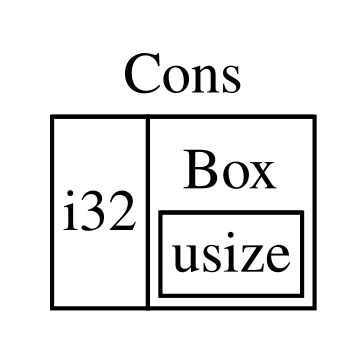

A Linguagem de Programação Rust
por Steve Klabnik, Carol Nichols e Chris Krycho, com contribuições da Comunidade Rust
Esta versão do texto pressupõe que você está usando Rust 1.90.0 (lançado em
2025-09-18) ou posterior, com edition = "2024" no arquivo Cargo.toml de
todos os projetos para configurá-los com as convenções idiomáticas da edição
Rust 2024. Consulte a seção “Instalação” do Capítulo 1 para instruções de instalação ou atualização do Rust e veja o Apêndice
E para informações sobre edições.
O formato HTML está disponível online em
https://doc.rust-lang.org/stable/book/
e offline nas instalações do Rust feitas com rustup; execute rustup doc --book para abri-lo.
Também há várias [traduções] mantidas pela comunidade.
Este texto também está disponível em formato impresso e ebook pela No Starch Press.
🚨 Quer uma experiência de aprendizado mais interativa? Experimente outra versão do Rust Book, com: questionários, destaques, visualizações e mais: https://rust-book.cs.brown.edu
Prefácio
A linguagem de programação Rust percorreu um longo caminho em poucos anos: de sua criação e incubação por uma comunidade pequena e ainda nascente de entusiastas até se tornar uma das linguagens de programação mais admiradas e mais procuradas do mundo. Olhando em retrospecto, era inevitável que o poder e a promessa do Rust chamassem atenção e conquistassem espaço na programação de sistemas. O que não era inevitável era o crescimento global do interesse e da inovação que se espalhou pelas comunidades de código aberto e catalisou a adoção em larga escala em diversos setores.
Hoje, é fácil apontar os excelentes recursos que o Rust oferece para explicar essa explosão de interesse e adoção. Quem não quer segurança de memória, e alto desempenho, e um compilador amigável, e ótimas ferramentas, entre tantos outros benefícios? A linguagem Rust que você vê hoje combina anos de pesquisa em programação de sistemas com a sabedoria prática de uma comunidade vibrante e apaixonada. Essa linguagem foi projetada com propósito e lapidada com cuidado, oferecendo a desenvolvedoras e desenvolvedores uma ferramenta que facilita a escrita de código seguro, rápido e confiável.
Mas o que torna o Rust realmente especial é sua raiz em capacitar você, a pessoa usuária, a alcançar seus objetivos. Esta é uma linguagem que quer ver você ter sucesso, e esse princípio de capacitação percorre o núcleo da comunidade que constrói, mantém e promove a linguagem. Desde a edição anterior deste texto de referência, Rust se desenvolveu ainda mais e se tornou uma linguagem verdadeiramente global e confiável. O Projeto Rust agora conta com forte apoio da Rust Foundation, que também investe em iniciativas importantes para garantir que Rust permaneça seguro, estável e sustentável.
Esta edição de A Linguagem de Programação Rust é uma atualização abrangente, refletindo a evolução da linguagem ao longo dos anos e trazendo informações novas valiosas. Mas ela não é apenas um guia de sintaxe e bibliotecas: é um convite para participar de uma comunidade que valoriza qualidade, desempenho e design cuidadoso. Seja você uma pessoa desenvolvedora experiente querendo explorar Rust pela primeira vez, seja alguém já experiente em Rust buscando refinar suas habilidades, esta edição oferece algo para todo mundo.
A jornada do Rust tem sido feita de colaboração, aprendizado e iteração. O crescimento da linguagem e do seu ecossistema reflete diretamente a comunidade vibrante e diversa por trás dela. As contribuições de milhares de desenvolvedores, desde quem projeta o núcleo da linguagem até contribuidores eventuais, são o que fazem do Rust uma ferramenta tão singular e poderosa. Ao pegar este livro, você não está apenas aprendendo uma nova linguagem de programação: está se juntando a um movimento para tornar o software melhor, mais seguro e mais prazeroso de desenvolver.
Boas-vindas à comunidade Rust!
- Bec Rumbul, Diretora-Executiva da Rust Foundation
Introdução
Nota: Esta edição do livro é a mesma de The Rust Programming Language, disponível em formato impresso e ebook pela No Starch Press.
Boas-vindas a A Linguagem de Programação Rust, um livro introdutório sobre Rust. A linguagem de programação Rust ajuda você a escrever software mais rápido e mais confiável. Ergonomia de alto nível e controle de baixo nível costumam entrar em conflito no design de linguagens de programação; Rust desafia esse conflito. Ao equilibrar grande capacidade técnica com uma ótima experiência para desenvolvedores, Rust oferece a opção de controlar detalhes de baixo nível, como o uso de memória, sem toda a dificuldade tradicionalmente associada a esse tipo de controle.
Para quem Rust é indicado
Rust é ideal para muita gente por vários motivos. Vamos olhar para alguns dos grupos mais importantes.
Equipes de desenvolvimento
Rust tem se mostrado uma ferramenta produtiva para colaboração entre grandes equipes com níveis variados de conhecimento em programação de sistemas. Código de baixo nível é propenso a vários bugs sutis que, na maioria das outras linguagens, só podem ser detectados com testes extensivos e revisão de código cuidadosa feita por pessoas experientes. Em Rust, o compilador atua como uma espécie de guardião ao se recusar a compilar código com esses bugs difíceis de encontrar, inclusive bugs de concorrência. Trabalhando junto com o compilador, a equipe pode dedicar seu tempo à lógica do programa em vez de sair caçando bugs.
Rust também traz ferramentas modernas para desenvolvedores ao mundo da programação de sistemas:
- O Cargo, gerenciador de dependências e ferramenta de build incluídos, torna simples e consistente adicionar, compilar e gerenciar dependências em todo o ecossistema Rust.
- A ferramenta de formatação
rustfmtgarante um estilo de código consistente entre diferentes pessoas desenvolvedoras. - O Rust Language Server viabiliza integração com ambientes de desenvolvimento integrados (IDEs), oferecendo autocompletar e mensagens de erro inline.
Ao usar essas e outras ferramentas do ecossistema Rust, pessoas desenvolvedoras podem ser produtivas mesmo escrevendo código em nível de sistema.
Estudantes
Rust também é para estudantes e para pessoas interessadas em aprender conceitos de sistemas. Usando Rust, muita gente aprendeu sobre tópicos como desenvolvimento de sistemas operacionais. A comunidade é bastante acolhedora e fica feliz em responder às dúvidas de estudantes. Por meio de esforços como este livro, as equipes do Rust querem tornar conceitos de sistemas mais acessíveis a mais pessoas, especialmente quem está começando a programar.
Empresas
Centenas de empresas, grandes e pequenas, usam Rust em produção para diversas tarefas, incluindo ferramentas de linha de comando, serviços web, tooling de DevOps, dispositivos embarcados, análise e transcodificação de áudio e vídeo, criptomoedas, bioinformática, motores de busca, aplicações de Internet das Coisas, aprendizado de máquina e até partes importantes do navegador Firefox.
Pessoas desenvolvedoras de código aberto
Rust é para quem quer construir a linguagem de programação Rust, sua comunidade, ferramentas para desenvolvedores e bibliotecas. Adoraríamos contar com a sua contribuição para a linguagem Rust.
Pessoas que valorizam velocidade e estabilidade
Rust é para quem deseja velocidade e estabilidade em uma linguagem. Por velocidade, queremos dizer tanto a rapidez com que o código Rust pode executar quanto a velocidade com que Rust permite escrever programas. As verificações do compilador Rust garantem estabilidade durante a adição de recursos e a refatoração. Isso contrasta com o código legado frágil em linguagens sem essas verificações, que desenvolvedores costumam ter receio de modificar. Ao buscar abstrações de custo zero, isto é, recursos de nível mais alto que compilam para código de baixo nível tão rápido quanto código escrito manualmente, Rust se esforça para fazer com que código seguro também seja código rápido.
A linguagem Rust espera dar suporte a muitos outros perfis de usuário também; os mencionados aqui são apenas alguns dos grupos mais importantes. No geral, a maior ambição do Rust é eliminar os trade-offs que programadores aceitaram por décadas, oferecendo segurança e produtividade, velocidade e ergonomia. Experimente Rust e veja se as escolhas da linguagem funcionam para você.
Para quem este livro é indicado
Este livro presume que você já escreveu código em outra linguagem de programação, mas não faz suposições sobre qual seja. Tentamos tornar o material amplamente acessível para pessoas com os mais diversos históricos de programação. Não gastamos muito tempo explicando o que é programação ou como pensar sobre ela. Se você é totalmente iniciante em programação, será melhor atendido por um livro que ofereça especificamente uma introdução à programação.
Como usar este livro
Em geral, este livro presume que você o está lendo em sequência, do começo ao fim. Capítulos posteriores se baseiam em conceitos apresentados antes, e os capítulos iniciais podem não se aprofundar em certos assuntos porque voltarão a eles em mais detalhes depois.
Você encontrará dois tipos de capítulos neste livro: capítulos conceituais e capítulos de projeto. Nos capítulos conceituais, você aprenderá sobre algum aspecto do Rust. Nos capítulos de projeto, construiremos pequenos programas juntos, aplicando o que você aprendeu até aquele ponto. Os Capítulos 2, 12 e 21 são capítulos de projeto; os demais são capítulos conceituais.
O Capítulo 1 explica como instalar Rust, como escrever um programa “Hello, world!” e como usar o Cargo, o gerenciador de pacotes e ferramenta de build do Rust. O Capítulo 2 é uma introdução prática à escrita de um programa em Rust, fazendo você construir um jogo de adivinhação. Ali, cobrimos conceitos em alto nível, e capítulos posteriores darão detalhes adicionais. Se você quer colocar a mão na massa logo de início, o Capítulo 2 é o lugar certo. Se você é um tipo de aprendiz especialmente meticuloso e prefere entender cada detalhe antes de avançar, talvez queira pular o Capítulo 2 e ir direto ao Capítulo 3, que cobre recursos do Rust parecidos com os de outras linguagens de programação; depois, você pode voltar ao Capítulo 2 quando quiser trabalhar em um projeto que aplique os detalhes aprendidos.
No Capítulo 4, você aprenderá sobre o sistema de ownership do Rust. O
Capítulo 5 discute structs e métodos. O Capítulo 6 cobre enums,
expressões match e as construções de fluxo de controle if let e
let...else. Você usará structs e enums para criar tipos personalizados.
No Capítulo 7, você aprenderá sobre o sistema de módulos do Rust e sobre as regras de privacidade para organizar seu código e sua interface pública de programação de aplicações (API). O Capítulo 8 discute algumas estruturas de dados de coleção comuns fornecidas pela biblioteca padrão: vetores, strings e hash maps. O Capítulo 9 explora a filosofia e as técnicas de tratamento de erros em Rust.
O Capítulo 10 se aprofunda em genéricos, traits e lifetimes, que dão a
você o poder de definir código aplicável a múltiplos tipos. O Capítulo 11
é inteiramente dedicado a testes, que, mesmo com as garantias de segurança do
Rust, ainda são necessários para assegurar que a lógica do programa está
correta. No Capítulo 12, construiremos nossa própria implementação de um
subconjunto da funcionalidade do utilitário de linha de comando grep, que
busca texto dentro de arquivos. Para isso, usaremos muitos dos conceitos
discutidos nos capítulos anteriores.
O Capítulo 13 explora closures e iteradores, recursos do Rust vindos de linguagens de programação funcionais. No Capítulo 14, examinaremos o Cargo em mais profundidade e falaremos sobre boas práticas para compartilhar suas bibliotecas com outras pessoas. O Capítulo 15 discute smart pointers fornecidos pela biblioteca padrão e os traits que habilitam sua funcionalidade.
No Capítulo 16, veremos diferentes modelos de programação concorrente e falaremos sobre como Rust ajuda você a programar com múltiplas threads sem medo. No Capítulo 17, daremos continuidade a isso explorando a sintaxe async e await do Rust, junto com tasks, futures e streams, e o modelo de concorrência leve que eles possibilitam.
O Capítulo 18 observa como os idioms do Rust se comparam a princípios de programação orientada a objetos com os quais você talvez já esteja familiarizado. O Capítulo 19 é uma referência sobre padrões e pattern matching, formas poderosas de expressar ideias em programas Rust. O Capítulo 20 reúne uma variedade de tópicos avançados de interesse, incluindo Rust inseguro, macros e mais detalhes sobre lifetimes, traits, tipos, funções e closures.
No Capítulo 21, concluiremos um projeto no qual implementaremos um servidor web multithread de baixo nível!
Por fim, alguns apêndices contêm informações úteis sobre a linguagem em um formato mais voltado a referência. O Apêndice A cobre as palavras-chave do Rust, o Apêndice B cobre operadores e símbolos, o Apêndice C cobre traits deriváveis fornecidos pela biblioteca padrão, o Apêndice D cobre algumas ferramentas úteis de desenvolvimento, e o Apêndice E explica as edições do Rust. No Apêndice F, você encontra traduções do livro, e no Apêndice G veremos como o Rust é feito e o que é o Rust nightly.
Não existe jeito errado de ler este livro: se quiser pular adiante, vá em frente! Talvez você precise voltar a capítulos anteriores se encontrar alguma confusão. Mas faça o que funcionar melhor para você.
Uma parte importante do processo de aprender Rust é aprender a ler as mensagens de erro exibidas pelo compilador: elas vão guiar você até um código que funciona. Por isso, forneceremos muitos exemplos que não compilam, junto com a mensagem de erro que o compilador mostrará em cada situação. Saiba que, se você digitar e executar um exemplo aleatório, ele pode não compilar! Leia sempre o texto ao redor para ver se o exemplo que você está tentando executar foi pensado para gerar erro. O Ferris também ajudará a diferenciar código que não foi feito para funcionar:
| Ferris | Significado |
|---|---|
 | Este código não compila! |
 | Este código entra em pânico! |
 | Este código não produz o comportamento desejado. |
Na maioria das situações, vamos conduzir você até a versão correta de qualquer código que não compile.
Código-fonte
Os arquivos-fonte a partir dos quais este livro é gerado podem ser encontrados no GitHub.
Primeiros Passos
Vamos começar sua jornada com Rust! Há muito a aprender, mas toda jornada começa em algum lugar. Neste capítulo, vamos abordar:
- A instalação do Rust no Linux, no macOS e no Windows
- A escrita de um programa que imprime
Hello, world! - O uso do
cargo, o gerenciador de pacotes e sistema de build do Rust
Instalação
Instalação
O primeiro passo é instalar o Rust. Vamos baixar o Rust por meio do rustup,
uma ferramenta de linha de comando para gerenciar versões do Rust e
ferramentas associadas. Você precisará de uma conexão com a internet para o
download.
Nota: Se por algum motivo você preferir não usar
rustup, consulte a página Other Rust Installation Methods para ver outras opções.
Os passos a seguir instalam a versão estável mais recente do compilador Rust. As garantias de estabilidade do Rust asseguram que todos os exemplos do livro que compilam continuarão compilando em versões mais novas do Rust. A saída pode variar um pouco entre versões, porque Rust frequentemente melhora mensagens de erro e avisos. Em outras palavras, qualquer versão estável mais nova que você instalar seguindo estes passos deve funcionar como esperado com o conteúdo deste livro.
Notação de Linha de Comando
Neste capítulo e ao longo do livro, mostraremos alguns comandos usados no
terminal. Linhas que você deve digitar em um terminal sempre começam com
$. Você não precisa digitar o caractere $; ele é apenas o prompt de
comando, mostrado para indicar o início de cada comando. Linhas que não
começam com $ normalmente mostram a saída do comando anterior. Além disso,
exemplos específicos do PowerShell usarão > em vez de $.
Instalando o rustup no Linux ou no macOS
Se você estiver usando Linux ou macOS, abra um terminal e digite o seguinte comando:
$ curl --proto '=https' --tlsv1.2 https://sh.rustup.rs -sSf | sh
O comando baixa um script e inicia a instalação da ferramenta rustup, que
instala a versão estável mais recente do Rust. Você pode ser solicitado a
informar sua senha. Se a instalação for bem-sucedida, a seguinte linha
aparecerá:
Rust is installed now. Great!
Você também precisará de um linker, que é um programa que o Rust usa para juntar a saída compilada em um único arquivo. É provável que você já tenha um. Se receber erros de linker, deve instalar um compilador C, que normalmente já inclui um linker. Um compilador C também é útil porque alguns pacotes comuns do Rust dependem de código C e precisarão de um compilador desse tipo.
No macOS, você pode obter um compilador C executando:
$ xcode-select --install
Usuários de Linux normalmente devem instalar GCC ou Clang, de acordo com a
documentação de sua distribuição. Por exemplo, se você usa Ubuntu, pode
instalar o pacote build-essential.
Instalando o rustup no Windows
No Windows, acesse https://www.rust-lang.org/tools/install e siga as instruções de instalação do Rust. Em algum momento do processo, será solicitado que você instale o Visual Studio. Isso fornece um linker e as bibliotecas nativas necessárias para compilar programas. Se precisar de mais ajuda nessa etapa, veja https://rust-lang.github.io/rustup/installation/windows-msvc.html.
O restante deste livro usa comandos que funcionam tanto no cmd.exe quanto no PowerShell. Se houver diferenças específicas, explicaremos qual usar.
Solucionando problemas
Para verificar se o Rust foi instalado corretamente, abra um shell e execute a seguinte linha:
$ rustc --version
Você deverá ver o número da versão, o hash do commit e a data do commit da versão estável mais recente lançada, no seguinte formato:
rustc x.y.z (abcabcabc yyyy-mm-dd)
Se você vir essas informações, o Rust foi instalado com sucesso! Se não
aparecerem, verifique se o Rust está na variável de sistema %PATH%, assim:
No CMD do Windows, use:
> echo %PATH%
No PowerShell, use:
> echo $env:Path
No Linux e no macOS, use:
$ echo $PATH
Se isso estiver correto e o Rust ainda assim não funcionar, há vários lugares em que você pode conseguir ajuda. Descubra como entrar em contato com outros rustaceanos (um apelido brincalhão que usamos para nós mesmos) na página da comunidade.
Atualizando e desinstalando
Depois que o Rust estiver instalado via rustup, atualizar para uma versão
nova é simples. No shell, execute o seguinte script de atualização:
$ rustup update
Para desinstalar Rust e rustup, execute o seguinte script no shell:
$ rustup self uninstall
Lendo a documentação local
A instalação do Rust também inclui uma cópia local da documentação, para que
você possa lê-la offline. Execute rustup doc para abrir essa documentação no
seu navegador.
Sempre que um tipo ou função for fornecido pela biblioteca padrão e você não tiver certeza do que faz ou como usar, recorra à documentação da interface de programação de aplicações (API)!
Usando editores de texto e IDEs
Este livro não faz suposições sobre quais ferramentas você usa para escrever código Rust. Praticamente qualquer editor de texto dá conta do recado! Ainda assim, muitos editores de texto e ambientes de desenvolvimento integrados (IDEs) têm suporte embutido para Rust. Você sempre pode encontrar uma lista razoavelmente atualizada de vários editores e IDEs na página de ferramentas do site do Rust.
Trabalhando offline com este livro
Em vários exemplos, usaremos pacotes Rust além da biblioteca padrão. Para
acompanhar esses exemplos, você precisará ter conexão com a internet ou já ter
baixado essas dependências com antecedência. Para baixar as dependências antes,
você pode executar os comandos a seguir. Mais tarde explicaremos em detalhes o
que é cargo e o que cada um desses comandos faz.
$ cargo new get-dependencies
$ cd get-dependencies
$ cargo add rand@0.8.5 trpl@0.2.0
Isso fará cache dos downloads desses pacotes, então você não precisará
baixá-los depois. Depois de executar esse comando, você não precisa manter a
pasta get-dependencies. Se tiver executado esse comando, poderá usar a flag
--offline com todos os comandos cargo no restante do livro para utilizar
essas versões em cache em vez de tentar acessar a rede.
Olá, Mundo!
Olá, Mundo!
Agora que você instalou o Rust, chegou a hora de escrever seu primeiro
programa em Rust. É tradicional, ao aprender uma nova linguagem, escrever um
pequeno programa que imprima Hello, world! na tela, então faremos o mesmo
aqui.
Nota: Este livro presume familiaridade básica com a linha de comando. Rust não faz exigências específicas sobre edição, tooling ou o local onde seu código vive, então, se você preferir usar uma IDE em vez da linha de comando, fique à vontade para usar a sua favorita. Muitas IDEs já têm algum grau de suporte a Rust; consulte a documentação da sua IDE para detalhes. A equipe do Rust tem investido bastante em viabilizar um ótimo suporte a IDEs por meio do
rust-analyzer. Veja o Apêndice D para mais detalhes.
Configuração do diretório do projeto
Você começará criando um diretório para guardar seu código Rust. Para o Rust, não importa onde seu código fica, mas, para os exercícios e projetos deste livro, sugerimos criar um diretório projects dentro do seu diretório pessoal e manter todos os seus projetos lá.
Abra um terminal e digite os comandos a seguir para criar o diretório projects e, dentro dele, um diretório para o projeto “Hello, world!”.
No Linux, no macOS e no PowerShell do Windows, digite isto:
$ mkdir ~/projects
$ cd ~/projects
$ mkdir hello_world
$ cd hello_world
No CMD do Windows, digite isto:
> mkdir "%USERPROFILE%\projects"
> cd /d "%USERPROFILE%\projects"
> mkdir hello_world
> cd hello_world
Fundamentos de um programa Rust
Em seguida, crie um novo arquivo-fonte e chame-o de main.rs. Arquivos Rust sempre terminam com a extensão .rs. Se você estiver usando mais de uma palavra no nome do arquivo, a convenção é separá-las com underscore. Por exemplo, use hello_world.rs em vez de helloworld.rs.
Agora abra o arquivo main.rs que acabou de criar e digite o código da Listagem 1-1.
fn main() {
println!("Hello, world!");
}Hello, world!Salve o arquivo e volte para a janela do terminal no diretório ~/projects/hello_world. No Linux ou no macOS, digite os seguintes comandos para compilar e executar o arquivo:
$ rustc main.rs
$ ./main
Hello, world!
No Windows, use o comando .\main em vez de ./main:
> rustc main.rs
> .\main
Hello, world!
Independentemente do sistema operacional, a string Hello, world! deve ser
impressa no terminal. Se isso não acontecer, volte à parte
“Solucionando problemas” da seção de
instalação para ver formas de conseguir ajuda.
Se Hello, world! apareceu, parabéns! Você escreveu oficialmente um programa
em Rust. Isso faz de você um programador Rust: boas-vindas!
Anatomia de um programa Rust
Vamos revisar esse programa “Hello, world!” em detalhes. Aqui está a primeira peça do quebra-cabeça:
fn main() {
}Essas linhas definem uma função chamada main. A função main é especial:
ela é sempre o primeiro código executado em todo programa Rust executável.
Aqui, a primeira linha declara uma função chamada main que não recebe
parâmetros e não retorna nada. Se houvesse parâmetros, eles apareceriam dentro
dos parênteses (()).
O corpo da função fica entre {}. Rust exige chaves ao redor do corpo de todas
as funções. É considerado bom estilo colocar a chave de abertura na mesma linha
da declaração da função, com um espaço entre elas.
Nota: Se você quiser manter um estilo padrão entre projetos Rust, pode usar uma ferramenta de formatação automática chamada
rustfmtpara formatar seu código de um jeito específico. Falaremos mais sobrerustfmtno Apêndice D. A equipe do Rust inclui essa ferramenta na distribuição padrão do Rust, assim comorustc, então ela provavelmente já está instalada no seu computador!
O corpo da função main contém o seguinte código:
#![allow(unused)]
fn main() {
println!("Hello, world!");
}Essa linha faz todo o trabalho deste pequeno programa: ela imprime texto na tela. Há três detalhes importantes aqui.
Primeiro, println! chama uma macro do Rust. Se estivesse chamando uma função,
seria escrito como println sem o !. Macros em Rust são uma forma de
escrever código que gera código para estender a sintaxe da linguagem, e vamos
discuti-las com mais detalhes no Capítulo 20. Por
enquanto, basta saber que usar ! significa que você está chamando uma macro,
não uma função comum, e que macros nem sempre seguem as mesmas regras das
funções.
Segundo, você vê a string "Hello, world!". Passamos essa string como
argumento para println!, e ela é impressa na tela.
Terceiro, terminamos a linha com ponto e vírgula (;), o que indica que essa
expressão acabou e a próxima já pode começar. A maioria das linhas de código
Rust termina com ponto e vírgula.
Compilação e execução
Você acabou de executar um programa recém-criado, então vamos examinar cada etapa do processo.
Antes de executar um programa Rust, você precisa compilá-lo usando o compilador
Rust, digitando o comando rustc e passando o nome do arquivo-fonte, assim:
$ rustc main.rs
Se você tem experiência com C ou C++, perceberá que isso se parece com gcc
ou clang. Após uma compilação bem-sucedida, Rust gera um executável binário.
No Linux, no macOS e no PowerShell do Windows, você pode ver o executável
digitando o comando ls no shell:
$ ls
main main.rs
No Linux e no macOS, você verá dois arquivos. No PowerShell do Windows, verá os mesmos três arquivos que veria usando o CMD. No CMD do Windows, você digitaria o seguinte:
> dir /B %= a opção /B diz para mostrar apenas os nomes dos arquivos =%
main.exe
main.pdb
main.rs
Isso mostra o arquivo-fonte com a extensão .rs, o arquivo executável (main.exe no Windows, mas main nas demais plataformas) e, no Windows, um arquivo com informações de depuração com a extensão .pdb. A partir daí, você executa o arquivo main ou main.exe, assim:
$ ./main # ou .\main no Windows
Se o seu main.rs é o programa “Hello, world!”, essa linha imprimirá
Hello, world! no terminal.
Se você estiver mais acostumado a uma linguagem dinâmica, como Ruby, Python ou JavaScript, talvez não esteja acostumado a compilar e executar um programa como etapas separadas. Rust é uma linguagem compilada antecipadamente (ahead of time), o que significa que você pode compilar um programa e entregar o executável para outra pessoa, e ela poderá executá-lo mesmo sem ter Rust instalado. Se você entregar um arquivo .rb, .py ou .js, a pessoa precisará ter, respectivamente, uma implementação de Ruby, Python ou JavaScript instalada. Mas, nessas linguagens, normalmente basta um único comando para compilar e executar o programa. Tudo envolve trade-offs no design de linguagens.
Compilar apenas com rustc funciona bem para programas simples, mas, à medida
que o projeto cresce, você vai querer gerenciar todas as opções e facilitar o
compartilhamento do código. Em seguida, apresentaremos a ferramenta Cargo, que
ajudará você a escrever programas Rust do mundo real.
Olá, Cargo!
Olá, Cargo!
Cargo é o sistema de build e gerenciador de pacotes do Rust. A maioria dos rustaceanos usa essa ferramenta para gerenciar seus projetos Rust, porque Cargo cuida de muitas tarefas para você, como compilar seu código, baixar as bibliotecas das quais ele depende e compilar essas bibliotecas. Chamamos as bibliotecas de que seu código precisa de dependências.
Os programas mais simples em Rust, como o que escrevemos até agora, não têm dependências. Se tivéssemos criado o projeto “Hello, world!” com o Cargo, ele usaria apenas a parte do Cargo responsável por compilar seu código. Conforme você escrever programas Rust mais complexos, adicionará dependências e, se iniciar o projeto com Cargo, isso será muito mais fácil.
Como a vasta maioria dos projetos Rust usa Cargo, o restante deste livro pressupõe que você também o está usando. Cargo vem instalado com Rust se você usou os instaladores oficiais discutidos na seção “Instalação”. Se instalou o Rust de outra forma, verifique se o Cargo está instalado digitando o seguinte no terminal:
$ cargo --version
Se você vir um número de versão, então está tudo certo! Se vir um erro, como
command not found, consulte a documentação do seu método de instalação para
descobrir como instalar Cargo separadamente.
Criando um projeto com Cargo
Vamos criar um novo projeto usando Cargo e observar como ele difere do nosso projeto original “Hello, world!”. Volte para o diretório projects ou para o local onde decidiu guardar seu código. Em qualquer sistema operacional, execute o seguinte:
$ cargo new hello_cargo
$ cd hello_cargo
O primeiro comando cria um novo diretório e projeto chamados hello_cargo. Demos ao projeto o nome hello_cargo, e o Cargo cria seus arquivos em um diretório com esse mesmo nome.
Entre no diretório hello_cargo e liste os arquivos. Você verá que o Cargo gerou dois arquivos e um diretório para nós: um arquivo Cargo.toml e um diretório src com um arquivo main.rs dentro dele.
Ele também inicializou um novo repositório Git junto com um arquivo
.gitignore. Os arquivos do Git não serão gerados se você executar
cargo new dentro de um repositório Git já existente; você pode mudar esse
comportamento usando cargo new --vcs=git.
Nota: Git é um sistema de controle de versão bastante comum. Você pode mudar
cargo newpara usar outro sistema de controle de versão ou nenhum, usando a flag--vcs. Executecargo new --helppara ver as opções disponíveis.
Abra Cargo.toml no editor de texto de sua preferência. Ele deve se parecer com o código da Listagem 1-2.
[package]
name = "hello_cargo"
version = "0.1.0"
edition = "2024"
[dependencies]
cargo newEsse arquivo está no formato TOML (Tom’s Obvious, Minimal Language), que é o formato de configuração do Cargo.
A primeira linha, [package], é um cabeçalho de seção que indica que as
declarações seguintes configuram um package. À medida que adicionarmos mais
informações a esse arquivo, acrescentaremos outras seções.
As três linhas seguintes definem as informações de configuração de que o Cargo
precisa para compilar seu programa: o nome, a versão e a edição do Rust a ser
usada. Falaremos sobre a chave edition no Apêndice E.
A última linha, [dependencies], marca o começo de uma seção na qual você
listará as dependências do projeto. Em Rust, pacotes de código são chamados de
crates. Não precisaremos de outros crates para este projeto, mas
precisaremos no primeiro projeto do Capítulo 2, então usaremos essa seção
naquela ocasião.
Agora abra src/main.rs e dê uma olhada:
Nome do arquivo: src/main.rs
fn main() {
println!("Hello, world!");
}O Cargo gerou para você um programa “Hello, world!”, exatamente como o que escrevemos na Listagem 1-1! Até aqui, as diferenças entre o nosso projeto e o projeto gerado pelo Cargo são que o Cargo colocou o código dentro do diretório src e criou um arquivo de configuração Cargo.toml no diretório superior.
O Cargo espera que seus arquivos-fonte fiquem dentro do diretório src. O diretório de topo do projeto deve conter apenas arquivos README, informações de licença, arquivos de configuração e qualquer outra coisa que não esteja diretamente relacionada ao código. Usar Cargo ajuda a organizar seus projetos. Há um lugar para cada coisa, e cada coisa fica em seu lugar.
Se você iniciou um projeto sem usar Cargo, como fizemos com o projeto “Hello,
world!”, pode convertê-lo para um projeto que use Cargo. Mova o código do
projeto para o diretório src e crie um arquivo Cargo.toml adequado. Uma
forma simples de obter esse arquivo Cargo.toml é executar cargo init, que o
criará automaticamente para você.
Compilando e executando um projeto Cargo
Agora vamos ver o que muda quando compilamos e executamos o programa “Hello, world!” com Cargo! No diretório hello_cargo, compile o projeto digitando:
$ cargo build
Compiling hello_cargo v0.1.0 (file:///projects/hello_cargo)
Finished dev [unoptimized + debuginfo] target(s) in 2.85 secs
Esse comando cria um executável em target/debug/hello_cargo ou target\debug\hello_cargo.exe no Windows, em vez de gerá-lo no diretório atual. Como o build padrão é de depuração, o Cargo coloca o binário em um diretório chamado debug. Você pode executar o executável com este comando:
$ ./target/debug/hello_cargo # ou .\target\debug\hello_cargo.exe no Windows
Hello, world!
Se tudo correr bem, Hello, world! deve ser impresso no terminal. Executar
cargo build pela primeira vez também faz o Cargo criar um novo arquivo no
nível superior do projeto: Cargo.lock. Esse arquivo mantém registro das
versões exatas das dependências do projeto. Como este projeto não tem
dependências, o arquivo é bem enxuto. Você nunca precisará alterá-lo
manualmente; o Cargo gerencia seu conteúdo para você.
Acabamos de compilar um projeto com cargo build e executá-lo com
./target/debug/hello_cargo, mas também podemos usar cargo run para compilar
o código e depois executar o binário resultante em um único comando:
$ cargo run
Finished dev [unoptimized + debuginfo] target(s) in 0.0 secs
Running `target/debug/hello_cargo`
Hello, world!
Usar cargo run é mais conveniente do que lembrar de executar cargo build e
depois usar o caminho completo até o binário, então a maioria dos
desenvolvedores prefere cargo run.
Observe que, desta vez, não vimos a saída indicando que o Cargo estava
compilando hello_cargo. O Cargo percebeu que os arquivos não haviam mudado,
então ele não recompilou nada; apenas executou o binário. Se você tivesse
modificado o código-fonte, o Cargo recompilaria o projeto antes de executá-lo,
e você veria esta saída:
$ cargo run
Compiling hello_cargo v0.1.0 (file:///projects/hello_cargo)
Finished dev [unoptimized + debuginfo] target(s) in 0.33 secs
Running `target/debug/hello_cargo`
Hello, world!
O Cargo também oferece um comando chamado cargo check. Esse comando verifica
rapidamente se seu código compila, mas não produz um executável:
$ cargo check
Checking hello_cargo v0.1.0 (file:///projects/hello_cargo)
Finished dev [unoptimized + debuginfo] target(s) in 0.32 secs
Por que você não iria querer um executável? Muitas vezes, cargo check é bem
mais rápido do que cargo build, porque pula a etapa de gerar o executável. Se
você estiver checando seu trabalho continuamente enquanto escreve código, usar
cargo check acelera o processo de descobrir se o projeto ainda está
compilando! Por isso, muitos rustaceanos executam cargo check
periodicamente enquanto escrevem seus programas, para garantir que tudo
continua compilando. Depois, quando estão prontos para usar o executável,
executam cargo build.
Vamos recapitular o que aprendemos até aqui sobre Cargo:
- Podemos criar um projeto usando
cargo new. - Podemos compilar um projeto usando
cargo build. - Podemos compilar e executar um projeto em uma única etapa usando
cargo run. - Podemos verificar se há erros em um projeto sem produzir um binário usando
cargo check. - Em vez de salvar o resultado do build no mesmo diretório do código, o Cargo o armazena no diretório target/debug.
Uma vantagem adicional do Cargo é que os comandos são os mesmos independentemente do sistema operacional em que você está trabalhando. Por isso, a partir deste ponto, deixaremos de fornecer instruções separadas para Linux e macOS versus Windows.
Compilando para release
Quando o projeto finalmente estiver pronto para release, você pode usar
cargo build --release para compilá-lo com otimizações. Esse comando criará um
executável em target/release em vez de target/debug. As otimizações fazem o
código Rust rodar mais rápido, mas ativá-las aumenta o tempo de compilação.
Por isso há dois perfis diferentes: um para desenvolvimento, quando você quer
recompilar rapidamente e com frequência, e outro para gerar o programa final
que será entregue ao usuário, que não será recompilado repetidamente e deverá
executar o mais rápido possível. Se você estiver medindo o tempo de execução do
seu código, lembre-se de rodar cargo build --release e fazer o benchmark com
o executável em target/release.
Aproveitando as convenções do Cargo
Em projetos simples, o Cargo não oferece muito mais valor do que usar rustc
diretamente, mas ele mostra seu valor à medida que os programas ficam mais
complexos. Quando um programa cresce para múltiplos arquivos ou passa a precisar
de dependências, é muito mais fácil deixar o Cargo coordenar o build.
Mesmo sendo simples, o projeto hello_cargo já usa grande parte do ferramental
real que você vai utilizar no restante da sua carreira com Rust. Na prática,
para trabalhar em qualquer projeto existente, você pode usar os comandos a
seguir para baixar o código com Git, entrar no diretório do projeto e compilar:
$ git clone example.org/someproject
$ cd someproject
$ cargo build
Para mais informações sobre Cargo, consulte sua documentação.
Resumo
Você já começou muito bem sua jornada com Rust! Neste capítulo, você aprendeu a:
- Instalar a versão estável mais recente do Rust usando
rustup. - Atualizar para uma versão mais nova do Rust.
- Abrir a documentação instalada localmente.
- Escrever e executar um programa “Hello, world!” usando
rustcdiretamente. - Criar e executar um novo projeto usando as convenções do Cargo.
Este é um ótimo momento para construir um programa mais substancial e se acostumar a ler e escrever código Rust. Então, no Capítulo 2, construiremos um programa de jogo de adivinhação. Se preferir começar entendendo como conceitos comuns de programação funcionam em Rust, veja o Capítulo 3 e depois volte ao Capítulo 2.
Programando um Jogo de Adivinhação
Vamos entrar no Rust trabalhando juntos em um projeto prático! Este capítulo
apresenta alguns conceitos comuns da linguagem ao mostrar como usá-los em um
programa real. Você aprenderá sobre let, match, métodos, funções
associadas, crates externos e muito mais. Nos capítulos seguintes,
exploraremos essas ideias em mais detalhes. Aqui, o objetivo é praticar os
fundamentos.
Implementaremos um problema clássico para iniciantes: um jogo de adivinhação. O funcionamento é simples: o programa gera um número inteiro aleatório entre 1 e 100 e pede que a pessoa jogadora digite um palpite. Depois que o palpite é informado, o programa diz se ele é baixo demais ou alto demais. Se o palpite estiver correto, o jogo imprime uma mensagem de parabéns e encerra.
Configurando um Novo Projeto
Para configurar um novo projeto, vá até o diretório projects que você criou no Capítulo 1 e crie um novo projeto com o Cargo:
$ cargo new guessing_game
$ cd guessing_game
O primeiro comando, cargo new, recebe o nome do projeto
(guessing_game) como primeiro argumento. O segundo comando entra no diretório
do projeto recém-criado.
Veja o arquivo Cargo.toml gerado:
Nome do arquivo: Cargo.toml
[package]
name = "guessing_game"
version = "0.1.0"
edition = "2024"
[dependencies]
Como você viu no Capítulo 1, cargo new gera para você um programa “Hello,
world!”. Veja o arquivo src/main.rs:
Nome do arquivo: src/main.rs
fn main() {
println!("Hello, world!");
}Agora vamos compilar esse programa “Hello, world!” e executá-lo em uma única
etapa usando o comando cargo run:
$ cargo run
Compiling guessing_game v0.1.0 (file:///projects/guessing_game)
Finished `dev` profile [unoptimized + debuginfo] target(s) in 0.08s
Running `target/debug/guessing_game`
Hello, world!
O comando run é útil quando você precisa iterar rapidamente em um projeto,
como faremos neste jogo, testando cada alteração antes de seguir adiante.
Abra novamente o arquivo src/main.rs. Você escreverá todo o código neste arquivo.
Processando um Palpite
A primeira parte do programa do jogo de adivinhação vai pedir uma entrada ao usuário, processá-la e verificar se ela está no formato esperado. Para começar, vamos permitir que a pessoa jogadora digite um palpite. Insira o código da Listagem 2-1 em src/main.rs.
use std::io;
fn main() {
println!("Guess the number!");
println!("Please input your guess.");
let mut guess = String::new();
io::stdin()
.read_line(&mut guess)
.expect("Failed to read line");
println!("You guessed: {guess}");
}Esse código contém muita coisa, então vamos analisá-lo linha por linha. Para
receber a entrada do usuário e depois imprimir o resultado, precisamos trazer
para o escopo a biblioteca de entrada e saída io. A biblioteca io faz
parte da biblioteca padrão, conhecida como std:
use std::io;
fn main() {
println!("Guess the number!");
println!("Please input your guess.");
let mut guess = String::new();
io::stdin()
.read_line(&mut guess)
.expect("Failed to read line");
println!("You guessed: {guess}");
}Por padrão, Rust traz para o escopo de todo programa um conjunto de itens definidos na biblioteca padrão. Esse conjunto é chamado de prelude, e você pode ver tudo o que ele inclui na documentação da biblioteca padrão.
Se um tipo que você quer usar não estiver no prelude, será necessário trazê-lo
explicitamente para o escopo com uma instrução use. A biblioteca std::io
fornece vários recursos úteis, incluindo a capacidade de ler entrada do
usuário.
Como você viu no Capítulo 1, a função main é o ponto de entrada no
programa:
use std::io;
fn main() {
println!("Guess the number!");
println!("Please input your guess.");
let mut guess = String::new();
io::stdin()
.read_line(&mut guess)
.expect("Failed to read line");
println!("You guessed: {guess}");
}A sintaxe fn declara uma nova função; os parênteses () indicam que não há
parâmetros; e a chave { inicia o corpo da função.
Como você também aprendeu no Capítulo 1, println! é uma macro que imprime uma
string na tela:
use std::io;
fn main() {
println!("Guess the number!");
println!("Please input your guess.");
let mut guess = String::new();
io::stdin()
.read_line(&mut guess)
.expect("Failed to read line");
println!("You guessed: {guess}");
}Esse código imprime uma mensagem informando sobre o jogo e pedindo a entrada do usuário.
Armazenando Valores com Variáveis
A seguir, criaremos uma variável para armazenar a entrada do usuário, assim:
use std::io;
fn main() {
println!("Guess the number!");
println!("Please input your guess.");
let mut guess = String::new();
io::stdin()
.read_line(&mut guess)
.expect("Failed to read line");
println!("You guessed: {guess}");
}Agora o programa começa a ficar interessante! Há bastante coisa acontecendo
nessa linha curta. Usamos a instrução let para criar a variável. Aqui vai
outro exemplo:
let apples = 5;Esta linha cria uma nova variável chamada apples e a vincula ao valor 5.
Em Rust, variáveis são imutáveis por padrão; isto é, depois que damos um valor
a uma variável, esse valor não muda. Discutiremos esse conceito em detalhes na
seção “Variáveis e Mutabilidade” do
Capítulo 3. Para tornar uma variável mutável, adicionamos mut antes do nome
da variável:
let apples = 5; // immutable
let mut bananas = 5; // mutableNota: a sintaxe
//inicia um comentário que vai até o fim da linha. Rust ignora tudo o que estiver em comentários. Falaremos mais sobre comentários no Capítulo 3.
Voltando ao programa do jogo de adivinhação, agora você sabe que let mut guess vai introduzir uma variável mutável chamada guess. O sinal de igual
(=) diz ao Rust que queremos associar algo à variável naquele momento. À
direita do sinal de igual está o valor ao qual guess será associado, que é o
resultado da chamada String::new, uma função que retorna uma nova instância
de String. String é um tipo de string fornecido
pela biblioteca padrão; trata-se de um pedaço de texto codificado em UTF-8 que
pode crescer.
A sintaxe :: em String::new indica que new é uma função associada ao
tipo String. Uma função associada é uma função implementada em um tipo,
neste caso String. A função new cria uma string nova e vazia. Você verá
uma função new em vários tipos porque esse é um nome comum para uma função
que cria algum valor novo.
Portanto, a linha let mut guess = String::new(); cria uma variável mutável
que está associada, naquele momento, a uma instância nova e vazia de String.
Recebendo entrada do usuário
Lembre-se de que incluímos a funcionalidade de entrada e saída da biblioteca
padrão com use std::io; na primeira linha do programa. Agora vamos chamar a
função stdin do módulo io, que nos permitirá lidar com a entrada do
usuário:
use std::io;
fn main() {
println!("Guess the number!");
println!("Please input your guess.");
let mut guess = String::new();
io::stdin()
.read_line(&mut guess)
.expect("Failed to read line");
println!("You guessed: {guess}");
}Se não tivéssemos importado o módulo io com use std::io; no início do
programa, ainda poderíamos usar a função escrevendo a chamada como
std::io::stdin. A função stdin retorna uma instância de
std::io::Stdin, um tipo que representa um
manipulador para a entrada padrão do seu terminal.
Em seguida, a linha .read_line(&mut guess) chama o método
read_line nesse manipulador de entrada padrão
para obter a entrada do usuário. Também passamos &mut guess como argumento
para read_line, indicando em qual string a entrada deverá ser armazenada. O
comportamento de read_line é pegar tudo o que o usuário digita na entrada
padrão e anexar esse conteúdo à string passada como argumento, sem sobrescrever
o que ela já contém. Por isso, o argumento precisa ser mutável: o método vai
alterar o conteúdo da string.
O & indica que esse argumento é uma referência, o que dá a você uma forma
de permitir que várias partes do código acessem um mesmo dado sem precisar
copiá-lo na memória muitas vezes. Referências são um recurso complexo, e uma
das grandes vantagens do Rust é que ele torna o uso delas seguro e prático.
Você não precisa entender todos esses detalhes agora para terminar este
programa. Por enquanto, basta saber que, assim como variáveis, referências são
imutáveis por padrão. Por isso, você precisa escrever &mut guess em vez de
&guess para torná-la mutável. O Capítulo 4 explicará referências com mais
detalhes.
Lidando com falhas potenciais com Result
Ainda estamos trabalhando nessa linha de código. Agora estamos discutindo uma terceira linha de texto, mas observe que ela ainda faz parte de uma única linha lógica de código. A próxima parte é este método:
use std::io;
fn main() {
println!("Guess the number!");
println!("Please input your guess.");
let mut guess = String::new();
io::stdin()
.read_line(&mut guess)
.expect("Failed to read line");
println!("You guessed: {guess}");
}Poderíamos ter escrito este código como:
io::stdin().read_line(&mut guess).expect("Failed to read line");No entanto, uma linha longa é difícil de ler, por isso é melhor dividi-la.
Muitas vezes, vale a pena introduzir uma quebra de linha e outros espaços em
branco para separar linhas longas quando você chama um método com a sintaxe
.method_name(). Agora vamos discutir o que essa linha faz.
Como mencionamos antes, read_line coloca tudo o que a pessoa usuária digita
na string que passamos a ele, mas também retorna um valor Result.
Result é uma enumeração,
geralmente chamada de enum, que é um tipo que pode estar em um dentre vários
estados possíveis. Chamamos cada estado possível de variante.
Capítulo 6 abordará enums em mais detalhes. O propósito
de tipos Result é codificar informações sobre tratamento de erros.
As variantes de Result são Ok e Err. A variante Ok indica que a
operação foi bem-sucedida e contém o valor gerado com sucesso. A variante
Err significa que a operação falhou e contém informações sobre como ou por
que ela falhou.
Valores do tipo Result, como valores de qualquer outro tipo, têm métodos
definidos neles. Uma instância de Result tem um método
expect que você pode chamar. Se essa instância de
Result for um valor Err, expect fará o programa encerrar e exibirá a
mensagem que você passou como argumento para expect. Se o método read_line
retornar um Err, isso provavelmente será resultado de um erro vindo do
sistema operacional subjacente. Se essa instância de Result for um valor
Ok, expect pegará o valor que Ok está contendo e o retornará para você
usar. Nesse caso, esse valor é o número de bytes da entrada da pessoa usuária.
Se você não chamar expect, o programa será compilado, mas você receberá um aviso:
$ cargo build
Compiling guessing_game v0.1.0 (file:///projects/guessing_game)
warning: unused `Result` that must be used
--> src/main.rs:10:5
|
10 | io::stdin().read_line(&mut guess);
| ^^^^^^^^^^^^^^^^^^^^^^^^^^^^^^^^^
|
= note: this `Result` may be an `Err` variant, which should be handled
= note: `#[warn(unused_must_use)]` on by default
help: use `let _ = ...` to ignore the resulting value
|
10 | let _ = io::stdin().read_line(&mut guess);
| +++++++
warning: `guessing_game` (bin "guessing_game") generated 1 warning
Finished `dev` profile [unoptimized + debuginfo] target(s) in 0.59s
Rust avisa que você não usou o valor Result retornado de read_line,
indicando que o programa não tratou um possível erro.
A forma correta de suprimir o aviso é escrever código de tratamento de erros,
mas, no nosso caso, queremos apenas encerrar o programa quando ocorrer um
problema, então podemos usar expect. Você aprenderá como se recuperar de
erros no Capítulo 9.
Imprimindo valores com placeholders de println!
Além da chave de fechamento, há apenas mais uma linha para discutir no código até aqui:
use std::io;
fn main() {
println!("Guess the number!");
println!("Please input your guess.");
let mut guess = String::new();
io::stdin()
.read_line(&mut guess)
.expect("Failed to read line");
println!("You guessed: {guess}");
}Essa linha imprime a string que agora contém a entrada da pessoa usuária. O
conjunto {} de chaves funciona como um placeholder: pense em {} como
pequenas garras de caranguejo segurando um valor no lugar. Ao imprimir o valor
de uma variável, o nome da variável pode ir entre as chaves. Ao imprimir o
resultado da avaliação de uma expressão, coloque chaves vazias na string de
formatação e, em seguida, acrescente à string de formatação uma lista de
expressões separadas por vírgula, a serem impressas em cada placeholder vazio,
na mesma ordem. Imprimir uma variável e o resultado de uma expressão em uma
única chamada a println! ficaria assim:
#![allow(unused)]
fn main() {
let x = 5;
let y = 10;
println!("x = {x} and y + 2 = {}", y + 2);
}Esse código imprimiria x = 5 and y + 2 = 12.
Testando a primeira parte
Vamos testar a primeira parte do jogo de adivinhação. Execute-o usando cargo run:
$ cargo run
Compiling guessing_game v0.1.0 (file:///projects/guessing_game)
Finished `dev` profile [unoptimized + debuginfo] target(s) in 6.44s
Running `target/debug/guessing_game`
Guess the number!
Please input your guess.
6
You guessed: 6
Neste ponto, a primeira parte do jogo está concluída: estamos recebendo entrada do teclado e depois imprimindo essa entrada.
Gerando um número secreto
A seguir, precisamos gerar um número secreto que a pessoa usuária tentará
adivinhar. O número secreto deve ser diferente a cada vez para que o jogo seja
divertido de jogar mais de uma vez. Vamos usar um número aleatório entre 1 e
100 para que o jogo não fique muito difícil. Rust ainda não inclui
funcionalidade de números aleatórios em sua biblioteca padrão. No entanto, a
equipe do Rust fornece uma crate chamada rand com essa
funcionalidade.
Aumentando a funcionalidade com uma crate
Lembre-se de que uma crate é uma coleção de arquivos de código-fonte Rust. O
projeto que estamos construindo é uma crate binária, isto é, um executável. A
crate rand é uma crate de biblioteca, que contém código destinado a ser
usado em outros programas e não pode ser executado sozinha.
A forma como o Cargo coordena crates externas é onde ele realmente brilha.
Antes de escrevermos código que use rand, precisamos modificar o arquivo
Cargo.toml para incluir a crate rand como dependência. Abra esse arquivo
agora e adicione a linha a seguir no final, abaixo do cabeçalho da seção
[dependencies] que o Cargo criou para você. Certifique-se de especificar
rand exatamente como está aqui, com esse número de versão, ou os exemplos de
código deste tutorial podem não funcionar:
Nome do arquivo: Cargo.toml
[dependencies]
rand = "0.8.5"
No arquivo Cargo.toml, tudo o que vem depois de um cabeçalho faz parte
daquela seção, até que outra seção comece. Em [dependencies], você informa ao
Cargo de quais crates externas o projeto depende e de quais versões dessas
crates você precisa. Neste caso, especificamos a crate rand com o
especificador de versão semântica 0.8.5. O Cargo entende Versionamento
Semântico, às vezes chamado de SemVer, que é um
padrão para escrever números de versão. O especificador 0.8.5 é, na verdade,
uma abreviação de ^0.8.5, o que significa qualquer versão que seja pelo menos
0.8.5, mas abaixo de 0.9.0.
O Cargo considera que essas versões têm APIs públicas compatíveis com a versão 0.8.5, e essa especificação garante que você obterá a versão de patch mais recente que ainda compilará com o código deste capítulo. Não há garantia de que qualquer versão 0.9.0 ou superior tenha a mesma API usada nos exemplos a seguir.
Agora, sem alterar nenhum código, vamos compilar o projeto, como mostra a Listagem 2-2.
$ cargo build
Updating crates.io index
Locking 15 packages to latest Rust 1.85.0 compatible versions
Adding rand v0.8.5 (available: v0.9.0)
Compiling proc-macro2 v1.0.93
Compiling unicode-ident v1.0.17
Compiling libc v0.2.170
Compiling cfg-if v1.0.0
Compiling byteorder v1.5.0
Compiling getrandom v0.2.15
Compiling rand_core v0.6.4
Compiling quote v1.0.38
Compiling syn v2.0.98
Compiling zerocopy-derive v0.7.35
Compiling zerocopy v0.7.35
Compiling ppv-lite86 v0.2.20
Compiling rand_chacha v0.3.1
Compiling rand v0.8.5
Compiling guessing_game v0.1.0 (file:///projects/guessing_game)
Finished `dev` profile [unoptimized + debuginfo] target(s) in 2.48s
cargo build após adicionar a crate rand como dependênciaVocê pode ver números de versão diferentes, embora todos sejam compatíveis com o código graças ao SemVer, e linhas diferentes, dependendo do sistema operacional. As linhas também podem aparecer em outra ordem.
Quando incluímos uma dependência externa, o Cargo busca no registry as versões mais recentes de tudo de que a dependência precisa. O registry é uma cópia dos dados de Crates.io. O Crates.io é onde as pessoas do ecossistema Rust publicam seus projetos Rust de código aberto para que outras pessoas possam usá-los.
Depois de atualizar o registry, o Cargo verifica a seção [dependencies] e
baixa todas as crates listadas que ainda não foram baixadas. Nesse caso,
embora tenhamos listado apenas rand como dependência, o Cargo também obteve
outras crates das quais rand depende para funcionar. Depois de baixar as
crates, Rust as compila e, em seguida, compila o projeto com as dependências
disponíveis.
Se você executar cargo build imediatamente de novo, sem fazer nenhuma
alteração, não verá nenhuma saída além da linha Finished. O Cargo sabe que
já baixou e compilou as dependências e que você não mudou nada nelas no arquivo
Cargo.toml. Ele também sabe que você não mudou nada no seu código, então não
o recompila. Sem nada a fazer, ele simplesmente encerra.
Se você abrir o arquivo src/main.rs, fizer uma alteração trivial, salvá-lo e compilar novamente, verá apenas duas linhas de saída:
$ cargo build
Compiling guessing_game v0.1.0 (file:///projects/guessing_game)
Finished `dev` profile [unoptimized + debuginfo] target(s) in 0.13s
Essas linhas mostram que o Cargo atualiza apenas o build com a pequena mudança feita no arquivo src/main.rs. Como as dependências não mudaram, o Cargo sabe que pode reutilizar o que já foi baixado e compilado para elas.
Garantindo builds reproduzíveis
O Cargo tem um mecanismo que garante que você possa recriar o mesmo artefato
toda vez que você ou qualquer outra pessoa compilar o código: ele usará apenas
as versões das dependências que você especificou até que você diga o contrário.
Por exemplo, imagine que, na próxima semana, a versão 0.8.6 da crate rand
seja lançada, contendo uma correção de bug importante, mas também uma regressão
que quebrará seu código. Para lidar com isso, Rust cria o arquivo
Cargo.lock na primeira vez que você executa cargo build, então agora temos
esse arquivo no diretório guessing_game.
Quando você compila um projeto pela primeira vez, o Cargo descobre todas as versões das dependências que atendem aos critérios e depois as grava no arquivo Cargo.lock. Quando você compilar o projeto no futuro, o Cargo verá que o arquivo Cargo.lock existe e usará as versões especificadas ali, em vez de repetir todo o trabalho de descobrir as versões novamente. Isso permite que você tenha um build reproduzível automaticamente. Em outras palavras, o seu projeto permanecerá na versão 0.8.5 até que você atualize explicitamente, graças ao arquivo Cargo.lock. Como esse arquivo é importante para builds reproduzíveis, muitas vezes ele é versionado junto com o restante do código no projeto.
Atualizando uma crate para obter uma nova versão
Quando você quiser atualizar uma crate, o Cargo fornece o comando update,
que ignorará o arquivo Cargo.lock e descobrirá todas as versões mais recentes
que atendem às especificações do seu Cargo.toml. O Cargo então escreverá
essas versões no arquivo Cargo.lock. Fora isso, por padrão, o Cargo procurará
apenas versões maiores que 0.8.5 e menores que 0.9.0. Se a crate rand
tivesse lançado as duas novas versões 0.8.6 e 0.999.0, você veria o seguinte
ao executar cargo update:
Há muito mais a dizer sobre Cargo e seu ecossistema, que discutiremos no Capítulo 14, mas, por enquanto, isso é tudo o que você precisa saber. O Cargo facilita muito a reutilização de bibliotecas, então os rustaceanos conseguem escrever projetos menores, montados a partir de vários pacotes.
Gerando um número aleatório
Vamos começar a usar rand para gerar um número a ser adivinhado. O próximo
passo é atualizar src/main.rs, como mostra a Listagem 2-3.
use std::io;
use rand::Rng;
fn main() {
println!("Guess the number!");
let secret_number = rand::thread_rng().gen_range(1..=100);
println!("The secret number is: {secret_number}");
println!("Please input your guess.");
let mut guess = String::new();
io::stdin()
.read_line(&mut guess)
.expect("Failed to read line");
println!("You guessed: {guess}");
}Primeiro, adicionamos a linha use rand::Rng;. A trait Rng define métodos
que geradores de números aleatórios implementam, e essa trait precisa estar em
escopo para que possamos usar esses métodos. O Capítulo 10 abordará traits em
detalhes.
A seguir, estamos adicionando duas linhas no meio. Na primeira, chamamos a
função rand::thread_rng, que nos fornece o gerador de números aleatórios
específico que vamos usar: um que é local à thread de execução atual e é
inicializado pelo sistema operacional. Depois, chamamos o método gen_range
nesse gerador de números aleatórios. Esse método é definido pela trait Rng
que trouxemos para o escopo com a instrução use rand::Rng;. O método
gen_range recebe uma expressão de intervalo como argumento e gera um número
aleatório dentro desse intervalo. O tipo de expressão de intervalo que estamos
usando aqui tem a forma start..=end e inclui os limites inferior e superior;
por isso, precisamos especificar 1..=100 para pedir um número entre 1 e 100.
Nota: você não vai simplesmente saber quais traits usar e quais métodos e funções chamar de uma crate, então cada crate tem documentação com instruções sobre como usá-la. Outro recurso interessante do Cargo é que executar o comando
cargo doc --opencompila localmente a documentação fornecida por todas as suas dependências e a abre no navegador. Se você tiver interesse em outras funcionalidades da craterand, por exemplo, executecargo doc --opene clique emrandna barra lateral à esquerda.
A segunda nova linha imprime o número secreto. Isso é útil enquanto estamos desenvolvendo o programa para podermos testá-lo, mas vamos removê-la da versão final. Não existe muita graça em um jogo que imprime a resposta assim que começa!
Tente executar o programa algumas vezes:
$ cargo run
Compiling guessing_game v0.1.0 (file:///projects/guessing_game)
Finished `dev` profile [unoptimized + debuginfo] target(s) in 0.02s
Running `target/debug/guessing_game`
Guess the number!
The secret number is: 7
Please input your guess.
4
You guessed: 4
$ cargo run
Finished `dev` profile [unoptimized + debuginfo] target(s) in 0.02s
Running `target/debug/guessing_game`
Guess the number!
The secret number is: 83
Please input your guess.
5
You guessed: 5
Você deve obter números aleatórios diferentes, e todos eles devem estar entre 1 e 100. Ótimo trabalho!
Comparando o Palpite com o Número Secreto
Agora que temos a entrada da pessoa usuária e um número aleatório, podemos compará-los. Esse passo é mostrado na Listagem 2-4. Observe que esse código ainda não compilará, como explicaremos.
use std::cmp::Ordering;
use std::io;
use rand::Rng;
fn main() {
// --snip--
println!("Guess the number!");
let secret_number = rand::thread_rng().gen_range(1..=100);
println!("The secret number is: {secret_number}");
println!("Please input your guess.");
let mut guess = String::new();
io::stdin()
.read_line(&mut guess)
.expect("Failed to read line");
println!("You guessed: {guess}");
match guess.cmp(&secret_number) {
Ordering::Less => println!("Too small!"),
Ordering::Greater => println!("Too big!"),
Ordering::Equal => println!("You win!"),
}
}Primeiro, adicionamos outra instrução use, trazendo para o escopo um tipo da
biblioteca padrão chamado std::cmp::Ordering. O tipo Ordering é outro enum
e tem as variantes Less, Greater e Equal. Esses são os três resultados
possíveis ao comparar dois valores.
Em seguida, adicionamos cinco novas linhas na parte inferior que usam o tipo
Ordering. O método cmp compara dois valores e pode ser chamado em qualquer
coisa que possa ser comparada. Ele recebe uma referência ao que você quer
comparar com o valor atual; aqui, ele está comparando guess com
secret_number. Depois, retorna uma variante do enum Ordering que trouxemos
para o escopo com a instrução use. Usamos uma expressão
match para decidir o que fazer a seguir com base em
qual variante de Ordering foi retornada pela chamada a cmp com os valores
em guess e secret_number.
Uma expressão match é composta por braços. Um braço consiste em um
padrão a ser comparado e no código que deve ser executado se o valor dado a
match se encaixar no padrão daquele braço. Rust pega o valor fornecido a
match e verifica, em sequência, o padrão de cada braço. Padrões e a
construção match são recursos poderosos do Rust: eles permitem expressar uma
grande variedade de situações que seu código pode encontrar e garantem que
você trate todas elas. Esses recursos serão abordados em detalhes no Capítulo
6 e no Capítulo 19, respectivamente.
Vamos percorrer um exemplo com a expressão match que usamos aqui. Digamos que
a pessoa usuária tenha chutado 50 e que o número secreto gerado aleatoriamente
desta vez seja 38.
Quando o código compara 50 com 38, o método cmp retorna
Ordering::Greater, porque 50 é maior que 38. A expressão match recebe o
valor Ordering::Greater e começa a verificar o padrão de cada braço. Ela olha
para o padrão do primeiro braço, Ordering::Less, e vê que o valor
Ordering::Greater não corresponde a Ordering::Less, então ignora o código
desse braço e segue para o próximo. O padrão do braço seguinte é
Ordering::Greater, que corresponde a Ordering::Greater! O código
associado a esse braço será executado e imprimirá Too big! na tela. A
expressão match termina após a primeira correspondência bem-sucedida, então
ela não verifica o último braço nesse cenário.
No entanto, o código da Listagem 2-4 ainda não compila. Vamos tentar:
$ cargo build
Compiling libc v0.2.86
Compiling getrandom v0.2.2
Compiling cfg-if v1.0.0
Compiling ppv-lite86 v0.2.10
Compiling rand_core v0.6.2
Compiling rand_chacha v0.3.0
Compiling rand v0.8.5
Compiling guessing_game v0.1.0 (file:///projects/guessing_game)
error[E0308]: mismatched types
--> src/main.rs:23:21
|
23 | match guess.cmp(&secret_number) {
| --- ^^^^^^^^^^^^^^ expected `&String`, found `&{integer}`
| |
| arguments to this method are incorrect
|
= note: expected reference `&String`
found reference `&{integer}`
note: method defined here
--> /rustc/1159e78c4747b02ef996e55082b704c09b970588/library/core/src/cmp.rs:979:8
For more information about this error, try `rustc --explain E0308`.
error: could not compile `guessing_game` (bin "guessing_game") due to 1 previous error
A essência do erro é que existem tipos incompatíveis. Rust tem um sistema de
tipos forte e estático, mas também possui inferência de tipos. Quando
escrevemos let mut guess = String::new(), Rust conseguiu inferir que guess
deveria ser uma String, sem exigir que escrevêssemos isso explicitamente. Já
secret_number é um tipo numérico. Alguns dos tipos numéricos de Rust podem
conter um valor entre 1 e 100: i32, um número de 32 bits; u32, um inteiro
sem sinal de 32 bits; i64, um número de 64 bits; entre outros. A menos que
você especifique algo diferente, Rust usa i32 por padrão, então esse é o
tipo de secret_number, a menos que alguma informação em outro ponto faça o
compilador inferir outro tipo numérico. O erro acontece porque Rust não pode
comparar uma string com um tipo numérico.
No fim das contas, queremos converter a String lida da entrada em um tipo
numérico, para podermos compará-la numericamente com o número secreto. Fazemos
isso adicionando a linha a seguir ao corpo de main:
Nome do arquivo: src/main.rs
use std::cmp::Ordering;
use std::io;
use rand::Rng;
fn main() {
println!("Guess the number!");
let secret_number = rand::thread_rng().gen_range(1..=100);
println!("The secret number is: {secret_number}");
println!("Please input your guess.");
// --snip--
let mut guess = String::new();
io::stdin()
.read_line(&mut guess)
.expect("Failed to read line");
let guess: u32 = guess.trim().parse().expect("Please type a number!");
println!("You guessed: {guess}");
match guess.cmp(&secret_number) {
Ordering::Less => println!("Too small!"),
Ordering::Greater => println!("Too big!"),
Ordering::Equal => println!("You win!"),
}
}A linha é:
let guess: u32 = guess.trim().parse().expect("Please type a number!");Criamos uma variável chamada guess. Mas espere: o programa já não tem uma
variável com esse nome? Tem, mas, felizmente, Rust nos permite sombrear o
valor anterior de guess com um novo. Shadowing nos permite reutilizar o
nome da variável em vez de nos obrigar a criar duas variáveis diferentes, como
guess_str e guess, por exemplo. Veremos isso com mais detalhes no
Capítulo 3, mas, por enquanto, basta saber que
esse recurso é muito usado quando queremos converter um valor de um tipo para
outro.
Associamos essa nova variável à expressão guess.trim().parse(). O guess na
expressão se refere à variável guess original, que continha a entrada como
string. O método trim em uma instância de String remove qualquer espaço em
branco no início e no fim, o que precisamos fazer antes de converter a string
para u32, que só pode conter dados numéricos. A pessoa usuária precisa
pressionar
enter para satisfazer read_line e inserir seu palpite, o que
adiciona um caractere de nova linha à string. Por exemplo, se a pessoa usuária
digitar 5 e pressionar enter, guess ficará assim:
5\n. O \n representa “nova linha”. No Windows, pressionar
enter resulta em retorno de carro e nova linha, \r\n. O método
trim elimina \n ou \r\n, deixando apenas 5.
O método parse em strings converte uma string em
outro tipo. Aqui, nós o usamos para converter uma string em número. Precisamos
dizer ao Rust exatamente qual tipo numérico queremos usando
let guess: u32. Os dois-pontos (:) depois de guess dizem ao Rust que
vamos anotar o tipo da variável. Rust tem alguns tipos numéricos embutidos; o
u32 visto aqui é um inteiro sem sinal de 32 bits. Ele é uma boa escolha
padrão para um número pequeno e positivo. Você aprenderá sobre outros tipos
numéricos no Capítulo 3.
Além disso, a anotação u32 neste programa de exemplo, junto com a comparação
com secret_number, significa que Rust inferirá que secret_number também
deve ser um u32. Assim, agora a comparação será entre dois valores do mesmo
tipo!
O método parse só funcionará em caracteres que podem ser convertidos
logicamente em número e, portanto, pode falhar facilmente. Se, por exemplo, a
string contivesse A👍%, não haveria como convertê-la em número. Como isso
pode falhar, o método parse retorna um valor do tipo Result, assim como o
método read_line faz, como discutimos anteriormente em “Lidando com falhas
potenciais com Result”.
Vamos tratar esse Result da mesma forma, usando novamente o método expect.
Se parse retornar uma variante Err de Result porque não conseguiu criar
um número a partir da string, a chamada a expect encerrará o jogo e imprimirá
a mensagem que fornecemos. Se parse conseguir converter a string para número,
ele retornará a variante Ok de Result, e expect retornará o número que
queremos a partir do valor Ok.
Vamos executar o programa agora:
$ cargo run
Compiling guessing_game v0.1.0 (file:///projects/guessing_game)
Finished `dev` profile [unoptimized + debuginfo] target(s) in 0.26s
Running `target/debug/guessing_game`
Guess the number!
The secret number is: 58
Please input your guess.
76
You guessed: 76
Too big!
Muito bom! Mesmo com espaços antes do palpite, o programa ainda conseguiu entender que a pessoa usuária digitou 76. Execute o programa algumas vezes para observar o comportamento com diferentes tipos de entrada: acerte o número, escolha um número alto demais e depois um baixo demais.
Temos a maior parte do jogo funcionando agora, mas a pessoa usuária só pode dar um palpite. Vamos mudar isso adicionando um loop!
Permitindo Múltiplos Palpites com Looping
A palavra-chave loop cria um loop infinito. Vamos adicionar um loop para dar
mais chances de acertar o número:
Nome do arquivo: src/main.rs
use std::cmp::Ordering;
use std::io;
use rand::Rng;
fn main() {
println!("Guess the number!");
let secret_number = rand::thread_rng().gen_range(1..=100);
// --snip--
println!("The secret number is: {secret_number}");
loop {
println!("Please input your guess.");
// --snip--
let mut guess = String::new();
io::stdin()
.read_line(&mut guess)
.expect("Failed to read line");
let guess: u32 = guess.trim().parse().expect("Please type a number!");
println!("You guessed: {guess}");
match guess.cmp(&secret_number) {
Ordering::Less => println!("Too small!"),
Ordering::Greater => println!("Too big!"),
Ordering::Equal => println!("You win!"),
}
}
}Como você pode ver, movemos tudo a partir do prompt que pede o palpite para dentro de um loop. Certifique-se de recuar em mais quatro espaços as linhas dentro do loop e execute o programa novamente. Agora o programa pedirá outro palpite indefinidamente, o que introduz um novo problema: não parece haver uma forma de sair!
A pessoa usuária sempre pode interromper o programa usando o atalho de teclado
ctrl-C. Mas há outra forma de escapar desse monstro
insaciável, como mencionamos na discussão sobre parse em “Comparando o
Palpite com o Número Secreto”:
se a pessoa usuária inserir uma resposta que não seja número, o programa vai
encerrar. Podemos nos aproveitar disso para permitir que ela saia, como mostra
o exemplo a seguir:
$ cargo run
Compiling guessing_game v0.1.0 (file:///projects/guessing_game)
Finished `dev` profile [unoptimized + debuginfo] target(s) in 0.23s
Running `target/debug/guessing_game`
Guess the number!
The secret number is: 59
Please input your guess.
45
You guessed: 45
Too small!
Please input your guess.
60
You guessed: 60
Too big!
Please input your guess.
59
You guessed: 59
You win!
Please input your guess.
quit
thread 'main' panicked at src/main.rs:28:47:
Please type a number!: ParseIntError { kind: InvalidDigit }
note: run with `RUST_BACKTRACE=1` environment variable to display a backtrace
Digitar quit encerra o jogo, mas, como você pode notar, qualquer outra
entrada não numérica também o encerra. Isso está longe do ideal; queremos que o
jogo também termine quando o número correto for adivinhado.
Desistir após um palpite correto
Vamos programar o jogo para encerrar quando a pessoa usuária vencer,
adicionando uma instrução break:
Nome do arquivo: src/main.rs
use std::cmp::Ordering;
use std::io;
use rand::Rng;
fn main() {
println!("Guess the number!");
let secret_number = rand::thread_rng().gen_range(1..=100);
println!("The secret number is: {secret_number}");
loop {
println!("Please input your guess.");
let mut guess = String::new();
io::stdin()
.read_line(&mut guess)
.expect("Failed to read line");
let guess: u32 = guess.trim().parse().expect("Please type a number!");
println!("You guessed: {guess}");
// --snip--
match guess.cmp(&secret_number) {
Ordering::Less => println!("Too small!"),
Ordering::Greater => println!("Too big!"),
Ordering::Equal => {
println!("You win!");
break;
}
}
}
}Adicionar a linha break após You win! faz o programa sair do loop quando a
pessoa usuária acerta o número secreto. Sair do loop também significa sair do
programa, porque o loop é a última parte de main.
Tratamento de entrada inválida
Para refinar ainda mais o comportamento do jogo, em vez de travar o programa quando
o usuário insere um não-número, vamos fazer o jogo ignorar um não-número para que
o usuário pode continuar adivinhando. Podemos fazer isso alterando a linha onde
guess é convertido de String para u32, conforme mostrado na Listagem 2-5.
use std::cmp::Ordering;
use std::io;
use rand::Rng;
fn main() {
println!("Guess the number!");
let secret_number = rand::thread_rng().gen_range(1..=100);
println!("The secret number is: {secret_number}");
loop {
println!("Please input your guess.");
let mut guess = String::new();
// --snip--
io::stdin()
.read_line(&mut guess)
.expect("Failed to read line");
let guess: u32 = match guess.trim().parse() {
Ok(num) => num,
Err(_) => continue,
};
println!("You guessed: {guess}");
// --snip--
match guess.cmp(&secret_number) {
Ordering::Less => println!("Too small!"),
Ordering::Greater => println!("Too big!"),
Ordering::Equal => {
println!("You win!");
break;
}
}
}
}Mudamos de uma chamada a expect para uma expressão match, deixando de
encerrar o programa em caso de erro para passar a tratá-lo. Lembre-se de que
parse retorna um Result, e Result é um enum com as variantes Ok e
Err. Estamos usando uma expressão match aqui, assim como fizemos com o
resultado Ordering retornado pelo método cmp.
Se parse conseguir transformar a string em um número, ele retornará um valor
Ok contendo o número resultante. Esse valor corresponderá ao padrão do
primeiro braço, e a expressão match retornará apenas o valor num produzido
por parse dentro do Ok. Esse número irá parar exatamente onde queremos: na
nova variável guess que estamos criando.
Se parse não conseguir transformar a string em um número, ele retornará um
valor Err com mais informações sobre o erro. Esse valor não corresponde ao
padrão Ok(num) do primeiro braço, mas corresponde ao padrão Err(_) do
segundo. O sublinhado _ é um curinga; neste exemplo, estamos dizendo que
queremos corresponder a todos os valores Err, independentemente das
informações que carregam. Então o programa executa o código do segundo braço,
continue, que o faz ir para a próxima iteração do loop e pedir outro
palpite. Na prática, o programa ignora qualquer erro que parse encontrar!
Agora tudo no programa deve funcionar conforme o esperado. Vamos tentar:
$ cargo run
Compiling guessing_game v0.1.0 (file:///projects/guessing_game)
Finished `dev` profile [unoptimized + debuginfo] target(s) in 0.13s
Running `target/debug/guessing_game`
Guess the number!
The secret number is: 61
Please input your guess.
10
You guessed: 10
Too small!
Please input your guess.
99
You guessed: 99
Too big!
Please input your guess.
foo
Please input your guess.
61
You guessed: 61
You win!
Incrível! Com um último ajuste pequeno, terminaremos o jogo de adivinhação.
Lembre-se de que o programa ainda está imprimindo o número secreto. Isso foi
útil para testar, mas estraga o jogo. Vamos remover o println! que imprime o
número secreto. A Listagem 2-6 mostra o código final.
use std::cmp::Ordering;
use std::io;
use rand::Rng;
fn main() {
println!("Guess the number!");
let secret_number = rand::thread_rng().gen_range(1..=100);
loop {
println!("Please input your guess.");
let mut guess = String::new();
io::stdin()
.read_line(&mut guess)
.expect("Failed to read line");
let guess: u32 = match guess.trim().parse() {
Ok(num) => num,
Err(_) => continue,
};
println!("You guessed: {guess}");
match guess.cmp(&secret_number) {
Ordering::Less => println!("Too small!"),
Ordering::Greater => println!("Too big!"),
Ordering::Equal => {
println!("You win!");
break;
}
}
}
}Neste ponto, você construiu com sucesso o jogo de adivinhação. Parabéns!
Resumo
Este projeto foi uma forma prática de apresentar muitos novos conceitos do Rust:
let, match, funções, uso de crates externas e muito mais. Nos próximos
capítulos, você aprenderá sobre esses conceitos com mais detalhes. Capítulo 3
cobre conceitos que a maioria das linguagens de programação possui, como variáveis, dados
tipos e funções, e mostra como usá-los no Rust. O Capítulo 4 explora
ownership, um recurso que torna o Rust diferente de outras linguagens. Capítulo 5
discute estruturas e sintaxe de método, e o Capítulo 6 explica como funcionam as enumerações.
Conceitos Comuns de Programação
Este capítulo aborda conceitos que aparecem em praticamente toda linguagem de programação e mostra como eles funcionam em Rust. Muitas linguagens têm muito em comum em seu núcleo. Nenhum dos conceitos apresentados aqui é exclusivo do Rust, mas vamos discuti-los no contexto da linguagem e explicar as convenções em torno de seu uso.
Mais especificamente, você aprenderá sobre variáveis, tipos básicos, funções, comentários e fluxo de controle. Esses fundamentos estarão presentes em todo programa Rust, e aprendê-los cedo dará a você uma base sólida para começar.
Palavras-chave
A linguagem Rust tem um conjunto de palavras-chave reservadas para uso da própria linguagem, assim como acontece em outras linguagens. Tenha em mente que você não pode usar essas palavras como nomes de variáveis ou funções. A maioria das palavras-chave tem significados especiais, e você as usará para realizar várias tarefas nos seus programas Rust; algumas não têm funcionalidade atual associada a elas, mas foram reservadas para funcionalidades que talvez sejam adicionadas ao Rust no futuro. Você pode encontrar a lista de palavras-chave no Apêndice A.
Variáveis e Mutabilidade
Variáveis e Mutabilidade
Como mencionado na seção “Armazenando valores com variáveis”, por padrão, as variáveis são imutáveis. Esse é um dos vários empurrões que o Rust dá para que você escreva código tirando proveito da segurança e da facilidade de concorrência que a linguagem oferece. Ainda assim, você continua tendo a opção de tornar suas variáveis mutáveis. Vamos explorar como e por que Rust incentiva você a preferir a imutabilidade e por que, às vezes, pode fazer sentido abrir mão disso.
Quando uma variável é imutável, depois que um valor é associado a um nome, você
não pode alterar esse valor. Para ilustrar isso, gere um novo projeto chamado
variables dentro do diretório projects usando cargo new variables.
Depois, no novo diretório variables, abra src/main.rs e substitua seu código pelo seguinte, que ainda não compilará:
Nome do arquivo: src/main.rs
fn main() {
let x = 5;
println!("The value of x is: {x}");
x = 6;
println!("The value of x is: {x}");
}Salve e execute o programa com cargo run. Você deverá receber uma mensagem de
erro sobre imutabilidade, como mostrado nesta saída:
$ cargo run
Compiling variables v0.1.0 (file:///projects/variables)
error[E0384]: cannot assign twice to immutable variable `x`
--> src/main.rs:4:5
|
2 | let x = 5;
| - first assignment to `x`
3 | println!("The value of x is: {x}");
4 | x = 6;
| ^^^^^ cannot assign twice to immutable variable
|
help: consider making this binding mutable
|
2 | let mut x = 5;
| +++
For more information about this error, try `rustc --explain E0384`.
error: could not compile `variables` (bin "variables") due to 1 previous error
Este exemplo mostra como o compilador ajuda você a encontrar erros em seus programas. Erros de compilação podem ser frustrantes, mas, na verdade, eles só significam que seu programa ainda não está fazendo com segurança aquilo que você quer; eles não significam que você é um mau programador! Rustaceanos experientes também recebem erros do compilador.
Você recebeu a mensagem de erro cannot assign twice to immutable variable `x` porque tentou atribuir um segundo valor à variável imutável x.
É importante recebermos erros em tempo de compilação quando tentamos mudar um valor marcado como imutável, porque exatamente esse tipo de situação pode levar a bugs. Se uma parte do código opera supondo que um valor nunca vai mudar e outra parte muda esse valor, é possível que a primeira parte do código não faça o que foi projetada para fazer. A causa desse tipo de bug pode ser difícil de rastrear depois, principalmente quando a segunda parte do código muda o valor apenas às vezes. O compilador Rust garante que, quando você afirma que um valor não vai mudar, ele realmente não vai mudar, então você não precisa ficar acompanhando isso manualmente. Isso torna o código mais fácil de entender.
Mas a mutabilidade pode ser muito útil e pode tornar o código mais prático de
escrever. Embora as variáveis sejam imutáveis por padrão, você pode torná-las
mutáveis adicionando mut antes do nome da variável, como fez no Capítulo
2. Adicionar mut também
comunica intenção a futuras pessoas leitoras do código, indicando que outras
partes do programa mudarão o valor dessa variável.
Por exemplo, vamos mudar src/main.rs para o seguinte:
Nome do arquivo: src/main.rs
fn main() {
let mut x = 5;
println!("The value of x is: {x}");
x = 6;
println!("The value of x is: {x}");
}Quando executamos o programa agora, obtemos isto:
$ cargo run
Compiling variables v0.1.0 (file:///projects/variables)
Finished `dev` profile [unoptimized + debuginfo] target(s) in 0.30s
Running `target/debug/variables`
The value of x is: 5
The value of x is: 6
Temos permissão para mudar o valor associado a x de 5 para 6 quando
mut é usado. No fim das contas, decidir usar mutabilidade ou não depende de
você e do que parecer mais claro naquela situação específica.
Declarando constantes
Assim como variáveis imutáveis, constantes são valores associados a um nome e que não podem mudar, mas há algumas diferenças entre constantes e variáveis.
Primeiro, não é permitido usar mut com constantes. Constantes não são apenas
imutáveis por padrão, elas são sempre imutáveis. Você declara constantes usando
a palavra-chave const em vez de let, e o tipo do valor deve ser anotado.
Falaremos sobre tipos e anotações de tipo na próxima seção,
“Tipos de dados”, então não se preocupe com os
detalhes agora. Só saiba que você sempre precisa anotar o tipo.
Constantes podem ser declaradas em qualquer escopo, inclusive no escopo global, o que as torna úteis para valores que muitas partes do código precisam conhecer.
A última diferença é que constantes só podem ser definidas como expressões constantes, e não como o resultado de um valor que só poderia ser calculado em tempo de execução.
Aqui está um exemplo de declaração de constante:
#![allow(unused)]
fn main() {
const THREE_HOURS_IN_SECONDS: u32 = 60 * 60 * 3;
}O nome da constante é THREE_HOURS_IN_SECONDS, e seu valor é o resultado da
multiplicação de 60, o número de segundos em um minuto, por 60, o número de
minutos em uma hora, por 3, o número de horas que queremos contar neste
programa. A convenção de nomenclatura do Rust para constantes é usar somente
maiúsculas, com underscores entre as palavras. O compilador consegue avaliar um
conjunto limitado de operações em tempo de compilação, o que nos permite
escrever esse valor de uma forma mais fácil de entender e verificar, em vez de
definir a constante diretamente como 10.800. Veja a seção do Rust Reference
sobre avaliação de constantes para mais informações sobre as
operações que podem ser usadas ao declarar constantes.
Constantes são válidas durante todo o tempo de execução do programa, dentro do escopo em que foram declaradas. Essa propriedade as torna úteis para valores do domínio da sua aplicação que múltiplas partes do programa talvez precisem conhecer, como o número máximo de pontos que qualquer jogador de um jogo pode ganhar ou a velocidade da luz.
Dar nome de constantes a valores hardcoded usados ao longo do programa é útil para transmitir o significado desse valor a futuras pessoas mantenedoras do código. Isso também ajuda a ter apenas um lugar no código que precisará ser alterado se o valor hardcoded tiver de ser atualizado no futuro.
Shadowing
Como você viu no tutorial do jogo de adivinhação no Capítulo
2, você pode declarar
uma nova variável com o mesmo nome de uma variável anterior. Rustaceanos dizem
que a primeira variável é shadowed pela segunda, o que significa que a
segunda variável é aquela que o compilador verá quando você usar aquele nome.
Na prática, a segunda variável encobre a primeira, e qualquer uso desse nome se
refere a ela até que ela própria seja shadowed ou até que o escopo termine.
Podemos fazer shadowing de uma variável repetindo o mesmo nome e usando
novamente a palavra-chave let, assim:
Nome do arquivo: src/main.rs
fn main() {
let x = 5;
let x = x + 1;
{
let x = x * 2;
println!("The value of x in the inner scope is: {x}");
}
println!("The value of x is: {x}");
}Este programa primeiro associa x ao valor 5. Em seguida, cria uma nova
variável x repetindo let x =, pegando o valor original e somando 1, de
modo que x passa a valer 6. Depois, dentro de um escopo interno criado com
chaves, a terceira instrução let também faz shadowing de x e cria uma nova
variável, multiplicando o valor anterior por 2, o que faz x valer 12.
Quando esse escopo termina, o shadowing interno acaba, e x volta a valer
6. Quando executamos esse programa, ele produz a seguinte saída:
$ cargo run
Compiling variables v0.1.0 (file:///projects/variables)
Finished `dev` profile [unoptimized + debuginfo] target(s) in 0.31s
Running `target/debug/variables`
The value of x in the inner scope is: 12
The value of x is: 6
Shadowing é diferente de marcar uma variável com mut, porque receberemos um
erro em tempo de compilação se, por engano, tentarmos reatribuir um valor a
essa variável sem usar a palavra-chave let. Ao usar let, podemos realizar
algumas transformações sobre um valor, mas fazer com que a variável seja
imutável depois que essas transformações terminarem.
A outra diferença entre mut e shadowing é que, como estamos efetivamente
criando uma nova variável quando usamos let de novo, podemos mudar o tipo do
valor e ainda reutilizar o mesmo nome. Por exemplo, suponha que nosso programa
peça a uma pessoa usuária que informe quantos espaços quer entre certos textos,
digitando caracteres de espaço, e depois queiramos armazenar essa entrada como
um número:
fn main() {
let spaces = " ";
let spaces = spaces.len();
}A primeira variável spaces é do tipo string, e a segunda variável spaces é
do tipo numérico. Shadowing nos poupa de precisar inventar nomes diferentes,
como spaces_str e spaces_num; em vez disso, podemos reutilizar o nome mais
simples spaces. No entanto, se tentarmos usar mut para isso, como mostrado
aqui, receberemos um erro em tempo de compilação:
fn main() {
let mut spaces = " ";
spaces = spaces.len();
}O erro diz que não temos permissão para mudar o tipo de uma variável:
$ cargo run
Compiling variables v0.1.0 (file:///projects/variables)
error[E0308]: mismatched types
--> src/main.rs:3:14
|
2 | let mut spaces = " ";
| ----- expected due to this value
3 | spaces = spaces.len();
| ^^^^^^^^^^^^ expected `&str`, found `usize`
For more information about this error, try `rustc --explain E0308`.
error: could not compile `variables` (bin "variables") due to 1 previous error
Agora que exploramos como as variáveis funcionam, vamos ver mais tipos de dados que elas podem assumir.
Tipos de Dados
Tipos de Dados
Todo valor em Rust tem um certo tipo de dado, que informa ao Rust que tipo de dado está sendo especificado, para que ele saiba como trabalhar com esse dado. Vamos examinar dois subconjuntos de tipos de dados: escalares e compostos.
Tenha em mente que Rust é uma linguagem de tipagem estática, o que significa
que ela precisa conhecer os tipos de todas as variáveis em tempo de compilação.
Na maior parte do tempo, o compilador consegue inferir qual tipo queremos usar
com base no valor e em como o utilizamos. Nos casos em que muitos tipos são
possíveis, como quando convertemos uma String para um tipo numérico usando
parse na seção “Comparando o Palpite com o Número
Secreto” no Capítulo
2, precisamos adicionar uma anotação de tipo, assim:
#![allow(unused)]
fn main() {
let guess: u32 = "42".parse().expect("Not a number!");
}Se não adicionarmos a anotação de tipo : u32 mostrada no código anterior, o
Rust exibirá o erro a seguir, o que significa que o compilador precisa de mais
informações para saber qual tipo queremos usar:
$ cargo build
Compiling no_type_annotations v0.1.0 (file:///projects/no_type_annotations)
error[E0284]: type annotations needed
--> src/main.rs:2:9
|
2 | let guess = "42".parse().expect("Not a number!");
| ^^^^^ ----- type must be known at this point
|
= note: cannot satisfy `<_ as FromStr>::Err == _`
help: consider giving `guess` an explicit type
|
2 | let guess: /* Type */ = "42".parse().expect("Not a number!");
| ++++++++++++
For more information about this error, try `rustc --explain E0284`.
error: could not compile `no_type_annotations` (bin "no_type_annotations") due to 1 previous error
Você verá anotações de tipo diferentes para outros tipos de dados.
Tipos Escalares
Um tipo escalar representa um único valor. Rust tem quatro tipos escalares primários: inteiros, números de ponto flutuante, booleanos e caracteres. Você talvez reconheça esses tipos de outras linguagens de programação. Vamos ver como eles funcionam em Rust.
Tipos Inteiros
Um inteiro é um número sem componente fracionário. Já usamos um tipo inteiro
no Capítulo 2, o tipo u32. Essa declaração de tipo indica que o valor a ele
associado deve ser um inteiro sem sinal, pois os tipos inteiros com sinal
começam com i em vez de u, e que ocupa 32 bits de espaço. A Tabela 3-1
mostra os tipos inteiros embutidos no Rust. Podemos usar qualquer uma dessas
variantes para declarar o tipo de um valor inteiro.
Tabela 3-1: Tipos Inteiros em Rust
| Tamanho | Com sinal | Sem sinal |
|---|---|---|
| 8-bit | i8 | u8 |
| 16-bit | i16 | u16 |
| 32-bit | i32 | u32 |
| 64-bit | i64 | u64 |
| 128-bit | i128 | u128 |
| Dependente da arquitetura | isize | usize |
Cada variante pode ser com sinal ou sem sinal e tem um tamanho explícito. Com sinal e sem sinal se referem a se o número pode ser negativo ou não. Em outras palavras, se o número precisa carregar um sinal junto consigo, ele é com sinal; caso contrário, ele é sempre positivo e pode ser representado sem sinal. É como escrever números no papel: quando o sinal importa, o número é escrito com um sinal de mais ou de menos; no entanto, quando é seguro assumir que ele é positivo, ele aparece sem sinal. Números com sinal são armazenados usando a representação em complemento de dois.
Cada variante com sinal pode armazenar números entre
−(2n − 1) e 2n − 1 − 1, inclusive, em que n é o
número de bits usado por aquela variante. Assim, um i8 pode armazenar
números entre −(27) e 27 − 1, isto é, de −128 a 127.
As variantes sem sinal podem armazenar números entre 0 e 2n − 1;
logo, um u8 pode armazenar números entre 0 e 28 − 1, isto é, de
0 a 255.
Além disso, os tipos isize e usize dependem da arquitetura do computador
em que seu programa está sendo executado: 64 bits em arquiteturas de 64 bits e
32 bits em arquiteturas de 32 bits.
Você pode escrever literais inteiros em qualquer um dos formatos mostrados na
Tabela 3-2. Note que literais numéricos que podem assumir vários tipos aceitam
um sufixo de tipo, como 57u8, para indicar o tipo. Literais numéricos também
podem usar _ como separador visual para facilitar a leitura, como em
1_000, que tem o mesmo valor de 1000.
Tabela 3-2: Literais Inteiros em Rust
| Literais numéricos | Exemplo |
|---|---|
| Decimal | 98_222 |
| Hexadecimal | 0xff |
| Octal | 0o77 |
| Binário | 0b1111_0000 |
Byte (u8 apenas) | b'A' |
Então, como saber qual tipo inteiro usar? Se você estiver em dúvida, os
defaults do Rust geralmente são um bom ponto de partida: tipos inteiros usam
i32 por padrão. A principal situação em que você usaria isize ou usize
é ao indexar algum tipo de coleção.
Overflow de Inteiro
Digamos que você tenha uma variável do tipo u8 que pode armazenar valores
entre 0 e 255. Se você tentar mudar a variável para um valor fora desse
intervalo, como 256, ocorrerá um integer overflow, o que pode resultar em
um de dois comportamentos. Quando você está compilando em modo debug, o Rust
inclui verificações de overflow de inteiros que fazem o programa entrar em
pânico em tempo de execução se isso acontecer. O Rust usa o termo
panicking quando um programa é encerrado com erro; discutiremos pânicos em
mais profundidade na seção “Erros Irrecuperáveis com
panic!” do Capítulo 9.
Quando você está compilando em modo release com a flag --release, o Rust
não inclui verificações de overflow que causem pânico. Em vez disso, se
ocorrer overflow, o Rust executa o wrap em complemento de dois. Em resumo,
valores maiores que o máximo que o tipo suporta “dão a volta” e retornam ao
menor valor que o tipo pode armazenar. No caso de um u8, o valor 256 vira
0, o valor 257 vira 1 e assim por diante. O programa não entra em pânico,
mas a variável passa a conter um valor que provavelmente não era o que você
esperava. Confiar nesse comportamento de wrap em overflow de inteiros é
considerado um erro.
Para lidar explicitamente com a possibilidade de overflow, você pode usar as seguintes famílias de métodos fornecidas pela biblioteca padrão para tipos numéricos primitivos:
- Fazer wrap em todos os modos com métodos
wrapping_*, comowrapping_add. - Retornar
Nonese houver overflow com métodoschecked_*. - Retornar o valor e um booleano indicando se houve overflow com métodos
overflowing_*. - Saturar no valor mínimo ou máximo com métodos
saturating_*.
Tipos de Ponto Flutuante
Rust também tem dois tipos primitivos para números de ponto flutuante, que
são números com casas decimais. Os tipos de ponto flutuante do Rust são f32
e f64, com 32 e 64 bits de tamanho, respectivamente. O tipo padrão é f64
porque, em CPUs modernas, ele tem velocidade semelhante à de f32, mas é
capaz de representar mais precisão. Todos os tipos de ponto flutuante têm
sinal.
Este é um exemplo mostrando números de ponto flutuante em ação:
Nome do arquivo: src/main.rs
fn main() {
let x = 2.0; // f64
let y: f32 = 3.0; // f32
}Números de ponto flutuante são representados de acordo com o padrão IEEE-754.
Operações Numéricas
Rust oferece suporte às operações matemáticas básicas que você esperaria para
todos os tipos numéricos: adição, subtração, multiplicação, divisão e resto.
A divisão inteira é truncada em direção a zero até o inteiro mais próximo. O
código a seguir mostra como usar cada operação numérica em uma instrução let:
Nome do arquivo: src/main.rs
fn main() {
// addition
let sum = 5 + 10;
// subtraction
let difference = 95.5 - 4.3;
// multiplication
let product = 4 * 30;
// division
let quotient = 56.7 / 32.2;
let truncated = -5 / 3; // Results in -1
// remainder
let remainder = 43 % 5;
}Cada expressão dessas instruções usa um operador matemático e avalia para um único valor, que é então vinculado a uma variável. O Apêndice B contém uma lista de todos os operadores fornecidos pelo Rust.
O Tipo Booleano
Como na maioria das outras linguagens de programação, um tipo booleano em Rust
tem dois valores possíveis: true e false. Booleanos têm tamanho de um
byte. O tipo booleano em Rust é especificado com bool. Por exemplo:
Nome do arquivo: src/main.rs
fn main() {
let t = true;
let f: bool = false; // with explicit type annotation
}A principal forma de usar valores booleanos é com condicionais, como uma
expressão if. Veremos como expressões if funcionam em Rust na seção “Fluxo
de Controle”.
O Tipo Caractere
O tipo char do Rust é o tipo alfabético mais primitivo da linguagem. Aqui
estão alguns exemplos de declaração de valores char:
Nome do arquivo: src/main.rs
fn main() {
let c = 'z';
let z: char = 'ℤ'; // with explicit type annotation
let heart_eyed_cat = '😻';
}Observe que especificamos literais char com aspas simples, ao contrário de
literais de string, que usam aspas duplas. O tipo char do Rust ocupa 4 bytes
e representa um valor escalar Unicode, o que significa que ele pode
representar muito mais do que apenas ASCII. Letras acentuadas, caracteres
chineses, japoneses e coreanos, emojis e espaços de largura zero são todos
valores char válidos em Rust. Valores escalares Unicode variam de U+0000
até U+D7FF e de U+E000 até U+10FFFF, inclusive. No entanto, “caractere”
não é exatamente um conceito do Unicode, então sua intuição humana sobre o que
é um “caractere” pode não corresponder ao que um char representa em Rust.
Discutiremos esse tópico em detalhes em “Armazenando Texto Codificado em
UTF-8 com Strings” no Capítulo 8.
Tipos Compostos
Tipos compostos podem agrupar vários valores em um único tipo. Rust tem dois tipos compostos primitivos: tuplas e arrays.
O Tipo Tupla
Uma tupla é uma forma geral de agrupar vários valores de tipos diferentes em um único tipo composto. Tuplas têm comprimento fixo: uma vez declaradas, não podem crescer nem encolher.
Criamos uma tupla escrevendo uma lista de valores separados por vírgula entre parênteses. Cada posição da tupla tem um tipo, e os tipos dos diferentes valores da tupla não precisam ser iguais. Adicionamos anotações de tipo opcionais neste exemplo:
Nome do arquivo: src/main.rs
fn main() {
let tup: (i32, f64, u8) = (500, 6.4, 1);
}A variável tup se vincula à tupla inteira porque uma tupla é considerada um
único elemento composto. Para obter os valores individuais de uma tupla,
podemos usar correspondência de padrões para desestruturar o valor da tupla,
assim:
Nome do arquivo: src/main.rs
fn main() {
let tup = (500, 6.4, 1);
let (x, y, z) = tup;
println!("The value of y is: {y}");
}Esse programa primeiro cria uma tupla e a vincula à variável tup. Depois, ele
usa um padrão com let para pegar tup e transformá-la em três variáveis
separadas, x, y e z. Isso é chamado de desestruturação, porque quebra
a tupla única em três partes. Por fim, o programa imprime o valor de y, que
é 6.4.
Também podemos acessar um elemento da tupla diretamente usando um ponto (.)
seguido pelo índice do valor que queremos acessar. Por exemplo:
Nome do arquivo: src/main.rs
fn main() {
let x: (i32, f64, u8) = (500, 6.4, 1);
let five_hundred = x.0;
let six_point_four = x.1;
let one = x.2;
}Esse programa cria a tupla x e depois acessa cada elemento da tupla usando
seus respectivos índices. Como na maioria das linguagens de programação, o
primeiro índice de uma tupla é 0.
A tupla sem nenhum valor recebe um nome especial: unit. Esse valor e seu
tipo correspondente são ambos escritos como () e representam um valor vazio
ou um tipo de retorno vazio. Expressões retornam implicitamente o valor unit se
não retornarem nenhum outro valor.
O Tipo Array
Outra forma de ter uma coleção de vários valores é com um array. Diferente de uma tupla, todo elemento de um array precisa ter o mesmo tipo. E, diferente dos arrays em algumas outras linguagens, arrays em Rust têm comprimento fixo.
Escrevemos os valores de um array como uma lista separada por vírgulas entre colchetes:
Nome do arquivo: src/main.rs
fn main() {
let a = [1, 2, 3, 4, 5];
}Arrays são úteis quando você quer que os dados sejam alocados na pilha, como os outros tipos que vimos até aqui, em vez de no heap, assunto que discutiremos mais no Capítulo 4, ou quando quer garantir que sempre terá um número fixo de elementos. No entanto, arrays não são tão flexíveis quanto o tipo vetor. Um vetor é um tipo de coleção semelhante, fornecido pela biblioteca padrão, que pode crescer ou encolher porque seu conteúdo vive no heap. Se você estiver em dúvida entre usar um array ou um vetor, é bem provável que deva usar um vetor. O Capítulo 8 discute vetores com mais detalhes.
Ainda assim, arrays são mais úteis quando você sabe que o número de elementos não precisará mudar. Por exemplo, se você estivesse usando os nomes dos meses em um programa, provavelmente usaria um array em vez de um vetor, porque sabe que sempre haverá 12 elementos:
#![allow(unused)]
fn main() {
let months = ["January", "February", "March", "April", "May", "June", "July",
"August", "September", "October", "November", "December"];
}Você escreve o tipo de um array usando colchetes com o tipo de cada elemento, um ponto e vírgula e, em seguida, o número de elementos do array, assim:
#![allow(unused)]
fn main() {
let a: [i32; 5] = [1, 2, 3, 4, 5];
}Aqui, i32 é o tipo de cada elemento. Depois do ponto e vírgula, o número 5
indica que o array contém cinco elementos.
Você também pode inicializar um array para que todos os elementos tenham o mesmo valor especificando o valor inicial, seguido de um ponto e vírgula, e então o comprimento do array entre colchetes, como aqui:
#![allow(unused)]
fn main() {
let a = [3; 5];
}O array chamado a conterá 5 elementos, todos inicialmente definidos com o
valor 3. Isso é o mesmo que escrever let a = [3, 3, 3, 3, 3];, mas de uma
forma mais concisa.
Acesso a Elementos de Array
Um array é um único bloco de memória de tamanho conhecido e fixo, que pode ser alocado na pilha. Você pode acessar elementos de um array usando indexação, assim:
Nome do arquivo: src/main.rs
fn main() {
let a = [1, 2, 3, 4, 5];
let first = a[0];
let second = a[1];
}Neste exemplo, a variável chamada first receberá o valor 1 porque esse é o
valor no índice [0] do array. A variável chamada second receberá o valor
2 do índice [1] do array.
Acesso Inválido a Elemento de Array
Vamos ver o que acontece se você tentar acessar um elemento de um array que está além do seu final. Digamos que você execute este código, semelhante ao jogo de adivinhação do Capítulo 2, para obter do usuário um índice de array:
Nome do arquivo: src/main.rs
use std::io;
fn main() {
let a = [1, 2, 3, 4, 5];
println!("Please enter an array index.");
let mut index = String::new();
io::stdin()
.read_line(&mut index)
.expect("Failed to read line");
let index: usize = index
.trim()
.parse()
.expect("Index entered was not a number");
let element = a[index];
println!("The value of the element at index {index} is: {element}");
}Esse código compila com sucesso. Se você o executar com cargo run e digitar
0, 1, 2, 3 ou 4, o programa imprimirá o valor correspondente naquele
índice do array. Mas, se em vez disso você digitar um número além do final do
array, como 10, verá uma saída assim:
thread 'main' panicked at src/main.rs:19:19:
index out of bounds: the len is 5 but the index is 10
note: run with `RUST_BACKTRACE=1` environment variable to display a backtrace
O programa produziu um erro em tempo de execução no ponto em que tentou usar
um valor inválido na operação de indexação. O programa foi encerrado com uma
mensagem de erro e não executou a instrução final println!. Quando você tenta
acessar um elemento usando indexação, o Rust verifica se o índice especificado
é menor que o comprimento do array. Se o índice for maior ou igual ao
comprimento, o Rust entra em pânico. Essa verificação precisa acontecer em
tempo de execução, especialmente neste caso, porque o compilador não tem como
saber qual valor um usuário digitará quando executar o código depois.
Esse é um exemplo dos princípios de segurança de memória do Rust em ação. Em muitas linguagens de baixo nível, esse tipo de verificação não é feito e, quando você fornece um índice incorreto, memória inválida pode ser acessada. O Rust protege você contra esse tipo de erro saindo imediatamente, em vez de permitir o acesso à memória e continuar. O Capítulo 9 discute mais sobre o tratamento de erros em Rust e sobre como escrever código legível e seguro, que nem entre em pânico nem permita acessos inválidos à memória.
Funções
Funções
Funções são onipresentes em código Rust. Você já viu uma das funções mais
importantes da linguagem: a função main, que é o ponto de entrada de muitos
programas. Você também já viu a palavra-chave fn, que permite declarar novas
funções.
Código Rust usa snake case como estilo convencional para nomes de funções e variáveis, em que todas as letras ficam em minúsculas e as palavras são separadas por sublinhados. Aqui está um programa que contém um exemplo de definição de função:
Nome do arquivo: src/main.rs
fn main() {
println!("Hello, world!");
another_function();
}
fn another_function() {
println!("Another function.");
}Definimos uma função em Rust digitando fn, seguido pelo nome da função e por
um conjunto de parênteses. As chaves informam ao compilador onde o corpo da
função começa e termina.
Podemos chamar qualquer função que tenhamos definido digitando seu nome seguido
por um conjunto de parênteses. Como another_function está definida no
programa, ela pode ser chamada de dentro da função main. Observe que
definimos another_function depois da função main no código-fonte; também
poderíamos tê-la definido antes. Rust não se importa com o lugar em que você
define suas funções, apenas com o fato de elas estarem definidas em algum
escopo visível para quem as chama.
Vamos iniciar um novo projeto binário chamado functions para explorar melhor
as funções. Coloque o exemplo another_function em src/main.rs e execute-o.
Você deverá ver a seguinte saída:
$ cargo run
Compiling functions v0.1.0 (file:///projects/functions)
Finished `dev` profile [unoptimized + debuginfo] target(s) in 0.28s
Running `target/debug/functions`
Hello, world!
Another function.
As linhas são executadas na ordem em que aparecem na função main. Primeiro, a
mensagem “Hello, world!” é impressa; depois, another_function é chamada e sua
mensagem é impressa.
Parâmetros
Podemos definir funções com parâmetros, que são variáveis especiais que fazem parte da assinatura de uma função. Quando uma função tem parâmetros, você pode fornecer valores concretos para eles. Tecnicamente, esses valores concretos são chamados de argumentos, mas, em conversas casuais, as pessoas tendem a usar as palavras parâmetro e argumento de forma intercambiável, tanto para as variáveis na definição da função quanto para os valores concretos passados quando você chama a função.
Nesta versão de another_function, adicionamos um parâmetro:
Nome do arquivo: src/main.rs
fn main() {
another_function(5);
}
fn another_function(x: i32) {
println!("The value of x is: {x}");
}Tente executar este programa; você deve obter a seguinte saída:
$ cargo run
Compiling functions v0.1.0 (file:///projects/functions)
Finished `dev` profile [unoptimized + debuginfo] target(s) in 1.21s
Running `target/debug/functions`
The value of x is: 5
A declaração de another_function tem um parâmetro chamado x. O tipo de x
é especificado como i32. Quando passamos 5 para another_function, a
macro println! coloca 5 no lugar do par de chaves que continha x na
string de formatação.
Nas assinaturas de funções, você deve declarar o tipo de cada parâmetro. Essa é uma decisão deliberada no design de Rust: exigir anotações de tipo em definições de função significa que o compilador quase nunca precisa que você as use em outras partes do código para descobrir a que tipo você está se referindo. O compilador também consegue fornecer mensagens de erro mais úteis se souber quais tipos a função espera.
Ao definir vários parâmetros, separe suas declarações com vírgulas, assim:
Nome do arquivo: src/main.rs
fn main() {
print_labeled_measurement(5, 'h');
}
fn print_labeled_measurement(value: i32, unit_label: char) {
println!("The measurement is: {value}{unit_label}");
}Este exemplo cria uma função chamada print_labeled_measurement com dois
parâmetros. O primeiro se chama value e é um i32. O segundo se chama
unit_label e tem tipo char. A função então imprime um texto contendo tanto
value quanto unit_label.
Vamos experimentar esse código. Substitua o programa atual do arquivo
src/main.rs do projeto functions pelo exemplo anterior e execute-o com
cargo run:
$ cargo run
Compiling functions v0.1.0 (file:///projects/functions)
Finished `dev` profile [unoptimized + debuginfo] target(s) in 0.31s
Running `target/debug/functions`
The measurement is: 5h
Como chamamos a função com 5 como valor de value e 'h' como valor de
unit_label, a saída do programa contém esses valores.
Instruções e expressões
Corpos de funções são compostos por uma série de instruções, opcionalmente terminando com uma expressão. Até agora, as funções que vimos não incluíam uma expressão final, mas você já viu uma expressão como parte de uma instrução. Como Rust é uma linguagem baseada em expressões, essa é uma distinção importante de entender. Outras linguagens não fazem exatamente a mesma distinção, então vamos examinar o que são instruções e expressões e como suas diferenças afetam os corpos das funções.
- Instruções são comandos que executam alguma ação e não retornam um valor.
- Expressões são avaliadas para produzir um valor resultante.
Vejamos alguns exemplos.
Na verdade, já usamos instruções e expressões. Criar uma variável e atribuir um
valor a ela com a palavra-chave let é uma instrução. Na Listagem 3-1,
let y = 6; é uma instrução.
fn main() {
let y = 6;
}main contendo uma instruçãoDefinições de funções também são instruções; o exemplo inteiro anterior é, por si só, uma instrução. Como veremos em breve, chamar uma função não é uma instrução.
Instruções não retornam valores. Portanto, você não pode atribuir uma
instrução let a outra variável, como o código a seguir tenta fazer; você
receberá um erro:
Nome do arquivo: src/main.rs
fn main() {
let x = (let y = 6);
}Ao executar esse programa, o erro obtido será parecido com este:
$ cargo run
Compiling functions v0.1.0 (file:///projects/functions)
error: expected expression, found `let` statement
--> src/main.rs:2:14
|
2 | let x = (let y = 6);
| ^^^
|
= note: only supported directly in conditions of `if` and `while` expressions
warning: unnecessary parentheses around assigned value
--> src/main.rs:2:13
|
2 | let x = (let y = 6);
| ^ ^
|
= note: `#[warn(unused_parens)]` on by default
help: remove these parentheses
|
2 - let x = (let y = 6);
2 + let x = let y = 6;
|
warning: `functions` (bin "functions") generated 1 warning
error: could not compile `functions` (bin "functions") due to 1 previous error; 1 warning emitted
A instrução let y = 6 não retorna valor algum, então não existe nada ao qual
x possa se vincular. Isso é diferente do que acontece em outras linguagens,
como C e Ruby, em que a atribuição retorna o valor atribuído. Nessas
linguagens, você pode escrever x = y = 6 e fazer com que tanto x quanto
y tenham o valor 6; em Rust, não é assim.
Expressões produzem um valor e constituem a maior parte do restante do código
que você escreverá em Rust. Considere uma operação matemática como 5 + 6,
que é uma expressão avaliada para o valor 11. Expressões podem fazer parte de
instruções: na Listagem 3-1, o 6 na instrução let y = 6; é uma expressão
avaliada para o valor 6. Chamar uma função é uma expressão. Chamar uma macro
é uma expressão. Um novo bloco de escopo criado com chaves também é uma
expressão, por exemplo:
Nome do arquivo: src/main.rs
fn main() {
let y = {
let x = 3;
x + 1
};
println!("The value of y is: {y}");
}Esta expressão:
{
let x = 3;
x + 1
}é um bloco que, neste caso, é avaliado como 4. Esse valor é vinculado a y
como parte da instrução let. Observe a linha x + 1 sem ponto e vírgula no
final, o que é diferente da maior parte das linhas que você viu até agora.
Expressões não incluem ponto e vírgula ao final. Se você adicionar um ponto e
vírgula ao fim de uma expressão, estará transformando-a em uma instrução, e
ela então deixará de retornar um valor. Tenha isso em mente ao explorar os
valores de retorno de funções e as expressões a seguir.
Funções com valores de retorno
Funções podem retornar valores para o código que as chama. Não damos nomes aos
valores de retorno, mas precisamos declarar seu tipo após uma seta (->). Em
Rust, o valor de retorno da função é sinônimo do valor da expressão final no
bloco do corpo da função. Você pode retornar mais cedo de uma função usando a
palavra-chave return e especificando um valor, mas a maioria das funções
retorna a última expressão implicitamente. Aqui está um exemplo de função que
retorna um valor:
Nome do arquivo: src/main.rs
fn five() -> i32 {
5
}
fn main() {
let x = five();
println!("The value of x is: {x}");
}Não há chamadas de função, macros nem mesmo instruções let na função five,
apenas o número 5 sozinho. Isso é uma função perfeitamente válida em Rust.
Observe também que o tipo de retorno da função foi especificado como -> i32.
Tente executar esse código; a saída deve ser parecida com esta:
$ cargo run
Compiling functions v0.1.0 (file:///projects/functions)
Finished `dev` profile [unoptimized + debuginfo] target(s) in 0.30s
Running `target/debug/functions`
The value of x is: 5
O 5 em five é o valor de retorno da função, e por isso o tipo de retorno é
i32. Vamos examinar isso com mais detalhes. Há dois pontos importantes.
Primeiro, a linha let x = five(); mostra que estamos usando o valor de
retorno de uma função para inicializar uma variável. Como a função five
retorna 5, essa linha é a mesma coisa que:
#![allow(unused)]
fn main() {
let x = 5;
}Segundo, a função five não tem parâmetros e define o tipo de retorno, mas o
corpo da função é apenas um 5, sem ponto e vírgula, porque essa é uma
expressão cujo valor queremos retornar.
Vamos ver outro exemplo:
Nome do arquivo: src/main.rs
fn main() {
let x = plus_one(5);
println!("The value of x is: {x}");
}
fn plus_one(x: i32) -> i32 {
x + 1
}Executar esse código imprimirá The value of x is: 6. Mas o que acontece se
colocarmos um ponto e vírgula ao final da linha que contém x + 1,
transformando-a de expressão em instrução?
Nome do arquivo: src/main.rs
fn main() {
let x = plus_one(5);
println!("The value of x is: {x}");
}
fn plus_one(x: i32) -> i32 {
x + 1;
}Compilar esse código produzirá um erro, como este:
$ cargo run
Compiling functions v0.1.0 (file:///projects/functions)
error[E0308]: mismatched types
--> src/main.rs:7:24
|
7 | fn plus_one(x: i32) -> i32 {
| -------- ^^^ expected `i32`, found `()`
| |
| implicitly returns `()` as its body has no tail or `return` expression
8 | x + 1;
| - help: remove this semicolon to return this value
For more information about this error, try `rustc --explain E0308`.
error: could not compile `functions` (bin "functions") due to 1 previous error
A principal mensagem de erro, mismatched types, revela o problema central
desse código. A definição da função plus_one diz que ela retornará um i32,
mas instruções não produzem um valor; isso é expresso por (), o tipo unit.
Portanto, nada é retornado, o que contradiz a definição da função e resulta em
erro. Nessa saída, Rust fornece até uma mensagem que pode ajudar a corrigir o
problema: ela sugere remover o ponto e vírgula, o que resolveria o erro.
Comentários
Comentários
Todo programador se esforça para tornar seu código fácil de entender, mas às vezes uma explicação extra é necessária. Nesses casos, programadores deixam comentários no código-fonte, que o compilador ignora, mas que podem ser úteis para quem estiver lendo o código.
Aqui está um comentário simples:
#![allow(unused)]
fn main() {
// hello, world
}Em Rust, o estilo idiomático de comentário começa com duas barras, e o
comentário continua até o fim da linha. Para comentários que ocupam mais de uma
linha, você precisa incluir // em cada linha, assim:
#![allow(unused)]
fn main() {
// So we're doing something complicated here, long enough that we need
// multiple lines of comments to do it! Whew! Hopefully, this comment will
// explain what's going on.
}Comentários também podem ser colocados ao final de linhas que contêm código:
Nome do arquivo: src/main.rs
fn main() {
let lucky_number = 7; // I'm feeling lucky today
}Mas com mais frequência você os verá neste formato, com o comentário em uma linha separada acima do código que ele está anotando:
Nome do arquivo: src/main.rs
fn main() {
// I'm feeling lucky today
let lucky_number = 7;
}Rust também tem outro tipo de comentário, os comentários de documentação, que discutiremos na seção “Publicando uma crate no Crates.io” do Capítulo 14.
Fluxo de Controle
Fluxo de Controle
A capacidade de executar algum código dependendo de uma condição ser true e a
capacidade de executar código repetidamente enquanto uma condição for true
são blocos fundamentais da maioria das linguagens de programação. As
construções mais comuns que permitem controlar o fluxo de execução de código em
Rust são expressões if e loops.
Expressões if
Uma expressão if permite ramificar o código dependendo de condições. Você
fornece uma condição e então diz: “Se esta condição for satisfeita, execute
este bloco de código. Se ela não for satisfeita, não execute esse bloco.”
Crie um novo projeto chamado branches dentro do seu diretório projects para
explorar a expressão if. No arquivo src/main.rs, digite o seguinte:
Nome do arquivo: src/main.rs
fn main() {
let number = 3;
if number < 5 {
println!("condition was true");
} else {
println!("condition was false");
}
}Todas as expressões if começam com a palavra-chave if, seguida de uma
condição. Neste caso, a condição verifica se a variável number tem valor
menor que 5. Colocamos o bloco de código a ser executado caso a condição seja
true logo após a condição, entre chaves. Blocos de código associados às
condições em expressões if às vezes são chamados de braços, assim como os
braços de expressões match que discutimos na seção “Comparando o Palpite com
o Número Secreto” do
Capítulo 2.
Opcionalmente, também podemos incluir uma expressão else, como escolhemos
fazer aqui, para fornecer ao programa um bloco alternativo de código a ser
executado caso a condição avalie para false. Se você não fornecer uma
expressão else e a condição for false, o programa simplesmente ignorará o
bloco if e seguirá adiante para o próximo trecho de código.
Tente executar esse código; você deverá ver a seguinte saída:
$ cargo run
Compiling branches v0.1.0 (file:///projects/branches)
Finished `dev` profile [unoptimized + debuginfo] target(s) in 0.31s
Running `target/debug/branches`
condition was true
Vamos agora alterar o valor de number para um valor que torne a condição
false, só para ver o que acontece:
fn main() {
let number = 7;
if number < 5 {
println!("condition was true");
} else {
println!("condition was false");
}
}Execute o programa de novo e veja a saída:
$ cargo run
Compiling branches v0.1.0 (file:///projects/branches)
Finished `dev` profile [unoptimized + debuginfo] target(s) in 0.31s
Running `target/debug/branches`
condition was false
Também vale notar que a condição nesse código precisa ser um bool. Se a
condição não for um bool, teremos um erro. Por exemplo, tente executar o
seguinte código:
Nome do arquivo: src/main.rs
fn main() {
let number = 3;
if number {
println!("number was three");
}
}Desta vez, a condição do if avalia para o valor 3, e o Rust gera um erro:
$ cargo run
Compiling branches v0.1.0 (file:///projects/branches)
error[E0308]: mismatched types
--> src/main.rs:4:8
|
4 | if number {
| ^^^^^^ expected `bool`, found integer
For more information about this error, try `rustc --explain E0308`.
error: could not compile `branches` (bin "branches") due to 1 previous error
O erro indica que o Rust esperava um bool, mas recebeu um inteiro.
Diferentemente de linguagens como Ruby e JavaScript, o Rust não tentará
converter automaticamente tipos não booleanos em booleanos. Você precisa ser
explícito e sempre fornecer ao if um booleano como condição. Se quisermos
que o bloco if execute somente quando um número for diferente de 0, por
exemplo, podemos alterar a expressão if para a seguinte forma:
Nome do arquivo: src/main.rs
fn main() {
let number = 3;
if number != 0 {
println!("number was something other than zero");
}
}Executar esse código imprimirá number was something other than zero.
Tratando Múltiplas Condições com else if
Você pode usar várias condições combinando if e else em uma expressão
else if. Por exemplo:
Nome do arquivo: src/main.rs
fn main() {
let number = 6;
if number % 4 == 0 {
println!("number is divisible by 4");
} else if number % 3 == 0 {
println!("number is divisible by 3");
} else if number % 2 == 0 {
println!("number is divisible by 2");
} else {
println!("number is not divisible by 4, 3, or 2");
}
}Esse programa tem quatro caminhos possíveis. Depois de executá-lo, você deverá ver a seguinte saída:
$ cargo run
Compiling branches v0.1.0 (file:///projects/branches)
Finished `dev` profile [unoptimized + debuginfo] target(s) in 0.31s
Running `target/debug/branches`
number is divisible by 3
Quando esse programa é executado, ele verifica cada expressão if em ordem e
executa o primeiro corpo cuja condição avalia para true. Observe que, mesmo
que 6 seja divisível por 2, não vemos a saída number is divisible by 2, nem
vemos o texto number is not divisible by 4, 3, or 2 do bloco else. Isso
acontece porque o Rust executa apenas o bloco correspondente à primeira
condição true e, depois que encontra uma, nem sequer verifica as demais.
Usar muitas expressões else if pode poluir o código, então, se você tiver
mais de uma, talvez valha a pena refatorar. O Capítulo 6 descreve uma poderosa
construção de ramificação do Rust chamada match para esses casos.
Usando if em uma Instrução let
Como if é uma expressão, podemos usá-lo no lado direito de uma instrução
let para atribuir o resultado a uma variável, como na Listagem 3-2.
fn main() {
let condition = true;
let number = if condition { 5 } else { 6 };
println!("The value of number is: {number}");
}if a uma variávelA variável number ficará vinculada a um valor dependendo do resultado da
expressão if. Execute esse código para ver o que acontece:
$ cargo run
Compiling branches v0.1.0 (file:///projects/branches)
Finished `dev` profile [unoptimized + debuginfo] target(s) in 0.30s
Running `target/debug/branches`
The value of number is: 5
Lembre-se de que blocos de código avaliam para a última expressão neles, e
números sozinhos também são expressões. Neste caso, o valor da expressão if
inteira depende de qual bloco de código é executado. Isso significa que os
valores que podem surgir como resultado de cada braço do if precisam ter o
mesmo tipo; na Listagem 3-2, os resultados dos braços if e else eram
inteiros i32. Se os tipos não forem compatíveis, como no exemplo a seguir,
teremos um erro:
Nome do arquivo: src/main.rs
fn main() {
let condition = true;
let number = if condition { 5 } else { "six" };
println!("The value of number is: {number}");
}Quando tentamos compilar esse código, recebemos um erro. Os braços if e
else têm tipos de valor incompatíveis, e o Rust aponta exatamente onde está
o problema no programa:
$ cargo run
Compiling branches v0.1.0 (file:///projects/branches)
error[E0308]: `if` and `else` have incompatible types
--> src/main.rs:4:44
|
4 | let number = if condition { 5 } else { "six" };
| - ^^^^^ expected integer, found `&str`
| |
| expected because of this
For more information about this error, try `rustc --explain E0308`.
error: could not compile `branches` (bin "branches") due to 1 previous error
A expressão no bloco if avalia para um inteiro, e a expressão no bloco
else avalia para uma string. Isso não funciona porque variáveis precisam ter
um único tipo, e o Rust precisa saber de forma definitiva, em tempo de
compilação, qual é o tipo da variável number. Conhecer o tipo de number
permite que o compilador verifique se esse tipo é válido em todos os lugares
em que usamos number. O Rust não conseguiria fazer isso se o tipo de
number fosse determinado apenas em tempo de execução; o compilador seria mais
complexo e daria menos garantias sobre o código se precisasse acompanhar
múltiplos tipos hipotéticos para qualquer variável.
Repetição com Loops
Com frequência é útil executar um bloco de código mais de uma vez. Para isso, o Rust fornece vários loops, que executam o código dentro do corpo do loop até o fim e então voltam imediatamente ao começo. Para experimentar com loops, vamos criar um novo projeto chamado loops.
Rust tem três tipos de loop: loop, while e for. Vamos experimentar cada
um deles.
Repetindo Código com loop
A palavra-chave loop diz ao Rust para executar um bloco de código repetidas
vezes, para sempre, ou até que você diga explicitamente que ele deve parar.
Como exemplo, altere o arquivo src/main.rs no seu diretório loops para que fique assim:
Nome do arquivo: src/main.rs
fn main() {
loop {
println!("again!");
}
}Quando executarmos esse programa, veremos again! sendo impresso
continuamente, repetidas vezes, até interrompermos o programa manualmente. A
maioria dos terminais oferece o atalho de teclado ctrl-C
para interromper um programa preso em um loop contínuo. Experimente:
$ cargo run
Compiling loops v0.1.0 (file:///projects/loops)
Finished `dev` profile [unoptimized + debuginfo] target(s) in 0.08s
Running `target/debug/loops`
again!
again!
again!
again!
^Cagain!
O símbolo ^C representa o ponto em que você pressionou
ctrl-C.
Você pode ou não ver a palavra again! impressa depois de ^C, dependendo de
onde o código estava dentro do loop quando recebeu o sinal de interrupção.
Felizmente, o Rust também fornece uma forma de sair de um loop usando código.
Você pode colocar a palavra-chave break dentro do loop para dizer ao programa
quando deve parar de executá-lo. Lembre-se de que fizemos isso no jogo de
adivinhação, na seção “Saindo Depois de um Palpite
Correto” do Capítulo 2, para
encerrar o programa quando o usuário acertava o número.
Também usamos continue no jogo de adivinhação. Dentro de um loop, essa
palavra-chave diz ao programa para pular qualquer código restante da iteração
atual e ir direto para a próxima.
Retornando Valores a Partir de Loops
Um dos usos de loop é repetir uma operação que você sabe que pode falhar,
como verificar se uma thread concluiu seu trabalho. Você também pode precisar
passar o resultado dessa operação para fora do loop e usá-lo no restante do
código. Para fazer isso, você pode adicionar o valor que deseja retornar após a
expressão break usada para interromper o loop; esse valor será retornado para
fora do loop, para que você possa utilizá-lo, como mostrado aqui:
fn main() {
let mut counter = 0;
let result = loop {
counter += 1;
if counter == 10 {
break counter * 2;
}
};
println!("The result is {result}");
}Antes do loop, declaramos uma variável chamada counter e a inicializamos com
0. Em seguida, declaramos uma variável chamada result para armazenar o
valor retornado pelo loop. Em cada iteração do loop, somamos 1 à variável
counter e então verificamos se counter é igual a 10. Quando isso
acontece, usamos a palavra-chave break com o valor counter * 2. Depois do
loop, usamos um ponto e vírgula para encerrar a instrução que atribui o valor
a result. Por fim, imprimimos o valor contido em result, que neste caso é
20.
Você também pode usar return de dentro de um loop. Enquanto break sai apenas
do loop atual, return sempre sai da função atual.
Desambiguando com Rótulos de Loop
Se você tiver loops dentro de loops, break e continue se aplicam ao loop
mais interno naquele ponto. Opcionalmente, você pode especificar um rótulo de
loop em um loop e então usar esse rótulo com break ou continue para
indicar que essas palavras-chave devem se aplicar ao loop rotulado, em vez do
mais interno. Rótulos de loop devem começar com uma aspas simples. Aqui está um
exemplo com dois loops aninhados:
fn main() {
let mut count = 0;
'counting_up: loop {
println!("count = {count}");
let mut remaining = 10;
loop {
println!("remaining = {remaining}");
if remaining == 9 {
break;
}
if count == 2 {
break 'counting_up;
}
remaining -= 1;
}
count += 1;
}
println!("End count = {count}");
}O loop externo tem o rótulo 'counting_up, e ele contará de 0 a 2. O loop
interno, sem rótulo, conta regressivamente de 10 a 9. O primeiro break que
não especifica rótulo sairá apenas do loop interno. Já a instrução break 'counting_up; sairá do loop externo. Esse código imprime:
$ cargo run
Compiling loops v0.1.0 (file:///projects/loops)
Finished `dev` profile [unoptimized + debuginfo] target(s) in 0.58s
Running `target/debug/loops`
count = 0
remaining = 10
remaining = 9
count = 1
remaining = 10
remaining = 9
count = 2
remaining = 10
End count = 2
Simplificando Loops Condicionais com while
Um programa frequentemente precisa avaliar uma condição dentro de um loop.
Enquanto a condição for true, o loop continua. Quando a condição deixa de ser
true, o programa chama break, interrompendo o loop. É possível implementar
esse comportamento usando uma combinação de loop, if, else e break; se
quiser, você pode tentar isso agora em um programa. No entanto, esse padrão é
tão comum que o Rust oferece uma construção específica para ele, chamada loop
while. Na Listagem 3-3, usamos while para fazer o programa repetir três
vezes, contando regressivamente, e então, depois do loop, imprimir uma mensagem
e sair.
fn main() {
let mut number = 3;
while number != 0 {
println!("{number}!");
number -= 1;
}
println!("LIFTOFF!!!");
}while para executar código enquanto uma condição avalia para trueEssa construção elimina muito do aninhamento que seria necessário se você
usasse loop, if, else e break, além de ficar mais clara. Enquanto a
condição avaliar para true, o código é executado; caso contrário, o loop é
encerrado.
Percorrendo uma Coleção com for
Você pode escolher usar a construção while para iterar sobre os elementos de
uma coleção, como um array. Por exemplo, o loop da Listagem 3-4 imprime cada
elemento do array a.
fn main() {
let a = [10, 20, 30, 40, 50];
let mut index = 0;
while index < 5 {
println!("the value is: {}", a[index]);
index += 1;
}
}whileAqui, o código percorre os elementos do array em ordem crescente. Ele começa no
índice 0 e continua até alcançar o índice final do array, isto é, até que
index < 5 deixe de ser true. Executar esse código imprimirá todos os
elementos do array:
$ cargo run
Compiling loops v0.1.0 (file:///projects/loops)
Finished `dev` profile [unoptimized + debuginfo] target(s) in 0.32s
Running `target/debug/loops`
the value is: 10
the value is: 20
the value is: 30
the value is: 40
the value is: 50
Os cinco valores do array aparecem no terminal, como esperado. Mesmo que
index chegue ao valor 5 em algum momento, o loop para antes de tentar
buscar um sexto valor do array.
No entanto, essa abordagem é propensa a erros. Poderíamos fazer o programa
entrar em pânico se o valor do índice ou a condição do teste estivesse errada.
Por exemplo, se você alterasse a definição do array a para ter quatro
elementos, mas esquecesse de atualizar a condição para while index < 4, o
código entraria em pânico. Ela também é mais lenta, porque o compilador insere
código de tempo de execução para verificar a cada iteração se o índice está
dentro dos limites do array.
Como alternativa mais concisa, você pode usar um loop for e executar algum
código para cada item de uma coleção. Um loop for tem a aparência do código
na Listagem 3-5.
fn main() {
let a = [10, 20, 30, 40, 50];
for element in a {
println!("the value is: {element}");
}
}forQuando executarmos esse código, veremos a mesma saída da Listagem 3-4. Mais
importante: aumentamos a segurança do código e eliminamos a chance de bugs
resultantes de passar do fim do array ou de não percorrê-lo por completo e
deixar elementos para trás. O código de máquina gerado para loops for
também pode ser mais eficiente, porque o índice não precisa ser comparado ao
comprimento do array em cada iteração.
Usando o loop for, você não precisaria lembrar de alterar outro trecho de
código se mudasse a quantidade de valores no array, como acontecia com o método
usado na Listagem 3-4.
A segurança e a concisão dos loops for fazem deles a construção de loop mais
usada em Rust. Mesmo em situações em que você quer executar algum código um
número específico de vezes, como no exemplo da contagem regressiva feito com um
loop while na Listagem 3-3, a maioria dos rustaceanos usaria um loop for.
O jeito de fazer isso seria usando um Range, fornecido pela biblioteca
padrão, que gera todos os números em sequência a partir de um número inicial e
até antes de outro número.
Veja como a contagem regressiva ficaria usando um loop for e outro método
que ainda não discutimos, rev, para inverter o intervalo:
Nome do arquivo: src/main.rs
fn main() {
for number in (1..4).rev() {
println!("{number}!");
}
println!("LIFTOFF!!!");
}Esse código fica um pouco melhor, não fica?
Resumo
Você conseguiu! Este foi um capítulo grande: você aprendeu sobre variáveis,
tipos de dados escalares e compostos, funções, comentários, expressões if e
loops. Para praticar os conceitos discutidos neste capítulo, tente construir
programas que façam o seguinte:
- Converter temperaturas entre Fahrenheit e Celsius.
- Gerar o enésimo número de Fibonacci.
- Imprimir a letra da canção natalina “The Twelve Days of Christmas”, aproveitando a repetição da música.
Quando estiver pronto para seguir em frente, vamos falar sobre um conceito do Rust que não existe comumente em outras linguagens de programação: ownership.
Entendendo Ownership
Ownership é o recurso mais característico do Rust e tem implicações profundas em todo o restante da linguagem. É ele que permite ao Rust oferecer garantias de segurança de memória sem precisar de um garbage collector, por isso é importante entender como ownership funciona. Neste capítulo, falaremos sobre ownership e também sobre recursos relacionados: empréstimos, slices e a forma como o Rust organiza dados na memória.
O que é Ownership?
O que é ownership?
Ownership é um conjunto de regras que governa como um programa Rust gerencia a memória. Todo programa precisa gerenciar a forma como usa a memória do computador durante a execução. Algumas linguagens têm garbage collection, que procura regularmente por memória não utilizada enquanto o programa roda; em outras, a pessoa programadora precisa alocar e liberar memória explicitamente. Rust usa uma terceira abordagem: a memória é gerenciada por meio de um sistema de ownership com um conjunto de regras verificadas pelo compilador. Se alguma delas for violada, o programa não compila. Nenhum dos recursos de ownership torna seu programa mais lento em tempo de execução.
Como ownership é um conceito novo para muita gente, leva algum tempo para se acostumar. A boa notícia é que, quanto mais experiência você adquire com Rust e com as regras do sistema de ownership, mais natural se torna escrever código seguro e eficiente. Continue firme!
Ao entender ownership, você terá uma base sólida para compreender os recursos que tornam o Rust único. Neste capítulo, aprenderemos ownership trabalhando com alguns exemplos que se concentram em uma estrutura de dados muito comum: strings.
A pilha e o heap
Muitas linguagens de programação não exigem que você pense na pilha e no heap com muita frequência. Mas, em uma linguagem de programação de sistemas como Rust, o fato de um valor estar na pilha ou no heap afeta a forma como a linguagem se comporta e por que você precisa tomar certas decisões. Partes de ownership serão explicadas mais adiante neste capítulo em relação à pilha e ao heap, então aqui vai uma explicação breve para preparar o terreno.
Tanto a pilha quanto o heap são regiões de memória disponíveis para o código em tempo de execução, mas são organizadas de formas diferentes. A pilha armazena valores na ordem em que eles chegam e os remove na ordem inversa. Isso é chamado de último a entrar, primeiro a sair (LIFO). Pense em uma pilha de pratos: ao adicionar mais pratos, você os coloca no topo; quando precisa de um, tira o prato do topo. Adicionar ou remover pratos do meio ou da base não funcionaria tão bem. Adicionar dados recebe o nome de push onto the stack, e remover dados é pop off the stack. Todos os dados armazenados na pilha precisam ter tamanho fixo e conhecido. Dados com tamanho desconhecido em tempo de compilação, ou cujo tamanho pode mudar, precisam ir para o heap.
O heap é menos organizado: quando você coloca dados no heap, precisa pedir uma certa quantidade de espaço. O alocador de memória encontra um espaço livre no heap que seja grande o bastante, marca esse espaço como ocupado e retorna um ponteiro, isto é, o endereço daquela região. Esse processo é chamado de allocating on the heap e às vezes é abreviado apenas para allocating. Como o ponteiro para o heap tem tamanho fixo e conhecido, podemos armazená-lo na pilha; mas, para acessar os dados em si, é preciso seguir o ponteiro. Pense em um restaurante: ao chegar, você diz quantas pessoas há no seu grupo, e a pessoa na recepção encontra uma mesa que acomoda todo mundo e leva vocês até lá. Se alguém chegar atrasado, essa pessoa pode perguntar onde vocês se sentaram para encontrar o grupo.
Colocar dados na pilha é mais rápido do que alocar no heap porque o alocador nunca precisa procurar um lugar para armazenar novos dados: esse lugar está sempre no topo da pilha. Já alocar espaço no heap exige mais trabalho porque o alocador primeiro precisa encontrar uma região grande o suficiente para comportar os dados e depois fazer a contabilidade necessária para a próxima alocação.
Acessar dados no heap geralmente é mais lento do que acessar dados na pilha, porque é preciso seguir um ponteiro para chegar até eles. Processadores modernos costumam ser mais rápidos quando precisam se mover menos pela memória. Continuando a analogia, pense em uma pessoa atendendo mesas em um restaurante. É mais eficiente pegar todos os pedidos de uma mesa antes de ir para a seguinte. Pegar um pedido da mesa A, depois um da mesa B, depois voltar à A e então novamente à B seria bem mais lento. Pelo mesmo motivo, um processador tende a trabalhar melhor com dados próximos uns dos outros, como ocorre na pilha, em vez de dados mais espalhados, como pode acontecer no heap.
Quando seu código chama uma função, os valores passados a ela, incluindo possivelmente ponteiros para dados no heap, e as variáveis locais da função são colocados na pilha. Quando a função termina, esses valores são retirados da pilha.
Acompanhar quais partes do código estão usando quais dados no heap, minimizar a quantidade de dados duplicados no heap e limpar dados que já não são mais necessários para que você não fique sem memória são problemas que ownership resolve. Depois que você entender ownership, não precisará pensar na pilha e no heap com tanta frequência. Mas saber que o objetivo principal de ownership é gerenciar dados no heap ajuda a entender por que ele funciona da forma como funciona.
Regras de Ownership
Primeiro, vamos olhar para as regras de ownership. Tenha essas regras em mente enquanto passamos pelos exemplos que as ilustram:
- Cada valor em Rust tem um dono.
- Só pode haver um dono por vez.
- Quando o dono sai de escopo, o valor é descartado.
Escopo de Variáveis
Agora que já passamos pela sintaxe básica de Rust, não incluiremos todo o
boilerplate fn main() { nos exemplos. Então, se você estiver acompanhando,
lembre-se de colocar manualmente os exemplos a seguir dentro de uma função
main. Assim, eles ficam um pouco mais concisos e podemos focar nos detalhes
reais em vez do código repetitivo.
Como primeiro exemplo de ownership, vamos observar o escopo de algumas variáveis. Um escopo é o intervalo dentro de um programa durante o qual um item é válido. Considere a variável a seguir:
#![allow(unused)]
fn main() {
let s = "hello";
}A variável s se refere a uma string literal, cujo valor está codificado no
texto do próprio programa. A variável é válida a partir do ponto em que é
declarada até o fim do escopo atual. A Listagem 4-1 mostra um programa com
comentários anotando onde a variável s seria válida.
fn main() {
{ // s is not valid here, since it's not yet declared
let s = "hello"; // s is valid from this point forward
// do stuff with s
} // this scope is now over, and s is no longer valid
}Em outras palavras, existem dois pontos importantes no tempo aqui:
- Quando
sentra no escopo, é válido. - Ela permanece válida até sair de escopo.
Neste ponto, a relação entre escopos e validade de variáveis é semelhante à de
outras linguagens de programação. Agora vamos aprofundar essa ideia
introduzindo o tipo String.
O Tipo String
Para ilustrar as regras de ownership, precisamos de um tipo de dado mais
complexo do que aqueles que cobrimos na seção “Tipos de
Dados” do Capítulo 3. Os tipos vistos até agora têm
tamanho conhecido, podem ser armazenados na pilha e removidos dela quando o
escopo termina, e podem ser copiados de maneira rápida e trivial para criar
uma nova instância independente quando outra parte do código precisar usar o
mesmo valor em outro escopo. Mas agora queremos olhar para dados armazenados no
heap e explorar como o Rust sabe quando deve limpá-los, e o tipo String é um
ótimo exemplo.
Vamos nos concentrar nas partes de String relacionadas a ownership. Esses
mesmos aspectos também se aplicam a outros tipos de dados complexos, sejam eles
fornecidos pela biblioteca padrão ou criados por você. Falaremos dos aspectos
de String que não envolvem ownership no Capítulo 8.
Já vimos literais de string, nas quais o valor da string fica codificado no
programa. Literais de string são convenientes, mas não servem para toda
situação em que podemos querer usar texto. Uma razão é que elas são
imutáveis. Outra é que nem todo valor de string pode ser conhecido quando
escrevemos o código: e se quisermos, por exemplo, ler a entrada do usuário e
armazená-la? Para esse tipo de situação, Rust oferece o tipo String. Esse
tipo gerencia dados alocados no heap e, por isso, consegue armazenar uma
quantidade de texto desconhecida em tempo de compilação. Podemos criar um
String a partir de uma string literal usando a função from:
#![allow(unused)]
fn main() {
let s = String::from("hello");
}O operador de dois pontos duplos :: nos permite associar essa função from
ao tipo String, em vez de usar algum nome como string_from.
Falaremos mais sobre essa sintaxe na seção “Métodos”
do Capítulo 5 e, quando tratarmos de namespace com módulos, em “Caminhos para
Referenciar um Item na Árvore de Módulos” no
Capítulo 7.
Esse tipo de string pode ser mutado:
fn main() {
let mut s = String::from("hello");
s.push_str(", world!"); // push_str() appends a literal to a String
println!("{s}"); // this will print `hello, world!`
}Então, qual é a diferença aqui? Por que String pode sofrer mutação, mas
literais não? A diferença está na forma como esses dois tipos lidam com a
memória.
Memória e Alocação
No caso de uma string literal, conhecemos o conteúdo em tempo de compilação, e por isso o texto é gravado diretamente no executável final. É isso que torna literais de string rápidas e eficientes. Mas essas propriedades vêm justamente da imutabilidade da string literal. Infelizmente, não podemos colocar um bloco de memória no binário para cada pedaço de texto cujo tamanho é desconhecido em tempo de compilação e que pode mudar enquanto o programa roda.
Com o tipo String, para suportar um trecho de texto mutável e que possa
crescer, precisamos alocar no heap uma quantidade de memória desconhecida em
tempo de compilação para armazenar o conteúdo. Isso significa:
- A memória precisa ser solicitada ao alocador em tempo de execução.
- Precisamos de uma forma de devolver essa memória ao alocador quando
terminarmos de usar nossa
String.
Essa primeira parte é feita por nós: quando chamamos String::from, a
implementação solicita a memória necessária. Isso é praticamente universal em
linguagens de programação.
No entanto, a segunda parte é diferente. Em linguagens com um garbage
collector (GC), o GC acompanha e limpa a memória que não está mais em uso, e
não precisamos pensar nisso. Na maioria das linguagens sem GC, é nossa
responsabilidade identificar quando a memória deixou de ser usada e chamar
código para liberá-la explicitamente, assim como fizemos para solicitá-la.
Fazer isso corretamente foi historicamente um problema difícil de programação.
Se esquecermos, desperdiçaremos memória. Se fizermos isso cedo demais, teremos
uma variável inválida. Se fizermos isso duas vezes, também é um bug.
Precisamos emparelhar exatamente um allocate com exatamente um free.
O Rust segue um caminho diferente: a memória é devolvida automaticamente assim
que a variável que a possui sai de escopo. Esta é uma versão do nosso exemplo
de escopo da Listagem 4-1 usando uma String em vez de uma string literal:
fn main() {
{
let s = String::from("hello"); // s is valid from this point forward
// do stuff with s
} // this scope is now over, and s is no
// longer valid
}Existe um ponto natural em que podemos devolver ao alocador a memória da qual
nossa String precisa: quando s sai de escopo. Quando uma variável sai de
escopo, o Rust chama uma função especial para nós. Essa função se chama
drop, e é nela que o autor de String pode colocar o código que devolve a
memória. O Rust chama drop automaticamente ao encontrar a chave de
fechamento.
Nota: em C++, esse padrão de desalocar recursos ao final da vida útil de um item às vezes é chamado de Resource Acquisition Is Initialization (RAII). A função
dropdo Rust será familiar para você se já usou padrões RAII.
Esse padrão tem um impacto profundo na forma como código Rust é escrito. Ele pode parecer simples agora, mas o comportamento do código pode ser inesperado em situações mais complicadas, quando queremos que múltiplas variáveis usem os dados que alocamos no heap. Vamos explorar algumas dessas situações agora.
Variáveis e Dados Interagindo com move
Múltiplas variáveis podem interagir com os mesmos dados de maneiras diferentes no Rust. A Listagem 4-2 mostra um exemplo usando um inteiro.
fn main() {
let x = 5;
let y = x;
}x a yProvavelmente conseguimos adivinhar o que isso faz: “Associe o valor 5 a x;
depois, faça uma cópia do valor em x e associe essa cópia a y.” Agora temos duas
variáveis, x e y, e ambas são iguais a 5. É exatamente isso que está
acontecendo, porque inteiros são valores simples com tamanho fixo e conhecido,
e esses dois valores 5 são empilhados na pilha.
Agora vamos dar uma olhada na versão String:
fn main() {
let s1 = String::from("hello");
let s2 = s1;
}Isso parece muito semelhante, então podemos supor que funcione do mesmo jeito:
isto é, que a segunda linha faria uma cópia do valor em s1 e a associaria a
s2. Mas não é bem isso que acontece.
Dê uma olhada na Figura 4-1 para ver o que está acontecendo “por baixo dos
panos” com String. Uma String é composta de três partes, mostradas à
esquerda: um ponteiro para a memória que contém o conteúdo da string, um
comprimento e uma capacidade. Esse conjunto de dados é armazenado na pilha. À
direita está a memória no heap que contém o conteúdo.

Figura 4-1: A representação na memória de um String
mantendo o valor "hello" vinculado a s1
O comprimento é a quantidade de memória, em bytes, que o conteúdo de String
está usando no momento. A capacidade é a quantidade total de memória, em
bytes, que a String recebeu do alocador. A diferença entre comprimento e
capacidade é importante, mas não neste contexto, então por enquanto podemos
ignorar a capacidade.
Quando atribuímos s1 a s2, os dados de String são copiados, o que
significa que copiamos o ponteiro, o comprimento e a capacidade que estão na
pilha. Não copiamos os dados no heap para os quais o ponteiro aponta. Em
outras palavras, a representação na memória fica como na Figura 4-2.

Figura 4-2: A representação na memória da variável
s2 que possui uma cópia do ponteiro, comprimento e capacidade de s1
A representação não se parece com a Figura 4-3, que mostra como a memória
ficaria se o Rust também copiasse os dados do heap. Se o Rust fizesse isso, a
operação s2 = s1 poderia ser muito cara em tempo de execução caso os dados no
heap fossem grandes.

Figura 4-3: Outra possibilidade para o que s2 = s1
poderia fazer se o Rust também copiasse os dados do heap
Anteriormente, dissemos que, quando uma variável sai de escopo, o Rust chama
automaticamente a função drop e limpa a memória no heap daquela variável.
Mas a Figura 4-2 mostra os dois ponteiros de dados apontando para o mesmo
local. Isso é um problema: quando s2 e s1 saírem de escopo, ambas tentarão
liberar a mesma memória. Isso é conhecido como erro de double free e é um
dos bugs de segurança de memória que mencionamos antes. Liberar memória duas
vezes pode levar à corrupção de memória, o que potencialmente abre espaço para
vulnerabilidades de segurança.
Para garantir a segurança de memória, depois da linha let s2 = s1;, o Rust
considera s1 como não mais válida. Portanto, o Rust não precisa liberar nada
quando s1 sair de escopo. Veja o que acontece quando você tenta usar s1
depois que s2 é criada; isso não funciona:
fn main() {
let s1 = String::from("hello");
let s2 = s1;
println!("{s1}, world!");
}Você receberá um erro como este porque o Rust impede que você use a referência invalidada:
$ cargo run
Compiling ownership v0.1.0 (file:///projects/ownership)
error[E0382]: borrow of moved value: `s1`
--> src/main.rs:5:16
|
2 | let s1 = String::from("hello");
| -- move occurs because `s1` has type `String`, which does not implement the `Copy` trait
3 | let s2 = s1;
| -- value moved here
4 |
5 | println!("{s1}, world!");
| ^^ value borrowed here after move
|
= note: this error originates in the macro `$crate::format_args_nl` which comes from the expansion of the macro `println` (in Nightly builds, run with -Z macro-backtrace for more info)
help: consider cloning the value if the performance cost is acceptable
|
3 | let s2 = s1.clone();
| ++++++++
For more information about this error, try `rustc --explain E0382`.
error: could not compile `ownership` (bin "ownership") due to 1 previous error
Se você já ouviu os termos cópia superficial e cópia profunda em outras
linguagens, provavelmente a ideia de copiar ponteiro, comprimento e capacidade
sem copiar os dados parece uma cópia superficial. Mas, como Rust também
invalida a primeira variável, isso não recebe o nome de cópia superficial, e
sim de move. Neste exemplo, diríamos que s1 foi movido para s2. O que
realmente acontece é mostrado na Figura 4-4.

Figura 4-4: A representação na memória após s1 ter
sido invalidada
Isso resolve nosso problema! Com apenas s2 válida, quando ela sair de
escopo, sozinha liberará a memória, e pronto.
Além disso, há uma escolha de design implícita aqui: o Rust nunca cria automaticamente cópias “profundas” dos seus dados. Portanto, qualquer cópia automática pode ser considerada barata em termos de desempenho em tempo de execução.
Escopo e Atribuição
O oposto também vale para a relação entre escopo, ownership e a liberação de
memória por meio da função drop. Quando você atribui um valor totalmente novo
a uma variável existente, o Rust chama drop e libera imediatamente a memória
do valor original. Considere este código, por exemplo:
fn main() {
let mut s = String::from("hello");
s = String::from("ahoy");
println!("{s}, world!");
}Inicialmente declaramos uma variável s e a associamos a uma String com o
valor "hello". Em seguida, criamos imediatamente uma nova String com o
valor "ahoy" e a atribuímos a s. Nesse ponto, nada mais se refere ao valor
original no heap. A Figura 4-5 ilustra os dados da pilha e do heap nesse
momento:

Figura 4-5: A representação na memória depois que o valor inicial foi completamente substituído
A string original sai imediatamente de escopo. O Rust executará drop sobre
ela, e sua memória será liberada imediatamente. Quando imprimirmos o valor no
fim, ele será "ahoy, world!".
Variáveis e Dados Interagindo com clone
Se quisermos copiar profundamente os dados no heap de uma String, e não
apenas os dados na pilha, podemos usar um método comum chamado clone.
Falaremos sobre a sintaxe de métodos no Capítulo 5, mas, como esse é um
recurso comum em muitas linguagens de programação, é provável que você já os
tenha visto antes.
Aqui está um exemplo do método clone em ação:
fn main() {
let s1 = String::from("hello");
let s2 = s1.clone();
println!("s1 = {s1}, s2 = {s2}");
}Isso funciona muito bem e produz explicitamente o comportamento mostrado na Figura 4-3, em que os dados no heap de fato são copiados.
Quando você vê uma chamada para clone, sabe que algum código arbitrário está
sendo executado e que ele pode ser caro. É um indicador visual de que algo
diferente está acontecendo.
Dados Somente de Pilha: Copy
Há outro detalhe sobre o qual ainda não falamos. Este código usando inteiros, parte do qual foi mostrado na Listagem 4-2, funciona e é válido:
fn main() {
let x = 5;
let y = x;
println!("x = {x}, y = {y}");
}Mas esse código parece contradizer o que acabamos de aprender: não temos uma
chamada para clone, mas x ainda é válido e não foi movido para y.
A razão é que tipos como números inteiros, que têm um tamanho conhecido em
tempo de compilação, são armazenados inteiramente na pilha; por isso, copiar
seus valores é rápido. Isso significa que não há motivo para impedir que x
continue válido depois que criamos a variável y. Em outras palavras, aqui
não há diferença entre cópia profunda e cópia superficial, então chamar
clone não faria nada diferente da cópia superficial usual, e podemos omiti-lo.
O Rust tem uma anotação especial chamada trait Copy que podemos usar em
tipos armazenados na pilha, como os inteiros. Falaremos mais sobre traits no
Capítulo 10. Se um tipo implementa a trait Copy,
as variáveis que o usam não são movidas; em vez disso, são copiadas de forma
simples, continuando válidas após a atribuição a outra variável.
O Rust não nos permitirá anotar um tipo com Copy se esse tipo, ou qualquer
uma de suas partes, implementar a trait Drop. Se esse tipo precisar que algo
especial aconteça quando o valor sair de escopo e adicionarmos a anotação
Copy a esse tipo, receberemos um erro em tempo de compilação. Para saber
como adicionar a anotação Copy ao seu tipo para implementar essa trait,
consulte “Derivable Traits” no Apêndice C.
Então, quais tipos implementam a trait Copy? Você pode verificar a
documentação do tipo em questão para ter certeza, mas, como regra geral,
qualquer grupo de valores escalares simples pode implementar Copy, e nada
que exija alocação ou represente algum tipo de recurso pode implementar
Copy. Estes são alguns dos tipos que implementam Copy:
- Todos os tipos inteiros, como
u32. - O tipo booleano,
bool, com valorestrueefalse. - Todos os tipos de ponto flutuante, como
f64. - O tipo de caractere,
char. - Tuplas, se contiverem apenas tipos que também implementem
Copy. Por exemplo,(i32, i32)implementaCopy, mas(i32, String)não.
Ownership e Funções
A mecânica de passar um valor para uma função é semelhante à de atribuí-lo a uma variável. Passar uma variável para uma função move ou copia esse valor, assim como acontece em uma atribuição. A Listagem 4-3 traz um exemplo com algumas anotações mostrando onde as variáveis entram e saem de escopo.
fn main() {
let s = String::from("hello"); // s comes into scope
takes_ownership(s); // s's value moves into the function...
// ... and so is no longer valid here
let x = 5; // x comes into scope
makes_copy(x); // Because i32 implements the Copy trait,
// x does NOT move into the function,
// so it's okay to use x afterward.
} // Here, x goes out of scope, then s. However, because s's value was moved,
// nothing special happens.
fn takes_ownership(some_string: String) { // some_string comes into scope
println!("{some_string}");
} // Here, some_string goes out of scope and `drop` is called. The backing
// memory is freed.
fn makes_copy(some_integer: i32) { // some_integer comes into scope
println!("{some_integer}");
} // Here, some_integer goes out of scope. Nothing special happens.Se tentássemos usar s após a chamada para takes_ownership, Rust geraria um
erro em tempo de compilação. Essas verificações estáticas nos protegem contra
erros. Tente adicionar código em main que use s e x para ver onde você
pode usá-los e onde as regras de ownership impedem isso.
Valores de retorno e escopo
A devolução de valores também pode transferir ownership. A Listagem 4-4 mostra um exemplo de função que retorna algum valor, com anotações semelhantes às da Listagem 4-3.
fn main() {
let s1 = gives_ownership(); // gives_ownership moves its return
// value into s1
let s2 = String::from("hello"); // s2 comes into scope
let s3 = takes_and_gives_back(s2); // s2 is moved into
// takes_and_gives_back, which also
// moves its return value into s3
} // Here, s3 goes out of scope and is dropped. s2 was moved, so nothing
// happens. s1 goes out of scope and is dropped.
fn gives_ownership() -> String { // gives_ownership will move its
// return value into the function
// that calls it
let some_string = String::from("yours"); // some_string comes into scope
some_string // some_string is returned and
// moves out to the calling
// function
}
// This function takes a String and returns a String.
fn takes_and_gives_back(a_string: String) -> String {
// a_string comes into
// scope
a_string // a_string is returned and moves out to the calling function
}O ownership de uma variável sempre segue o mesmo padrão: atribuir um valor a
outra variável o move. Quando uma variável que inclui dados no heap sai de
escopo, o valor é limpo por drop, a menos que o ownership desses dados tenha
sido movido para outra variável.
Embora isso funcione, assumir ownership e depois devolvê-lo em toda função é um pouco tedioso. E se quisermos deixar uma função usar um valor, mas sem assumir seu ownership? É bem inconveniente que tudo o que passamos também precise ser devolvido caso queiramos reutilizar o valor depois, além de quaisquer dados resultantes do corpo da função que também desejemos retornar.
O Rust nos permite retornar vários valores usando uma tupla, como mostrado na Listagem 4-5.
fn main() {
let s1 = String::from("hello");
let (s2, len) = calculate_length(s1);
println!("The length of '{s2}' is {len}.");
}
fn calculate_length(s: String) -> (String, usize) {
let length = s.len(); // len() returns the length of a String
(s, length)
}Mas isso é muita cerimônia e trabalho para um conceito que deveria ser comum. Felizmente, o Rust tem um recurso para usar um valor sem transferir ownership: referências.
Referências e Empréstimos
Referências e Empréstimos
O problema com o código com a tupla da Listagem 4-5 é que precisamos retornar
a String para a função chamadora para que ainda possamos usá-la depois da
chamada para calculate_length, porque a String foi movida para dentro de
calculate_length. Em vez disso, podemos fornecer uma referência ao valor
String. Uma referência é parecida com um ponteiro no sentido de que é um
endereço que podemos seguir para acessar os dados armazenados naquele local;
esses dados pertencem a alguma outra variável. Diferentemente de um ponteiro,
uma referência tem a garantia de apontar para um valor válido de um tipo
específico durante toda a vida dessa referência.
Veja como você definiria e usaria uma função calculate_length que recebe como
parâmetro uma referência a um objeto, em vez de assumir o ownership do valor:
fn main() {
let s1 = String::from("hello");
let len = calculate_length(&s1);
println!("The length of '{s1}' is {len}.");
}
fn calculate_length(s: &String) -> usize {
s.len()
}Primeiro, repare que todo o código envolvendo a tupla na declaração da variável
e no valor de retorno da função desapareceu. Segundo, observe que passamos
&s1 para calculate_length e que, na definição da função, recebemos
&String em vez de String. Esses e comerciais (&) representam
referências, e elas permitem que você se refira a algum valor sem assumir seu
ownership. A Figura 4-6 ilustra esse conceito.

Figura 4-6: Um diagrama de &String s apontando para
String s1
Observação: o oposto de referenciar usando
&é desreferenciar, o que é feito com o operador de desreferência,*. Veremos alguns usos do operador de desreferência no Capítulo 8 e discutiremos os detalhes de desreferenciação no Capítulo 15.
Vamos observar mais de perto a chamada de função aqui:
fn main() {
let s1 = String::from("hello");
let len = calculate_length(&s1);
println!("The length of '{s1}' is {len}.");
}
fn calculate_length(s: &String) -> usize {
s.len()
}A sintaxe &s1 nos permite criar uma referência que se refere ao valor de
s1, mas não é dona dele. Como a referência não possui ownership, o valor
para o qual ela aponta não será desalocado quando a referência deixar de ser
usada.
Da mesma forma, a assinatura da função usa & para indicar que o tipo do
parâmetro s é uma referência. Vamos adicionar algumas anotações
explicativas:
fn main() {
let s1 = String::from("hello");
let len = calculate_length(&s1);
println!("The length of '{s1}' is {len}.");
}
fn calculate_length(s: &String) -> usize { // s is a reference to a String
s.len()
} // Here, s goes out of scope. But because s does not have ownership of what
// it refers to, the String is not dropped.O escopo em que a variável s é válida é igual ao escopo de qualquer
parâmetro de função, mas o valor apontado pela referência não é desalocado
quando s deixa de ser usado, porque s não tem ownership. Quando funções
recebem referências como parâmetros em vez dos próprios valores, não
precisamos devolver esses valores para transferir o ownership de volta, porque
nunca o tivemos.
Chamamos o ato de criar uma referência de borrowing ou empréstimo. Como na vida real: se uma pessoa é dona de algo, você pode pegar emprestado dela. Quando terminar, precisa devolver. Você não é o dono.
Então, o que acontece se tentarmos modificar algo que estamos pegando emprestado? Experimente o código da Listagem 4-6. Aviso de antemão: não funciona!
fn main() {
let s = String::from("hello");
change(&s);
}
fn change(some_string: &String) {
some_string.push_str(", world");
}Este é o erro:
$ cargo run
Compiling ownership v0.1.0 (file:///projects/ownership)
error[E0596]: cannot borrow `*some_string` as mutable, as it is behind a `&` reference
--> src/main.rs:8:5
|
8 | some_string.push_str(", world");
| ^^^^^^^^^^^ `some_string` is a `&` reference, so the data it refers to cannot be borrowed as mutable
|
help: consider changing this to be a mutable reference
|
7 | fn change(some_string: &mut String) {
| +++
For more information about this error, try `rustc --explain E0596`.
error: could not compile `ownership` (bin "ownership") due to 1 previous error
Assim como variáveis são imutáveis por padrão, referências também são. Não temos permissão para modificar algo para o qual temos apenas uma referência.
Referências Mutáveis
Podemos corrigir o código da Listagem 4-6 para permitir modificar um valor emprestado com apenas alguns pequenos ajustes, usando, em vez disso, uma referência mutável:
fn main() {
let mut s = String::from("hello");
change(&mut s);
}
fn change(some_string: &mut String) {
some_string.push_str(", world");
}Primeiro, mudamos s para mut. Depois, criamos uma referência mutável com
&mut s no ponto em que chamamos a função change e atualizamos a assinatura
da função para aceitar uma referência mutável com some_string: &mut String.
Isso deixa muito claro que a função change vai mutar o valor que tomou
emprestado.
Referências mutáveis têm uma grande restrição: se você tem uma referência
mutável para um valor, não pode ter nenhuma outra referência para esse mesmo
valor. Este código, que tenta criar duas referências mutáveis para s, falha:
fn main() {
let mut s = String::from("hello");
let r1 = &mut s;
let r2 = &mut s;
println!("{r1}, {r2}");
}Este é o erro:
$ cargo run
Compiling ownership v0.1.0 (file:///projects/ownership)
error[E0499]: cannot borrow `s` as mutable more than once at a time
--> src/main.rs:5:14
|
4 | let r1 = &mut s;
| ------ first mutable borrow occurs here
5 | let r2 = &mut s;
| ^^^^^^ second mutable borrow occurs here
6 |
7 | println!("{r1}, {r2}");
| -- first borrow later used here
For more information about this error, try `rustc --explain E0499`.
error: could not compile `ownership` (bin "ownership") due to 1 previous error
Esse erro diz que o código é inválido porque não podemos pegar s emprestada
como mutável mais de uma vez ao mesmo tempo. O primeiro empréstimo mutável está
em r1 e precisa durar até ser usado no println!, mas, entre a criação dessa
referência mutável e seu uso, tentamos criar outra referência mutável em r2
que empresta os mesmos dados de r1.
A restrição que impede múltiplas referências mutáveis aos mesmos dados ao mesmo tempo permite mutação, mas de uma forma muito controlada. É algo com que novos rustaceanos costumam ter dificuldade, porque a maioria das linguagens permite mutar quando você quiser. A vantagem dessa restrição é que o Rust consegue evitar data races em tempo de compilação. Uma data race é parecida com uma condição de corrida e acontece quando estes três comportamentos ocorrem:
- Dois ou mais ponteiros acessam os mesmos dados ao mesmo tempo.
- Pelo menos um desses ponteiros está sendo usado para escrever nos dados.
- Não há nenhum mecanismo de sincronização sendo usado para coordenar o acesso.
Data races causam comportamento indefinido e podem ser difíceis de diagnosticar e corrigir quando você está tentando rastreá-las em tempo de execução; o Rust evita esse problema recusando-se a compilar código com data races.
Como sempre, podemos usar chaves para criar um novo escopo, permitindo múltiplas referências mutáveis, desde que não sejam simultâneas:
fn main() {
let mut s = String::from("hello");
{
let r1 = &mut s;
} // r1 goes out of scope here, so we can make a new reference with no problems.
let r2 = &mut s;
}O Rust impõe uma regra semelhante para combinar referências mutáveis e imutáveis. Este código gera um erro:
fn main() {
let mut s = String::from("hello");
let r1 = &s; // no problem
let r2 = &s; // no problem
let r3 = &mut s; // BIG PROBLEM
println!("{r1}, {r2}, and {r3}");
}Este é o erro:
$ cargo run
Compiling ownership v0.1.0 (file:///projects/ownership)
error[E0502]: cannot borrow `s` as mutable because it is also borrowed as immutable
--> src/main.rs:6:14
|
4 | let r1 = &s; // no problem
| -- immutable borrow occurs here
5 | let r2 = &s; // no problem
6 | let r3 = &mut s; // BIG PROBLEM
| ^^^^^^ mutable borrow occurs here
7 |
8 | println!("{r1}, {r2}, and {r3}");
| -- immutable borrow later used here
For more information about this error, try `rustc --explain E0502`.
error: could not compile `ownership` (bin "ownership") due to 1 previous error
Também não podemos ter uma referência mutável enquanto temos uma referência imutável ao mesmo valor.
Quem está usando uma referência imutável não espera que o valor mude de repente enquanto a referência ainda está em uso. No entanto, múltiplas referências imutáveis são permitidas, porque ninguém que esteja apenas lendo os dados consegue afetar a leitura dos demais.
Observe que o escopo de uma referência começa no ponto em que ela é
introduzida e continua até a última vez em que essa referência é usada. Por
exemplo, este código compila porque o último uso das referências imutáveis está
no println!, antes da introdução da referência mutável:
fn main() {
let mut s = String::from("hello");
let r1 = &s; // no problem
let r2 = &s; // no problem
println!("{r1} and {r2}");
// Variables r1 and r2 will not be used after this point.
let r3 = &mut s; // no problem
println!("{r3}");
}Os escopos das referências imutáveis r1 e r2 terminam depois do println!,
onde são usadas pela última vez, o que acontece antes da criação da referência
mutável r3. Esses escopos não se sobrepõem, então esse código é permitido: o
compilador consegue perceber que a referência já não está mais sendo usada em
um ponto anterior ao fim do escopo.
Mesmo que erros de borrowing possam ser frustrantes às vezes, lembre-se de que é o compilador do Rust apontando um possível bug cedo, em tempo de compilação em vez de em tempo de execução, e mostrando exatamente onde está o problema. Assim, você não precisa sair procurando por que seus dados não são aquilo que você achava que fossem.
Referências Pendentes
Em linguagens com ponteiros, é fácil criar por engano um dangling pointer ou ponteiro pendente, isto é, um ponteiro que faz referência a um local da memória que talvez já tenha sido entregue a outra pessoa, ao liberar alguma memória enquanto ainda se preserva um ponteiro para ela. Em Rust, ao contrário, o compilador garante que referências jamais serão pendentes: se você tem uma referência para algum dado, o compilador garante que o dado não sairá de escopo antes da referência.
Vamos tentar criar uma referência pendente para ver como o Rust evita isso com um erro de compilação:
fn main() {
let reference_to_nothing = dangle();
}
fn dangle() -> &String {
let s = String::from("hello");
&s
}Este é o erro:
$ cargo run
Compiling ownership v0.1.0 (file:///projects/ownership)
error[E0106]: missing lifetime specifier
--> src/main.rs:5:16
|
5 | fn dangle() -> &String {
| ^ expected named lifetime parameter
|
= help: this function's return type contains a borrowed value, but there is no value for it to be borrowed from
help: consider using the `'static` lifetime, but this is uncommon unless you're returning a borrowed value from a `const` or a `static`
|
5 | fn dangle() -> &'static String {
| +++++++
help: instead, you are more likely to want to return an owned value
|
5 - fn dangle() -> &String {
5 + fn dangle() -> String {
|
For more information about this error, try `rustc --explain E0106`.
error: could not compile `ownership` (bin "ownership") due to 1 previous error
Essa mensagem de erro faz referência a um recurso que ainda não cobrimos: lifetimes. Discutiremos lifetimes em detalhe no Capítulo 10. Mas, se você ignorar as partes sobre lifetimes, a mensagem contém a chave para entender por que esse código é um problema:
this function's return type contains a borrowed value, but there is no value
for it to be borrowed from
Vamos observar com mais cuidado o que está acontecendo em cada etapa do código
de dangle:
fn main() {
let reference_to_nothing = dangle();
}
fn dangle() -> &String { // dangle returns a reference to a String
let s = String::from("hello"); // s is a new String
&s // we return a reference to the String, s
} // Here, s goes out of scope and is dropped, so its memory goes away.
// Danger!Como s é criada dentro de dangle, quando o código de dangle termina, s
é desalocada. Mas tentamos retornar uma referência a ela. Isso significa que a
referência apontaria para uma String inválida. Nada bom! O Rust não nos
deixa fazer isso.
A solução aqui é retornar a String diretamente:
fn main() {
let string = no_dangle();
}
fn no_dangle() -> String {
let s = String::from("hello");
s
}Isso funciona sem problemas. O ownership é movido para fora, e nada é desalocado.
As Regras das Referências
Vamos recapitular o que discutimos sobre referências:
- Em qualquer momento, você pode ter ou uma referência mutável ou qualquer quantidade de referências imutáveis.
- Referências sempre precisam ser válidas.
A seguir, veremos um tipo diferente de referência: fatias.
O Tipo Slice
O Tipo Slice
Slices permitem referenciar uma sequência contígua de elementos em uma coleção. Um slice é um tipo de referência e, portanto, não tem ownership.
Aqui está um pequeno problema de programação: escreva uma função que receba uma string composta por palavras separadas por espaços e retorne a primeira palavra que encontrar nessa string. Se a função não encontrar um espaço na string, então a string inteira deve ser considerada uma única palavra e, nesse caso, a string inteira deve ser retornada.
Observação: para fins de introdução a slices, nesta seção vamos assumir apenas ASCII; uma discussão mais completa sobre tratamento de UTF-8 aparece na seção “Armazenando Texto Codificado em UTF-8 com Strings” do Capítulo 8.
Vamos ver como escreveríamos a assinatura dessa função sem usar slices, para entender o problema que eles resolvem:
fn first_word(s: &String) -> ?A função first_word recebe um parâmetro do tipo &String. Não precisamos de
ownership, então isso está ótimo. Em Rust idiomático, funções não assumem
ownership de seus argumentos a menos que precisem, e as razões para isso vão
ficar mais claras conforme avançarmos. Mas o que deveríamos retornar? Na
verdade, não temos uma forma de falar sobre parte de uma string. No entanto,
podemos retornar o índice do fim da palavra, indicado por um espaço. Vamos
tentar isso, como mostrado na Listagem 4-7.
fn first_word(s: &String) -> usize {
let bytes = s.as_bytes();
for (i, &item) in bytes.iter().enumerate() {
if item == b' ' {
return i;
}
}
s.len()
}
fn main() {}first_word que retorna um índice de byte dentro do parâmetro StringComo precisamos percorrer a String elemento por elemento e verificar se um
byte corresponde a um espaço, vamos converter nossa String em um array de
bytes usando o método as_bytes.
fn first_word(s: &String) -> usize {
let bytes = s.as_bytes();
for (i, &item) in bytes.iter().enumerate() {
if item == b' ' {
return i;
}
}
s.len()
}
fn main() {}Em seguida, criamos um iterador sobre esse array de bytes usando o método
iter:
fn first_word(s: &String) -> usize {
let bytes = s.as_bytes();
for (i, &item) in bytes.iter().enumerate() {
if item == b' ' {
return i;
}
}
s.len()
}
fn main() {}Discutiremos iteradores em mais detalhes no Capítulo 13. Por enquanto, saiba que iter é um método que retorna cada elemento de
uma coleção, e que enumerate envolve o resultado de iter e retorna cada
elemento como parte de uma tupla. O primeiro elemento da tupla retornada por
enumerate é o índice, e o segundo é uma referência ao elemento. Isso é um
pouco mais conveniente do que calcular o índice por conta própria.
Como o método enumerate retorna uma tupla, podemos usar padrões para
desestruturar essa tupla. Vamos falar mais sobre padrões no Capítulo
6. No loop for, especificamos um padrão que usa i
para o índice na tupla e &item para o byte individual da tupla. Como
recebemos uma referência ao elemento de .iter().enumerate(), usamos & no
padrão.
Dentro do loop for, procuramos o byte que representa o espaço usando a
sintaxe de literal de byte. Se encontrarmos um espaço, retornamos sua posição.
Caso contrário, retornamos o comprimento da string usando s.len().
fn first_word(s: &String) -> usize {
let bytes = s.as_bytes();
for (i, &item) in bytes.iter().enumerate() {
if item == b' ' {
return i;
}
}
s.len()
}
fn main() {}Agora temos uma forma de descobrir o índice do fim da primeira palavra da
string, mas há um problema. Estamos retornando um usize por conta própria,
mas ele só é um número significativo no contexto da &String. Em outras
palavras, como ele é um valor separado da String, não há garantia de que
continuará válido no futuro. Considere o programa da Listagem 4-8, que usa a
função first_word da Listagem 4-7.
fn first_word(s: &String) -> usize {
let bytes = s.as_bytes();
for (i, &item) in bytes.iter().enumerate() {
if item == b' ' {
return i;
}
}
s.len()
}
fn main() {
let mut s = String::from("hello world");
let word = first_word(&s); // word will get the value 5
s.clear(); // this empties the String, making it equal to ""
// word still has the value 5 here, but s no longer has any content that we
// could meaningfully use with the value 5, so word is now totally invalid!
}first_word e depois alterando o conteúdo da StringEsse programa compila sem erro algum e também continuaria compilando se
usássemos word depois da chamada a s.clear(). Como word não está ligado
ao estado de s, ele ainda contém o valor 5. Poderíamos usar esse valor 5
junto com a variável s para tentar extrair dela a primeira palavra, mas isso
seria um bug, porque o conteúdo de s mudou desde que salvamos 5 em word.
Ter de se preocupar com o índice em word ficando fora de sincronia com os
dados em s é tedioso e propenso a erros! Gerenciar esses índices fica ainda
mais frágil se escrevermos uma função second_word. A assinatura dela teria de
ser algo assim:
fn second_word(s: &String) -> (usize, usize) {Agora estamos acompanhando um índice de início e um de fim, e temos ainda mais valores calculados a partir de dados em um estado específico, mas que não estão ligados a esse estado de forma alguma. Temos três variáveis soltas e sem relação direta, que precisam permanecer sincronizadas.
Felizmente, o Rust tem uma solução para esse problema: string slices.
String Slices
Um string slice é uma referência a uma sequência contígua de elementos de uma
String, e ele se parece com isto:
fn main() {
let s = String::from("hello world");
let hello = &s[0..5];
let world = &s[6..11];
}Em vez de ser uma referência para a String inteira, hello é uma referência
para uma parte da String, especificada pelo trecho adicional [0..5].
Criamos slices usando um intervalo entre colchetes, especificando
[starting_index..ending_index], em que starting_index é a primeira
posição do slice e ending_index é uma posição além da última. Internamente,
a estrutura de dados do slice armazena a posição inicial e o comprimento do
slice, que corresponde a ending_index menos starting_index. Assim, no
caso de let world = &s[6..11];, world seria um slice contendo um ponteiro
para o byte no índice 6 de s com um valor de comprimento igual a 5.
A Figura 4-7 mostra isso em um diagrama.

Figura 4-7: Um string slice referindo-se a uma parte de
String
Com a sintaxe de intervalo .. do Rust, se você quiser começar do índice 0,
pode omitir o valor antes dos dois pontos. Em outras palavras, estes dois
trechos são equivalentes:
#![allow(unused)]
fn main() {
let s = String::from("hello");
let slice = &s[0..2];
let slice = &s[..2];
}Da mesma forma, se o seu slice incluir o último byte da String, você pode
omitir o número final. Isso significa que estes trechos são equivalentes:
#![allow(unused)]
fn main() {
let s = String::from("hello");
let len = s.len();
let slice = &s[3..len];
let slice = &s[3..];
}Você também pode omitir ambos os valores para pegar um slice da string inteira. Logo, estes trechos também são equivalentes:
#![allow(unused)]
fn main() {
let s = String::from("hello");
let len = s.len();
let slice = &s[0..len];
let slice = &s[..];
}Observação: os índices de intervalo de string slices precisam estar em limites válidos de caracteres UTF-8. Se você tentar criar um string slice no meio de um caractere multibyte, seu programa será encerrado com erro.
Com todas essas informações em mente, vamos reescrever first_word para
retornar um slice. O tipo que representa um string slice é escrito como
&str:
fn first_word(s: &String) -> &str {
let bytes = s.as_bytes();
for (i, &item) in bytes.iter().enumerate() {
if item == b' ' {
return &s[0..i];
}
}
&s[..]
}
fn main() {}Obtemos o índice do fim da palavra da mesma forma que fizemos na Listagem 4-7, procurando a primeira ocorrência de um espaço. Quando encontramos um espaço, retornamos um string slice usando o início da string e o índice do espaço como índices inicial e final.
Agora, quando chamamos first_word, recebemos de volta um único valor ligado
aos dados subjacentes. O valor é composto por uma referência ao ponto inicial
do slice e pelo número de elementos do slice.
Retornar um slice também funcionaria para uma função second_word:
fn second_word(s: &String) -> &str {Agora temos uma API simples e muito mais difícil de usar incorretamente,
porque o
compilador garante que as referências para dentro da String continuem
válidas. Lembra do bug no programa da Listagem 4-8, quando obtivemos o índice
do fim da primeira palavra, mas depois limpamos a string e, com isso, esse
índice ficou inválido? Aquele código estava logicamente incorreto, mas não
mostrava nenhum erro imediatamente. Os problemas só apareceriam depois, se
continuássemos tentando usar o índice da primeira palavra com uma string já
esvaziada. Slices tornam esse bug impossível e nos avisam muito mais cedo de
que há um problema no código. Usar a versão com slice de first_word vai gerar
um erro de compilação:
fn first_word(s: &String) -> &str {
let bytes = s.as_bytes();
for (i, &item) in bytes.iter().enumerate() {
if item == b' ' {
return &s[0..i];
}
}
&s[..]
}
fn main() {
let mut s = String::from("hello world");
let word = first_word(&s);
s.clear(); // error!
println!("the first word is: {word}");
}Este é o erro do compilador:
$ cargo run
Compiling ownership v0.1.0 (file:///projects/ownership)
error[E0502]: cannot borrow `s` as mutable because it is also borrowed as immutable
--> src/main.rs:18:5
|
16 | let word = first_word(&s);
| -- immutable borrow occurs here
17 |
18 | s.clear(); // error!
| ^^^^^^^^^ mutable borrow occurs here
19 |
20 | println!("the first word is: {word}");
| ---- immutable borrow later used here
For more information about this error, try `rustc --explain E0502`.
error: could not compile `ownership` (bin "ownership") due to 1 previous error
Lembre-se, pelas regras de borrowing, que se temos uma referência imutável para
alguma coisa, também não podemos pegar uma referência mutável para essa mesma
coisa. Como clear precisa truncar a String, ele precisa obter uma
referência mutável. O println! após a chamada a clear usa a referência em
word, então a referência imutável ainda precisa estar ativa naquele ponto. O
Rust proíbe que a referência mutável em clear e a referência imutável em
word existam ao mesmo tempo, e a compilação falha. O Rust não apenas tornou
nossa API mais fácil de usar como também eliminou toda uma classe de erros em
tempo de compilação!
Literais de String como Slices
Lembre-se de que falamos sobre literais de string serem armazenados dentro do binário. Agora que sabemos sobre slices, conseguimos entender corretamente os literais de string:
#![allow(unused)]
fn main() {
let s = "Hello, world!";
}O tipo de s aqui é &str: é um slice apontando para aquele ponto específico
do binário. Essa é também a razão pela qual literais de string são imutáveis:
&str é uma referência imutável.
String Slices como Parâmetros
Saber que você pode obter slices de literais e de valores String nos leva a
mais uma melhoria em first_word, que é sua assinatura:
fn first_word(s: &String) -> &str {Um rustaceano mais experiente escreveria a assinatura mostrada na Listagem 4-9,
porque ela nos permite usar a mesma função tanto com valores &String quanto
com valores &str.
fn first_word(s: &str) -> &str {
let bytes = s.as_bytes();
for (i, &item) in bytes.iter().enumerate() {
if item == b' ' {
return &s[0..i];
}
}
&s[..]
}
fn main() {
let my_string = String::from("hello world");
// `first_word` works on slices of `String`s, whether partial or whole.
let word = first_word(&my_string[0..6]);
let word = first_word(&my_string[..]);
// `first_word` also works on references to `String`s, which are equivalent
// to whole slices of `String`s.
let word = first_word(&my_string);
let my_string_literal = "hello world";
// `first_word` works on slices of string literals, whether partial or
// whole.
let word = first_word(&my_string_literal[0..6]);
let word = first_word(&my_string_literal[..]);
// Because string literals *are* string slices already,
// this works too, without the slice syntax!
let word = first_word(my_string_literal);
}first_word ao usar um string slice como tipo do parâmetro sSe tivermos um string slice, podemos passá-lo diretamente. Se tivermos uma
String, podemos passar um slice da String ou uma referência à String.
Essa flexibilidade aproveita coerções de deref, um recurso que veremos na seção
“Usando Coerções de Deref em Funções e Métodos” do Capítulo 15.
Definir uma função para receber um string slice em vez de uma referência para
String torna nossa API mais geral e mais útil, sem perder nenhuma
funcionalidade:
fn first_word(s: &str) -> &str {
let bytes = s.as_bytes();
for (i, &item) in bytes.iter().enumerate() {
if item == b' ' {
return &s[0..i];
}
}
&s[..]
}
fn main() {
let my_string = String::from("hello world");
// `first_word` works on slices of `String`s, whether partial or whole.
let word = first_word(&my_string[0..6]);
let word = first_word(&my_string[..]);
// `first_word` also works on references to `String`s, which are equivalent
// to whole slices of `String`s.
let word = first_word(&my_string);
let my_string_literal = "hello world";
// `first_word` works on slices of string literals, whether partial or
// whole.
let word = first_word(&my_string_literal[0..6]);
let word = first_word(&my_string_literal[..]);
// Because string literals *are* string slices already,
// this works too, without the slice syntax!
let word = first_word(my_string_literal);
}Outros Slices
String slices, como você pode imaginar, são específicos para strings. Mas existe também um tipo mais geral de slice. Considere este array:
#![allow(unused)]
fn main() {
let a = [1, 2, 3, 4, 5];
}Assim como podemos querer nos referir a parte de uma string, podemos querer nos referir a parte de um array. Faríamos isso assim:
#![allow(unused)]
fn main() {
let a = [1, 2, 3, 4, 5];
let slice = &a[1..3];
assert_eq!(slice, &[2, 3]);
}Esse slice tem o tipo &[i32]. Ele funciona da mesma maneira que string
slices, armazenando uma referência ao primeiro elemento e um comprimento. Você
usará esse tipo de slice para vários outros tipos de coleção. Vamos discutir
essas coleções em detalhe quando falarmos sobre vetores no Capítulo 8.
Resumo
Os conceitos de ownership, borrowing e slices garantem segurança de memória em programas Rust em tempo de compilação. A linguagem Rust dá a você controle sobre o uso da memória da mesma forma que outras linguagens de programação de sistemas. Mas ter o dono dos dados limpando automaticamente esses dados quando ele sai de escopo significa que você não precisa escrever e depurar código extra para obter esse controle.
Ownership afeta o funcionamento de muitas outras partes do Rust, então vamos
falar mais sobre esses conceitos ao longo do restante do livro. Vamos agora
para o Capítulo 5 e ver como agrupar pedaços de dados em uma struct.
Usando structs para agrupar dados relacionados
Uma struct, ou estrutura, é um tipo de dado personalizado que permite agrupar e nomear vários valores relacionados que, juntos, formam um conjunto com significado. Se você tem familiaridade com uma linguagem orientada a objetos, uma struct se parece com os atributos de dados de um objeto. Neste capítulo, vamos comparar tuplas e structs para expandir o que você já sabe e mostrar em que situações structs são a melhor forma de agrupar dados.
Vamos ver como definir e instanciar structs. Também discutiremos como definir funções associadas, especialmente o tipo de função associada chamado method, para especificar comportamentos ligados a um tipo de struct. Structs e enums, que serão discutidos no Capítulo 6, são os blocos fundamentais para criar novos tipos no domínio do seu programa e aproveitar ao máximo a verificação de tipos em tempo de compilação que Rust oferece.
Definindo e Instanciando Structs
Definindo e Instanciando Structs
Structs são parecidas com tuplas, discutidas na seção “O Tipo Tupla”, porque ambas armazenam vários valores relacionados. Assim como nas tuplas, os elementos de uma struct podem ter tipos diferentes. A diferença é que, em uma struct, cada pedaço de dado recebe um nome, o que torna mais claro o significado dos valores. Por causa desses nomes, structs são mais flexíveis do que tuplas: você não precisa depender da ordem dos dados para especificar ou acessar os valores de uma instância.
Para definir uma struct, usamos a palavra-chave struct e damos um nome à
estrutura inteira. O nome da struct deve descrever o significado dos dados que
estão sendo agrupados. Em seguida, entre chaves, definimos os nomes e os tipos
dos dados que ela contém, chamados de campos. Por exemplo, a Listagem 5-1
mostra uma struct que armazena informações sobre uma conta de usuário.
struct User {
active: bool,
username: String,
email: String,
sign_in_count: u64,
}
fn main() {}UserPara usar uma struct depois de defini-la, criamos uma instância dela
especificando valores concretos para cada campo. Criamos uma instância
escrevendo o nome da struct e, em seguida, chaves contendo pares chave: valor, em que as chaves são os nomes dos campos e os valores são os dados
que queremos armazenar neles. Não é necessário especificar os campos na mesma
ordem em que eles foram declarados na struct. Em outras palavras, a definição
da struct funciona como um modelo geral para o tipo, e as instâncias preenchem
esse modelo com dados específicos para criar valores daquele tipo. Por
exemplo, podemos declarar um usuário específico como mostra a Listagem 5-2.
struct User {
active: bool,
username: String,
email: String,
sign_in_count: u64,
}
fn main() {
let user1 = User {
active: true,
username: String::from("someusername123"),
email: String::from("someone@example.com"),
sign_in_count: 1,
};
}UserPara obter um valor específico de uma struct, usamos notação de ponto. Por
exemplo, para acessar o endereço de e-mail desse usuário, usamos
user1.email. Se a instância for mutável, podemos alterar um valor usando a
notação de ponto e atribuindo um novo valor a um campo específico. A Listagem
5-3 mostra como alterar o valor do campo email de uma instância mutável de
User.
struct User {
active: bool,
username: String,
email: String,
sign_in_count: u64,
}
fn main() {
let mut user1 = User {
active: true,
username: String::from("someusername123"),
email: String::from("someone@example.com"),
sign_in_count: 1,
};
user1.email = String::from("anotheremail@example.com");
}email de uma instância de UserObserve que a instância inteira precisa ser mutável; o Rust não permite marcar apenas alguns campos como mutáveis. Como acontece com qualquer expressão, também podemos construir uma nova instância da struct como a última expressão no corpo de uma função para retorná-la implicitamente.
A Listagem 5-4 mostra uma função build_user que retorna uma instância de
User com o e-mail e o nome de usuário fornecidos. O campo active recebe o
valor true, e sign_in_count recebe o valor 1.
struct User {
active: bool,
username: String,
email: String,
sign_in_count: u64,
}
fn build_user(email: String, username: String) -> User {
User {
active: true,
username: username,
email: email,
sign_in_count: 1,
}
}
fn main() {
let user1 = build_user(
String::from("someone@example.com"),
String::from("someusername123"),
);
}build_user que recebe e-mail e nome de usuário e retorna uma instância de UserFaz sentido dar aos parâmetros da função os mesmos nomes dos campos da struct,
mas ter de repetir os nomes email e username tanto nos campos quanto nas
variáveis pode ficar um pouco cansativo. Se a struct tivesse mais campos,
repetir cada nome ficaria ainda mais incômodo. Felizmente, há uma abreviação
conveniente!
Usando a Abreviação de Inicialização de Campos
Como os nomes dos parâmetros e os nomes dos campos da struct são exatamente os
mesmos na Listagem 5-4, podemos usar a sintaxe field init shorthand para
reescrever build_user de forma que ela se comporte exatamente igual, mas sem
repetir username e email, como mostra a Listagem 5-5.
struct User {
active: bool,
username: String,
email: String,
sign_in_count: u64,
}
fn build_user(email: String, username: String) -> User {
User {
active: true,
username,
email,
sign_in_count: 1,
}
}
fn main() {
let user1 = build_user(
String::from("someone@example.com"),
String::from("someusername123"),
);
}build_user que usa a abreviação de inicialização de campos porque os parâmetros username e email têm o mesmo nome dos campos da structAqui, estamos criando uma nova instância da struct User, que tem um campo
chamado email. Queremos atribuir ao campo email o valor contido no
parâmetro email da função build_user. Como o campo email e o parâmetro
email têm o mesmo nome, só precisamos escrever email em vez de
email: email.
Criando Instâncias com a Sintaxe de Atualização de Struct
Muitas vezes é útil criar uma nova instância de uma struct que aproveite a maior parte dos valores de outra instância do mesmo tipo, alterando apenas alguns campos. Podemos fazer isso usando a sintaxe de atualização de struct.
Primeiro, na Listagem 5-6, mostramos como criar uma nova instância de User
em user2 do jeito tradicional, sem a sintaxe de atualização. Definimos um
novo valor para email, mas reutilizamos os mesmos valores de user1,
instância criada na Listagem 5-2.
struct User {
active: bool,
username: String,
email: String,
sign_in_count: u64,
}
fn main() {
// --snip--
let user1 = User {
email: String::from("someone@example.com"),
username: String::from("someusername123"),
active: true,
sign_in_count: 1,
};
let user2 = User {
active: user1.active,
username: user1.username,
email: String::from("another@example.com"),
sign_in_count: user1.sign_in_count,
};
}User usando todos os valores de user1, exceto umUsando a sintaxe de atualização de struct, podemos obter o mesmo efeito com
menos código, como mostra a Listagem 5-7. A sintaxe .. indica que os campos
restantes, não definidos explicitamente, devem receber os mesmos valores que
os campos da instância fornecida.
struct User {
active: bool,
username: String,
email: String,
sign_in_count: u64,
}
fn main() {
// --snip--
let user1 = User {
email: String::from("someone@example.com"),
username: String::from("someusername123"),
active: true,
sign_in_count: 1,
};
let user2 = User {
email: String::from("another@example.com"),
..user1
};
}email em uma instância de User, reaproveitando o restante dos valores de user1O código da Listagem 5-7 também cria uma instância em user2 com um valor
diferente para email, mas com os mesmos valores de username, active e
sign_in_count vindos de user1. O trecho ..user1 precisa vir por último
para indicar que quaisquer campos restantes devem receber seus valores dos
campos correspondentes em user1, mas podemos escolher explicitamente quantos
campos quisermos, em qualquer ordem, independentemente da ordem em que eles
foram declarados na struct.
Observe que a sintaxe de atualização de struct usa = como uma atribuição;
isso acontece porque ela move os dados, como vimos na seção “Variáveis e
Dados Interagindo com Move”. Neste exemplo, não podemos
mais usar user1 depois de criar user2, porque a String armazenada no
campo username de user1 foi movida para user2. Se tivéssemos dado a
user2 novos valores String tanto para email quanto para username, e
portanto usássemos de user1 apenas os valores active e sign_in_count,
então user1 ainda seria válido depois da criação de user2. Tanto active
quanto sign_in_count são tipos que implementam a trait Copy, então o
comportamento discutido na seção “Dados Somente de Pilha:
Copy” se aplica aqui. Também ainda podemos usar
user1.email nesse exemplo, porque o valor desse campo não foi movido para
fora de user1.
Criando Tipos Diferentes com Tuple Structs
Rust também oferece suporte a structs que se parecem com tuplas, chamadas tuple structs. Tuple structs têm o significado adicional fornecido pelo nome da struct, mas não têm nomes associados a seus campos; em vez disso, elas armazenam apenas os tipos dos campos. Tuple structs são úteis quando você quer dar um nome à tupla inteira e fazer com que ela seja um tipo diferente de outras tuplas, mas nomear cada campo, como em uma struct comum, seria verboso ou redundante.
Para definir uma tuple struct, começamos com a palavra-chave struct, seguida
do nome da struct e então os tipos da tupla. Por exemplo, aqui definimos e
usamos duas tuple structs chamadas Color e Point:
struct Color(i32, i32, i32);
struct Point(i32, i32, i32);
fn main() {
let black = Color(0, 0, 0);
let origin = Point(0, 0, 0);
}Observe que os valores black e origin têm tipos diferentes porque são
instâncias de tuple structs diferentes. Cada struct que você define é um tipo
próprio, mesmo que os campos internos tenham os mesmos tipos. Por exemplo, uma
função que recebe um parâmetro do tipo Color não pode receber um Point,
embora ambos sejam compostos de três valores i32. Fora isso, instâncias de
tuple struct se comportam de forma semelhante às tuplas: você pode
desestruturá-las em suas partes individuais e usar . seguido do índice para
acessar um valor específico. Diferentemente das tuplas, porém, tuple structs
exigem que você use o nome do tipo ao desestruturá-las. Por exemplo,
escreveríamos let Point(x, y, z) = origin; para desestruturar os valores de
origin em variáveis chamadas x, y e z.
Definindo Structs Unit-Like
Você também pode definir structs que não têm nenhum campo. Elas são chamadas de
unit-like structs porque se comportam de maneira semelhante a (), o tipo
unit que mencionamos na seção “O Tipo Tupla”.
Unit-like structs podem ser úteis quando você precisa implementar uma trait em
algum tipo, mas não quer armazenar nenhum dado nesse tipo em si. Vamos discutir
traits no Capítulo 10. Aqui está um exemplo de declaração e instanciação de uma
unit-like struct chamada AlwaysEqual:
struct AlwaysEqual;
fn main() {
let subject = AlwaysEqual;
}Para definir AlwaysEqual, usamos a palavra-chave struct, o nome desejado e
então um ponto e vírgula. Não precisamos de chaves nem de parênteses! Depois,
podemos obter uma instância de AlwaysEqual na variável subject de forma
semelhante: usando apenas o nome definido, sem chaves nem parênteses. Imagine
que, mais tarde, implementaremos comportamento para esse tipo de forma que toda
instância de AlwaysEqual seja sempre igual a qualquer instância de qualquer
outro tipo, talvez para ter um resultado conhecido em testes. Não precisaríamos
de nenhum dado para implementar esse comportamento. Você verá no Capítulo 10
como definir traits e implementá-las em qualquer tipo, incluindo unit-like
structs.
Ownership dos Dados em Structs
Na definição da struct User da Listagem 5-1, usamos o tipo com ownership
String em vez do tipo fatia de string &str. Essa é uma escolha
deliberada, porque queremos que cada instância dessa struct seja dona de
todos os seus dados e que esses dados permaneçam válidos enquanto a struct
inteira for válida.
Também é possível que structs armazenem referências a dados pertencentes a outra coisa, mas fazer isso exige o uso de lifetimes, um recurso do Rust que vamos discutir no Capítulo 10. Lifetimes garantem que os dados referenciados por uma struct sejam válidos pelo tempo que a struct precisar deles. Digamos que você tente armazenar uma referência em uma struct sem especificar lifetimes, como no exemplo a seguir em src/main.rs; isso não funcionará:
struct User {
active: bool,
username: &str,
email: &str,
sign_in_count: u64,
}
fn main() {
let user1 = User {
active: true,
username: "someusername123",
email: "someone@example.com",
sign_in_count: 1,
};
}O compilador reclamará que ele precisa de especificadores de lifetime:
$ cargo run
Compiling structs v0.1.0 (file:///projects/structs)
error[E0106]: missing lifetime specifier
--> src/main.rs:3:15
|
3 | username: &str,
| ^ expected named lifetime parameter
|
help: consider introducing a named lifetime parameter
|
1 ~ struct User<'a> {
2 | active: bool,
3 ~ username: &'a str,
|
error[E0106]: missing lifetime specifier
--> src/main.rs:4:12
|
4 | email: &str,
| ^ expected named lifetime parameter
|
help: consider introducing a named lifetime parameter
|
1 ~ struct User<'a> {
2 | active: bool,
3 | username: &str,
4 ~ email: &'a str,
|
For more information about this error, try `rustc --explain E0106`.
error: could not compile `structs` (bin "structs") due to 2 previous errors
No Capítulo 10, veremos como corrigir erros como esses para que você possa
armazenar referências em structs. Por enquanto, vamos resolver esse tipo de
situação usando tipos com ownership, como String, em vez de referências
como &str.
Um Programa de Exemplo Usando Structs
Um Exemplo de Programa Usando Structs
Para entender quando pode fazer sentido usar structs, vamos escrever um programa que calcula a área de um retângulo. Começaremos usando variáveis soltas e depois vamos refatorar o programa até chegarmos ao uso de structs.
Vamos criar um novo projeto binário com Cargo chamado rectangles, que receberá a largura e a altura de um retângulo, especificadas em pixels, e calculará sua área. A Listagem 5-8 mostra um pequeno programa com uma forma de fazer exatamente isso em src/main.rs.
fn main() {
let width1 = 30;
let height1 = 50;
println!(
"The area of the rectangle is {} square pixels.",
area(width1, height1)
);
}
fn area(width: u32, height: u32) -> u32 {
width * height
}Agora, execute esse programa com cargo run:
$ cargo run
Compiling rectangles v0.1.0 (file:///projects/rectangles)
Finished `dev` profile [unoptimized + debuginfo] target(s) in 0.42s
Running `target/debug/rectangles`
The area of the rectangle is 1500 square pixels.
Esse código consegue descobrir a área do retângulo chamando a função area
com cada dimensão, mas ainda podemos fazer mais para que ele fique claro e
legível.
O problema com esse código fica evidente na assinatura de area:
fn main() {
let width1 = 30;
let height1 = 50;
println!(
"The area of the rectangle is {} square pixels.",
area(width1, height1)
);
}
fn area(width: u32, height: u32) -> u32 {
width * height
}A função area deveria calcular a área de um único retângulo, mas a função
que escrevemos recebe dois parâmetros, e em nenhum ponto do programa fica
claro que eles estão relacionados. Seria mais legível e mais fácil de manter
agrupar largura e altura. Já discutimos uma forma de fazer isso na seção
“O Tipo Tupla” do Capítulo 3: usando tuplas.
Refatorando com Tuplas
A Listagem 5-9 mostra outra versão do programa usando tuplas.
fn main() {
let rect1 = (30, 50);
println!(
"The area of the rectangle is {} square pixels.",
area(rect1)
);
}
fn area(dimensions: (u32, u32)) -> u32 {
dimensions.0 * dimensions.1
}Em certo sentido, esse programa é melhor. As tuplas nos permitem adicionar um pouco de estrutura, e agora estamos passando apenas um argumento. Mas, por outro lado, essa versão é menos clara: tuplas não dão nome aos seus elementos, então precisamos acessar as partes por índice, o que torna o cálculo menos óbvio.
Confundir largura e altura não faria diferença para o cálculo da área, mas,
se quisermos desenhar o retângulo na tela, isso passaria a importar! Teríamos
de lembrar que width corresponde ao índice 0 da tupla e height ao índice
1. Isso seria ainda mais difícil para outra pessoa descobrir e manter em
mente ao usar nosso código. Como não expressamos o significado desses dados no
próprio código, fica mais fácil introduzir erros.
Refatorando com Structs
Usamos structs para adicionar significado ao rotular os dados. Podemos transformar a tupla que estamos usando em uma struct com um nome para o todo e nomes para cada parte, como mostra a Listagem 5-10.
struct Rectangle {
width: u32,
height: u32,
}
fn main() {
let rect1 = Rectangle {
width: 30,
height: 50,
};
println!(
"The area of the rectangle is {} square pixels.",
area(&rect1)
);
}
fn area(rectangle: &Rectangle) -> u32 {
rectangle.width * rectangle.height
}RectangleAqui, definimos uma struct chamada Rectangle. Dentro das chaves, definimos os
campos width e height, ambos do tipo u32. Depois, em main, criamos uma
instância específica de Rectangle com largura 30 e altura 50.
Nossa função area agora é definida com um único parâmetro, que chamamos de
rectangle e cujo tipo é um empréstimo imutável de uma instância da struct
Rectangle. Como mencionamos no Capítulo 4, queremos tomar emprestada a
struct, em vez de assumir seu ownership. Assim, main continua com o
ownership e pode seguir usando rect1; é por isso que usamos & tanto na
assinatura da função quanto no ponto em que a chamamos.
A função area acessa os campos width e height da instância Rectangle.
Observe que acessar campos de uma instância de struct emprestada não move os
valores dos campos, e é por isso que você verá com frequência structs sendo
emprestadas. Nossa assinatura de area agora expressa exatamente o que
queremos dizer: calcular a área de um Rectangle usando seus campos width e
height. Isso deixa claro que largura e altura estão relacionadas e dá nomes
descritivos aos valores, em vez de usar os índices 0 e 1 de uma tupla. É
um ganho real de clareza.
Adicionando Funcionalidade com Traits Derivadas
Seria útil poder imprimir uma instância de Rectangle enquanto estivermos
depurando o programa, para enxergar os valores de todos os seus campos. A
Listagem 5-11 tenta fazer isso usando a macro println!, como já fizemos em capítulos anteriores. Mas isso não vai funcionar.
struct Rectangle {
width: u32,
height: u32,
}
fn main() {
let rect1 = Rectangle {
width: 30,
height: 50,
};
println!("rect1 is {rect1}");
}RectangleQuando compilamos esse código, recebemos um erro com esta mensagem principal:
error[E0277]: `Rectangle` doesn't implement `std::fmt::Display`
A macro println! pode fazer muitos tipos de formatação e, por padrão, as
chaves informam ao println! que ele deve usar a formatação conhecida como
Display, isto é, uma saída pensada para consumo direto por usuários finais.
Os tipos primitivos que vimos até agora implementam Display por padrão,
porque existe basicamente uma única forma razoável de mostrar um 1, por
exemplo. Mas, com structs, a forma como println! deveria formatar a saída é
menos óbvia, porque há várias possibilidades: você quer vírgulas ou não?
Quer imprimir as chaves? Todos os campos devem aparecer? Por causa dessa
ambiguidade, o Rust não tenta adivinhar o que queremos, e structs não recebem
uma implementação padrão de Display para ser usada com println! e o
placeholder {}.
Se continuarmos lendo as mensagens de erro, encontraremos esta observação útil:
| |`Rectangle` cannot be formatted with the default formatter
| required by this formatting parameter
Vamos tentar! A chamada da macro println! agora ficará assim:
println!("rect1 is {rect1:?}");. Colocar o especificador :? dentro das
chaves informa ao println! que queremos usar um formato de saída chamado
Debug. A trait Debug nos permite imprimir a struct de uma maneira útil
para desenvolvedores, para que possamos inspecionar seu valor enquanto
depuramos o código.
Compile o código com essa mudança. Droga! Ainda recebemos um erro:
error[E0277]: `Rectangle` doesn't implement `Debug`
Mas, de novo, o compilador nos dá uma observação útil:
| required by this formatting parameter
|
O Rust de fato oferece funcionalidade para imprimir informações de depuração,
mas precisamos habilitá-la explicitamente para nossa struct. Para isso,
adicionamos o atributo externo #[derive(Debug)] logo antes da definição da
struct, como mostra a Listagem 5-12.
#[derive(Debug)]
struct Rectangle {
width: u32,
height: u32,
}
fn main() {
let rect1 = Rectangle {
width: 30,
height: 50,
};
println!("rect1 is {rect1:?}");
}Debug e imprimindo a instância de Rectangle com formatação de depuraçãoAgora, quando executarmos o programa, não veremos mais erros e obteremos a seguinte saída:
$ cargo run
Compiling rectangles v0.1.0 (file:///projects/rectangles)
Finished `dev` profile [unoptimized + debuginfo] target(s) in 0.48s
Running `target/debug/rectangles`
rect1 is Rectangle { width: 30, height: 50 }
Ótimo! Não é a saída mais bonita do mundo, mas ela mostra os valores de todos
os campos dessa instância, o que certamente ajuda durante a depuração. Quando
temos structs maiores, é útil contar com uma saída um pouco mais fácil de ler;
nesses casos, podemos usar {:#?} em vez de {:?} na string de println!.
Neste exemplo, usar o estilo {:#?} produz a seguinte saída:
$ cargo run
Compiling rectangles v0.1.0 (file:///projects/rectangles)
Finished `dev` profile [unoptimized + debuginfo] target(s) in 0.48s
Running `target/debug/rectangles`
rect1 is Rectangle {
width: 30,
height: 50,
}
Outra forma de imprimir um valor usando o formato Debug é com a macro
dbg!, que assume o ownership de uma expressão
(diferentemente de println!, que recebe uma referência), imprime o arquivo e
o número da linha em que a chamada à macro dbg! ocorre, junto com o valor
resultante da expressão, e então devolve o ownership desse valor.
Observação: a macro
dbg!imprime na saída de erro padrão (stderr), ao contrário deprintln!, que imprime na saída padrão (stdout). Vamos falar mais sobrestderrestdoutna seção “Redirecionando Erros para a Saída de Erro Padrão” do Capítulo 12.
Aqui está um exemplo em que nos interessa tanto o valor atribuído ao campo
width quanto o valor da struct inteira em rect1:
#[derive(Debug)]
struct Rectangle {
width: u32,
height: u32,
}
fn main() {
let scale = 2;
let rect1 = Rectangle {
width: dbg!(30 * scale),
height: 50,
};
dbg!(&rect1);
}Podemos colocar dbg! em volta da expressão 30 * scale e, como dbg!
devolve o ownership do valor da expressão, o campo width receberá exatamente
o mesmo valor que receberia se a chamada a dbg! não estivesse ali. Não
queremos que dbg! assuma o ownership de rect1, então usamos uma referência
a rect1 na chamada seguinte. A saída desse exemplo é assim:
$ cargo run
Compiling rectangles v0.1.0 (file:///projects/rectangles)
Finished `dev` profile [unoptimized + debuginfo] target(s) in 0.61s
Running `target/debug/rectangles`
[src/main.rs:10:16] 30 * scale = 60
[src/main.rs:14:5] &rect1 = Rectangle {
width: 60,
height: 50,
}
Podemos ver que a primeira parte da saída veio da linha 10 de src/main.rs,
onde estamos depurando a expressão 30 * scale, e que o valor resultante é
60 (a formatação Debug para inteiros imprime apenas o valor). A chamada a
dbg! na linha 14 de src/main.rs imprime o valor de &rect1, que é a
struct Rectangle. Essa saída usa a versão mais legível da formatação
Debug para o tipo Rectangle. A macro dbg! pode ser realmente útil quando
você está tentando entender o que seu código está fazendo.
Além da trait Debug, o Rust fornece várias outras traits que podemos usar com
o atributo derive para adicionar comportamentos úteis aos nossos tipos
personalizados. Essas traits e seus comportamentos estão listados no
Apêndice C. No Capítulo 10, veremos como implementar
essas traits com comportamento personalizado e também como criar suas próprias
traits. Há ainda muitos outros atributos além de derive; para mais
informações, veja a seção “Attributes” da Referência do
Rust.
Nossa função area é muito específica: ela calcula apenas a área de
retângulos. Seria útil vincular esse comportamento mais de perto à nossa
struct Rectangle, já que ele não faz sentido para outros tipos. Vamos ver
como continuar refatorando esse código, transformando a função area em um
método area definido no tipo Rectangle.
Métodos
Métodos
Métodos são parecidos com funções: nós os declaramos com a palavra-chave fn
e um nome, eles podem ter parâmetros e valor de retorno, e contêm algum
código que é executado quando o método é chamado. Diferentemente das funções,
os métodos são definidos no contexto de uma struct, de um enum ou de um trait
object, que veremos respectivamente no Capítulo 6 e no
Capítulo 18. Além disso, o primeiro parâmetro
de um método é sempre self, que representa a instância da struct sobre a
qual o método está sendo chamado.
Sintaxe de Métodos
Vamos mudar a função area, que recebe uma instância de Rectangle como
parâmetro, para um método area definido na própria struct Rectangle, como
mostra a Listagem 5-13.
#[derive(Debug)]
struct Rectangle {
width: u32,
height: u32,
}
impl Rectangle {
fn area(&self) -> u32 {
self.width * self.height
}
}
fn main() {
let rect1 = Rectangle {
width: 30,
height: 50,
};
println!(
"The area of the rectangle is {} square pixels.",
rect1.area()
);
}area na struct RectanglePara definir a função no contexto de Rectangle, começamos um bloco impl
(de implementação) para Rectangle. Tudo dentro desse bloco impl ficará
associado ao tipo Rectangle. Em seguida, movemos a função area para dentro
das chaves do impl e alteramos o primeiro parâmetro, que neste caso é o
único, para self na assinatura e em todo o corpo da função. Em main, onde
antes chamávamos a função area e passávamos rect1 como argumento, agora
podemos usar a sintaxe de métodos para chamar o método area em nossa
instância de Rectangle. A sintaxe de métodos vem depois da instância:
adicionamos um ponto, o nome do método, parênteses e eventuais argumentos.
Na assinatura de area, usamos &self em vez de rectangle: &Rectangle.
&self é, na verdade, uma abreviação de self: &Self. Dentro de um bloco
impl, o tipo Self é um alias para o tipo ao qual o bloco impl se refere.
Métodos precisam ter um parâmetro chamado self do tipo Self como primeiro
parâmetro, então o Rust permite abreviar isso usando apenas o nome self
nessa posição. Repare que ainda precisamos usar & antes de self para
indicar que esse método toma a instância Self por empréstimo, assim como
fizemos em rectangle: &Rectangle. Métodos podem assumir o ownership de
self, tomar self por empréstimo imutável, como fizemos aqui, ou tomar
self por empréstimo mutável, como fariam com qualquer outro parâmetro.
Escolhemos &self aqui pelo mesmo motivo que usamos &Rectangle na versão em
forma de função: não queremos assumir o ownership, apenas ler os dados da
struct, sem modificá-los. Se quiséssemos alterar a instância sobre a qual o método foi
chamado, usaríamos &mut self como primeiro parâmetro. Métodos que assumem o
ownership da instância usando apenas self como primeiro parâmetro são mais
raros; essa técnica costuma ser usada quando o método transforma self em
outra coisa e você quer impedir que o chamador use a instância original depois
da transformação.
A principal razão para usar métodos em vez de funções, além da sintaxe mais
natural e do fato de não precisarmos repetir o tipo de self em toda
assinatura, é organização. Colocamos tudo o que pode ser feito com uma
instância de um tipo em um único bloco impl, em vez de obrigar usuários
futuros do código a procurar as capacidades de Rectangle em vários lugares
da biblioteca.
Observe que podemos escolher dar a um método o mesmo nome de um dos campos da
struct. Por exemplo, podemos definir um método em Rectangle também chamado
width:
#[derive(Debug)]
struct Rectangle {
width: u32,
height: u32,
}
impl Rectangle {
fn width(&self) -> bool {
self.width > 0
}
}
fn main() {
let rect1 = Rectangle {
width: 30,
height: 50,
};
if rect1.width() {
println!("The rectangle has a nonzero width; it is {}", rect1.width);
}
}Aqui, escolhemos fazer o método width retornar true se o valor do campo
width da instância for maior que 0 e false se esse valor for 0. Podemos
usar um campo dentro de um método com o mesmo nome para qualquer finalidade.
Em main, quando escrevemos rect1.width seguido de parênteses, o Rust sabe
que queremos dizer o método width. Quando não usamos parênteses, o Rust sabe
que estamos nos referindo ao campo width.
Muitas vezes, embora nem sempre, quando damos a um método o mesmo nome de um campo, queremos que ele apenas devolva o valor armazenado nesse campo e não faça mais nada. Métodos desse tipo são chamados de getters, e o Rust não os implementa automaticamente para campos de struct, como algumas outras linguagens fazem. Getters são úteis porque você pode tornar o campo privado e o método público, permitindo acesso somente leitura a esse campo como parte da API pública do tipo. Vamos discutir o que é público e privado, bem como como marcar um campo ou método dessa forma, no Capítulo 7.
Onde Está o Operador ->?
Em C e C++, dois operadores diferentes são usados para chamar métodos: você
usa . se estiver chamando um método diretamente no objeto e -> se
estiver chamando o método em um ponteiro para o objeto e precisar
desreferenciar o ponteiro primeiro. Em outras palavras, se object for um
ponteiro, object->something() é semelhante a (*object).something().
O Rust não tem um equivalente ao operador ->; em vez disso, ele conta com
um recurso de referência e desreferenciação automáticas. A chamada de
métodos é um dos poucos lugares em Rust em que esse comportamento ocorre.
Funciona assim: quando você chama um método com object.something(), o Rust
adiciona automaticamente &, &mut ou * para que object corresponda à
assinatura do método. Em outras palavras, as linhas a seguir são
equivalentes:
#![allow(unused)]
fn main() {
#[derive(Debug,Copy,Clone)]
struct Point {
x: f64,
y: f64,
}
impl Point {
fn distance(&self, other: &Point) -> f64 {
let x_squared = f64::powi(other.x - self.x, 2);
let y_squared = f64::powi(other.y - self.y, 2);
f64::sqrt(x_squared + y_squared)
}
}
let p1 = Point { x: 0.0, y: 0.0 };
let p2 = Point { x: 5.0, y: 6.5 };
p1.distance(&p2);
(&p1).distance(&p2);
}A primeira forma parece bem mais limpa. Esse comportamento de referência
automática funciona porque métodos têm um receptor claro: o tipo de self.
Dado o receptor e o nome de um método, o Rust consegue determinar se ele está
apenas lendo (&self), mutando (&mut self) ou consumindo (self). O fato
de o Rust tornar implícito o empréstimo para receptores de método é uma parte
importante do que faz o ownership ser ergonômico na prática.
Métodos com Mais Parâmetros
Vamos praticar o uso de métodos implementando um segundo método na struct
Rectangle. Desta vez, queremos que uma instância de Rectangle receba outra
instância de Rectangle e retorne true se o segundo Rectangle puder caber
inteiramente dentro de self, isto é, do primeiro Rectangle; caso
contrário, deve retornar false. Em outras palavras, depois de definir o
método can_hold, queremos poder escrever o programa mostrado na Listagem
5-14.
fn main() {
let rect1 = Rectangle {
width: 30,
height: 50,
};
let rect2 = Rectangle {
width: 10,
height: 40,
};
let rect3 = Rectangle {
width: 60,
height: 45,
};
println!("Can rect1 hold rect2? {}", rect1.can_hold(&rect2));
println!("Can rect1 hold rect3? {}", rect1.can_hold(&rect3));
}can_hold, que ainda não foi escritoA saída esperada deve ser parecida com a seguinte, porque as duas dimensões de
rect2 são menores que as dimensões de rect1, enquanto rect3 é mais largo
que rect1:
Can rect1 hold rect2? true
Can rect1 hold rect3? false
Sabemos que queremos definir um método, então ele ficará dentro do bloco
impl Rectangle. O nome do método será can_hold, e ele receberá um
empréstimo imutável de outro Rectangle como parâmetro. Podemos inferir o tipo
desse parâmetro olhando para o código que chama o método:
rect1.can_hold(&rect2) passa &rect2, que é um empréstimo imutável de
rect2, uma instância de Rectangle. Isso faz sentido porque só precisamos
ler rect2, e não escrevê-lo, o que exigiria um empréstimo mutável. Além
disso, queremos que main mantenha o ownership de rect2 para poder usá-lo
novamente depois de chamar can_hold. O valor de retorno de can_hold será
um booleano, e a implementação verificará se a largura e a altura de self
são maiores que a largura e a altura do outro Rectangle, respectivamente.
Vamos adicionar esse novo método can_hold ao bloco impl da Listagem 5-13,
como mostra a Listagem 5-15.
#[derive(Debug)]
struct Rectangle {
width: u32,
height: u32,
}
impl Rectangle {
fn area(&self) -> u32 {
self.width * self.height
}
fn can_hold(&self, other: &Rectangle) -> bool {
self.width > other.width && self.height > other.height
}
}
fn main() {
let rect1 = Rectangle {
width: 30,
height: 50,
};
let rect2 = Rectangle {
width: 10,
height: 40,
};
let rect3 = Rectangle {
width: 60,
height: 45,
};
println!("Can rect1 hold rect2? {}", rect1.can_hold(&rect2));
println!("Can rect1 hold rect3? {}", rect1.can_hold(&rect3));
}can_hold em Rectangle, recebendo outra instância de Rectangle como parâmetroQuando executarmos esse código com a função main da Listagem 5-14,
obteremos a saída desejada. Métodos podem receber vários parâmetros depois do
parâmetro self, e esses parâmetros funcionam exatamente como parâmetros em
funções.
Funções Associadas
Todas as funções definidas dentro de um bloco impl são chamadas de funções
associadas porque estão associadas ao tipo nomeado depois de impl. Podemos
definir funções associadas que não têm self como primeiro parâmetro e, por
isso, não são métodos, porque elas não precisam de uma instância do tipo para
trabalhar. Já usamos uma função assim: String::from, definida no tipo
String.
Funções associadas que não são métodos costumam ser usadas como construtores,
retornando uma nova instância da struct. Frequentemente elas recebem o nome
new, mas new não é um nome especial nem faz parte da linguagem. Por
exemplo, poderíamos fornecer uma função associada chamada square que recebe
um parâmetro de dimensão e o usa tanto como largura quanto como altura,
facilitando a criação de um Rectangle quadrado sem precisar repetir o mesmo
valor duas vezes:
Nome do arquivo: src/main.rs
#[derive(Debug)]
struct Rectangle {
width: u32,
height: u32,
}
impl Rectangle {
fn square(size: u32) -> Self {
Self {
width: size,
height: size,
}
}
}
fn main() {
let sq = Rectangle::square(3);
}As palavras-chave Self no tipo de retorno e no corpo da função são aliases
para o tipo que aparece após a palavra-chave impl, que neste caso é
Rectangle.
Para chamar essa função associada, usamos a sintaxe :: com o nome da struct;
let sq = Rectangle::square(3); é um exemplo. Essa função fica no namespace da
struct: a sintaxe :: é usada tanto para funções associadas quanto para
namespaces criados por módulos. Vamos falar sobre módulos no Capítulo
7.
Vários Blocos impl
Cada struct pode ter vários blocos impl. Por exemplo, a Listagem 5-15 é
equivalente ao código mostrado na Listagem 5-16, que coloca cada método em seu
próprio bloco impl.
#[derive(Debug)]
struct Rectangle {
width: u32,
height: u32,
}
impl Rectangle {
fn area(&self) -> u32 {
self.width * self.height
}
}
impl Rectangle {
fn can_hold(&self, other: &Rectangle) -> bool {
self.width > other.width && self.height > other.height
}
}
fn main() {
let rect1 = Rectangle {
width: 30,
height: 50,
};
let rect2 = Rectangle {
width: 10,
height: 40,
};
let rect3 = Rectangle {
width: 60,
height: 45,
};
println!("Can rect1 hold rect2? {}", rect1.can_hold(&rect2));
println!("Can rect1 hold rect3? {}", rect1.can_hold(&rect3));
}implNão há motivo para separar esses métodos em vários blocos impl aqui, mas
essa é uma sintaxe válida. Veremos um caso em que vários blocos impl são
úteis no Capítulo 10, quando discutirmos tipos genéricos e traits.
Resumo
Structs permitem criar tipos personalizados que façam sentido para o seu
domínio. Ao usar structs, você consegue manter dados relacionados juntos e dar
nome a cada parte, deixando o código mais claro. Em blocos impl, você pode
definir funções associadas ao tipo, e métodos são uma forma de função
associada que permite especificar o comportamento das instâncias dessas
structs.
Mas structs não são a única forma de criar tipos personalizados: vamos agora para o recurso de enums do Rust, adicionando mais uma ferramenta à nossa caixa de ferramentas.
Enums e Pattern Matching
Neste capítulo, veremos enumerações, também chamadas de enums.
Enums permitem definir um tipo enumerando suas possíveis variantes. Primeiro,
vamos definir e usar um enum para mostrar como ele pode codificar significado
junto com dados. Em seguida, exploraremos um enum particularmente útil chamado
Option, que expressa que um valor pode ser alguma coisa ou nada. Depois,
veremos como o pattern matching na expressão match facilita executar códigos
diferentes para valores diferentes de um enum. Por fim, abordaremos como a
construção if let é outro idiom conciso e conveniente para lidar com enums no
seu código.
Definindo um Enum
Definindo um Enum
Enquanto structs oferecem uma forma de agrupar campos e dados relacionados,
como um Rectangle com width e height, enums oferecem uma forma de dizer
que um valor pode ser um dentre um conjunto possível de valores. Por exemplo,
talvez queiramos dizer que Rectangle é uma dentre várias formas possíveis,
junto com Circle e Triangle. Para isso, o Rust nos permite codificar essas
possibilidades como um enum.
Vamos analisar uma situação que talvez queiramos expressar em código e ver por que enums são úteis e, nesse caso, mais apropriados do que structs. Digamos que precisamos trabalhar com endereços IP. Atualmente, dois padrões principais são usados para endereços IP: versão quatro e versão seis. Como essas são as únicas possibilidades que nosso programa encontrará, podemos enumerar todas as variantes possíveis, e é daí que vem o nome enumeração.
Qualquer endereço IP pode ser um endereço de versão quatro ou de versão seis, mas não ambos ao mesmo tempo. Essa propriedade dos endereços IP torna a estrutura de dados enum apropriada, porque um valor enum só pode ser uma de suas variantes. Tanto endereços de versão quatro quanto de versão seis ainda são, no fundo, endereços IP, então devem ser tratados como o mesmo tipo quando o código estiver lidando com situações que se aplicam a qualquer tipo de endereço IP.
Podemos expressar esse conceito em código definindo um enum IpAddrKind e
listando os tipos possíveis que um endereço IP pode assumir, V4 e V6.
Essas são as variantes do enum:
enum IpAddrKind {
V4,
V6,
}
fn main() {
let four = IpAddrKind::V4;
let six = IpAddrKind::V6;
route(IpAddrKind::V4);
route(IpAddrKind::V6);
}
fn route(ip_kind: IpAddrKind) {}IpAddrKind agora é um tipo de dado personalizado que podemos usar em outras
partes do nosso código.
Valores de Enum
Podemos criar instâncias de cada uma das duas variantes de IpAddrKind assim:
enum IpAddrKind {
V4,
V6,
}
fn main() {
let four = IpAddrKind::V4;
let six = IpAddrKind::V6;
route(IpAddrKind::V4);
route(IpAddrKind::V6);
}
fn route(ip_kind: IpAddrKind) {}Observe que as variantes do enum ficam em um namespace sob seu identificador, e
usamos dois pontos duplos para separar as duas partes. Isso é útil porque
agora tanto IpAddrKind::V4 quanto IpAddrKind::V6 têm o mesmo tipo:
IpAddrKind. Podemos então, por exemplo, definir uma função que aceite
qualquer IpAddrKind:
enum IpAddrKind {
V4,
V6,
}
fn main() {
let four = IpAddrKind::V4;
let six = IpAddrKind::V6;
route(IpAddrKind::V4);
route(IpAddrKind::V6);
}
fn route(ip_kind: IpAddrKind) {}E podemos chamar essa função com qualquer uma das variantes:
enum IpAddrKind {
V4,
V6,
}
fn main() {
let four = IpAddrKind::V4;
let six = IpAddrKind::V6;
route(IpAddrKind::V4);
route(IpAddrKind::V6);
}
fn route(ip_kind: IpAddrKind) {}Usar enums tem ainda mais vantagens. Pensando um pouco mais no nosso tipo de endereço IP, neste momento ainda não temos uma forma de armazenar os dados do endereço IP em si; só sabemos qual tipo ele é. Como você acabou de aprender sobre structs no Capítulo 5, talvez fique tentado a resolver esse problema com structs, como mostra a Listagem 6-1.
fn main() {
enum IpAddrKind {
V4,
V6,
}
struct IpAddr {
kind: IpAddrKind,
address: String,
}
let home = IpAddr {
kind: IpAddrKind::V4,
address: String::from("127.0.0.1"),
};
let loopback = IpAddr {
kind: IpAddrKind::V6,
address: String::from("::1"),
};
}IpAddrKind de um endereço IP usando uma structAqui, definimos uma struct IpAddr com dois campos: um campo kind, do tipo
IpAddrKind (o enum que definimos anteriormente), e um campo address, do
tipo String. Temos duas instâncias dessa struct. A primeira é home, e ela
tem o valor IpAddrKind::V4 como kind, com os dados de endereço associados
127.0.0.1. A segunda instância é loopback. Ela tem a outra variante de
IpAddrKind, V6, e o endereço associado ::1. Usamos uma struct para
agrupar os valores kind e address, e assim a variante fica associada ao
valor.
No entanto, representar esse mesmo conceito usando apenas um enum é mais
conciso. Em vez de colocar um enum dentro de uma struct, podemos colocar os
dados diretamente em cada variante do enum. Esta nova definição do enum
IpAddr diz que tanto a variante V4 quanto a V6 terão um valor String
associado:
fn main() {
enum IpAddr {
V4(String),
V6(String),
}
let home = IpAddr::V4(String::from("127.0.0.1"));
let loopback = IpAddr::V6(String::from("::1"));
}Anexamos os dados diretamente a cada variante do enum, então não há
necessidade de uma struct extra. Aqui também fica mais fácil enxergar outro
detalhe de como enums funcionam: o nome de cada variante do enum que definimos
também se torna uma função que constrói uma instância desse enum. Ou seja,
IpAddr::V4() é uma chamada de função que recebe um argumento String e
retorna uma instância do tipo IpAddr. Recebemos essa função construtora
automaticamente como resultado da definição do enum.
Há outra vantagem em usar um enum em vez de uma struct: cada variante pode ter
tipos e quantidades de dados associados diferentes. Endereços IP de versão
quatro sempre terão quatro componentes numéricos com valores entre 0 e 255.
Se quiséssemos armazenar endereços V4 como quatro valores u8, mas ainda
representar endereços V6 como um único valor String, não conseguiríamos
fazer isso com uma struct. Enums lidam com esse caso com facilidade:
fn main() {
enum IpAddr {
V4(u8, u8, u8, u8),
V6(String),
}
let home = IpAddr::V4(127, 0, 0, 1);
let loopback = IpAddr::V6(String::from("::1"));
}Mostramos várias formas de definir estruturas de dados para armazenar endereços
IP de versão quatro e de versão seis. No entanto, armazenar endereços IP e
codificar de que tipo eles são é algo tão comum que a biblioteca padrão já
tem uma definição que podemos usar! Vamos ver como a
biblioteca padrão define IpAddr. Ela tem exatamente o enum e as variantes que
definimos e usamos, mas incorpora os dados do endereço dentro das variantes na
forma de duas structs diferentes, definidas de maneiras distintas para cada
variante:
#![allow(unused)]
fn main() {
struct Ipv4Addr {
// --snip--
}
struct Ipv6Addr {
// --snip--
}
enum IpAddr {
V4(Ipv4Addr),
V6(Ipv6Addr),
}
}Esse código ilustra que você pode colocar qualquer tipo de dado dentro de uma variante de enum: strings, tipos numéricos ou structs, por exemplo. Você pode até incluir outro enum! Além disso, os tipos da biblioteca padrão muitas vezes não são muito mais complicados do que aquilo que você mesmo criaria.
Observe que, embora a biblioteca padrão contenha uma definição para IpAddr,
ainda podemos criar e usar nossa própria definição sem conflito, porque não
trouxemos a definição da biblioteca padrão para o nosso escopo. Vamos falar
mais sobre como trazer tipos para o escopo no Capítulo 7.
Vejamos outro exemplo de enum na Listagem 6-2. Este aqui tem uma variedade bem ampla de tipos embutidos em suas variantes.
enum Message {
Quit,
Move { x: i32, y: i32 },
Write(String),
ChangeColor(i32, i32, i32),
}
fn main() {}Message cujas variantes armazenam quantidades e tipos diferentes de valoresEsse enum tem quatro variantes com tipos diferentes:
Quit: não tem nenhum dado associadoMove: tem campos nomeados, como uma structWrite: inclui uma únicaStringChangeColor: inclui três valoresi32
Definir um enum com variantes como as da Listagem 6-2 é semelhante a definir
tipos diferentes de structs, exceto que o enum não usa a palavra-chave
struct e que todas as variantes ficam agrupadas sob o tipo Message. As
structs a seguir poderiam armazenar os mesmos dados que as variantes do enum
anterior armazenam:
struct QuitMessage; // unit struct
struct MoveMessage {
x: i32,
y: i32,
}
struct WriteMessage(String); // tuple struct
struct ChangeColorMessage(i32, i32, i32); // tuple struct
fn main() {}Mas, se usássemos structs diferentes, cada uma com seu próprio tipo, não
conseguiríamos definir com a mesma facilidade uma função que aceitasse qualquer
um desses tipos de mensagem, como conseguimos com o enum Message definido na
Listagem 6-2, que é um único tipo.
Há mais uma semelhança entre enums e structs: assim como podemos definir
métodos em structs usando impl, também podemos definir métodos em enums. Aqui
está um método chamado call que poderíamos definir no nosso enum Message:
fn main() {
enum Message {
Quit,
Move { x: i32, y: i32 },
Write(String),
ChangeColor(i32, i32, i32),
}
impl Message {
fn call(&self) {
// method body would be defined here
}
}
let m = Message::Write(String::from("hello"));
m.call();
}O corpo do método usaria self para obter o valor sobre o qual o método foi
chamado. Neste exemplo, criamos uma variável m com o valor
Message::Write(String::from("hello")), e isso é o que self será dentro do
corpo do método call quando m.call() for executado.
Vamos olhar agora para outro enum da biblioteca padrão que é extremamente comum
e útil: Option.
O Enum Option
Esta seção explora um estudo de caso de Option, que é outro enum definido
pela biblioteca padrão. O tipo Option codifica o cenário muito comum em que
um valor pode ser alguma coisa ou pode não ser nada.
Por exemplo, se você pedir o primeiro item de uma lista não vazia, receberá um valor. Se pedir o primeiro item de uma lista vazia, não receberá nada. Expressar esse conceito em termos do sistema de tipos significa que o compilador pode verificar se você tratou todos os casos que deveria tratar. Esse recurso pode evitar bugs extremamente comuns em outras linguagens de programação.
O design de uma linguagem de programação costuma ser pensado em termos dos recursos que ela inclui, mas os recursos que ela exclui também são importantes. O Rust não tem o recurso de nulo que muitas outras linguagens têm. Null é um valor que significa que não há valor ali. Em linguagens com null, variáveis sempre podem estar em um de dois estados: null ou não null.
Na sua apresentação de 2009, “Null References: The Billion Dollar Mistake”, Tony Hoare, o inventor do null, disse o seguinte:
Eu chamo isso de meu erro de um bilhão de dólares. Na época, eu estava projetando o primeiro sistema de tipos abrangente para referências em uma linguagem orientada a objetos. Meu objetivo era garantir que todo uso de referências fosse absolutamente seguro, com a verificação realizada automaticamente pelo compilador. Mas eu não consegui resistir à tentação de incluir uma referência nula, simplesmente porque era muito fácil implementá-la. Isso levou a inúmeros erros, vulnerabilidades e falhas de sistema, que provavelmente causaram um bilhão de dólares em dor e prejuízo ao longo dos últimos quarenta anos.
O problema com valores null é que, se você tentar usar um valor null como se fosse um valor não null, vai receber algum tipo de erro. Como essa propriedade de ser null ou não null é disseminada, é extremamente fácil cometer esse tipo de erro.
No entanto, o conceito que null tenta expressar ainda é útil: null é um valor que, por algum motivo, está ausente ou inválido no momento.
O problema não está realmente no conceito, e sim na implementação específica.
Por isso, o Rust não tem nulls, mas tem um enum que pode codificar a ideia de
um valor estar presente ou ausente. Esse enum é Option<T>, e ele é definido
pela biblioteca padrão assim:
#![allow(unused)]
fn main() {
enum Option<T> {
None,
Some(T),
}
}O enum Option<T> é tão útil que ele inclusive faz parte do prelude; você não
precisa trazê-lo explicitamente para o escopo. Suas variantes também fazem
parte do prelude: você pode usar Some e None diretamente, sem o prefixo
Option::. O enum Option<T> continua sendo apenas um enum normal, e
Some(T) e None continuam sendo variantes do tipo Option<T>.
A sintaxe <T> é um recurso do Rust sobre o qual ainda não falamos. Trata-se
de um parâmetro de tipo genérico, e veremos genéricos em mais detalhes no
Capítulo 10. Por enquanto, tudo o que você precisa saber é que <T> significa
que a variante Some do enum Option pode conter um valor de qualquer tipo e
que cada tipo concreto usado no lugar de T transforma o tipo geral
Option<T> em um tipo diferente. Aqui estão alguns exemplos de uso de valores
Option para armazenar tipos numéricos e caracteres:
fn main() {
let some_number = Some(5);
let some_char = Some('e');
let absent_number: Option<i32> = None;
}O tipo de some_number é Option<i32>. O tipo de some_char é
Option<char>, que é um tipo diferente. O Rust consegue inferir esses tipos
porque especificamos um valor dentro da variante Some. Para absent_number,
o Rust exige que anotemos o tipo Option como um todo: o compilador não
consegue inferir qual tipo a variante Some correspondente conteria olhando
apenas para um valor None. Aqui, estamos dizendo ao Rust que queremos que
absent_number seja do tipo Option<i32>.
Quando temos um valor Some, sabemos que um valor está presente e que ele está
armazenado dentro de Some. Quando temos um valor None, em certo sentido
isso significa a mesma coisa que null: não temos um valor válido. Então por que
ter Option<T> é melhor do que ter null?
Em resumo, porque Option<T> e T, em que T pode ser qualquer tipo, são
tipos diferentes, o compilador não nos deixa usar um valor Option<T> como se
ele certamente fosse um valor válido. Por exemplo, este código não compila,
porque tenta somar um i8 a um Option<i8>:
fn main() {
let x: i8 = 5;
let y: Option<i8> = Some(5);
let sum = x + y;
}Se executarmos esse código, receberemos uma mensagem de erro como esta:
$ cargo run
Compiling enums v0.1.0 (file:///projects/enums)
error[E0277]: cannot add `Option<i8>` to `i8`
--> src/main.rs:5:17
|
5 | let sum = x + y;
| ^ no implementation for `i8 + Option<i8>`
|
= help: the trait `Add<Option<i8>>` is not implemented for `i8`
= help: the following other types implement trait `Add<Rhs>`:
`&i8` implements `Add<i8>`
`&i8` implements `Add`
`i8` implements `Add<&i8>`
`i8` implements `Add`
For more information about this error, try `rustc --explain E0277`.
error: could not compile `enums` (bin "enums") due to 1 previous error
Pesado! Na prática, essa mensagem de erro quer dizer que o Rust não sabe como
somar um i8 e um Option<i8>, porque eles são tipos diferentes. Quando
temos um valor de um tipo como i8 em Rust, o compilador garante que sempre
teremos um valor válido. Podemos prosseguir com confiança, sem precisar
verificar se o valor é null antes de usá-lo. Só quando temos um Option<i8>,
ou qualquer outro Option com que estejamos trabalhando, é que precisamos nos
preocupar com a possibilidade de não haver valor, e o compilador garantirá que
trataremos esse caso antes de usar o valor.
Em outras palavras, você precisa converter um Option<T> em um T antes de
poder realizar operações de T com ele. Em geral, isso ajuda a capturar um
dos problemas mais comuns envolvendo null: supor que algo não é null quando, na
verdade, é.
Eliminar o risco de assumir incorretamente que um valor não é null ajuda você a
ter mais confiança no seu código. Para ter um valor que possa ser null, você
precisa optar explicitamente por isso, fazendo com que o tipo desse valor seja
Option<T>. Depois, ao usar esse valor, você é obrigado a tratar
explicitamente o caso em que ele é null. Em todo lugar em que um valor tenha um
tipo que não seja Option<T>, você pode assumir com segurança que ele não é
null. Essa foi uma decisão deliberada de design do Rust para limitar a
disseminação de null e aumentar a segurança do código Rust.
Então, como você obtém o valor T de dentro de uma variante Some quando tem
um valor do tipo Option<T> e quer usar esse valor? O enum Option<T> tem um
grande número de métodos úteis em diversas situações; você pode consultá-los
na documentação. Familiarizar-se com os métodos de
Option<T> será extremamente útil na sua jornada com Rust.
Em geral, para usar um valor Option<T>, você precisa ter código que trate
cada variante. Você vai querer um trecho de código que só execute quando tiver
um Some(T), e esse código poderá usar o T interno. Também vai querer outro
trecho que só execute quando tiver um valor None, e esse código não terá um
valor T disponível. A expressão match é uma construção de controle de
fluxo que faz exatamente isso quando usada com enums: ela executa códigos
diferentes dependendo de qual variante do enum está presente, e esse código
pode usar os dados contidos no valor correspondente.
A construção de fluxo de controle match
A construção de fluxo de controle match
Rust tem uma construção de fluxo de controle extremamente poderosa chamada
match, que permite comparar um valor com uma série de padrões e então
executar código com base em qual padrão corresponde. Padrões podem ser formados
por valores literais, nomes de variáveis, curingas e muitas outras coisas; o
Capítulo 19 aborda todos os tipos de padrões
e o que eles fazem. O poder de match vem da expressividade desses padrões e
do fato de o compilador confirmar que todos os casos possíveis foram tratados.
Pense em uma expressão match como uma máquina de classificar moedas: as
moedas deslizam por uma trilha com buracos de tamanhos variados, e cada moeda
cai no primeiro buraco em que ela cabe. Da mesma forma, valores passam por cada
padrão de um match, e, no primeiro padrão em que o valor “se encaixa”, ele
cai no bloco de código associado para ser usado durante a execução.
Já que falamos em moedas, vamos usá-las como exemplo com match! Podemos
escrever uma função que recebe uma moeda americana desconhecida e, de forma
parecida com uma máquina de contagem, determina qual moeda é e retorna seu
valor em centavos, como mostra a Listagem 6-3.
enum Coin {
Penny,
Nickel,
Dime,
Quarter,
}
fn value_in_cents(coin: Coin) -> u8 {
match coin {
Coin::Penny => 1,
Coin::Nickel => 5,
Coin::Dime => 10,
Coin::Quarter => 25,
}
}
fn main() {}match que usa as variantes desse enum como padrõesVamos destrinchar o match da função value_in_cents. Primeiro, temos a
palavra-chave match, seguida por uma expressão, que neste caso é o valor
coin. Isso parece bastante com uma expressão condicional usada com if, mas
há uma grande diferença: com if, a condição precisa ser avaliada para um
valor booleano; aqui, ela pode ser de qualquer tipo. O tipo de coin, neste
exemplo, é o enum Coin que definimos na primeira linha.
Depois vêm os braços do match. Um braço tem duas partes: um padrão e algum
código. O primeiro braço aqui tem como padrão o valor Coin::Penny e, em
seguida, o operador =>, que separa o padrão do código a ser executado. O
código, neste caso, é apenas o valor 1. Cada braço é separado do seguinte
por uma vírgula.
Quando a expressão match é executada, ela compara o valor resultante com o
padrão de cada braço, em ordem. Se um padrão corresponder ao valor, o código
associado a esse padrão é executado. Se esse padrão não corresponder, a
execução continua para o próximo braço, como numa máquina de classificar
moedas. Podemos ter quantos braços precisarmos: na Listagem 6-3, nosso match
tem quatro braços.
O código associado a cada braço é uma expressão, e o valor resultante da
expressão no braço correspondente é o valor retornado pela expressão match
inteira.
Normalmente não usamos chaves quando o código do braço é curto, como na
Listagem 6-3, em que cada braço apenas retorna um valor. Se você quiser
executar várias linhas de código em um braço de match, deve usar chaves, e a
vírgula após esse braço passa então a ser opcional. Por exemplo, o código a
seguir imprime “Lucky penny!” toda vez que o método é chamado com
Coin::Penny, mas ainda retorna o último valor do bloco, 1:
enum Coin {
Penny,
Nickel,
Dime,
Quarter,
}
fn value_in_cents(coin: Coin) -> u8 {
match coin {
Coin::Penny => {
println!("Lucky penny!");
1
}
Coin::Nickel => 5,
Coin::Dime => 10,
Coin::Quarter => 25,
}
}
fn main() {}Padrões que se ligam a valores
Outro recurso útil dos braços de match é que eles podem se ligar às partes
dos valores que correspondem ao padrão. É assim que podemos extrair valores de
variantes de enum.
Como exemplo, vamos alterar uma das variantes do nosso enum para armazenar
dados dentro dela. De 1999 a 2008, os Estados Unidos cunharam moedas de 25
centavos com desenhos diferentes para cada um dos 50 estados em um dos lados.
Nenhuma outra moeda recebeu desenhos de estados, então apenas os quarters têm
esse valor extra. Podemos adicionar essa informação ao nosso enum alterando a
variante Quarter para incluir um valor UsState armazenado dentro dela, como
fizemos na Listagem 6-4.
#[derive(Debug)] // so we can inspect the state in a minute
enum UsState {
Alabama,
Alaska,
// --snip--
}
enum Coin {
Penny,
Nickel,
Dime,
Quarter(UsState),
}
fn main() {}Coin em que a variante Quarter também armazena um valor UsStateVamos imaginar que um amigo esteja tentando colecionar todos os 50 quarters de estados. Enquanto classificamos nosso troco por tipo de moeda, também diremos o nome do estado associado a cada quarter para que, se for um que nosso amigo não tenha, ele possa adicioná-lo à coleção.
Na expressão match deste código, adicionamos uma variável chamada state ao
padrão que corresponde a valores da variante Coin::Quarter. Quando um
Coin::Quarter corresponder, a variável state será ligada ao valor do estado
daquele quarter. Depois, podemos usar state no código desse braço, assim:
#[derive(Debug)]
enum UsState {
Alabama,
Alaska,
// --snip--
}
enum Coin {
Penny,
Nickel,
Dime,
Quarter(UsState),
}
fn value_in_cents(coin: Coin) -> u8 {
match coin {
Coin::Penny => 1,
Coin::Nickel => 5,
Coin::Dime => 10,
Coin::Quarter(state) => {
println!("State quarter from {state:?}!");
25
}
}
}
fn main() {
value_in_cents(Coin::Quarter(UsState::Alaska));
}Se chamássemos value_in_cents(Coin::Quarter(UsState::Alaska)), coin seria
Coin::Quarter(UsState::Alaska). Quando comparamos esse valor com cada um dos
braços do match, nenhum deles corresponde até chegarmos a
Coin::Quarter(state). Nesse ponto, a ligação state terá o valor
UsState::Alaska. Podemos então usar essa ligação na expressão println!,
obtendo assim o valor interno do estado da variante Coin::Quarter.
O padrão match com Option<T>
Na seção anterior, queríamos obter o valor interno T do caso Some ao usar
Option<T>; também podemos tratar Option<T> com match, assim como fizemos
com o enum Coin! Em vez de comparar moedas, vamos comparar as variantes de
Option<T>, mas a forma como a expressão match funciona continua a mesma.
Digamos que queremos escrever uma função que recebe um Option<i32> e, se
houver um valor dentro, soma 1 a esse valor. Se não houver valor algum, a
função deve retornar None e não tentar executar operação nenhuma.
Essa função é muito fácil de escrever graças a match, e ficará como a
Listagem 6-5.
fn main() {
fn plus_one(x: Option<i32>) -> Option<i32> {
match x {
None => None,
Some(i) => Some(i + 1),
}
}
let five = Some(5);
let six = plus_one(five);
let none = plus_one(None);
}match sobre um Option<i32>Vamos examinar a primeira execução de plus_one com mais detalhes. Quando
chamamos plus_one(five), a variável x no corpo de plus_one terá o valor
Some(5). Em seguida, comparamos isso com cada braço do match:
fn main() {
fn plus_one(x: Option<i32>) -> Option<i32> {
match x {
None => None,
Some(i) => Some(i + 1),
}
}
let five = Some(5);
let six = plus_one(five);
let none = plus_one(None);
}O valor Some(5) não corresponde ao padrão None, então seguimos para o
próximo braço:
fn main() {
fn plus_one(x: Option<i32>) -> Option<i32> {
match x {
None => None,
Some(i) => Some(i + 1),
}
}
let five = Some(5);
let six = plus_one(five);
let none = plus_one(None);
}Some(5) corresponde a Some(i)? Sim! Temos a mesma variante. O i se liga
ao valor contido em Some, então i recebe o valor 5. O código daquele
braço do match é então executado, somamos 1 ao valor de i e criamos um
novo valor Some com o total 6 dentro.
Agora vamos considerar a segunda chamada de plus_one na Listagem 6-5, em que
x é None. Entramos no match e comparamos com o primeiro braço:
fn main() {
fn plus_one(x: Option<i32>) -> Option<i32> {
match x {
None => None,
Some(i) => Some(i + 1),
}
}
let five = Some(5);
let six = plus_one(five);
let none = plus_one(None);
}Ele corresponde! Não há valor a ser somado, então o programa para e retorna o
valor None que está do lado direito de =>. Como o primeiro braço
correspondeu, nenhum outro braço é comparado.
Combinar match e enums é útil em muitas situações. Você verá bastante esse
padrão em código Rust: fazer match sobre um enum, ligar uma variável aos
dados internos e então executar código com base nisso. No começo ele parece um
pouco complicado, mas, depois que você se acostuma, acaba desejando ter isso em
todas as linguagens. É consistentemente um dos recursos favoritos dos usuários.
Matches são exaustivos
Há outro aspecto de match que precisamos discutir: os padrões dos braços
devem cobrir todas as possibilidades. Considere esta versão da nossa função
plus_one, que tem um bug e não compila:
fn main() {
fn plus_one(x: Option<i32>) -> Option<i32> {
match x {
Some(i) => Some(i + 1),
}
}
let five = Some(5);
let six = plus_one(five);
let none = plus_one(None);
}Não tratamos o caso None, então esse código causará um bug. Felizmente, esse
é um bug que Rust sabe capturar. Se tentarmos compilar esse código, obteremos
este erro:
$ cargo run
Compiling enums v0.1.0 (file:///projects/enums)
error[E0004]: non-exhaustive patterns: `None` not covered
--> src/main.rs:3:15
|
3 | match x {
| ^ pattern `None` not covered
|
note: `Option<i32>` defined here
--> /rustc/1159e78c4747b02ef996e55082b704c09b970588/library/core/src/option.rs:593:1
::: /rustc/1159e78c4747b02ef996e55082b704c09b970588/library/core/src/option.rs:597:5
|
= note: not covered
= note: the matched value is of type `Option<i32>`
help: ensure that all possible cases are being handled by adding a match arm with a wildcard pattern or an explicit pattern as shown
|
4 ~ Some(i) => Some(i + 1),
5 ~ None => todo!(),
|
For more information about this error, try `rustc --explain E0004`.
error: could not compile `enums` (bin "enums") due to 1 previous error
Rust sabe que não cobrimos todos os casos possíveis e até sabe qual padrão foi
esquecido! Matches em Rust são exaustivos: precisamos cobrir até a última
possibilidade para que o código seja válido. Especialmente no caso de
Option<T>, quando Rust nos impede de esquecer de tratar explicitamente o caso
None, ela nos protege de assumir que temos um valor quando na verdade
poderíamos ter null, tornando impossível o erro de um bilhão de dólares
discutido antes.
Padrões pega-tudo e o marcador _
Usando enums, também podemos realizar ações especiais para alguns valores
específicos e, para todos os outros, executar uma ação padrão. Imagine que
estamos implementando um jogo em que, se você tirar 3 em uma rolagem de dado,
seu personagem não se move, mas ganha um chapéu novo e elegante. Se você tirar
7, seu personagem perde um chapéu elegante. Para todos os outros valores, seu
personagem anda aquele número de casas no tabuleiro. Aqui está um match que
implementa essa lógica, com o resultado do dado fixado no código em vez de ser
um valor aleatório, e toda a outra lógica representada por funções sem corpo,
porque implementá-las de verdade foge do escopo deste exemplo:
fn main() {
let dice_roll = 9;
match dice_roll {
3 => add_fancy_hat(),
7 => remove_fancy_hat(),
other => move_player(other),
}
fn add_fancy_hat() {}
fn remove_fancy_hat() {}
fn move_player(num_spaces: u8) {}
}Nos dois primeiros braços, os padrões são os valores literais 3 e 7. Para
o último braço, que cobre todos os outros valores possíveis, o padrão é a
variável que escolhemos chamar de other. O código executado para o braço
other usa essa variável ao passá-la para a função move_player.
Esse código compila mesmo sem listarmos todos os valores possíveis de um u8,
porque o último padrão corresponderá a todos os valores não listados
explicitamente. Esse padrão pega-tudo atende ao requisito de que match deve
ser exaustivo. Observe que precisamos colocar o braço pega-tudo por último,
porque os padrões são avaliados em ordem. Se tivéssemos colocado o braço
pega-tudo antes, os outros braços nunca seriam executados, então Rust nos
avisará se adicionarmos braços depois de um pega-tudo.
Rust também tem um padrão que podemos usar quando queremos um pega-tudo, mas
não queremos usar o valor capturado por ele: _ é um padrão especial que
corresponde a qualquer valor e não se liga a ele. Isso diz ao Rust que não
vamos usar o valor, então ela não nos avisará sobre uma variável não utilizada.
Vamos mudar as regras do jogo: agora, se você tirar qualquer valor diferente de
3 ou 7, deve rolar novamente. Não precisamos mais usar o valor pega-tudo,
então podemos alterar o código para usar _ em vez da variável chamada
other:
fn main() {
let dice_roll = 9;
match dice_roll {
3 => add_fancy_hat(),
7 => remove_fancy_hat(),
_ => reroll(),
}
fn add_fancy_hat() {}
fn remove_fancy_hat() {}
fn reroll() {}
}Este exemplo também atende ao requisito de exaustividade porque estamos explicitamente ignorando todos os outros valores no último braço; não esquecemos nada.
Por fim, vamos mudar as regras do jogo mais uma vez, de modo que nada mais
aconteça no turno se você tirar qualquer coisa diferente de 3 ou 7. Podemos
expressar isso usando o valor unitário, o tipo de tupla vazia mencionado na
seção “O tipo tupla”, como o código associado ao braço
_:
fn main() {
let dice_roll = 9;
match dice_roll {
3 => add_fancy_hat(),
7 => remove_fancy_hat(),
_ => (),
}
fn add_fancy_hat() {}
fn remove_fancy_hat() {}
}Aqui, estamos dizendo explicitamente ao Rust que não vamos usar nenhum outro valor que não corresponda a um padrão de um braço anterior e que também não queremos executar código algum nesse caso.
Há mais sobre padrões e correspondência no Capítulo
19. Por enquanto, vamos seguir para a sintaxe
if let, que pode ser útil em situações em que a expressão match fica um
pouco verbosa.
Fluxo de Controle Conciso com if let e let...else
Fluxo de Controle Conciso com if let e let...else
A sintaxe if let permite combinar if e let em uma forma menos verbosa de
tratar valores que correspondem a um padrão, ignorando os demais. Considere o
programa da Listagem 6-6, que usa match com um valor Option<u8> na
variável config_max, mas só quer executar código se o valor for a variante
Some.
fn main() {
let config_max = Some(3u8);
match config_max {
Some(max) => println!("The maximum is configured to be {max}"),
_ => (),
}
}match que só se importa em executar código quando o valor é SomeSe o valor for Some, imprimimos o valor dentro da variante Some, vinculando
esse valor à variável max no padrão. Não queremos fazer nada com o valor
None. Para satisfazer a expressão match, precisamos adicionar _ => ()
depois de tratar apenas uma variante, o que é um código repetitivo incômodo de
incluir.
Em vez disso, poderíamos escrever isso de forma mais curta usando if let. O
código a seguir se comporta da mesma maneira que o match da Listagem 6-6:
fn main() {
let config_max = Some(3u8);
if let Some(max) = config_max {
println!("The maximum is configured to be {max}");
}
}A sintaxe if let recebe um padrão e uma expressão separados por um sinal de
igual. Ela funciona da mesma forma que match, em que a expressão é fornecida
ao match e o padrão aparece em seu primeiro braço. Neste caso, o padrão é
Some(max), e max se vincula ao valor dentro de Some. Podemos então usar
max no corpo do bloco if let da mesma forma que o usamos no braço
correspondente do match. O código dentro do bloco if let só é executado se
o valor corresponder ao padrão.
Usar if let significa menos digitação, menos indentação e menos código
repetitivo. No entanto, você perde a verificação exaustiva que match impõe e
que garante que nenhum caso foi esquecido. Escolher entre match e if let
depende do que você está fazendo na situação concreta e se ganhar concisão é
uma troca aceitável pela perda da verificação exaustiva.
Em outras palavras, você pode pensar em if let como açúcar sintático para um
match que executa código quando o valor corresponde a um padrão e depois
ignora todos os outros valores.
Podemos incluir um else com if let. O bloco de código que acompanha o
else é o mesmo bloco que acompanharia o caso _ na expressão match
equivalente ao if let com else. Lembre-se da definição do enum Coin na
Listagem 6-4, em que a variante Quarter também armazenava um valor
UsState. Se quiséssemos contar todas as moedas que não são quarters e, ao
mesmo tempo, anunciar o estado dos quarters, poderíamos fazer isso com uma
expressão match, assim:
#[derive(Debug)]
enum UsState {
Alabama,
Alaska,
// --snip--
}
enum Coin {
Penny,
Nickel,
Dime,
Quarter(UsState),
}
fn main() {
let coin = Coin::Penny;
let mut count = 0;
match coin {
Coin::Quarter(state) => println!("State quarter from {state:?}!"),
_ => count += 1,
}
}Ou poderíamos usar uma expressão if let com else, assim:
#[derive(Debug)]
enum UsState {
Alabama,
Alaska,
// --snip--
}
enum Coin {
Penny,
Nickel,
Dime,
Quarter(UsState),
}
fn main() {
let coin = Coin::Penny;
let mut count = 0;
if let Coin::Quarter(state) = coin {
println!("State quarter from {state:?}!");
} else {
count += 1;
}
}Permanecendo no “Caminho Feliz” com let...else
Um padrão comum é realizar algum cálculo quando um valor está presente e
retornar um valor padrão caso contrário. Continuando com nosso exemplo das
moedas com um valor UsState, se quiséssemos dizer algo engraçado dependendo
de quão antigo era o estado no quarter, poderíamos introduzir um método em
UsState para verificar a idade de um estado, assim:
#[derive(Debug)] // so we can inspect the state in a minute
enum UsState {
Alabama,
Alaska,
// --snip--
}
impl UsState {
fn existed_in(&self, year: u16) -> bool {
match self {
UsState::Alabama => year >= 1819,
UsState::Alaska => year >= 1959,
// -- snip --
}
}
}
enum Coin {
Penny,
Nickel,
Dime,
Quarter(UsState),
}
fn describe_state_quarter(coin: Coin) -> Option<String> {
if let Coin::Quarter(state) = coin {
if state.existed_in(1900) {
Some(format!("{state:?} is pretty old, for America!"))
} else {
Some(format!("{state:?} is relatively new."))
}
} else {
None
}
}
fn main() {
if let Some(desc) = describe_state_quarter(Coin::Quarter(UsState::Alaska)) {
println!("{desc}");
}
}Então poderíamos usar if let para verificar o tipo da moeda, introduzindo
uma variável state dentro do corpo da condição, como na Listagem 6-7.
#[derive(Debug)] // so we can inspect the state in a minute
enum UsState {
Alabama,
Alaska,
// --snip--
}
impl UsState {
fn existed_in(&self, year: u16) -> bool {
match self {
UsState::Alabama => year >= 1819,
UsState::Alaska => year >= 1959,
// -- snip --
}
}
}
enum Coin {
Penny,
Nickel,
Dime,
Quarter(UsState),
}
fn describe_state_quarter(coin: Coin) -> Option<String> {
if let Coin::Quarter(state) = coin {
if state.existed_in(1900) {
Some(format!("{state:?} is pretty old, for America!"))
} else {
Some(format!("{state:?} is relatively new."))
}
} else {
None
}
}
fn main() {
if let Some(desc) = describe_state_quarter(Coin::Quarter(UsState::Alaska)) {
println!("{desc}");
}
}if letIsso resolve o problema, mas empurra o trabalho para dentro do corpo da
instrução if let; se o trabalho a ser feito for mais complicado, pode ficar
difícil acompanhar exatamente como os ramos de nível superior se relacionam.
Também poderíamos aproveitar o fato de que expressões produzem valores para
obter state a partir do if let ou retornar mais cedo, como na Listagem
6-8. Você também poderia fazer algo parecido com match.
#[derive(Debug)] // so we can inspect the state in a minute
enum UsState {
Alabama,
Alaska,
// --snip--
}
impl UsState {
fn existed_in(&self, year: u16) -> bool {
match self {
UsState::Alabama => year >= 1819,
UsState::Alaska => year >= 1959,
// -- snip --
}
}
}
enum Coin {
Penny,
Nickel,
Dime,
Quarter(UsState),
}
fn describe_state_quarter(coin: Coin) -> Option<String> {
let state = if let Coin::Quarter(state) = coin {
state
} else {
return None;
};
if state.existed_in(1900) {
Some(format!("{state:?} is pretty old, for America!"))
} else {
Some(format!("{state:?} is relatively new."))
}
}
fn main() {
if let Some(desc) = describe_state_quarter(Coin::Quarter(UsState::Alaska)) {
println!("{desc}");
}
}if let para produzir um valor ou retornar antecipadamenteMesmo assim, essa abordagem também é um pouco chata de acompanhar. Um dos
ramos do if let produz um valor, enquanto o outro retorna da função por
completo.
Para tornar esse padrão comum mais agradável de expressar, o Rust tem
let...else. A sintaxe let...else recebe um padrão do lado esquerdo e uma
expressão do lado direito, muito parecida com if let, mas não tem um ramo
if, apenas um ramo else. Se o padrão corresponder, ela vinculará o valor
do padrão no escopo externo. Se o padrão não corresponder, o fluxo do
programa seguirá para o braço else, que deve retornar da função.
Na Listagem 6-9, você pode ver como a Listagem 6-8 fica ao usar let...else
no lugar de if let.
#[derive(Debug)] // so we can inspect the state in a minute
enum UsState {
Alabama,
Alaska,
// --snip--
}
impl UsState {
fn existed_in(&self, year: u16) -> bool {
match self {
UsState::Alabama => year >= 1819,
UsState::Alaska => year >= 1959,
// -- snip --
}
}
}
enum Coin {
Penny,
Nickel,
Dime,
Quarter(UsState),
}
fn describe_state_quarter(coin: Coin) -> Option<String> {
let Coin::Quarter(state) = coin else {
return None;
};
if state.existed_in(1900) {
Some(format!("{state:?} is pretty old, for America!"))
} else {
Some(format!("{state:?} is relatively new."))
}
}
fn main() {
if let Some(desc) = describe_state_quarter(Coin::Quarter(UsState::Alaska)) {
println!("{desc}");
}
}let...else para deixar mais claro o fluxo da funçãoObserve que, dessa forma, o código permanece no “caminho feliz” no corpo
principal da função, sem ter um fluxo de controle significativamente diferente
entre dois ramos, como acontecia com if let.
Se você se deparar com uma situação em que a lógica do seu programa fique
verbosa demais para ser expressa com match, lembre-se de que if let e
let...else também fazem parte da sua caixa de ferramentas em Rust.
Resumo
Agora cobrimos como usar enums para criar tipos personalizados que podem ser um
dentre um conjunto de valores enumerados. Mostramos como o tipo Option<T> da
biblioteca padrão ajuda você a usar o sistema de tipos para prevenir erros.
Quando valores de enum têm dados dentro deles, você pode usar match ou
if let para extrair e usar esses valores, dependendo de quantos casos precisa
tratar.
Seus programas em Rust agora podem expressar conceitos do seu domínio usando structs e enums. Criar tipos personalizados para usar na sua API garante segurança de tipos: o compilador assegurará que suas funções recebam apenas valores do tipo que cada função espera.
Para fornecer aos usuários uma API bem organizada, simples de usar e que exponha somente o que eles realmente precisam, vamos agora nos voltar para os módulos do Rust.
Pacotes, Crates e Módulos
À medida que você escreve programas maiores, organizar o código se torna cada vez mais importante. Ao agrupar funcionalidades relacionadas e separar o código por responsabilidades bem definidas, fica mais claro onde encontrar a implementação de um recurso e onde alterá-la quando necessário.
Até agora, os programas que escrevemos estavam em um único módulo, em um único arquivo. Conforme um projeto cresce, é natural dividir o código em vários módulos e, depois, em vários arquivos. Um pacote pode conter vários crates binários e, opcionalmente, um crate de biblioteca. À medida que um pacote evolui, você também pode extrair partes dele para crates separados, que passam a ser dependências externas. Este capítulo cobre todas essas técnicas. Para projetos muito grandes, formados por um conjunto de pacotes relacionados que evoluem juntos, o Cargo oferece workspaces, que veremos em “Cargo Workspaces” no Capítulo 14.
Também vamos discutir como encapsular detalhes de implementação, o que permite reutilizar código em um nível mais alto: depois que você implementa uma operação, outro código pode chamá-la por meio de sua interface pública sem precisar saber como a implementação funciona internamente. A forma como você escreve o código define quais partes são públicas e podem ser usadas por outros trechos, e quais partes permanecem privadas como detalhes de implementação que você se reserva o direito de alterar. Essa é outra maneira de limitar a quantidade de detalhes que você precisa manter na cabeça ao mesmo tempo.
Um conceito relacionado é o de escopo: o contexto aninhado em que o código é escrito define um conjunto de nomes que estão “em escopo”. Ao ler, escrever e compilar código, tanto programadores quanto compiladores precisam saber se um nome em um ponto específico se refere a uma variável, função, struct, enum, módulo, constante ou outro item, e qual é o significado desse item. Você pode criar novos escopos e alterar quais nomes estão ou não disponíveis em cada um deles. E não é possível ter dois itens com o mesmo nome no mesmo escopo; para isso, existem ferramentas para resolver conflitos de nomes.
O Rust oferece vários recursos para gerenciar a organização do código, incluindo quais detalhes são expostos, quais permanecem privados e quais nomes estão disponíveis em cada escopo do programa. Esses recursos, às vezes chamados em conjunto de sistema de módulos, incluem:
- Packages: um recurso do Cargo que permite compilar, testar e compartilhar crates
- Crates: uma árvore de módulos que produz uma biblioteca ou um executável
- Modules and use: permitem controlar a organização, o escopo e a privacidade dos caminhos
- Paths: uma forma de nomear um item, como uma struct, função ou módulo
Neste capítulo, vamos passar por todos esses recursos, discutir como eles se relacionam e mostrar como usá-los para gerenciar escopo. Ao final, você deve ter uma base sólida sobre o sistema de módulos e se sentir confortável para trabalhar com escopos em Rust.
Packages e Crates
Pacotes e Crates
As primeiras partes do sistema de módulos que vamos abordar são pacotes e crates.
Um crate é a menor unidade de código que o compilador Rust considera em um
processo de compilação. Mesmo que você execute rustc diretamente em vez de
usar cargo, passando um único arquivo-fonte, como fizemos em “Noções
Básicas de um Programa Rust” no Capítulo 1, o
compilador trata esse arquivo como um crate. Crates podem conter módulos, e os
módulos podem ser definidos em outros arquivos que são compilados junto com o
crate, como veremos nas próximas seções.
Um crate pode ser de um de dois tipos: crate binário ou crate de biblioteca.
Crates binários são programas que podem ser compilados para um executável, por
exemplo um programa de linha de comando ou um servidor. Cada crate binário
precisa ter uma função chamada main, que define o que acontece quando o
executável é executado. Todos os crates que criamos até agora eram crates
binários.
Crates de biblioteca não têm função main e não são compilados em um
executável. Em vez disso, eles definem funcionalidades destinadas a ser
compartilhadas com outros projetos. Por exemplo, o crate rand, que usamos no
Capítulo 2, fornece funcionalidades para gerar números
aleatórios. Na maior parte do tempo, quando rustaceanos dizem “crate”, eles
estão falando de um crate de biblioteca e usam “crate” quase como sinônimo da
ideia geral de “biblioteca”.
O crate root é o arquivo-fonte a partir do qual o compilador Rust começa a análise e monta a árvore de módulos do crate. Vamos explorar módulos com mais profundidade em “Definindo Módulos para Controlar Escopo e Privacidade”.
Um pacote é um conjunto de um ou mais crates que oferece um grupo de funcionalidades. Um pacote contém um arquivo Cargo.toml que descreve como compilar esses crates. O próprio Cargo é, na verdade, um pacote que contém o crate binário da ferramenta de linha de comando que você usa para construir seu código. O pacote do Cargo também contém um crate de biblioteca do qual esse crate binário depende. Outros projetos podem depender desse crate de biblioteca do Cargo para reutilizar a mesma lógica que a ferramenta de linha de comando usa.
Um pacote pode conter quantos crates binários você quiser, mas no máximo um crate de biblioteca. E todo pacote precisa conter pelo menos um crate, seja ele binário, seja de biblioteca.
Vamos ver o que acontece quando criamos um pacote. Primeiro, executamos o
comando cargo new my-project:
$ cargo new my-project
Created binary (application) `my-project` package
$ ls my-project
Cargo.toml
src
$ ls my-project/src
main.rs
Depois de executar cargo new my-project, usamos ls para ver o que o Cargo
criou. No diretório my-project, há um arquivo Cargo.toml, que define o
pacote. Também há um diretório src contendo main.rs. Se você abrir
Cargo.toml no editor, verá que ele não menciona explicitamente
src/main.rs. O Cargo segue uma convenção: src/main.rs é o crate root de
um crate binário com o mesmo nome do pacote. Da mesma forma, se o pacote
contiver src/lib.rs, o Cargo entende que ele também possui um crate de
biblioteca com o mesmo nome do pacote, e que src/lib.rs é o crate root
desse crate. O Cargo passa esses arquivos raiz para o rustc, que então
compila a biblioteca ou o binário.
Aqui, temos um pacote que contém apenas src/main.rs, o que significa que ele
contém apenas um crate binário chamado my-project. Se um pacote contiver
tanto src/main.rs quanto src/lib.rs, ele terá dois crates: um binário e um
de biblioteca, ambos com o mesmo nome do pacote. Um pacote também pode ter
vários crates binários colocando arquivos no diretório src/bin: cada arquivo
nesse diretório será um crate binário separado.
Controlando Escopo e Privacidade com Módulos
Controlando escopo e privacidade com módulos
Nesta seção, vamos falar sobre módulos e outras partes do sistema de módulos:
paths, que permitem nomear itens; a palavra-chave use, que traz um caminho
para o escopo; e a palavra-chave pub, que torna itens públicos. Também vamos
discutir a palavra-chave as, pacotes externos e o operador glob.
Folha de referência de módulos
Antes de entrarmos nos detalhes de módulos e caminhos, aqui está uma referência
rápida de como módulos, caminhos, a palavra-chave use e a palavra-chave
pub funcionam no compilador, e de como a maior parte das pessoas organiza o
código. Ao longo deste capítulo veremos exemplos de cada uma dessas regras, mas
esta é uma ótima seção para consultar quando você quiser relembrar como módulos
funcionam.
- Comece pela raiz da crate: ao compilar uma crate, o compilador primeiro procura código para compilar no arquivo raiz da crate, que geralmente é src/lib.rs para uma crate de biblioteca e src/main.rs para uma crate binária.
- Declarando módulos: no arquivo raiz da crate, você pode declarar novos
módulos. Digamos que você declare um módulo
gardencommod garden;. O compilador procurará o código desse módulo nestes lugares:- Inline, entre chaves que substituem o ponto e vírgula após
mod garden - No arquivo src/garden.rs
- No arquivo src/garden/mod.rs
- Inline, entre chaves que substituem o ponto e vírgula após
- Declarando submódulos: em qualquer arquivo que não seja a raiz da crate,
você pode declarar submódulos. Por exemplo, você poderia declarar
mod vegetables;em src/garden.rs. O compilador procurará o código do submódulo dentro do diretório nomeado em função do módulo pai, nestes lugares:- Inline, logo após
mod vegetables, entre chaves no lugar do ponto e vírgula - No arquivo src/garden/vegetables.rs
- No arquivo src/garden/vegetables/mod.rs
- Inline, logo após
- Caminhos para código em módulos: depois que um módulo passa a fazer parte
da crate, você pode se referir ao código dele de qualquer outro lugar dessa
mesma crate, desde que as regras de privacidade permitam, usando o caminho
até esse código. Por exemplo, um tipo
Asparagusno módulogarden::vegetablesseria encontrado emcrate::garden::vegetables::Asparagus. - Privado versus público: por padrão, o código dentro de um módulo é
privado para seus módulos pai. Para tornar um módulo público, declare-o com
pub modem vez demod. Para tornar públicos também os itens contidos em um módulo público, usepubantes de suas declarações. - A palavra-chave
use: dentro de um escopo, a palavra-chaveusecria atalhos para itens, reduzindo a repetição de caminhos longos. Em qualquer escopo que possa se referir acrate::garden::vegetables::Asparagus, você pode criar um atalho comuse crate::garden::vegetables::Asparagus;, e a partir daí só precisa escreverAsparaguspara usar esse tipo naquele escopo.
Aqui, criamos uma crate binária chamada backyard que ilustra essas regras. O
diretório da crate, também chamado backyard, contém estes arquivos e
diretórios:
backyard
├── Cargo.lock
├── Cargo.toml
└── src
├── garden
│ └── vegetables.rs
├── garden.rs
└── main.rs
O arquivo raiz da crate, neste caso, é src/main.rs, e ele contém:
use crate::garden::vegetables::Asparagus;
pub mod garden;
fn main() {
let plant = Asparagus {};
println!("I'm growing {plant:?}!");
}A linha pub mod garden; diz ao compilador para incluir o código encontrado em
src/garden.rs, que é:
pub mod vegetables;Aqui, pub mod vegetables; também significa que o código em
src/garden/vegetables.rs será incluído. Esse código é:
#[derive(Debug)]
pub struct Asparagus {}Agora vamos entrar nos detalhes dessas regras e vê-las em ação!
Agrupando código relacionado em módulos
Módulos nos permitem organizar o código dentro de uma crate para facilitar a leitura e a reutilização. Eles também nos permitem controlar a privacidade dos itens, porque o código dentro de um módulo é privado por padrão. Itens privados são detalhes internos de implementação, não disponíveis para uso externo. Podemos optar por tornar públicos os módulos e os itens dentro deles, o que os expõe para que código externo possa usá-los e depender deles.
Como exemplo, vamos escrever uma crate de biblioteca que forneça a funcionalidade de um restaurante. Vamos definir as assinaturas das funções, mas deixaremos seus corpos vazios para nos concentrarmos na organização do código, e não na implementação de um restaurante.
Na indústria de restaurantes, algumas partes de um restaurante são chamadas de front of house e outras de back of house. Front of house é onde ficam os clientes; isso inclui onde as pessoas da recepção acomodam os clientes, onde os atendentes recebem pedidos e pagamentos e onde bartenders preparam bebidas. Back of house é onde chefs e cozinheiros trabalham na cozinha, onde a equipe lava a louça e onde gerentes fazem trabalho administrativo.
Para estruturar nossa crate dessa forma, podemos organizar suas funções em
módulos aninhados. Crie uma nova biblioteca chamada restaurant executando
cargo new restaurant --lib. Em seguida, insira o código da Listagem 7-1 em
src/lib.rs para definir alguns módulos e assinaturas de função; esse código
representa a seção de front of house.
mod front_of_house {
mod hosting {
fn add_to_waitlist() {}
fn seat_at_table() {}
}
mod serving {
fn take_order() {}
fn serve_order() {}
fn take_payment() {}
}
}front_of_house contendo outros módulos que, por sua vez, contêm funçõesDefinimos um módulo com a palavra-chave mod, seguida do nome do módulo, neste
caso front_of_house. O corpo do módulo vai entre chaves. Dentro de módulos,
podemos colocar outros módulos, como hosting e serving neste exemplo.
Módulos também podem conter definições de outros itens, como structs, enums,
constantes, traits e, como na Listagem 7-1, funções.
Ao usar módulos, podemos agrupar definições relacionadas e dar nome ao motivo de essa relação existir. Pessoas que usam esse código podem navegar por ele com base nesses agrupamentos, em vez de ter de ler todas as definições, o que facilita encontrar os trechos relevantes. Pessoas adicionando novas funcionalidades a esse código também saberiam onde colocar o código para manter o programa organizado.
Antes, mencionamos que src/main.rs e src/lib.rs são chamados de raízes de
crate. A razão desse nome é que o conteúdo de qualquer um desses dois arquivos
forma um módulo chamado crate, na raiz da estrutura de módulos da crate,
conhecida como árvore de módulos.
A Listagem 7-2 mostra a árvore de módulos da estrutura definida na Listagem 7-1.
crate
└── front_of_house
├── hosting
│ ├── add_to_waitlist
│ └── seat_at_table
└── serving
├── take_order
├── serve_order
└── take_payment
Essa árvore mostra como alguns módulos se aninham dentro de outros; por
exemplo, hosting está aninhado dentro de front_of_house. A árvore também
mostra que alguns módulos são irmãos, ou seja, são definidos dentro do mesmo
módulo; hosting e serving são irmãos definidos dentro de
front_of_house. Se o módulo A estiver contido dentro do módulo B, dizemos que
o módulo A é filho do módulo B e que o módulo B é o pai do módulo A.
Observe que toda a árvore de módulos está enraizada sob o módulo implícito
chamado crate.
A árvore de módulos pode lembrar a árvore de diretórios do sistema de arquivos do seu computador, e essa comparação é muito apropriada! Assim como usamos diretórios para organizar arquivos, usamos módulos para organizar código. E, assim como arquivos em um diretório, precisamos de um jeito de encontrar nossos módulos.
Caminhos para Referenciar um Item na Árvore de Módulos
Caminhos para se referir a um item na árvore de módulos
Para mostrar ao Rust onde encontrar um item em uma árvore de módulos, usamos um caminho da mesma forma que usamos um caminho ao navegar em um sistema de arquivos. Para chamar uma função, precisamos conhecer seu caminho.
Um caminho pode assumir duas formas:
- Um caminho absoluto é o caminho completo começando na raiz da crate. Para
código vindo de uma crate externa, o caminho absoluto começa com o nome da
crate. Para código da crate atual, começa com o literal
crate. - Um caminho relativo começa no módulo atual e usa
self,superou um identificador presente no módulo atual.
Tanto caminhos absolutos quanto relativos são seguidos por um ou mais
identificadores separados por dois pontos duplos (::).
Voltando à Listagem 7-1, digamos que queremos chamar a função
add_to_waitlist. Isso equivale a perguntar: qual é o caminho até a função
add_to_waitlist? A Listagem 7-3 contém a Listagem 7-1 com alguns módulos e
funções removidos.
Mostraremos duas formas de chamar a função add_to_waitlist a partir de uma
nova função, eat_at_restaurant, definida na raiz da crate. Esses caminhos
estão corretos, mas ainda existe outro problema que impedirá a compilação desse
exemplo como está. Daqui a pouco explicaremos o motivo.
A função eat_at_restaurant faz parte da API pública da nossa crate de
biblioteca, então nós a marcamos com a palavra-chave pub. Na seção
“Expondo caminhos com a palavra-chave pub”, veremos
pub com mais detalhes.
mod front_of_house {
mod hosting {
fn add_to_waitlist() {}
}
}
pub fn eat_at_restaurant() {
// Absolute path
crate::front_of_house::hosting::add_to_waitlist();
// Relative path
front_of_house::hosting::add_to_waitlist();
}add_to_waitlist usando caminhos absolutos e relativosA primeira vez que chamamos a função add_to_waitlist em eat_at_restaurant,
usamos um caminho absoluto. A função add_to_waitlist está definida na mesma
crate que eat_at_restaurant, o que significa que podemos usar a palavra-chave
crate para começar um caminho absoluto. Em seguida, incluímos cada módulo
sucessivo até chegar a add_to_waitlist. Você pode imaginar um sistema de
arquivos com a mesma estrutura: especificaríamos o caminho
/front_of_house/hosting/add_to_waitlist para executar o programa
add_to_waitlist; usar o nome crate para começar da raiz da crate é como
usar / para começar da raiz do sistema de arquivos no shell.
A segunda vez que chamamos add_to_waitlist em eat_at_restaurant, usamos um
caminho relativo. O caminho começa com front_of_house, o nome do módulo
definido no mesmo nível da árvore de módulos que eat_at_restaurant. O
equivalente no sistema de arquivos seria usar o caminho
front_of_house/hosting/add_to_waitlist. Começar com o nome de um módulo
significa que o caminho é relativo.
Escolher entre usar um caminho relativo ou absoluto é uma decisão que você vai
tomar com base no seu projeto. Essa escolha depende de ser mais provável que
você mova o código que define o item separadamente ou junto com o código que o
utiliza. Por exemplo, se movêssemos o módulo front_of_house e a função
eat_at_restaurant para dentro de um módulo chamado customer_experience,
teríamos que atualizar o caminho absoluto para add_to_waitlist, mas o caminho
relativo continuaria válido. Porém, se movêssemos a função
eat_at_restaurant separadamente para um módulo chamado dining, o caminho
absoluto para add_to_waitlist permaneceria o mesmo, mas o caminho relativo
precisaria ser atualizado. Nossa preferência, em geral, é especificar caminhos
absolutos porque é mais provável que queiramos mover definições de código e
chamadas de item independentemente umas das outras.
Vamos tentar compilar a Listagem 7-3 e descobrir por que ela ainda não compila! Os erros que recebemos são mostrados na Listagem 7-4.
$ cargo build
Compiling restaurant v0.1.0 (file:///projects/restaurant)
error[E0603]: module `hosting` is private
--> src/lib.rs:9:28
|
9 | crate::front_of_house::hosting::add_to_waitlist();
| ^^^^^^^ --------------- function `add_to_waitlist` is not publicly re-exported
| |
| private module
|
note: the module `hosting` is defined here
--> src/lib.rs:2:5
|
2 | mod hosting {
| ^^^^^^^^^^^
error[E0603]: module `hosting` is private
--> src/lib.rs:12:21
|
12 | front_of_house::hosting::add_to_waitlist();
| ^^^^^^^ --------------- function `add_to_waitlist` is not publicly re-exported
| |
| private module
|
note: the module `hosting` is defined here
--> src/lib.rs:2:5
|
2 | mod hosting {
| ^^^^^^^^^^^
For more information about this error, try `rustc --explain E0603`.
error: could not compile `restaurant` (lib) due to 2 previous errors
As mensagens de erro dizem que o módulo hosting é privado. Em outras
palavras, temos os caminhos corretos para o módulo hosting e para a função
add_to_waitlist, mas Rust não nos deixa usá-los porque não temos acesso às
partes privadas. Em Rust, todos os itens, como funções, métodos, structs,
enums, módulos e constantes, são privados para módulos pai por padrão. Se você
quiser tornar um item como uma função ou struct privado, basta colocá-lo dentro
de um módulo.
Itens em um módulo pai não podem usar itens privados dentro de módulos filhos, mas itens em módulos filhos podem usar itens em seus módulos ancestrais. Isso acontece porque módulos filhos encapsulam e escondem seus detalhes de implementação, mas ainda conseguem ver o contexto em que foram definidos. Para continuar com a nossa metáfora, pense nas regras de privacidade como se fossem o escritório interno de um restaurante: o que acontece lá é privado para os clientes, mas a gerência pode ver e fazer tudo no restaurante que administra.
Rust escolheu fazer o sistema de módulos funcionar desse jeito para que esconder
detalhes internos de implementação seja o comportamento padrão. Assim, você
sabe quais partes do código interno pode alterar sem quebrar o código externo.
Ainda assim, Rust oferece a opção de expor partes internas do código de módulos
filhos a módulos ancestrais externos usando a palavra-chave pub para tornar
um item público.
Expondo caminhos com a palavra-chave pub
Vamos voltar ao erro da Listagem 7-4 que nos dizia que o módulo hosting é
privado. Queremos que a função eat_at_restaurant, no módulo pai, tenha acesso
à função add_to_waitlist, no módulo filho, então marcamos o módulo hosting
com a palavra-chave pub, como mostra a Listagem 7-5.
mod front_of_house {
pub mod hosting {
fn add_to_waitlist() {}
}
}
// -- snip --
pub fn eat_at_restaurant() {
// Absolute path
crate::front_of_house::hosting::add_to_waitlist();
// Relative path
front_of_house::hosting::add_to_waitlist();
}hosting como pub para usá-lo a partir de eat_at_restaurantInfelizmente, o código da Listagem 7-5 ainda resulta em erros do compilador, como mostra a Listagem 7-6.
$ cargo build
Compiling restaurant v0.1.0 (file:///projects/restaurant)
error[E0603]: function `add_to_waitlist` is private
--> src/lib.rs:10:37
|
10 | crate::front_of_house::hosting::add_to_waitlist();
| ^^^^^^^^^^^^^^^ private function
|
note: the function `add_to_waitlist` is defined here
--> src/lib.rs:3:9
|
3 | fn add_to_waitlist() {}
| ^^^^^^^^^^^^^^^^^^^^
error[E0603]: function `add_to_waitlist` is private
--> src/lib.rs:13:30
|
13 | front_of_house::hosting::add_to_waitlist();
| ^^^^^^^^^^^^^^^ private function
|
note: the function `add_to_waitlist` is defined here
--> src/lib.rs:3:9
|
3 | fn add_to_waitlist() {}
| ^^^^^^^^^^^^^^^^^^^^
For more information about this error, try `rustc --explain E0603`.
error: could not compile `restaurant` (lib) due to 2 previous errors
O que aconteceu? Adicionar a palavra-chave pub antes de mod hosting torna
o módulo público. Com essa mudança, se conseguirmos acessar front_of_house,
conseguiremos acessar hosting. Mas o conteúdo de hosting continua privado;
tornar o módulo público não torna automaticamente seu conteúdo público. A
palavra-chave pub em um módulo só permite que código em seus módulos
ancestrais se refira a ele, e não que acesse seu código interno. Como módulos
são contêineres, não há muito o que fazer tornando apenas o módulo público;
precisamos ir além e escolher tornar público um ou mais itens dentro dele.
Os erros da Listagem 7-6 dizem que a função add_to_waitlist é privada. As
regras de privacidade se aplicam a structs, enums, funções e métodos, além de
módulos.
Vamos também tornar pública a função add_to_waitlist, adicionando a palavra-
chave pub antes de sua definição, como na Listagem 7-7.
mod front_of_house {
pub mod hosting {
pub fn add_to_waitlist() {}
}
}
// -- snip --
pub fn eat_at_restaurant() {
// Absolute path
crate::front_of_house::hosting::add_to_waitlist();
// Relative path
front_of_house::hosting::add_to_waitlist();
}pub a mod hosting e fn add_to_waitlist nos permite chamar a função a partir de eat_at_restaurantAgora o código compilará! Para entender por que adicionar a palavra-chave pub
nos permite usar esses caminhos em eat_at_restaurant em conformidade com as
regras de privacidade, vamos observar os caminhos absoluto e relativo.
No caminho absoluto, começamos com crate, a raiz da árvore de módulos da
nossa crate. O módulo front_of_house está definido na raiz da crate. Embora
front_of_house não seja público, como a função eat_at_restaurant está
definida no mesmo módulo que front_of_house, ou seja, eat_at_restaurant e
front_of_house são irmãos, podemos nos referir a front_of_house a partir de
eat_at_restaurant. Em seguida vem o módulo hosting, marcado com pub.
Podemos acessar o módulo pai de hosting, então podemos acessar hosting. Por
fim, a função add_to_waitlist está marcada com pub, e podemos acessar seu
módulo pai, então essa chamada de função funciona.
No caminho relativo, a lógica é a mesma do caminho absoluto, com exceção do
primeiro passo: em vez de começar na raiz da crate, o caminho começa em
front_of_house. O módulo front_of_house está definido dentro do mesmo
módulo que eat_at_restaurant, então o caminho relativo que começa no módulo
em que eat_at_restaurant está definida funciona. Depois, como hosting e
add_to_waitlist estão marcados com pub, o restante do caminho também
funciona, e essa chamada é válida.
Se você pretende compartilhar sua crate de biblioteca para que outros projetos possam usar seu código, sua API pública é o contrato com as pessoas que usam a crate, e esse contrato determina como elas podem interagir com o seu código. Existem muitas considerações envolvidas em gerenciar mudanças na API pública para tornar mais fácil depender da sua crate. Essas considerações fogem do escopo deste livro; se esse assunto lhe interessar, consulte as Rust API Guidelines.
Boas práticas para pacotes com binário e biblioteca
Mencionamos que um pacote pode conter tanto uma crate binária com raiz em src/main.rs quanto uma crate de biblioteca com raiz em src/lib.rs, e por padrão ambas terão o nome do pacote. Em geral, pacotes com esse padrão de conter uma crate de biblioteca e uma crate binária deixam apenas o código suficiente na crate binária para iniciar um executável que chame código definido na crate de biblioteca. Isso permite que outros projetos aproveitem a maior parte da funcionalidade fornecida pelo pacote, porque o código da crate de biblioteca pode ser compartilhado.
A árvore de módulos deve ser definida em src/lib.rs. Depois, qualquer item público pode ser usado na crate binária começando o caminho pelo nome do pacote. A crate binária se torna usuária da crate de biblioteca exatamente como aconteceria com uma crate externa qualquer: ela só pode usar a API pública. Isso ajuda você a projetar uma boa API, porque você não é só o autor dela, mas também seu cliente!
No Capítulo 12, demonstraremos essa prática de organização com um programa de linha de comando que conterá tanto uma crate binária quanto uma crate de biblioteca.
Iniciando caminhos relativos com super
Podemos construir caminhos relativos que começam no módulo pai, em vez do
módulo atual ou da raiz da crate, usando super no início do caminho. Isso é
como começar um caminho de sistema de arquivos com a sintaxe .., que
significa ir para o diretório pai. Usar super nos permite referenciar um item
que sabemos estar no módulo pai, o que pode facilitar a reorganização da árvore
de módulos quando um módulo está intimamente relacionado ao pai, mas esse pai
pode ser movido futuramente para outra posição na árvore.
Considere o código da Listagem 7-8, que modela a situação em que um chef
corrige um pedido incorreto e o leva pessoalmente ao cliente. A função
fix_incorrect_order, definida no módulo back_of_house, chama a função
deliver_order, definida no módulo pai, especificando o caminho para
deliver_order começando com super.
fn deliver_order() {}
mod back_of_house {
fn fix_incorrect_order() {
cook_order();
super::deliver_order();
}
fn cook_order() {}
}superA função fix_incorrect_order está no módulo back_of_house, então podemos
usar super para subir ao módulo pai de back_of_house, que neste caso é
crate, a raiz. A partir daí, procuramos deliver_order e a encontramos.
Sucesso! Achamos provável que o módulo back_of_house e a função
deliver_order permaneçam na mesma relação entre si e sejam movidos juntos se
um dia decidirmos reorganizar a árvore de módulos da crate. Por isso, usamos
super, assim teremos menos lugares para atualizar no futuro caso esse código
seja movido para outro módulo.
Tornando structs e enums públicos
Também podemos usar pub para designar structs e enums como públicos, mas há
alguns detalhes extras no uso de pub com structs e enums. Se usarmos pub
antes de uma definição de struct, tornamos a struct pública, mas seus campos
continuarão privados. Podemos tornar cada campo público ou não caso a caso. Na
Listagem 7-9, definimos uma struct pública back_of_house::Breakfast com um
campo público toast, mas um campo privado seasonal_fruit. Isso modela o
caso de um restaurante em que o cliente pode escolher o tipo de pão que
acompanha a refeição, mas o chef decide qual fruta virá junto com base no que
está na estação e disponível em estoque. As frutas disponíveis mudam
rapidamente, então clientes não podem escolher a fruta nem sequer ver qual
receberão.
mod back_of_house {
pub struct Breakfast {
pub toast: String,
seasonal_fruit: String,
}
impl Breakfast {
pub fn summer(toast: &str) -> Breakfast {
Breakfast {
toast: String::from(toast),
seasonal_fruit: String::from("peaches"),
}
}
}
}
pub fn eat_at_restaurant() {
// Order a breakfast in the summer with Rye toast.
let mut meal = back_of_house::Breakfast::summer("Rye");
// Change our mind about what bread we'd like.
meal.toast = String::from("Wheat");
println!("I'd like {} toast please", meal.toast);
// The next line won't compile if we uncomment it; we're not allowed
// to see or modify the seasonal fruit that comes with the meal.
// meal.seasonal_fruit = String::from("blueberries");
}Como o campo toast da struct back_of_house::Breakfast é público, em
eat_at_restaurant podemos escrever e ler o campo toast usando a notação com
ponto. Observe que não podemos usar o campo seasonal_fruit em
eat_at_restaurant, porque seasonal_fruit é privado. Tente descomentar a
linha que modifica seasonal_fruit para ver qual erro você recebe!
Além disso, note que, como back_of_house::Breakfast tem um campo privado, a
struct precisa fornecer uma função associada pública que construa uma instância
de Breakfast, que chamamos aqui de summer. Se Breakfast não tivesse essa
função, não poderíamos criar uma instância de Breakfast em
eat_at_restaurant, porque não conseguiríamos definir o valor do campo privado
seasonal_fruit.
Em contraste, se tornarmos um enum público, todas as suas variantes passam a
ser públicas. Só precisamos colocar pub antes da palavra-chave enum, como
na Listagem 7-10.
mod back_of_house {
pub enum Appetizer {
Soup,
Salad,
}
}
pub fn eat_at_restaurant() {
let order1 = back_of_house::Appetizer::Soup;
let order2 = back_of_house::Appetizer::Salad;
}Como tornamos o enum Appetizer público, podemos usar as variantes Soup e
Salad em eat_at_restaurant.
Enums não são muito úteis se suas variantes não forem públicas; seria irritante
ter de anotar todas as variantes de enum com pub em todos os casos, então o
comportamento padrão das variantes de enum é serem públicas. Structs
frequentemente continuam úteis mesmo sem campos públicos, então campos de
struct seguem a regra geral de tudo ser privado por padrão, a menos que seja
explicitamente anotado com pub.
Há mais uma situação envolvendo pub que ainda não cobrimos, e ela está ligada
ao último recurso do sistema de módulos que veremos: a palavra-chave use.
Primeiro vamos tratar de use por si só, e depois mostraremos como combinar
pub e use.
Trazendo caminhos para o escopo com a palavra-chave use
Trazendo caminhos para o escopo com a palavra-chave use
Ter de escrever os caminhos completos para chamar funções pode parecer
inconveniente e repetitivo. Na Listagem 7-7, independentemente de escolhermos o
caminho absoluto ou relativo para a função add_to_waitlist, toda vez que
queríamos chamar add_to_waitlist precisávamos especificar também
front_of_house e hosting. Felizmente, há uma forma de simplificar esse
processo: podemos criar um atalho para um caminho com a palavra-chave use uma
única vez e então usar o nome mais curto em qualquer outro lugar daquele
escopo.
Na Listagem 7-11, trazemos o módulo crate::front_of_house::hosting para o
escopo da função eat_at_restaurant, de modo que só precisamos especificar
hosting::add_to_waitlist para chamar a função add_to_waitlist dentro de
eat_at_restaurant.
mod front_of_house {
pub mod hosting {
pub fn add_to_waitlist() {}
}
}
use crate::front_of_house::hosting;
pub fn eat_at_restaurant() {
hosting::add_to_waitlist();
}useAdicionar use e um caminho dentro de um escopo é semelhante a criar um link
simbólico no sistema de arquivos. Ao adicionar
use crate::front_of_house::hosting na raiz da crate, hosting passa a ser um
nome válido naquele escopo, como se o módulo hosting tivesse sido definido na
raiz da crate. Caminhos trazidos para o escopo com use também respeitam as
regras de privacidade, como quaisquer outros caminhos.
Observe que use cria o atalho apenas para o escopo específico em que aparece.
A Listagem 7-12 move a função eat_at_restaurant para um novo módulo filho
chamado customer, que então se torna um escopo diferente daquele da
instrução use, e por isso o corpo da função não compilará.
mod front_of_house {
pub mod hosting {
pub fn add_to_waitlist() {}
}
}
use crate::front_of_house::hosting;
mod customer {
pub fn eat_at_restaurant() {
hosting::add_to_waitlist();
}
}use se aplica apenas ao escopo em que ela foi declaradaO erro do compilador mostra que o atalho já não se aplica dentro do módulo
customer:
$ cargo build
Compiling restaurant v0.1.0 (file:///projects/restaurant)
error[E0433]: failed to resolve: use of unresolved module or unlinked crate `hosting`
--> src/lib.rs:11:9
|
11 | hosting::add_to_waitlist();
| ^^^^^^^ use of unresolved module or unlinked crate `hosting`
|
= help: if you wanted to use a crate named `hosting`, use `cargo add hosting` to add it to your `Cargo.toml`
help: consider importing this module through its public re-export
|
10 + use crate::hosting;
|
warning: unused import: `crate::front_of_house::hosting`
--> src/lib.rs:7:5
|
7 | use crate::front_of_house::hosting;
| ^^^^^^^^^^^^^^^^^^^^^^^^^^^^^^
|
= note: `#[warn(unused_imports)]` on by default
For more information about this error, try `rustc --explain E0433`.
warning: `restaurant` (lib) generated 1 warning
error: could not compile `restaurant` (lib) due to 1 previous error; 1 warning emitted
Observe também que há um aviso de que use não está mais sendo usada em seu
escopo! Para corrigir esse problema, mova a use para dentro do módulo
customer também, ou então faça referência ao atalho presente no módulo pai
com super::hosting dentro do módulo filho customer.
Criando caminhos use idiomáticos
Na Listagem 7-11, você talvez tenha se perguntado por que especificamos
use crate::front_of_house::hosting e então chamamos
hosting::add_to_waitlist em eat_at_restaurant, em vez de especificar o
caminho de use até a função add_to_waitlist para obter o mesmo resultado,
como na Listagem 7-13.
mod front_of_house {
pub mod hosting {
pub fn add_to_waitlist() {}
}
}
use crate::front_of_house::hosting::add_to_waitlist;
pub fn eat_at_restaurant() {
add_to_waitlist();
}add_to_waitlist para o escopo com use, de uma maneira pouco idiomáticaEmbora a Listagem 7-11 e a Listagem 7-13 façam a mesma coisa, a Listagem 7-11
é a forma idiomática de trazer uma função para o escopo com use. Trazer o
módulo pai da função para o escopo com use significa que precisamos
especificar o módulo pai ao chamar a função. Especificar esse módulo pai ao
chamar a função deixa claro que ela não foi definida localmente, enquanto ainda
minimiza a repetição do caminho completo. O código da Listagem 7-13 torna menos
claro onde add_to_waitlist está definida.
Por outro lado, ao trazer structs, enums e outros itens para o escopo com
use, o idiomático é especificar o caminho completo. A Listagem 7-14 mostra a
forma idiomática de trazer a struct HashMap da biblioteca padrão para o
escopo de uma crate binária.
use std::collections::HashMap;
fn main() {
let mut map = HashMap::new();
map.insert(1, 2);
}HashMap para o escopo de forma idiomáticaNão há um motivo técnico forte por trás desse idiomatismo: é simplesmente a convenção que surgiu, e as pessoas se acostumaram a ler e escrever código Rust dessa maneira.
A exceção a esse idiomatismo aparece quando trazemos para o escopo dois itens
com o mesmo nome por meio de instruções use, porque Rust não permite isso. A
Listagem 7-15 mostra como trazer para o escopo dois tipos Result que têm o
mesmo nome, mas módulos-pai diferentes, e como se referir a eles.
use std::fmt;
use std::io;
fn function1() -> fmt::Result {
// --snip--
Ok(())
}
fn function2() -> io::Result<()> {
// --snip--
Ok(())
}Como você pode ver, usar os módulos-pai distingue os dois tipos Result. Se,
em vez disso, tivéssemos especificado use std::fmt::Result e
use std::io::Result, teríamos dois tipos Result no mesmo escopo, e Rust não
saberia a qual deles estamos nos referindo ao usar Result.
Fornecendo novos nomes com a palavra-chave as
Existe outra solução para o problema de trazer para o mesmo escopo dois tipos
com o mesmo nome usando use: depois do caminho, podemos especificar as e um
novo nome local, ou alias, para o tipo. A Listagem 7-16 mostra outra maneira
de escrever o código da Listagem 7-15, renomeando um dos dois tipos Result
com as.
use std::fmt::Result;
use std::io::Result as IoResult;
fn function1() -> Result {
// --snip--
Ok(())
}
fn function2() -> IoResult<()> {
// --snip--
Ok(())
}asNa segunda instrução use, escolhemos o novo nome IoResult para o tipo
std::io::Result, que não entrará em conflito com o Result de std::fmt que
também trouxemos para o escopo. Tanto a Listagem 7-15 quanto a Listagem 7-16
são consideradas idiomáticas, então a escolha fica a seu critério!
Reexportando nomes com pub use
Quando trazemos um nome para o escopo com a palavra-chave use, esse nome fica
privado ao escopo para o qual o importamos. Para permitir que código fora desse
escopo se refira a esse nome como se ele tivesse sido definido ali, podemos
combinar pub e use. Essa técnica é chamada de reexportação, porque
estamos trazendo um item para o escopo, mas também tornando esse item
disponível para que outras pessoas o tragam para seus próprios escopos.
A Listagem 7-17 mostra o código da Listagem 7-11 com use no módulo raiz
alterado para pub use.
mod front_of_house {
pub mod hosting {
pub fn add_to_waitlist() {}
}
}
pub use crate::front_of_house::hosting;
pub fn eat_at_restaurant() {
hosting::add_to_waitlist();
}pub useAntes dessa mudança, código externo teria de chamar a função
add_to_waitlist usando o caminho
restaurant::front_of_house::hosting::add_to_waitlist(), o que também exigiria
que o módulo front_of_house fosse marcado como pub. Agora que esse pub use
reexportou o módulo hosting a partir do módulo raiz, código externo pode usar
o caminho restaurant::hosting::add_to_waitlist().
A reexportação é útil quando a estrutura interna do seu código difere da forma
como pessoas chamando o seu código pensam no domínio do problema. Por exemplo,
nesta metáfora do restaurante, as pessoas que trabalham no restaurante pensam
em termos como “front of house” e “back of house”. Mas clientes visitando um
restaurante provavelmente não pensariam nas partes do restaurante dessa forma.
Com pub use, podemos escrever nosso código com uma estrutura e expor outra
estrutura. Isso faz com que a biblioteca fique bem organizada tanto para quem
trabalha nela quanto para quem a utiliza. Veremos outro exemplo de pub use e
como isso afeta a documentação da crate em “Exportando uma API pública
conveniente”, no Capítulo 14.
Usando pacotes externos
No Capítulo 2, programamos um projeto de jogo de adivinhação que usava um
pacote externo chamado rand para obter números aleatórios. Para usar rand
no nosso projeto, adicionamos esta linha a Cargo.toml:
rand = "0.8.5"
Adicionar rand como dependência em Cargo.toml informa ao Cargo para baixar
o pacote rand e quaisquer dependências dele a partir de
crates.io, além de disponibilizar rand ao nosso
projeto.
Depois, para trazer definições de rand para o escopo do nosso pacote,
adicionamos uma linha use começando com o nome da crate, rand, e listamos
os itens que queríamos trazer para o escopo. Lembre-se de que, em
“Gerando um número aleatório” no Capítulo 2, trouxemos a
trait Rng para o escopo e chamamos a função rand::thread_rng:
use std::io;
use rand::Rng;
fn main() {
println!("Guess the number!");
let secret_number = rand::thread_rng().gen_range(1..=100);
println!("The secret number is: {secret_number}");
println!("Please input your guess.");
let mut guess = String::new();
io::stdin()
.read_line(&mut guess)
.expect("Failed to read line");
println!("You guessed: {guess}");
}Membros da comunidade Rust disponibilizaram muitos pacotes em
crates.io, e trazer qualquer um deles para o seu pacote
envolve esses mesmos passos: listá-lo no arquivo Cargo.toml do pacote e usar
use para trazer itens de suas crates para o escopo.
Observe que a biblioteca padrão std também é uma crate externa ao nosso
pacote. Como a biblioteca padrão acompanha a linguagem Rust, não precisamos
alterar Cargo.toml para incluir std. Mas precisamos nos referir a ela com
use para trazer itens de lá para o escopo do nosso pacote. Por exemplo, com
HashMap usaríamos esta linha:
#![allow(unused)]
fn main() {
use std::collections::HashMap;
}Este é um caminho absoluto começando com std, o nome da crate da biblioteca
padrão.
Usando caminhos aninhados para limpar listas de use
Se estivermos usando vários itens definidos na mesma crate ou no mesmo módulo,
listar cada item em sua própria linha pode ocupar bastante espaço vertical em
nossos arquivos. Por exemplo, estas duas instruções use que tínhamos no jogo
de adivinhação da Listagem 2-4 trazem itens de std para o escopo:
use rand::Rng;
// --snip--
use std::cmp::Ordering;
use std::io;
// --snip--
fn main() {
println!("Guess the number!");
let secret_number = rand::thread_rng().gen_range(1..=100);
println!("The secret number is: {secret_number}");
println!("Please input your guess.");
let mut guess = String::new();
io::stdin()
.read_line(&mut guess)
.expect("Failed to read line");
println!("You guessed: {guess}");
match guess.cmp(&secret_number) {
Ordering::Less => println!("Too small!"),
Ordering::Greater => println!("Too big!"),
Ordering::Equal => println!("You win!"),
}
}Em vez disso, podemos usar caminhos aninhados para trazer os mesmos itens para o escopo em uma única linha. Fazemos isso especificando a parte comum do caminho, seguida por dois pontos duplos, e depois chaves em torno de uma lista das partes do caminho que diferem, como mostra a Listagem 7-18.
use rand::Rng;
// --snip--
use std::{cmp::Ordering, io};
// --snip--
fn main() {
println!("Guess the number!");
let secret_number = rand::thread_rng().gen_range(1..=100);
println!("The secret number is: {secret_number}");
println!("Please input your guess.");
let mut guess = String::new();
io::stdin()
.read_line(&mut guess)
.expect("Failed to read line");
let guess: u32 = guess.trim().parse().expect("Please type a number!");
println!("You guessed: {guess}");
match guess.cmp(&secret_number) {
Ordering::Less => println!("Too small!"),
Ordering::Greater => println!("Too big!"),
Ordering::Equal => println!("You win!"),
}
}Em programas maiores, trazer muitos itens da mesma crate ou do mesmo módulo
para o escopo usando caminhos aninhados pode reduzir bastante a quantidade de
instruções use separadas necessárias!
Podemos usar um caminho aninhado em qualquer nível de um caminho, o que é útil
ao combinar duas instruções use que compartilham um subcaminho. Por exemplo,
a Listagem 7-19 mostra duas instruções use: uma que traz std::io para o
escopo e outra que traz std::io::Write para o escopo.
use std::io;
use std::io::Write;use em que uma é um subcaminho da outraA parte comum desses dois caminhos é std::io, e esse é o primeiro caminho
inteiro. Para mesclar esses dois caminhos em uma só instrução use, podemos
usar self no caminho aninhado, como mostra a Listagem 7-20.
use std::io::{self, Write};useEssa linha traz std::io e std::io::Write para o escopo.
Importando itens com o operador glob
Se quisermos trazer para o escopo todos os itens públicos definidos em um
caminho, podemos especificar esse caminho seguido pelo operador glob *:
#![allow(unused)]
fn main() {
use std::collections::*;
}Essa instrução use traz todos os itens públicos definidos em
std::collections para o escopo atual. Tenha cuidado ao usar o operador glob!
Ele pode dificultar descobrir quais nomes estão no escopo e onde um nome usado
no programa foi definido. Além disso, se a dependência mudar suas definições,
aquilo que foi importado também muda, o que pode levar a erros de compilação ao
atualizar a dependência, por exemplo se ela adicionar uma definição com o mesmo
nome de uma definição sua no mesmo escopo.
O operador glob é frequentemente usado em testes para trazer tudo que está
sendo testado para dentro do módulo tests; falaremos disso em “Como escrever
testes” no Capítulo 11. O operador glob também é
às vezes usado como parte do padrão prelude; veja a documentação da biblioteca
padrão para mais
informações sobre esse padrão.
Separando Módulos em Arquivos Diferentes
Separando módulos em arquivos diferentes
Até agora, todos os exemplos deste capítulo definiam vários módulos em um único arquivo. Quando os módulos ficam grandes, talvez você queira mover suas definições para arquivos separados, para que o código fique mais fácil de navegar.
Por exemplo, vamos partir do código da Listagem 7-17, que tinha vários módulos relacionados ao restaurante. Vamos extrair módulos para arquivos em vez de manter todos eles definidos no arquivo raiz da crate. Neste caso, o arquivo raiz da crate é src/lib.rs, mas esse procedimento também funciona com crates binárias cujo arquivo raiz é src/main.rs.
Primeiro, vamos extrair o módulo front_of_house para seu próprio arquivo.
Remova o código de dentro das chaves do módulo front_of_house, deixando
apenas a declaração mod front_of_house;, para que src/lib.rs contenha o
código mostrado na Listagem 7-21. Observe que isso ainda não compilará até
criarmos o arquivo src/front_of_house.rs mostrado na Listagem 7-22.
mod front_of_house;
pub use crate::front_of_house::hosting;
pub fn eat_at_restaurant() {
hosting::add_to_waitlist();
}front_of_house, cujo corpo ficará em src/front_of_house.rsEm seguida, coloque o código que estava entre as chaves em um novo arquivo
chamado src/front_of_house.rs, como mostra a Listagem 7-22. O compilador sabe
que deve procurar nesse arquivo porque encontrou, na raiz da crate, a
declaração de módulo com o nome front_of_house.
pub mod hosting {
pub fn add_to_waitlist() {}
}front_of_house em src/front_of_house.rsObserve que você só precisa carregar um arquivo com uma declaração mod uma
vez na árvore de módulos. Depois que o compilador sabe que o arquivo faz parte
do projeto, e sabe em que ponto da árvore de módulos aquele código se encontra
por causa do lugar onde você colocou a instrução mod, os outros arquivos do
projeto devem se referir ao código carregado usando um caminho até o ponto onde
ele foi declarado, como vimos na seção “Caminhos para se referir a um item na
árvore de módulos”. Em outras palavras, mod não é
uma operação de “include”, como você pode ter visto em outras linguagens de
programação.
Em seguida, vamos extrair o módulo hosting para seu próprio arquivo. O
processo é um pouco diferente porque hosting é um módulo filho de
front_of_house, e não do módulo raiz. Vamos colocar o arquivo de hosting em
um novo diretório nomeado de acordo com seus ancestrais na árvore de módulos;
neste caso, src/front_of_house.
Para começar a mover hosting, alteramos src/front_of_house.rs para conter
apenas a declaração do módulo hosting:
pub mod hosting;Depois, criamos o diretório src/front_of_house e um arquivo hosting.rs para
conter as definições feitas no módulo hosting:
pub fn add_to_waitlist() {}Se, em vez disso, colocássemos hosting.rs no diretório src, o compilador
esperaria que o código de hosting.rs estivesse em um módulo hosting
declarado na raiz da crate, e não como filho do módulo front_of_house. As
regras do compilador sobre quais arquivos verificar para o código de quais
módulos fazem com que diretórios e arquivos correspondam de maneira mais
próxima à árvore de módulos.
Caminhos alternativos de arquivo
Até agora, cobrimos os caminhos de arquivo mais idiomáticos que o compilador
Rust usa, mas Rust também oferece suporte a um estilo mais antigo de caminho
de arquivo. Para um módulo chamado front_of_house declarado na raiz da
crate, o compilador procurará o código do módulo em:
- src/front_of_house.rs (o que cobrimos)
- src/front_of_house/mod.rs (estilo mais antigo, ainda suportado)
Para um módulo chamado hosting, que é um submódulo de front_of_house, o
compilador procurará o código do módulo em:
- src/front_of_house/hosting.rs (o que cobrimos)
- src/front_of_house/hosting/mod.rs (estilo mais antigo, ainda suportado)
Se você usar os dois estilos para o mesmo módulo, receberá um erro do compilador. Misturar os dois estilos para módulos diferentes dentro do mesmo projeto é permitido, mas pode ser confuso para quem estiver navegando pelo código.
A principal desvantagem do estilo que usa arquivos chamados mod.rs é que o projeto pode acabar com muitos arquivos de mesmo nome, o que pode se tornar confuso quando vários deles estão abertos no editor ao mesmo tempo.
Movemos o código de cada módulo para um arquivo separado, e a árvore de
módulos permanece a mesma. As chamadas de função em eat_at_restaurant
continuarão funcionando sem nenhuma modificação, mesmo que as definições agora
estejam em arquivos diferentes. Essa técnica permite mover módulos para novos
arquivos à medida que eles crescem.
Observe que a instrução pub use crate::front_of_house::hosting em src/lib.rs
também não mudou, e use tampouco tem qualquer impacto sobre quais arquivos
são compilados como parte da crate. A palavra-chave mod declara módulos, e o
Rust procura em um arquivo com o mesmo nome do módulo o código que deve ir para
esse módulo.
Resumo
Rust permite dividir um pacote em várias crates e uma crate em módulos, para
que você possa se referir a itens definidos em um módulo a partir de outro.
Você pode fazer isso especificando caminhos absolutos ou relativos. Esses
caminhos podem ser trazidos para o escopo com uma instrução use, para que
você possa usar um caminho mais curto em múltiplos usos do item naquele
escopo. O código de módulo é privado por padrão, mas você pode tornar
definições públicas adicionando a palavra-chave pub.
No próximo capítulo, veremos algumas estruturas de dados de coleção da biblioteca padrão que você poderá usar no seu código bem organizado.
Coleções comuns
A biblioteca padrão de Rust inclui várias estruturas de dados muito úteis chamadas coleções. A maioria dos outros tipos de dados representa um valor específico, mas coleções podem conter vários valores. Diferentemente dos tipos internos array e tupla, os dados para os quais essas coleções apontam são armazenados no heap, o que significa que a quantidade de dados não precisa ser conhecida em tempo de compilação e pode crescer ou encolher à medida que o programa é executado. Cada tipo de coleção tem capacidades e custos diferentes, e escolher a coleção adequada para cada situação é uma habilidade que você vai desenvolver com o tempo. Neste capítulo, discutiremos três coleções muito usadas em programas Rust:
- Um vetor permite armazenar uma quantidade variável de valores lado a lado.
- Uma string é uma coleção de caracteres. Já mencionamos o tipo
String, mas neste capítulo vamos estudá-lo com mais profundidade. - Um hash map permite associar um valor a uma chave específica. Ele é uma implementação particular de uma estrutura de dados mais geral chamada mapa.
Para conhecer os outros tipos de coleção oferecidos pela biblioteca padrão, veja a documentação.
Vamos discutir como criar e atualizar vetores, strings e hash maps, além do que torna cada um deles especial.
Armazenando Listas de Valores com Vetores
Armazenando listas de valores com vetores
O primeiro tipo de coleção que veremos é Vec<T>, também conhecido como vetor.
Vetores permitem armazenar mais de um valor em uma única estrutura de dados que
coloca todos esses valores lado a lado na memória. Vetores só podem armazenar
valores do mesmo tipo. Eles são úteis quando você tem uma lista de itens, como
as linhas de texto de um arquivo ou os preços dos itens em um carrinho de
compras.
Criando um novo vetor
Para criar um novo vetor vazio, chamamos a função Vec::new, como mostra a
Listagem 8-1.
fn main() {
let v: Vec<i32> = Vec::new();
}i32Observe que adicionamos aqui uma anotação de tipo. Como ainda não estamos
inserindo nenhum valor nesse vetor, Rust não sabe que tipo de elemento
pretendemos armazenar. Esse é um ponto importante. Vetores são implementados
usando genéricos; veremos como usar genéricos com seus próprios tipos no
Capítulo 10. Por enquanto, basta saber que o tipo Vec<T> fornecido pela
biblioteca padrão pode armazenar qualquer tipo. Quando criamos um vetor para
guardar um tipo específico, podemos especificar esse tipo entre colchetes
angulares. Na Listagem 8-1, dissemos a Rust que o Vec<T> em v conterá
elementos do tipo i32.
Mais frequentemente, você criará um Vec<T> com valores iniciais, e Rust
inferirá o tipo do valor que você quer armazenar, então raramente precisará
fazer essa anotação. Rust convenientemente fornece a macro vec!, que cria um
novo vetor contendo os valores que você fornecer. A Listagem 8-2 cria um novo
Vec<i32> com os valores 1, 2 e 3. O tipo inteiro é i32 porque esse é
o tipo inteiro padrão, como discutimos na seção “Tipos de
dados” do Capítulo 3.
fn main() {
let v = vec![1, 2, 3];
}Como fornecemos valores iniciais do tipo i32, Rust pode inferir que o tipo de
v é Vec<i32>, e a anotação de tipo deixa de ser necessária. A seguir,
veremos como modificar um vetor.
Atualizando um vetor
Para criar um vetor e depois adicionar elementos a ele, podemos usar o método
push, como mostra a Listagem 8-3.
fn main() {
let mut v = Vec::new();
v.push(5);
v.push(6);
v.push(7);
v.push(8);
}push para adicionar valores a um vetorComo acontece com qualquer variável, se quisermos poder alterar seu valor,
precisamos torná-la mutável usando a palavra-chave mut, como discutimos no
Capítulo 3. Os números que colocamos dentro são todos do tipo i32, e Rust
infere isso a partir dos dados, então não precisamos da anotação Vec<i32>.
Lendo elementos de vetores
Há duas formas de referenciar um valor armazenado em um vetor: por indexação ou
usando o método get. Nos exemplos a seguir, anotamos os tipos dos valores
retornados por essas funções para dar mais clareza.
A Listagem 8-4 mostra os dois jeitos de acessar um valor em um vetor: com a
sintaxe de indexação e com o método get.
fn main() {
let v = vec![1, 2, 3, 4, 5];
let third: &i32 = &v[2];
println!("The third element is {third}");
let third: Option<&i32> = v.get(2);
match third {
Some(third) => println!("The third element is {third}"),
None => println!("There is no third element."),
}
}get para acessar um item de um vetorObserve alguns detalhes aqui. Usamos o índice 2 para obter o terceiro
elemento porque vetores são indexados por números começando em zero. Usar &
e [] nos dá uma referência ao elemento naquele índice. Quando usamos o
método get com o índice passado como argumento, recebemos um Option<&T>,
que podemos usar com match.
Rust oferece essas duas maneiras de referenciar um elemento para que você possa escolher como o programa deve se comportar quando tentar usar um índice fora do intervalo de elementos existentes. Como exemplo, vamos ver o que acontece quando temos um vetor com cinco elementos e então tentamos acessar o elemento no índice 100 com cada uma dessas técnicas, como mostra a Listagem 8-5.
fn main() {
let v = vec![1, 2, 3, 4, 5];
let does_not_exist = &v[100];
let does_not_exist = v.get(100);
}Quando executamos esse código, o primeiro método, com [], fará o programa
entrar em pânico porque ele referencia um elemento inexistente. Esse método é
mais apropriado quando você quer que o programa falhe caso haja uma tentativa
de acessar um elemento além do fim do vetor.
Quando o método get recebe um índice fora do intervalo do vetor, ele retorna
None sem entrar em pânico. Você usaria esse método se acessar um elemento
fora dos limites do vetor puder acontecer ocasionalmente em circunstâncias
normais. Nesse caso, seu código terá a lógica para lidar com Some(&element)
ou None, como discutimos no Capítulo 6. Por exemplo, o índice pode vir de
uma pessoa digitando um número. Se ela acidentalmente informar um número grande
demais e o programa receber None, você pode dizer à pessoa quantos itens há
no vetor atual e dar outra chance de informar um valor válido. Isso seria mais
amigável do que derrubar o programa por causa de um erro de digitação!
Quando o programa possui uma referência válida, o borrow checker aplica as regras de ownership e borrowing, abordadas no Capítulo 4, para garantir que essa referência e quaisquer outras referências ao conteúdo do vetor permaneçam válidas. Lembre-se da regra que diz que você não pode ter referências mutáveis e imutáveis ao mesmo tempo no mesmo escopo. Essa regra se aplica à Listagem 8-6, em que mantemos uma referência imutável ao primeiro elemento de um vetor e tentamos adicionar um elemento ao final. Esse programa não funcionará se também tentarmos usar esse elemento mais tarde na função.
fn main() {
let mut v = vec![1, 2, 3, 4, 5];
let first = &v[0];
v.push(6);
println!("The first element is: {first}");
}Compilar esse código resultará neste erro:
$ cargo run
Compiling collections v0.1.0 (file:///projects/collections)
error[E0502]: cannot borrow `v` as mutable because it is also borrowed as immutable
--> src/main.rs:6:5
|
4 | let first = &v[0];
| - immutable borrow occurs here
5 |
6 | v.push(6);
| ^^^^^^^^^ mutable borrow occurs here
7 |
8 | println!("The first element is: {first}");
| ----- immutable borrow later used here
For more information about this error, try `rustc --explain E0502`.
error: could not compile `collections` (bin "collections") due to 1 previous error
O código da Listagem 8-6 pode parecer que deveria funcionar: por que uma referência ao primeiro elemento se importaria com mudanças no final do vetor? Esse erro existe por causa de como vetores funcionam: como vetores colocam os valores lado a lado na memória, adicionar um novo elemento ao final do vetor pode exigir alocar uma nova região de memória e copiar os elementos antigos para esse novo espaço, caso não haja espaço suficiente para manter todos os elementos juntos onde o vetor está armazenado atualmente. Nesse caso, a referência ao primeiro elemento apontaria para memória já desalocada. As regras de borrowing impedem que programas acabem nessa situação.
Nota: para mais detalhes sobre a implementação do tipo
Vec<T>, veja “The Rustonomicon”.
Iterando sobre os valores de um vetor
Para acessar cada elemento de um vetor em sequência, iteramos por todos os
elementos, em vez de usar índices para acessar um de cada vez. A Listagem 8-7
mostra como usar um laço for para obter referências imutáveis a cada elemento
de um vetor de valores i32 e imprimi-los.
fn main() {
let v = vec![100, 32, 57];
for i in &v {
println!("{i}");
}
}forTambém podemos iterar sobre referências mutáveis a cada elemento de um vetor
mutável para alterar todos os elementos. O laço for da Listagem 8-8 adiciona
50 a cada elemento.
fn main() {
let mut v = vec![100, 32, 57];
for i in &mut v {
*i += 50;
}
}Para alterar o valor ao qual a referência mutável aponta, precisamos usar o
operador de desreferência * para chegar ao valor em i antes de podermos
usar o operador +=. Falaremos mais sobre o operador de desreferência na
seção “Seguindo o ponteiro até o valor com o operador de
desreferência” do Capítulo 15.
Iterar sobre um vetor, de forma imutável ou mutável, é seguro por causa das
regras do borrow checker. Se tentássemos inserir ou remover itens dentro dos
corpos dos laços for das Listagens 8-7 e 8-8, receberíamos um erro do
compilador semelhante ao que vimos no código da Listagem 8-6. A referência ao
vetor que o laço for mantém impede a modificação simultânea do vetor inteiro.
Usando um enum para armazenar vários tipos
Vetores só podem armazenar valores do mesmo tipo. Isso pode ser inconveniente: há, sem dúvida, casos de uso em que precisamos armazenar uma lista de itens de tipos diferentes. Felizmente, as variantes de um enum são definidas sob o mesmo tipo enum, então, quando precisamos que um único tipo represente elementos de tipos diferentes, podemos definir e usar um enum.
Por exemplo, digamos que queremos obter valores de uma linha em uma planilha, e algumas colunas dessa linha contêm inteiros, algumas contêm números de ponto flutuante e outras contêm strings. Podemos definir um enum cujas variantes armazenem esses diferentes tipos de valor, e todas as variantes do enum serão consideradas do mesmo tipo: o tipo do próprio enum. Então, podemos criar um vetor para armazenar esse enum e, no fim das contas, guardar tipos diferentes. Fizemos essa demonstração na Listagem 8-9.
fn main() {
enum SpreadsheetCell {
Int(i32),
Float(f64),
Text(String),
}
let row = vec![
SpreadsheetCell::Int(3),
SpreadsheetCell::Text(String::from("blue")),
SpreadsheetCell::Float(10.12),
];
}Rust precisa saber, em tempo de compilação, quais tipos estarão no vetor para
que saiba exatamente quanta memória no heap será necessária para armazenar cada
elemento. Também precisamos ser explícitos sobre quais tipos são permitidos
nesse vetor. Se Rust permitisse que um vetor armazenasse qualquer tipo, haveria
a possibilidade de que um ou mais desses tipos causassem erros nas operações
realizadas sobre os elementos do vetor. Usar um enum com uma expressão match
significa que Rust garantirá em tempo de compilação que todos os casos
possíveis serão tratados, como discutimos no Capítulo 6.
Se você não conhece, em tempo de compilação, o conjunto completo de tipos que um programa pode receber em tempo de execução para armazenar em um vetor, a técnica com enum não funcionará. Nesse caso, você pode usar um trait object, assunto que veremos no Capítulo 18.
Agora que discutimos algumas das formas mais comuns de usar vetores, não deixe
de revisar a documentação da API para conhecer os
muitos métodos úteis definidos para Vec<T> na biblioteca padrão. Por exemplo,
além de push, existe também um método pop, que remove e retorna o último
elemento.
Descartar um vetor descarta seus elementos
Como qualquer outro struct, um vetor é liberado quando sai de escopo, como
indicado na Listagem 8-10.
fn main() {
{
let v = vec![1, 2, 3, 4];
// do stuff with v
} // <- v goes out of scope and is freed here
}Quando o vetor é descartado, todo o seu conteúdo também é descartado, o que significa que os inteiros que ele contém serão limpos. O borrow checker garante que quaisquer referências ao conteúdo de um vetor só sejam usadas enquanto o próprio vetor for válido.
Vamos passar para o próximo tipo de coleção: String!
Armazenando Texto Codificado em UTF-8 com Strings
Armazenando texto codificado em UTF-8 com strings
Falamos sobre strings no Capítulo 4, mas agora vamos examiná-las com mais profundidade. Pessoas novas em Rust frequentemente travam em strings por uma combinação de três razões: a tendência de Rust a expor erros possíveis, o fato de strings serem uma estrutura de dados mais complexa do que muita gente imagina e o UTF-8. Esses fatores se combinam de um jeito que pode parecer difícil para quem vem de outras linguagens de programação.
Discutimos strings no contexto de coleções porque strings são implementadas como
uma coleção de bytes, junto com alguns métodos que fornecem funcionalidades
úteis quando esses bytes são interpretados como texto. Nesta seção, falaremos
sobre as operações em String que todo tipo de coleção possui, como criar,
atualizar e ler. Também discutiremos as maneiras pelas quais String difere
das outras coleções, especialmente como a indexação em String é complicada
pelas diferenças entre a forma como pessoas e computadores interpretam dados de
String.
Definindo strings
Primeiro, vamos definir o que queremos dizer com o termo string. Rust tem
apenas um tipo de string no núcleo da linguagem, que é o string slice str,
geralmente visto em sua forma emprestada, &str. No Capítulo 4, falamos sobre
string slices, que são referências a dados de string codificados em UTF-8
armazenados em algum outro lugar. Literais de string, por exemplo, ficam
armazenados no binário do programa e, portanto, são string slices.
O tipo String, fornecido pela biblioteca padrão de Rust em vez de fazer parte
do núcleo da linguagem, é um tipo de string expansível, mutável, com ownership
e codificado em UTF-8. Quando pessoas da comunidade Rust se referem a
“strings” em Rust, podem estar falando tanto do tipo String quanto do tipo
string slice &str, e não apenas de um deles. Embora esta seção trate
principalmente de String, os dois tipos são bastante usados na biblioteca
padrão de Rust, e tanto String quanto string slices são codificados em UTF-8.
Criando uma nova string
Muitas das mesmas operações disponíveis para Vec<T> também estão disponíveis
para String, porque String é implementada como um invólucro em torno de um
vetor de bytes com algumas garantias, restrições e capacidades extras. Um
exemplo de função que funciona da mesma forma em Vec<T> e em String é a
função new, usada para criar uma instância, como mostra a Listagem 8-11.
fn main() {
let mut s = String::new();
}String nova e vaziaEssa linha cria uma nova string vazia chamada s, na qual depois podemos
colocar dados. Muitas vezes, no entanto, já teremos alguns dados iniciais com
os quais queremos começar a string. Para isso, usamos o método to_string,
disponível em qualquer tipo que implemente a trait Display, como é o caso dos
literais de string. A Listagem 8-12 mostra dois exemplos.
fn main() {
let data = "initial contents";
let s = data.to_string();
// The method also works on a literal directly:
let s = "initial contents".to_string();
}to_string para criar uma String a partir de um literal de stringEsse código cria uma string contendo initial contents.
Também podemos usar a função String::from para criar uma String a partir de
um literal de string. O código da Listagem 8-13 é equivalente ao código da
Listagem 8-12 que usa to_string.
fn main() {
let s = String::from("initial contents");
}String::from para criar uma String a partir de um literal de stringComo strings são usadas para muitas coisas, podemos usar muitas APIs genéricas
diferentes para elas, o que nos dá bastante opção. Algumas podem parecer
redundantes, mas todas têm seu lugar! Neste caso, String::from e
to_string fazem a mesma coisa, então escolher entre uma e outra é uma questão
de estilo e legibilidade.
Lembre-se de que strings são codificadas em UTF-8, então podemos incluir nelas quaisquer dados corretamente codificados, como mostra a Listagem 8-14.
fn main() {
let hello = String::from("السلام عليكم");
let hello = String::from("Dobrý den");
let hello = String::from("Hello");
let hello = String::from("שלום");
let hello = String::from("नमस्ते");
let hello = String::from("こんにちは");
let hello = String::from("안녕하세요");
let hello = String::from("你好");
let hello = String::from("Olá");
let hello = String::from("Здравствуйте");
let hello = String::from("Hola");
}Todos esses são valores válidos de String.
Atualizando uma string
Uma String pode crescer de tamanho e seu conteúdo pode mudar, assim como o
conteúdo de um Vec<T> muda se você empurrar mais dados para dentro dele. Além
disso, também podemos usar convenientemente o operador + ou a macro
format! para concatenar valores de String.
Anexando com push_str ou push
Podemos fazer uma String crescer usando o método push_str para anexar um
string slice, como mostra a Listagem 8-15.
fn main() {
let mut s = String::from("foo");
s.push_str("bar");
}String usando o método push_strDepois dessas duas linhas, s conterá foobar. O método push_str recebe um
string slice porque não queremos necessariamente tomar ownership do parâmetro.
Por exemplo, no código da Listagem 8-16, queremos continuar podendo usar s2
mesmo depois de anexar seu conteúdo a s1.
fn main() {
let mut s1 = String::from("foo");
let s2 = "bar";
s1.push_str(s2);
println!("s2 is {s2}");
}StringSe o método push_str tomasse ownership de s2, não poderíamos imprimir seu
valor na última linha. No entanto, esse código funciona exatamente como
esperávamos!
O método push recebe um único caractere como parâmetro e o adiciona à
String. A Listagem 8-17 adiciona a letra l a uma String usando o método
push.
fn main() {
let mut s = String::from("lo");
s.push('l');
}String com pushComo resultado, s conterá lol.
Concatenando com + ou format!
Frequentemente você vai querer combinar duas strings existentes. Uma forma de
fazer isso é usar o operador +, como mostra a Listagem 8-18.
fn main() {
let s1 = String::from("Hello, ");
let s2 = String::from("world!");
let s3 = s1 + &s2; // note s1 has been moved here and can no longer be used
}+ para combinar dois valores String em um novo valor StringA string s3 conterá Hello, world!. O motivo pelo qual s1 deixa de ser
válida após a adição, e o motivo pelo qual usamos uma referência para s2, têm
a ver com a assinatura do método chamado quando usamos o operador +. O
operador + usa o método add, cuja assinatura se parece com isto:
fn add(self, s: &str) -> String {Na biblioteca padrão, você verá add definido usando genéricos e tipos
associados. Aqui, substituímos isso por tipos concretos, que é o que acontece
quando chamamos esse método com valores String. Veremos genéricos no Capítulo
10. Essa assinatura já nos dá as pistas necessárias para entender as partes
mais complicadas do operador +.
Primeiro, s2 tem um &, o que significa que estamos adicionando uma
referência da segunda string à primeira string. Isso acontece por causa do
parâmetro s na função add: só podemos adicionar um string slice a uma
String; não podemos somar diretamente dois valores String. Mas espere: o
tipo de &s2 é &String, não &str, como especificado no segundo parâmetro
de add. Então por que a Listagem 8-18 compila?
A razão pela qual conseguimos usar &s2 na chamada a add é que o compilador
pode coagir o argumento &String para &str. Quando chamamos o método add,
Rust usa uma coerção de deref, que aqui transforma &s2 em &s2[..].
Falaremos sobre coerção de deref com mais profundidade no Capítulo 15. Como
add não toma ownership do parâmetro s, s2 continuará sendo uma String
válida depois dessa operação.
Em segundo lugar, podemos ver na assinatura que add toma ownership de self
porque self não tem &. Isso significa que s1, na Listagem 8-18, será
movida para a chamada de add e não será mais válida depois disso. Então,
embora let s3 = s1 + &s2; pareça que vai copiar as duas strings e criar uma
nova, essa instrução, na verdade, toma ownership de s1, anexa uma cópia do
conteúdo de s2 e então devolve ownership do resultado. Em outras palavras,
parece que está fazendo muitas cópias, mas não está; a implementação é mais
eficiente do que copiar.
Se precisarmos concatenar várias strings, o comportamento do operador + fica
difícil de lidar:
fn main() {
let s1 = String::from("tic");
let s2 = String::from("tac");
let s3 = String::from("toe");
let s = s1 + "-" + &s2 + "-" + &s3;
}Nesse ponto, s será tic-tac-toe. Com todos os caracteres + e ", fica
difícil enxergar o que está acontecendo. Para combinar strings de formas mais
complicadas, podemos usar a macro format!:
fn main() {
let s1 = String::from("tic");
let s2 = String::from("tac");
let s3 = String::from("toe");
let s = format!("{s1}-{s2}-{s3}");
}Esse código também define s como tic-tac-toe. A macro format! funciona
como println!, mas, em vez de imprimir a saída na tela, ela retorna uma
String com o conteúdo. A versão do código que usa format! é bem mais fácil
de ler, e o código gerado por format! usa referências, de modo que essa
chamada não toma ownership de nenhum de seus parâmetros.
Indexando strings
Em muitas outras linguagens de programação, acessar caracteres individuais de
uma string por índice é uma operação válida e comum. No entanto, se você tentar
acessar partes de uma String com sintaxe de indexação em Rust, receberá um
erro. Considere o código inválido da Listagem 8-19.
fn main() {
let s1 = String::from("hi");
let h = s1[0];
}StringEsse código produzirá o seguinte erro:
$ cargo run
Compiling collections v0.1.0 (file:///projects/collections)
error[E0277]: the type `str` cannot be indexed by `{integer}`
--> src/main.rs:3:16
|
3 | let h = s1[0];
| ^ string indices are ranges of `usize`
|
= help: the trait `SliceIndex<str>` is not implemented for `{integer}`
= note: you can use `.chars().nth()` or `.bytes().nth()`
for more information, see chapter 8 in The Book: <https://doc.rust-lang.org/book/ch08-02-strings.html#indexing-into-strings>
= help: the following other types implement trait `SliceIndex<T>`:
`usize` implements `SliceIndex<ByteStr>`
`usize` implements `SliceIndex<[T]>`
= note: required for `String` to implement `Index<{integer}>`
For more information about this error, try `rustc --explain E0277`.
error: could not compile `collections` (bin "collections") due to 1 previous error
A mensagem de erro conta a história: strings em Rust não dão suporte a indexação. Mas por que não? Para responder a essa pergunta, precisamos discutir como Rust armazena strings na memória.
Representação interna
Uma String é um invólucro sobre um Vec<u8>. Vamos olhar novamente para
algumas das strings de exemplo codificadas corretamente em UTF-8 da Listagem
8-14. Primeiro, esta aqui:
fn main() {
let hello = String::from("السلام عليكم");
let hello = String::from("Dobrý den");
let hello = String::from("Hello");
let hello = String::from("שלום");
let hello = String::from("नमस्ते");
let hello = String::from("こんにちは");
let hello = String::from("안녕하세요");
let hello = String::from("你好");
let hello = String::from("Olá");
let hello = String::from("Здравствуйте");
let hello = String::from("Hola");
}Nesse caso, len será 4, o que significa que o vetor que armazena a string
"Hola" tem 4 bytes de comprimento. Cada uma dessas letras ocupa 1 byte quando
codificada em UTF-8. Já a linha a seguir pode surpreender você; observe que
essa string começa com a letra cirílica maiúscula Ze, e não com o número 3:
fn main() {
let hello = String::from("السلام عليكم");
let hello = String::from("Dobrý den");
let hello = String::from("Hello");
let hello = String::from("שלום");
let hello = String::from("नमस्ते");
let hello = String::from("こんにちは");
let hello = String::from("안녕하세요");
let hello = String::from("你好");
let hello = String::from("Olá");
let hello = String::from("Здравствуйте");
let hello = String::from("Hola");
}Se alguém perguntasse o comprimento dessa string, você talvez dissesse 12. Na verdade, a resposta de Rust é 24: esse é o número de bytes necessários para codificar “Здравствуйте” em UTF-8, porque cada valor escalar Unicode nessa string ocupa 2 bytes de armazenamento. Portanto, um índice nos bytes da string nem sempre corresponderá a um valor escalar Unicode válido. Para demonstrar, considere este código Rust inválido:
let hello = "Здравствуйте";
let answer = &hello[0];Você já sabe que answer não será З, a primeira letra. Quando codificado em
UTF-8, o primeiro byte de З é 208 e o segundo é 151, então poderia
parecer que answer deveria ser 208, mas 208 não é um caractere válido por
si só. Retornar 208 provavelmente não é o que uma pessoa desejaria se
pedisse a primeira letra dessa string; no entanto, esse é o único dado que Rust
tem no índice de byte 0. Em geral, quem usa o programa não quer receber o
valor do byte, mesmo quando a string contém apenas letras latinas: se
&"hi"[0] fosse um código válido que retornasse o valor do byte, ele
retornaria 104, e não h.
A resposta, então, é que, para evitar retornar um valor inesperado e causar bugs que talvez não fossem descobertos imediatamente, Rust simplesmente não compila esse código, evitando mal-entendidos logo no início do processo de desenvolvimento.
Bytes, valores escalares e clusters de grafemas
Outro ponto sobre UTF-8 é que existem, na verdade, três formas relevantes de olhar para strings do ponto de vista de Rust: como bytes, como valores escalares e como clusters de grafemas, que são a coisa mais próxima do que chamaríamos de letras.
Se olharmos para a palavra hindi “नमस्ते”, escrita na escrita devanágari, ela é
armazenada como um vetor de valores u8 que se parece com isto:
[224, 164, 168, 224, 164, 174, 224, 164, 184, 224, 165, 141, 224, 164, 164,
224, 165, 135]
Isso representa 18 bytes e é a forma como os computadores armazenam esses
dados em última instância. Se olharmos para esses dados como valores escalares
Unicode, que é o que o tipo char de Rust representa, esses bytes ficam assim:
['न', 'म', 'स', '्', 'त', 'े']
Temos aqui seis valores char, mas o quarto e o sexto não são letras: são
marcas diacríticas que não fazem sentido sozinhas. Por fim, se olharmos para
isso como clusters de grafemas, obteremos o que uma pessoa consideraria as
quatro letras que formam a palavra hindi:
["न", "म", "स्", "ते"]
Rust oferece formas diferentes de interpretar os dados brutos de string que os computadores armazenam, para que cada programa possa escolher a interpretação de que precisa, independentemente da linguagem humana em que os dados estejam.
Um último motivo pelo qual Rust não nos permite indexar uma String para obter
um caractere é que se espera que operações de indexação sempre levem tempo
constante, O(1). Mas não é possível garantir esse desempenho com uma String,
porque Rust teria de percorrer o conteúdo desde o começo até o índice para
determinar quantos caracteres válidos existem ali.
Fatiando strings
Indexar uma string costuma ser uma má ideia porque não está claro qual deveria ser o tipo de retorno da operação de indexação: um valor de byte, um caractere, um cluster de grafemas ou um string slice. Por isso, se você realmente precisa usar índices para criar string slices, Rust exige que você seja mais específico.
Em vez de indexar usando [] com um único número, você pode usar [] com um
intervalo para criar um string slice contendo bytes específicos:
#![allow(unused)]
fn main() {
let hello = "Здравствуйте";
let s = &hello[0..4];
}Aqui, s será um &str que contém os primeiros 4 bytes da string. Antes,
mencionamos que cada um desses caracteres tinha 2 bytes, o que significa que
s será Зд.
Se tentássemos fatiar apenas parte dos bytes de um caractere com algo como
&hello[0..1], Rust entraria em pânico em tempo de execução, da mesma forma
que faz quando acessamos um índice inválido em um vetor:
$ cargo run
Compiling collections v0.1.0 (file:///projects/collections)
Finished `dev` profile [unoptimized + debuginfo] target(s) in 0.43s
Running `target/debug/collections`
thread 'main' panicked at src/main.rs:4:19:
byte index 1 is not a char boundary; it is inside 'З' (bytes 0..2) of `Здравствуйте`
note: run with `RUST_BACKTRACE=1` environment variable to display a backtrace
Você deve tomar cuidado ao criar string slices com intervalos, porque isso pode fazer seu programa travar.
Iterando sobre strings
A melhor maneira de operar sobre partes de strings é ser explícito sobre se
você quer caracteres ou bytes. Para valores escalares Unicode individuais, use
o método chars. Chamar chars sobre “Зд” separa e retorna dois valores do
tipo char, e você pode iterar sobre o resultado para acessar cada elemento:
#![allow(unused)]
fn main() {
for c in "Зд".chars() {
println!("{c}");
}
}Esse código imprimirá o seguinte:
З
д
Como alternativa, o método bytes retorna cada byte bruto, o que pode ser o
mais apropriado para o seu domínio:
#![allow(unused)]
fn main() {
for b in "Зд".bytes() {
println!("{b}");
}
}Esse código imprimirá os 4 bytes que compõem essa string:
208
151
208
180
Mas lembre-se sempre de que valores escalares Unicode válidos podem ser compostos de mais de 1 byte.
Obter clusters de grafemas a partir de strings, como acontece com a escrita devanágari, é algo complexo, então essa funcionalidade não é fornecida pela biblioteca padrão. Há crates disponíveis em crates.io caso isso seja a funcionalidade de que você precisa.
Lidando com as complexidades das strings
Resumindo, strings são complicadas. Diferentes linguagens de programação fazem
escolhas diferentes sobre como apresentar essa complexidade para quem programa.
Rust escolheu tornar o tratamento correto de dados String o comportamento
padrão de todos os programas Rust, o que significa que programadores precisam
pensar mais cedo sobre como lidar com dados UTF-8. Essa troca expõe mais da
complexidade das strings do que fica aparente em outras linguagens, mas evita
que você tenha de lidar, mais tarde no ciclo de desenvolvimento, com erros
envolvendo caracteres não ASCII.
A boa notícia é que a biblioteca padrão oferece bastante funcionalidade
construída sobre os tipos String e &str para ajudar a tratar corretamente
essas situações complexas. Não deixe de consultar a documentação de métodos
úteis como contains, para procurar em uma string, e replace, para
substituir partes de uma string por outra.
Vamos mudar para algo um pouco menos complexo: hash maps!
Armazenando Chaves com Valores Associados em Hash Maps
Armazenando Chaves com Valores Associados em Hash Maps
A última das nossas coleções comuns é o hash map. O tipo HashMap<K, V>
armazena um mapeamento de chaves do tipo K para valores do tipo V usando
uma hashing function, que determina como essas chaves e valores são
organizados na memória. Muitas linguagens de programação oferecem esse tipo de
estrutura de dados, mas frequentemente com nomes diferentes, como hash,
map, object, hash table, dictionary ou associative array, para citar
alguns.
Hash maps são úteis quando você quer procurar dados não por índice, como faz com vetores, mas por meio de uma chave que pode ser de qualquer tipo. Por exemplo, em um jogo, você pode acompanhar a pontuação de cada time em um hash map, em que cada chave é o nome de um time e os valores são suas respectivas pontuações. Dado o nome de um time, você pode recuperar sua pontuação.
Nesta seção, veremos a API básica de hash maps, mas há muito mais
funcionalidades escondidas nas funções definidas em HashMap<K, V> pela
biblioteca padrão. Como sempre, consulte a documentação da biblioteca padrão
para mais informações.
Criando um Novo Hash Map
Uma forma de criar um hash map vazio é usar new e adicionar elementos com
insert. Na Listagem 8-20, estamos acompanhando as pontuações de dois times,
Blue e Yellow. O time Blue começa com 10 pontos, e o time Yellow começa
com 50.
fn main() {
use std::collections::HashMap;
let mut scores = HashMap::new();
scores.insert(String::from("Blue"), 10);
scores.insert(String::from("Yellow"), 50);
}Observe que primeiro precisamos usar use para trazer HashMap da parte de
coleções da biblioteca padrão. Das nossas três coleções comuns, esta é a menos
usada com frequência, então não faz parte dos itens colocados automaticamente
em escopo pelo prelude. Hash maps também recebem menos suporte direto da
biblioteca padrão; por exemplo, não existe uma macro embutida para construí-los.
Assim como vetores, hash maps armazenam seus dados na heap. Esse HashMap tem
chaves do tipo String e valores do tipo i32. Como vetores, hash maps são
homogêneos: todas as chaves precisam ter o mesmo tipo, e todos os valores
também precisam ter o mesmo tipo.
Acessando Valores em um Hash Map
Podemos obter um valor de um hash map fornecendo sua chave ao método get,
como mostra a Listagem 8-21.
fn main() {
use std::collections::HashMap;
let mut scores = HashMap::new();
scores.insert(String::from("Blue"), 10);
scores.insert(String::from("Yellow"), 50);
let team_name = String::from("Blue");
let score = scores.get(&team_name).copied().unwrap_or(0);
}Aqui, score terá o valor associado ao time Blue, e o resultado será 10. O
método get retorna um Option<&V>; se não houver valor para aquela chave no
hash map, get retornará None. Este programa lida com o Option chamando
copied para obter um Option<i32> em vez de um Option<&i32> e, em seguida,
unwrap_or para definir score como zero caso scores não tenha uma entrada
para aquela chave.
Podemos iterar sobre cada par chave-valor em um hash map de maneira parecida
com o que fazemos com vetores, usando um loop for:
fn main() {
use std::collections::HashMap;
let mut scores = HashMap::new();
scores.insert(String::from("Blue"), 10);
scores.insert(String::from("Yellow"), 50);
for (key, value) in &scores {
println!("{key}: {value}");
}
}Esse código imprimirá cada par em uma ordem arbitrária:
Yellow: 50
Blue: 10
Gerenciando Ownership em Hash Maps
Para tipos que implementam a trait Copy, como i32, os valores são copiados
para dentro do hash map. Para valores próprios, como String, os valores são
movidos, e o hash map passa a ser o proprietário desses valores, como mostra a
Listagem 8-22.
fn main() {
use std::collections::HashMap;
let field_name = String::from("Favorite color");
let field_value = String::from("Blue");
let mut map = HashMap::new();
map.insert(field_name, field_value);
// field_name and field_value are invalid at this point, try using them and
// see what compiler error you get!
}Não podemos mais usar as variáveis field_name e field_value depois que elas
forem movidas para dentro do hash map pela chamada a insert.
Se inserirmos referências a valores no hash map, os valores em si não serão movidos para dentro dele. Os valores apontados por essas referências precisam continuar válidos por pelo menos tanto tempo quanto o hash map for válido. Falaremos mais sobre essas questões em “Validando Referências com Lifetimes” no Capítulo 10.
Atualizando um Hash Map
Embora o número de pares chave-valor possa crescer, cada chave única só pode
ter um valor associado por vez, embora o inverso não seja verdadeiro. Por
exemplo, tanto o time Blue quanto o time Yellow podem ter o valor 10
armazenado no hash map scores.
Quando você quer alterar os dados em um hash map, precisa decidir como tratar o caso em que uma chave já possui um valor associado. Você pode substituir o valor antigo pelo novo, ignorando completamente o valor anterior. Pode manter o valor antigo e ignorar o novo, adicionando o novo valor apenas se a chave ainda não tiver um valor. Ou pode combinar o valor antigo com o novo. Vamos ver como fazer cada uma dessas coisas!
Sobrescrevendo um Valor
Se inserirmos uma chave e um valor em um hash map e depois inserirmos essa
mesma chave com um valor diferente, o valor associado a ela será substituído.
Mesmo que o código da Listagem 8-23 chame insert duas vezes, o hash map
conterá apenas um par chave-valor, porque estamos inserindo valor para a chave
do time Blue nas duas vezes.
fn main() {
use std::collections::HashMap;
let mut scores = HashMap::new();
scores.insert(String::from("Blue"), 10);
scores.insert(String::from("Blue"), 25);
println!("{scores:?}");
}Esse código imprimirá {"Blue": 25}. O valor original, 10, foi
sobrescrito.
Adicionando uma Chave e um Valor Somente se a Chave Ainda Não Estiver Presente
É comum verificar se uma determinada chave já existe no hash map com algum valor e então tomar as seguintes ações: se a chave já existir, o valor atual deve permanecer como está; se a chave não existir, inserimos a chave e um valor para ela.
Hash maps têm uma API especial para isso chamada entry, que recebe como
parâmetro a chave que você quer verificar. O valor retornado pelo método
entry é um enum chamado Entry, que representa um valor que pode ou não
existir. Digamos que queremos verificar se a chave do time Yellow tem um valor
associado. Se não tiver, queremos inserir o valor 50, e o mesmo vale para o
time Blue. Usando a API entry, o código fica como na Listagem 8-24.
fn main() {
use std::collections::HashMap;
let mut scores = HashMap::new();
scores.insert(String::from("Blue"), 10);
scores.entry(String::from("Yellow")).or_insert(50);
scores.entry(String::from("Blue")).or_insert(50);
println!("{scores:?}");
}entry para inserir apenas se a chave ainda não tiver um valorO método or_insert em Entry foi definido para retornar uma referência
mutável ao valor da chave correspondente caso essa chave exista; se não
existir, ele insere o parâmetro como novo valor dessa chave e retorna uma
referência mutável a esse novo valor. Essa técnica é bem mais limpa do que
escrever toda a lógica manualmente e, além disso, funciona melhor com o borrow
checker.
Executar o código da Listagem 8-24 imprimirá {"Yellow": 50, "Blue": 10}. A
primeira chamada a entry vai inserir a chave do time Yellow com o valor 50,
porque o time Yellow ainda não tem um valor. A segunda chamada a entry não
vai alterar o hash map, porque o time Blue já tem o valor 10.
Atualizando um Valor com Base no Valor Antigo
Outro caso de uso comum para hash maps é procurar o valor de uma chave e, em
seguida, atualizá-lo com base no valor anterior. Por exemplo, a Listagem 8-25
mostra um código que conta quantas vezes cada palavra aparece em um texto.
Usamos um hash map com as palavras como chaves e incrementamos o valor para
acompanhar quantas vezes vimos cada palavra. Se for a primeira vez que vemos
uma palavra, primeiro inserimos o valor 0.
fn main() {
use std::collections::HashMap;
let text = "hello world wonderful world";
let mut map = HashMap::new();
for word in text.split_whitespace() {
let count = map.entry(word).or_insert(0);
*count += 1;
}
println!("{map:?}");
}Esse código imprimirá {"world": 2, "hello": 1, "wonderful": 1}. Você pode
ver os mesmos pares chave-valor impressos em outra ordem. Lembre-se, pela
seção “Acessando Valores em um Hash Map”, que iterar
sobre um hash map acontece em ordem arbitrária.
O método split_whitespace retorna um iterador sobre subfatias do valor em
text, separadas por espaço em branco. O método or_insert retorna uma
referência mutável (&mut V) ao valor da chave especificada. Aqui, armazenamos
essa referência mutável na variável count, então, para atribuir um valor a
ela, primeiro precisamos desreferenciar count usando o asterisco (*). A
referência mutável sai de escopo no fim do loop for, então todas essas
mudanças são seguras e permitidas pelas regras de borrowing.
Funções de Hash
Por padrão, HashMap usa uma função de hash chamada SipHash, que pode
oferecer resistência a ataques de negação de serviço (DoS) envolvendo tabelas
hash1. Esse não é o algoritmo de hash mais rápido
disponível, mas o trade-off por maior segurança, mesmo com a queda de
desempenho, vale a pena. Se você fizer profiling do seu código e descobrir que
a função de hash padrão é lenta demais para o seu caso, pode trocar por outra,
especificando um hasher diferente. Um hasher é um tipo que implementa a trait
BuildHasher. Falaremos sobre traits e sobre como implementá-las no Capítulo
10. Você não precisa necessariamente implementar seu
próprio hasher do zero; crates.io tem
bibliotecas compartilhadas por outros usuários de Rust que fornecem hashers com
vários algoritmos de hash comuns.
Resumo
Vetores, strings e hash maps oferecem grande parte da funcionalidade necessária em programas quando você precisa armazenar, acessar e modificar dados. Aqui estão alguns exercícios para os quais você já deve estar preparado:
- Dada uma lista de inteiros, use um vetor e retorne a mediana, isto é, o valor na posição do meio após ordenar, e a moda, o valor que ocorre com mais frequência. Um hash map será útil aqui.
- Converta strings para Pig Latin. A primeira consoante de cada palavra vai para o final da palavra, e adicionamos ay; assim, first vira irst-fay. Palavras que começam com vogal recebem hay no final, então apple vira apple-hay. Tenha em mente os detalhes da codificação UTF-8!
- Usando um hash map e vetores, crie uma interface de texto para permitir que a pessoa usuária adicione nomes de funcionários a um departamento de uma empresa; por exemplo, “Add Sally to Engineering” ou “Add Amir to Sales”. Depois, permita que a pessoa usuária recupere uma lista de todas as pessoas de um departamento ou de todas as pessoas da empresa agrupadas por departamento, em ordem alfabética.
A documentação da API da biblioteca padrão descreve métodos de vetores, strings e hash maps que serão úteis para esses exercícios!
Estamos entrando em programas mais complexos, nos quais operações podem falhar, então este é um momento perfeito para discutir tratamento de erros. É o que veremos a seguir!
Tratamento de Erros
Erros são um fato da vida no software, então Rust oferece vários recursos para lidar com situações em que algo dá errado. Em muitos casos, Rust exige que você reconheça a possibilidade de erro e tome alguma ação antes que seu código compile. Esse requisito torna o programa mais robusto, garantindo que você descubra e trate os erros adequadamente antes de colocá-lo em produção!
Rust agrupa os erros em duas grandes categorias: erros recuperáveis e irrecuperáveis. Para um erro recuperável, como arquivo não encontrado, o mais provável é que queiramos apenas informar o problema à pessoa usuária e tentar novamente a operação. Já erros irrecuperáveis são sempre sintomas de bugs, como tentar acessar uma posição além do fim de um array, então queremos interromper imediatamente o programa.
A maioria das linguagens não distingue entre esses dois tipos de erro e trata
ambos da mesma forma, usando mecanismos como exceções. Rust não tem exceções.
Em vez disso, ele tem o tipo Result<T, E> para erros recuperáveis e a macro
panic!, que interrompe a execução quando o programa encontra um erro
irrecuperável. Neste capítulo, veremos primeiro chamadas a panic! e depois
falaremos sobre retornar valores Result<T, E>. Além disso, exploraremos
critérios para decidir se é melhor tentar se recuperar de um erro ou encerrar a
execução.
Erros Irrecuperáveis com panic!
Erros Irrecuperáveis com panic!
Às vezes, coisas ruins acontecem no seu código, e não há nada que você possa
fazer a respeito. Nesses casos, Rust oferece a macro panic!. Na prática,
existem duas formas de causar um panic: executando uma ação que faça o código
entrar em panic, como acessar um array além do fim, ou chamando explicitamente
a macro panic!. Em ambos os casos, provocamos um panic no programa. Por
padrão, esses panics exibem uma mensagem de falha, fazem unwind, limpam a
stack e encerram o programa. Por meio de uma variável de ambiente, você também
pode fazer Rust exibir a call stack quando ocorre um panic, para facilitar a
localização da origem do problema.
Fazendo Unwind da Stack ou Abortando em Resposta a um Panic
Por padrão, quando ocorre um panic, o programa começa a fazer unwind, o que significa que Rust percorre a stack de volta e limpa os dados de cada função encontrada. No entanto, percorrer a stack e limpar tudo dá trabalho. Por isso, Rust permite que você escolha a alternativa de abortar imediatamente, o que encerra o programa sem fazer limpeza.
A memória que o programa estava usando precisará então ser liberada pelo
sistema operacional. Se, no seu projeto, você precisar tornar o binário
resultante o menor possível, pode trocar de unwind para abort ao ocorrer um
panic adicionando panic = 'abort' às seções [profile] apropriadas do
arquivo Cargo.toml. Por exemplo, se você quiser abortar ao ocorrer um panic
no modo release, adicione isto:
[profile.release]
panic = 'abort'
Vamos tentar chamar panic! em um programa simples:
fn main() {
panic!("crash and burn");
}Ao executar o programa, você verá algo assim:
$ cargo run
Compiling panic v0.1.0 (file:///projects/panic)
Finished `dev` profile [unoptimized + debuginfo] target(s) in 0.25s
Running `target/debug/panic`
thread 'main' panicked at src/main.rs:2:5:
crash and burn
note: run with `RUST_BACKTRACE=1` environment variable to display a backtrace
A chamada a panic! causa a mensagem de erro contida nas duas últimas linhas.
A primeira linha mostra nossa mensagem de panic e o local do código-fonte em
que ele ocorreu: src/main.rs:2:5 indica a segunda linha e o quinto caractere
do nosso arquivo src/main.rs.
Neste caso, a linha indicada faz parte do nosso código e, se formos até ela,
veremos a chamada à macro panic!. Em outros casos, a chamada a panic! pode
estar no código que o nosso código chamou, e o nome do arquivo e o número da
linha informados pela mensagem de erro serão do código de outra pessoa onde a
macro panic! foi chamada, e não da linha do nosso código que acabou levando
até essa chamada.
Podemos usar o backtrace das funções de onde veio a chamada panic! para
descobrir qual parte do nosso código está causando o problema. Para entender
como usar um backtrace de panic!, vamos analisar outro exemplo e ver como é
quando uma chamada panic! vem de uma biblioteca por causa de um bug no nosso
código, em vez de vir diretamente de uma chamada nossa à macro. A Listagem 9-1
tem um código que tenta acessar um índice de um vetor além do intervalo de
índices válidos.
fn main() {
let v = vec![1, 2, 3];
v[99];
}panic!Aqui, estamos tentando acessar o centésimo elemento do nosso vetor, que está no
índice 99, porque a indexação começa em zero, mas o vetor tem apenas três
elementos. Nessa situação, Rust entra em panic. Usar [] deveria retornar um
elemento, mas, se você passar um índice inválido, não existe nenhum elemento
que Rust pudesse retornar aqui de forma correta.
Em C, tentar ler além do fim de uma estrutura de dados é um comportamento indefinido. Você pode acabar obtendo qualquer coisa que esteja naquela posição de memória correspondente ao elemento na estrutura, mesmo que a memória não pertença a ela. Isso é chamado de buffer overread e pode levar a vulnerabilidades de segurança se uma pessoa atacante conseguir manipular o índice de maneira a ler dados que não deveria ter permissão para acessar e que estejam armazenados depois da estrutura de dados.
Para proteger seu programa contra esse tipo de vulnerabilidade, se você tentar ler um elemento em um índice inexistente, Rust vai interromper a execução e se recusar a continuar. Vamos tentar para ver:
$ cargo run
Compiling panic v0.1.0 (file:///projects/panic)
Finished `dev` profile [unoptimized + debuginfo] target(s) in 0.27s
Running `target/debug/panic`
thread 'main' panicked at src/main.rs:4:6:
index out of bounds: the len is 3 but the index is 99
note: run with `RUST_BACKTRACE=1` environment variable to display a backtrace
Esse erro aponta para a linha 4 do nosso main.rs, onde tentamos acessar o
índice 99 do vetor v.
A linha note: nos diz que podemos definir a variável de ambiente
RUST_BACKTRACE para obter um backtrace exato do que aconteceu para causar o
erro. Um backtrace é uma lista de todas as funções chamadas até chegar a esse
ponto. Backtraces em Rust funcionam como em outras linguagens: a chave para
lê-los é começar do topo e continuar até encontrar arquivos que você escreveu.
Esse é o ponto onde o problema se originou. As linhas acima desse ponto são
códigos que seu código chamou; as linhas abaixo são códigos que chamaram o seu
código. Essas linhas antes e depois podem incluir código interno do Rust,
código da biblioteca padrão ou crates que você está usando. Vamos tentar obter
um backtrace definindo a variável de ambiente RUST_BACKTRACE para qualquer
valor diferente de 0. A Listagem 9-2 mostra uma saída parecida com a que você
verá.
$ RUST_BACKTRACE=1 cargo run
thread 'main' panicked at src/main.rs:4:6:
index out of bounds: the len is 3 but the index is 99
stack backtrace:
0: rust_begin_unwind
at /rustc/4d91de4e48198da2e33413efdcd9cd2cc0c46688/library/std/src/panicking.rs:692:5
1: core::panicking::panic_fmt
at /rustc/4d91de4e48198da2e33413efdcd9cd2cc0c46688/library/core/src/panicking.rs:75:14
2: core::panicking::panic_bounds_check
at /rustc/4d91de4e48198da2e33413efdcd9cd2cc0c46688/library/core/src/panicking.rs:273:5
3: <usize as core::slice::index::SliceIndex<[T]>>::index
at file:///home/.rustup/toolchains/1.85/lib/rustlib/src/rust/library/core/src/slice/index.rs:274:10
4: core::slice::index::<impl core::ops::index::Index<I> for [T]>::index
at file:///home/.rustup/toolchains/1.85/lib/rustlib/src/rust/library/core/src/slice/index.rs:16:9
5: <alloc::vec::Vec<T,A> as core::ops::index::Index<I>>::index
at file:///home/.rustup/toolchains/1.85/lib/rustlib/src/rust/library/alloc/src/vec/mod.rs:3361:9
6: panic::main
at ./src/main.rs:4:6
7: core::ops::function::FnOnce::call_once
at file:///home/.rustup/toolchains/1.85/lib/rustlib/src/rust/library/core/src/ops/function.rs:250:5
note: Some details are omitted, run with `RUST_BACKTRACE=full` for a verbose backtrace.
panic!, exibido quando a variável de ambiente RUST_BACKTRACE está definidaÉ bastante saída! A saída exata pode ser diferente dependendo do seu sistema
operacional e da versão do Rust. Para obter backtraces com essas informações,
os símbolos de depuração precisam estar habilitados. Eles ficam habilitados por
padrão ao usar cargo build ou cargo run sem a flag --release, como
estamos fazendo aqui.
Na saída da Listagem 9-2, a linha 6 do backtrace aponta para a linha do nosso projeto que está causando o problema: a linha 4 de src/main.rs. Se não quisermos que o programa entre em panic, devemos começar a investigação no local indicado pela primeira linha que menciona um arquivo escrito por nós. Na Listagem 9-1, em que escrevemos deliberadamente um código que causaria panic, a forma de corrigir o problema é não solicitar um elemento além do intervalo de índices do vetor. Quando seu código entrar em panic no futuro, você vai precisar descobrir que ação ele está realizando, com quais valores, para causar o panic, e o que ele deveria fazer em vez disso.
Voltaremos a panic! e a quando devemos ou não usá-lo para lidar com
condições de erro na seção “Para panic! ou não para
panic!” mais adiante neste
capítulo. A seguir, veremos como se recuperar de um erro usando Result.
Erros Recuperáveis com Result
Erros Recuperáveis com Result
A maioria dos erros não é séria o bastante para exigir que o programa pare por completo. Às vezes, quando uma função falha, é por um motivo que você consegue interpretar facilmente e ao qual consegue responder. Por exemplo, se você tentar abrir um arquivo e essa operação falhar porque o arquivo não existe, talvez queira criar o arquivo em vez de encerrar o processo.
Lembre-se, da seção “Lidando com Falhas Potenciais com
Result” no Capítulo 2, que o enum Result
é definido com duas variantes, Ok e Err, assim:
#![allow(unused)]
fn main() {
enum Result<T, E> {
Ok(T),
Err(E),
}
}T e E são parâmetros de tipo genérico. Vamos discutir genéricos com mais
detalhe no Capítulo 10. Por enquanto, o que você precisa saber é que T
representa o tipo do valor retornado em caso de sucesso, dentro da variante
Ok, e E representa o tipo do erro retornado em caso de falha, dentro da
variante Err. Como Result tem esses parâmetros genéricos, podemos usar o
tipo Result e as funções definidas nele em muitas situações diferentes nas
quais o valor de sucesso e o valor de erro podem variar.
Vamos chamar uma função que retorna um valor Result, porque ela pode falhar.
Na Listagem 9-3, tentamos abrir um arquivo.
use std::fs::File;
fn main() {
let greeting_file_result = File::open("hello.txt");
}O tipo de retorno de File::open é Result<T, E>. O parâmetro genérico T
foi preenchido pela implementação de File::open com o tipo do valor de
sucesso, std::fs::File, que é um handle de arquivo. O tipo de E usado no
valor de erro é std::io::Error. Esse tipo de retorno significa que a chamada
a File::open pode dar certo e retornar um handle de arquivo do qual podemos
ler ou no qual podemos escrever. Mas a chamada também pode falhar: por
exemplo, o arquivo pode não existir, ou talvez não tenhamos permissão para
acessá-lo. A função File::open precisa de uma maneira de nos dizer se
funcionou ou falhou e, ao mesmo tempo, nos fornecer ou o handle de arquivo ou
as informações de erro. Isso é exatamente o que o enum Result transmite.
No caso em que File::open tiver sucesso, o valor da variável
greeting_file_result será uma instância de Ok contendo um handle de
arquivo. No caso em que falhar, o valor em greeting_file_result será uma
instância de Err contendo mais informações sobre o tipo de erro ocorrido.
Precisamos acrescentar código à Listagem 9-3 para executar ações diferentes
dependendo do valor retornado por File::open. A Listagem 9-4 mostra uma
forma de tratar Result usando uma ferramenta básica: a expressão match,
que discutimos no Capítulo 6.
use std::fs::File;
fn main() {
let greeting_file_result = File::open("hello.txt");
let greeting_file = match greeting_file_result {
Ok(file) => file,
Err(error) => panic!("Problem opening the file: {error:?}"),
};
}match para tratar as variantes de Result que podem ser retornadasObserve que, assim como o enum Option, o enum Result e suas variantes
foram trazidos para o escopo pelo prelude, então não precisamos escrever
Result:: antes de Ok e Err nos braços do match.
Quando o resultado é Ok, esse código devolve o valor interno file para fora
da variante Ok, e então atribuímos esse handle de arquivo à variável
greeting_file. Depois do match, podemos usar o handle para leitura ou
escrita.
O outro braço do match lida com o caso em que recebemos um valor Err de
File::open. Neste exemplo, escolhemos chamar a macro panic!. Se não houver
um arquivo chamado hello.txt no diretório atual e executarmos esse código,
veremos a seguinte saída da macro panic!:
$ cargo run
Compiling error-handling v0.1.0 (file:///projects/error-handling)
Finished `dev` profile [unoptimized + debuginfo] target(s) in 0.73s
Running `target/debug/error-handling`
thread 'main' panicked at src/main.rs:8:23:
Problem opening the file: Os { code: 2, kind: NotFound, message: "No such file or directory" }
note: run with `RUST_BACKTRACE=1` environment variable to display a backtrace
Como sempre, essa saída nos diz exatamente o que deu errado.
Dando match em Erros Diferentes
O código da Listagem 9-4 vai dar panic! independentemente do motivo pelo qual
File::open falhou. No entanto, queremos tomar ações diferentes para motivos
de falha diferentes. Se File::open falhou porque o arquivo não existe,
queremos criar o arquivo e retornar o handle do novo arquivo. Se File::open
falhou por qualquer outro motivo, por exemplo, porque não temos permissão para
abri-lo, ainda queremos que o código dê panic! da mesma maneira que na
Listagem 9-4. Para isso, adicionamos uma expressão match interna, mostrada
na Listagem 9-5.
use std::fs::File;
use std::io::ErrorKind;
fn main() {
let greeting_file_result = File::open("hello.txt");
let greeting_file = match greeting_file_result {
Ok(file) => file,
Err(error) => match error.kind() {
ErrorKind::NotFound => match File::create("hello.txt") {
Ok(fc) => fc,
Err(e) => panic!("Problem creating the file: {e:?}"),
},
_ => {
panic!("Problem opening the file: {error:?}");
}
},
};
}O tipo do valor retornado por File::open dentro da variante Err é
io::Error, que é uma struct fornecida pela biblioteca padrão. Essa struct tem
um método, kind, que podemos chamar para obter um valor io::ErrorKind. O
enum io::ErrorKind também é fornecido pela biblioteca padrão e tem variantes
que representam os diferentes tipos de erro que uma operação de io pode
produzir. A variante que queremos usar é ErrorKind::NotFound, que indica que
o arquivo que estamos tentando abrir ainda não existe. Então, damos match em
greeting_file_result, mas também temos um match interno em error.kind().
A condição que queremos verificar no match interno é se o valor retornado por
error.kind() é a variante NotFound do enum ErrorKind. Se for, tentamos
criar o arquivo com File::create. No entanto, como File::create também
pode falhar, precisamos de um segundo braço nessa expressão match interna.
Quando o arquivo não pode ser criado, uma mensagem de erro diferente é
impressa. O segundo braço do match externo permanece o mesmo, então o
programa entra em pânico em qualquer erro que não seja o de arquivo ausente.
Alternativas a Usar match com Result<T, E>
Isso é muito match! A expressão match é muito útil, mas também é bastante
primitiva. No Capítulo 13, você vai aprender sobre closures, que são usadas
com muitos dos métodos definidos em Result<T, E>. Esses métodos podem ser
mais concisos do que usar match ao lidar com valores Result<T, E> no seu
código.
Por exemplo, aqui vai outra maneira de escrever a mesma lógica mostrada na
Listagem 9-5, desta vez usando closures e o método unwrap_or_else:
use std::fs::File;
use std::io::ErrorKind;
fn main() {
let greeting_file = File::open("hello.txt").unwrap_or_else(|error| {
if error.kind() == ErrorKind::NotFound {
File::create("hello.txt").unwrap_or_else(|error| {
panic!("Problem creating the file: {error:?}");
})
} else {
panic!("Problem opening the file: {error:?}");
}
});
}Embora esse código tenha o mesmo comportamento da Listagem 9-5, ele não
contém nenhuma expressão match e é mais limpo de ler. Volte a este exemplo
depois de ler o Capítulo 13 e procure o método unwrap_or_else na
documentação da biblioteca padrão. Muitos outros métodos como esse podem
limpar expressões match grandes e aninhadas quando você estiver lidando com
erros.
Atalhos para Pânico em Caso de Erro
Usar match funciona bem, mas pode ser um pouco verboso e nem sempre comunica
bem a intenção. O tipo Result<T, E> tem muitos métodos auxiliares definidos
nele para executar tarefas mais específicas. O método unwrap é um atalho
implementado exatamente como a expressão match que escrevemos na Listagem
9-4. Se o valor Result for a variante Ok, unwrap devolverá o valor
dentro de Ok. Se Result for a variante Err, unwrap chamará a macro
panic! por nós. Aqui está um exemplo de unwrap em ação:
use std::fs::File;
fn main() {
let greeting_file = File::open("hello.txt").unwrap();
}Se executarmos esse código sem um arquivo hello.txt, veremos uma mensagem de
erro vinda da chamada a panic! que o método unwrap faz:
thread 'main' panicked at src/main.rs:4:49:
called `Result::unwrap()` on an `Err` value: Os { code: 2, kind: NotFound, message: "No such file or directory" }
Da mesma forma, o método expect também nos permite escolher a mensagem de
erro usada em panic!. Usar expect em vez de unwrap e fornecer boas
mensagens de erro pode transmitir melhor sua intenção e tornar mais fácil
rastrear a origem de um pânico. A sintaxe de expect é assim:
use std::fs::File;
fn main() {
let greeting_file = File::open("hello.txt")
.expect("hello.txt should be included in this project");
}Usamos expect da mesma forma que unwrap: para devolver o handle de arquivo
ou chamar a macro panic!. A mensagem de erro usada por expect em sua
chamada a panic! será o parâmetro que passarmos para expect, em vez da
mensagem padrão de panic! usada por unwrap. Ela fica assim:
thread 'main' panicked at src/main.rs:5:10:
hello.txt should be included in this project: Os { code: 2, kind: NotFound, message: "No such file or directory" }
Em código de qualidade de produção, a maioria dos rustaceanos prefere
expect a unwrap e fornece mais contexto sobre por que a operação deveria
sempre ter sucesso. Assim, se suas suposições se mostrarem erradas, você terá
mais informações para usar na depuração.
Propagando Erros
Quando a implementação de uma função chama algo que pode falhar, em vez de tratar o erro dentro da própria função, você pode devolver o erro ao código chamador para que ele decida o que fazer. Isso é conhecido como propagar o erro e dá mais controle ao código chamador, onde pode haver mais informação ou lógica ditando como o erro deve ser tratado do que aquela disponível no contexto da função.
Por exemplo, a Listagem 9-6 mostra uma função que lê um nome de usuário a partir de um arquivo. Se o arquivo não existir ou não puder ser lido, essa função devolverá esses erros ao código que a chamou.
#![allow(unused)]
fn main() {
use std::fs::File;
use std::io::{self, Read};
fn read_username_from_file() -> Result<String, io::Error> {
let username_file_result = File::open("hello.txt");
let mut username_file = match username_file_result {
Ok(file) => file,
Err(e) => return Err(e),
};
let mut username = String::new();
match username_file.read_to_string(&mut username) {
Ok(_) => Ok(username),
Err(e) => Err(e),
}
}
}matchEssa função pode ser escrita de um jeito muito mais curto, mas vamos começar
fazendo bastante coisa manualmente para explorar o tratamento de erros; no
final, mostraremos o jeito mais curto. Primeiro, vamos olhar o tipo de retorno
da função: Result<String, io::Error>. Isso significa que a função está
retornando um valor do tipo Result<T, E>, em que o parâmetro genérico T
foi preenchido com o tipo concreto String e o tipo genérico E foi
preenchido com o tipo concreto io::Error.
Se essa função tiver sucesso sem problemas, o código que a chama receberá um
valor Ok contendo uma String, o username que a função leu do arquivo. Se
essa função encontrar algum problema, o código chamador receberá um valor Err
contendo uma instância de io::Error, que traz mais informações sobre o que
deu errado. Escolhemos io::Error como tipo de retorno dessa função porque
esse é justamente o tipo do valor de erro retornado pelas duas operações do
corpo da função que podem falhar: a função File::open e o método
read_to_string.
O corpo da função começa chamando File::open. Em seguida, tratamos o valor
Result com um match semelhante ao da Listagem 9-4. Se File::open tiver
sucesso, o handle de arquivo presente na variável de padrão file se torna o
valor da variável mutável username_file, e a função continua. No caso de
Err, em vez de chamar panic!, usamos a palavra-chave return para sair da
função imediatamente e passar o valor de erro de File::open, agora na
variável de padrão e, de volta ao código chamador como o valor de erro dessa
função.
Então, se tivermos um handle de arquivo em username_file, a função cria uma
nova String na variável username e chama o método read_to_string no
handle de arquivo em username_file para ler o conteúdo do arquivo para dentro
de username. O método read_to_string também retorna um Result, porque ele
pode falhar mesmo que File::open tenha funcionado. Portanto, precisamos de
outro match para tratar esse Result: se read_to_string tiver sucesso,
então a função também terá tido sucesso, e retornaremos o nome de usuário do
arquivo, agora armazenado em username, empacotado em Ok. Se
read_to_string falhar, retornamos o valor de erro da mesma forma que no
match que tratou o valor de retorno de File::open. No entanto, não
precisamos escrever return explicitamente, porque esta é a última expressão
da função.
O código que chama essa função então terá de lidar com receber um valor Ok
contendo um nome de usuário ou um valor Err contendo um io::Error. Cabe ao
código chamador decidir o que fazer com esses valores. Se ele receber um valor
Err, pode chamar panic! e encerrar o programa, usar um nome de usuário
padrão ou buscar esse nome em outro lugar além de um arquivo, por exemplo. Não
temos informação suficiente sobre o que o código chamador realmente está
tentando fazer, então propagamos todas as informações de sucesso ou erro para
cima, para que ele as trate adequadamente.
Esse padrão de propagação de erros é tão comum em Rust que a linguagem fornece
o operador ponto de interrogação ? para tornar isso mais fácil.
O Atalho do Operador ?
A Listagem 9-7 mostra uma implementação de read_username_from_file com a
mesma funcionalidade da Listagem 9-6, mas essa implementação usa o operador
?.
#![allow(unused)]
fn main() {
use std::fs::File;
use std::io::{self, Read};
fn read_username_from_file() -> Result<String, io::Error> {
let mut username_file = File::open("hello.txt")?;
let mut username = String::new();
username_file.read_to_string(&mut username)?;
Ok(username)
}
}?O ? colocado depois de um valor Result foi definido para funcionar quase da
mesma maneira que as expressões match que criamos para tratar os valores
Result na Listagem 9-6. Se o valor de Result for Ok, o valor dentro de
Ok será devolvido por essa expressão, e o programa continuará. Se o valor
for Err, esse Err será retornado da função inteira, como se tivéssemos
usado a palavra-chave return, para que o valor de erro seja propagado para o
código chamador.
Existe uma diferença entre o que a expressão match da Listagem 9-6 faz e o
que o operador ? faz: os valores de erro sobre os quais ? é chamado passam
pela função from, definida na trait From da biblioteca padrão, usada para
converter valores de um tipo em outro. Quando o operador ? chama a função
from, o tipo de erro recebido é convertido no tipo de erro definido no tipo
de retorno da função atual. Isso é útil quando uma função retorna um único tipo
de erro para representar todas as formas pelas quais ela pode falhar, mesmo que
partes diferentes possam falhar por razões distintas.
Por exemplo, poderíamos alterar a função read_username_from_file da Listagem
9-7 para retornar um tipo de erro personalizado chamado OurError, definido
por nós. Se também definíssemos impl From<io::Error> for OurError para
construir uma instância de OurError a partir de um io::Error, então as
chamadas de ? no corpo de read_username_from_file chamariam from e
converteriam os tipos de erro sem que precisássemos acrescentar mais código à
função.
No contexto da Listagem 9-7, o ? no final da chamada a File::open
retornará o valor dentro de Ok para a variável username_file. Se ocorrer um
erro, o operador ? retornará imediatamente da função inteira e entregará
qualquer valor Err ao código chamador. O mesmo vale para o ? no final da
chamada a read_to_string.
O operador ? elimina bastante código repetitivo e torna a implementação dessa
função mais simples. Poderíamos até encurtar ainda mais o código encadeando
chamadas de método logo depois do ?, como mostra a Listagem 9-8.
#![allow(unused)]
fn main() {
use std::fs::File;
use std::io::{self, Read};
fn read_username_from_file() -> Result<String, io::Error> {
let mut username = String::new();
File::open("hello.txt")?.read_to_string(&mut username)?;
Ok(username)
}
}?Movemos a criação da nova String em username para o início da função; essa
parte não mudou. Em vez de criar uma variável username_file, encadeamos a
chamada para read_to_string diretamente sobre o resultado de
File::open("hello.txt")?. Continuamos tendo um ? no final da chamada a
read_to_string, e ainda retornamos um valor Ok contendo username quando
File::open e read_to_string têm sucesso, em vez de retornar erros. A
funcionalidade é, mais uma vez, a mesma das Listagens 9-6 e 9-7; esta é apenas
uma forma diferente e mais ergonômica de escrever.
A Listagem 9-9 mostra uma maneira de deixar isso ainda mais curto usando
fs::read_to_string.
#![allow(unused)]
fn main() {
use std::fs;
use std::io;
fn read_username_from_file() -> Result<String, io::Error> {
fs::read_to_string("hello.txt")
}
}fs::read_to_string em vez de abrir o arquivo e depois lê-loLer um arquivo para dentro de uma string é uma operação bastante comum, então a
biblioteca padrão fornece a conveniente função fs::read_to_string, que abre o
arquivo, cria uma nova String, lê o conteúdo do arquivo, coloca esse
conteúdo nessa String e a retorna. Claro, usar fs::read_to_string não nos
dá a oportunidade de explicar todo o tratamento de erros, então primeiro
seguimos pelo caminho mais longo.
Onde o Operador ? Pode Ser Usado
O operador ? só pode ser usado em funções cujo tipo de retorno seja
compatível com o valor sobre o qual ? é usado. Isso acontece porque o
operador ? foi definido para realizar um retorno antecipado de um valor para
fora da função, da mesma maneira que a expressão match que definimos na
Listagem 9-6. Na Listagem 9-6, o match estava lidando com um valor Result,
e o braço de retorno antecipado retornava um valor Err(e). O tipo de retorno
da função precisa ser Result para que isso seja compatível com esse
return.
Na Listagem 9-10, vejamos o erro que obteremos se usarmos o operador ? em
uma função main com um tipo de retorno incompatível com o tipo do valor sobre
o qual usamos ?.
use std::fs::File;
fn main() {
let greeting_file = File::open("hello.txt")?;
}? na função main, que retorna (), não compilaEsse código abre um arquivo, o que pode falhar. O operador ? acompanha o
valor Result retornado por File::open, mas essa função main tem tipo de
retorno (), e não Result. Quando compilamos esse código, recebemos a
seguinte mensagem de erro:
$ cargo run
Compiling error-handling v0.1.0 (file:///projects/error-handling)
error[E0277]: the `?` operator can only be used in a function that returns `Result` or `Option` (or another type that implements `FromResidual`)
--> src/main.rs:4:48
|
3 | fn main() {
| --------- this function should return `Result` or `Option` to accept `?`
4 | let greeting_file = File::open("hello.txt")?;
| ^ cannot use the `?` operator in a function that returns `()`
|
help: consider adding return type
|
3 ~ fn main() -> Result<(), Box<dyn std::error::Error>> {
4 | let greeting_file = File::open("hello.txt")?;
5 + Ok(())
|
For more information about this error, try `rustc --explain E0277`.
error: could not compile `error-handling` (bin "error-handling") due to 1 previous error
Esse erro indica que só podemos usar o operador ? em uma função que retorne
Result, Option ou outro tipo que implemente FromResidual.
Para corrigir o erro, você tem duas opções. Uma delas é alterar o tipo de
retorno da função para que ele seja compatível com o valor sobre o qual você
está usando ?, desde que não haja nenhuma restrição que impeça isso. A outra
opção é usar match ou um dos métodos de Result<T, E> para tratar
Result<T, E> da maneira mais apropriada.
A mensagem de erro também mencionou que ? pode ser usado com valores
Option<T>. Assim como acontece com Result, você só pode usar ? em
Option dentro de uma função que retorne Option. O comportamento do operador
? quando chamado em Option<T> é semelhante ao seu comportamento quando
chamado em Result<T, E>: se o valor for None, None será retornado
antecipadamente da função naquele ponto. Se o valor for Some, o valor dentro
de Some será o valor resultante da expressão, e a função continuará. A
Listagem 9-11 traz um exemplo de função que encontra o último caractere da
primeira linha do texto fornecido.
fn last_char_of_first_line(text: &str) -> Option<char> {
text.lines().next()?.chars().last()
}
fn main() {
assert_eq!(
last_char_of_first_line("Hello, world\nHow are you today?"),
Some('d')
);
assert_eq!(last_char_of_first_line(""), None);
assert_eq!(last_char_of_first_line("\nhi"), None);
}? em um valor Option<T>Essa função retorna Option<char> porque é possível que haja um caractere ali,
mas também é possível que não haja. Esse código recebe o argumento text, uma
fatia de string, e chama o método lines sobre ele, que retorna um iterador
sobre as linhas da string. Como essa função quer examinar a primeira linha, ela
chama next no iterador para obter o primeiro valor. Se text for a string
vazia, essa chamada a next retornará None; nesse caso, usamos ? para
parar e retornar None de last_char_of_first_line. Se text não for a
string vazia, next retornará um valor Some contendo uma fatia de string da
primeira linha de text.
O ? extrai a fatia de string, e podemos chamar chars nessa fatia para
obter um iterador sobre seus caracteres. Como estamos interessados no último
caractere da primeira linha, chamamos last para retornar o último item do
iterador. Isso resulta em um Option, porque é possível que a primeira linha
seja a string vazia, por exemplo, se text começar com uma linha em branco,
mas tiver caracteres em outras linhas, como em "\nhi". No entanto, se houver
um último caractere na primeira linha, ele será retornado dentro da variante
Some. O operador ? no meio nos dá uma forma concisa de expressar essa
lógica, permitindo implementar a função em uma única linha. Se não pudéssemos
usar o operador ? com Option, teríamos de implementar essa lógica usando
mais chamadas de método ou uma expressão match.
Observe que você pode usar o operador ? sobre um Result em uma função que
retorna Result, e pode usar o operador ? sobre um Option em uma função
que retorna Option, mas não pode misturar os dois casos livremente. O
operador ? não converte automaticamente Result em Option, nem
vice-versa. Nesses casos, você pode usar métodos como ok em Result ou
ok_or em Option para fazer a conversão explicitamente.
Até aqui, todas as funções main que usamos retornaram (). A função main é
especial porque é o ponto de entrada e o ponto de saída de um programa
executável, e há restrições sobre qual pode ser seu tipo de retorno para que o
programa se comporte como esperado.
Felizmente, main também pode retornar Result<(), E>. A Listagem 9-12 traz
o código da Listagem 9-10, mas com o tipo de retorno de main alterado para
Result<(), Box<dyn Error>> e com um valor de retorno Ok(()) adicionado ao
fim. Esse código agora compila.
use std::error::Error;
use std::fs::File;
fn main() -> Result<(), Box<dyn Error>> {
let greeting_file = File::open("hello.txt")?;
Ok(())
}main para retornar Result<(), E> permite usar o operador ? em valores ResultO tipo Box<dyn Error> é um trait object, assunto sobre o qual falaremos em
“Usando Trait Objects para Abstrair sobre Comportamento
Compartilhado” no Capítulo 18. Por enquanto,
você pode ler Box<dyn Error> como “qualquer tipo de erro”. Usar ? em um
valor Result dentro de uma função main cujo tipo de erro é
Box<dyn Error> é permitido porque isso deixa qualquer valor Err ser
retornado antecipadamente. Mesmo que o corpo dessa função main retorne apenas
erros do tipo std::io::Error, ao especificar Box<dyn Error> essa
assinatura continuará correta mesmo se mais código que retorne outros erros for
adicionado ao corpo de main.
Quando uma função main retorna Result<(), E>, o executável sai com valor
0 se main retornar Ok(()) e sai com um valor diferente de zero se
main retornar um valor Err. Executáveis escritos em C retornam inteiros
quando encerram: programas que terminam com sucesso retornam o inteiro 0, e
programas que falham retornam algum inteiro diferente de 0. O Rust também
retorna inteiros a partir de executáveis para ser compatível com essa
convenção.
A função main pode retornar qualquer tipo que implemente a trait
std::process::Termination, que contém uma
função report que retorna um ExitCode. Consulte a documentação da
biblioteca padrão para mais informações sobre como implementar a trait
Termination para seus próprios tipos.
Agora que discutimos os detalhes de chamar panic! ou retornar Result,
vamos voltar ao tópico de como decidir qual dessas abordagens é a apropriada em
cada caso.
Usar ou Não Usar panic!
Para panic! ou não para panic!
Então, como decidir quando você deve chamar panic! e quando deve retornar
Result? Quando o código entra em panic, não há como se recuperar. Você até
poderia chamar panic! para qualquer situação de erro, exista ou não uma forma
possível de recuperação, mas aí estaria tomando a decisão de que uma situação é
irrecuperável em nome do código chamador. Quando você escolhe retornar um valor
Result, oferece opções ao código chamador. O código chamador pode optar por
tentar se recuperar de uma maneira adequada ao seu contexto ou decidir que um
valor Err, naquele caso, é irrecuperável e então chamar panic!,
transformando o erro recuperável em irrecuperável. Por isso, retornar Result
costuma ser a melhor escolha padrão ao definir uma função que pode falhar.
Em situações como exemplos, código de protótipo e testes, é mais apropriado
escrever código que entra em panic em vez de retornar Result. Vamos explorar
o porquê e, depois, discutir situações em que o compilador não consegue saber
que uma falha é impossível, mas você, como humano, consegue. O capítulo termina
com algumas diretrizes gerais sobre como decidir se deve entrar em panic em
código de biblioteca.
Exemplos, Código de Protótipo e Testes
Quando você está escrevendo um exemplo para ilustrar algum conceito, incluir
também um código robusto de tratamento de erros pode tornar o exemplo menos
claro. Em exemplos, entende-se que uma chamada a um método como unwrap, que
pode entrar em panic, serve como marcador do modo como sua aplicação deverá
tratar erros, o que pode variar de acordo com o restante do código.
Da mesma forma, os métodos unwrap e expect são muito úteis quando você está
prototipando e ainda não está pronto para decidir como tratar erros. Eles
deixam marcadores claros no código para o momento em que você estiver pronto
para tornar o programa mais robusto.
Se uma chamada de método falhar em um teste, você vai querer que o teste inteiro
falhe, mesmo que aquele método não seja a funcionalidade que está sendo
testada. Como panic! é a forma de um teste ser marcado como falho, chamar
unwrap ou expect é exatamente o comportamento desejado.
Quando Você Tem Mais Informações que o Compilador
Também pode ser apropriado chamar expect quando você tiver alguma outra lógica
que garanta que o Result terá um valor Ok, mas essa lógica não seja algo
que o compilador consiga entender. Você ainda terá um valor Result que
precisa tratar: a operação que você está chamando ainda tem a possibilidade de
falhar em termos gerais, mesmo que isso seja logicamente impossível no seu caso
específico. Se você puder garantir, inspecionando o código manualmente, que
nunca terá uma variante Err, é perfeitamente aceitável chamar expect e
documentar, no texto do argumento, por que você acredita que nunca haverá uma
variante Err. Veja um exemplo:
fn main() {
use std::net::IpAddr;
let home: IpAddr = "127.0.0.1"
.parse()
.expect("Hardcoded IP address should be valid");
}Estamos criando uma instância de IpAddr fazendo o parse de uma string fixa no
código. Podemos ver que 127.0.0.1 é um endereço IP válido, então é
aceitável usar expect aqui. No entanto, ter uma string válida e hardcoded não
altera o tipo de retorno do método parse: continuamos recebendo um valor
Result, e o compilador continua exigindo que o tratemos como se a variante
Err fosse uma possibilidade, porque ele não é inteligente o bastante para
perceber que essa string é sempre um endereço IP válido. Se a string do
endereço IP viesse de uma pessoa usuária em vez de estar hardcoded no programa
e, portanto, pudesse falhar, com certeza quereríamos tratar o Result de
forma mais robusta. Mencionar a suposição de que esse endereço IP está fixo no
código nos lembrará de substituir expect por um tratamento de erro melhor se,
no futuro, precisarmos obter o endereço IP de outra fonte.
Diretrizes para Tratamento de Erros
É recomendável que seu código entre em panic quando houver a possibilidade de ele acabar em um estado ruim. Nesse contexto, um estado ruim é quando alguma suposição, garantia, contrato ou invariante foi quebrado, como quando valores inválidos, contraditórios ou ausentes são passados para o seu código, somado a uma ou mais das condições a seguir:
- O estado ruim é algo inesperado, em oposição a algo que provavelmente acontecerá de vez em quando, como uma pessoa usuária digitando dados no formato errado.
- O seu código, depois desse ponto, precisa confiar no fato de não estar nesse estado ruim, em vez de checar o problema a cada etapa.
- Não existe uma boa forma de codificar essa informação nos tipos que você usa. Veremos um exemplo do que isso significa em “Encoding States and Behavior as Types” no Capítulo 18.
Se alguém chamar seu código e passar valores que não fazem sentido, o melhor é
retornar um erro, se possível, para que a pessoa usuária da biblioteca possa
decidir o que deseja fazer naquele caso. No entanto, quando continuar possa ser
inseguro ou prejudicial, a melhor escolha pode ser chamar panic! e alertar
quem estiver usando sua biblioteca de que há um bug no código chamador, para
que ele possa ser corrigido durante o desenvolvimento. Do mesmo modo, panic!
costuma ser apropriado quando você chama código externo, fora do seu controle,
e ele retorna um estado inválido que você não tem como corrigir.
No entanto, quando a falha é esperada, é mais apropriado retornar um Result
do que chamar panic!. Exemplos disso incluem um parser recebendo dados mal
formados ou uma requisição HTTP retornando um status que indique que você
atingiu um limite de taxa. Nesses casos, retornar Result indica que a falha
é uma possibilidade esperada e que o código chamador precisa decidir como
tratá-la.
Quando seu código executa uma operação que pode colocar uma pessoa usuária em
risco se for chamada com valores inválidos, ele deve primeiro verificar se os
valores são válidos e entrar em panic se não forem. Isso acontece
principalmente por razões de segurança: tentar operar com dados inválidos pode
expor o código a vulnerabilidades. Essa é a principal razão pela qual a
biblioteca padrão chama panic! se você tentar acessar memória fora dos
limites: tentar acessar memória que não pertence à estrutura de dados atual é
um problema de segurança comum. Funções frequentemente têm contratos: seu
comportamento só é garantido se as entradas atenderem a determinados
requisitos. Entrar em panic quando o contrato é violado faz sentido porque uma
violação de contrato sempre indica um bug do lado do chamador, e não é um tipo
de erro que você queira que o código chamador tenha de tratar explicitamente.
Na prática, não existe uma forma razoável de o código chamador se recuperar; os
programadores que o escrevem é que precisam corrigir o código. Contratos de
uma função, especialmente quando sua violação causar um panic, devem ser
explicados na documentação da API dessa função.
No entanto, ter muitas verificações de erro em todas as funções seria verboso e
cansativo. Felizmente, você pode usar o sistema de tipos do Rust, e portanto a
verificação de tipos feita pelo compilador, para que muitas dessas checagens
sejam feitas por você. Se a sua função recebe um tipo específico como
parâmetro, você pode seguir com a lógica do código sabendo que o compilador já
garantiu a validade desse valor. Por exemplo, se você tem um tipo em vez de um
Option, o programa espera ter alguma coisa em vez de nada. Assim, o seu
código não precisa tratar dois casos, Some e None: ele só terá o caso em
que há definitivamente um valor. Código que tente passar “nada” para a sua
função simplesmente nem compilará, então a sua função não precisa verificar
esse caso em tempo de execução. Outro exemplo é usar um tipo inteiro sem sinal,
como u32, o que garante que o parâmetro nunca seja negativo.
Tipos Personalizados para Validação
Vamos levar um passo adiante a ideia de usar o sistema de tipos do Rust para garantir que temos um valor válido e ver como criar um tipo personalizado para validação. Lembre-se do jogo de adivinhação do Capítulo 2, no qual nosso código pedia que a pessoa usuária adivinhasse um número entre 1 e 100. Nunca validamos se o palpite da pessoa usuária estava entre esses números antes de compará-lo com o número secreto; apenas validamos que o palpite era positivo. Nesse caso, as consequências não eram tão graves: a saída “Muito alto” ou “Muito baixo” ainda estaria correta. Mas seria uma melhoria útil orientar a pessoa usuária para palpites válidos e ter um comportamento diferente quando o palpite estiver fora do intervalo, em vez de quando a pessoa digitar, por exemplo, letras.
Uma maneira de fazer isso seria converter o palpite para i32 em vez de apenas
u32, para permitir números potencialmente negativos, e então adicionar uma
checagem para ver se o número está no intervalo, assim:
use rand::Rng;
use std::cmp::Ordering;
use std::io;
fn main() {
println!("Guess the number!");
let secret_number = rand::thread_rng().gen_range(1..=100);
loop {
// --snip--
println!("Please input your guess.");
let mut guess = String::new();
io::stdin()
.read_line(&mut guess)
.expect("Failed to read line");
let guess: i32 = match guess.trim().parse() {
Ok(num) => num,
Err(_) => continue,
};
if guess < 1 || guess > 100 {
println!("The secret number will be between 1 and 100.");
continue;
}
match guess.cmp(&secret_number) {
// --snip--
Ordering::Less => println!("Too small!"),
Ordering::Greater => println!("Too big!"),
Ordering::Equal => {
println!("You win!");
break;
}
}
}
}A expressão if verifica se o valor está fora do intervalo, informa a pessoa
usuária sobre o problema e chama continue para iniciar a próxima iteração do
loop e pedir outro palpite. Depois da expressão if, podemos seguir com as
comparações entre guess e o número secreto sabendo que guess está entre 1
e 100.
No entanto, essa não é uma solução ideal: se fosse absolutamente crítico que o programa operasse apenas com valores entre 1 e 100 e tivesse muitas funções com esse requisito, repetir uma checagem como essa em todas elas seria tedioso, e talvez até afetasse o desempenho.
Em vez disso, podemos criar um novo tipo em um módulo dedicado e colocar as
validações em uma função que cria uma instância desse tipo, em vez de repetir
as validações em todo lugar. Dessa forma, as funções podem usar com segurança o
novo tipo em suas assinaturas e confiar nos valores que recebem. A Listagem
9-13 mostra uma forma de definir um tipo Guess que só cria uma instância de
Guess se a função new receber um valor entre 1 e 100.
#![allow(unused)]
fn main() {
pub struct Guess {
value: i32,
}
impl Guess {
pub fn new(value: i32) -> Guess {
if value < 1 || value > 100 {
panic!("Guess value must be between 1 and 100, got {value}.");
}
Guess { value }
}
pub fn value(&self) -> i32 {
self.value
}
}
}Guess que só continuará com valores entre 1 e 100Observe que esse código em src/guessing_game.rs depende da adição de uma
declaração de módulo mod guessing_game; em src/lib.rs, que não mostramos
aqui. Dentro do arquivo desse novo módulo, definimos uma struct chamada
Guess, que tem um campo chamado value contendo um i32. É ali que o número
ficará armazenado.
Em seguida, implementamos em Guess uma função associada chamada new, que
cria instâncias de valores Guess. A função new recebe um parâmetro chamado
value, do tipo i32, e retorna um Guess. O código dentro de new testa
value para garantir que ele está entre 1 e 100. Se value não passar nesse
teste, fazemos uma chamada a panic!, o que alertará a pessoa programadora que
está escrevendo o código chamador de que existe um bug a corrigir, porque criar
um Guess com um value fora desse intervalo violaria o contrato do qual
Guess::new depende. As condições em que Guess::new pode entrar em panic
devem ser discutidas na documentação pública de sua API; veremos convenções de
documentação que indicam a possibilidade de panic! na documentação de API que
você escrever no Capítulo 14. Se value passar no teste, criamos um novo
Guess com seu campo value definido com base no parâmetro value e
retornamos esse Guess.
A seguir, implementamos um método chamado value, que toma emprestado self,
não recebe outros parâmetros e retorna um i32. Esse tipo de método às vezes é
chamado de getter, porque seu propósito é obter algum dado dos campos e
retorná-lo. Esse método público é necessário porque o campo value da struct
Guess é privado. É importante que value seja privado para que o código que
usa a struct Guess não possa defini-lo diretamente: código fora do módulo
guessing_game deve usar a função Guess::new para criar uma instância de
Guess, garantindo assim que não exista maneira de um Guess ter um value
que não tenha sido validado pelas condições da função Guess::new.
Uma função que receba um parâmetro ou retorne apenas números entre 1 e 100 pode
então declarar em sua assinatura que recebe ou retorna um Guess em vez de um
i32, sem precisar fazer qualquer checagem adicional no corpo.
Resumo
Os recursos de tratamento de erros do Rust foram projetados para ajudar você a
escrever código mais robusto. A macro panic! sinaliza que o programa está em
um estado com o qual não consegue lidar e permite que você mande o processo
parar, em vez de tentar continuar com dados inválidos ou incorretos. O enum
Result usa o sistema de tipos do Rust para indicar que certas operações podem
falhar de um modo do qual o seu código pode se recuperar. Você pode usar
Result para dizer ao código que chama o seu que ele também precisa lidar com
a possibilidade de sucesso ou falha. Usar panic! e Result nas situações
apropriadas tornará seu código mais confiável diante dos problemas inevitáveis.
Agora que você viu maneiras úteis pelas quais a biblioteca padrão usa genéricos
com os enums Option e Result, vamos falar sobre como genéricos funcionam e
como você pode usá-los no seu próprio código.
Tipos Genéricos, Traits e Lifetimes
Toda linguagem de programação tem ferramentas para lidar de forma eficaz com a duplicação de conceitos. Em Rust, uma dessas ferramentas são os genéricos: substitutos abstratos para tipos concretos ou outras propriedades. Podemos expressar o comportamento de genéricos ou como eles se relacionam com outros genéricos sem saber o que estará em seu lugar quando o código for compilado e executado.
Funções podem receber parâmetros de algum tipo genérico, em vez de um tipo
concreto como i32 ou String, da mesma forma que recebem parâmetros com
valores desconhecidos para executar o mesmo código sobre vários valores
concretos. Na verdade, já usamos genéricos no Capítulo 6 com Option<T>, no
Capítulo 8 com Vec<T> e HashMap<K, V>, e no Capítulo 9 com Result<T, E>.
Neste capítulo, você vai explorar como definir seus próprios tipos, funções e
métodos com genéricos!
Primeiro, vamos revisar como extrair uma função para reduzir duplicação de código. Em seguida, usaremos a mesma técnica para criar uma função genérica a partir de duas funções que diferem apenas nos tipos de seus parâmetros. Também explicaremos como usar tipos genéricos em definições de structs e enums.
Depois, você vai aprender a usar traits para definir comportamento de maneira genérica. Você pode combinar traits com tipos genéricos para restringir um tipo genérico a aceitar apenas tipos que tenham um comportamento específico, em vez de aceitar qualquer tipo.
Por fim, discutiremos lifetimes: uma variedade de genéricos que fornece ao compilador informações sobre como referências se relacionam entre si. Lifetimes nos permitem dar ao compilador informações suficientes sobre valores emprestados para que ele possa garantir que referências serão válidas em mais situacões do que conseguiria sem a nossa ajuda.
Removendo Duplicação Extraindo uma Função
Genéricos nos permitem substituir tipos específicos por um placeholder que representa múltiplos tipos, removendo duplicação de código. Antes de mergulhar na sintaxe dos genéricos, vamos primeiro ver como remover duplicação de uma forma que não envolva tipos genéricos, extraindo uma função que substitui valores específicos por um placeholder que representa vários valores. Depois, vamos aplicar a mesma técnica para extrair uma função genérica! Ao observar como reconhecer código duplicado que pode ser extraído para uma função, você começará a reconhecer código duplicado que pode usar genéricos.
Vamos começar com o pequeno programa da Listagem 10-1, que encontra o maior número em uma lista.
fn main() {
let number_list = vec![34, 50, 25, 100, 65];
let mut largest = &number_list[0];
for number in &number_list {
if number > largest {
largest = number;
}
}
println!("The largest number is {largest}");
assert_eq!(*largest, 100);
}Armazenamos uma lista de inteiros na variável number_list e colocamos uma
referência ao primeiro número da lista em uma variável chamada largest.
Depois, iteramos por todos os números da lista e, se o número atual for maior
do que o número armazenado em largest, substituímos a referência nessa
variável. No entanto, se o número atual for menor ou igual ao maior número
visto até aquele momento, a variável não muda, e o código segue para o próximo
número da lista. Depois de considerar todos os números da lista, largest
deverá se referir ao maior número, que neste caso é 100.
Agora recebemos a tarefa de encontrar o maior número em duas listas diferentes de números. Para isso, podemos escolher duplicar o código da Listagem 10-1 e usar a mesma lógica em dois lugares diferentes do programa, como mostrado na Listagem 10-2.
fn main() {
let number_list = vec![34, 50, 25, 100, 65];
let mut largest = &number_list[0];
for number in &number_list {
if number > largest {
largest = number;
}
}
println!("The largest number is {largest}");
let number_list = vec![102, 34, 6000, 89, 54, 2, 43, 8];
let mut largest = &number_list[0];
for number in &number_list {
if number > largest {
largest = number;
}
}
println!("The largest number is {largest}");
}Embora esse código funcione, duplicar código é tedioso e propenso a erros. Também precisamos lembrar de atualizar o código em vários lugares quando quisermos mudá-lo.
Para eliminar essa duplicação, vamos criar uma abstração definindo uma função que opere sobre qualquer lista de inteiros passada como parâmetro. Essa solução deixa nosso código mais claro e nos permite expressar de forma abstrata o conceito de encontrar o maior número de uma lista.
Na Listagem 10-3, extraímos o código que encontra o maior número para uma
função chamada largest. Depois, chamamos essa função para encontrar o maior
número nas duas listas da Listagem 10-2. Também poderíamos usar a função em
qualquer outra lista de valores i32 que venhamos a ter no futuro.
fn largest(list: &[i32]) -> &i32 {
let mut largest = &list[0];
for item in list {
if item > largest {
largest = item;
}
}
largest
}
fn main() {
let number_list = vec![34, 50, 25, 100, 65];
let result = largest(&number_list);
println!("The largest number is {result}");
assert_eq!(*result, 100);
let number_list = vec![102, 34, 6000, 89, 54, 2, 43, 8];
let result = largest(&number_list);
println!("The largest number is {result}");
assert_eq!(*result, 6000);
}A função largest tem um parâmetro chamado list, que representa qualquer
fatia concreta de valores i32 que possamos passar para a função. Como
resultado, quando chamamos a função, o código é executado sobre os valores
específicos que fornecemos.
Em resumo, estas foram as etapas que usamos para transformar o código da Listagem 10-2 em código como o da Listagem 10-3:
- Identificar código duplicado.
- Extrair o código duplicado para o corpo de uma função e especificar as entradas e os valores de retorno desse código na assinatura da função.
- Atualizar as duas instâncias do código duplicado para chamar a função.
A seguir, vamos usar essas mesmas etapas com genéricos para reduzir duplicação
de código. Da mesma forma que o corpo da função pode operar sobre uma list
abstrata em vez de valores específicos, genéricos permitem que o código opere
sobre tipos abstratos.
Por exemplo, digamos que tivéssemos duas funções: uma encontra o maior item em
uma fatia de valores i32, e a outra encontra o maior item em uma fatia de
valores char. Como eliminaríamos essa duplicação? Vamos descobrir!
Tipos de Dados Genéricos
Tipos de Dados Genéricos
Usamos genéricos para criar definições de itens como assinaturas de função ou structs, que depois podemos usar com muitos tipos concretos de dados. Vamos primeiro ver como definir funções, structs, enums e métodos usando genéricos. Depois, discutiremos como os genéricos afetam o desempenho do código.
Em Definições de Função
Ao definir uma função que usa genéricos, colocamos os genéricos na assinatura da função, onde normalmente especificaríamos os tipos de dados dos parâmetros e do valor de retorno. Fazer isso torna nosso código mais flexível e oferece mais funcionalidade para quem chama a função, evitando duplicação de código.
Continuando com nossa função largest, a Listagem 10-4 mostra duas funções que
ambas encontram o maior valor em uma fatia. Em seguida, vamos combiná-las em
uma única função usando genéricos.
fn largest_i32(list: &[i32]) -> &i32 {
let mut largest = &list[0];
for item in list {
if item > largest {
largest = item;
}
}
largest
}
fn largest_char(list: &[char]) -> &char {
let mut largest = &list[0];
for item in list {
if item > largest {
largest = item;
}
}
largest
}
fn main() {
let number_list = vec![34, 50, 25, 100, 65];
let result = largest_i32(&number_list);
println!("The largest number is {result}");
assert_eq!(*result, 100);
let char_list = vec!['y', 'm', 'a', 'q'];
let result = largest_char(&char_list);
println!("The largest char is {result}");
assert_eq!(*result, 'y');
}A função largest_i32 é aquela que extraímos na Listagem 10-3, que encontra o
maior i32 em uma fatia. A função largest_char encontra o maior char em
uma fatia. Os corpos das duas funções têm o mesmo código, então vamos eliminar
a duplicação introduzindo um parâmetro de tipo genérico em uma única função.
Para parametrizar os tipos nessa nova função única, precisamos dar um nome ao
parâmetro de tipo, assim como fazemos com parâmetros de valor de uma função.
Você pode usar qualquer identificador como nome do parâmetro de tipo. Mas
vamos usar T porque, por convenção, nomes de parâmetros de tipo em Rust são
curtos, geralmente com apenas uma letra, e a convenção de nomenclatura de tipos
em Rust é UpperCamelCase. Como abreviação de type, T é a escolha padrão da
maioria dos programadores Rust.
Quando usamos um parâmetro no corpo da função, precisamos declarar seu nome na
assinatura para que o compilador saiba o que ele significa. Da mesma forma,
quando usamos um nome de parâmetro de tipo em uma assinatura de função,
precisamos declarar esse nome antes de usá-lo. Para definir a função genérica
largest, colocamos as declarações de nome de tipo dentro de colchetes
angulares, <>, entre o nome da função e a lista de parâmetros, assim:
fn largest<T>(list: &[T]) -> &T {Lemos essa definição como: “A função largest é genérica sobre algum tipo
T.” Essa função tem um parâmetro chamado list, que é uma fatia de valores
do tipo T. A função largest retornará uma referência a um valor do mesmo
tipo T.
A Listagem 10-5 mostra a definição combinada da função largest usando o tipo
de dado genérico em sua assinatura. A listagem também mostra como podemos
chamar a função tanto com uma fatia de valores i32 quanto com valores
char. Observe que esse código ainda não compila.
fn largest<T>(list: &[T]) -> &T {
let mut largest = &list[0];
for item in list {
if item > largest {
largest = item;
}
}
largest
}
fn main() {
let number_list = vec![34, 50, 25, 100, 65];
let result = largest(&number_list);
println!("The largest number is {result}");
let char_list = vec!['y', 'm', 'a', 'q'];
let result = largest(&char_list);
println!("The largest char is {result}");
}largest usando parâmetros de tipo genérico; isso ainda não compilaSe compilarmos esse código agora, obteremos este erro:
$ cargo run
Compiling chapter10 v0.1.0 (file:///projects/chapter10)
error[E0369]: binary operation `>` cannot be applied to type `&T`
--> src/main.rs:5:17
|
5 | if item > largest {
| ---- ^ ------- &T
| |
| &T
|
help: consider restricting type parameter `T` with trait `PartialOrd`
|
1 | fn largest<T: std::cmp::PartialOrd>(list: &[T]) -> &T {
| ++++++++++++++++++++++
For more information about this error, try `rustc --explain E0369`.
error: could not compile `chapter10` (bin "chapter10") due to 1 previous error
O texto de ajuda menciona std::cmp::PartialOrd, que é uma trait, e vamos
falar sobre traits na próxima seção. Por enquanto, basta saber que esse erro
afirma que o corpo de largest não funciona para todos os tipos possíveis que
T poderia representar. Como queremos comparar valores do tipo T dentro do
corpo, só podemos usar tipos cujos valores possam ser ordenados. Para
habilitar comparações, a biblioteca padrão fornece a trait
std::cmp::PartialOrd, que você pode implementar em tipos. Veja o Apêndice C
para mais informações sobre essa trait. Para corrigir a Listagem 10-5, podemos
seguir a sugestão do texto de ajuda e restringir os tipos válidos para T
apenas àqueles que implementam PartialOrd. A listagem então compilará,
porque a biblioteca padrão implementa PartialOrd tanto em i32 quanto em
char.
Em Definições de Struct
Também podemos definir structs para usar um parâmetro de tipo genérico em um ou
mais campos usando a sintaxe <>. A Listagem 10-6 define uma struct
Point<T> para armazenar valores de coordenadas x e y de qualquer tipo.
struct Point<T> {
x: T,
y: T,
}
fn main() {
let integer = Point { x: 5, y: 10 };
let float = Point { x: 1.0, y: 4.0 };
}Point<T> que armazena valores x e y do tipo TA sintaxe para usar genéricos em definições de struct é parecida com a usada em definições de função. Primeiro, declaramos o nome do parâmetro de tipo entre colchetes angulares logo após o nome da struct. Depois, usamos o tipo genérico na definição da struct onde, de outra forma, especificaríamos tipos concretos.
Observe que, como usamos apenas um tipo genérico para definir Point<T>, essa
definição diz que a struct Point<T> é genérica sobre algum tipo T, e que
os campos x e y são ambos desse mesmo tipo, seja ele qual for. Se
criarmos uma instância de Point<T> com valores de tipos diferentes, como na
Listagem 10-7, nosso código não compilará.
struct Point<T> {
x: T,
y: T,
}
fn main() {
let wont_work = Point { x: 5, y: 4.0 };
}x e y precisam ter o mesmo tipo porque ambos usam o mesmo tipo de dado genérico TNeste exemplo, quando atribuímos o valor inteiro 5 a x, deixamos o
compilador saber que o tipo genérico T será um inteiro para essa instância
de Point<T>. Depois, quando especificamos 4.0 para y, que definimos como
tendo o mesmo tipo de x, receberemos um erro de incompatibilidade de tipos
assim:
$ cargo run
Compiling chapter10 v0.1.0 (file:///projects/chapter10)
error[E0308]: mismatched types
--> src/main.rs:7:38
|
7 | let wont_work = Point { x: 5, y: 4.0 };
| ^^^ expected integer, found floating-point number
For more information about this error, try `rustc --explain E0308`.
error: could not compile `chapter10` (bin "chapter10") due to 1 previous error
Para definir uma struct Point em que x e y sejam genéricos, mas possam
ter tipos diferentes, podemos usar múltiplos parâmetros de tipo genérico. Por
exemplo, na Listagem 10-8, alteramos a definição de Point para ser genérica
sobre os tipos T e U, em que x é do tipo T e y é do tipo U.
struct Point<T, U> {
x: T,
y: U,
}
fn main() {
let both_integer = Point { x: 5, y: 10 };
let both_float = Point { x: 1.0, y: 4.0 };
let integer_and_float = Point { x: 5, y: 4.0 };
}Point<T, U> genérico sobre dois tipos, para que x e y possam ter valores de tipos diferentesAgora todas as instâncias de Point mostradas são permitidas! Você pode usar
quantos parâmetros de tipo genérico quiser em uma definição, mas usar mais do
que alguns torna o código difícil de ler. Se você perceber que precisa de
muitos tipos genéricos no seu código, isso pode indicar que ele precisa ser
reestruturado em partes menores.
Em Definições de Enum
Assim como fizemos com structs, podemos definir enums para armazenar tipos de
dado genéricos em suas variantes. Vamos dar outra olhada no enum Option<T>
fornecido pela biblioteca padrão, que usamos no Capítulo 6:
#![allow(unused)]
fn main() {
enum Option<T> {
Some(T),
None,
}
}Essa definição agora deve fazer mais sentido para você. Como pode ver, o enum
Option<T> é genérico sobre o tipo T e tem duas variantes: Some, que
contém um valor do tipo T, e None, que não contém valor algum. Usando o
enum Option<T>, podemos expressar o conceito abstrato de um valor opcional,
e, como Option<T> é genérico, podemos usar essa abstração independentemente
do tipo do valor opcional.
Enums também podem usar vários tipos genéricos. A definição do enum Result,
que usamos no Capítulo 9, é um exemplo:
#![allow(unused)]
fn main() {
enum Result<T, E> {
Ok(T),
Err(E),
}
}O enum Result é genérico sobre dois tipos, T e E, e tem duas variantes:
Ok, que contém um valor do tipo T, e Err, que contém um valor do tipo
E. Essa definição torna conveniente usar o enum Result em qualquer lugar em
que temos uma operação que pode ter sucesso, retornando um valor de algum tipo
T, ou falhar, retornando um erro de algum tipo E. Na verdade, foi isso que
usamos para abrir um arquivo na Listagem 9-3, em que T foi preenchido com o
tipo std::fs::File quando o arquivo foi aberto com sucesso, e E foi
preenchido com o tipo std::io::Error quando houve problemas ao abrir o
arquivo.
Quando você reconhece situações no código com múltiplas definições de structs ou enums que diferem apenas nos tipos de valores que armazenam, pode evitar duplicação usando tipos genéricos.
Em Definições de Método
Podemos implementar métodos em structs e enums, como fizemos no Capítulo 5, e
usar tipos genéricos em suas definições também. A Listagem 10-9 mostra a
struct Point<T> que definimos na Listagem 10-6 com um método chamado x
implementado nela.
struct Point<T> {
x: T,
y: T,
}
impl<T> Point<T> {
fn x(&self) -> &T {
&self.x
}
}
fn main() {
let p = Point { x: 5, y: 10 };
println!("p.x = {}", p.x());
}x na struct Point<T> que retorna uma referência ao campo x do tipo TAqui, definimos um método chamado x em Point<T> que retorna uma referência
aos dados no campo x.
Observe que precisamos declarar T logo após impl para que possamos usar
T e especificar que estamos implementando métodos no tipo Point<T>. Ao
declarar T como tipo genérico depois de impl, o Rust consegue identificar
que o tipo entre colchetes angulares em Point é um tipo genérico e não um
tipo concreto. Poderíamos ter escolhido um nome diferente para esse parâmetro
genérico em relação ao declarado na definição da struct, mas usar o mesmo nome
é convencional. Se você escrever um método dentro de um impl que declare um
tipo genérico, esse método será definido em qualquer instância do tipo, não
importa qual tipo concreto acabe substituindo o tipo genérico.
Também podemos especificar restrições sobre tipos genéricos ao definir métodos
no tipo. Poderíamos, por exemplo, implementar métodos apenas em instâncias
Point<f32>, em vez de em instâncias Point<T> com qualquer tipo genérico. Na
Listagem 10-10, usamos o tipo concreto f32, o que significa que não
declaramos nenhum tipo depois de impl.
struct Point<T> {
x: T,
y: T,
}
impl<T> Point<T> {
fn x(&self) -> &T {
&self.x
}
}
impl Point<f32> {
fn distance_from_origin(&self) -> f32 {
(self.x.powi(2) + self.y.powi(2)).sqrt()
}
}
fn main() {
let p = Point { x: 5, y: 10 };
println!("p.x = {}", p.x());
}impl que se aplica apenas a uma struct com um tipo concreto específico para o parâmetro de tipo genérico TEsse código significa que o tipo Point<f32> terá um método
distance_from_origin; outras instâncias de Point<T> em que T não seja do
tipo f32 não terão esse método definido. O método mede a distância do ponto
até a origem, nas coordenadas (0.0, 0.0), e usa operações matemáticas
disponíveis apenas para tipos de ponto flutuante.
Os parâmetros de tipo genérico em uma definição de struct nem sempre são os
mesmos que você usa nas assinaturas de métodos dessa mesma struct. A Listagem
10-11 usa os tipos genéricos X1 e Y1 para a struct Point e X2 e Y2
para a assinatura do método mixup, para deixar o exemplo mais claro. O
método cria uma nova instância de Point com o valor x do Point de self,
do tipo X1, e o valor y do Point passado como argumento, do tipo Y2.
struct Point<X1, Y1> {
x: X1,
y: Y1,
}
impl<X1, Y1> Point<X1, Y1> {
fn mixup<X2, Y2>(self, other: Point<X2, Y2>) -> Point<X1, Y2> {
Point {
x: self.x,
y: other.y,
}
}
}
fn main() {
let p1 = Point { x: 5, y: 10.4 };
let p2 = Point { x: "Hello", y: 'c' };
let p3 = p1.mixup(p2);
println!("p3.x = {}, p3.y = {}", p3.x, p3.y);
}Em main, definimos um Point que tem um i32 para x, com valor 5, e um
f64 para y, com valor 10.4. A variável p2 é uma struct Point que tem
uma fatia de string para x, com valor "Hello", e um char para y, com
valor c. Chamar mixup em p1 com o argumento p2 nos dá p3, que terá
um i32 para x porque x veio de p1. A variável p3 terá um char para
y porque y veio de p2. A chamada da macro println! imprimirá
p3.x = 5, p3.y = c.
O objetivo desse exemplo é demonstrar uma situação em que alguns parâmetros
genéricos são declarados em impl e outros são declarados na definição do
método. Aqui, os parâmetros genéricos X1 e Y1 são declarados após impl
porque pertencem à definição da struct. Já os parâmetros genéricos X2 e
Y2 são declarados após fn mixup porque só são relevantes para esse método.
Desempenho de Código Usando Genéricos
Você talvez esteja se perguntando se existe algum custo em tempo de execução ao usar parâmetros de tipo genérico. A boa notícia é que usar tipos genéricos não fará seu programa rodar mais lentamente do que faria com tipos concretos.
O Rust consegue isso realizando monomorfização do código que usa genéricos em tempo de compilação. Monomorfização é o processo de transformar código genérico em código específico, preenchendo os tipos concretos que são usados na compilação. Nesse processo, o compilador faz o oposto das etapas que usamos para criar a função genérica da Listagem 10-5: ele observa todos os lugares em que o código genérico é chamado e gera código para os tipos concretos com os quais ele foi usado.
Vamos ver como isso funciona usando o enum genérico Option<T> da biblioteca
padrão:
#![allow(unused)]
fn main() {
let integer = Some(5);
let float = Some(5.0);
}Quando o Rust compila esse código, ele realiza monomorfização. Durante esse
processo, o compilador lê os valores usados nas instâncias de Option<T> e
identifica duas formas de Option<T>: uma é i32, e a outra é f64. Assim,
ele expande a definição genérica de Option<T> em duas definições
especializadas para i32 e f64, substituindo a definição genérica pelas
específicas.
A versão monomorfizada do código é parecida com a seguinte, embora o compilador use nomes diferentes dos que estamos usando aqui apenas para ilustração:
enum Option_i32 {
Some(i32),
None,
}
enum Option_f64 {
Some(f64),
None,
}
fn main() {
let integer = Option_i32::Some(5);
let float = Option_f64::Some(5.0);
}O genérico Option<T> é substituído pelas definições específicas criadas pelo
compilador. Como o Rust compila código genérico em código que especifica o tipo
em cada instância, não pagamos custo de tempo de execução por usar genéricos.
Quando o código roda, ele se comporta exatamente como se tivéssemos duplicado
cada definição manualmente. O processo de monomorfização torna os genéricos do
Rust extremamente eficientes em tempo de execução.
Definindo Comportamento Compartilhado com Traits
Definindo Comportamento Compartilhado com Características
Uma trait define a funcionalidade que um tipo específico possui e pode compartilhar com outros tipos. Podemos usar traits para descrever comportamento compartilhado de forma abstrata. Também podemos usar trait bounds para especificar que um tipo genérico pode ser qualquer tipo que tenha determinado comportamento.
Nota: traits são parecidas com um recurso frequentemente chamado de interfaces em outras linguagens, embora existam algumas diferenças.
Definindo uma Trait
O comportamento de um tipo consiste nos métodos que podemos chamar nesse tipo. Tipos diferentes compartilham o mesmo comportamento quando podemos chamar os mesmos métodos em todos eles. Definições de trait são uma forma de agrupar assinaturas de métodos para definir um conjunto de comportamentos necessários para atingir algum objetivo.
Por exemplo, digamos que temos várias structs que armazenam tipos e quantidades
diferentes de texto: uma struct NewsArticle, que representa uma notícia
publicada em algum local, e um SocialPost, que pode ter no máximo 280
caracteres, além de metadados indicando se se trata de uma nova postagem, um
repost ou uma resposta a outra postagem.
Queremos criar um crate de biblioteca agregador de mídia chamado aggregator,
capaz de exibir resumos de dados que podem estar armazenados em uma instância
de NewsArticle ou SocialPost. Para isso, precisamos de um resumo de cada
tipo e vamos solicitá-lo chamando um método summarize na instância. A
Listagem 10-12 mostra a definição de uma trait pública Summary que expressa
esse comportamento.
pub trait Summary {
fn summarize(&self) -> String;
}Summary composta pelo comportamento fornecido por um método summarizeAqui, declaramos uma trait usando a palavra-chave trait seguida do nome da
trait, que neste caso é Summary. Também a declaramos como pub, para que
crates que dependam deste crate possam usá-la, como veremos em alguns
exemplos. Dentro das chaves, declaramos as assinaturas dos métodos que
descrevem os comportamentos dos tipos que implementam essa trait; neste caso,
temos fn summarize(&self) -> String.
Depois da assinatura do método, em vez de fornecer uma implementação entre
chaves, usamos um ponto e vírgula. Cada tipo que implementar essa trait deverá
fornecer seu próprio comportamento para o corpo do método. O compilador garante
que qualquer tipo que implemente Summary terá o método summarize definido
exatamente com essa assinatura.
Uma trait pode ter vários métodos no corpo: as assinaturas são listadas uma por linha, e cada linha termina com ponto e vírgula.
Implementando uma Trait em um Tipo
Agora que definimos as assinaturas desejadas para os métodos da trait
Summary, podemos implementá-la nos tipos do nosso agregador de mídia. A
Listagem 10-13 mostra uma implementação de Summary para a struct
NewsArticle, usando título, autor e local para construir o valor retornado
por summarize. Para a struct SocialPost, definimos summarize como o nome
de usuário seguido do texto inteiro da postagem, assumindo que esse conteúdo já
está limitado a 280 caracteres.
pub trait Summary {
fn summarize(&self) -> String;
}
pub struct NewsArticle {
pub headline: String,
pub location: String,
pub author: String,
pub content: String,
}
impl Summary for NewsArticle {
fn summarize(&self) -> String {
format!("{}, by {} ({})", self.headline, self.author, self.location)
}
}
pub struct SocialPost {
pub username: String,
pub content: String,
pub reply: bool,
pub repost: bool,
}
impl Summary for SocialPost {
fn summarize(&self) -> String {
format!("{}: {}", self.username, self.content)
}
}Summary nos tipos NewsArticle e SocialPostImplementar uma trait em um tipo é parecido com implementar métodos comuns. A
diferença é que, depois de impl, colocamos o nome da trait que queremos
implementar, usamos a palavra-chave for e então especificamos o nome do tipo
para o qual queremos implementar a trait. Dentro do bloco impl, colocamos as
assinaturas dos métodos definidos pela trait. Em vez de terminar cada
assinatura com ponto e vírgula, usamos chaves e preenchemos o corpo do método
com o comportamento específico que queremos para aquele tipo.
Agora que a biblioteca implementa a trait Summary em NewsArticle e
SocialPost, usuários do crate podem chamar os métodos da trait em instâncias
desses tipos da mesma forma que chamamos métodos comuns. A única diferença é
que o usuário precisa trazer para o escopo tanto a trait quanto os tipos. Aqui
está um exemplo de como um crate binário poderia usar nosso crate de biblioteca
aggregator:
use aggregator::{SocialPost, Summary};
fn main() {
let post = SocialPost {
username: String::from("horse_ebooks"),
content: String::from(
"of course, as you probably already know, people",
),
reply: false,
repost: false,
};
println!("1 new post: {}", post.summarize());
}Esse código imprime 1 new post: horse_ebooks: of course, as you probably already know, people.
Outros crates que dependem de aggregator também podem trazer a trait
Summary para o escopo e implementá-la em seus próprios tipos. Há, porém, uma
restrição importante: só podemos implementar uma trait em um tipo se a trait,
o tipo, ou ambos, forem locais ao nosso crate. Por exemplo, podemos
implementar traits da biblioteca padrão, como Display, em um tipo
personalizado como SocialPost dentro do nosso crate aggregator, porque o
tipo SocialPost é local. Também podemos implementar Summary em Vec<T> em
nosso crate aggregator, porque a trait Summary é local ao crate.
Mas não podemos implementar traits externas em tipos externos. Por exemplo, não
podemos implementar Display para Vec<T> dentro do crate aggregator,
porque tanto Display quanto Vec<T> são definidos na biblioteca padrão e,
portanto, não são locais ao nosso crate. Essa restrição faz parte de uma
propriedade chamada coerência e, mais especificamente, da chamada regra
órfã (orphan rule). Essa regra garante que o código de outras pessoas não
quebrará o seu, e vice-versa. Sem ela, dois crates poderiam implementar a
mesma trait para o mesmo tipo, e o Rust não saberia qual implementação usar.
Usando Implementações Padrão
Às vezes é útil ter um comportamento padrão para alguns ou todos os métodos de uma trait, em vez de exigir implementações para todos os métodos em todos os tipos. Assim, ao implementar a trait em um tipo específico, podemos manter ou substituir o comportamento padrão de cada método.
Na Listagem 10-14, especificamos uma string padrão para o método summarize da
trait Summary, em vez de definir apenas sua assinatura, como fizemos na
Listagem 10-12.
pub trait Summary {
fn summarize(&self) -> String {
String::from("(Read more...)")
}
}
pub struct NewsArticle {
pub headline: String,
pub location: String,
pub author: String,
pub content: String,
}
impl Summary for NewsArticle {}
pub struct SocialPost {
pub username: String,
pub content: String,
pub reply: bool,
pub repost: bool,
}
impl Summary for SocialPost {
fn summarize(&self) -> String {
format!("{}: {}", self.username, self.content)
}
}Summary com implementação padrão do método summarizePara usar uma implementação padrão para resumir instâncias de NewsArticle,
basta especificar um bloco impl vazio com impl Summary for NewsArticle {}.
Mesmo sem definir summarize diretamente em NewsArticle, fornecemos uma
implementação padrão e especificamos que NewsArticle implementa a trait
Summary. Como resultado, ainda podemos chamar summarize em uma instância
de NewsArticle, assim:
use aggregator::{self, NewsArticle, Summary};
fn main() {
let article = NewsArticle {
headline: String::from("Penguins win the Stanley Cup Championship!"),
location: String::from("Pittsburgh, PA, USA"),
author: String::from("Iceburgh"),
content: String::from(
"The Pittsburgh Penguins once again are the best \
hockey team in the NHL.",
),
};
println!("New article available! {}", article.summarize());
}Esse código imprime New article available! (Read more...).
Criar uma implementação padrão não exige que mudemos nada na implementação de
Summary em SocialPost na Listagem 10-13. Isso porque a sintaxe para
substituir uma implementação padrão é a mesma usada para implementar um método
de trait que não tem implementação padrão.
Implementações padrão podem chamar outros métodos da mesma trait, mesmo que
esses outros métodos não tenham implementação padrão. Dessa forma, uma trait
pode oferecer bastante funcionalidade útil e exigir que os implementadores
especifiquem apenas uma pequena parte dela. Por exemplo, poderíamos definir a
trait Summary com um método summarize_author, cuja implementação seria
obrigatória, e depois definir um método summarize com implementação padrão
que chama summarize_author:
pub trait Summary {
fn summarize_author(&self) -> String;
fn summarize(&self) -> String {
format!("(Read more from {}...)", self.summarize_author())
}
}
pub struct SocialPost {
pub username: String,
pub content: String,
pub reply: bool,
pub repost: bool,
}
impl Summary for SocialPost {
fn summarize_author(&self) -> String {
format!("@{}", self.username)
}
}Para usar essa versão de Summary, precisamos apenas definir
summarize_author ao implementar a trait em um tipo:
pub trait Summary {
fn summarize_author(&self) -> String;
fn summarize(&self) -> String {
format!("(Read more from {}...)", self.summarize_author())
}
}
pub struct SocialPost {
pub username: String,
pub content: String,
pub reply: bool,
pub repost: bool,
}
impl Summary for SocialPost {
fn summarize_author(&self) -> String {
format!("@{}", self.username)
}
}Depois de definir summarize_author, podemos chamar summarize em instâncias
da struct SocialPost, e a implementação padrão de summarize chamará a
definição de summarize_author que fornecemos. Como implementamos
summarize_author, a trait Summary nos fornece o comportamento de
summarize sem exigir nenhum código extra. O resultado fica assim:
use aggregator::{self, SocialPost, Summary};
fn main() {
let post = SocialPost {
username: String::from("horse_ebooks"),
content: String::from(
"of course, as you probably already know, people",
),
reply: false,
repost: false,
};
println!("1 new post: {}", post.summarize());
}Esse código imprime 1 new post: (Read more from @horse_ebooks...).
Observe que não é possível chamar a implementação padrão a partir de uma implementação que substitui esse mesmo método.
Usando Traits como Parâmetros
Agora que você já sabe como definir e implementar traits, podemos explorar como
usá-las para definir funções que aceitam muitos tipos diferentes. Usaremos a
trait Summary, implementada para NewsArticle e SocialPost na Listagem
10-13, para definir uma função notify que chama o método summarize em seu
parâmetro item, que é de algum tipo que implementa Summary. Para fazer
isso, usamos a sintaxe impl Trait, assim:
pub trait Summary {
fn summarize(&self) -> String;
}
pub struct NewsArticle {
pub headline: String,
pub location: String,
pub author: String,
pub content: String,
}
impl Summary for NewsArticle {
fn summarize(&self) -> String {
format!("{}, by {} ({})", self.headline, self.author, self.location)
}
}
pub struct SocialPost {
pub username: String,
pub content: String,
pub reply: bool,
pub repost: bool,
}
impl Summary for SocialPost {
fn summarize(&self) -> String {
format!("{}: {}", self.username, self.content)
}
}
pub fn notify(item: &impl Summary) {
println!("Breaking news! {}", item.summarize());
}Em vez de um tipo concreto para o parâmetro item, especificamos a palavra-
chave impl e o nome da trait. Esse parâmetro aceita qualquer tipo que
implemente a trait especificada. No corpo de notify, podemos chamar em
item qualquer método proveniente da trait Summary, como summarize.
Podemos chamar notify passando qualquer instância de NewsArticle ou
SocialPost. Já um código que tente chamar a função com qualquer outro tipo,
como String ou i32, não compilará, porque esses tipos não implementam
Summary.
Sintaxe de Trait Bounds
A sintaxe impl Trait funciona bem em casos simples, mas na verdade é um
syntax sugar para uma forma mais longa, conhecida como trait bound:
pub fn notify<T: Summary>(item: &T) {
println!("Breaking news! {}", item.summarize());
}Essa forma mais longa é equivalente ao exemplo da seção anterior, apenas mais verbosa. Colocamos o trait bound na declaração do parâmetro de tipo genérico, depois de dois-pontos e dentro dos colchetes angulares.
A sintaxe impl Trait é conveniente e gera código mais conciso em casos
simples, enquanto a forma completa com trait bounds pode expressar situações
mais complexas. Por exemplo, podemos ter dois parâmetros que implementam
Summary. Com a sintaxe impl Trait, isso fica assim:
pub fn notify(item1: &impl Summary, item2: &impl Summary) {Usar impl Trait é apropriado se quisermos permitir que item1 e item2
tenham tipos diferentes, contanto que ambos implementem Summary. Se quisermos
forçar que ambos os parâmetros tenham o mesmo tipo, porém, devemos usar um
trait bound, assim:
pub fn notify<T: Summary>(item1: &T, item2: &T) {O tipo genérico T, usado tanto em item1 quanto em item2, restringe a
função de modo que o tipo concreto passado como argumento para ambos os
parâmetros precisa ser o mesmo.
Múltiplos Trait Bounds com a Sintaxe +
Também podemos especificar mais de um trait bound. Digamos que queremos que
notify use formatação de exibição, além de summarize em item: nesse caso,
especificamos na definição de notify que item deve implementar Display e
Summary. Podemos fazer isso usando a sintaxe +:
pub fn notify(item: &(impl Summary + Display)) {A sintaxe + também funciona com trait bounds em tipos genéricos:
pub fn notify<T: Summary + Display>(item: &T) {Com os dois trait bounds especificados, o corpo de notify pode chamar
summarize e usar {} para formatar item.
Trait Bounds Mais Claros com Cláusulas where
Usar muitos trait bounds tem suas desvantagens. Cada tipo genérico recebe seus
próprios limites, então funções com vários parâmetros genéricos podem acabar
com muita informação espremida entre o nome da função e a lista de parâmetros,
o que torna a assinatura difícil de ler. Por isso, o Rust oferece uma sintaxe
alternativa para especificar trait bounds dentro de uma cláusula where, após
a assinatura da função. Assim, em vez de escrever isto:
fn some_function<T: Display + Clone, U: Clone + Debug>(t: &T, u: &U) -> i32 {podemos usar uma cláusula where, assim:
fn some_function<T, U>(t: &T, u: &U) -> i32
where
T: Display + Clone,
U: Clone + Debug,
{
unimplemented!()
}A assinatura dessa função fica menos confusa: o nome da função, a lista de parâmetros e o tipo de retorno ficam próximos uns dos outros, como em uma função sem muitos trait bounds.
Retornando Tipos que Implementam Traits
Também podemos usar a sintaxe impl Trait na posição de retorno para devolver
um valor de algum tipo que implemente uma trait, como mostrado aqui:
pub trait Summary {
fn summarize(&self) -> String;
}
pub struct NewsArticle {
pub headline: String,
pub location: String,
pub author: String,
pub content: String,
}
impl Summary for NewsArticle {
fn summarize(&self) -> String {
format!("{}, by {} ({})", self.headline, self.author, self.location)
}
}
pub struct SocialPost {
pub username: String,
pub content: String,
pub reply: bool,
pub repost: bool,
}
impl Summary for SocialPost {
fn summarize(&self) -> String {
format!("{}: {}", self.username, self.content)
}
}
fn returns_summarizable() -> impl Summary {
SocialPost {
username: String::from("horse_ebooks"),
content: String::from(
"of course, as you probably already know, people",
),
reply: false,
repost: false,
}
}Ao usar impl Summary como tipo de retorno, estamos especificando que a função
returns_summarizable retorna algum tipo que implementa a trait Summary,
sem nomear qual é esse tipo concreto. Neste caso, returns_summarizable
retorna SocialPost, mas o código que chama a função não precisa saber disso.
A capacidade de especificar um tipo de retorno apenas pela trait que ele
implementa é especialmente útil no contexto de closures e iteradores, que
veremos no Capítulo 13. Closures e iteradores produzem tipos que só o
compilador conhece ou que seriam longos demais para escrever. A sintaxe
impl Trait permite declarar de forma concisa que uma função retorna algum
tipo que implementa a trait Iterator, sem precisar escrever um tipo enorme.
No entanto, só podemos usar impl Trait quando a função retorna um único tipo.
Por exemplo, este código, que retorna NewsArticle ou SocialPost com o tipo
de retorno especificado como impl Summary, não funcionaria:
pub trait Summary {
fn summarize(&self) -> String;
}
pub struct NewsArticle {
pub headline: String,
pub location: String,
pub author: String,
pub content: String,
}
impl Summary for NewsArticle {
fn summarize(&self) -> String {
format!("{}, by {} ({})", self.headline, self.author, self.location)
}
}
pub struct SocialPost {
pub username: String,
pub content: String,
pub reply: bool,
pub repost: bool,
}
impl Summary for SocialPost {
fn summarize(&self) -> String {
format!("{}: {}", self.username, self.content)
}
}
fn returns_summarizable(switch: bool) -> impl Summary {
if switch {
NewsArticle {
headline: String::from(
"Penguins win the Stanley Cup Championship!",
),
location: String::from("Pittsburgh, PA, USA"),
author: String::from("Iceburgh"),
content: String::from(
"The Pittsburgh Penguins once again are the best \
hockey team in the NHL.",
),
}
} else {
SocialPost {
username: String::from("horse_ebooks"),
content: String::from(
"of course, as you probably already know, people",
),
reply: false,
repost: false,
}
}
}Não é permitido retornar NewsArticle ou SocialPost por causa das
restrições de como impl Trait é implementado no compilador. Veremos como
escrever uma função com esse comportamento na seção “Usando Trait Objects
para Abstrair Comportamento Compartilhado” do
Capítulo 18.
Usando Trait Bounds para Implementar Métodos Condicionalmente
Ao usar trait bounds em um bloco impl com parâmetros de tipo genérico,
podemos implementar métodos condicionalmente para tipos que satisfaçam os
limites especificados. Por exemplo, o tipo Pair<T> da Listagem 10-15 sempre
implementa o método new, que retorna uma nova instância de Pair<T>.
Lembre-se, da seção “Sintaxe de Método” do Capítulo
5, que Self é um alias para o tipo do bloco impl, que aqui é Pair<T>.
Mas, no bloco impl seguinte, Pair<T> só implementa o método
cmp_display se seu tipo interno T implementar PartialOrd, que permite
comparação, e Display, que permite impressão.
use std::fmt::Display;
struct Pair<T> {
x: T,
y: T,
}
impl<T> Pair<T> {
fn new(x: T, y: T) -> Self {
Self { x, y }
}
}
impl<T: Display + PartialOrd> Pair<T> {
fn cmp_display(&self) {
if self.x >= self.y {
println!("The largest member is x = {}", self.x);
} else {
println!("The largest member is y = {}", self.y);
}
}
}Também podemos implementar condicionalmente uma trait para qualquer tipo que
implemente outra trait. Implementações de uma trait para qualquer tipo que
satisfaça determinados trait bounds são chamadas de implementações gerais e
são muito usadas na biblioteca padrão do Rust. Por exemplo, a biblioteca
padrão implementa a trait ToString para qualquer tipo que implemente
Display. O bloco impl correspondente na biblioteca padrão se parece com
algo assim:
impl<T: Display> ToString for T {
// --snip--
}Como a biblioteca padrão tem essa implementação geral, podemos chamar o método
to_string, definido pela trait ToString, em qualquer tipo que implemente
Display. Por exemplo, podemos transformar inteiros em seus valores String
correspondentes porque inteiros implementam Display:
#![allow(unused)]
fn main() {
let s = 3.to_string();
}Implementações gerais aparecem na documentação da trait na seção “Implementors”.
Traits e trait bounds nos permitem escrever código com parâmetros de tipo genérico para reduzir duplicação e, ao mesmo tempo, especificar ao compilador que queremos que o tipo genérico tenha determinado comportamento. O compilador pode então usar essas informações para verificar se todos os tipos concretos usados no código fornecem o comportamento correto. Em linguagens de tipagem dinâmica, receberíamos um erro em tempo de execução se chamássemos um método em um tipo que não o define. Em Rust, esses erros são antecipados para o tempo de compilação, de modo que somos obrigados a corrigi-los antes mesmo de executar o código. Além disso, não precisamos escrever checagens de comportamento em tempo de execução, porque tudo já foi validado na compilação. Isso melhora o desempenho sem abrir mão da flexibilidade oferecida pelos genéricos.
Validando Referências com Lifetimes
Validando Referências com Lifetimes
Lifetimes são outro tipo de genérico que já vimos em uso. Em vez de garantir que um tipo tenha o comportamento que queremos, lifetimes garantem que referências continuem válidas pelo tempo que precisamos delas.
Um detalhe que não discutimos na seção “Referências e Borrowing”, no Capítulo 4, é que toda referência em Rust tem um lifetime, que é o escopo durante o qual essa referência é válida. Na maior parte do tempo, lifetimes são implícitos e inferidos, assim como geralmente acontece com tipos. Só precisamos anotar tipos quando mais de um tipo é possível. De forma parecida, precisamos anotar lifetimes quando os lifetimes de referências podem se relacionar de algumas maneiras diferentes. O Rust exige que anotemos essas relações usando parâmetros genéricos de lifetime, para garantir que as referências concretas usadas em tempo de execução sejam de fato válidas.
Anotar lifetimes não é sequer um conceito presente na maioria das outras linguagens de programação, então isso provavelmente vai parecer pouco familiar. Embora não cubramos lifetimes por completo neste capítulo, vamos discutir as formas mais comuns em que essa sintaxe aparece para que você se acostume com a ideia.
Referências Pendentes
O principal objetivo dos lifetimes é evitar referências pendentes, que, se fossem permitidas, fariam um programa referenciar dados diferentes daqueles que ele pretendia referenciar. Considere o programa da Listagem 10-16, que tem um escopo externo e um escopo interno.
fn main() {
let r;
{
let x = 5;
r = &x;
}
println!("r: {r}");
}Nota: os exemplos das Listagens 10-16, 10-17 e 10-23 declaram variáveis sem lhes dar um valor inicial, de modo que o nome da variável existe no escopo externo. À primeira vista, isso pode parecer entrar em conflito com o fato de Rust não ter valores nulos. No entanto, se tentarmos usar uma variável antes de lhe atribuir um valor, receberemos um erro em tempo de compilação, o que mostra que Rust realmente não permite valores nulos.
O escopo externo declara uma variável chamada r sem valor inicial, e o
escopo interno declara uma variável chamada x com o valor inicial 5. Dentro
do escopo interno, tentamos definir o valor de r como uma referência a x.
Depois, o escopo interno termina e tentamos imprimir o valor em r. Esse
código não compila, porque o valor ao qual r se refere saiu de escopo antes
de tentarmos usá-lo. Aqui está a mensagem de erro:
$ cargo run
Compiling chapter10 v0.1.0 (file:///projects/chapter10)
error[E0597]: `x` does not live long enough
--> src/main.rs:6:13
|
5 | let x = 5;
| - binding `x` declared here
6 | r = &x;
| ^^ borrowed value does not live long enough
7 | }
| - `x` dropped here while still borrowed
8 |
9 | println!("r: {r}");
| - borrow later used here
For more information about this error, try `rustc --explain E0597`.
error: could not compile `chapter10` (bin "chapter10") due to 1 previous error
A mensagem de erro diz que a variável x “não vive tempo suficiente”. O motivo
é que x sai de escopo quando o escopo interno termina na linha 7. Mas r
ainda é válido no escopo externo; como seu escopo é maior, dizemos que ele
“vive mais”. Se Rust permitisse esse código, r ficaria apontando para uma
região de memória que já teria sido desalocada quando x saísse de escopo, e
qualquer tentativa de usar r produziria comportamento incorreto. Como o Rust
determina que esse código é inválido? Ele usa o borrow checker.
O Borrow Checker
O compilador Rust possui um borrow checker que compara escopos para determinar se todos os empréstimos são válidos. A Listagem 10-17 mostra o mesmo código da Listagem 10-16, mas com anotações exibindo os lifetimes das variáveis.
fn main() {
let r; // ---------+-- 'a
// |
{ // |
let x = 5; // -+-- 'b |
r = &x; // | |
} // -+ |
// |
println!("r: {r}"); // |
} // ---------+r e x, chamados 'a e 'b, respectivamenteAqui, anotamos o lifetime de r com 'a e o de x com 'b. Como você pode
ver, o bloco interno 'b é muito menor que o bloco externo 'a. Em tempo de
compilação, o Rust compara o tamanho desses dois lifetimes e percebe que r
tem lifetime 'a, mas aponta para uma memória com lifetime 'b. O programa é
rejeitado porque 'b é menor que 'a: o valor referenciado não vive tanto
quanto a referência.
A Listagem 10-18 corrige o código para que ele não tenha uma referência pendente, e então ele compila sem erros.
fn main() {
let x = 5; // ----------+-- 'b
// |
let r = &x; // --+-- 'a |
// | |
println!("r: {r}"); // | |
// --+ |
} // ----------+Aqui, x tem lifetime 'b, que neste caso é maior que 'a. Isso significa
que r pode referenciar x, porque o Rust sabe que a referência em r
continuará válida enquanto x for válido.
Agora que você sabe onde estão os lifetimes das referências e como o Rust os analisa para garantir que as referências sejam sempre válidas, vamos explorar lifetimes genéricos em parâmetros de função e valores de retorno.
Lifetimes Genéricos em Funções
Vamos escrever uma função que retorna a maior entre duas fatias de string. Essa
função receberá duas fatias de string e retornará uma única fatia de string.
Depois de implementarmos a função longest, o código da Listagem 10-19 deverá
imprimir The longest string is abcd.
fn main() {
let string1 = String::from("abcd");
let string2 = "xyz";
let result = longest(string1.as_str(), string2);
println!("The longest string is {result}");
}main que chama longest para encontrar a maior de duas fatias de stringObserve que queremos que a função receba fatias de string, que são
referências, em vez de strings, porque não queremos que a função longest
tome ownership de seus parâmetros. Consulte “String Slices como
Parâmetros” no Capítulo 4 para uma
discussão mais detalhada sobre por que os parâmetros da Listagem 10-19 são os
que queremos.
Se tentarmos implementar a função longest como mostrado na Listagem 10-20,
ela não compilará.
fn main() {
let string1 = String::from("abcd");
let string2 = "xyz";
let result = longest(string1.as_str(), string2);
println!("The longest string is {result}");
}
fn longest(x: &str, y: &str) -> &str {
if x.len() > y.len() { x } else { y }
}longest que retorna a maior de duas fatias de string, mas ainda não compilaEm vez disso, obtemos o seguinte erro, que fala sobre lifetimes:
$ cargo run
Compiling chapter10 v0.1.0 (file:///projects/chapter10)
error[E0106]: missing lifetime specifier
--> src/main.rs:9:33
|
9 | fn longest(x: &str, y: &str) -> &str {
| ---- ---- ^ expected named lifetime parameter
|
= help: this function's return type contains a borrowed value, but the signature does not say whether it is borrowed from `x` or `y`
help: consider introducing a named lifetime parameter
|
9 | fn longest<'a>(x: &'a str, y: &'a str) -> &'a str {
| ++++ ++ ++ ++
For more information about this error, try `rustc --explain E0106`.
error: could not compile `chapter10` (bin "chapter10") due to 1 previous error
O texto de ajuda revela que o tipo de retorno precisa de um parâmetro genérico
de lifetime, porque o Rust não consegue dizer se a referência retornada se
refere a x ou a y. Na verdade, nós também não sabemos, porque o bloco if
no corpo dessa função retorna uma referência a x, e o bloco else retorna
uma referência a y!
Quando definimos essa função, não sabemos quais valores concretos serão
passados para ela, então não sabemos se o caso if ou o caso else será
executado. Também não sabemos quais são os lifetimes concretos das referências
recebidas, então não podemos olhar para os escopos como fizemos nas Listagens
10-17 e 10-18 para determinar se a referência que retornamos sempre será
válida. O borrow checker também não consegue determinar isso, porque não sabe
como os lifetimes de x e y se relacionam com o lifetime do valor de
retorno. Para corrigir esse erro, vamos adicionar parâmetros genéricos de
lifetime que definem a relação entre essas referências, permitindo que o
borrow checker faça sua análise.
Sintaxe de Anotações de Lifetime
Anotações de lifetime não alteram por quanto tempo as referências vivem. Em vez disso, elas descrevem as relações entre os lifetimes de múltiplas referências, sem afetar esses lifetimes. Assim como funções podem aceitar qualquer tipo quando a assinatura especifica um parâmetro de tipo genérico, funções podem aceitar referências com qualquer lifetime ao especificar um parâmetro genérico de lifetime.
Anotações de lifetime têm uma sintaxe um pouco incomum: os nomes desses
parâmetros devem começar com um apóstrofo (') e geralmente são curtos e em
minúsculas, como os tipos genéricos. A maioria das pessoas usa o nome 'a
para a primeira anotação de lifetime. Colocamos anotações de parâmetro de
lifetime logo após o & de uma referência, usando um espaço para separar a
anotação do tipo da referência.
Aqui estão alguns exemplos: uma referência a i32 sem parâmetro de lifetime,
uma referência a i32 com um parâmetro de lifetime chamado 'a, e uma
referência mutável a i32 que também tem o lifetime 'a:
&i32 // a reference
&'a i32 // a reference with an explicit lifetime
&'a mut i32 // a mutable reference with an explicit lifetimeUma anotação de lifetime, sozinha, não significa muita coisa, porque essas
anotações existem para informar ao Rust como os parâmetros genéricos de
lifetime de várias referências se relacionam entre si. Vamos examinar como as
anotações de lifetime se relacionam no contexto da função longest.
Em Assinaturas de Função
Para usar anotações de lifetime em assinaturas de função, precisamos declarar os parâmetros genéricos de lifetime entre colchetes angulares, entre o nome da função e a lista de parâmetros, assim como fizemos com parâmetros de tipo genérico.
Queremos que a assinatura expresse a seguinte restrição: a referência
retornada será válida enquanto ambos os parâmetros forem válidos. Essa é a
relação entre os lifetimes dos parâmetros e o valor de retorno. Vamos chamar o
lifetime de 'a e então adicioná-lo a cada referência, como mostrado na
Listagem 10-21.
fn main() {
let string1 = String::from("abcd");
let string2 = "xyz";
let result = longest(string1.as_str(), string2);
println!("The longest string is {result}");
}
fn longest<'a>(x: &'a str, y: &'a str) -> &'a str {
if x.len() > y.len() { x } else { y }
}longest, especificando que todas as referências da assinatura devem ter o mesmo lifetime 'aEsse código deve compilar e produzir o resultado desejado quando for usado com
a função main da Listagem 10-19.
A assinatura da função agora informa ao Rust que, para algum lifetime 'a, a
função recebe dois parâmetros, ambos fatias de string que vivem pelo menos
enquanto 'a. A assinatura também informa ao Rust que a fatia de string
retornada durará pelo menos o mesmo tempo que 'a. Na prática, isso significa
que o lifetime da referência retornada por longest é o menor dos lifetimes
dos valores referidos pelos argumentos da função. Essas relações são exatamente
o que queremos que o Rust use ao analisar esse código.
Lembre-se: quando especificamos parâmetros de lifetime nessa assinatura, não
estamos alterando o lifetime de nenhum valor passado ou retornado. Em vez
disso, estamos dizendo ao borrow checker que ele deve rejeitar quaisquer
valores que não atendam a essas restrições. Observe que a função longest não
precisa saber exatamente por quanto tempo x e y viverão; ela só precisa
saber que algum escopo pode ser substituído por 'a e satisfazer essa
assinatura.
Ao anotar lifetimes em funções, as anotações aparecem na assinatura, não no corpo da função. Anotações de lifetime passam a fazer parte do contrato da função, assim como os tipos na assinatura. Tornar esse contrato explícito simplifica a análise do compilador Rust. Se houver um problema na forma como uma função é anotada ou chamada, os erros do compilador poderão apontar com mais precisão para a parte do código e para a restrição envolvida. Se, em vez disso, o compilador Rust tentasse inferir mais do que pretendíamos nas relações entre lifetimes, talvez ele só conseguisse apontar para um uso do código muito distante da causa real do problema.
Quando passamos referências concretas para longest, o lifetime concreto que
substitui 'a é a parte do escopo de x que se sobrepõe ao escopo de y. Em
outras palavras, o lifetime genérico 'a será instanciado com o menor dos
lifetimes de x e y. Como anotamos a referência retornada com o mesmo
parâmetro de lifetime 'a, essa referência retornada também será válida apenas
pelo menor dos lifetimes de x e y.
Vamos ver como as anotações de lifetime restringem a função longest
quando passamos referências com lifetimes concretos diferentes. A Listagem 10-22
mostra um exemplo simples.
fn main() {
let string1 = String::from("long string is long");
{
let string2 = String::from("xyz");
let result = longest(string1.as_str(), string2.as_str());
println!("The longest string is {result}");
}
}
fn longest<'a>(x: &'a str, y: &'a str) -> &'a str {
if x.len() > y.len() { x } else { y }
}longest com referências a valores String que têm lifetimes concretos diferentesNeste exemplo, string1 é válido até o final do escopo externo, string2 é
válido até o final do escopo interno, e result referencia algo que também é
válido até o fim desse escopo interno. Se você executar esse código, verá que
o borrow checker o aprova: ele compila e imprime A string mais longa é uma string longa.
Agora vamos tentar um exemplo que mostra que o lifetime da referência em
result precisa ser o menor lifetime entre os dois argumentos. Vamos mover a
declaração da variável result para fora do escopo interno, mas deixar a
atribuição do valor de result dentro do escopo em que string2 existe.
Depois, moveremos o println! que usa result para fora do escopo interno,
ou seja, depois que esse escopo já tiver terminado. O código da Listagem 10-23
não compila.
fn main() {
let string1 = String::from("long string is long");
let result;
{
let string2 = String::from("xyz");
result = longest(string1.as_str(), string2.as_str());
}
println!("The longest string is {result}");
}
fn longest<'a>(x: &'a str, y: &'a str) -> &'a str {
if x.len() > y.len() { x } else { y }
}result depois que string2 saiu de escopoQuando tentamos compilar este código, obtemos este erro:
$ cargo run
Compiling chapter10 v0.1.0 (file:///projects/chapter10)
error[E0597]: `string2` does not live long enough
--> src/main.rs:6:44
|
5 | let string2 = String::from("xyz");
| ------- binding `string2` declared here
6 | result = longest(string1.as_str(), string2.as_str());
| ^^^^^^^ borrowed value does not live long enough
7 | }
| - `string2` dropped here while still borrowed
8 | println!("The longest string is {result}");
| ------ borrow later used here
For more information about this error, try `rustc --explain E0597`.
error: could not compile `chapter10` (bin "chapter10") due to 1 previous error
O erro mostra que para result ser válido para a instrução println!,
string2 precisaria ser válido até o final do escopo externo. Rust sabe
isso porque anotamos os lifetimes dos parâmetros da função e retornamos
valores usando o mesmo parâmetro de lifetime 'a.
Como humanos, podemos olhar para esse código e perceber que string1 é maior
que string2 e, portanto, result conterá uma referência a string1. Como
string1 ainda não saiu de escopo, uma referência a string1 continuaria
válida para a instrução println!. No entanto, o compilador não consegue
concluir isso nesse caso. Nós dissemos ao Rust que o lifetime da referência
retornada pela função longest é igual ao menor lifetime das referências
passadas. Por isso, o borrow checker não permite o código da Listagem 10-23,
porque ele poderia conter uma referência inválida.
Tente imaginar outros experimentos, variando os valores, os lifetimes das
referências passadas para longest e a forma como a referência retornada é
usada. Faça hipóteses sobre se seus experimentos passarão ou não pelo
borrow checker antes de compilar; depois, veja se você acertou!
Pensando em Relações Entre Lifetimes
A forma como você precisa especificar parâmetros de lifetime depende do que sua
função faz. Por exemplo, se alterássemos a implementação de longest para
sempre retornar o primeiro parâmetro, em vez da maior fatia de string, não
precisaríamos especificar um lifetime no parâmetro y. O código a seguir
compila:
fn main() {
let string1 = String::from("abcd");
let string2 = "efghijklmnopqrstuvwxyz";
let result = longest(string1.as_str(), string2);
println!("The longest string is {result}");
}
fn longest<'a>(x: &'a str, y: &str) -> &'a str {
x
}Especificamos um parâmetro de lifetime 'a para o parâmetro x e o retorno
tipo, mas não para o parâmetro y, porque o lifetime de y não tem
qualquer relacionamento com o lifetime de x ou o valor de retorno.
Ao retornar uma referência de uma função, o parâmetro de lifetime para o
o tipo de retorno precisa corresponder ao parâmetro de lifetime de um dos parâmetros. Se
a referência retornada não se refere a um dos parâmetros, ela deve se referir
para um valor criado dentro desta função. No entanto, isso seria uma pendência
referência porque o valor sairá do escopo no final da função.
Considere esta tentativa de implementação da função longest que não
compilar:
fn main() {
let string1 = String::from("abcd");
let string2 = "xyz";
let result = longest(string1.as_str(), string2);
println!("The longest string is {result}");
}
fn longest<'a>(x: &str, y: &str) -> &'a str {
let result = String::from("really long string");
result.as_str()
}Aqui, embora tenhamos especificado um parâmetro de lifetime 'a para o retorno
tipo, esta implementação não será compilada porque o valor de retorno
a lifetime não está relacionada de forma alguma com a lifetime dos parâmetros. Aqui está o
mensagem de erro que recebemos:
$ cargo run
Compiling chapter10 v0.1.0 (file:///projects/chapter10)
error[E0515]: cannot return value referencing local variable `result`
--> src/main.rs:11:5
|
11 | result.as_str()
| ------^^^^^^^^^
| |
| returns a value referencing data owned by the current function
| `result` is borrowed here
For more information about this error, try `rustc --explain E0515`.
error: could not compile `chapter10` (bin "chapter10") due to 1 previous error
O problema é que result sai do escopo e é limpo no final
da função longest. Também estamos tentando retornar uma referência para result
da função. Não há como especificar parâmetros de lifetime que
mudaria a referência pendente, e Rust não nos deixaria criar uma referência pendente
referência. Nesse caso, a melhor solução seria retornar um tipo de dados próprio
em vez de uma referência para que a função de chamada seja responsável por
limpando o valor.
Em última análise, a sintaxe do lifetime trata de conectar os lifetimes de vários parâmetros e valores de retorno de funções. Uma vez conectados, Rust tem informações suficientes para permitir operações seguras de memória e proibir operações que criaria ponteiros pendentes ou violaria a segurança da memória.
Em definições de estrutura
Até agora, todas as structs que definimos armazenavam tipos com ownership. Podemos definir structs
que contenham referências, mas, nesse caso, precisamos adicionar uma anotação de lifetime
a cada referência na definição da struct. A Listagem 10-24 tem um
struct chamada ImportantExcerpt que contém uma fatia de string.
struct ImportantExcerpt<'a> {
part: &'a str,
}
fn main() {
let novel = String::from("Call me Ishmael. Some years ago...");
let first_sentence = novel.split('.').next().unwrap();
let i = ImportantExcerpt {
part: first_sentence,
};
}Esta estrutura possui o único campo part que contém uma fatia de string, que é um
referência. Tal como acontece com os tipos de dados genéricos, declaramos o nome do genérico
parâmetro de lifetime entre colchetes angulares após o nome da estrutura para que
podemos usar o parâmetro lifetime no corpo da definição da estrutura. Esse
anotação significa que uma instância de ImportantExcerpt não pode sobreviver à referência
ele contém em seu campo part.
A função main aqui cria uma instância da estrutura ImportantExcerpt
que contém uma referência à primeira frase da String pertencente à
variável novel. Os dados em novel existem antes de ImportantExcerpt
instância é criada. Além disso, novel não sai do escopo até depois
o ImportantExcerpt sai do escopo, então a referência no
ImportantExcerpt instância é válida.
Elisão de Lifetime
Você aprendeu que toda referência tem uma anotação de lifetime e que você precisa especificar parâmetros de lifetime para funções ou estruturas que usam referências. No entanto, nós tinha uma função na Listagem 4-9, mostrada novamente na Listagem 10-25, que compilava sem anotações de lifetime.
fn first_word(s: &str) -> &str {
let bytes = s.as_bytes();
for (i, &item) in bytes.iter().enumerate() {
if item == b' ' {
return &s[0..i];
}
}
&s[..]
}
fn main() {
let my_string = String::from("hello world");
// first_word works on slices of `String`s
let word = first_word(&my_string[..]);
let my_string_literal = "hello world";
// first_word works on slices of string literals
let word = first_word(&my_string_literal[..]);
// Because string literals *are* string slices already,
// this works too, without the slice syntax!
let word = first_word(my_string_literal);
}A razão pela qual esta função é compilada sem anotações de lifetime é histórica: Nas versões anteriores (pré-1.0) do Rust, este código não teria sido compilado, porque cada referência precisava de um lifetime explícito. Naquela época, a função a assinatura teria sido escrita assim:
fn first_word<'a>(s: &'a str) -> &'a str {Depois de escrever muitos códigos Rust, a equipe Rust descobriu que os programadores Rust estavam inserindo as mesmas anotações de vida repetidamente, em particular situações. Estas situações eram previsíveis e seguiam algumas regras determinísticas. padrões. Os desenvolvedores programaram esses padrões no código do compilador para que o verificador de empréstimo poderia inferir o lifetime nessas situações e não precisaria de anotações explícitas.
Este pedaço da história do Rust é relevante porque é possível que mais padrões determinísticos surgirão e serão adicionados ao compilador. No futuro, ainda menos anotações de lifetime podem ser necessárias.
Os padrões programados na análise de referências do Rust são chamados de regras de elisão de lifetime. Estas não são regras que os programadores devem seguir; eles são um conjunto de casos particulares que o compilador irá considerar, e se o seu código se encaixa nesses casos, você não precisa escrever os lifetimes explicitamente.
As regras de elisão não fornecem inferência completa. Se ainda houver ambiguidade sobre quais lifetimes as referências têm depois que Rust aplica as regras, o o compilador não adivinhará qual deveria ser o lifetime das referências restantes. Em vez de adivinhar, o compilador apresentará um erro que você pode resolver adicionando as anotações de lifetime.
Os lifetimes nos parâmetros de função ou método são chamados de lifetimes de entrada e os lifetimes nos valores de retorno são chamados de lifetimes de saída.
O compilador usa três regras para descobrir o lifetime das referências
quando não há anotações explícitas. A primeira regra se aplica à entrada
lifetimes, e a segunda e terceira regras se aplicam aos lifetimes de saída. Se o
compilador chega ao final das três regras e ainda há referências para
que não consegue calcular os lifetimes, o compilador irá parar com um erro.
Essas regras se aplicam a definições fn, bem como a blocos impl.
A primeira regra é que o compilador atribua um parâmetro de lifetime a cada
parâmetro que é uma referência. Em outras palavras, uma função com um parâmetro
obtém um parâmetro de lifetime: fn foo<'a>(x: &'a i32); uma função com dois
parâmetros obtém dois parâmetros de lifetime separados: fn foo<'a, 'b>(x: &'a i32, y: &'b i32); e assim por diante.
A segunda regra é que, se houver exatamente um parâmetro de lifetime de entrada, esse
lifetime é atribuído a todos os parâmetros de lifetime de saída: fn foo<'a>(x: &'a i32) -> &'a i32.
A terceira regra é que, se houver vários parâmetros de lifetime de entrada, mas
um deles é &self ou &mut self porque este é um método, a lifetime de
self é atribuído a todos os parâmetros de lifetime de saída. Esta terceira regra faz
métodos muito mais agradáveis de ler e escrever porque são necessários menos símbolos.
Vamos fingir que somos o compilador. Aplicaremos essas regras para descobrir o
lifetimes das referências na assinatura da função first_word em
Listagem 10-25. A assinatura começa sem nenhum lifetime associado ao
referências:
fn first_word(s: &str) -> &str {Então, o compilador aplica a primeira regra, que especifica que cada parâmetro
obtém sua própria lifetime. Vamos chamá-lo de 'a como sempre, então agora a assinatura é
esse:
fn first_word<'a>(s: &'a str) -> &str {A segunda regra se aplica porque há exatamente um lifetime de entrada. O segundo regra especifica que o lifetime de um parâmetro de entrada é atribuído a o lifetime da saída, então a assinatura agora é esta:
fn first_word<'a>(s: &'a str) -> &'a str {Agora todas as referências nesta assinatura de função têm lifetime, e o compilador pode continuar sua análise sem precisar que o programador faça anotações os lifetimes nesta assinatura de função.
Vejamos outro exemplo, desta vez usando a função longest que tinha
nenhum parâmetro de lifetime quando começamos a trabalhar com ele na Listagem 10-20:
fn longest(x: &str, y: &str) -> &str {Vamos aplicar a primeira regra: cada parâmetro tem seu próprio lifetime. Desta vez nós temos dois parâmetros em vez de um, então temos dois lifetimes:
fn longest<'a, 'b>(x: &'a str, y: &'b str) -> &str {Você pode ver que a segunda regra não se aplica, porque há mais de um
lifetime da entrada. A terceira regra também não se aplica, porque longest é um
função em vez de um método, portanto nenhum dos parâmetros é self. Depois
trabalhando com todas as três regras, ainda não descobrimos qual será o retorno
a lifetime do tipo é. É por isso que recebemos um erro ao tentar compilar o código em
Listagem 10-20: O compilador trabalhou através das regras de elisão de lifetime, mas ainda assim
não consegui descobrir todos os lifetimes das referências na assinatura.
Como a terceira regra só se aplica a assinaturas de métodos, veremos lifetimes nesse contexto, veja a seguir por que a terceira regra significa que não precisamos anote lifetimes em assinaturas de métodos com muita frequência.
Em Definições de Método
Quando implementamos métodos em uma estrutura com lifetimes, usamos a mesma sintaxe que o dos parâmetros de tipo genérico, conforme mostrado na Listagem 10-11. Onde declaramos e usar os parâmetros de lifetime depende se eles estão relacionados ao campos struct ou os parâmetros do método e valores de retorno.
Nomes de lifetimes para campos struct sempre precisam ser declarados após impl
palavra-chave e usada após o nome da estrutura porque esses lifetimes fazem parte
do tipo da estrutura.
Nas assinaturas de métodos dentro do bloco impl, as referências podem estar vinculadas ao
lifetime das referências nos campos da estrutura, ou elas podem ser independentes. Em
Além disso, as regras de elisão de lifetime geralmente fazem com que as anotações de lifetime
não são necessários em assinaturas de métodos. Vejamos alguns exemplos usando o
struct chamada ImportantExcerpt que definimos na Listagem 10-24.
Primeiro, usaremos um método chamado level cujo único parâmetro é uma referência a
self e cujo valor de retorno é i32, que não é referência a nada:
struct ImportantExcerpt<'a> {
part: &'a str,
}
impl<'a> ImportantExcerpt<'a> {
fn level(&self) -> i32 {
3
}
}
impl<'a> ImportantExcerpt<'a> {
fn announce_and_return_part(&self, announcement: &str) -> &str {
println!("Attention please: {announcement}");
self.part
}
}
fn main() {
let novel = String::from("Call me Ishmael. Some years ago...");
let first_sentence = novel.split('.').next().unwrap();
let i = ImportantExcerpt {
part: first_sentence,
};
}A declaração do parâmetro de lifetime após impl e seu uso após o nome do tipo
são obrigatórios, mas por causa da primeira regra de elisão, não somos obrigados a
anote o lifetime da referência a self.
Aqui está um exemplo onde a terceira regra de elisão de lifetime se aplica:
struct ImportantExcerpt<'a> {
part: &'a str,
}
impl<'a> ImportantExcerpt<'a> {
fn level(&self) -> i32 {
3
}
}
impl<'a> ImportantExcerpt<'a> {
fn announce_and_return_part(&self, announcement: &str) -> &str {
println!("Attention please: {announcement}");
self.part
}
}
fn main() {
let novel = String::from("Call me Ishmael. Some years ago...");
let first_sentence = novel.split('.').next().unwrap();
let i = ImportantExcerpt {
part: first_sentence,
};
}Existem dois lifetimes de entrada, então Rust aplica a primeira regra de elisão de lifetime
e dá a &self e announcement suas próprias lifetimes. Então, porque
um dos parâmetros é &self, o tipo de retorno obtém o lifetime de &self,
e todas as lifetimes foram contabilizadas.
O Lifetime static
Uma vida especial que precisamos discutir é 'static, o que denota que o
a referência afetada pode permanecer ativa durante toda a duração do programa. Todos
literais de string têm o lifetime 'static, que podemos anotar da seguinte forma:
#![allow(unused)]
fn main() {
let s: &'static str = "I have a static lifetime.";
}O texto desta string é armazenado diretamente no binário do programa, que é
sempre disponível. Portanto, o lifetime de todos os literais de string é 'static.
Você pode ver sugestões em mensagens de erro para usar o lifetime 'static. Mas
antes de especificar 'static como o lifetime de uma referência, pense em
se a referência que você tem realmente vive ou não toda a vida de
seu programa e se você deseja. Na maioria das vezes, uma mensagem de erro
sugerindo os resultados da lifetime 'static da tentativa de criar um pendente
referência ou uma incompatibilidade das lifetimes disponíveis. Nesses casos, a solução
é corrigir esses problemas, não especificar o lifetime 'static.
Parâmetros de tipo genérico, trait bounds e lifetimes
Vejamos brevemente a sintaxe de especificação de parâmetros de tipo genérico, trait limites e lifetimes, tudo em uma função!
fn main() {
let string1 = String::from("abcd");
let string2 = "xyz";
let result = longest_with_an_announcement(
string1.as_str(),
string2,
"Today is someone's birthday!",
);
println!("The longest string is {result}");
}
use std::fmt::Display;
fn longest_with_an_announcement<'a, T>(
x: &'a str,
y: &'a str,
ann: T,
) -> &'a str
where
T: Display,
{
println!("Announcement! {ann}");
if x.len() > y.len() { x } else { y }
}Esta é a função longest da Listagem 10.21 que retorna o maior
duas fatias de barbante. Mas agora ele tem um parâmetro extra chamado ann do genérico
digite T, que pode ser preenchido por qualquer tipo que implemente Display
característica conforme especificado pela cláusula where. Este parâmetro extra será impresso
usando {}, e é por isso que o limite de característica Display é necessário. Porque
lifetimes são um tipo genérico, as declarações do parâmetro de lifetime
'a e o parâmetro de tipo genérico T vão na mesma lista dentro do ângulo
colchetes após o nome da função.
Resumo
Abordamos muito neste capítulo! Agora que você sabe sobre o tipo genérico parâmetros, traits e trait bounds e parâmetros genéricos de lifetime, você está pronto para escrever código sem repetição que funcione em muitas situações diferentes. Os parâmetros de tipo genérico permitem aplicar o código a diferentes tipos. Características e trait bounds garantem que, mesmo que os tipos sejam genéricos, eles terão o comportamento que o código precisa. Você aprendeu como usar anotações de lifetime para garantir que este código flexível não terá referências pendentes. E tudo isso a análise acontece em tempo de compilação, o que não afeta o desempenho em tempo de execução!
Acredite ou não, há muito mais para aprender sobre os tópicos que discutimos em neste capítulo: O Capítulo 18 discute objetos de traits, que são outra maneira de usar traits. Existem também cenários mais complexos que envolvem anotações de lifetime que você só precisará em cenários muito avançados; para aqueles, você deve ler a Referência do Rust. Mas a seguir, você aprenderá como escrever testes em Rust para que você possa ter certeza de que seu código está funcionando como deveria.
Escrevendo Testes Automatizados
Em seu ensaio de 1972, “The Humble Programmer”, Edsger W. Dijkstra disse que “testar programas pode ser uma forma muito eficaz de mostrar a presença de bugs, mas é irremediavelmente inadequado para mostrar sua ausência”. Isso não significa que não devamos tentar testar o máximo possível!
A correção dos nossos programas é a medida de quanto nosso código faz aquilo que pretendemos que ele faça. Rust foi projetada com uma grande preocupação com a correção dos programas, mas correção é algo complexo e difícil de provar. O sistema de tipos de Rust assume uma parte enorme desse fardo, mas ele não consegue detectar tudo. Por isso, Rust inclui suporte à escrita de testes automatizados de software.
Suponha que escrevamos uma função add_two que soma 2 a qualquer número
recebido. A assinatura dessa função aceita um inteiro como parâmetro e retorna
um inteiro como resultado. Quando implementamos e compilamos essa função, Rust
faz toda a verificação de tipos e de empréstimos que você aprendeu até aqui
para garantir, por exemplo, que não estamos passando um valor String nem uma
referência inválida para essa função. Mas Rust não consegue verificar se
essa função faz exatamente o que queremos, isto é, retornar o parâmetro mais 2
em vez de, por exemplo, o parâmetro mais 10 ou menos 50! É aí que entram os
testes.
Podemos escrever testes que verifiquem, por exemplo, que ao passar 3 para a
função add_two, o valor retornado é 5. Podemos executar esses testes sempre
que fizermos alterações no código para garantir que um comportamento que já
estava correto não mudou.
Testar é uma habilidade complexa: embora não possamos cobrir em um único capítulo todos os detalhes de como escrever bons testes, neste capítulo vamos discutir a mecânica dos recursos de teste de Rust. Falaremos sobre as anotações e macros disponíveis ao escrever testes, o comportamento padrão e as opções fornecidas para executá-los, e como organizar testes em testes unitários e testes de integração.
Como Escrever Testes
Como escrever testes
Testes são funções Rust que verificam se o código que não é de teste está se comportando da forma esperada. Os corpos das funções de teste normalmente executam estas três ações:
- Configurar os dados ou o estado necessários.
- Executar o código que você quer testar.
- Verificar se os resultados são os esperados.
Vamos ver os recursos que Rust fornece especificamente para escrever testes que
sigam esse fluxo, incluindo o atributo test, algumas macros e o atributo
should_panic.
Estruturando funções de teste
Na forma mais simples, um teste em Rust é uma função anotada com o atributo
test. Atributos são metadados sobre partes do código Rust; um exemplo é o
atributo derive, que usamos com structs no Capítulo 5. Para transformar uma
função em uma função de teste, adicione #[test] na linha anterior a fn.
Quando você executa seus testes com o comando cargo test, Rust constrói um
binário executor de testes que executa as funções anotadas e informa se cada
função de teste passou ou falhou.
Sempre que criamos um novo projeto de biblioteca com Cargo, um módulo de testes com uma função de teste dentro dele é gerado automaticamente. Esse módulo oferece um modelo para escrever seus testes, para que você não precise relembrar a estrutura e a sintaxe exatas toda vez que iniciar um projeto novo. Você pode adicionar quantas funções de teste extras e quantos módulos de teste quiser!
Vamos explorar alguns aspectos de como os testes funcionam experimentando o modelo inicial antes de realmente testar qualquer código. Depois, escreveremos alguns testes mais realistas que chamam código escrito por nós e verificam se seu comportamento está correto.
Vamos criar um novo projeto de biblioteca chamado adder, que somará dois
números:
$ cargo new adder --lib
Created library `adder` project
$ cd adder
O conteúdo do arquivo src/lib.rs na sua biblioteca adder deve se parecer
com a Listagem 11-1.
pub fn add(left: u64, right: u64) -> u64 {
left + right
}
#[cfg(test)]
mod tests {
use super::*;
#[test]
fn it_works() {
let result = add(2, 2);
assert_eq!(result, 4);
}
}cargo newO arquivo começa com uma função de exemplo, add, para que tenhamos algo a
testar.
Por enquanto, vamos focar apenas na função it_works. Observe a anotação
#[test]: esse atributo indica que esta é uma função de teste, para que o
executor saiba tratá-la como tal. Também podemos ter funções que não são
testes dentro do módulo tests para ajudar a montar cenários comuns ou
executar operações repetidas, por isso sempre precisamos indicar quais funções
são testes.
O corpo da função de exemplo usa a macro assert_eq! para verificar que
result, que contém o resultado de chamar add com 2 e 2, é igual a 4. Essa
verificação serve como exemplo do formato de um teste típico. Vamos executá-lo
para confirmar que esse teste passa.
O comando cargo test executa todos os testes do nosso projeto, como mostra a
Listagem 11-2.
$ cargo test
Compiling adder v0.1.0 (file:///projects/adder)
Finished `test` profile [unoptimized + debuginfo] target(s) in 0.57s
Running unittests src/lib.rs (target/debug/deps/adder-01ad14159ff659ab)
running 1 test
test tests::it_works ... ok
test result: ok. 1 passed; 0 failed; 0 ignored; 0 measured; 0 filtered out; finished in 0.00s
Doc-tests adder
running 0 tests
test result: ok. 0 passed; 0 failed; 0 ignored; 0 measured; 0 filtered out; finished in 0.00s
Cargo compilou e executou o teste. Vemos a linha running 1 test. A linha
seguinte mostra o nome da função de teste gerada, tests::it_works, e que o
resultado da execução desse teste é ok. O resumo geral test result: ok.
significa que todos os testes passaram, e a parte que diz 1 passed; 0 failed
totaliza quantos testes passaram ou falharam.
É possível marcar um teste como ignorado para que ele não seja executado em determinada ocasião; veremos isso mais adiante neste capítulo, na seção “Ignorando testes, a menos que sejam solicitados especificamente”
. Como ainda não fizemos isso aqui, o resumo mostra0 ignored. Também podemos passar um argumento ao comando cargo test para
executar somente os testes cujo nome corresponda a uma string; isso é chamado
de filtragem, e veremos esse recurso na seção
“Executando um subconjunto de testes por nome”. Aqui,
não filtramos os testes executados, então o fim do resumo mostra
0 filtered out.
A estatística 0 measured é usada para testes de benchmark que medem
desempenho. No momento em que este livro foi escrito, testes de benchmark só
estavam disponíveis no Rust noturno. Veja
a documentação sobre testes de benchmark para saber mais.
A próxima parte da saída, que começa em Doc-tests adder, corresponde aos
resultados de quaisquer testes de documentação. Ainda não temos testes de
documentação, mas Rust pode compilar qualquer exemplo de código que apareça na
nossa documentação de API. Esse recurso ajuda a manter documentação e código em
sincronia! Vamos discutir como escrever testes de documentação na seção
“Comentários de documentação como testes” do
Capítulo 14. Por enquanto, vamos ignorar a saída Doc-tests.
Vamos começar a adaptar o teste às nossas necessidades. Primeiro, altere o nome
da função it_works para outro nome, como exploration, assim:
Nome do arquivo: src/lib.rs
pub fn add(left: u64, right: u64) -> u64 {
left + right
}
#[cfg(test)]
mod tests {
use super::*;
#[test]
fn exploration() {
let result = add(2, 2);
assert_eq!(result, 4);
}
}Depois, execute cargo test novamente. Agora a saída mostra exploration em
vez de it_works:
$ cargo test
Compiling adder v0.1.0 (file:///projects/adder)
Finished `test` profile [unoptimized + debuginfo] target(s) in 0.59s
Running unittests src/lib.rs (target/debug/deps/adder-92948b65e88960b4)
running 1 test
test tests::exploration ... ok
test result: ok. 1 passed; 0 failed; 0 ignored; 0 measured; 0 filtered out; finished in 0.00s
Doc-tests adder
running 0 tests
test result: ok. 0 passed; 0 failed; 0 ignored; 0 measured; 0 filtered out; finished in 0.00s
Agora vamos adicionar outro teste, mas desta vez faremos um teste que falha!
Testes falham quando algo dentro da função de teste entra em pânico. Cada teste
é executado em uma nova thread, e quando a thread principal percebe que uma
thread de teste morreu, esse teste é marcado como falho. No Capítulo 9,
comentamos que a forma mais simples de provocar um pânico é chamar a macro
panic!. Digite o novo teste como uma função chamada another, para que seu
arquivo src/lib.rs fique como na Listagem 11-3.
pub fn add(left: u64, right: u64) -> u64 {
left + right
}
#[cfg(test)]
mod tests {
use super::*;
#[test]
fn exploration() {
let result = add(2, 2);
assert_eq!(result, 4);
}
#[test]
fn another() {
panic!("Make this test fail");
}
}panic!Execute os testes novamente com cargo test. A saída deve se parecer com a
Listagem 11-4, que mostra que nosso teste exploration passou e another
falhou.
$ cargo test
Compiling adder v0.1.0 (file:///projects/adder)
Finished `test` profile [unoptimized + debuginfo] target(s) in 0.72s
Running unittests src/lib.rs (target/debug/deps/adder-92948b65e88960b4)
running 2 tests
test tests::another ... FAILED
test tests::exploration ... ok
failures:
---- tests::another stdout ----
thread 'tests::another' panicked at src/lib.rs:17:9:
Make this test fail
note: run with `RUST_BACKTRACE=1` environment variable to display a backtrace
failures:
tests::another
test result: FAILED. 1 passed; 1 failed; 0 ignored; 0 measured; 0 filtered out; finished in 0.00s
error: test failed, to rerun pass `--lib`
Em vez de ok, a linha test tests::another mostra FAILED. Duas novas
seções aparecem entre os resultados individuais e o resumo. A primeira exibe o
motivo detalhado de cada falha de teste. Neste caso, vemos que
tests::another falhou porque entrou em pânico com a mensagem Make this test fail na linha 17 do arquivo src/lib.rs. A seção seguinte lista apenas os
nomes de todos os testes que falharam, o que é útil quando há muitos testes e
muitas saídas detalhadas de falha. Podemos usar o nome de um teste que falhou
para executá-lo isoladamente e depurá-lo com mais facilidade; falaremos mais
sobre formas de executar testes na seção
“Controlando como os testes são executados”
A linha de resumo aparece ao final: no geral, o resultado do nosso teste é
FAILED. Tivemos um teste que passou e um teste que falhou.
Agora que você já viu como os resultados de teste se apresentam em cenários
diferentes, vamos examinar algumas macros além de panic! que são úteis em
testes.
Verificando resultados com assert!
A macro assert!, fornecida pela biblioteca padrão, é útil quando você quer
garantir que alguma condição em um teste seja avaliada como true. Passamos à
macro assert! um argumento que é avaliado como um booleano. Se o valor for
true, nada acontece e o teste passa. Se o valor for false, a macro
assert! chama panic! para fazer o teste falhar. Usar a macro assert! nos
ajuda a verificar se o código está funcionando da maneira que pretendemos.
No Capítulo 5, na Listagem 5-15, usamos uma struct Rectangle e um método
can_hold, repetidos aqui na Listagem 11-5. Vamos colocar esse código no
arquivo src/lib.rs e, em seguida, escrever alguns testes para ele usando a
macro assert!.
#[derive(Debug)]
struct Rectangle {
width: u32,
height: u32,
}
impl Rectangle {
fn can_hold(&self, other: &Rectangle) -> bool {
self.width > other.width && self.height > other.height
}
}Rectangle e seu método can_hold, do Capítulo 5O método can_hold retorna um booleano, o que o torna um caso de uso perfeito
para a macro assert!. Na Listagem 11-6, escrevemos um teste que exercita o
método can_hold criando uma instância de Rectangle com largura 8 e altura
7 e verificando que ela consegue conter outra instância de Rectangle com
largura 5 e altura 1.
#[derive(Debug)]
struct Rectangle {
width: u32,
height: u32,
}
impl Rectangle {
fn can_hold(&self, other: &Rectangle) -> bool {
self.width > other.width && self.height > other.height
}
}
#[cfg(test)]
mod tests {
use super::*;
#[test]
fn larger_can_hold_smaller() {
let larger = Rectangle {
width: 8,
height: 7,
};
let smaller = Rectangle {
width: 5,
height: 1,
};
assert!(larger.can_hold(&smaller));
}
}can_hold que verifica se um retângulo maior realmente consegue conter um retângulo menorObserve a linha use super::*; dentro do módulo tests. O módulo tests é um
módulo comum que segue as regras usuais de visibilidade que vimos no Capítulo 7
na seção
“Caminhos para se referir a um item na árvore de módulos”
para o escopo do módulo interno o código em teste definido no módulo externo.
Usamos um glob aqui, então tudo o que definirmos no módulo externo fica
disponível para esse módulo tests.
Chamamos nosso teste de larger_can_hold_smaller e criamos as duas instâncias
de Rectangle de que precisamos. Em seguida, chamamos a macro assert! e
passamos o resultado da chamada larger.can_hold(&smaller). Essa expressão
deve retornar true, então nosso teste deve passar. Vamos conferir!
$ cargo test
Compiling rectangle v0.1.0 (file:///projects/rectangle)
Finished `test` profile [unoptimized + debuginfo] target(s) in 0.66s
Running unittests src/lib.rs (target/debug/deps/rectangle-6584c4561e48942e)
running 1 test
test tests::larger_can_hold_smaller ... ok
test result: ok. 1 passed; 0 failed; 0 ignored; 0 measured; 0 filtered out; finished in 0.00s
Doc-tests rectangle
running 0 tests
test result: ok. 0 passed; 0 failed; 0 ignored; 0 measured; 0 filtered out; finished in 0.00s
Ele passa! Vamos adicionar outro teste, desta vez verificando que um retângulo menor não pode conter um retângulo maior:
Nome do arquivo: src/lib.rs
#[derive(Debug)]
struct Rectangle {
width: u32,
height: u32,
}
impl Rectangle {
fn can_hold(&self, other: &Rectangle) -> bool {
self.width > other.width && self.height > other.height
}
}
#[cfg(test)]
mod tests {
use super::*;
#[test]
fn larger_can_hold_smaller() {
// --snip--
let larger = Rectangle {
width: 8,
height: 7,
};
let smaller = Rectangle {
width: 5,
height: 1,
};
assert!(larger.can_hold(&smaller));
}
#[test]
fn smaller_cannot_hold_larger() {
let larger = Rectangle {
width: 8,
height: 7,
};
let smaller = Rectangle {
width: 5,
height: 1,
};
assert!(!smaller.can_hold(&larger));
}
}Como o resultado correto da função can_hold nesse caso é false, precisamos
negar esse resultado antes de passá-lo à macro assert!. Como resultado, nosso
teste vai passar se can_hold retornar false:
$ cargo test
Compiling rectangle v0.1.0 (file:///projects/rectangle)
Finished `test` profile [unoptimized + debuginfo] target(s) in 0.66s
Running unittests src/lib.rs (target/debug/deps/rectangle-6584c4561e48942e)
running 2 tests
test tests::larger_can_hold_smaller ... ok
test tests::smaller_cannot_hold_larger ... ok
test result: ok. 2 passed; 0 failed; 0 ignored; 0 measured; 0 filtered out; finished in 0.00s
Doc-tests rectangle
running 0 tests
test result: ok. 0 passed; 0 failed; 0 ignored; 0 measured; 0 filtered out; finished in 0.00s
Dois testes passando! Agora vamos ver o que acontece com os resultados quando
introduzimos um bug no nosso código. Vamos mudar a implementação do método
can_hold, substituindo o sinal de maior que (>) por um sinal de menor que
(<) na comparação das larguras:
#[derive(Debug)]
struct Rectangle {
width: u32,
height: u32,
}
// --snip--
impl Rectangle {
fn can_hold(&self, other: &Rectangle) -> bool {
self.width < other.width && self.height > other.height
}
}
#[cfg(test)]
mod tests {
use super::*;
#[test]
fn larger_can_hold_smaller() {
let larger = Rectangle {
width: 8,
height: 7,
};
let smaller = Rectangle {
width: 5,
height: 1,
};
assert!(larger.can_hold(&smaller));
}
#[test]
fn smaller_cannot_hold_larger() {
let larger = Rectangle {
width: 8,
height: 7,
};
let smaller = Rectangle {
width: 5,
height: 1,
};
assert!(!smaller.can_hold(&larger));
}
}Executando os testes agora, obtemos o seguinte:
$ cargo test
Compiling rectangle v0.1.0 (file:///projects/rectangle)
Finished `test` profile [unoptimized + debuginfo] target(s) in 0.66s
Running unittests src/lib.rs (target/debug/deps/rectangle-6584c4561e48942e)
running 2 tests
test tests::larger_can_hold_smaller ... FAILED
test tests::smaller_cannot_hold_larger ... ok
failures:
---- tests::larger_can_hold_smaller stdout ----
thread 'tests::larger_can_hold_smaller' panicked at src/lib.rs:28:9:
assertion failed: larger.can_hold(&smaller)
note: run with `RUST_BACKTRACE=1` environment variable to display a backtrace
failures:
tests::larger_can_hold_smaller
test result: FAILED. 1 passed; 1 failed; 0 ignored; 0 measured; 0 filtered out; finished in 0.00s
error: test failed, to rerun pass `--lib`
Nossos testes detectaram o bug! Como larger.width é 8 e smaller.width é
5, a comparação das larguras em can_hold agora retorna false: 8 não é
menor que 5.
Testando igualdade com assert_eq! e assert_ne!
Uma forma comum de verificar funcionalidade é testar a igualdade entre o
resultado do código em teste e o valor que você espera que esse código retorne.
Você poderia fazer isso usando a macro assert! e passando a ela uma expressão
com o operador ==. Porém, isso é tão comum em testes que a biblioteca padrão
fornece um par de macros, assert_eq! e assert_ne!, para realizar essa
verificação de forma mais conveniente. Essas macros comparam dois argumentos
quanto à igualdade ou à desigualdade, respectivamente. Elas também imprimem os
dois valores quando a verificação falha, o que facilita entender por que o
teste falhou; em contraste, a macro assert! apenas indica que recebeu false
para a expressão com ==, sem mostrar os valores que levaram a esse resultado.
Na Listagem 11-7, escrevemos uma função chamada add_two, que soma 2 ao seu
parâmetro, e depois testamos essa função usando a macro assert_eq!.
pub fn add_two(a: u64) -> u64 {
a + 2
}
#[cfg(test)]
mod tests {
use super::*;
#[test]
fn it_adds_two() {
let result = add_two(2);
assert_eq!(result, 4);
}
}add_two com a macro assert_eq!Vamos verificar se ela passa!
$ cargo test
Compiling adder v0.1.0 (file:///projects/adder)
Finished `test` profile [unoptimized + debuginfo] target(s) in 0.58s
Running unittests src/lib.rs (target/debug/deps/adder-92948b65e88960b4)
running 1 test
test tests::it_adds_two ... ok
test result: ok. 1 passed; 0 failed; 0 ignored; 0 measured; 0 filtered out; finished in 0.00s
Doc-tests adder
running 0 tests
test result: ok. 0 passed; 0 failed; 0 ignored; 0 measured; 0 filtered out; finished in 0.00s
Criamos uma variável chamada result que guarda o resultado de chamar
add_two(2). Em seguida, passamos result e 4 como argumentos para a macro
assert_eq!. A linha de saída desse teste é test tests::it_adds_two ... ok,
e o texto ok indica que nosso teste passou!
Vamos introduzir um bug no código para ver como assert_eq! se comporta quando
falha. Altere a implementação da função add_two para que ela some 3:
pub fn add_two(a: u64) -> u64 {
a + 3
}
#[cfg(test)]
mod tests {
use super::*;
#[test]
fn it_adds_two() {
let result = add_two(2);
assert_eq!(result, 4);
}
}Execute os testes novamente:
$ cargo test
Compiling adder v0.1.0 (file:///projects/adder)
Finished `test` profile [unoptimized + debuginfo] target(s) in 0.61s
Running unittests src/lib.rs (target/debug/deps/adder-92948b65e88960b4)
running 1 test
test tests::it_adds_two ... FAILED
failures:
---- tests::it_adds_two stdout ----
thread 'tests::it_adds_two' panicked at src/lib.rs:12:9:
assertion `left == right` failed
left: 5
right: 4
note: run with `RUST_BACKTRACE=1` environment variable to display a backtrace
failures:
tests::it_adds_two
test result: FAILED. 0 passed; 1 failed; 0 ignored; 0 measured; 0 filtered out; finished in 0.00s
error: test failed, to rerun pass `--lib`
Nosso teste detectou o bug! O teste tests::it_adds_two falhou, e a mensagem
nos informa que a verificação que falhou foi left == right e quais são os
valores left e right. Essa mensagem já nos ajuda a começar a depuração: o
argumento left, no qual tínhamos o resultado da chamada add_two(2), era
5, enquanto o argumento right era 4. Você pode imaginar como isso é
especialmente útil quando temos muitos testes em execução.
Observe que, em algumas linguagens e frameworks de teste, os parâmetros das
funções de verificação de igualdade são chamados de expected e actual, e a
ordem em que especificamos os argumentos importa. Em Rust, porém, eles se
chamam left e right, e a ordem em que fornecemos o valor esperado e o valor
produzido pelo código não importa. Poderíamos escrever a verificação desse
teste como assert_eq!(4, result), o que produziria a mesma mensagem de falha
que mostra assertion `left == right` failed.
A macro assert_ne! passa se os dois valores fornecidos forem diferentes e
falha se forem iguais. Ela é mais útil em casos em que não sabemos exatamente
qual valor será produzido, mas sabemos qual valor definitivamente não deve
ser. Por exemplo, se estivermos testando uma função que certamente modifica sua
entrada de alguma maneira, mas a forma dessa modificação depende do dia da
semana em que executamos os testes, talvez a melhor verificação seja afirmar
que a saída da função não é igual à entrada.
Por baixo dos panos, as macros assert_eq! e assert_ne! usam os operadores
== e !=, respectivamente. Quando as verificações falham, essas macros
imprimem seus argumentos usando formatação de depuração, o que significa que os
valores comparados precisam implementar as traits PartialEq e Debug. Todos
os tipos primitivos e a maior parte dos tipos da biblioteca padrão implementam
essas traits. Para structs e enums definidos por você, será necessário
implementar PartialEq para verificar igualdade entre esses tipos. Também será
necessário implementar Debug para imprimir os valores quando a verificação
falhar. Como ambas são traits deriváveis, como mencionado na Listagem 5-12 do
Capítulo 5, isso normalmente é tão simples quanto adicionar a anotação
#[derive(PartialEq, Debug)] à definição da sua struct ou enum. Veja o
Apêndice C, “Traits deriváveis”, para mais
detalhes sobre essas e outras traits deriváveis.
Adicionando mensagens de falha personalizadas
Você também pode adicionar uma mensagem personalizada para ser impressa junto
com a mensagem de falha como argumentos opcionais das macros assert!,
assert_eq! e assert_ne!. Todos os argumentos especificados depois dos
argumentos obrigatórios são repassados à macro format! (discutida em
“Concatenação com + ou format!”, no
Capítulo 8), então você pode fornecer uma string de formatação com espaços
reservados {} e os valores que devem preenchê-los. Mensagens personalizadas
são úteis para documentar o que a verificação quer dizer; quando um teste
falha, você terá uma noção melhor do que está errado no código.
Por exemplo, digamos que temos uma função que cumprimenta as pessoas pelo nome e queremos testar se o nome passado para a função aparece na saída:
Nome do arquivo: src/lib.rs
pub fn greeting(name: &str) -> String {
format!("Hello {name}!")
}
#[cfg(test)]
mod tests {
use super::*;
#[test]
fn greeting_contains_name() {
let result = greeting("Carol");
assert!(result.contains("Carol"));
}
}Os requisitos desse programa ainda não foram definidos por completo, e temos
quase certeza de que o texto Hello no começo da saudação vai mudar. Decidimos
que não queremos ter de atualizar o teste sempre que os requisitos mudarem; por
isso, em vez de verificar igualdade exata com o valor retornado por
greeting, vamos apenas verificar se a saída contém o texto do parâmetro de
entrada.
Agora vamos introduzir um bug nesse código, alterando greeting para excluir
name, para ver como é a mensagem de falha padrão:
pub fn greeting(name: &str) -> String {
String::from("Hello!")
}
#[cfg(test)]
mod tests {
use super::*;
#[test]
fn greeting_contains_name() {
let result = greeting("Carol");
assert!(result.contains("Carol"));
}
}Executar esse teste produz o seguinte:
$ cargo test
Compiling greeter v0.1.0 (file:///projects/greeter)
Finished `test` profile [unoptimized + debuginfo] target(s) in 0.91s
Running unittests src/lib.rs (target/debug/deps/greeter-170b942eb5bf5e3a)
running 1 test
test tests::greeting_contains_name ... FAILED
failures:
---- tests::greeting_contains_name stdout ----
thread 'tests::greeting_contains_name' panicked at src/lib.rs:12:9:
assertion failed: result.contains("Carol")
note: run with `RUST_BACKTRACE=1` environment variable to display a backtrace
failures:
tests::greeting_contains_name
test result: FAILED. 0 passed; 1 failed; 0 ignored; 0 measured; 0 filtered out; finished in 0.00s
error: test failed, to rerun pass `--lib`
Esse resultado apenas indica que a verificação falhou e em qual linha ela
está. Uma mensagem de falha mais útil mostraria o valor retornado por
greeting. Vamos adicionar uma mensagem de falha personalizada, composta por
uma string de formatação com um espaço reservado preenchido pelo valor real que
obtivemos da função greeting:
pub fn greeting(name: &str) -> String {
String::from("Hello!")
}
#[cfg(test)]
mod tests {
use super::*;
#[test]
fn greeting_contains_name() {
let result = greeting("Carol");
assert!(
result.contains("Carol"),
"Greeting did not contain name, value was `{result}`"
);
}
}Agora, quando executarmos o teste, teremos uma mensagem de erro mais informativa:
$ cargo test
Compiling greeter v0.1.0 (file:///projects/greeter)
Finished `test` profile [unoptimized + debuginfo] target(s) in 0.93s
Running unittests src/lib.rs (target/debug/deps/greeter-170b942eb5bf5e3a)
running 1 test
test tests::greeting_contains_name ... FAILED
failures:
---- tests::greeting_contains_name stdout ----
thread 'tests::greeting_contains_name' panicked at src/lib.rs:12:9:
Greeting did not contain name, value was `Hello!`
note: run with `RUST_BACKTRACE=1` environment variable to display a backtrace
failures:
tests::greeting_contains_name
test result: FAILED. 0 passed; 1 failed; 0 ignored; 0 measured; 0 filtered out; finished in 0.00s
error: test failed, to rerun pass `--lib`
Conseguimos ver o valor que realmente obtivemos na saída do teste, o que ajuda a depurar o que aconteceu, em vez de apenas o que esperávamos que tivesse acontecido.
Verificando pânicos com should_panic
Além de verificar valores de retorno, é importante confirmar se o código lida
com condições de erro da maneira esperada. Por exemplo, considere o tipo
Guess que criamos no Capítulo 9, na Listagem 9-13. Outro código que usa
Guess depende da garantia de que instâncias de Guess conterão apenas
valores entre 1 e 100. Podemos escrever um teste que garanta que tentar criar
uma instância de Guess com um valor fora desse intervalo provoque um pânico.
Fazemos isso adicionando o atributo should_panic à função de teste. O teste
passa se o código dentro da função entrar em pânico; o teste falha se o código
dentro da função não entrar em pânico.
A Listagem 11-8 mostra um teste que verifica se as condições de erro de
Guess::new acontecem quando esperamos.
pub struct Guess {
value: i32,
}
impl Guess {
pub fn new(value: i32) -> Guess {
if value < 1 || value > 100 {
panic!("Guess value must be between 1 and 100, got {value}.");
}
Guess { value }
}
}
#[cfg(test)]
mod tests {
use super::*;
#[test]
#[should_panic]
fn greater_than_100() {
Guess::new(200);
}
}panic!Colocamos o atributo #[should_panic] depois do atributo #[test] e antes da
função de teste à qual ele se aplica. Vamos ver o resultado quando esse teste
passa:
$ cargo test
Compiling guessing_game v0.1.0 (file:///projects/guessing_game)
Finished `test` profile [unoptimized + debuginfo] target(s) in 0.58s
Running unittests src/lib.rs (target/debug/deps/guessing_game-57d70c3acb738f4d)
running 1 test
test tests::greater_than_100 - should panic ... ok
test result: ok. 1 passed; 0 failed; 0 ignored; 0 measured; 0 filtered out; finished in 0.00s
Doc-tests guessing_game
running 0 tests
test result: ok. 0 passed; 0 failed; 0 ignored; 0 measured; 0 filtered out; finished in 0.00s
Parece bom! Agora vamos introduzir um bug em nosso código removendo a condição
de que a função new deve entrar em pânico quando o valor for maior que 100:
pub struct Guess {
value: i32,
}
// --snip--
impl Guess {
pub fn new(value: i32) -> Guess {
if value < 1 {
panic!("Guess value must be between 1 and 100, got {value}.");
}
Guess { value }
}
}
#[cfg(test)]
mod tests {
use super::*;
#[test]
#[should_panic]
fn greater_than_100() {
Guess::new(200);
}
}Quando executarmos o teste da Listagem 11-8, ele falhará:
$ cargo test
Compiling guessing_game v0.1.0 (file:///projects/guessing_game)
Finished `test` profile [unoptimized + debuginfo] target(s) in 0.62s
Running unittests src/lib.rs (target/debug/deps/guessing_game-57d70c3acb738f4d)
running 1 test
test tests::greater_than_100 - should panic ... FAILED
failures:
---- tests::greater_than_100 stdout ----
note: test did not panic as expected at src/lib.rs:21:8
failures:
tests::greater_than_100
test result: FAILED. 0 passed; 1 failed; 0 ignored; 0 measured; 0 filtered out; finished in 0.00s
error: test failed, to rerun pass `--lib`
Nesse caso, não recebemos uma mensagem muito útil, mas, olhando a função de
teste, vemos que ela está anotada com #[should_panic]. A falha que obtivemos
significa que o código dentro da função de teste não provocou pânico.
Testes que usam should_panic podem ser imprecisos. Um teste com
should_panic passa mesmo que o código entre em pânico por um motivo diferente
daquele que esperávamos. Para tornar esses testes mais precisos, podemos
adicionar um parâmetro opcional expected ao atributo should_panic. O
executor de testes verificará se a mensagem de falha contém o texto fornecido.
Por exemplo, considere o código modificado de Guess na Listagem 11-9, em que
a função new entra em pânico com mensagens diferentes dependendo de o valor
ser pequeno demais ou grande demais.
pub struct Guess {
value: i32,
}
// --snip--
impl Guess {
pub fn new(value: i32) -> Guess {
if value < 1 {
panic!(
"Guess value must be greater than or equal to 1, got {value}."
);
} else if value > 100 {
panic!(
"Guess value must be less than or equal to 100, got {value}."
);
}
Guess { value }
}
}
#[cfg(test)]
mod tests {
use super::*;
#[test]
#[should_panic(expected = "less than or equal to 100")]
fn greater_than_100() {
Guess::new(200);
}
}panic! com uma mensagem de pânico que contém uma substring especificadaEsse teste passará porque o valor que colocamos no parâmetro expected do
atributo should_panic é uma substring da mensagem com a qual a função
Guess::new entra em pânico. Poderíamos ter especificado a mensagem completa
de pânico esperada, que nesse caso seria Guess value must be less than or equal to 100, got 200. O que você escolhe especificar depende de quanto da
mensagem é único ou dinâmico e de quão preciso você quer que o teste seja.
Neste caso, uma substring da mensagem de pânico já basta para garantir que o
código da função de teste execute o caso else if value > 100.
Para ver o que acontece quando um teste com should_panic e mensagem
expected falha, vamos introduzir novamente um bug no nosso código trocando os
corpos dos blocos if value < 1 e else if value > 100:
pub struct Guess {
value: i32,
}
impl Guess {
pub fn new(value: i32) -> Guess {
if value < 1 {
panic!(
"Guess value must be less than or equal to 100, got {value}."
);
} else if value > 100 {
panic!(
"Guess value must be greater than or equal to 1, got {value}."
);
}
Guess { value }
}
}
#[cfg(test)]
mod tests {
use super::*;
#[test]
#[should_panic(expected = "less than or equal to 100")]
fn greater_than_100() {
Guess::new(200);
}
}Desta vez, quando executarmos o teste should_panic, ele falhará:
$ cargo test
Compiling guessing_game v0.1.0 (file:///projects/guessing_game)
Finished `test` profile [unoptimized + debuginfo] target(s) in 0.66s
Running unittests src/lib.rs (target/debug/deps/guessing_game-57d70c3acb738f4d)
running 1 test
test tests::greater_than_100 - should panic ... FAILED
failures:
---- tests::greater_than_100 stdout ----
thread 'tests::greater_than_100' panicked at src/lib.rs:12:13:
Guess value must be greater than or equal to 1, got 200.
note: run with `RUST_BACKTRACE=1` environment variable to display a backtrace
note: panic did not contain expected string
panic message: "Guess value must be greater than or equal to 1, got 200."
expected substring: "less than or equal to 100"
failures:
tests::greater_than_100
test result: FAILED. 0 passed; 1 failed; 0 ignored; 0 measured; 0 filtered out; finished in 0.00s
error: test failed, to rerun pass `--lib`
A mensagem de falha indica que esse teste realmente entrou em pânico como
esperávamos, mas a mensagem de pânico não continha a string esperada
less than or equal to 100. A mensagem de pânico que recebemos neste caso foi
Guess value must be greater than or equal to 1, got 200. Agora já podemos
começar a descobrir onde está o bug!
Usando Result<T, E> em testes
Até agora, todos os nossos testes entram em pânico quando falham. Também podemos
escrever testes que usem Result<T, E>! Aqui está o teste da Listagem 11-1,
reescrito para usar Result<T, E> e retornar um Err em vez de entrar em
pânico:
pub fn add(left: u64, right: u64) -> u64 {
left + right
}
#[cfg(test)]
mod tests {
use super::*;
#[test]
fn it_works() -> Result<(), String> {
let result = add(2, 2);
if result == 4 {
Ok(())
} else {
Err(String::from("two plus two does not equal four"))
}
}
}A função it_works agora tem tipo de retorno Result<(), String>. No corpo da
função, em vez de chamar a macro assert_eq!, retornamos Ok(()) quando o
teste passa e um Err contendo uma String quando ele falha.
Escrever testes para que retornem um Result<T, E> permite usar o operador de
interrogação no corpo dos testes, o que pode ser uma maneira conveniente de
escrever testes que devem falhar se qualquer operação interna retornar uma
variante Err.
Você não pode usar a anotação #[should_panic] em testes que usam
Result<T, E>. Para verificar que uma operação retorna uma variante Err,
não use o operador de interrogação sobre o valor Result<T, E>. Em vez
disso, use assert!(value.is_err()).
Agora que você conhece várias maneiras de escrever testes, vamos ver o que
acontece quando executamos nossos testes e explorar as diferentes opções que
podemos usar com cargo test.
Controlando Como os Testes São Executados
Controlando como os testes são executados
Assim como cargo run compila seu código e depois executa o binário
resultante, cargo test compila seu código em modo de teste e executa o
binário de testes resultante. O comportamento padrão do binário produzido por
cargo test é executar todos os testes em paralelo e capturar a saída gerada
durante as execuções, impedindo que ela seja exibida e facilitando a leitura da
saída relacionada aos resultados. Você pode, no entanto, especificar opções de
linha de comando para alterar esse comportamento padrão.
Algumas opções de linha de comando são passadas para cargo test, e outras são
passadas para o binário de teste resultante. Para separar esses dois tipos de
argumento, liste os argumentos destinados a cargo test, depois o separador
--, e então os argumentos destinados ao binário de teste. Executar
cargo test --help exibe as opções que você pode usar com cargo test, e
executar cargo test -- --help exibe as opções que você pode usar depois do
separador. Essas opções também estão documentadas na seção “Tests” de
The rustc Book.
Executando testes em paralelo ou em sequência
Quando você executa vários testes, por padrão eles rodam em paralelo usando threads, o que significa que terminam mais rápido e você recebe feedback mais cedo. Como os testes estão rodando ao mesmo tempo, é preciso garantir que eles não dependam uns dos outros nem de algum estado compartilhado, incluindo um ambiente compartilhado, como o diretório de trabalho atual ou variáveis de ambiente.
Por exemplo, imagine que cada teste execute código que cria um arquivo em disco chamado test-output.txt e escreva alguns dados nele. Em seguida, cada teste lê os dados desse arquivo e verifica que ele contém um determinado valor, diferente em cada teste. Como os testes são executados ao mesmo tempo, um teste pode sobrescrever o arquivo no intervalo entre outro teste escrevê-lo e lê-lo. O segundo teste então falhará, não porque o código esteja incorreto, mas porque os testes interferiram uns nos outros durante a execução em paralelo. Uma solução é garantir que cada teste escreva em um arquivo diferente; outra é executar os testes um de cada vez.
Se você não quiser executar os testes em paralelo, ou se quiser um controle
mais detalhado sobre o número de threads usadas, pode passar a flag
--test-threads e a quantidade de threads desejada ao binário de teste. Veja o
seguinte exemplo:
$ cargo test -- --test-threads=1
Definimos o número de threads de teste como 1, instruindo o programa a não
usar paralelismo. Executar os testes usando apenas uma thread levará mais tempo
do que executá-los em paralelo, mas os testes não interferirão entre si caso
compartilhem estado.
Mostrando a saída de funções
Por padrão, se um teste passa, a biblioteca de testes do Rust captura tudo o
que foi impresso na saída padrão. Por exemplo, se chamarmos println! em um
teste e esse teste passar, não veremos a saída de println! no terminal;
veremos apenas a linha que indica que o teste passou. Se um teste falhar,
veremos o que foi impresso na saída padrão junto com o restante da mensagem de
falha.
Como exemplo, a Listagem 11-10 tem uma função simples que imprime o valor de seu parâmetro e retorna 10, além de um teste que passa e um teste que falha.
fn prints_and_returns_10(a: i32) -> i32 {
println!("I got the value {a}");
10
}
#[cfg(test)]
mod tests {
use super::*;
#[test]
fn this_test_will_pass() {
let value = prints_and_returns_10(4);
assert_eq!(value, 10);
}
#[test]
fn this_test_will_fail() {
let value = prints_and_returns_10(8);
assert_eq!(value, 5);
}
}println!Quando executarmos esses testes com cargo test, veremos a seguinte saída:
$ cargo test
Compiling silly-function v0.1.0 (file:///projects/silly-function)
Finished `test` profile [unoptimized + debuginfo] target(s) in 0.58s
Running unittests src/lib.rs (target/debug/deps/silly_function-160869f38cff9166)
running 2 tests
test tests::this_test_will_fail ... FAILED
test tests::this_test_will_pass ... ok
failures:
---- tests::this_test_will_fail stdout ----
I got the value 8
thread 'tests::this_test_will_fail' panicked at src/lib.rs:19:9:
assertion `left == right` failed
left: 10
right: 5
note: run with `RUST_BACKTRACE=1` environment variable to display a backtrace
failures:
tests::this_test_will_fail
test result: FAILED. 1 passed; 1 failed; 0 ignored; 0 measured; 0 filtered out; finished in 0.00s
error: test failed, to rerun pass `--lib`
Observe que em nenhum ponto dessa saída vemos I got the value 4, que é o
texto impresso quando o teste que passa é executado. Essa saída foi capturada.
A saída do teste que falhou, I got the value 8, aparece na seção do resumo de
testes, que também mostra a causa da falha.
Se quisermos ver os valores impressos também para testes que passam, podemos
pedir ao Rust para mostrar a saída de testes bem-sucedidos com
--show-output:
$ cargo test -- --show-output
Quando executarmos novamente os testes da Listagem 11-10 com a flag
--show-output, veremos a seguinte saída:
$ cargo test -- --show-output
Compiling silly-function v0.1.0 (file:///projects/silly-function)
Finished `test` profile [unoptimized + debuginfo] target(s) in 0.60s
Running unittests src/lib.rs (target/debug/deps/silly_function-160869f38cff9166)
running 2 tests
test tests::this_test_will_fail ... FAILED
test tests::this_test_will_pass ... ok
successes:
---- tests::this_test_will_pass stdout ----
I got the value 4
successes:
tests::this_test_will_pass
failures:
---- tests::this_test_will_fail stdout ----
I got the value 8
thread 'tests::this_test_will_fail' panicked at src/lib.rs:19:9:
assertion `left == right` failed
left: 10
right: 5
note: run with `RUST_BACKTRACE=1` environment variable to display a backtrace
failures:
tests::this_test_will_fail
test result: FAILED. 1 passed; 1 failed; 0 ignored; 0 measured; 0 filtered out; finished in 0.00s
error: test failed, to rerun pass `--lib`
Executando um subconjunto de testes por nome
Executar uma suíte completa de testes às vezes pode levar bastante tempo. Se
você estiver trabalhando em código de uma área específica, talvez queira
executar apenas os testes relacionados àquela parte. Você pode escolher quais
testes rodar passando ao cargo test o nome, ou os nomes, do(s) teste(s) que
quer executar como argumento.
Para demonstrar como executar um subconjunto de testes, primeiro criaremos três
testes para nossa função add_two, como mostra a Listagem 11-11, e veremos
quais deles são executados.
pub fn add_two(a: u64) -> u64 {
a + 2
}
#[cfg(test)]
mod tests {
use super::*;
#[test]
fn add_two_and_two() {
let result = add_two(2);
assert_eq!(result, 4);
}
#[test]
fn add_three_and_two() {
let result = add_two(3);
assert_eq!(result, 5);
}
#[test]
fn one_hundred() {
let result = add_two(100);
assert_eq!(result, 102);
}
}Se executarmos os testes sem passar nenhum argumento, como vimos antes, todos os testes serão executados em paralelo:
$ cargo test
Compiling adder v0.1.0 (file:///projects/adder)
Finished `test` profile [unoptimized + debuginfo] target(s) in 0.62s
Running unittests src/lib.rs (target/debug/deps/adder-92948b65e88960b4)
running 3 tests
test tests::add_three_and_two ... ok
test tests::add_two_and_two ... ok
test tests::one_hundred ... ok
test result: ok. 3 passed; 0 failed; 0 ignored; 0 measured; 0 filtered out; finished in 0.00s
Doc-tests adder
running 0 tests
test result: ok. 0 passed; 0 failed; 0 ignored; 0 measured; 0 filtered out; finished in 0.00s
Executando testes individuais
Podemos passar o nome de qualquer função de teste a cargo test para executar
somente aquele teste:
$ cargo test one_hundred
Compiling adder v0.1.0 (file:///projects/adder)
Finished `test` profile [unoptimized + debuginfo] target(s) in 0.69s
Running unittests src/lib.rs (target/debug/deps/adder-92948b65e88960b4)
running 1 test
test tests::one_hundred ... ok
test result: ok. 1 passed; 0 failed; 0 ignored; 0 measured; 2 filtered out; finished in 0.00s
Apenas o teste chamado one_hundred foi executado; os outros dois não
corresponderam a esse nome. A saída nos informa que havia mais testes não
executados exibindo 2 filtered out no final.
Não podemos especificar os nomes de vários testes dessa forma; somente o
primeiro valor fornecido a cargo test será usado. Mas existe uma forma de
executar vários testes.
Filtrando para executar vários testes
Podemos especificar parte do nome de um teste, e qualquer teste cujo nome
corresponda a esse valor será executado. Por exemplo, como os nomes de dois dos
nossos testes contêm add, podemos executá-los rodando cargo test add:
$ cargo test add
Compiling adder v0.1.0 (file:///projects/adder)
Finished `test` profile [unoptimized + debuginfo] target(s) in 0.61s
Running unittests src/lib.rs (target/debug/deps/adder-92948b65e88960b4)
running 2 tests
test tests::add_three_and_two ... ok
test tests::add_two_and_two ... ok
test result: ok. 2 passed; 0 failed; 0 ignored; 0 measured; 1 filtered out; finished in 0.00s
Esse comando executou todos os testes cujo nome contém add e filtrou o teste
chamado one_hundred. Observe também que o módulo no qual um teste aparece
passa a fazer parte do nome do teste, de modo que podemos executar todos os
testes de um módulo filtrando pelo nome desse módulo.
Ignorando testes, a menos que sejam solicitados especificamente
Às vezes, alguns testes específicos podem levar muito tempo para executar, então
talvez você queira excluí-los da maioria das execuções de cargo test. Em vez
de listar como argumentos todos os testes que deseja executar, você pode
anotar os testes demorados com o atributo ignore para excluí-los, como
mostrado aqui:
Nome do arquivo: src/lib.rs
pub fn add(left: u64, right: u64) -> u64 {
left + right
}
#[cfg(test)]
mod tests {
use super::*;
#[test]
fn it_works() {
let result = add(2, 2);
assert_eq!(result, 4);
}
#[test]
#[ignore]
fn expensive_test() {
// code that takes an hour to run
}
}Depois de #[test], adicionamos a linha #[ignore] ao teste que queremos
excluir. Agora, quando executamos os testes, it_works roda, mas
expensive_test não:
$ cargo test
Compiling adder v0.1.0 (file:///projects/adder)
Finished `test` profile [unoptimized + debuginfo] target(s) in 0.60s
Running unittests src/lib.rs (target/debug/deps/adder-92948b65e88960b4)
running 2 tests
test tests::expensive_test ... ignored
test tests::it_works ... ok
test result: ok. 1 passed; 0 failed; 1 ignored; 0 measured; 0 filtered out; finished in 0.00s
Doc-tests adder
running 0 tests
test result: ok. 0 passed; 0 failed; 0 ignored; 0 measured; 0 filtered out; finished in 0.00s
A função expensive_test aparece listada como ignored. Se quisermos executar
somente os testes ignorados, podemos usar cargo test -- --ignored:
$ cargo test -- --ignored
Compiling adder v0.1.0 (file:///projects/adder)
Finished `test` profile [unoptimized + debuginfo] target(s) in 0.61s
Running unittests src/lib.rs (target/debug/deps/adder-92948b65e88960b4)
running 1 test
test tests::expensive_test ... ok
test result: ok. 1 passed; 0 failed; 0 ignored; 0 measured; 1 filtered out; finished in 0.00s
Doc-tests adder
running 0 tests
test result: ok. 0 passed; 0 failed; 0 ignored; 0 measured; 0 filtered out; finished in 0.00s
Ao controlar quais testes são executados, você pode garantir que os resultados
de cargo test retornem rapidamente. Quando chegar a um ponto em que faça
sentido verificar os resultados dos testes ignored e você tiver tempo para
esperar, poderá executar cargo test -- --ignored. Se quiser rodar todos os
testes, ignorados ou não, pode executar cargo test -- --include-ignored.
Organização de Testes
Organização de Testes
Como mencionamos no início do capítulo, testes são uma disciplina complexa, e pessoas diferentes usam terminologias e formas de organização diferentes. A comunidade Rust costuma pensar em testes em duas categorias principais: testes unitários e testes de integração. Testes unitários são menores e mais focados, verificam um módulo isoladamente por vez e podem testar interfaces privadas. Testes de integração são totalmente externos à sua biblioteca e usam seu código da mesma forma que qualquer outro código externo usaria, valendo-se apenas da interface pública e, potencialmente, exercitando vários módulos em cada teste.
Escrever os dois tipos de testes é importante para garantir que as partes da sua biblioteca façam o que você espera, tanto separadamente quanto em conjunto.
Testes Unitários
O objetivo dos testes unitários é testar cada unidade de código isoladamente do
restante do código, para identificar rapidamente onde algo está ou não
funcionando como esperado. Você colocará os testes unitários no diretório
src, em cada arquivo que contenha o código sendo testado. A convenção é
criar em cada arquivo um módulo chamado tests para conter as funções de teste
e anotar esse módulo com cfg(test).
O Módulo tests e #[cfg(test)]
A anotação #[cfg(test)] no módulo tests diz ao Rust para compilar e
executar o código de teste apenas quando você rodar cargo test, e não quando
executar cargo build. Isso economiza tempo de compilação quando você quer
apenas compilar a biblioteca e também economiza espaço no artefato compilado
resultante, porque os testes não são incluídos nele. Você verá que, como os
testes de integração ficam em um diretório separado, eles não precisam dessa
anotação #[cfg(test)]. No entanto, como os testes unitários ficam nos mesmos
arquivos do código, usamos #[cfg(test)] para indicar que eles não devem ser
incluídos no resultado compilado.
Lembre-se de que, quando geramos o novo projeto adder na primeira seção deste
capítulo, o Cargo gerou este código para nós:
Nome do arquivo: src/lib.rs
pub fn add(left: u64, right: u64) -> u64 {
left + right
}
#[cfg(test)]
mod tests {
use super::*;
#[test]
fn it_works() {
let result = add(2, 2);
assert_eq!(result, 4);
}
}No módulo tests gerado automaticamente, o atributo cfg significa
configuração e diz ao Rust que o item seguinte só deve ser incluído sob uma
opção de configuração específica. Nesse caso, a opção é test, fornecida pelo
Rust para compilar e executar testes. Ao usar o atributo cfg, o Cargo
compila nosso código de teste apenas quando executamos ativamente os testes com
cargo test. Isso inclui quaisquer funções auxiliares que estejam dentro desse
módulo, além das funções anotadas com #[test].
Testando Funções Privadas
Há debate na comunidade de testes sobre se funções privadas devem ou não ser
testadas diretamente, e outras linguagens tornam isso difícil ou até
impossível. Independentemente da filosofia de testes que você siga, as regras
de privacidade do Rust permitem testar funções privadas. Considere o código da
Listagem 11-12, com a função privada internal_adder.
pub fn add_two(a: u64) -> u64 {
internal_adder(a, 2)
}
fn internal_adder(left: u64, right: u64) -> u64 {
left + right
}
#[cfg(test)]
mod tests {
use super::*;
#[test]
fn internal() {
let result = internal_adder(2, 2);
assert_eq!(result, 4);
}
}Observe que a função internal_adder não está marcada como pub. Testes são
apenas código Rust, e o módulo tests é apenas mais um módulo. Como
discutimos em “Caminhos para Referenciar um Item na Árvore de
Módulos”, itens em módulos filhos podem usar itens de
seus módulos ancestrais. Neste teste, trazemos para o escopo todos os itens que
pertencem ao módulo pai de tests com use super::*, e então o teste pode
chamar internal_adder. Se você não achar que funções privadas devam ser
testadas, não há nada em Rust que vá obrigá-lo a fazer isso.
Testes de Integração
Em Rust, testes de integração são totalmente externos à sua biblioteca. Eles usam a biblioteca da mesma forma que qualquer outro código a usaria, o que significa que só podem chamar funções que façam parte da API pública da sua biblioteca. O objetivo deles é verificar se várias partes da biblioteca funcionam corretamente em conjunto. Unidades de código que funcionam bem isoladamente ainda podem apresentar problemas quando integradas, então a cobertura de testes do código integrado também é importante. Para criar testes de integração, primeiro precisamos de um diretório tests.
O Diretório tests
Criamos um diretório tests no nível superior do diretório do projeto, ao lado de src. O Cargo sabe que deve procurar arquivos de testes de integração nesse diretório. Depois disso, podemos criar quantos arquivos de teste quisermos, e o Cargo compilará cada um deles como um crate separado.
Vamos criar um teste de integração. Com o código da Listagem 11-12 ainda no arquivo src/lib.rs, crie um diretório tests e um novo arquivo chamado tests/integration_test.rs. Sua estrutura de diretórios deve ficar assim:
adder
├── Cargo.lock
├── Cargo.toml
├── src
│ └── lib.rs
└── tests
└── integration_test.rs
Insira o código da Listagem 11-13 no arquivo tests/integration_test.rs.
use adder::add_two;
#[test]
fn it_adds_two() {
let result = add_two(2);
assert_eq!(result, 4);
}adderCada arquivo no diretório tests é um crate separado, então precisamos trazer
nossa biblioteca para o escopo de cada crate de teste. Por isso, adicionamos
use adder::add_two; no topo do código, algo que não era necessário nos
testes unitários.
Não precisamos anotar nenhum código em tests/integration_test.rs com
#[cfg(test)]. O Cargo trata o diretório tests de maneira especial e só
compila arquivos desse diretório quando executamos cargo test. Rode cargo test agora:
$ cargo test
Compiling adder v0.1.0 (file:///projects/adder)
Finished `test` profile [unoptimized + debuginfo] target(s) in 1.31s
Running unittests src/lib.rs (target/debug/deps/adder-1082c4b063a8fbe6)
running 1 test
test tests::internal ... ok
test result: ok. 1 passed; 0 failed; 0 ignored; 0 measured; 0 filtered out; finished in 0.00s
Running tests/integration_test.rs (target/debug/deps/integration_test-1082c4b063a8fbe6)
running 1 test
test it_adds_two ... ok
test result: ok. 1 passed; 0 failed; 0 ignored; 0 measured; 0 filtered out; finished in 0.00s
Doc-tests adder
running 0 tests
test result: ok. 0 passed; 0 failed; 0 ignored; 0 measured; 0 filtered out; finished in 0.00s
As três seções da saída incluem os testes unitários, o teste de integração e os doc tests. Observe que, se algum teste de uma seção falhar, as seções seguintes não serão executadas. Por exemplo, se um teste unitário falhar, não haverá saída para os testes de integração nem para os doc tests, porque eles só rodam se todos os testes unitários passarem.
A primeira seção, referente aos testes unitários, é a mesma que já vimos: uma
linha para cada teste unitário, incluindo o chamado internal, que adicionamos
na Listagem 11-12, e depois uma linha-resumo.
A seção de testes de integração começa com a linha
Running tests/integration_test.rs. Em seguida, há uma linha para cada função
de teste presente nesse arquivo de integração e, logo antes do início da seção
Doc-tests adder, uma linha-resumo com o resultado do teste de integração.
Cada arquivo de teste de integração tem sua própria seção, então, se adicionarmos mais arquivos ao diretório tests, teremos mais seções de testes de integração.
Também podemos executar uma função específica de teste de integração
especificando o nome da função como argumento para cargo test. Para rodar
todos os testes de um arquivo específico de teste de integração, use o
argumento --test de cargo test, seguido do nome do arquivo:
$ cargo test --test integration_test
Compiling adder v0.1.0 (file:///projects/adder)
Finished `test` profile [unoptimized + debuginfo] target(s) in 0.64s
Running tests/integration_test.rs (target/debug/deps/integration_test-82e7799c1bc62298)
running 1 test
test it_adds_two ... ok
test result: ok. 1 passed; 0 failed; 0 ignored; 0 measured; 0 filtered out; finished in 0.00s
Esse comando executa apenas os testes do arquivo tests/integration_test.rs.
Submódulos em Testes de Integração
À medida que você adiciona mais testes de integração, talvez queira criar mais arquivos no diretório tests para ajudar na organização; por exemplo, você pode agrupar as funções de teste de acordo com a funcionalidade que elas testam. Como mencionado antes, cada arquivo no diretório tests é compilado como seu próprio crate separado, o que é útil para criar escopos distintos que imitam mais de perto a maneira como usuários finais utilizarão seu crate. No entanto, isso significa que os arquivos no diretório tests não compartilham o mesmo comportamento que os arquivos em src, como você aprendeu no Capítulo 7 ao ver como separar código em módulos e arquivos.
Esse comportamento diferente dos arquivos em tests fica mais evidente quando
você tem um conjunto de funções auxiliares para usar em vários arquivos de
teste de integração e tenta seguir os passos da seção “Separando Módulos em
Arquivos Diferentes” do
Capítulo 7 para extraí-las para um módulo comum. Por exemplo, se criarmos
tests/common.rs e colocarmos nele uma função chamada setup, podemos
adicionar código a setup que queremos chamar de várias funções de teste em
vários arquivos:
Nome do arquivo: tests/common.rs
pub fn setup() {
// setup code specific to your library's tests would go here
}Quando rodarmos os testes novamente, veremos uma nova seção na saída para o
arquivo common.rs, mesmo que esse arquivo não contenha nenhuma função de
teste e mesmo que não tenhamos chamado setup em lugar nenhum:
$ cargo test
Compiling adder v0.1.0 (file:///projects/adder)
Finished `test` profile [unoptimized + debuginfo] target(s) in 0.89s
Running unittests src/lib.rs (target/debug/deps/adder-92948b65e88960b4)
running 1 test
test tests::internal ... ok
test result: ok. 1 passed; 0 failed; 0 ignored; 0 measured; 0 filtered out; finished in 0.00s
Running tests/common.rs (target/debug/deps/common-92948b65e88960b4)
running 0 tests
test result: ok. 0 passed; 0 failed; 0 ignored; 0 measured; 0 filtered out; finished in 0.00s
Running tests/integration_test.rs (target/debug/deps/integration_test-92948b65e88960b4)
running 1 test
test it_adds_two ... ok
test result: ok. 1 passed; 0 failed; 0 ignored; 0 measured; 0 filtered out; finished in 0.00s
Doc-tests adder
running 0 tests
test result: ok. 0 passed; 0 failed; 0 ignored; 0 measured; 0 filtered out; finished in 0.00s
Ver common aparecer no resultado dos testes com running 0 tests não é o
que queríamos. Nosso objetivo era apenas compartilhar código com os outros
arquivos de teste de integração. Para evitar que common apareça na saída, em
vez de criar tests/common.rs, criaremos tests/common/mod.rs. O diretório do
projeto agora ficará assim:
├── Cargo.lock
├── Cargo.toml
├── src
│ └── lib.rs
└── tests
├── common
│ └── mod.rs
└── integration_test.rs
Essa é a convenção de nomenclatura mais antiga, que o Rust também entende e
que mencionamos em “Caminhos de Arquivo
Alternativos” no Capítulo 7. Dar esse nome ao
arquivo diz ao Rust para não tratar o módulo common como um arquivo de teste
de integração. Quando movemos o código da função setup para
tests/common/mod.rs e apagamos o arquivo tests/common.rs, a seção
correspondente some da saída dos testes. Arquivos em subdiretórios de tests
não são compilados como crates separados e não ganham seções próprias na saída.
Depois de criar tests/common/mod.rs, podemos usá-lo como módulo em qualquer
arquivo de teste de integração. Aqui está um exemplo de chamada da função
setup a partir do teste it_adds_two em tests/integration_test.rs:
Nome do arquivo: tests/integration_test.rs
use adder::add_two;
mod common;
#[test]
fn it_adds_two() {
common::setup();
let result = add_two(2);
assert_eq!(result, 4);
}Observe que a declaração mod common; é igual à declaração de módulo que
mostramos na Listagem 7-21. Depois, dentro da função de teste, podemos chamar
common::setup().
Testes de Integração para Crates Binários
Se nosso projeto for um crate binário que contenha apenas um arquivo
src/main.rs e não tenha um arquivo src/lib.rs, não poderemos criar testes
de integração no diretório tests e trazer para o escopo, com use, funções
definidas em src/main.rs. Apenas crates de biblioteca expõem funções que
outros crates podem usar; crates binários são feitos para ser executados por
conta própria.
Essa é uma das razões pelas quais projetos Rust que fornecem um binário costumam
ter um arquivo src/main.rs bem direto, que apenas chama a lógica que vive em
src/lib.rs. Com essa estrutura, testes de integração podem testar o crate
de biblioteca usando use para acessar a funcionalidade importante. Se essa
funcionalidade importante funciona, a pequena quantidade de código em
src/main.rs também funcionará, e esse trecho pequeno nem precisa ser testado.
Resumo
Os recursos de teste do Rust oferecem uma forma de especificar como o código deve se comportar para garantir que ele continue funcionando como você espera, mesmo enquanto você faz alterações. Testes unitários exercitam partes diferentes de uma biblioteca separadamente e podem verificar detalhes privados de implementação. Testes de integração verificam se muitas partes da biblioteca funcionam corretamente em conjunto e usam a API pública da biblioteca para testar o código da mesma forma que código externo irá usá-lo. Mesmo que o sistema de tipos e as regras de ownership do Rust ajudem a evitar alguns tipos de bugs, os testes continuam sendo importantes para reduzir bugs lógicos ligados ao comportamento esperado do seu código.
Vamos combinar o que você aprendeu neste capítulo e nos anteriores para trabalhar em um projeto!
Um projeto de E/S: construindo um programa de linha de comando
Este capítulo recapitula muitas das habilidades que você aprendeu até agora e explora mais alguns recursos da biblioteca padrão. Vamos construir uma ferramenta de linha de comando que interage com arquivos e com a entrada e saída da linha de comando para praticar alguns dos conceitos de Rust que você já domina.
A velocidade, a segurança, a geração de um único binário e o suporte
multiplataforma de Rust fazem dela uma linguagem ideal para criar ferramentas
de linha de comando. Para o nosso projeto, vamos fazer nossa própria versão da
clássica ferramenta de busca grep (globalmente buscar uma regular
expression e printar). No caso de uso mais simples, grep procura em
um arquivo específico por uma string específica. Para isso, grep recebe como
argumentos um caminho de arquivo e uma string. Em seguida, ele lê o arquivo,
encontra as linhas que contêm a string informada e imprime essas linhas.
Ao longo do caminho, vamos mostrar como fazer nossa ferramenta de linha de
comando usar recursos do terminal que muitas outras ferramentas também usam.
Leremos o valor de uma variável de ambiente para permitir que o usuário
configure o comportamento da ferramenta. Também imprimiremos mensagens de erro
no fluxo de erro padrão (stderr) em vez da saída padrão (stdout) para que,
por exemplo, o usuário possa redirecionar a saída bem-sucedida para um arquivo
e ainda assim continuar vendo as mensagens de erro na tela.
Um membro da comunidade Rust, Andrew Gallant, já criou uma versão completa e
muito rápida do grep, chamada ripgrep. Em comparação, nossa versão será
bem simples, mas este capítulo vai lhe dar parte da base necessária para
entender um projeto do mundo real como o ripgrep.
Nosso projeto grep vai combinar vários conceitos que você aprendeu até aqui:
- Organização de código (Capítulo 7)
- Uso de vetores e strings (Capítulo 8)
- Tratamento de erros (Capítulo 9)
- Uso de traits e lifetimes quando apropriado (Capítulo 10)
- Escrita de testes (Capítulo 11)
Também apresentaremos brevemente closures, iteradores e objetos trait, que os Capítulos 13 e 18 abordarão em detalhe.
Aceitando Argumentos de Linha de Comando
Aceitando argumentos de linha de comando
Vamos criar um novo projeto com, como sempre, cargo new. Chamaremos nosso
projeto de minigrep para distingui-lo da ferramenta grep que você talvez
já tenha instalada no sistema:
$ cargo new minigrep
Created binary (application) `minigrep` project
$ cd minigrep
A primeira tarefa é fazer minigrep aceitar seus dois argumentos de linha de
comando: o caminho do arquivo e uma string a ser pesquisada. Ou seja, queremos
ser capazes de executar nosso programa com cargo run, dois hífens para
indicar que os argumentos seguintes são para o nosso programa e não para o
cargo, uma string de busca e um caminho de arquivo onde faremos a busca,
assim:
$ cargo run -- searchstring example-filename.txt
Neste momento, o programa gerado por cargo new não consegue processar os
argumentos que passamos a ele. Algumas bibliotecas existentes em
crates.io podem ajudar a escrever um programa que aceite
argumentos de linha de comando, mas, como você está aprendendo esse conceito
agora, vamos implementar essa capacidade nós mesmos.
Lendo os valores dos argumentos
Para permitir que minigrep leia os valores dos argumentos de linha de comando
que passamos a ele, precisaremos da função std::env::args, fornecida pela
biblioteca padrão de Rust. Essa função retorna um iterador com os argumentos de
linha de comando passados para minigrep. Vamos estudar iteradores em
profundidade no Capítulo 13. Por enquanto, você só
precisa saber duas coisas sobre eles: iteradores produzem uma sequência de
valores, e podemos chamar o método collect em um iterador para transformá-lo
em uma coleção, como um vetor, contendo todos os elementos produzidos.
O código da Listagem 12-1 permite que seu programa minigrep leia quaisquer
argumentos de linha de comando recebidos e depois reúna esses valores em um
vetor.
use std::env;
fn main() {
let args: Vec<String> = env::args().collect();
dbg!(args);
}Primeiro, trazemos o módulo std::env para o escopo com uma instrução use,
para que possamos usar sua função args. Observe que a função
std::env::args está aninhada em dois níveis de módulos. Como discutimos no
Capítulo 7, nos casos em que a função
desejada está aninhada em mais de um módulo, optamos por trazer o módulo pai
para o escopo em vez da função. Fazendo isso, podemos usar com facilidade
outras funções de std::env. Isso também é menos ambíguo do que adicionar
use std::env::args e depois chamar a função apenas como args, porque
args poderia facilmente ser confundida com uma função definida no módulo
atual.
A função args e Unicode inválido
Observe que std::env::args entrará em pânico se algum argumento contiver
Unicode inválido. Se o seu programa precisar aceitar argumentos contendo
Unicode inválido, use std::env::args_os. Essa função retorna um iterador
que produz valores OsString em vez de valores String. Escolhemos usar
std::env::args aqui por simplicidade, porque os valores OsString variam
entre plataformas e são mais complexos de manipular do que valores String.
Na primeira linha de main, chamamos env::args e usamos imediatamente
collect para transformar o iterador em um vetor que contém todos os valores
produzidos. Podemos usar a função collect para criar muitos tipos
diferentes de coleção, então anotamos explicitamente o tipo de args para
especificar que queremos um vetor de strings. Embora em Rust você raramente
precise anotar tipos, collect é uma função que com frequência exige isso,
porque Rust não consegue inferir sozinha qual tipo de coleção você quer.
Por fim, imprimimos o vetor usando a macro de depuração. Vamos tentar executar o código primeiro sem argumentos e depois com dois argumentos:
$ cargo run
Compiling minigrep v0.1.0 (file:///projects/minigrep)
Finished `dev` profile [unoptimized + debuginfo] target(s) in 0.61s
Running `target/debug/minigrep`
[src/main.rs:5:5] args = [
"target/debug/minigrep",
]
$ cargo run -- needle haystack
Compiling minigrep v0.1.0 (file:///projects/minigrep)
Finished `dev` profile [unoptimized + debuginfo] target(s) in 1.57s
Running `target/debug/minigrep needle haystack`
[src/main.rs:5:5] args = [
"target/debug/minigrep",
"needle",
"haystack",
]
Observe que o primeiro valor no vetor é "target/debug/minigrep", que é o
nome do nosso binário. Isso corresponde ao comportamento da lista de
argumentos em C, permitindo que programas usem o nome pelo qual foram
invocados durante a execução. Muitas vezes é conveniente ter acesso ao nome do
programa caso você queira imprimi-lo em mensagens ou alterar o comportamento
com base no alias de linha de comando usado para invocá-lo. Mas, para os fins
deste capítulo, vamos ignorá-lo e guardar apenas os dois argumentos de que
precisamos.
Salvando os valores dos argumentos em variáveis
No momento, o programa consegue acessar os valores fornecidos como argumentos de linha de comando. Agora precisamos salvar os valores desses dois argumentos em variáveis para poder usá-los ao longo do restante do programa. Fazemos isso na Listagem 12-2.
use std::env;
fn main() {
let args: Vec<String> = env::args().collect();
let query = &args[1];
let file_path = &args[2];
println!("Searching for {query}");
println!("In file {file_path}");
}Como vimos ao imprimir o vetor, o nome do programa ocupa a primeira posição,
em args[0], então começamos os argumentos úteis no índice 1. O primeiro
argumento que minigrep recebe é a string que estamos procurando, então
colocamos uma referência ao primeiro argumento na variável query. O segundo
argumento será o caminho do arquivo, então colocamos uma referência ao segundo
argumento na variável file_path.
Imprimimos temporariamente os valores dessas variáveis para comprovar que o
código está funcionando como esperamos. Vamos executar este programa novamente
com os argumentos test e sample.txt:
$ cargo run -- test sample.txt
Compiling minigrep v0.1.0 (file:///projects/minigrep)
Finished `dev` profile [unoptimized + debuginfo] target(s) in 0.0s
Running `target/debug/minigrep test sample.txt`
Searching for test
In file sample.txt
Ótimo, o programa está funcionando! Os valores dos argumentos de que precisamos estão sendo salvos nas variáveis corretas. Mais adiante, adicionaremos algum tratamento de erro para lidar com situações potencialmente problemáticas, como quando o usuário não fornece argumentos. Por enquanto, vamos ignorar isso e seguir para a leitura de arquivos.
Lendo um Arquivo
Lendo um arquivo
Agora vamos adicionar funcionalidade para ler o arquivo especificado no
argumento file_path. Primeiro, precisamos de um arquivo de exemplo para
testar: usaremos um arquivo com uma pequena quantidade de texto distribuída em
várias linhas e com algumas palavras repetidas. A Listagem 12-3 traz um poema
de Emily Dickinson que funciona muito bem para isso! Crie um arquivo chamado
poem.txt na raiz do seu projeto e coloque nele o poema “I’m Nobody! Who are
you?”.
I'm nobody! Who are you?
Are you nobody, too?
Then there's a pair of us - don't tell!
They'd banish us, you know.
How dreary to be somebody!
How public, like a frog
To tell your name the livelong day
To an admiring bog!
Com o texto no lugar, edite src/main.rs e adicione o código para ler o arquivo, como mostrado na Listagem 12-4.
use std::env;
use std::fs;
fn main() {
// --snip--
let args: Vec<String> = env::args().collect();
let query = &args[1];
let file_path = &args[2];
println!("Searching for {query}");
println!("In file {file_path}");
let contents = fs::read_to_string(file_path)
.expect("Should have been able to read the file");
println!("With text:\n{contents}");
}Primeiro, trazemos uma parte relevante da biblioteca padrão com uma instrução
use: precisamos de std::fs para lidar com arquivos.
Em main, a nova chamada fs::read_to_string recebe file_path, abre o
arquivo e retorna um valor do tipo std::io::Result<String> contendo seu
conteúdo.
Depois disso, adicionamos novamente uma instrução println! temporária que
imprime o valor de contents após a leitura do arquivo, para que possamos
confirmar que o programa está funcionando até aqui.
Vamos executar esse código com qualquer string como primeiro argumento da linha de comando, porque ainda não implementamos a parte da busca, e com o arquivo poem.txt como segundo argumento:
$ cargo run -- the poem.txt
Compiling minigrep v0.1.0 (file:///projects/minigrep)
Finished `dev` profile [unoptimized + debuginfo] target(s) in 0.0s
Running `target/debug/minigrep the poem.txt`
Searching for the
In file poem.txt
With text:
I'm nobody! Who are you?
Are you nobody, too?
Then there's a pair of us - don't tell!
They'd banish us, you know.
How dreary to be somebody!
How public, like a frog
To tell your name the livelong day
To an admiring bog!
Ótimo! O código leu e depois imprimiu o conteúdo do arquivo. Mas ele tem
alguns problemas. Neste momento, a função main tem responsabilidades demais.
Em geral, funções são mais claras e mais fáceis de manter quando cada uma é
responsável por apenas uma ideia. O outro problema é que ainda não estamos
tratando erros tão bem quanto poderíamos. O programa ainda é pequeno, então
essas falhas não são graves, mas, à medida que ele crescer, será mais difícil
corrigi-las de forma limpa. Uma boa prática é começar a refatorar cedo no
desenvolvimento, porque é muito mais fácil refatorar pequenas quantidades de
código. É isso que faremos a seguir.
Refatorando para Melhorar Modularidade e Tratamento de Erros
Refatoração para melhorar a modularidade e o tratamento de erros
Para melhorar nosso programa, vamos corrigir quatro problemas relacionados à
estrutura do código e à forma como ele lida com possíveis erros. Primeiro, a
função main agora executa duas tarefas: analisar argumentos e ler arquivos.
À medida que o programa crescer, o número de tarefas diferentes pelas quais
main é responsável tende a aumentar. Quando uma função acumula
responsabilidades, ela se torna mais difícil de entender, mais difícil de testar
e mais difícil de modificar sem quebrar alguma parte. O ideal é separar as
funcionalidades para que cada função fique responsável por uma única tarefa.
Esse problema também se conecta a um segundo ponto: embora query e
file_path sejam variáveis de configuração do programa, variáveis como
contents são usadas na lógica principal. Quanto maior main ficar, mais
variáveis precisaremos colocar em escopo; quanto mais variáveis houver em
escopo, mais difícil será acompanhar o propósito de cada uma. O ideal é
agrupar as variáveis de configuração em uma struct para deixar essa intenção
clara.
O terceiro problema é que usamos expect para imprimir uma mensagem de erro
quando a leitura do arquivo falha, mas a mensagem gerada apenas diz Should have been able to read the file. Ler um arquivo pode falhar por várias
razões: o arquivo pode não existir ou talvez não tenhamos permissão para
abri-lo. No estado atual, independentemente do motivo, imprimiríamos a mesma
mensagem para tudo, o que não dá nenhuma informação útil ao usuário.
Por fim, também usamos expect para lidar com outro erro: se o usuário rodar
o programa sem argumentos suficientes, receberá um erro index out of bounds
gerado pelo próprio Rust, o que não explica claramente o problema. Seria
melhor se todo o código de tratamento de erros ficasse reunido em um só lugar,
de modo que futuras pessoas mantenedoras soubessem exatamente onde procurar se
essa lógica precisasse mudar. Além disso, manter esse tratamento concentrado em
um ponto também ajuda a garantir que as mensagens impressas sejam úteis para os
usuários finais.
Vamos resolver esses quatro problemas refatorando o projeto.
Separando Responsabilidades em Projetos Binários
O problema organizacional de concentrar muitas tarefas na função main é comum
em vários projetos binários. Por isso, muitos programadores Rust consideram
útil separar as diferentes responsabilidades de um programa binário quando
main começa a crescer. Esse processo costuma seguir estas etapas:
- Divida o programa em um arquivo main.rs e um arquivo lib.rs, movendo a lógica principal para lib.rs.
- Enquanto a lógica de análise de linha de comando for pequena, ela pode
continuar dentro de
main. - Quando essa lógica de análise começar a ficar mais complexa, extraia-a de
mainpara outras funções ou tipos.
Depois desse processo, as responsabilidades restantes em main devem se
limitar a:
- Chamar a lógica de análise de linha de comando com os valores dos argumentos
- Configurar qualquer informação adicional necessária
- Chamar uma função
runem lib.rs - Tratar o erro caso
runretorne um erro
Esse padrão trata de separação de responsabilidades: main.rs cuida da
execução do programa, enquanto lib.rs concentra toda a lógica da tarefa em
si. Como não é possível testar diretamente a função main, essa estrutura
permite testar toda a lógica do programa ao movê-la para fora dela. O código
que permanecer em main ficará pequeno o bastante para termos confiança nele
apenas lendo-o. Vamos retrabalhar o programa seguindo esse processo.
Extraindo o Analisador de Argumentos
Vamos extrair a funcionalidade de análise de argumentos para uma função que
main chamará. A Listagem 12-5 mostra o novo começo de main, que passa a
chamar uma nova função parse_config, a ser definida em src/main.rs.
use std::env;
use std::fs;
fn main() {
let args: Vec<String> = env::args().collect();
let (query, file_path) = parse_config(&args);
// --snip--
println!("Searching for {query}");
println!("In file {file_path}");
let contents = fs::read_to_string(file_path)
.expect("Should have been able to read the file");
println!("With text:\n{contents}");
}
fn parse_config(args: &[String]) -> (&str, &str) {
let query = &args[1];
let file_path = &args[2];
(query, file_path)
}main uma função parse_configAinda continuamos coletando os argumentos de linha de comando em um vetor, mas,
em vez de atribuir dentro de main o valor no índice 1 à variável query e o
valor no índice 2 à variável file_path, passamos o vetor inteiro para
parse_config. Essa função passa a conter a lógica que determina qual
argumento vai para qual variável e devolve os valores a main. Continuamos
criando as variáveis query e file_path em main, mas main deixa de ser
responsável por determinar como argumentos e variáveis se correspondem.
Essa mudança pode parecer exagerada para um programa tão pequeno, mas estamos refatorando em passos pequenos e incrementais. Depois de fazer essa alteração, rode o programa novamente para verificar se a análise dos argumentos continua funcionando. É uma boa prática validar o progresso com frequência, porque isso ajuda a localizar a origem de problemas quando eles aparecem.
Agrupando Valores de Configuração
Podemos dar mais um passo pequeno para melhorar parse_config. No momento,
estamos retornando uma tupla, mas logo em seguida quebramos essa tupla de volta
em partes individuais. Isso é um sinal de que talvez ainda não tenhamos a
abstração certa.
Outro indício de que há espaço para melhoria é a própria palavra config em
parse_config, que sugere que os dois valores retornados estão relacionados e
fazem parte de uma única configuração. Hoje, não estamos transmitindo esse
significado na estrutura dos dados, exceto por agrupá-los em uma tupla. Em vez
disso, vamos colocar os dois valores em uma struct e dar a cada campo um nome
significativo. Isso tornará mais fácil para futuras pessoas mantenedoras
entenderem como os diferentes valores se relacionam e qual é o propósito de
cada um.
A Listagem 12-6 mostra as melhorias na função parse_config.
use std::env;
use std::fs;
fn main() {
let args: Vec<String> = env::args().collect();
let config = parse_config(&args);
println!("Searching for {}", config.query);
println!("In file {}", config.file_path);
let contents = fs::read_to_string(config.file_path)
.expect("Should have been able to read the file");
// --snip--
println!("With text:\n{contents}");
}
struct Config {
query: String,
file_path: String,
}
fn parse_config(args: &[String]) -> Config {
let query = args[1].clone();
let file_path = args[2].clone();
Config { query, file_path }
}parse_config para retornar uma instância da struct ConfigAdicionamos uma struct chamada Config com campos query e file_path. A
assinatura de parse_config agora indica que ela retorna um valor Config. No
corpo de parse_config, onde antes retornávamos fatias de string que
referenciavam valores String em args, agora definimos Config para conter
valores String com ownership próprio. A variável args, em main, é a dona
dos valores dos argumentos e apenas permite que parse_config os empreste. Se
Config tentasse tomar ownership desses valores diretamente de args,
violaríamos as regras de borrowing do Rust.
Há várias formas de lidar com esses dados String; o caminho mais simples,
embora um pouco ineficiente, é chamar clone nos valores. Isso fará uma cópia
completa dos dados para que a instância de Config tenha ownership deles, o
que consome mais tempo e memória do que armazenar uma referência para os dados
da string. Ainda assim, clonar também deixa o código muito mais simples, porque
não precisamos gerenciar o lifetime das referências; nessa situação, abrir mão
de um pouco de desempenho em troca de simplicidade é uma decisão razoável.
As vantagens e desvantagens de usar clone
Há uma tendência entre muitos Rustáceos de evitar usar clone para consertar
problemas de ownership devido ao custo em tempo de execução. Em
Capítulo 13, você aprenderá como usar recursos mais eficientes
métodos neste tipo de situação. Mas, por enquanto, não há problema em copiar alguns
strings para continuar progredindo porque você fará apenas essas cópias
uma vez e o caminho do arquivo e a string de consulta são muito pequenos. É melhor ter
um programa funcional que é um pouco ineficiente do que tentar hiperotimizar o código
na sua primeira passagem. À medida que você se torna mais experiente com Rust, será
mais fácil começar com a solução mais eficiente, mas por enquanto, é
perfeitamente aceitável ligar para clone.
Atualizamos main para armazenar a instância de Config retornada por
parse_config em uma variável chamada config. Também ajustamos o restante do
código, que antes usava as variáveis query e file_path separadamente, para
passar a usar os campos da struct Config.
Agora o código transmite com mais clareza que query e file_path estão
relacionados e que seu propósito é configurar a forma como o programa vai
funcionar. Qualquer parte do código que use esses valores sabe que deve
encontrá-los na instância config, em campos nomeados de acordo com sua
finalidade.
Criando um Construtor para Config
Até aqui, extraímos a lógica responsável por analisar os argumentos de linha de
comando de main e a colocamos em parse_config. Isso nos ajudou a perceber
que os valores query e file_path estavam relacionados e que essa relação
deveria ser expressa no código. Depois, adicionamos uma struct Config para
representar esse papel compartilhado e para poder devolver os valores usando
nomes de campos significativos.
Agora, como o objetivo de parse_config é criar uma instância de Config,
podemos transformar parse_config em vez de uma função comum em uma função
chamada new, associada à struct Config. Essa mudança torna o código mais
idiomático. Criamos instâncias de tipos da biblioteca padrão, como String,
chamando String::new. Da mesma forma, ao transformar parse_config em uma
função new associada a Config, poderemos criar instâncias de Config
chamando Config::new. A Listagem 12-7 mostra as alterações necessárias.
use std::env;
use std::fs;
fn main() {
let args: Vec<String> = env::args().collect();
let config = Config::new(&args);
println!("Searching for {}", config.query);
println!("In file {}", config.file_path);
let contents = fs::read_to_string(config.file_path)
.expect("Should have been able to read the file");
println!("With text:\n{contents}");
// --snip--
}
// --snip--
struct Config {
query: String,
file_path: String,
}
impl Config {
fn new(args: &[String]) -> Config {
let query = args[1].clone();
let file_path = args[2].clone();
Config { query, file_path }
}
}parse_config em Config::newAtualizamos main para chamar Config::new onde antes chamávamos
parse_config. Mudamos o nome de parse_config para new e o movemos para
dentro de um bloco impl, o que associa essa função a Config. Tente
compilar o código novamente para ter certeza de que tudo continua funcionando.
Corrigindo o Tratamento de Erros
Agora vamos trabalhar para melhorar o tratamento de erros. Lembre-se de que
tentar acessar os valores do vetor args nos índices 1 ou 2 fará o programa
entrar em pânico se o vetor tiver menos de três itens. Tente executar o
programa sem nenhum argumento; o resultado será algo assim:
$ cargo run
Compiling minigrep v0.1.0 (file:///projects/minigrep)
Finished `dev` profile [unoptimized + debuginfo] target(s) in 0.0s
Running `target/debug/minigrep`
thread 'main' panicked at src/main.rs:27:21:
index out of bounds: the len is 1 but the index is 1
note: run with `RUST_BACKTRACE=1` environment variable to display a backtrace
A linha index out of bounds: the len is 1 but the index is 1 é uma mensagem
de erro voltada para programadores. Ela não ajuda o usuário final a entender o
que deveria fazer. Vamos corrigir isso agora.
Melhorando a Mensagem de Erro
Na Listagem 12-8, adicionamos à função new uma verificação para confirmar se
a fatia é longa o bastante antes de acessarmos os índices 1 e 2. Se não for, o
programa entra em pânico e exibe uma mensagem de erro melhor.
use std::env;
use std::fs;
fn main() {
let args: Vec<String> = env::args().collect();
let config = Config::new(&args);
println!("Searching for {}", config.query);
println!("In file {}", config.file_path);
let contents = fs::read_to_string(config.file_path)
.expect("Should have been able to read the file");
println!("With text:\n{contents}");
}
struct Config {
query: String,
file_path: String,
}
impl Config {
// --snip--
fn new(args: &[String]) -> Config {
if args.len() < 3 {
panic!("not enough arguments");
}
// --snip--
let query = args[1].clone();
let file_path = args[2].clone();
Config { query, file_path }
}
}Esse código é parecido com a função Guess::new que escrevemos na Listagem
9-13, em que chamávamos panic! quando o
argumento value estava fora do intervalo de valores válidos. Aqui, em vez de
verificar um intervalo de valores, verificamos se args tem pelo menos
3 itens e então assumimos que o restante da função pode operar com essa
condição satisfeita. Se args tiver menos de três itens, essa condição será
verdadeira, e chamaremos a macro panic! para encerrar o programa
imediatamente.
Com essas poucas linhas extras em new, vamos executar novamente o programa
sem argumentos para ver como o erro aparece agora:
$ cargo run
Compiling minigrep v0.1.0 (file:///projects/minigrep)
Finished `dev` profile [unoptimized + debuginfo] target(s) in 0.0s
Running `target/debug/minigrep`
thread 'main' panicked at src/main.rs:26:13:
not enough arguments
note: run with `RUST_BACKTRACE=1` environment variable to display a backtrace
Essa saída é melhor: agora temos uma mensagem razoável. Ainda assim, ela também
traz informações extras que não queremos mostrar aos usuários. Talvez a
técnica que usamos na Listagem 9-13 não seja a melhor aqui: uma chamada a
panic! é mais apropriada para um problema de programação do que para um
problema de uso, como discutimos no Capítulo 9. Em vez disso, vamos usar a outra técnica apresentada no Capítulo 9:
retornar um Result indicando sucesso ou erro.
Retornando um Result em vez de chamar panic!
Em vez de entrar em pânico, podemos retornar um valor Result, que conterá
uma instância de Config no caso de sucesso e descreverá o problema no caso
de erro. Também vamos mudar o nome da função de new para build, porque
muitos programadores esperam que funções chamadas new nunca falhem. Quando
Config::build se comunica com main, podemos usar o tipo Result para
sinalizar que houve um problema. Depois, podemos alterar main para converter
uma variante Err em uma mensagem mais prática para usuários, sem o texto
extra sobre thread 'main' e RUST_BACKTRACE que uma chamada a panic!
costuma produzir.
A Listagem 12-9 mostra as mudanças necessárias no tipo de retorno da função,
que agora se chama Config::build, e também no corpo dela para que passe a
retornar um Result. Observe que isso ainda não compilará até que também
atualizemos main, o que faremos na próxima listagem.
use std::env;
use std::fs;
fn main() {
let args: Vec<String> = env::args().collect();
let config = Config::new(&args);
println!("Searching for {}", config.query);
println!("In file {}", config.file_path);
let contents = fs::read_to_string(config.file_path)
.expect("Should have been able to read the file");
println!("With text:\n{contents}");
}
struct Config {
query: String,
file_path: String,
}
impl Config {
fn build(args: &[String]) -> Result<Config, &'static str> {
if args.len() < 3 {
return Err("not enough arguments");
}
let query = args[1].clone();
let file_path = args[2].clone();
Ok(Config { query, file_path })
}
}Result de Config::buildNossa função build retorna um Result com uma instância Config no caso de
sucesso e uma string literal no caso de erro. Nossos valores de erro serão
sempre literais de string, que têm lifetime 'static.
Fizemos duas alterações no corpo da função: em vez de chamar panic! quando o
usuário não passa argumentos suficientes, agora retornamos um valor Err; além
disso, envolvemos o valor de retorno Config em Ok. Essas mudanças fazem a
função obedecer à nova assinatura de tipo.
Retornar um valor Err de Config::build permite que main trate o
Result devolvido por build e encerre o processo de maneira mais limpa em
caso de erro.
Chamando Config::build e tratando erros
Para lidar com o caso de erro e imprimir uma mensagem amigável, precisamos
atualizar main para tratar o Result retornado por Config::build, como
mostra a Listagem 12-10. Também vamos assumir explicitamente a
responsabilidade de encerrar a ferramenta de linha de comando com um código de
erro diferente de zero, em vez de deixar isso a cargo de panic!. Um status
de saída diferente de zero é a convenção usada para sinalizar ao processo que
invocou nosso programa que ele terminou em estado de erro.
use std::env;
use std::fs;
use std::process;
fn main() {
let args: Vec<String> = env::args().collect();
let config = Config::build(&args).unwrap_or_else(|err| {
println!("Problem parsing arguments: {err}");
process::exit(1);
});
// --snip--
println!("Searching for {}", config.query);
println!("In file {}", config.file_path);
let contents = fs::read_to_string(config.file_path)
.expect("Should have been able to read the file");
println!("With text:\n{contents}");
}
struct Config {
query: String,
file_path: String,
}
impl Config {
fn build(args: &[String]) -> Result<Config, &'static str> {
if args.len() < 3 {
return Err("not enough arguments");
}
let query = args[1].clone();
let file_path = args[2].clone();
Ok(Config { query, file_path })
}
}Config falharNesta listagem, usamos um método que ainda não explicamos em detalhes:
unwrap_or_else, definido em Result<T, E> na biblioteca padrão. Usar
unwrap_or_else nos permite definir um tratamento de erro personalizado sem
recorrer a panic!. Se Result for um valor Ok, o comportamento desse
método é parecido com unwrap: ele retorna o valor interno armazenado em
Ok. No entanto, se o valor for Err, esse método chama o código do closure
que definimos e passamos como argumento para unwrap_or_else.
Abordaremos closures com mais detalhes no Capítulo 13.
Por enquanto, basta saber que unwrap_or_else passará ao closure, no argumento
err entre barras verticais, o valor interno de Err, que neste caso é a
string estática "not enough arguments" adicionada na Listagem 12-9. O código
do closure pode então usar o valor err quando for executado.
Adicionamos uma nova linha use para trazer process da biblioteca padrão
para o escopo. O código dentro do closure executado em caso de erro tem apenas
duas linhas: imprimimos o valor err e depois chamamos process::exit. A
função process::exit encerra o programa imediatamente e devolve o número
passado como código de status de saída. Isso é semelhante ao tratamento com
panic! que usamos na Listagem 12-8, mas agora não recebemos toda aquela
saída extra. Vamos testar:
$ cargo run
Compiling minigrep v0.1.0 (file:///projects/minigrep)
Finished `dev` profile [unoptimized + debuginfo] target(s) in 0.48s
Running `target/debug/minigrep`
Problem parsing arguments: not enough arguments
Ótimo! Esta saída é muito mais amigável para nossos usuários.
Extraindo Lógica de main
Agora que terminamos de refatorar a análise de configuração, vamos voltar para
a lógica do programa. Como afirmamos em “Separando Preocupações em Binário
Projetos”, iremos
extraia uma função chamada run que conterá toda a lógica atualmente no
main função que não está envolvida na configuração ou manipulação
erros. Quando terminarmos, a função main será concisa e fácil de verificar
por inspeção, e seremos capazes de escrever testes para todas as outras lógicas.
A Listagem 12-11 mostra a pequena melhoria incremental da extração de um run
função.
use std::env;
use std::fs;
use std::process;
fn main() {
// --snip--
let args: Vec<String> = env::args().collect();
let config = Config::build(&args).unwrap_or_else(|err| {
println!("Problem parsing arguments: {err}");
process::exit(1);
});
println!("Searching for {}", config.query);
println!("In file {}", config.file_path);
run(config);
}
fn run(config: Config) {
let contents = fs::read_to_string(config.file_path)
.expect("Should have been able to read the file");
println!("With text:\n{contents}");
}
// --snip--
struct Config {
query: String,
file_path: String,
}
impl Config {
fn build(args: &[String]) -> Result<Config, &'static str> {
if args.len() < 3 {
return Err("not enough arguments");
}
let query = args[1].clone();
let file_path = args[2].clone();
Ok(Config { query, file_path })
}
}run com o restante da lógica do programaA função run agora contém toda a lógica restante de main, começando
da leitura do arquivo. A função run toma a instância Config como um
argumento.
Retornando erros de run
Com a lógica restante do programa separada na função run, podemos
melhorar o tratamento de erros, como fizemos com Config::build na Listagem 12-9.
Em vez de permitir que o programa entre em pânico chamando expect, o run
função retornará Result<T, E> quando algo der errado. Isso vai deixar
consolidaremos ainda mais a lógica em torno do tratamento de erros em main em um
maneira amigável. A Listagem 12-12 mostra as mudanças que precisamos fazer no
assinatura e corpo de run.
use std::env;
use std::fs;
use std::process;
use std::error::Error;
// --snip--
fn main() {
let args: Vec<String> = env::args().collect();
let config = Config::build(&args).unwrap_or_else(|err| {
println!("Problem parsing arguments: {err}");
process::exit(1);
});
println!("Searching for {}", config.query);
println!("In file {}", config.file_path);
run(config);
}
fn run(config: Config) -> Result<(), Box<dyn Error>> {
let contents = fs::read_to_string(config.file_path)?;
println!("With text:\n{contents}");
Ok(())
}
struct Config {
query: String,
file_path: String,
}
impl Config {
fn build(args: &[String]) -> Result<Config, &'static str> {
if args.len() < 3 {
return Err("not enough arguments");
}
let query = args[1].clone();
let file_path = args[2].clone();
Ok(Config { query, file_path })
}
}run retornar ResultFizemos três mudanças significativas aqui. Primeiro, alteramos o tipo de retorno de
a função run para Result<(), Box<dyn Error>>. Esta função anteriormente
retornou o tipo de unidade, (), e mantemos isso como o valor retornado no
Ok caso.
Para o tipo de erro, usamos o objeto trait Box<dyn Error> (e trouxemos
std::error::Error no escopo com uma instrução use no topo). Nós vamos cobrir
objetos trait no Capítulo 18. Por enquanto, apenas saiba que
Box<dyn Error> significa que a função retornará um tipo que implementa o
Error trait, mas não precisamos especificar que tipo específico o retorno
valor será. Isso nos dá flexibilidade para retornar valores de erro que podem ser de
diferentes tipos em diferentes casos de erro. A palavra-chave dyn é a abreviação de
dinâmico.
Segundo, removemos a chamada para expect em favor da operadora ?, pois
falado no Capítulo 9. Em vez de
panic! em caso de erro, ? retornará o valor do erro da função atual
para o chamador lidar.
Terceiro, a função run agora retorna um valor Ok no caso de sucesso.
Declaramos o tipo de sucesso da função run como () na assinatura,
o que significa que precisamos agrupar o valor do tipo de unidade no valor Ok. Esse
A sintaxe Ok(()) pode parecer um pouco estranha no início. Mas usar () assim é
a maneira idiomática de indicar que estamos ligando para run por seus efeitos colaterais
apenas; ele não retorna um valor que precisamos.
Quando você executa este código, ele será compilado, mas exibirá um aviso:
$ cargo run -- the poem.txt
Compiling minigrep v0.1.0 (file:///projects/minigrep)
warning: unused `Result` that must be used
--> src/main.rs:19:5
|
19 | run(config);
| ^^^^^^^^^^^
|
= note: this `Result` may be an `Err` variant, which should be handled
= note: `#[warn(unused_must_use)]` on by default
help: use `let _ = ...` to ignore the resulting value
|
19 | let _ = run(config);
| +++++++
warning: `minigrep` (bin "minigrep") generated 1 warning
Finished `dev` profile [unoptimized + debuginfo] target(s) in 0.71s
Running `target/debug/minigrep the poem.txt`
Searching for the
In file poem.txt
With text:
I'm nobody! Who are you?
Are you nobody, too?
Then there's a pair of us - don't tell!
They'd banish us, you know.
How dreary to be somebody!
How public, like a frog
To tell your name the livelong day
To an admiring bog!
Rust nos diz que nosso código ignorou o valor Result e o valor Result
pode indicar que ocorreu um erro. Mas não estamos verificando se
não houve um erro, e o compilador nos lembra que provavelmente pretendíamos
tem algum código de tratamento de erros aqui! Vamos corrigir esse problema agora.
Tratamento de erros retornados de run em main
Verificaremos se há erros e lidaremos com eles usando uma técnica semelhante à que usamos
com Config::build na Listagem 12-10, mas com uma pequena diferença:
Nome do arquivo: src/main.rs
use std::env;
use std::error::Error;
use std::fs;
use std::process;
fn main() {
// --snip--
let args: Vec<String> = env::args().collect();
let config = Config::build(&args).unwrap_or_else(|err| {
println!("Problem parsing arguments: {err}");
process::exit(1);
});
println!("Searching for {}", config.query);
println!("In file {}", config.file_path);
if let Err(e) = run(config) {
println!("Application error: {e}");
process::exit(1);
}
}
fn run(config: Config) -> Result<(), Box<dyn Error>> {
let contents = fs::read_to_string(config.file_path)?;
println!("With text:\n{contents}");
Ok(())
}
struct Config {
query: String,
file_path: String,
}
impl Config {
fn build(args: &[String]) -> Result<Config, &'static str> {
if args.len() < 3 {
return Err("not enough arguments");
}
let query = args[1].clone();
let file_path = args[2].clone();
Ok(Config { query, file_path })
}
}Usamos if let em vez de unwrap_or_else para verificar se run retorna um
Err e chamar process::exit(1) se isso acontecer. A função run
não retorna um valor que queremos unwrap da mesma forma que
Config::build retorna a instância Config. Porque run retorna () em
caso de sucesso, nos preocupamos apenas em detectar um erro, então não precisamos
unwrap_or_else para retornar o valor desembrulhado, que seria apenas ().
Os corpos das funções if let e unwrap_or_else são os mesmos em
ambos os casos: Imprimimos o erro e saímos.
Dividindo o código em uma crate de biblioteca
Nosso projeto minigrep está parecendo bom até agora! Agora vamos dividir o
arquivo src/main.rs e coloque algum código no arquivo src/lib.rs. Dessa forma, nós
pode testar o código e ter um arquivo src/main.rs com menos responsabilidades.
Vamos definir o código responsável pela pesquisa de texto em src/lib.rs em vez
do que em src/main.rs, o que nos permitirá (ou qualquer outra pessoa usando nosso
minigrep biblioteca) chama a função de pesquisa em mais contextos do que o nosso
minigrep binário.
Primeiro, vamos definir a assinatura da função search em src/lib.rs conforme mostrado em
Listagem 12-13, com um corpo que chama a macro unimplemented!. Nós vamos explicar
a assinatura com mais detalhes quando preenchermos a implementação.
pub fn search<'a>(query: &str, contents: &'a str) -> Vec<&'a str> {
unimplemented!();
}search em src/lib.rsUsamos a palavra-chave pub na definição da função para designar search
como parte da API pública da nossa biblioteca. Agora temos uma crate de biblioteca que
podemos usar da nossa crate binária e que podemos testar!
Agora precisamos trazer o código definido em src/lib.rs para o escopo do binary crate em src/main.rs e chame-o, conforme mostrado na Listagem 12-14.
use std::env;
use std::error::Error;
use std::fs;
use std::process;
// --snip--
use minigrep::search;
fn main() {
// --snip--
let args: Vec<String> = env::args().collect();
let config = Config::build(&args).unwrap_or_else(|err| {
println!("Problem parsing arguments: {err}");
process::exit(1);
});
if let Err(e) = run(config) {
println!("Application error: {e}");
process::exit(1);
}
}
// --snip--
struct Config {
query: String,
file_path: String,
}
impl Config {
fn build(args: &[String]) -> Result<Config, &'static str> {
if args.len() < 3 {
return Err("not enough arguments");
}
let query = args[1].clone();
let file_path = args[2].clone();
Ok(Config { query, file_path })
}
}
fn run(config: Config) -> Result<(), Box<dyn Error>> {
let contents = fs::read_to_string(config.file_path)?;
for line in search(&config.query, &contents) {
println!("{line}");
}
Ok(())
}search do crate de biblioteca minigrepAdicionamos uma linha use minigrep::search para trazer a função search de
a crate da biblioteca no escopo da crate binária. Então, na função run,
em vez de imprimir o conteúdo do arquivo, chamamos search
função e passe o valor config.query e contents como argumentos. Então,
run usará um loop for para imprimir cada linha retornada de search que
correspondeu à consulta. Este também é um bom momento para remover as chamadas println! em
a função main que exibia a consulta e o caminho do arquivo para que nosso
o programa imprime apenas os resultados da pesquisa (se nenhum erro ocorrer).
Observe que a função de pesquisa coletará todos os resultados em um vetor ele retorna antes de qualquer impressão acontecer. Esta implementação poderá ser lenta exibir resultados ao pesquisar arquivos grandes, porque os resultados não são impressos como eles são encontrados; discutiremos uma possível maneira de corrigir isso usando iteradores em Capítulo 13.
Uau! Foi muito trabalhoso, mas nos preparamos para o sucesso no futuro. Agora é muito mais fácil lidar com erros e tornamos o código mais modular. Quase todo o nosso trabalho será feito em src/lib.rs daqui em diante.
Vamos aproveitar esta nova modularidade fazendo algo que tem sido difícil com o código antigo, mas é fácil com o novo código: vamos escreva alguns testes!
Adicionando Funcionalidade com Desenvolvimento Guiado por Testes
Adicionando funcionalidade com desenvolvimento orientado a testes
Agora que temos a lógica de busca em src/lib.rs separada da função main,
fica muito mais fácil escrever testes para a funcionalidade central do nosso
código. Podemos chamar funções diretamente com vários argumentos e verificar os
valores retornados sem precisar invocar o binário pela linha de comando.
Nesta seção, vamos adicionar a lógica de busca ao programa minigrep usando o
processo de desenvolvimento orientado a testes (TDD) com os seguintes passos:
- Escrever um teste que falha e executá-lo para confirmar que ele falha pelo motivo esperado.
- Escrever ou modificar apenas o código suficiente para fazer o novo teste passar.
- Refatorar o código que você acabou de adicionar ou alterar e garantir que os testes continuem passando.
- Repetir a partir do passo 1.
Embora seja apenas uma entre muitas formas de escrever software, TDD pode ajudar a orientar o design do código. Escrever o teste antes do código que o faz passar ajuda a manter uma boa cobertura de testes ao longo de todo o processo.
Vamos dirigir por testes a implementação da funcionalidade que de fato fará a
busca da string de consulta no conteúdo do arquivo e produzirá uma lista das
linhas que correspondem à consulta. Adicionaremos essa funcionalidade em uma
função chamada search.
Escrevendo um teste que falha
Em src/lib.rs, adicionaremos um módulo tests com uma função de teste, como
fizemos no Capítulo 11. A função de teste
especifica o comportamento que queremos para search: ela receberá uma
consulta e o texto onde será feita a busca, e retornará apenas as linhas do
texto que contêm a consulta. A Listagem 12-15 mostra esse teste.
pub fn search<'a>(query: &str, contents: &'a str) -> Vec<&'a str> {
unimplemented!();
}
// --snip--
#[cfg(test)]
mod tests {
use super::*;
#[test]
fn one_result() {
let query = "duct";
let contents = "\
Rust:
safe, fast, productive.
Pick three.";
assert_eq!(vec!["safe, fast, productive."], search(query, contents));
}
}search referente à funcionalidade que queremos terEsse teste procura pela string "duct". O texto em que estamos buscando tem
três linhas, e apenas uma delas contém "duct"; observe que a barra invertida
após a aspa dupla de abertura instrui Rust a não colocar um caractere de nova
linha no começo do conteúdo dessa string literal. Verificamos que o valor
retornado pela função search contém apenas a linha que esperamos.
Se executarmos esse teste agora, ele falhará porque a macro unimplemented!
entra em pânico com a mensagem “not implemented”. De acordo com os princípios
de TDD, vamos dar um pequeno passo: adicionar apenas o código necessário para
que o teste deixe de entrar em pânico ao chamar a função, definindo search
para sempre retornar um vetor vazio, como mostrado na Listagem 12-16. Então o
teste deverá compilar e falhar, porque um vetor vazio não corresponde a um
vetor contendo a linha "safe, fast, productive.".
pub fn search<'a>(query: &str, contents: &'a str) -> Vec<&'a str> {
vec![]
}
#[cfg(test)]
mod tests {
use super::*;
#[test]
fn one_result() {
let query = "duct";
let contents = "\
Rust:
safe, fast, productive.
Pick three.";
assert_eq!(vec!["safe, fast, productive."], search(query, contents));
}
}search para que chamá-la não provoque pânicoAgora vamos discutir por que precisamos definir um lifetime explícito 'a na
assinatura de search e usar esse lifetime com o argumento contents e com o
valor de retorno. Lembre-se do Capítulo 10:
os parâmetros de lifetime especificam qual lifetime de argumento está ligado ao
lifetime do valor retornado. Neste caso, indicamos que o vetor retornado deve
conter string slices que referenciam slices do argumento contents, e não do
argumento query.
Em outras palavras, estamos dizendo a Rust que os dados retornados pela função
search viverão tanto quanto os dados passados à função pelo argumento
contents. Isso é importante! Os dados referenciados por um slice precisam
ser válidos para que a referência também seja válida. Se o compilador assumir
que estamos criando string slices de query em vez de contents, ele fará a
verificação de segurança incorretamente.
Se esquecermos as anotações de lifetime e tentarmos compilar essa função, receberemos o seguinte erro:
$ cargo build
Compiling minigrep v0.1.0 (file:///projects/minigrep)
error[E0106]: missing lifetime specifier
--> src/lib.rs:1:51
|
1 | pub fn search(query: &str, contents: &str) -> Vec<&str> {
| ---- ---- ^ expected named lifetime parameter
|
= help: this function's return type contains a borrowed value, but the signature does not say whether it is borrowed from `query` or `contents`
help: consider introducing a named lifetime parameter
|
1 | pub fn search<'a>(query: &'a str, contents: &'a str) -> Vec<&'a str> {
| ++++ ++ ++ ++
For more information about this error, try `rustc --explain E0106`.
error: could not compile `minigrep` (lib) due to 1 previous error
Rust não consegue saber qual dos dois parâmetros deve ser conectado à saída,
então precisamos informá-la explicitamente. Observe que o texto de ajuda sugere
especificar o mesmo parâmetro de lifetime para todos os parâmetros e para o
tipo de saída, mas isso está incorreto! Como contents é o parâmetro que
contém todo o texto e queremos retornar partes desse texto que correspondem à
busca, sabemos que contents é o único parâmetro que deve ser ligado ao valor
de retorno usando a sintaxe de lifetimes.
Outras linguagens de programação não exigem que você conecte argumentos e valores de retorno na assinatura, mas essa prática fica mais natural com o tempo. Talvez você queira comparar este exemplo com os exemplos da seção “Validando referências com lifetimes”
do Capítulo 10.Escrevendo código para fazer o teste passar
No momento, nosso teste falha porque sempre retornamos um vetor vazio. Para
corrigir isso e implementar search, nosso programa precisa seguir estes
passos:
- Iterar por cada linha do conteúdo.
- Verificar se a linha contém a string de busca.
- Se contiver, adicioná-la à lista de valores que vamos retornar.
- Se não contiver, não fazer nada.
- Retornar a lista de resultados correspondentes.
Vamos trabalhar em cada um desses passos, começando pela iteração sobre as linhas.
Iterando pelas linhas com o método lines
Rust tem um método útil para iterar por strings linha a linha, chamado
apropriadamente de lines, que funciona como mostrado na Listagem 12-17.
Observe que isso ainda não compilará.
pub fn search<'a>(query: &str, contents: &'a str) -> Vec<&'a str> {
for line in contents.lines() {
// do something with line
}
}
#[cfg(test)]
mod tests {
use super::*;
#[test]
fn one_result() {
let query = "duct";
let contents = "\
Rust:
safe, fast, productive.
Pick three.";
assert_eq!(vec!["safe, fast, productive."], search(query, contents));
}
}contentsO método lines retorna um iterador. Falaremos sobre iteradores em
profundidade no Capítulo 13. Mas lembre-se de
que você já viu esse modo de usar iteradores na Listagem 3-5
código sobre cada item de uma coleção.
Procurando a consulta em cada linha
Em seguida, vamos verificar se a linha atual contém a nossa string de busca.
Felizmente, strings têm um método útil chamado contains que faz isso por
nós. Adicione uma chamada ao método contains na função search, como mostra
a Listagem 12-18. Observe que isso ainda não vai compilar.
pub fn search<'a>(query: &str, contents: &'a str) -> Vec<&'a str> {
for line in contents.lines() {
if line.contains(query) {
// do something with line
}
}
}
#[cfg(test)]
mod tests {
use super::*;
#[test]
fn one_result() {
let query = "duct";
let contents = "\
Rust:
safe, fast, productive.
Pick three.";
assert_eq!(vec!["safe, fast, productive."], search(query, contents));
}
}queryNeste momento, estamos montando a funcionalidade por partes. Para o código compilar, precisamos retornar um valor do corpo da função, como indicamos na assinatura.
Armazenando as linhas correspondentes
Para concluir essa função, precisamos de uma maneira de armazenar as linhas
correspondentes que queremos retornar. Para isso, podemos criar um vetor
mutável antes do laço for e chamar o método push para armazenar cada
line no vetor. Depois do laço for, retornamos o vetor, como mostra a
Listagem 12-19.
pub fn search<'a>(query: &str, contents: &'a str) -> Vec<&'a str> {
let mut results = Vec::new();
for line in contents.lines() {
if line.contains(query) {
results.push(line);
}
}
results
}
#[cfg(test)]
mod tests {
use super::*;
#[test]
fn one_result() {
let query = "duct";
let contents = "\
Rust:
safe, fast, productive.
Pick three.";
assert_eq!(vec!["safe, fast, productive."], search(query, contents));
}
}Agora a função search deve retornar apenas as linhas que contêm query, e
nosso teste deve passar. Vamos executá-lo:
$ cargo test
Compiling minigrep v0.1.0 (file:///projects/minigrep)
Finished `test` profile [unoptimized + debuginfo] target(s) in 1.22s
Running unittests src/lib.rs (target/debug/deps/minigrep-9cd200e5fac0fc94)
running 1 test
test tests::one_result ... ok
test result: ok. 1 passed; 0 failed; 0 ignored; 0 measured; 0 filtered out; finished in 0.00s
Running unittests src/main.rs (target/debug/deps/minigrep-9cd200e5fac0fc94)
running 0 tests
test result: ok. 0 passed; 0 failed; 0 ignored; 0 measured; 0 filtered out; finished in 0.00s
Doc-tests minigrep
running 0 tests
test result: ok. 0 passed; 0 failed; 0 ignored; 0 measured; 0 filtered out; finished in 0.00s
Nosso teste passou, então sabemos que funciona!
Neste ponto, poderíamos pensar em oportunidades de refatorar a implementação da função de busca mantendo os testes passando e preservando a mesma funcionalidade. O código dessa função não está ruim, mas ainda não aproveita alguns recursos úteis dos iteradores. Voltaremos a este exemplo no Capítulo 13, onde exploraremos iteradores em detalhe e veremos como melhorá-lo.
Agora o programa inteiro já deve funcionar! Vamos testá-lo, primeiro com uma palavra que deve retornar exatamente uma linha do poema de Emily Dickinson: frog.
$ cargo run -- frog poem.txt
Compiling minigrep v0.1.0 (file:///projects/minigrep)
Finished `dev` profile [unoptimized + debuginfo] target(s) in 0.38s
Running `target/debug/minigrep frog poem.txt`
How public, like a frog
Legal! Agora vamos tentar uma palavra que corresponda a várias linhas, como body:
$ cargo run -- body poem.txt
Compiling minigrep v0.1.0 (file:///projects/minigrep)
Finished `dev` profile [unoptimized + debuginfo] target(s) in 0.0s
Running `target/debug/minigrep body poem.txt`
I'm nobody! Who are you?
Are you nobody, too?
How dreary to be somebody!
E, por fim, vamos garantir que não obteremos linha nenhuma quando buscarmos uma palavra que não aparece em lugar nenhum do poema, como monomorphization:
$ cargo run -- monomorphization poem.txt
Compiling minigrep v0.1.0 (file:///projects/minigrep)
Finished `dev` profile [unoptimized + debuginfo] target(s) in 0.0s
Running `target/debug/minigrep monomorphization poem.txt`
Excelente! Construímos nossa própria versão mini de uma ferramenta clássica e aprendemos bastante sobre como estruturar aplicações. Também aprendemos um pouco sobre entrada e saída de arquivos, lifetimes, testes e análise de linha de comando.
Para completar este projeto, vamos demonstrar brevemente como trabalhar com
variáveis de ambiente e como imprimir em stderr, os dois muito úteis quando
você está escrevendo programas de linha de comando.
Trabalhando com Variáveis de Ambiente
Trabalhando com variáveis de ambiente
Vamos melhorar o binário minigrep adicionando um recurso extra: uma opção de
busca sem distinção entre maiúsculas e minúsculas, que o usuário pode ativar
por meio de uma variável de ambiente. Poderíamos transformar isso em uma opção
de linha de comando e exigir que o usuário a informe toda vez que quiser usá-la.
Mas, ao fazê-la ser uma variável de ambiente, permitimos que a pessoa a defina
uma vez e tenha todas as suas buscas sem distinção entre maiúsculas e minúsculas
naquela sessão do terminal.
Escrevendo um teste que falha para a busca sem distinção entre maiúsculas e minúsculas
Primeiro, adicionamos uma nova função search_case_insensitive à biblioteca
minigrep, que será chamada quando a variável de ambiente tiver algum valor.
Vamos continuar seguindo o processo de TDD, então o primeiro passo é, mais uma
vez, escrever um teste que falha. Adicionaremos um novo teste para a função
search_case_insensitive e renomearemos o teste anterior de one_result para
case_sensitive, para deixar mais clara a diferença entre os dois testes, como
mostra a Listagem 12-20.
pub fn search<'a>(query: &str, contents: &'a str) -> Vec<&'a str> {
let mut results = Vec::new();
for line in contents.lines() {
if line.contains(query) {
results.push(line);
}
}
results
}
#[cfg(test)]
mod tests {
use super::*;
#[test]
fn case_sensitive() {
let query = "duct";
let contents = "\
Rust:
safe, fast, productive.
Pick three.
Duct tape.";
assert_eq!(vec!["safe, fast, productive."], search(query, contents));
}
#[test]
fn case_insensitive() {
let query = "rUsT";
let contents = "\
Rust:
safe, fast, productive.
Pick three.
Trust me.";
assert_eq!(
vec!["Rust:", "Trust me."],
search_case_insensitive(query, contents)
);
}
}Observe que também editamos o contents do teste antigo. Adicionamos uma nova
linha com o texto "Duct tape.", usando D maiúsculo, que não deve
corresponder à consulta "duct" quando estivermos fazendo uma busca sensível a
maiúsculas e minúsculas. Alterar o teste antigo dessa forma ajuda a garantir
que não quebraremos por acidente a funcionalidade de busca sensível a
maiúsculas e minúsculas que já implementamos. Esse teste deve passar agora e
deve continuar passando enquanto trabalhamos na busca insensível a maiúsculas e
minúsculas.
O novo teste para a busca case-insensitive usa "rUsT" como consulta. Na
função search_case_insensitive que estamos prestes a adicionar, a consulta
"rUsT" deve corresponder à linha que contém "Rust:", com R maiúsculo, e
também à linha "Trust me.", embora ambas usem capitalização diferente da
consulta. Esse é o nosso teste com falha, e ele não compilará porque ainda não
definimos a função search_case_insensitive. Se quiser, você pode adicionar
uma implementação esqueleto que sempre retorna um vetor vazio, semelhante ao
que fizemos com a função search na Listagem 12-16, para ver o teste compilar
e falhar.
Implementando a função search_case_insensitive
A função search_case_insensitive, mostrada na Listagem 12-21, será quase
igual à função search. A única diferença é que colocaremos query e cada
line em minúsculas, para que, independentemente da capitalização dos
argumentos de entrada, ambos estejam no mesmo formato quando verificarmos se a
linha contém a consulta.
pub fn search<'a>(query: &str, contents: &'a str) -> Vec<&'a str> {
let mut results = Vec::new();
for line in contents.lines() {
if line.contains(query) {
results.push(line);
}
}
results
}
pub fn search_case_insensitive<'a>(
query: &str,
contents: &'a str,
) -> Vec<&'a str> {
let query = query.to_lowercase();
let mut results = Vec::new();
for line in contents.lines() {
if line.to_lowercase().contains(&query) {
results.push(line);
}
}
results
}
#[cfg(test)]
mod tests {
use super::*;
#[test]
fn case_sensitive() {
let query = "duct";
let contents = "\
Rust:
safe, fast, productive.
Pick three.
Duct tape.";
assert_eq!(vec!["safe, fast, productive."], search(query, contents));
}
#[test]
fn case_insensitive() {
let query = "rUsT";
let contents = "\
Rust:
safe, fast, productive.
Pick three.
Trust me.";
assert_eq!(
vec!["Rust:", "Trust me."],
search_case_insensitive(query, contents)
);
}
}search_case_insensitive para colocar query e cada linha em minúsculas antes de compará-lasPrimeiro, convertemos a string query para minúsculas e a armazenamos em uma
nova variável com o mesmo nome, sombreando a query original. Chamar
to_lowercase na consulta é necessário para que, não importa se a pessoa
digite "rust", "RUST", "Rust" ou "rUsT", tratemos a consulta como se
fosse "rust" e a busca fique insensível à capitalização. Embora
to_lowercase lide com Unicode básico, ela não será 100% precisa. Se
estivéssemos escrevendo uma aplicação real, provavelmente precisaríamos de
mais trabalho aqui, mas esta seção trata de variáveis de ambiente, não de
Unicode, então vamos deixar assim.
Observe que agora query é uma String, e não mais um string slice, porque
chamar to_lowercase cria novos dados em vez de apenas referenciar os dados
existentes. Suponha, por exemplo, que a consulta seja "rUsT": esse string
slice não contém um u minúsculo nem um t minúsculo que possamos reutilizar,
então precisamos alocar uma nova String contendo "rust". Quando passamos
query como argumento ao método contains, agora precisamos adicionar um
&, porque a assinatura de contains espera um string slice.
Em seguida, adicionamos uma chamada a to_lowercase em cada line para
converter todos os caracteres para minúsculas. Agora que convertemos line e
query, encontraremos correspondências independentemente da capitalização da
consulta.
Vamos ver se essa implementação passa nos testes:
$ cargo test
Compiling minigrep v0.1.0 (file:///projects/minigrep)
Finished `test` profile [unoptimized + debuginfo] target(s) in 1.33s
Running unittests src/lib.rs (target/debug/deps/minigrep-9cd200e5fac0fc94)
running 2 tests
test tests::case_insensitive ... ok
test tests::case_sensitive ... ok
test result: ok. 2 passed; 0 failed; 0 ignored; 0 measured; 0 filtered out; finished in 0.00s
Running unittests src/main.rs (target/debug/deps/minigrep-9cd200e5fac0fc94)
running 0 tests
test result: ok. 0 passed; 0 failed; 0 ignored; 0 measured; 0 filtered out; finished in 0.00s
Doc-tests minigrep
running 0 tests
test result: ok. 0 passed; 0 failed; 0 ignored; 0 measured; 0 filtered out; finished in 0.00s
Ótimo! Eles passaram. Agora vamos chamar a nova função
search_case_insensitive a partir de run. Primeiro, adicionaremos uma opção
de configuração à struct Config para alternar entre busca sensível e
insensível a maiúsculas e minúsculas. Adicionar esse campo causará erros de
compilação, porque ainda não estamos inicializando esse campo em nenhum lugar:
Nome do arquivo: src/main.rs
use std::env;
use std::error::Error;
use std::fs;
use std::process;
use minigrep::{search, search_case_insensitive};
// --snip--
fn main() {
let args: Vec<String> = env::args().collect();
let config = Config::build(&args).unwrap_or_else(|err| {
println!("Problem parsing arguments: {err}");
process::exit(1);
});
if let Err(e) = run(config) {
println!("Application error: {e}");
process::exit(1);
}
}
pub struct Config {
pub query: String,
pub file_path: String,
pub ignore_case: bool,
}
impl Config {
fn build(args: &[String]) -> Result<Config, &'static str> {
if args.len() < 3 {
return Err("not enough arguments");
}
let query = args[1].clone();
let file_path = args[2].clone();
Ok(Config { query, file_path })
}
}
fn run(config: Config) -> Result<(), Box<dyn Error>> {
let contents = fs::read_to_string(config.file_path)?;
let results = if config.ignore_case {
search_case_insensitive(&config.query, &contents)
} else {
search(&config.query, &contents)
};
for line in results {
println!("{line}");
}
Ok(())
}Adicionamos o campo ignore_case, que armazena um booleano. Em seguida,
precisamos que a função run verifique o valor desse campo para decidir se
deve chamar search ou search_case_insensitive, como mostra a Listagem
12-22. Isso ainda não compilará.
use std::env;
use std::error::Error;
use std::fs;
use std::process;
use minigrep::{search, search_case_insensitive};
// --snip--
fn main() {
let args: Vec<String> = env::args().collect();
let config = Config::build(&args).unwrap_or_else(|err| {
println!("Problem parsing arguments: {err}");
process::exit(1);
});
if let Err(e) = run(config) {
println!("Application error: {e}");
process::exit(1);
}
}
pub struct Config {
pub query: String,
pub file_path: String,
pub ignore_case: bool,
}
impl Config {
fn build(args: &[String]) -> Result<Config, &'static str> {
if args.len() < 3 {
return Err("not enough arguments");
}
let query = args[1].clone();
let file_path = args[2].clone();
Ok(Config { query, file_path })
}
}
fn run(config: Config) -> Result<(), Box<dyn Error>> {
let contents = fs::read_to_string(config.file_path)?;
let results = if config.ignore_case {
search_case_insensitive(&config.query, &contents)
} else {
search(&config.query, &contents)
};
for line in results {
println!("{line}");
}
Ok(())
}search ou search_case_insensitive com base no valor de config.ignore_casePor fim, precisamos verificar a variável de ambiente. As funções para trabalhar
com variáveis de ambiente ficam no módulo env da biblioteca padrão, que já
está em escopo no topo de src/main.rs. Usaremos a função var do módulo
env para verificar se algum valor foi definido para uma variável de ambiente
chamada IGNORE_CASE, como mostra a Listagem 12-23.
use std::env;
use std::error::Error;
use std::fs;
use std::process;
use minigrep::{search, search_case_insensitive};
fn main() {
let args: Vec<String> = env::args().collect();
let config = Config::build(&args).unwrap_or_else(|err| {
println!("Problem parsing arguments: {err}");
process::exit(1);
});
if let Err(e) = run(config) {
println!("Application error: {e}");
process::exit(1);
}
}
pub struct Config {
pub query: String,
pub file_path: String,
pub ignore_case: bool,
}
impl Config {
fn build(args: &[String]) -> Result<Config, &'static str> {
if args.len() < 3 {
return Err("not enough arguments");
}
let query = args[1].clone();
let file_path = args[2].clone();
let ignore_case = env::var("IGNORE_CASE").is_ok();
Ok(Config {
query,
file_path,
ignore_case,
})
}
}
fn run(config: Config) -> Result<(), Box<dyn Error>> {
let contents = fs::read_to_string(config.file_path)?;
let results = if config.ignore_case {
search_case_insensitive(&config.query, &contents)
} else {
search(&config.query, &contents)
};
for line in results {
println!("{line}");
}
Ok(())
}IGNORE_CASEAqui criamos uma nova variável, ignore_case. Para definir seu valor, chamamos
env::var e passamos o nome da variável de ambiente IGNORE_CASE. A função
env::var retorna um Result: será a variante Ok, com o valor da variável
de ambiente, se ela estiver definida com qualquer valor; e será a variante
Err se ela não estiver definida.
Estamos usando o método is_ok de Result para verificar se a variável de
ambiente está definida, o que significa que o programa deve fazer uma busca sem
distinção entre maiúsculas e minúsculas. Se a variável IGNORE_CASE não
estiver definida, is_ok retornará false, e o programa fará uma busca
sensível a maiúsculas e minúsculas. Não nos importamos com o valor da
variável de ambiente, apenas se ela está definida ou não; por isso usamos
is_ok em vez de unwrap, expect ou qualquer outro método que já vimos em
Result.
Passamos o valor da variável ignore_case para a instância de Config, para
que a função run possa ler esse valor e decidir se deve chamar
search_case_insensitive ou search, como implementamos na Listagem 12-22.
Vamos testar! Primeiro, executaremos nosso programa sem a variável de ambiente
definida e com a consulta to, que deve corresponder a qualquer linha que
contenha a palavra to em minúsculas:
$ cargo run -- to poem.txt
Compiling minigrep v0.1.0 (file:///projects/minigrep)
Finished `dev` profile [unoptimized + debuginfo] target(s) in 0.0s
Running `target/debug/minigrep to poem.txt`
Are you nobody, too?
How dreary to be somebody!
Parece que continua funcionando! Agora vamos executar o programa com
IGNORE_CASE definido como 1, mas com a mesma consulta to:
$ IGNORE_CASE=1 cargo run -- to poem.txt
Se você estiver usando PowerShell, precisará definir a variável de ambiente e executar o programa como comandos separados:
PS> $Env:IGNORE_CASE=1; cargo run -- to poem.txt
Isso fará com que IGNORE_CASE permaneça definido pelo restante da sua sessão
de shell. Você pode removê-lo com o cmdlet Remove-Item:
PS> Remove-Item Env:IGNORE_CASE
Devemos obter linhas que contenham to, incluindo aquelas em que a palavra aparece com letras maiúsculas:
Are you nobody, too?
How dreary to be somebody!
To tell your name the livelong day
To an admiring bog!
Excelente, também obtivemos linhas contendo To! Nosso programa minigrep
agora consegue fazer busca sem distinção entre maiúsculas e minúsculas,
controlada por uma variável de ambiente. Agora você sabe como gerenciar opções
definidas usando argumentos de linha de comando ou variáveis de ambiente.
Alguns programas aceitam tanto argumentos quanto variáveis de ambiente para a mesma configuração. Nesses casos, eles decidem que um ou outro tem precedência. Como exercício extra, tente controlar a sensibilidade a maiúsculas e minúsculas por meio de um argumento de linha de comando ou de uma variável de ambiente. Decida se o argumento da linha de comando ou a variável de ambiente deve ter precedência se o programa for executado com um configurado para busca sensível e o outro para ignorar a capitalização.
O módulo std::env contém muitos outros recursos úteis para lidar com
variáveis de ambiente. Consulte a documentação para ver o que está disponível.
Redirecionando Erros para a Saída de Erro Padrão
Redirecionando erros para a saída de erro padrão
Neste momento, estamos escrevendo toda a saída no terminal usando a macro
println!. Na maioria dos terminais, existem dois tipos de saída: saída
padrão (stdout) para informações gerais e saída de erro padrão (stderr)
para mensagens de erro. Essa distinção permite que as pessoas direcionem a
saída bem-sucedida de um programa para um arquivo e, ainda assim, vejam as
mensagens de erro na tela.
A macro println! só consegue imprimir em stdout, então precisamos usar
outra coisa para imprimir em stderr.
Verificando para onde os erros estão sendo escritos
Primeiro, vamos observar como o conteúdo impresso por minigrep está sendo
gravado atualmente em stdout, incluindo as mensagens de erro que gostaríamos
de enviar a stderr no lugar. Faremos isso redirecionando o fluxo de saída
padrão para um arquivo enquanto causamos um erro de propósito. Não
redirecionaremos o fluxo de erro padrão, então qualquer conteúdo enviado para
stderr continuará aparecendo na tela.
Espera-se que programas de linha de comando enviem mensagens de erro para o
fluxo de erro padrão, para que ainda possamos vê-las na tela mesmo que
redirecionemos stdout para um arquivo. Nosso programa ainda não está se
comportando bem: estamos prestes a ver que ele salva a mensagem de erro no
arquivo em vez disso!
Para demonstrar esse comportamento, vamos executar o programa com > e o
caminho do arquivo _output.txt_, para o qual queremos redirecionar stdout.
Não passaremos nenhum argumento, o que deve causar um erro:
$ cargo run > output.txt
A sintaxe > instrui o shell a gravar o conteúdo de stdout em
output.txt em vez de mostrá-lo na tela. Como não vimos a mensagem de erro
aparecer no terminal, isso significa que ela deve ter ido parar no arquivo.
Veja o conteúdo de output.txt:
Problem parsing arguments: not enough arguments
Isso mesmo: a mensagem de erro está sendo impressa em stdout. É muito mais
útil que mensagens de erro como essa sejam impressas em stderr, para que
apenas os dados de uma execução bem-sucedida terminem no arquivo. Vamos mudar
isso.
Imprimindo erros em stderr
Usaremos o código da Listagem 12-24 para alterar a forma como as mensagens de
erro são impressas. Por causa da refatoração feita anteriormente neste
capítulo, todo o código que imprime mensagens de erro está concentrado em uma
única função, main. A biblioteca padrão fornece a macro eprintln!, que
imprime no fluxo de erro padrão, então vamos trocar os dois pontos em que
estávamos chamando println! para imprimir erros e passar a usar eprintln!.
use std::env;
use std::error::Error;
use std::fs;
use std::process;
use minigrep::{search, search_case_insensitive};
fn main() {
let args: Vec<String> = env::args().collect();
let config = Config::build(&args).unwrap_or_else(|err| {
eprintln!("Problem parsing arguments: {err}");
process::exit(1);
});
if let Err(e) = run(config) {
eprintln!("Application error: {e}");
process::exit(1);
}
}
pub struct Config {
pub query: String,
pub file_path: String,
pub ignore_case: bool,
}
impl Config {
fn build(args: &[String]) -> Result<Config, &'static str> {
if args.len() < 3 {
return Err("not enough arguments");
}
let query = args[1].clone();
let file_path = args[2].clone();
let ignore_case = env::var("IGNORE_CASE").is_ok();
Ok(Config {
query,
file_path,
ignore_case,
})
}
}
fn run(config: Config) -> Result<(), Box<dyn Error>> {
let contents = fs::read_to_string(config.file_path)?;
let results = if config.ignore_case {
search_case_insensitive(&config.query, &contents)
} else {
search(&config.query, &contents)
};
for line in results {
println!("{line}");
}
Ok(())
}eprintln!Agora vamos executar o programa novamente da mesma forma, sem argumentos e
redirecionando stdout com >:
$ cargo run > output.txt
Problem parsing arguments: not enough arguments
Agora vemos o erro na tela, e output.txt não contém nada, que é exatamente o comportamento esperado de programas de linha de comando.
Vamos executar o programa outra vez com argumentos que não causam erro, mas
ainda redirecionando stdout para um arquivo:
$ cargo run -- to poem.txt > output.txt
Não veremos nenhuma saída no terminal, e output.txt conterá nossos resultados:
Nome do arquivo: output.txt
Are you nobody, too?
How dreary to be somebody!
Isso demonstra que agora estamos usando stdout para a saída bem-sucedida e
stderr para a saída de erro, como deve ser.
Resumo
Este capítulo recapitula alguns dos principais conceitos que você aprendeu até
agora e mostra como realizar operações comuns de E/S em Rust. Com argumentos de
linha de comando, arquivos, variáveis de ambiente e a macro eprintln! para
imprimir erros, você agora está preparado para escrever aplicações de linha de
comando. Combinado aos conceitos dos capítulos anteriores, seu código ficará
bem organizado, armazenará dados de forma eficiente nas estruturas apropriadas,
lidará bem com erros e será bem testado.
A seguir, exploraremos alguns recursos de Rust influenciados por linguagens funcionais: closures e iteradores.
Recursos de Linguagens Funcionais: Iteradores e Closures
O design de Rust recebeu influência de muitas linguagens e técnicas já existentes, e uma influência importante é a programação funcional. Programar em estilo funcional costuma incluir usar funções como valores, passando-as como argumentos, retornando-as de outras funções, atribuindo-as a variáveis para execução posterior e assim por diante.
Neste capítulo, não vamos discutir o que é ou não é programação funcional; em vez disso, veremos alguns recursos de Rust que se assemelham a recursos de muitas linguagens frequentemente chamadas de funcionais.
Mais especificamente, veremos:
- Closures, uma construção parecida com função que você pode armazenar em uma variável
- Iteradores, uma forma de processar uma série de elementos
- Como usar closures e iteradores para melhorar o projeto de E/S do Capítulo 12
- O desempenho de closures e iteradores. Spoiler: eles são mais rápidos do que você talvez imagine!
Já cobrimos outros recursos de Rust, como correspondência de padrões e enums, que também foram influenciados pelo estilo funcional. Como dominar closures e iteradores é uma parte importante de escrever código Rust rápido e idiomático, dedicaremos este capítulo inteiro a eles.
Closures
Closures
As closures de Rust são funções anônimas que você pode armazenar em uma variável ou passar como argumentos para outras funções. Você pode criar uma closure em um lugar e depois chamá-la em outro para avaliá-la em um contexto diferente. Ao contrário das funções, closures podem capturar valores do escopo em que são definidas. Vamos demonstrar como esses recursos de closures permitem reutilizar código e personalizar comportamentos.
Capturando o Ambiente
Primeiro, vamos examinar como podemos usar closures para capturar valores do ambiente em que são definidas para uso posterior. O cenário é o seguinte: de tempos em tempos, nossa empresa de camisetas distribui uma camiseta exclusiva, de edição limitada, para alguém da nossa lista de e-mails como promoção. As pessoas na lista de e-mails podem opcionalmente adicionar sua cor favorita ao perfil. Se a pessoa escolhida para ganhar a camiseta tiver uma cor favorita definida, ela recebe uma camiseta dessa cor. Se não tiver especificado uma cor favorita, ela recebe a cor da qual a empresa tem mais unidades no momento.
Há muitas formas de implementar isso. Neste exemplo, vamos usar um enum
chamado ShirtColor, com as variantes Red e Blue para simplificar o
número de cores disponíveis. Representamos o estoque da empresa com uma struct
Inventory, que tem um campo chamado shirts contendo um
Vec<ShirtColor> que representa as cores das camisetas atualmente em estoque.
O método giveaway, definido em Inventory, recebe a preferência opcional de
cor da pessoa sorteada e retorna a cor da camiseta que ela vai receber. Essa
configuração é mostrada na Listagem 13-1.
#[derive(Debug, PartialEq, Copy, Clone)]
enum ShirtColor {
Red,
Blue,
}
struct Inventory {
shirts: Vec<ShirtColor>,
}
impl Inventory {
fn giveaway(&self, user_preference: Option<ShirtColor>) -> ShirtColor {
user_preference.unwrap_or_else(|| self.most_stocked())
}
fn most_stocked(&self) -> ShirtColor {
let mut num_red = 0;
let mut num_blue = 0;
for color in &self.shirts {
match color {
ShirtColor::Red => num_red += 1,
ShirtColor::Blue => num_blue += 1,
}
}
if num_red > num_blue {
ShirtColor::Red
} else {
ShirtColor::Blue
}
}
}
fn main() {
let store = Inventory {
shirts: vec![ShirtColor::Blue, ShirtColor::Red, ShirtColor::Blue],
};
let user_pref1 = Some(ShirtColor::Red);
let giveaway1 = store.giveaway(user_pref1);
println!(
"The user with preference {:?} gets {:?}",
user_pref1, giveaway1
);
let user_pref2 = None;
let giveaway2 = store.giveaway(user_pref2);
println!(
"The user with preference {:?} gets {:?}",
user_pref2, giveaway2
);
}O store definido em main tem duas camisetas azuis e uma vermelha restantes
para distribuir nessa promoção de edição limitada. Chamamos o método
giveaway para uma pessoa que prefere camiseta vermelha e para outra sem
nenhuma preferência.
Mais uma vez, esse código poderia ser implementado de várias maneiras, e aqui,
para manter o foco em closures, ficamos com conceitos que você já aprendeu,
exceto pelo corpo do método giveaway, que usa uma closure. No método
giveaway, recebemos a preferência do usuário como um parâmetro do tipo
Option<ShirtColor> e chamamos o método unwrap_or_else em
user_preference. O método unwrap_or_else em Option<T>
uma closure sem parâmetros que retorna um valor T (o mesmo tipo armazenado
na variante Some de Option<T>, neste caso ShirtColor). Se o Option<T>
for a variante Some, unwrap_or_else retorna o valor dentro de Some. Se
for a variante None, unwrap_or_else chama a closure e retorna o valor
produzido por ela.
Especificamos a expressão de closure || self.most_stocked() como argumento de
unwrap_or_else. Essa é uma closure que não recebe parâmetros (se tivesse,
eles apareceriam entre as duas barras verticais). O corpo da closure chama
self.most_stocked(). Estamos definindo a closure aqui, e a implementação de
unwrap_or_else vai avaliá-la depois, se o resultado for necessário.
A execução deste código imprime o seguinte:
$ cargo run
Compiling shirt-company v0.1.0 (file:///projects/shirt-company)
Finished `dev` profile [unoptimized + debuginfo] target(s) in 0.27s
Running `target/debug/shirt-company`
The user with preference Some(Red) gets Red
The user with preference None gets Blue
Um aspecto interessante aqui é que passamos uma closure que chama
self.most_stocked() na instância atual de Inventory. A biblioteca padrão
não precisou saber nada sobre os tipos Inventory ou ShirtColor que
definimos, nem sobre a lógica que queremos usar nesse cenário. A closure
captura uma referência imutável à instância self de Inventory e a passa,
junto com o código que especificamos, para o método unwrap_or_else.
Funções, por outro lado, não conseguem capturar o ambiente dessa maneira.
Inferindo e Anotando Tipos de Closures
Há mais diferenças entre funções e closures. Em geral, closures não exigem que
você anote os tipos dos parâmetros nem o valor de retorno, como acontece com
as funções fn. Anotações de tipo são necessárias em funções porque os tipos
fazem parte de uma interface explícita exposta a quem usa seu código. Definir
essa interface rigidamente é importante para garantir que todos concordem
sobre quais tipos de valores uma função usa e retorna. Closures, por outro
lado, não são usadas em uma interface exposta dessa forma: elas ficam
armazenadas em variáveis e são usadas sem receber um nome e sem serem expostas
às pessoas usuárias da nossa biblioteca.
Closures normalmente são curtas e relevantes apenas dentro de um contexto restrito, em vez de em qualquer cenário arbitrário. Dentro desses contextos limitados, o compilador consegue inferir os tipos dos parâmetros e o tipo de retorno, de maneira semelhante ao que faz com a maioria das variáveis (existem casos raros em que o compilador também precisa de anotações de tipo em closures).
Assim como acontece com variáveis, podemos adicionar anotações de tipo se quisermos tornar o código mais explícito e claro, ao custo de deixá-lo mais verboso do que o estritamente necessário. Anotar os tipos de uma closure ficaria como na definição mostrada na Listagem 13-2. Neste exemplo, estamos definindo uma closure e armazenando-a em uma variável, em vez de defini-la no próprio lugar em que a passamos como argumento, como fizemos na Listagem 13-1.
use std::thread;
use std::time::Duration;
fn generate_workout(intensity: u32, random_number: u32) {
let expensive_closure = |num: u32| -> u32 {
println!("calculating slowly...");
thread::sleep(Duration::from_secs(2));
num
};
if intensity < 25 {
println!("Today, do {} pushups!", expensive_closure(intensity));
println!("Next, do {} situps!", expensive_closure(intensity));
} else {
if random_number == 3 {
println!("Take a break today! Remember to stay hydrated!");
} else {
println!(
"Today, run for {} minutes!",
expensive_closure(intensity)
);
}
}
}
fn main() {
let simulated_user_specified_value = 10;
let simulated_random_number = 7;
generate_workout(simulated_user_specified_value, simulated_random_number);
}Com as anotações de tipo adicionadas, a sintaxe de closures fica mais parecida com a sintaxe de funções. Aqui, definimos uma função que soma 1 ao seu parâmetro e uma closure com o mesmo comportamento, para fins de comparação. Adicionamos alguns espaços para alinhar as partes relevantes. Isso ilustra como a sintaxe de closures é parecida com a de funções, exceto pelo uso das barras verticais e pela quantidade de sintaxe que é opcional:
fn add_one_v1 (x: u32) -> u32 { x + 1 }
let add_one_v2 = |x: u32| -> u32 { x + 1 };
let add_one_v3 = |x| { x + 1 };
let add_one_v4 = |x| x + 1 ;A primeira linha mostra uma definição de função, e a segunda mostra uma
definição de closure com anotações completas. Na terceira linha, removemos as
anotações de tipo da definição da closure. Na quarta, removemos as chaves, que
são opcionais porque o corpo da closure tem apenas uma expressão. Todas essas
são definições válidas que produzirão o mesmo comportamento quando forem
chamadas. As linhas add_one_v3 e add_one_v4 exigem que as closures sejam
avaliadas para que possam compilar, porque os tipos serão inferidos com base
no uso. Isso é semelhante ao fato de let v = Vec::new(); precisar de
anotações de tipo ou de valores de algum tipo inseridos em Vec para que Rust
consiga inferir o tipo.
Para definições de closures, o compilador vai inferir um tipo concreto para
cada parâmetro e para o valor de retorno. Por exemplo, a Listagem 13-3 mostra
a definição de uma closure curta que simplesmente retorna o valor que recebe
como parâmetro. Essa closure não é muito útil fora do contexto deste exemplo.
Observe que não adicionamos nenhuma anotação de tipo à definição. Como não há
anotações de tipo, podemos chamar a closure com qualquer tipo, e aqui fizemos
isso pela primeira vez com String. Se depois tentarmos chamar
example_closure com um inteiro, teremos um erro.
fn main() {
let example_closure = |x| x;
let s = example_closure(String::from("hello"));
let n = example_closure(5);
}O compilador nos dá este erro:
$ cargo run
Compiling closure-example v0.1.0 (file:///projects/closure-example)
error[E0308]: mismatched types
--> src/main.rs:5:29
|
5 | let n = example_closure(5);
| --------------- ^ expected `String`, found integer
| |
| arguments to this function are incorrect
|
note: expected because the closure was earlier called with an argument of type `String`
--> src/main.rs:4:29
|
4 | let s = example_closure(String::from("hello"));
| --------------- ^^^^^^^^^^^^^^^^^^^^^ expected because this argument is of type `String`
| |
| in this closure call
note: closure parameter defined here
--> src/main.rs:2:28
|
2 | let example_closure = |x| x;
| ^
help: try using a conversion method
|
5 | let n = example_closure(5.to_string());
| ++++++++++++
For more information about this error, try `rustc --explain E0308`.
error: could not compile `closure-example` (bin "closure-example") due to 1 previous error
Na primeira vez que chamamos example_closure com o valor String, o
compilador infere que o tipo de x e o tipo de retorno da closure são
String. Esses tipos então ficam fixados na closure em example_closure, e
recebemos um erro de tipo quando tentamos usar um tipo diferente com a mesma
closure.
Capturando Referências ou Movendo Ownership
Closures podem capturar valores do ambiente de três maneiras, que correspondem diretamente às três maneiras pelas quais uma função pode receber um parâmetro: emprestando de forma imutável, emprestando de forma mutável e tomando ownership. A closure decidirá qual dessas abordagens usar com base no que o corpo da função faz com os valores capturados.
Na Listagem 13-4, definimos uma closure que captura uma referência imutável ao
vetor chamado list, porque ela só precisa de uma referência imutável para
imprimir o valor.
fn main() {
let list = vec![1, 2, 3];
println!("Before defining closure: {list:?}");
let only_borrows = || println!("From closure: {list:?}");
println!("Before calling closure: {list:?}");
only_borrows();
println!("After calling closure: {list:?}");
}Este exemplo também ilustra que uma variável pode se ligar a uma definição de closure, e depois podemos chamar a closure usando o nome da variável e parênteses, como se o nome da variável fosse o nome de uma função.
Como podemos ter várias referências imutáveis a list ao mesmo tempo, list
continua acessível no código antes da definição da closure, depois da
definição mas antes da chamada, e depois que a closure é chamada. Esse código
compila, executa e imprime:
$ cargo run
Compiling closure-example v0.1.0 (file:///projects/closure-example)
Finished `dev` profile [unoptimized + debuginfo] target(s) in 0.43s
Running `target/debug/closure-example`
Before defining closure: [1, 2, 3]
Before calling closure: [1, 2, 3]
From closure: [1, 2, 3]
After calling closure: [1, 2, 3]
A seguir, na Listagem 13-5, alteramos o corpo da closure para que ela adicione
um elemento ao vetor list. Agora a closure captura uma referência mutável.
fn main() {
let mut list = vec![1, 2, 3];
println!("Before defining closure: {list:?}");
let mut borrows_mutably = || list.push(7);
borrows_mutably();
println!("After calling closure: {list:?}");
}Este código compila, executa e imprime:
$ cargo run
Compiling closure-example v0.1.0 (file:///projects/closure-example)
Finished `dev` profile [unoptimized + debuginfo] target(s) in 0.43s
Running `target/debug/closure-example`
Before defining closure: [1, 2, 3]
After calling closure: [1, 2, 3, 7]
Observe que não há mais um println! entre a definição e a chamada da closure
borrows_mutably: quando borrows_mutably é definida, ela captura uma
referência mutável a list. Não usamos a closure de novo depois que ela é
chamada, então o empréstimo mutável termina ali. Entre a definição da closure
e sua chamada, não é permitido fazer um empréstimo imutável para imprimir,
porque nenhum outro empréstimo é permitido enquanto existe um empréstimo
mutável. Tente adicionar um println! ali para ver qual mensagem de erro você
obtém!
Se quiser forçar a closure a tomar ownership dos valores que ela usa do
ambiente, mesmo quando o corpo da closure não precisa estritamente de
ownership, você pode usar a palavra-chave move antes da lista de parâmetros.
Essa técnica é especialmente útil quando passamos uma closure para uma nova
thread, movendo os dados para que passem a pertencer à nova thread. Vamos
discutir threads e por que você pode querer usá-las em detalhes no Capítulo
16, quando falarmos sobre concorrência. Por enquanto, vamos apenas explorar
brevemente a criação de uma nova thread usando uma closure que precisa da
palavra-chave move. A Listagem 13-6 mostra a Listagem 13-4 modificada para
imprimir o vetor em uma nova thread em vez de na thread principal.
use std::thread;
fn main() {
let list = vec![1, 2, 3];
println!("Before defining closure: {list:?}");
thread::spawn(move || println!("From thread: {list:?}"))
.join()
.unwrap();
}move para forçar a closure da thread a tomar ownership de listCriamos uma nova thread e passamos para ela uma closure a ser executada. O
corpo da closure imprime a lista. Na Listagem 13-4, a closure capturava list
apenas por meio de uma referência imutável, porque esse era o menor nível de
acesso necessário para imprimi-la. Neste exemplo, embora o corpo da closure
ainda precise apenas de uma referência imutável, precisamos especificar que
list deve ser movido para dentro da closure, colocando a palavra-chave
move no início da definição. Se a thread principal executasse mais operações
antes de chamar join na nova thread, a nova thread poderia terminar antes do
resto da thread principal, ou a thread principal poderia terminar primeiro. Se
a thread principal mantivesse ownership de list, mas terminasse antes da nova
thread e descartasse list, a referência imutável na thread ficaria inválida.
Por isso, o compilador exige que list seja movido para a closure passada à
nova thread, para que a referência continue válida. Tente remover a palavra
move ou usar list na thread principal depois que a closure for definida
para ver quais erros do compilador você recebe!
Movendo Valores Capturados para Fora de Closures
Depois que uma closure capturou uma referência ou tomou ownership de um valor do ambiente em que foi definida, o código em seu corpo determina o que acontece com essas referências ou valores quando a closure for avaliada mais tarde. Isso afeta o que, se é que algo é, movido para dentro e para fora da closure.
O corpo de uma closure pode fazer qualquer uma das seguintes coisas: mover para fora da closure um valor capturado, modificar o valor capturado, não mover nem modificar o valor, ou nem sequer capturar algo do ambiente.
A forma como uma closure captura e trata valores do ambiente afeta quais traits
ela implementa, e traits são a maneira como funções e structs podem especificar
que tipos de closures conseguem usar. Closures implementam automaticamente uma,
duas ou as três traits Fn, de maneira acumulativa, dependendo de como o
corpo da closure lida com os valores:
FnOncese aplica a closures que podem ser chamadas uma vez. Todas as closures implementam pelo menos essa trait, porque todas podem ser chamadas. Uma closure que move valores capturados para fora do próprio corpo implementará apenasFnOnce, e nenhuma das outras traitsFn, porque só pode ser chamada uma vez.FnMutse aplica a closures que não movem valores capturados para fora do próprio corpo, mas podem modificar os valores capturados. Essas closures podem ser chamadas mais de uma vez.Fnse aplica a closures que não movem valores capturados para fora do próprio corpo nem modificam valores capturados, bem como a closures que não capturam nada do ambiente. Essas closures podem ser chamadas mais de uma vez sem modificar o ambiente, o que é importante em casos como chamar uma closure várias vezes de forma concorrente.
Vamos olhar a definição do método unwrap_or_else em Option<T>, que usamos
na Listagem 13-1:
impl<T> Option<T> {
pub fn unwrap_or_else<F>(self, f: F) -> T
where
F: FnOnce() -> T
{
match self {
Some(x) => x,
None => f(),
}
}
}Lembre-se de que T é o tipo genérico que representa o tipo do valor na
variante Some de um Option. Esse tipo T também é o tipo de retorno de
unwrap_or_else: um código que chama unwrap_or_else em um
Option<String>, por exemplo, receberá um String.
Agora, observe que a função unwrap_or_else tem um parâmetro de tipo genérico
adicional, F. O tipo F é o tipo do parâmetro chamado f, que é a closure
que fornecemos ao chamar unwrap_or_else.
O limite de trait especificado sobre o tipo genérico F é FnOnce() -> T, o
que significa que F precisa poder ser chamado uma vez, não receber
argumentos e retornar um T. Usar FnOnce no limite de trait expressa a
restrição de que unwrap_or_else não chamará f mais de uma vez. No corpo de
unwrap_or_else, vemos que, se o Option for Some, f não será chamado.
Se o Option for None, f será chamado uma vez. Como todas as closures
implementam FnOnce, unwrap_or_else aceita os três tipos de closures e é o
mais flexível possível.
Nota: se o que queremos fazer não exigir capturar um valor do ambiente, podemos usar o nome de uma função no lugar de uma closure quando precisarmos de algo que implemente uma das traits
Fn. Por exemplo, em um valorOption<Vec<T>>, poderíamos chamarunwrap_or_else(Vec::new)para obter um novo vetor vazio se o valor forNone. O compilador implementa automaticamente a traitFnapropriada para uma definição de função.
Agora, vamos observar o método sort_by_key, da biblioteca padrão, definido em
slices, para ver como ele difere de unwrap_or_else e por que usa FnMut, em
vez de FnOnce, como limite de trait. A closure recebe um argumento na forma
de uma referência ao item atual do slice que está sendo considerado e retorna
um valor do tipo K, que pode ser ordenado. Essa função é útil quando você
quer ordenar um slice por um atributo específico de cada item. Na Listagem
13-7, temos uma lista de instâncias de Rectangle e usamos sort_by_key para
ordená-las pelo atributo width, da menor para a maior.
#[derive(Debug)]
struct Rectangle {
width: u32,
height: u32,
}
fn main() {
let mut list = [
Rectangle { width: 10, height: 1 },
Rectangle { width: 3, height: 5 },
Rectangle { width: 7, height: 12 },
];
list.sort_by_key(|r| r.width);
println!("{list:#?}");
}sort_by_key para ordenar retângulos pela larguraEste código imprime:
$ cargo run
Compiling rectangles v0.1.0 (file:///projects/rectangles)
Finished `dev` profile [unoptimized + debuginfo] target(s) in 0.41s
Running `target/debug/rectangles`
[
Rectangle {
width: 3,
height: 5,
},
Rectangle {
width: 7,
height: 12,
},
Rectangle {
width: 10,
height: 1,
},
]
A razão pela qual sort_by_key é definido para receber uma closure FnMut é
que ele a chama várias vezes: uma vez para cada item do slice. A closure
|r| r.width não captura, não modifica nem move nada para fora do seu
ambiente, então ela satisfaz os requisitos do limite de trait.
Em contraste, a Listagem 13-8 mostra um exemplo de closure que implementa
apenas a trait FnOnce, porque move um valor para fora do ambiente. O
compilador não vai permitir que usemos essa closure com sort_by_key.
#[derive(Debug)]
struct Rectangle {
width: u32,
height: u32,
}
fn main() {
let mut list = [
Rectangle { width: 10, height: 1 },
Rectangle { width: 3, height: 5 },
Rectangle { width: 7, height: 12 },
];
let mut sort_operations = vec![];
let value = String::from("closure called");
list.sort_by_key(|r| {
sort_operations.push(value);
r.width
});
println!("{list:#?}");
}FnOnce com sort_by_keyEssa é uma forma artificial e complicada, que não funciona, de tentar contar o
número de vezes que sort_by_key chama a closure ao ordenar list. Esse
código tenta fazer a contagem inserindo value, uma String do ambiente da
closure, no vetor sort_operations. A closure captura value e então move
value para fora da closure ao transferir ownership de value para o vetor
sort_operations. Essa closure só pode ser chamada uma vez; tentar chamá-la
uma segunda vez não funcionaria, porque value não estaria mais no ambiente
para ser inserido em sort_operations novamente! Portanto, essa closure
implementa apenas FnOnce. Quando tentamos compilar esse código, recebemos o
erro de que value não pode ser movido para fora da closure porque a closure
precisa implementar FnMut:
$ cargo run
Compiling rectangles v0.1.0 (file:///projects/rectangles)
error[E0507]: cannot move out of `value`, a captured variable in an `FnMut` closure
--> src/main.rs:18:30
|
15 | let value = String::from("closure called");
| ----- ------------------------------ move occurs because `value` has type `String`, which does not implement the `Copy` trait
| |
| captured outer variable
16 |
17 | list.sort_by_key(|r| {
| --- captured by this `FnMut` closure
18 | sort_operations.push(value);
| ^^^^^ `value` is moved here
|
help: consider cloning the value if the performance cost is acceptable
|
18 | sort_operations.push(value.clone());
| ++++++++
For more information about this error, try `rustc --explain E0507`.
error: could not compile `rectangles` (bin "rectangles") due to 1 previous error
O erro aponta para a linha do corpo da closure que move value para fora do
ambiente. Para corrigir isso, precisamos mudar o corpo da closure para que ela
não mova valores para fora do ambiente. Manter um contador no ambiente e
incrementar seu valor no corpo da closure é uma forma mais direta de contar o
número de vezes que a closure é chamada. A closure da Listagem 13-9 funciona
com sort_by_key porque ela captura apenas uma referência mutável ao contador
num_sort_operations e, por isso, pode ser chamada mais de uma vez.
#[derive(Debug)]
struct Rectangle {
width: u32,
height: u32,
}
fn main() {
let mut list = [
Rectangle { width: 10, height: 1 },
Rectangle { width: 3, height: 5 },
Rectangle { width: 7, height: 12 },
];
let mut num_sort_operations = 0;
list.sort_by_key(|r| {
num_sort_operations += 1;
r.width
});
println!("{list:#?}, sorted in {num_sort_operations} operations");
}FnMut com sort_by_key é permitidoAs traits Fn são importantes ao definir ou usar funções e tipos que fazem uso
de closures. Na próxima seção, vamos discutir iteradores. Muitos métodos de
iteradores recebem closures como argumento, então vale a pena manter esses
detalhes em mente enquanto avançamos!
Processando uma Série de Itens com Iteradores
Processando uma Série de Itens com Iteradores
O padrão de iterador permite executar alguma tarefa sobre uma sequência de itens, um de cada vez. Um iterador é responsável pela lógica de percorrer cada item e de determinar quando a sequência terminou. Quando você usa iteradores, não precisa reimplementar essa lógica por conta própria.
Em Rust, iteradores são preguiçosos, o que significa que eles não fazem nada
até que você chame métodos que consumam o iterador para efetivamente usá-lo.
Por exemplo, o código da Listagem 13-10 cria um iterador sobre os itens do
vetor v1 chamando o método iter definido em Vec<T>. Sozinho, esse código
não faz nada de útil.
fn main() {
let v1 = vec![1, 2, 3];
let v1_iter = v1.iter();
}O iterador é armazenado na variável v1_iter. Depois de criar um iterador,
podemos usá-lo de várias maneiras. Na Listagem 3-5, iteramos sobre um array
usando um laço for para executar algum código sobre cada um de seus itens.
Nos bastidores, isso criou e depois consumiu um iterador de forma implícita,
mas deixamos de lado como exatamente isso funcionava até agora.
No exemplo da Listagem 13-11, separamos a criação do iterador do uso do
iterador no laço for. Quando o laço for é executado usando o iterador em
v1_iter, cada elemento do iterador é usado em uma iteração do laço, o que
imprime cada valor.
fn main() {
let v1 = vec![1, 2, 3];
let v1_iter = v1.iter();
for val in v1_iter {
println!("Got: {val}");
}
}forEm linguagens que não têm iteradores fornecidos por suas bibliotecas padrão, você provavelmente escreveria essa mesma funcionalidade criando uma variável inicializada com índice 0, usando essa variável para indexar o vetor e obter um valor, e incrementando a variável em um laço até ela atingir o número total de itens no vetor.
Os iteradores cuidam de toda essa lógica para você, reduzindo a quantidade de código repetitivo que você poderia facilmente escrever errado. Eles também dão mais flexibilidade para reutilizar a mesma lógica com muitos tipos diferentes de sequências, não apenas estruturas de dados que podem ser indexadas, como vetores. Vamos ver como os iteradores fazem isso.
A Trait Iterator e o Método next
Todos os iteradores implementam uma trait chamada Iterator, definida na
biblioteca padrão. A definição dessa trait se parece com isto:
#![allow(unused)]
fn main() {
pub trait Iterator {
type Item;
fn next(&mut self) -> Option<Self::Item>;
// methods with default implementations elided
}
}Observe que essa definição usa uma sintaxe nova: type Item e Self::Item,
que definem um tipo associado a essa trait. Falaremos de tipos associados em
detalhes no Capítulo 20. Por enquanto, tudo o que você precisa saber é que esse
código diz que implementar a trait Iterator exige que você também defina um
tipo Item, e esse tipo é usado no valor de retorno do método next. Em
outras palavras, Item será o tipo retornado pelo iterador.
A trait Iterator exige apenas que implementadores definam um método: next,
que retorna um item do iterador por vez, envolto em Some, e, quando a
iteração termina, retorna None.
Podemos chamar o método next diretamente em iteradores; a Listagem 13-12
demonstra quais valores são retornados por chamadas repetidas a next no
iterador criado a partir do vetor.
#[cfg(test)]
mod tests {
#[test]
fn iterator_demonstration() {
let v1 = vec![1, 2, 3];
let mut v1_iter = v1.iter();
assert_eq!(v1_iter.next(), Some(&1));
assert_eq!(v1_iter.next(), Some(&2));
assert_eq!(v1_iter.next(), Some(&3));
assert_eq!(v1_iter.next(), None);
}
}next em um iteradorObserve que tivemos de tornar v1_iter mutável: chamar next em um iterador
altera o estado interno que ele usa para controlar onde está na sequência. Em
outras palavras, esse código consome, ou esgota, o iterador. Cada chamada a
next consome um item do iterador. Não precisamos tornar v1_iter mutável
quando usamos um laço for, porque o laço tomou ownership de v1_iter e o
tornou mutável nos bastidores.
Observe também que os valores obtidos das chamadas a next são referências
imutáveis aos valores do vetor. O método iter produz um iterador sobre
referências imutáveis. Se quisermos criar um iterador que tome ownership de
v1 e retorne valores possuídos, podemos chamar into_iter em vez de iter.
Da mesma forma, se quisermos iterar sobre referências mutáveis, podemos chamar
iter_mut em vez de iter.
Métodos que Consomem o Iterador
A trait Iterator possui vários métodos com implementações padrão fornecidas
pela biblioteca padrão; você pode conhecê-los consultando a documentação da API
de Iterator. Alguns desses métodos chamam next em sua definição, e é por
isso que você precisa implementar next ao implementar a trait Iterator.
Métodos que chamam next são chamados de adaptadores consumidores, porque
chamá-los esgota o iterador. Um exemplo é o método sum, que toma ownership
do iterador e percorre seus itens chamando next repetidamente, consumindo-o.
Durante a iteração, ele soma cada item a um total acumulado e retorna esse
total quando a iteração termina. A Listagem 13-13 tem um teste que ilustra o
uso de sum.
#[cfg(test)]
mod tests {
#[test]
fn iterator_sum() {
let v1 = vec![1, 2, 3];
let v1_iter = v1.iter();
let total: i32 = v1_iter.sum();
assert_eq!(total, 6);
}
}sum para obter o total de todos os itens do iteradorNão temos permissão para usar v1_iter depois da chamada a sum, porque
sum toma ownership do iterador sobre o qual é chamado.
Métodos que Produzem Outros Iteradores
Adaptadores de iteradores são métodos definidos na trait Iterator que não
consomem o iterador. Em vez disso, produzem iteradores diferentes, alterando
algum aspecto do iterador original.
A Listagem 13-14 mostra um exemplo de chamada ao método adaptador map, que
recebe uma closure a ser aplicada a cada item à medida que eles são
percorridos. O método map retorna um novo iterador que produz os itens
modificados. A closure aqui cria um novo iterador em que cada item do vetor é
incrementado em 1.
fn main() {
let v1: Vec<i32> = vec![1, 2, 3];
v1.iter().map(|x| x + 1);
}map para criar um novo iteradorEntretanto, esse código gera um aviso:
$ cargo run
Compiling iterators v0.1.0 (file:///projects/iterators)
warning: unused `Map` that must be used
--> src/main.rs:4:5
|
4 | v1.iter().map(|x| x + 1);
| ^^^^^^^^^^^^^^^^^^^^^^^^
|
= note: iterators are lazy and do nothing unless consumed
= note: `#[warn(unused_must_use)]` on by default
help: use `let _ = ...` to ignore the resulting value
|
4 | let _ = v1.iter().map(|x| x + 1);
| +++++++
warning: `iterators` (bin "iterators") generated 1 warning
Finished `dev` profile [unoptimized + debuginfo] target(s) in 0.47s
Running `target/debug/iterators`
O código da Listagem 13-14 não faz nada; a closure que especificamos nunca é chamada. O aviso nos lembra o motivo: adaptadores de iteradores são preguiçosos, e aqui precisamos consumir o iterador.
Para corrigir esse aviso e consumir o iterador, usaremos o método collect,
que já usamos com env::args na Listagem 12-1. Esse método consome o iterador
e reúne os valores resultantes em um tipo de coleção.
Na Listagem 13-15, coletamos os resultados da iteração sobre o iterador
retornado pela chamada a map em um vetor. Esse vetor acabará contendo cada
item do vetor original, incrementado em 1.
fn main() {
let v1: Vec<i32> = vec![1, 2, 3];
let v2: Vec<_> = v1.iter().map(|x| x + 1).collect();
assert_eq!(v2, vec![2, 3, 4]);
}map para criar um novo iterador e depois collect para consumi-lo e criar um vetorComo map recebe uma closure, podemos especificar qualquer operação que
quisermos realizar sobre cada item. Esse é um ótimo exemplo de como closures
permitem personalizar um comportamento ao mesmo tempo que reutilizam o
comportamento de iteração fornecido pela trait Iterator.
Você pode encadear várias chamadas a adaptadores de iteradores para executar ações complexas de maneira legível. Mas, como todos os iteradores são preguiçosos, é necessário chamar um dos métodos consumidores para obter resultados das chamadas a esses adaptadores.
Closures que Capturam o Ambiente
Muitos adaptadores de iteradores recebem closures como argumentos, e frequentemente as closures que especificamos nesses casos são closures que capturam o ambiente onde foram definidas.
Neste exemplo, usaremos o método filter, que recebe uma closure. A closure
recebe um item do iterador e retorna um bool. Se a closure retornar true,
o valor será incluído na iteração produzida por filter. Se retornar false,
o valor não será incluído.
Na Listagem 13-16, usamos filter com uma closure que captura a variável
shoe_size do ambiente para iterar sobre uma coleção de instâncias da struct
Shoe. Ela retornará apenas os sapatos que tiverem o tamanho especificado.
#[derive(PartialEq, Debug)]
struct Shoe {
size: u32,
style: String,
}
fn shoes_in_size(shoes: Vec<Shoe>, shoe_size: u32) -> Vec<Shoe> {
shoes.into_iter().filter(|s| s.size == shoe_size).collect()
}
#[cfg(test)]
mod tests {
use super::*;
#[test]
fn filters_by_size() {
let shoes = vec![
Shoe {
size: 10,
style: String::from("sneaker"),
},
Shoe {
size: 13,
style: String::from("sandal"),
},
Shoe {
size: 10,
style: String::from("boot"),
},
];
let in_my_size = shoes_in_size(shoes, 10);
assert_eq!(
in_my_size,
vec![
Shoe {
size: 10,
style: String::from("sneaker")
},
Shoe {
size: 10,
style: String::from("boot")
},
]
);
}
}filter com uma closure que captura shoe_sizeA função shoes_in_size toma ownership de um vetor de sapatos e de um tamanho
de sapato como parâmetros. Ela retorna um vetor contendo apenas os sapatos do
tamanho especificado.
No corpo de shoes_in_size, chamamos into_iter para criar um iterador que
toma ownership do vetor. Em seguida, chamamos filter para adaptar esse
iterador em um novo iterador que contém apenas os elementos para os quais a
closure retorna true.
A closure captura o parâmetro shoe_size do ambiente e compara esse valor com
o tamanho de cada sapato, mantendo apenas os sapatos do tamanho especificado.
Por fim, chamar collect reúne os valores retornados pelo iterador adaptado em
um vetor, que é retornado pela função.
O teste mostra que, quando chamamos shoes_in_size, recebemos de volta apenas
os sapatos que têm o mesmo tamanho do valor especificado.
Melhorando Nosso Projeto de E/S
Melhorando Nosso Projeto de E/S
Com esse novo conhecimento sobre iteradores, podemos melhorar o projeto de E/S
do Capítulo 12 usando iteradores para tornar partes do código mais claras e
mais concisas. Vamos ver como iteradores podem melhorar nossa implementação de
Config::build e da função search.
Removendo um clone com um Iterador
Na Listagem 12-6, adicionamos código que recebia uma fatia de valores String
e criava uma instância da struct Config indexando essa fatia e clonando os
valores, para permitir que Config passasse a ser dona desses dados. Na
Listagem 13-17, reproduzimos a implementação da função Config::build como
ela estava na Listagem 12-23.
use std::env;
use std::error::Error;
use std::fs;
use std::process;
use minigrep::{search, search_case_insensitive};
fn main() {
let args: Vec<String> = env::args().collect();
let config = Config::build(&args).unwrap_or_else(|err| {
println!("Problem parsing arguments: {err}");
process::exit(1);
});
if let Err(e) = run(config) {
println!("Application error: {e}");
process::exit(1);
}
}
pub struct Config {
pub query: String,
pub file_path: String,
pub ignore_case: bool,
}
impl Config {
fn build(args: &[String]) -> Result<Config, &'static str> {
if args.len() < 3 {
return Err("not enough arguments");
}
let query = args[1].clone();
let file_path = args[2].clone();
let ignore_case = env::var("IGNORE_CASE").is_ok();
Ok(Config {
query,
file_path,
ignore_case,
})
}
}
fn run(config: Config) -> Result<(), Box<dyn Error>> {
let contents = fs::read_to_string(config.file_path)?;
let results = if config.ignore_case {
search_case_insensitive(&config.query, &contents)
} else {
search(&config.query, &contents)
};
for line in results {
println!("{line}");
}
Ok(())
}Config::build da Listagem 12-23Na época, dissemos para não se preocupar com as chamadas ineficientes a
clone, porque as removeríamos no futuro. Pois bem, esse momento chegou!
Precisávamos de clone porque temos uma fatia com elementos String no
parâmetro args, mas a função build não tem ownership de args. Para
retornar ownership de uma instância de Config, tivemos de clonar os valores
dos campos query e file_path, para que a própria instância de Config
passasse a possuí-los.
Com nosso novo conhecimento sobre iteradores, podemos alterar build para
receber ownership de um iterador como argumento, em vez de emprestar uma fatia.
Vamos usar a funcionalidade dos iteradores no lugar do código que verifica o
comprimento da fatia e indexa posições específicas. Isso deixará mais claro o
que Config::build está fazendo, porque será o iterador que acessará os
valores.
Quando Config::build passar a tomar ownership do iterador e deixar de usar
operações de indexação que fazem empréstimos, poderemos mover os valores
String do iterador para Config, em vez de chamar clone e fazer uma nova
alocação.
Usando Diretamente o Iterador Retornado
Abra o arquivo src/main.rs do seu projeto de E/S, que deve se parecer com isto:
Arquivo: src/main.rs
use std::env;
use std::error::Error;
use std::fs;
use std::process;
use minigrep::{search, search_case_insensitive};
fn main() {
let args: Vec<String> = env::args().collect();
let config = Config::build(&args).unwrap_or_else(|err| {
eprintln!("Problem parsing arguments: {err}");
process::exit(1);
});
// --snip--
if let Err(e) = run(config) {
eprintln!("Application error: {e}");
process::exit(1);
}
}
pub struct Config {
pub query: String,
pub file_path: String,
pub ignore_case: bool,
}
impl Config {
fn build(args: &[String]) -> Result<Config, &'static str> {
if args.len() < 3 {
return Err("not enough arguments");
}
let query = args[1].clone();
let file_path = args[2].clone();
let ignore_case = env::var("IGNORE_CASE").is_ok();
Ok(Config {
query,
file_path,
ignore_case,
})
}
}
fn run(config: Config) -> Result<(), Box<dyn Error>> {
let contents = fs::read_to_string(config.file_path)?;
let results = if config.ignore_case {
search_case_insensitive(&config.query, &contents)
} else {
search(&config.query, &contents)
};
for line in results {
println!("{line}");
}
Ok(())
}Primeiro, vamos alterar o início da função main, que estava na Listagem
12-24, para o código da Listagem 13-18, que desta vez usa um iterador. Isso
ainda não compilará até que atualizemos também Config::build.
use std::env;
use std::error::Error;
use std::fs;
use std::process;
use minigrep::{search, search_case_insensitive};
fn main() {
let config = Config::build(env::args()).unwrap_or_else(|err| {
eprintln!("Problem parsing arguments: {err}");
process::exit(1);
});
// --snip--
if let Err(e) = run(config) {
eprintln!("Application error: {e}");
process::exit(1);
}
}
pub struct Config {
pub query: String,
pub file_path: String,
pub ignore_case: bool,
}
impl Config {
fn build(args: &[String]) -> Result<Config, &'static str> {
if args.len() < 3 {
return Err("not enough arguments");
}
let query = args[1].clone();
let file_path = args[2].clone();
let ignore_case = env::var("IGNORE_CASE").is_ok();
Ok(Config {
query,
file_path,
ignore_case,
})
}
}
fn run(config: Config) -> Result<(), Box<dyn Error>> {
let contents = fs::read_to_string(config.file_path)?;
let results = if config.ignore_case {
search_case_insensitive(&config.query, &contents)
} else {
search(&config.query, &contents)
};
for line in results {
println!("{line}");
}
Ok(())
}env::args para Config::buildA função env::args retorna um iterador! Em vez de coletar os valores do
iterador em um vetor e depois passar uma fatia para Config::build, agora
estamos passando diretamente para Config::build o ownership do iterador
retornado por env::args.
Em seguida, precisamos atualizar a definição de Config::build. Vamos alterar
a assinatura de Config::build para que se pareça com a Listagem 13-19. Isso
ainda não compilará, porque também precisamos atualizar o corpo da função.
use std::env;
use std::error::Error;
use std::fs;
use std::process;
use minigrep::{search, search_case_insensitive};
fn main() {
let config = Config::build(env::args()).unwrap_or_else(|err| {
eprintln!("Problem parsing arguments: {err}");
process::exit(1);
});
if let Err(e) = run(config) {
eprintln!("Application error: {e}");
process::exit(1);
}
}
pub struct Config {
pub query: String,
pub file_path: String,
pub ignore_case: bool,
}
impl Config {
fn build(
mut args: impl Iterator<Item = String>,
) -> Result<Config, &'static str> {
// --snip--
if args.len() < 3 {
return Err("not enough arguments");
}
let query = args[1].clone();
let file_path = args[2].clone();
let ignore_case = env::var("IGNORE_CASE").is_ok();
Ok(Config {
query,
file_path,
ignore_case,
})
}
}
fn run(config: Config) -> Result<(), Box<dyn Error>> {
let contents = fs::read_to_string(config.file_path)?;
let results = if config.ignore_case {
search_case_insensitive(&config.query, &contents)
} else {
search(&config.query, &contents)
};
for line in results {
println!("{line}");
}
Ok(())
}Config::build para esperar um iteradorA documentação da biblioteca padrão para env::args mostra que o tipo do
iterador que ela retorna é std::env::Args, e esse tipo implementa a trait
Iterator, retornando valores String.
Atualizamos a assinatura de Config::build para que o parâmetro args tenha
um tipo genérico com os limites de trait impl Iterator<Item = String>, em vez
de &[String]. Esse uso da sintaxe impl Trait, discutido na seção “Usando
Traits como Parâmetros” do Capítulo 10, significa
que args pode ser qualquer tipo que implemente a trait Iterator e retorne
itens do tipo String.
Como estamos tomando ownership de args e vamos modificá-lo ao iterar sobre
ele, podemos adicionar a palavra-chave mut à especificação do parâmetro
args para torná-lo mutável.
Usando Métodos da Trait Iterator
Agora vamos corrigir o corpo de Config::build. Como args implementa a trait
Iterator, sabemos que podemos chamar next nele! A Listagem 13-20 atualiza o
código da Listagem 12-23 para usar o método next.
use std::env;
use std::error::Error;
use std::fs;
use std::process;
use minigrep::{search, search_case_insensitive};
fn main() {
let config = Config::build(env::args()).unwrap_or_else(|err| {
eprintln!("Problem parsing arguments: {err}");
process::exit(1);
});
if let Err(e) = run(config) {
eprintln!("Application error: {e}");
process::exit(1);
}
}
pub struct Config {
pub query: String,
pub file_path: String,
pub ignore_case: bool,
}
impl Config {
fn build(
mut args: impl Iterator<Item = String>,
) -> Result<Config, &'static str> {
args.next();
let query = match args.next() {
Some(arg) => arg,
None => return Err("Didn't get a query string"),
};
let file_path = match args.next() {
Some(arg) => arg,
None => return Err("Didn't get a file path"),
};
let ignore_case = env::var("IGNORE_CASE").is_ok();
Ok(Config {
query,
file_path,
ignore_case,
})
}
}
fn run(config: Config) -> Result<(), Box<dyn Error>> {
let contents = fs::read_to_string(config.file_path)?;
let results = if config.ignore_case {
search_case_insensitive(&config.query, &contents)
} else {
search(&config.query, &contents)
};
for line in results {
println!("{line}");
}
Ok(())
}Config::build para usar métodos de iteradorLembre-se de que o primeiro valor retornado por env::args é o nome do
programa. Queremos ignorá-lo e chegar ao próximo valor, então primeiro chamamos
next e não fazemos nada com o valor retornado. Em seguida, chamamos next
para obter o valor que queremos colocar no campo query de Config. Se
next retornar Some, usamos um match para extrair o valor. Se retornar
None, isso significa que não foram fornecidos argumentos suficientes, e
retornamos imediatamente com um valor Err. Fazemos a mesma coisa para o
valor file_path.
Tornando o Código Mais Claro com Adaptadores de Iteradores
Também podemos tirar proveito de iteradores na função search do nosso
projeto de E/S, reproduzida aqui na Listagem 13-21 como ela aparecia na
Listagem 12-19.
pub fn search<'a>(query: &str, contents: &'a str) -> Vec<&'a str> {
let mut results = Vec::new();
for line in contents.lines() {
if line.contains(query) {
results.push(line);
}
}
results
}
#[cfg(test)]
mod tests {
use super::*;
#[test]
fn one_result() {
let query = "duct";
let contents = "\
Rust:
safe, fast, productive.
Pick three.";
assert_eq!(vec!["safe, fast, productive."], search(query, contents));
}
}search da Listagem 12-19Podemos escrever esse código de forma mais concisa usando métodos adaptadores
de iteradores. Isso também nos permite evitar um vetor intermediário mutável,
results. O estilo de programação funcional prefere minimizar a quantidade de
estado mutável para tornar o código mais claro. Remover esse estado mutável
pode até permitir uma melhoria futura que torne a busca paralela, porque não
teríamos de gerenciar acesso concorrente ao vetor results. A Listagem 13-22
mostra essa mudança.
pub fn search<'a>(query: &str, contents: &'a str) -> Vec<&'a str> {
contents
.lines()
.filter(|line| line.contains(query))
.collect()
}
pub fn search_case_insensitive<'a>(
query: &str,
contents: &'a str,
) -> Vec<&'a str> {
let query = query.to_lowercase();
let mut results = Vec::new();
for line in contents.lines() {
if line.to_lowercase().contains(&query) {
results.push(line);
}
}
results
}
#[cfg(test)]
mod tests {
use super::*;
#[test]
fn case_sensitive() {
let query = "duct";
let contents = "\
Rust:
safe, fast, productive.
Pick three.
Duct tape.";
assert_eq!(vec!["safe, fast, productive."], search(query, contents));
}
#[test]
fn case_insensitive() {
let query = "rUsT";
let contents = "\
Rust:
safe, fast, productive.
Pick three.
Trust me.";
assert_eq!(
vec!["Rust:", "Trust me."],
search_case_insensitive(query, contents)
);
}
}searchLembre-se de que o objetivo da função search é retornar todas as linhas de
contents que contêm query. De forma semelhante ao exemplo de filter na
Listagem 13-16, esse código usa o adaptador filter para manter apenas as
linhas para as quais line.contains(query) retorna true. Em seguida,
coletamos as linhas correspondentes em outro vetor com collect. Muito mais
simples! Sinta-se à vontade para fazer a mesma mudança na função
search_case_insensitive.
Para uma melhoria adicional, você pode fazer a função search retornar um
iterador removendo a chamada a collect e mudando o tipo de retorno para
impl Iterator<Item = &'a str>, de modo que a própria função se torne um
adaptador de iterador. Observe que você também precisará atualizar os testes!
Pesquise em um arquivo grande usando sua ferramenta minigrep antes e depois
de fazer essa alteração para observar a diferença de comportamento. Antes
dessa mudança, o programa não imprimirá nenhum resultado até ter coletado
todos eles; depois, os resultados serão impressos à medida que cada linha
correspondente for encontrada, porque o laço for na função run poderá
tirar proveito da natureza preguiçosa do iterador.
Escolhendo entre Laços e Iteradores
A próxima pergunta lógica é qual estilo você deve escolher no seu próprio código e por quê: a implementação original da Listagem 13-21 ou a versão com iteradores da Listagem 13-22, assumindo que estamos coletando todos os resultados antes de devolvê-los, em vez de retornar o iterador. A maioria das pessoas que programam em Rust prefere o estilo com iteradores. Pode ser um pouco mais difícil de pegar o jeito no começo, mas, depois que você se familiariza com os vários adaptadores e com o que eles fazem, os iteradores podem ser mais fáceis de entender. Em vez de lidar com todos os detalhes de controle do laço e da construção de novos vetores, o código se concentra no objetivo de alto nível da operação. Isso abstrai parte do código rotineiro e facilita enxergar os conceitos realmente únicos daquele trecho, como a condição de filtragem que cada elemento precisa satisfazer.
Mas será que as duas implementações são realmente equivalentes? A intuição pode levar você a supor que o laço de nível mais baixo será mais rápido. Vamos falar sobre desempenho.
Desempenho em Loops vs. Iteradores
Desempenho em Laços versus Iteradores
Para decidir se deve usar laços ou iteradores, você precisa saber qual
implementação é mais rápida: a versão da função search com um laço for
explícito ou a versão com iteradores.
Executamos um benchmark carregando todo o conteúdo de The Adventures of
Sherlock Holmes, de Sir Arthur Conan Doyle, em uma String e procurando a
palavra the nesse conteúdo. Aqui estão os resultados do benchmark para a
versão de search que usa o laço for e para a versão que usa iteradores:
test bench_search_for ... bench: 19,620,300 ns/iter (+/- 915,700)
test bench_search_iter ... bench: 19,234,900 ns/iter (+/- 657,200)
As duas implementações têm desempenho semelhante! Não vamos explicar o código do benchmark aqui, porque o objetivo não é provar que as duas versões são equivalentes, mas ter uma noção geral de como essas duas implementações se comparam em termos de desempenho.
Para um benchmark mais abrangente, você deveria testar vários textos, de vários
tamanhos, como contents, diferentes palavras e palavras de comprimentos
variados como query, além de muitos outros tipos de variação. O ponto é o
seguinte: iteradores, embora sejam uma abstração de alto nível, são compilados
para algo muito próximo do mesmo código que você escreveria manualmente em um
nível mais baixo. Iteradores são uma das abstrações de custo zero de Rust,
isto é, usar a abstração não impõe nenhuma sobrecarga adicional em tempo de
execução. Isso é análogo à forma como Bjarne Stroustrup, o projetista e
implementador original de C++, define sobrecarga zero em sua palestra de 2012
na ETAPS, “Foundations of C++”:
Em geral, as implementações de C++ obedecem ao princípio da sobrecarga zero: o que você não usa, você não paga. E mais: o que você usa, você não conseguiria codificar manualmente de forma melhor.
Em muitos casos, o código Rust que usa iteradores é compilado para o mesmo assembly que você escreveria à mão. Otimizações como desenrolamento de laço e eliminação da checagem de limites em acessos a arrays se aplicam e tornam o código resultante extremamente eficiente. Agora que você sabe disso, pode usar iteradores e closures sem medo! Eles fazem o código parecer mais de alto nível, mas não impõem penalidade de desempenho em tempo de execução.
Resumo
Closures e iteradores são recursos de Rust inspirados em ideias de linguagens de programação funcional. Eles contribuem para a capacidade de Rust de expressar com clareza ideias de alto nível com desempenho de baixo nível. As implementações de closures e iteradores são feitas de tal forma que o desempenho em tempo de execução não é afetado. Isso faz parte do objetivo de Rust de oferecer abstrações de custo zero.
Agora que melhoramos a expressividade do nosso projeto de E/S, vamos dar uma
olhada em mais alguns recursos do cargo que nos ajudarão a compartilhar esse
projeto com o mundo.
Mais sobre Cargo e Crates.io
Até agora, usamos apenas os recursos mais básicos do Cargo para construir, executar e testar nosso código, mas ele pode fazer muito mais. Neste capítulo, discutiremos alguns de seus recursos mais avançados para mostrar como fazer o seguinte:
- Personalizar seus builds por meio de perfis de release.
- Publicar bibliotecas em crates.io.
- Organizar grandes projetos com workspaces.
- Instalar binários de crates.io.
- Estender o Cargo usando comandos personalizados.
O Cargo pode fazer ainda mais do que o que abordamos neste capítulo; para uma explicação completa de todos os seus recursos, consulte a documentação oficial.
Personalizando Builds com Perfis de Lançamento
Personalizando Builds com Perfis de Release
Em Rust, perfis de release são perfis predefinidos e personalizáveis com configurações diferentes, que permitem à pessoa programadora ter mais controle sobre várias opções de compilação. Cada perfil é configurado independentemente dos demais.
Cargo tem dois perfis principais: o perfil dev, que o Cargo usa quando você
executa cargo build, e o perfil release, que o Cargo usa quando você
executa cargo build --release. O perfil dev tem bons padrões para
desenvolvimento, e o perfil release tem bons padrões para compilações de
release.
Esses nomes de perfil talvez já sejam familiares pela saída das suas compilações:
$ cargo build
Finished `dev` profile [unoptimized + debuginfo] target(s) in 0.00s
$ cargo build --release
Finished `release` profile [optimized] target(s) in 0.32s
dev e release são esses perfis diferentes usados pelo compilador.
Cargo possui configurações padrão para cada perfil, aplicadas quando você não
adiciona explicitamente seções [profile.*] ao arquivo Cargo.toml do
projeto. Ao adicionar seções [profile.*] para qualquer perfil que queira
personalizar, você substitui qualquer subconjunto dessas configurações padrão.
Por exemplo, estes são os valores padrão da configuração opt-level para os
perfis dev e release:
Arquivo: Cargo.toml
[profile.dev]
opt-level = 0
[profile.release]
opt-level = 3
A configuração opt-level controla o número de otimizações que Rust aplicará
ao seu código, em uma escala de 0 a 3. Aplicar mais otimizações aumenta o
tempo de compilação; então, se você está em desenvolvimento e compila seu
código com frequência, vai querer menos otimizações para compilar mais rápido,
mesmo que o código resultante rode mais devagar. Por isso, o opt-level
padrão para dev é 0. Quando você estiver pronto para lançar seu código, é
melhor gastar mais tempo compilando. Você só compilará em modo de release uma
vez, mas executará o programa compilado muitas vezes, então o modo de release
troca um tempo de compilação maior por código que executa mais rápido. É por
isso que o opt-level padrão do perfil release é 3.
Você pode substituir uma configuração padrão adicionando um valor diferente para ela em Cargo.toml. Por exemplo, se quisermos usar o nível de otimização 1 no perfil de desenvolvimento, podemos adicionar estas duas linhas ao Cargo.toml do projeto:
Arquivo: Cargo.toml
[profile.dev]
opt-level = 1
Esse código substitui o valor padrão 0. Agora, quando executarmos
cargo build, o Cargo usará os padrões do perfil dev mais a nossa
customização de opt-level. Como definimos opt-level como 1, o Cargo
aplicará mais otimizações do que o padrão, mas não tantas quanto em um build
de release.
Para obter a lista completa de opções de configuração e os padrões de cada perfil, consulte a documentação do Cargo.
Publicando um Crate no Crates.io
Publicando um Crate no Crates.io
Usamos pacotes de crates.io como dependências do nosso projeto, mas você também pode compartilhar seu código com outras pessoas publicando seus próprios pacotes. O registro de crates em crates.io distribui o código-fonte dos seus pacotes, por isso hospeda principalmente código open source.
Rust e Cargo têm recursos que tornam seu pacote publicado mais fácil de encontrar e usar. Falaremos sobre alguns desses recursos a seguir e depois explicaremos como publicar um pacote.
Criando Comentários de Documentação Úteis
Documentar com precisão seus pacotes ajudará outros usuários a saber como e
quando usá-los, então vale a pena investir tempo na documentação. No Capítulo
3, discutimos como comentar código Rust usando duas barras, //. O Rust também
tem um tipo específico de comentário para documentação, convenientemente
conhecido como comentário de documentação, que gera documentação HTML. O HTML
exibe o conteúdo dos comentários de documentação de itens públicos da API,
destinados a programadores interessados em saber como usar seu crate, em vez
de como ele está implementado.
Comentários de documentação usam três barras, ///, em vez de duas, e
suportam Markdown para formatar o texto. Coloque comentários de documentação
imediatamente antes do item que eles documentam. A Listagem 14-1 mostra
comentários de documentação para uma função add_one em um crate chamado
my_crate.
/// Adds one to the number given.
///
/// # Examples
///
/// ```
/// let arg = 5;
/// let answer = my_crate::add_one(arg);
///
/// assert_eq!(6, answer);
/// ```
pub fn add_one(x: i32) -> i32 {
x + 1
}Aqui descrevemos o que a função add_one faz, iniciamos uma seção com o título
Examples e, em seguida, fornecemos código que demonstra como usar a função
add_one. Podemos gerar a documentação HTML a partir desse comentário de
documentação executando cargo doc. Esse comando executa a ferramenta
rustdoc, distribuída com o Rust, e coloca a documentação HTML gerada no
diretório target/doc.
Por conveniência, executar cargo doc --open gerará o HTML da documentação do
crate atual, bem como a documentação de todas as dependências, e abrirá o
resultado em um navegador. Navegue até a função add_one e você verá como o
texto nos comentários de documentação é renderizado, como mostrado na Figura
14-1.

Figura 14-1: A documentação HTML da função
add_one
Seções Usadas com Frequência
Usamos o heading Markdown # Examples na Listagem 14-1 para criar uma seção no
HTML com o título “Exemplos”. Aqui estão algumas outras seções que autores de
crates usam com frequência em sua documentação:
- Pânicos: são os cenários em que a função documentada pode entrar em pânico. Chamadores que não desejam que seus programas entrem em pânico devem garantir que não chamem a função nessas situações.
- Erros: se a função retornar um
Result, descrever que tipos de erro podem ocorrer e em quais condições eles podem ser retornados pode ser útil para os chamadores, para que possam escrever código para lidar com os diferentes tipos de erro de maneiras diferentes. - Segurança: se a função for
unsafede chamar, como discutiremos no Capítulo 20, deve haver uma seção explicando por que a função não é segura e cobrindo as invariantes que ela espera que os chamadores mantenham.
A maioria dos comentários de documentação não precisa de todas essas seções, mas esta é uma boa lista de verificação para lembrar os aspectos sobre os quais os usuários do seu código terão interesse em saber.
Comentários de Documentação como Testes
Adicionar blocos de código de exemplo aos comentários de documentação pode
ajudar a demonstrar como usar sua biblioteca e ainda traz um bônus adicional:
executar cargo test fará com que os exemplos de código na documentação sejam
executados como testes! Nada é melhor do que documentação com exemplos. Mas
nada é pior do que exemplos que não funcionam porque o código mudou desde que a
documentação foi escrita. Se executarmos cargo test com a documentação da
função add_one da Listagem 14-1, veremos uma seção nos resultados de teste
semelhante a esta:
Doc-tests my_crate
running 1 test
test src/lib.rs - add_one (line 5) ... ok
test result: ok. 1 passed; 0 failed; 0 ignored; 0 measured; 0 filtered out; finished in 0.27s
Agora, se mudarmos a função ou o exemplo de modo que o assert_eq! do exemplo
entre em pânico e executarmos cargo test novamente, veremos que os doc-tests
capturam o fato de que o exemplo e o código estão fora de sincronia!
Comentários no Item que Contém os Comentários
O estilo de comentário de documentação //! adiciona documentação ao item que
contém os comentários, e não aos itens que vêm depois deles. Normalmente,
usamos esse tipo de comentário dentro do arquivo raiz do crate (src/lib.rs,
por convenção) ou dentro de um módulo, para documentar o crate ou o módulo como
um todo.
Por exemplo, para adicionar documentação que descreva a finalidade do crate
my_crate, que contém a função add_one, adicionamos comentários de
documentação que começam com //! no início do arquivo src/lib.rs, como
mostrado na Listagem 14-2.
//! # My Crate
//!
//! `my_crate` is a collection of utilities to make performing certain
//! calculations more convenient.
/// Adds one to the number given.
// --snip--
///
/// # Examples
///
/// ```
/// let arg = 5;
/// let answer = my_crate::add_one(arg);
///
/// assert_eq!(6, answer);
/// ```
pub fn add_one(x: i32) -> i32 {
x + 1
}my_crate como um todoObserve que não há código algum após a última linha que começa com //!. Como
iniciamos os comentários com //!, em vez de ///, estamos documentando o
item que contém esse comentário, e não um item que o segue. Neste caso, esse
item é o arquivo src/lib.rs, que é a raiz do crate. Esses comentários
descrevem o crate inteiro.
Quando executamos cargo doc --open, esses comentários são exibidos na página
inicial da documentação de my_crate, acima da lista de itens públicos do
crate, como mostrado na Figura 14-2.
Comentários de documentação em itens contêineres são especialmente úteis para descrever crates e módulos. Use-os para explicar o propósito geral do contêiner e ajudar seus usuários a entender a organização do crate.

Figura 14-2: A documentação renderizada para my_crate,
incluindo o comentário que descreve o crate como um todo
Exportando uma API Pública Conveniente
A estrutura da sua API pública é uma consideração importante ao publicar um crate. As pessoas que usam seu crate estão menos familiarizadas com essa estrutura do que você e podem ter dificuldade para encontrar as partes que desejam usar se o crate tiver uma grande hierarquia de módulos.
No Capítulo 7, vimos como tornar itens públicos usando a palavra-chave pub e
como trazer itens para um escopo com a palavra-chave use. No entanto, a
estrutura que faz sentido para você enquanto desenvolve um crate talvez não
seja muito conveniente para seus usuários. Você pode querer organizar suas
structs em uma hierarquia com vários níveis, mas as pessoas que quiserem usar
um tipo definido profundamente nessa hierarquia talvez tenham dificuldade até
para descobrir que esse tipo existe. Elas também podem se incomodar por ter de
escrever use my_crate::some_module::another_module::UsefulType; em vez de
use my_crate::UsefulType;.
A boa notícia é que, se essa estrutura não for conveniente para outras
pessoas usarem a partir de outra biblioteca, você não precisa reorganizar sua
estrutura interna. Em vez disso, pode reexportar itens para criar uma estrutura
pública diferente da sua estrutura privada usando pub use. Reexportar
pega um item público em um local e o torna público em outro, como se ele
tivesse sido definido ali.
Por exemplo, digamos que criamos uma biblioteca chamada art para modelar
conceitos artísticos. Dentro dela há dois módulos: um módulo kinds,
contendo dois enums chamados PrimaryColor e SecondaryColor, e um módulo
utils, contendo uma função chamada mix, como mostrado na Listagem 14-3.
//! # Art
//!
//! A library for modeling artistic concepts.
pub mod kinds {
/// The primary colors according to the RYB color model.
pub enum PrimaryColor {
Red,
Yellow,
Blue,
}
/// The secondary colors according to the RYB color model.
pub enum SecondaryColor {
Orange,
Green,
Purple,
}
}
pub mod utils {
use crate::kinds::*;
/// Combines two primary colors in equal amounts to create
/// a secondary color.
pub fn mix(c1: PrimaryColor, c2: PrimaryColor) -> SecondaryColor {
// --snip--
unimplemented!();
}
}art com itens organizados nos módulos kinds e utilsA Figura 14-3 mostra como seria a página inicial da documentação desse crate
gerada por cargo doc.

Figura 14-3: A primeira página da documentação do art
que lista os módulos kinds e utils
Observe que os tipos PrimaryColor e SecondaryColor não aparecem na página
inicial, nem a função mix. Precisamos clicar em kinds e utils para vê-los.
Outro crate que dependa dessa biblioteca precisaria de instruções use que
trouxessem os itens de art para o escopo, especificando a estrutura de
módulos atualmente definida. A Listagem 14-4 mostra um exemplo de crate que usa
os itens PrimaryColor e mix do crate art.
use art::kinds::PrimaryColor;
use art::utils::mix;
fn main() {
let red = PrimaryColor::Red;
let yellow = PrimaryColor::Yellow;
mix(red, yellow);
}art com sua estrutura interna exportadaO autor do código da Listagem 14-4, que usa o crate art, teve de descobrir
que PrimaryColor está no módulo kinds e mix no módulo utils. A
estrutura de módulos do crate art é mais relevante para quem trabalha nele do
que para quem apenas o utiliza. Essa estrutura interna não traz nenhuma
informação útil para alguém que está tentando entender como usar o crate art;
em vez disso, causa confusão, porque os desenvolvedores que o utilizam precisam
descobrir onde procurar e especificar os nomes dos módulos nas instruções
use.
Para remover a organização interna da API pública, podemos modificar o código
do crate art da Listagem 14-3 para adicionar instruções pub use que
reexportem os itens no nível superior, como mostrado na Listagem 14-5.
//! # Art
//!
//! A library for modeling artistic concepts.
pub use self::kinds::PrimaryColor;
pub use self::kinds::SecondaryColor;
pub use self::utils::mix;
pub mod kinds {
// --snip--
/// The primary colors according to the RYB color model.
pub enum PrimaryColor {
Red,
Yellow,
Blue,
}
/// The secondary colors according to the RYB color model.
pub enum SecondaryColor {
Orange,
Green,
Purple,
}
}
pub mod utils {
// --snip--
use crate::kinds::*;
/// Combines two primary colors in equal amounts to create
/// a secondary color.
pub fn mix(c1: PrimaryColor, c2: PrimaryColor) -> SecondaryColor {
SecondaryColor::Orange
}
}pub use para reexportar itensA documentação da API que cargo doc gera para esse crate agora listará e
criará links para as reexportações na página inicial, como mostrado na Figura
14-4,
tornando os tipos PrimaryColor e SecondaryColor, assim como a função
mix, mais fáceis de encontrar.

Figura 14-4: A primeira página da documentação do art
que lista as reexportações
Os usuários do crate art ainda podem ver e usar a estrutura interna da
Listagem 14-3, como demonstrado na Listagem 14-4, ou podem usar a estrutura
mais conveniente da Listagem 14-5, como mostrado na Listagem 14-6.
use art::PrimaryColor;
use art::mix;
fn main() {
// --snip--
let red = PrimaryColor::Red;
let yellow = PrimaryColor::Yellow;
mix(red, yellow);
}artNos casos em que há muitos módulos aninhados, reexportar os tipos no nível
superior com pub use pode fazer uma diferença significativa na experiência
das pessoas que usam o crate. Outro uso comum de pub use é reexportar
definições de uma dependência no crate atual para fazer com que essas
definições passem a fazer parte da API pública do seu crate.
Criar uma estrutura de API pública útil é mais uma arte do que uma ciência, e
você pode iterar até encontrar a API que funciona melhor para seus usuários.
Escolher pub use oferece flexibilidade na forma como você estrutura seu crate
internamente e desacopla essa estrutura interna daquilo que apresenta aos
usuários. Veja o código de alguns crates que você instalou para observar se a
estrutura interna deles difere da API pública.
Configurando uma Conta no Crates.io
Antes de publicar qualquer crate, você precisa criar uma conta no
crates.io e obter um token de API. Para
fazer isso, visite a página inicial em
crates.io e faça login por meio de uma
conta do GitHub. (Atualmente, a conta do GitHub é um requisito, mas o site
pode oferecer suporte a outras formas de criação de conta no futuro.) Depois de
fazer login, visite as configurações da sua conta em
https://crates.io/me/ e recupere sua
chave de API. Em seguida, execute o comando cargo login e cole essa chave
quando solicitado, assim:
$ cargo login
abcdefghijklmnopqrstuvwxyz012345
Esse comando informará ao Cargo o seu token de API e o armazenará localmente em ~/.cargo/credentials.toml. Observe que esse token é um segredo: não o compartilhe com ninguém. Se você o compartilhar com alguém por qualquer motivo, deverá revogá-lo e gerar um novo token em crates.io.
Adicionando Metadados a um Novo Crate
Digamos que você tenha um crate que deseja publicar. Antes de publicá-lo, será
necessário adicionar alguns metadados na seção [package] do arquivo
Cargo.toml do crate.
Seu crate precisará de um nome único. Enquanto estiver trabalhando localmente,
você pode dar a ele o nome que quiser. No entanto, os nomes de crates em
crates.io são alocados por ordem de
chegada. Depois que um nome é usado, ninguém mais pode publicar um crate com
esse nome. Antes de tentar publicar um crate, pesquise o nome que você quer
usar. Se ele já tiver sido usado, será necessário encontrar outro nome e editar
o campo name no arquivo Cargo.toml, na seção [package], para usar o novo
nome na publicação, assim:
Nome do arquivo: Cargo.toml
[package]
name = "guessing_game"
Mesmo que você tenha escolhido um nome único, ao executar cargo publish para
publicar o crate neste ponto, receberá um aviso e, em seguida, um erro:
$ cargo publish
Updating crates.io index
warning: manifest has no description, license, license-file, documentation, homepage or repository.
See https://doc.rust-lang.org/cargo/reference/manifest.html#package-metadata for more info.
--snip--
error: failed to publish to registry at https://crates.io
Caused by:
the remote server responded with an error (status 400 Bad Request): missing or empty metadata fields: description, license. Please see https://doc.rust-lang.org/cargo/reference/manifest.html for more information on configuring these fields
Isso resulta em um erro porque faltam algumas informações cruciais: descrição e
licença são necessárias para que as pessoas saibam o que seu crate faz e sob
quais termos ele pode ser usado. Em Cargo.toml, adicione uma descrição de uma
ou duas frases, porque ela aparecerá junto do crate nos resultados de busca.
Para o campo license, você precisa fornecer um identificador de licença. A
Software Package Data Exchange (SPDX), da Linux Foundation, lista os
identificadores que você pode usar nesse valor. Por exemplo, para especificar
que você licenciou seu crate usando a licença MIT, adicione o identificador
MIT:
Nome do arquivo: Cargo.toml
[package]
name = "guessing_game"
license = "MIT"
Se você quiser usar uma licença que não apareça na SPDX, precisará colocar o
texto dessa licença em um arquivo, incluí-lo no projeto e então usar
license-file para especificar o nome desse arquivo em vez de usar a chave
license.
Orientações sobre qual licença é apropriada para o seu projeto estão fora do
escopo deste livro. Muitas pessoas na comunidade Rust licenciam seus projetos
da mesma forma que o Rust, usando uma licença dupla MIT OR Apache-2.0. Essa
prática mostra que você também pode especificar múltiplos identificadores de
licença separados por OR para ter múltiplas licenças em seu projeto.
Com um nome único, a versão, a descrição e uma licença adicionados, o arquivo Cargo.toml de um projeto pronto para publicação pode ter a seguinte aparência:
Nome do arquivo: Cargo.toml
[package]
name = "guessing_game"
version = "0.1.0"
edition = "2024"
description = "A fun game where you guess what number the computer has chosen."
license = "MIT OR Apache-2.0"
[dependencies]
A documentação do Cargo descreve outros metadados que você pode especificar para ajudar outras pessoas a descobrir e usar seu crate com mais facilidade.
Publicando no Crates.io
Agora que você criou uma conta, salvou seu token de API, escolheu um nome para o crate e especificou os metadados necessários, está pronto para publicar! Publicar um crate envia uma versão específica para crates.io para que outras pessoas possam usá-la.
Tenha cuidado, porque uma publicação é permanente. A versão nunca pode ser sobrescrita, e o código não pode ser excluído, exceto em determinadas circunstâncias. Um dos principais objetivos do Crates.io é atuar como um arquivo permanente de código, para que as compilações de todos os projetos que dependem de crates de crates.io continuem funcionando. Permitir exclusões de versões tornaria esse objetivo impossível de cumprir. No entanto, não há limite para o número de versões de crate que você pode publicar.
Execute o comando cargo publish novamente. Agora ele deve funcionar:
$ cargo publish
Updating crates.io index
Packaging guessing_game v0.1.0 (file:///projects/guessing_game)
Packaged 6 files, 1.2KiB (895.0B compressed)
Verifying guessing_game v0.1.0 (file:///projects/guessing_game)
Compiling guessing_game v0.1.0
(file:///projects/guessing_game/target/package/guessing_game-0.1.0)
Finished `dev` profile [unoptimized + debuginfo] target(s) in 0.19s
Uploading guessing_game v0.1.0 (file:///projects/guessing_game)
Uploaded guessing_game v0.1.0 to registry `crates-io`
note: waiting for `guessing_game v0.1.0` to be available at registry
`crates-io`.
You may press ctrl-c to skip waiting; the crate should be available shortly.
Published guessing_game v0.1.0 at registry `crates-io`
Parabéns! Agora você compartilhou seu código com a comunidade Rust, e qualquer pessoa pode adicionar facilmente seu crate como dependência do próprio projeto.
Publicando uma Nova Versão de um Crate Existente
Quando você fizer alterações no crate e estiver pronto para lançar uma nova
versão, altere o valor version especificado em Cargo.toml e publique
novamente. Use as regras de Versionamento Semântico para decidir qual
é o próximo número de versão apropriado, com base nos tipos de alteração que
você fez. Em seguida, execute cargo publish para enviar a nova versão.
Descontinuando versões do Crates.io
Embora não seja possível remover versões anteriores de um crate, você pode
impedir que projetos futuros as adicionem como nova dependência. Isso é útil
quando uma versão do crate está quebrada por um motivo ou outro. Nessas
situações, o Cargo oferece suporte a tornar uma versão indisponível por meio de
yank.
Dar yank em uma versão impede que novos projetos dependam dela, enquanto
permite que todos os projetos existentes que já dependem dela continuem
funcionando. Em essência, um yank significa que todos os projetos com
Cargo.lock não serão quebrados, e quaisquer futuros arquivos Cargo.lock
gerados não usarão a versão marcada com yank.
Para dar yank em uma versão de um crate, execute cargo yank no diretório do
crate que você publicou anteriormente e especifique qual versão deseja marcar.
Por exemplo, se tivermos publicado a versão 1.0.1 de um crate chamado
guessing_game e quisermos fazer yank dessa versão, executaríamos o seguinte
no diretório do projeto guessing_game:
$ cargo yank --vers 1.0.1
Updating crates.io index
Yank guessing_game@1.0.1
Ao adicionar --undo ao comando, você também pode desfazer o yank e
permitir que projetos voltem a depender de uma versão:
$ cargo yank --vers 1.0.1 --undo
Updating crates.io index
Unyank guessing_game@1.0.1
Um yank não exclui código algum. Ele não pode, por exemplo, remover
segredos enviados acidentalmente. Se isso acontecer, você deverá redefinir
esses segredos imediatamente.
Workspaces do Cargo
Workspaces do Cargo
No Capítulo 12, construímos um pacote que incluía um crate binário e um crate de biblioteca. À medida que o projeto evolui, você pode perceber que o crate de biblioteca continua crescendo e desejar dividir ainda mais o pacote em vários crates de biblioteca. O Cargo oferece um recurso chamado workspaces que pode ajudar a gerenciar vários pacotes relacionados, desenvolvidos em conjunto.
Criando um Workspace
Um workspace é um conjunto de pacotes que compartilham o mesmo
Cargo.lock e o mesmo diretório de saída. Vamos criar um projeto usando um
workspace. Usaremos código trivial para que possamos nos concentrar na sua
estrutura. Existem várias maneiras de estruturar um workspace, então
mostraremos apenas uma forma comum. Teremos um workspace contendo um binário e
duas bibliotecas. O binário, que fornecerá a funcionalidade principal,
dependerá das duas bibliotecas. Uma delas fornecerá uma função add_one, e a
outra, uma função add_two. Esses três crates farão parte do mesmo workspace.
Começaremos criando um novo diretório para ele:
$ mkdir add
$ cd add
Em seguida, no diretório add, criamos o arquivo Cargo.toml que configurará
todo o workspace. Esse arquivo não terá uma seção [package]. Em vez disso,
começará com uma seção [workspace], que nos permitirá adicionar membros ao
workspace. Também fazemos questão de usar a versão mais recente do algoritmo de
resolução do Cargo no workspace, definindo o valor de resolver como "3":
Nome do arquivo: Cargo.toml
[workspace]
resolver = "3"
Em seguida, criaremos o crate binário adder executando cargo new dentro do
diretório add:
$ cargo new adder
Created binary (application) `adder` package
Adding `adder` as member of workspace at `file:///projects/add`
Executar cargo new dentro de um workspace também adiciona automaticamente o
pacote recém-criado à chave members na definição [workspace] do
Cargo.toml do workspace, assim:
[workspace]
resolver = "3"
members = ["adder"]
Neste ponto, podemos compilar o workspace executando cargo build. Os arquivos
do diretório add devem ficar assim:
├── Cargo.lock
├── Cargo.toml
├── adder
│ ├── Cargo.toml
│ └── src
│ └── main.rs
└── target
O workspace tem um único diretório target no nível superior, no qual os
artefatos compilados serão colocados; o pacote adder não possui seu próprio
diretório target. Mesmo se executássemos cargo build de dentro do
diretório adder, os artefatos compilados ainda terminariam em add/target,
em vez de add/adder/target. O Cargo estrutura o diretório target de um
workspace dessa forma porque os crates em um workspace devem
depender uns dos outros. Se cada crate tivesse seu próprio diretório target,
cada um teria de recompilar os outros crates do workspace para colocar os
artefatos em seu próprio target. Ao compartilhar um único diretório target,
os crates podem evitar recompilações desnecessárias.
Criando o Segundo Pacote no Workspace
Em seguida, vamos criar outro pacote membro no workspace e chamá-lo de
add_one. Gere um novo crate de biblioteca chamado add_one:
$ cargo new add_one --lib
Created library `add_one` package
Adding `add_one` as member of workspace at `file:///projects/add`
O Cargo.toml de nível superior agora incluirá o caminho add_one na lista
members:
Nome do arquivo: Cargo.toml
[workspace]
resolver = "3"
members = ["adder", "add_one"]
Seu diretório add agora deve ter estes diretórios e arquivos:
├── Cargo.lock
├── Cargo.toml
├── add_one
│ ├── Cargo.toml
│ └── src
│ └── lib.rs
├── adder
│ ├── Cargo.toml
│ └── src
│ └── main.rs
└── target
No arquivo add_one/src/lib.rs, vamos adicionar uma função add_one:
Nome do arquivo: add_one/src/lib.rs
pub fn add_one(x: i32) -> i32 {
x + 1
}Agora podemos fazer o pacote adder, com nosso binário, depender do pacote
add_one, que contém nossa biblioteca. Primeiro, precisaremos adicionar uma
dependência por caminho para add_one em adder/Cargo.toml.
Nome do arquivo: adder/Cargo.toml
[dependencies]
add_one = { path = "../add_one" }
O Cargo não assume que crates em um workspace dependerão uns dos outros, então precisamos ser explícitos sobre essas relações de dependência.
Em seguida, vamos usar a função add_one (do crate add_one) no crate
adder. Abra o arquivo adder/src/main.rs e altere a função main para
chamar add_one, como na Listagem 14-7.
fn main() {
let num = 10;
println!("Hello, world! {num} plus one is {}!", add_one::add_one(num));
}add_one a partir do crate adderVamos compilar o workspace executando cargo build no diretório add, no
nível superior!
$ cargo build
Compiling add_one v0.1.0 (file:///projects/add/add_one)
Compiling adder v0.1.0 (file:///projects/add/adder)
Finished `dev` profile [unoptimized + debuginfo] target(s) in 0.22s
Para executar o crate binário a partir do diretório add, podemos especificar
qual pacote do workspace queremos executar usando o argumento -p e o nome do
pacote com cargo run:
$ cargo run -p adder
Finished `dev` profile [unoptimized + debuginfo] target(s) in 0.00s
Running `target/debug/adder`
Hello, world! 10 plus one is 11!
Isso executa o código em adder/src/main.rs, que depende do add_one crate.
Dependendo de um Pacote Externo
Observe que o workspace possui apenas um arquivo Cargo.lock no nível
superior, em vez de um Cargo.lock no diretório de cada crate. Isso garante
que todos os crates usem a mesma versão de todas as dependências. Se
adicionarmos o pacote rand aos arquivos adder/Cargo.toml e
add_one/Cargo.toml, o Cargo resolverá ambos para uma única versão de rand e
registrará isso no mesmo Cargo.lock. Fazer com que todos os crates do
workspace usem as mesmas dependências significa que eles serão sempre
compatíveis entre si. Vamos adicionar o crate rand à seção [dependencies]
do arquivo add_one/Cargo.toml, para que possamos usá-lo no crate add_one:
Nome do arquivo: add_one/Cargo.toml
[dependencies]
rand = "0.8.5"
Agora podemos adicionar use rand; ao arquivo add_one/src/lib.rs, e compilar
o workspace inteiro executando cargo build no diretório add fará com que o
crate rand seja baixado e compilado. Receberemos um aviso porque não estamos
usando o rand que trouxemos para o escopo:
$ cargo build
Updating crates.io index
Downloaded rand v0.8.5
--snip--
Compiling rand v0.8.5
Compiling add_one v0.1.0 (file:///projects/add/add_one)
warning: unused import: `rand`
--> add_one/src/lib.rs:1:5
|
1 | use rand;
| ^^^^
|
= note: `#[warn(unused_imports)]` on by default
warning: `add_one` (lib) generated 1 warning (run `cargo fix --lib -p add_one` to apply 1 suggestion)
Compiling adder v0.1.0 (file:///projects/add/adder)
Finished `dev` profile [unoptimized + debuginfo] target(s) in 0.95s
O Cargo.lock de nível superior agora contém informações sobre a dependência de
add_one em rand. No entanto, embora rand seja usado em algum lugar do
workspace, não podemos usá-lo em outros crates do workspace, a menos que o
adicionemos também aos seus arquivos Cargo.toml. Por exemplo, se
adicionarmos use rand; ao arquivo adder/src/main.rs do pacote adder,
obteremos um erro:
$ cargo build
--snip--
Compiling adder v0.1.0 (file:///projects/add/adder)
error[E0432]: unresolved import `rand`
--> adder/src/main.rs:2:5
|
2 | use rand;
| ^^^^ no external crate `rand`
Para corrigir isso, edite o arquivo Cargo.toml do pacote adder e indique
que rand também é uma dependência dele. Compilar o pacote adder
adicionará rand à lista de dependências de adder em Cargo.lock, mas
nenhuma cópia adicional de rand será baixada. O Cargo garantirá que cada
crate de cada pacote do workspace que use o pacote rand utilize a mesma
versão, desde que sejam especificadas versões compatíveis, poupando espaço e
garantindo que os crates do workspace sejam compatíveis entre si.
Se crates do workspace especificarem versões incompatíveis da mesma dependência, o Cargo resolverá cada uma delas, mas ainda tentará resolver o menor número possível de versões.
Adicionando um Teste a um Workspace
Para outra melhoria, vamos adicionar um teste da função add_one::add_one
dentro do crate add_one:
Nome do arquivo: add_one/src/lib.rs
pub fn add_one(x: i32) -> i32 {
x + 1
}
#[cfg(test)]
mod tests {
use super::*;
#[test]
fn it_works() {
assert_eq!(3, add_one(2));
}
}Agora execute cargo test no diretório add, no nível superior. Executar
cargo test em um workspace estruturado dessa forma executará os testes de
todos os crates do workspace:
$ cargo test
Compiling add_one v0.1.0 (file:///projects/add/add_one)
Compiling adder v0.1.0 (file:///projects/add/adder)
Finished `test` profile [unoptimized + debuginfo] target(s) in 0.20s
Running unittests src/lib.rs (target/debug/deps/add_one-93c49ee75dc46543)
running 1 test
test tests::it_works ... ok
test result: ok. 1 passed; 0 failed; 0 ignored; 0 measured; 0 filtered out; finished in 0.00s
Running unittests src/main.rs (target/debug/deps/adder-3a47283c568d2b6a)
running 0 tests
test result: ok. 0 passed; 0 failed; 0 ignored; 0 measured; 0 filtered out; finished in 0.00s
Doc-tests add_one
running 0 tests
test result: ok. 0 passed; 0 failed; 0 ignored; 0 measured; 0 filtered out; finished in 0.00s
A primeira seção da saída mostra que o teste it_works no crate add_one
passou. A seção seguinte mostra que nenhum teste foi encontrado no crate
adder, e a última seção mostra que nenhum teste de documentação foi
encontrado no crate add_one.
Também podemos executar testes para um crate específico em um workspace a
partir do diretório de nível superior, usando o sinalizador -p e
especificando o nome do crate que queremos testar:
$ cargo test -p add_one
Finished `test` profile [unoptimized + debuginfo] target(s) in 0.00s
Running unittests src/lib.rs (target/debug/deps/add_one-93c49ee75dc46543)
running 1 test
test tests::it_works ... ok
test result: ok. 1 passed; 0 failed; 0 ignored; 0 measured; 0 filtered out; finished in 0.00s
Doc-tests add_one
running 0 tests
test result: ok. 0 passed; 0 failed; 0 ignored; 0 measured; 0 filtered out; finished in 0.00s
Essa saída mostra que cargo test executou apenas os testes do crate
add_one e não executou os testes do crate adder.
Se você publicar os crates do workspace em
crates.io, cada crate precisará ser
publicado separadamente. Assim como em cargo test, podemos publicar um crate
específico do workspace usando o sinalizador -p e especificando o nome do
crate que queremos publicar.
Como prática adicional, adicione um crate add_two a este workspace de forma
semelhante ao crate add_one!
À medida que o projeto cresce, considere usar um workspace: ele permite trabalhar com componentes menores e mais fáceis de entender do que um único grande bloco de código. Além disso, manter os crates em um workspace pode facilitar a coordenação entre eles, especialmente quando costumam ser alterados ao mesmo tempo.
Instalando Binários com cargo install
Instalando Binários com cargo install
O comando cargo install permite instalar e usar crates binários localmente.
Isso não se destina a substituir pacotes do sistema; a ideia é oferecer uma
forma conveniente para pessoas desenvolvedoras Rust instalarem ferramentas que outras
pessoas compartilharam em crates.io.
Observe que você só pode instalar pacotes que tenham alvos binários. Um alvo
binário é o programa executável criado quando o crate tem um arquivo
src/main.rs ou outro arquivo especificado como binário, em contraste com um
alvo de biblioteca, que não pode ser executado por conta própria, mas é
apropriado para ser incluído em outros programas. Normalmente, crates têm
informações no README sobre se são bibliotecas, se têm um alvo binário ou se
têm ambos.
Todos os binários instalados com cargo install são armazenados na pasta bin
da raiz de instalação. Se você instalou o Rust usando rustup.rs e não tem
configurações personalizadas, esse diretório será $HOME/.cargo/bin. Garanta
que ele esteja no seu $PATH para poder executar os programas instalados com
cargo install.
Por exemplo, no Capítulo 12 mencionamos que existe uma implementação em Rust da
ferramenta grep, chamada ripgrep, para pesquisar em arquivos. Para instalar
o ripgrep, podemos executar o seguinte:
$ cargo install ripgrep
Updating crates.io index
Downloaded ripgrep v14.1.1
Downloaded 1 crate (213.6 KB) in 0.40s
Installing ripgrep v14.1.1
--snip--
Compiling grep v0.3.2
Finished `release` profile [optimized + debuginfo] target(s) in 6.73s
Installing ~/.cargo/bin/rg
Installed package `ripgrep v14.1.1` (executable `rg`)
A penúltima linha da saída mostra a localização e o nome do binário instalado,
que no caso de ripgrep é rg. Desde que o diretório de instalação esteja no
seu $PATH, como mencionado anteriormente, você poderá executar rg --help e
começar a usar uma ferramenta mais rápida, escrita em Rust, para pesquisar
arquivos!
Estendendo o Cargo com Comandos Personalizados
Estendendo Cargo com Comandos Personalizados
O Cargo foi projetado para que você possa estendê-lo com novos subcomandos sem
precisar modificá-lo. Se um binário no seu $PATH se chamar
cargo-something, você pode executá-lo como se fosse um subcomando do Cargo,
rodando cargo something. Comandos personalizados como esse também aparecem
quando você executa cargo --list. A possibilidade de usar cargo install
para instalar extensões e depois executá-las como se fossem ferramentas
nativas do Cargo é um benefício muito conveniente do design do Cargo!
Resumo
Compartilhar código com Cargo e crates.io faz parte do que torna o ecossistema Rust útil para muitas tarefas diferentes. A biblioteca padrão do Rust é pequena e estável, mas crates são fáceis de compartilhar, usar e melhorar em um ritmo diferente do da linguagem. Não tenha receio de compartilhar em crates.io código que seja útil para você; é bem provável que também seja útil para outra pessoa!
Ponteiros Inteligentes (Smart Pointers)
Um ponteiro é um conceito geral para uma variável que contém um endereço de
memória. Esse endereço se refere a, ou “aponta para”, algum outro dado. O tipo
mais comum de ponteiro em Rust é a referência, sobre a qual você aprendeu no
Capítulo 4. Referências são indicadas pelo símbolo &, e pegam emprestado o
valor para o qual apontam. Elas não têm nenhuma outra habilidade senão
referir-se a dados. Além disso, elas não têm nenhum custo adicional e são o tipo
de ponteiro que usamos com maior frequência.
Ponteiros inteligentes (smart pointers), por outro lado, são estruturas de dados que agem como ponteiros, mas também têm metadados e capacidades adicionais. O conceito de ponteiros inteligentes não é exclusivo do Rust: ele teve origem no C++ e também existe em outras linguagens. No Rust, os diferentes ponteiros inteligentes definidos na biblioteca padrão fornecem funcionalidades além daquelas providas pelas referências. Um exemplo que vamos explorar neste capítulo é o tipo de ponteiro inteligente de contagem de referências (reference counting). Esse ponteiro lhe permite ter múltiplos possuidores de um dado. Ele mantém registro do número de possuidores e, quando não resta nenhum, cuida de limpar o dado.
Em Rust, onde temos os conceitos de posse (ownership) e empréstimo (borrowing), uma diferença adicional entre referências e ponteiros inteligentes é que referências são ponteiros que apenas pegam emprestados os dados; em contraste, em muitos casos, ponteiros inteligentes têm posse dos dados aos quais apontam.
Nós já encontramos alguns ponteiros inteligentes neste livro, como String e
Vec<T> no Capítulo 8, apesar de não os termos chamado de ponteiros
inteligentes naquele momento. Ambos esses tipos contam como ponteiros
inteligentes porque eles têm posse de uma parte da memória e permitem que você a
manipule. Eles também têm metadados (como sua capacidade) e habilidades extras
ou garantias (como a garantia que String dá de que seus dados serão sempre
UTF-8 válido).
Ponteiros inteligentes normalmente são implementados usando structs. A
característica que distingue um ponteiro inteligente de uma struct qualquer é
que ele implementa as traits Deref e Drop. A trait Deref permite que uma
instância da struct do ponteiro inteligente se comporte como uma referência.
Assim podemos escrever código que funcione tanto com referências quanto com
ponteiros inteligentes. A trait Drop nos permite personalizar o código que é
executado quando uma instância do ponteiro inteligente sai de escopo. Neste capítulo,
discutiremos ambas as traits e demonstraremos porque são importantes para
ponteiros inteligentes.
Dado que os ponteiros inteligentes são um padrão de projeto (design pattern) usado com frequência em Rust, este capítulo não irá cobrir todo ponteiro inteligente que existe. Muitas bibliotecas têm seus próprios ponteiros inteligentes, e você pode até mesmo criar seus próprios. Nós vamos cobrir os ponteiros inteligentes mais comuns na biblioteca padrão:
Box<T>, para alocar valores no heapRc<T>, um tipo com contagem de referências que permite posse múltiplaRef<T>eRefMut<T>, acessados através deRefCell<T>, um tipo que aplica as regras de empréstimo em tempo de execução em vez de em tempo de compilação
Além disso, vamos cobrir o padrão de mutabilidade interior (interior mutability), onde um tipo imutável expõe uma API para modificar um valor interno. Também vamos discutir ciclos de referências: como eles podem vazar memória e como evitá-los.
Mergulhemos!
Usando Box<T> para Apontar para Dados no Heap
Usando Box<T> para Apontar para Dados no Heap
O ponteiro inteligente mais simples é um box (literalmente, “caixa”), cujo
tipo é escrito Box<T>. Boxes (plural de box) permitem armazenar dados
no heap em vez de na pilha. O que fica na pilha é o ponteiro para o dado no
heap. Confira o Capítulo 4 para rever a diferença entre pilha e heap.
Boxes não têm custo adicional de desempenho além de armazenar dados no heap em vez de na pilha. Mas eles também não têm muitas habilidades a mais. Você irá usá-los mais comumente nestas situações:
- Quando você tem um tipo cujo tamanho não é possível saber em tempo de compilação, e você quer usar um valor desse tipo em um contexto que precisa saber um tamanho exato;
- Quando você tem uma quantidade grande de dados e você quer transferir a posse mas garantir que os dados não serão copiados quando você o fizer;
- Quando você quer possuir um valor e só se importa se é um tipo que implementa uma trait específica, em vez de saber o tipo concreto.
Vamos demonstrar a primeira situação nesta seção. Mas antes disso, vamos falar um pouco mais sobre as outras duas situações: no segundo caso, transferir posse de uma quantidade grande de dados pode levar muito tempo porque os dados são copiados de um lado para o outro na pilha. Para melhorar o desempenho nessa situação, podemos armazenar essa quantidade grande de dados no heap em um box. Assim, apenas uma pequena quantidade de dados referentes ao ponteiro é copiada na pilha, e os dados em si ficam em um lugar só no heap. O terceiro caso é conhecido como um objeto de trait (trait object), e o Capítulo 17 dedica uma seção inteira somente a esse tópico. Então o que você aprender aqui você irá aplicar de novo no Capítulo 17!
Usando um Box<T> para Armazenar Dados no Heap
Antes de discutirmos esse caso de uso para o Box<T>, vamos cobrir a sintaxe e
como interagir com valores armazenados dentro de um Box<T>.
A Listagem 15-1 mostra como usar um box para armazenar um valor i32 no heap:
Arquivo: src/main.rs
fn main() {
let b = Box::new(5);
println!("b = {}", b);
}Listagem 15-1: Armazenando um valor i32 no heap usando
um box
Definimos a variável b como tendo o valor de um Box que aponta para o
valor 5, que está alocado no heap. Esse programa irá imprimir b = 5; nesse
caso, podemos acessar o dado no box de um jeito semelhante ao que usaríamos se esse
dado estivesse na pilha. Da mesma forma que com qualquer valor possuído, quando
um box sai de escopo, como o b no fim da main, ele é desalocado. A
desalocação acontece para o box (armazenado na pilha) e para os dados aos quais
ele aponta (armazenados no heap).
Colocar um único valor no heap não é muito útil, então você normalmente não vai
usar boxes sozinhos desse jeito. Ter valores como um único i32 na pilha, onde
são armazenados por padrão, é mais apropriado para a maioria das situações.
Vamos dar uma olhada em um caso em que o box nos permite definir tipos que não
poderíamos definir sem ele.
Boxes Possibilitam Tipos Recursivos
Em tempo de compilação, o Rust precisa saber quanto espaço um tipo ocupa. Um tipo recursivo (recursive type), onde um valor pode ter como parte de si mesmo outro valor do mesmo tipo, é um tipo cujo tamanho não se pode saber em tempo de compilação. Como esse aninhamento de valores poderia em teoria continuar infinitamente, o Rust não sabe quanto espaço um valor de um tipo recursivo precisa. Porém, boxes têm um tamanho conhecido, então podemos ter tipos recursivos inserindo um box em sua definição.
Vamos explorar a lista ligada (cons list), que é um tipo de dados comum em linguagens de programação funcional, como um exemplo de tipo recursivo. O tipo para lista ligada que vamos definir é bem básico exceto pela recursão; portanto, os conceitos no exemplo que vamos trabalhar vão ser úteis sempre que você se encontrar em situações mais complexas envolvendo tipos recursivos.
Mais Informações sobre a Cons List
A cons list é uma estrutura de dados que vem da linguagem de programação Lisp
e seus dialetos. Em Lisp, a função cons (abreviação de “construction
function”, função de construção) constrói um novo par a partir de seus dois
argumentos, que geralmente são um valor único e um outro par. Esses pares
contendo pares formam uma lista.
O conceito da função cons acabou se tornando parte do jargão mais geral de programação funcional: “to cons x onto y” (“consar” x em y, grosso modo) em inglês informalmente significa construir uma nova instância de um par, colocando o elemento x no começo desse novo par, seguido pelo par y.
Cada item em uma cons list contém dois elementos: o valor do item atual e o
próximo item. O último item na lista contém apenas um valor chamado de Nil,
sem um próximo item. Uma cons list é produzida chamando-se recursivamente a
função cons. O nome canônico que denota o caso base da recursão é Nil. Note
que isso não é o mesmo que o conceito de “null” ou “nil” visto no Capítulo 6,
que é um valor inválido ou ausente.
Apesar de linguagens de programação funcionais usarem cons lists frequentemente,
essa não é uma estrutura de dados muito usada em Rust. Na maioria das vezes em
que você tem uma lista de itens em Rust, Vec<T> é uma escolha melhor. Outros
tipos recursivos são úteis em diversas situações. Mas começando com a cons
list, podemos explorar como boxes nos permitem definir um tipo recursivo sem
muita distração.
A Listagem 15-2 contém uma definição de um enum para a cons list. Note que este
código não compila ainda porque o tipo List não tem um tamanho conhecido, como
demonstraremos:
Arquivo: src/main.rs
enum List {
Cons(i32, List),
Nil,
}Listagem 15-2: A primeira tentativa de definir um enum
para representar uma estrutura de dados cons list de valores i32
Nota: estamos implementando uma cons list que guarda apenas valores
i32para os propósitos deste exemplo. Poderíamos tê-la implementado usando tipos genéricos, conforme discutimos no Capítulo 10, para definir um tipo cons list que poderia armazenar valores de qualquer tipo.
A Listagem 15-3 mostra como fica o uso do tipo List para armazenar a lista
1, 2, 3.
Arquivo: src/main.rs
use List::{Cons, Nil};
fn main() {
let list = Cons(1, Cons(2, Cons(3, Nil)));
}Listagem 15-3: Usando o enum List para armazenar a lista
1, 2, 3
O primeiro valor Cons contém 1 e outro valor List. Esse valor List é
outro Cons que contém 2 e outro valor List. Esse valor List é mais um
Cons que contém 3 e um valor List, que finalmente é Nil, a variante não
recursiva que sinaliza o final da lista.
Se tentarmos compilar o código na listagem 15-3, receberemos o erro mostrado na listagem 15-4:
erro[E0072]: tipo recursivo `List` tem tamanho infinito
--> src/main.rs:1:1
|
1 | enum List {
| ^^^^^^^^^ tipo recursivo tem tamanho infinito
2 | Cons(i32, List),
| ----- recursivo sem indireção
|
= ajuda: insira indireção (ex.: um `Box`, `Rc` ou `&`) em algum lugar para
tornar `List` representável
Listagem 15-4: O erro que recebemos quando tentamos definir um enum recursivo
O erro diz que esse tipo “tem tamanho infinito”. A razão é que nós definimos
List com uma variante que é recursiva: ela contém um outro valor de si mesma
diretamente. Como resultado, o Rust não consegue determinar quanto espaço ele
precisa para armazenar um valor List. Vamos analisar por partes por que
recebemos esse erro: primeiro, vamos ver como o Rust decide quanto espaço
precisa para armazenar o valor de um tipo não recursivo.
Computando o Tamanho de um Tipo Não Recursivo
Recorde o enum Mensagem que definimos na Listagem 6-2 quando discutimos
definições de enums no Capítulo 6:
#![allow(unused)]
fn main() {
enum Mensagem {
Sair,
Mover { x: i32, y: i32 },
Escrever(String),
MudarCor(i32, i32, i32),
}
}Para determinar quanto espaço alocar para um valor Mensagem, o Rust percorre
cada variante para ver qual precisa de mais espaço. O Rust vê que
Mensagem::Sair não precisa de nenhum espaço, Mensagem::Mover precisa de
espaço suficiente para armazenar dois valores i32, e assim por diante. Como
apenas uma variante será usada, o máximo de espaço de que um valor Mensagem
vai precisar é o espaço que levaria para armazenar a maior de suas variantes.
Contraste isso com o que acontece quando o Rust tenta determinar quanto espaço é
necessário para um tipo recursivo como o enum List na Listagem 15-2. O
compilador começa olhando a variante Cons, que contém um valor do tipo i32 e
um valor do tipo List. Portanto, Cons precisa de uma quantidade de espaço
igual ao tamanho de um i32 mais o tamanho de um List. Para determinar de
quanta memória o tipo List precisa, o compilador olha para suas variantes,
começando com a Cons. A variante Cons contém um valor do tipo i32 e um
valor do tipo List, e esse processo continua infinitamente, conforme mostra a
Figura 15-1:

Figura 15-1: Uma List infinita feita de infinitas
variantes Cons
Usando Box<T> para Conseguir um Tipo Recursivo de Tamanho Conhecido
Como o Rust não consegue descobrir quanto espaço alocar para tipos definidos recursivamente, o compilador dá o erro na Listagem 15-4. Mas o erro inclui esta útil sugestão:
= ajuda: insira indireção (ex.: um `Box`, `Rc` ou `&`) em algum lugar para
tornar `List` representável
Nessa sugestão, “indireção” significa que, em vez de armazenar um valor diretamente, devemos mudar a estrutura de dados para armazenar um ponteiro para o valor.
Como um Box<T> é um ponteiro, o Rust sempre sabe de quanto espaço ele precisa:
o tamanho de um ponteiro não muda dependendo da quantidade de dados para a qual
ele aponta. Isso significa que podemos colocar um Box<T> dentro da variante
Cons em vez de outro valor List diretamente. O Box<T> vai apontar para o
próximo valor List, que vai estar no heap em vez de dentro da variante Cons.
Conceitualmente, ainda temos uma lista, criada de listas “contendo” outras
listas, mas essa implementação agora é mais como os itens estando um do lado do
outro do que um dentro do outro.
Podemos mudar a definição do enum List na Listagem 15-2 e o uso de List na
Listagem 15-3 para o código na Listagem 15-5, que compila:
Arquivo: src/main.rs
enum List {
Cons(i32, Box<List>),
Nil,
}
use List::{Cons, Nil};
fn main() {
let list = Cons(1,
Box::new(Cons(2,
Box::new(Cons(3,
Box::new(Nil))))));
}Listagem 15-5: Definição de List que usa Box<T> para
ter um tamanho conhecido
A variante Cons vai precisar do tamanho de um i32 mais o espaço para
armazenar os dados do ponteiro box. A variante Nil não armazena nenhum valor,
então ela precisa de menos espaço que a variante Cons. Agora sabemos que
qualquer valor List irá ocupar o tamanho de um i32 mais o tamanho dos dados
de um ponteiro box. Usando um box, nós quebramos a cadeia recursiva, infinita,
para que o compilador pudesse determinar o espaço que ele precisa para
armarzenar um valor List. A Figura 15-2 mostra como ficou a variante Cons
agora:

Figura 15-2: Um List que não tem tamanho infinito porque
Cons contém um Box
Boxes apenas proveem a indireção e a alocação no heap; eles não têm nenhuma outra habilidade especial, como as que vamos ver nos outros tipos de ponteiros inteligentes. Eles também não têm nenhum dos custos adicionais de desempenho que essas habilidades demandam, então eles podem ser úteis em casos como o da cons list onde a indireção é a única funcionalidade de que precisamos. No Capítulo 17 também vamos ver mais casos de uso para as boxes.
O tipo Box<T> é um ponteiro inteligente porque ele implementa a trait Deref,
o que permite que valores Box<T> sejam usados como referências. Quando um
valor Box<T> sai de escopo, os dados do heap para os quais o box aponta também
são liberados porque o tipo implementa a trait Drop. Vamos explorar essas duas
traits em mais detalhe. Elas serão ainda mais importantes para a funcionalidade
provida pelos outros ponteiros inteligentes que vamos discutir no resto deste
capítulo.
Tratando Smart Pointers como Referências Comuns
Tratando Ponteiros Inteligentes como Referências Normais
Implementar a trait Deref nos permite personalizar o comportamento do
operador de desreferência (dereference operator), * (que é diferente do
operador de multiplicação ou de glob). Implementando a Deref de tal modo que o
ponteiro inteligente possa ser tratado como uma referência normal, podemos
escrever código que opere sobre referências e usar esse código com ponteiros
inteligentes também.
Primeiro vamos ver como o * funciona com referências normais, e então vamos
tentar definir nosso próprio tipo a la Box<T> e ver por que o * não funciona
como uma referência no nosso tipo recém-criado. Vamos explorar como a trait
Deref torna possível aos ponteiros inteligentes funcionarem de um jeito
similar a referências. E então iremos dar uma olhada na funcionalidade de
coerção de desreferência (deref coercion) e como ela nos permite trabalhar
tanto com referências quanto com ponteiros inteligentes.
Seguindo o Ponteiro até o Valor com *
Uma referência normal é um tipo de ponteiro, e um jeito de pensar sobre um
ponteiro é como uma seta até um valor armazenado em outro lugar. Na Listagem
15-6, nós criamos uma referência a um valor i32 e em seguida usamos o operador
de desreferência para seguir a referência até o dado:
Arquivo: src/main.rs
fn main() {
let x = 5;
let y = &x;
assert_eq!(5, x);
assert_eq!(5, *y);
}Listagem 15-6: Usando o operador de desreferência para
seguir uma referência a um valor i32
A variável x contém um valor i32, 5. Nós definimos y como uma
referência a x. Podemos verificar que x é igual
a 5. Contudo, se queremos fazer uma asserção sobre o valor em y, temos que
usar *y para seguir a referência até o valor ao qual y aponta (por isso
“desreferência”). Uma vez que desreferenciamos y, temos acesso ao valor
inteiro ao qual y aponta para podermos compará-lo com 5.
Se em vez disso tentássemos escrever assert_eq!(5, y);, receberíamos este erro
de compilação:
erro[E0277]: a trait bound `{integer}: std::cmp::PartialEq<&{integer}>` não foi
satisfeita
--> src/main.rs:6:5
|
6 | assert_eq!(5, y);
| ^^^^^^^^^^^^^^^^^ não posso comparar `{integer}` com `&{integer}`
|
= ajuda: a trait `std::cmp::PartialEq<&{integer}>` não está implementada para
`{integer}`
Comparar um número com uma referência a um número não é permitido porque eles
são de tipos diferentes. Devemos usar * para seguir a referência até o valor
ao qual ela está apontando.
Usando Box<T> como uma Referência
Podemos reescrever o código na Listagem 15-6 para usar um Box<T> em vez de uma
referência, e o operador de desreferência vai funcionar do mesmo jeito que na
Listagem 15-7:
Arquivo: src/main.rs
fn main() {
let x = 5;
let y = Box::new(x);
assert_eq!(5, x);
assert_eq!(5, *y);
}Listagem 15-7: Usando o operador de desreferência em um
Box<i32>
A única diferença entre a Listagem 15-7 e a Listagem 15-6 é que aqui nós
definimos y como uma instância de um box apontando para o valor em x, em vez de uma
referência apontando para o valor de x. Na última asserção, podemos usar o
operador de desreferência para seguir o ponteiro do box do mesmo jeito que
fizemos quando y era uma referência. A seguir, vamos explorar o que tem de
especial no Box<T> que nos permite usar o operador de desreferência, criando
nosso próprio tipo de box.
Definindo Nosso Próprio Ponteiro Inteligente
Vamos construir um ponteiro inteligente parecido com o tipo Box<T> fornecido pela
biblioteca padrão para vermos como ponteiros inteligentes, por padrão, se
comportam diferente de referências. Em seguida, veremos como adicionar a
habilidade de usar o operador de desreferência.
O tipo Box<T> no fim das contas é definido como uma struct-tupla (tuple
struct) de um elemento, então a Listagem 15-8 define um tipo MeuBox<T> da
mesma forma. Também vamos definir uma função new como a definida no Box<T>:
Arquivo: src/main.rs
#![allow(unused)]
fn main() {
struct MeuBox<T>(T);
impl<T> MeuBox<T> {
fn new(x: T) -> MeuBox<T> {
MeuBox(x)
}
}
}Listagem 15-8: Definindo um tipo MeuBox<T>
Definimos um struct chamado MeuBox e declaramos um parâmetro genérico T,
porque queremos que nosso tipo contenha valores de qualquer tipo. O tipo
MeuBox é uma struct-tupla de um elemento do tipo T. A função MeuBox::new
recebe um argumento do tipo T e retorna uma instância de MeuBox que contém o
valor passado.
Vamos tentar adicionar a função main da Listagem 15-7 à Listagem 15-8 e
alterá-la para usar o tipo MeuBox<T> que definimos em vez de Box<T>. O
código na Listagem 15-9 não irá compilar porque o Rust não sabe como
desreferenciar MeuBox:
Arquivo: src/main.rs
fn main() {
let x = 5;
let y = MeuBox::new(x);
assert_eq!(5, x);
assert_eq!(5, *y);
}Listagem 15-9: Tentando usar o MeuBox<T> do mesmo jeito
que usamos referências e o Box<T>
Aqui está o erro de compilação resultante:
erro[E0614]: tipo `MeuBox<{integer}>` não pode ser desreferenciado
--> src/main.rs:14:19
|
14 | assert_eq!(5, *y);
| ^^
Nosso tipo MeuBox<T> não pode ser desreferenciado porque não implementamos
essa habilidade nele. Para habilitar desreferenciamento com o operador *,
temos que implementar a trait Deref.
Implementando a Trait Deref para Tratar um Tipo como uma Referência
Conforme discutimos no Capítulo 10, para implementar uma trait, precisamos
prover implementações para os métodos exigidos por ela. A trait Deref,
disponibilizada pela biblioteca padrão, requer que implementemos um método
chamado deref que pega emprestado self e retorna uma referência para os
dados internos. A Listagem 15-10 contém uma implementação de Deref que
agrega à definição de MeuBox:
Arquivo: src/main.rs
#![allow(unused)]
fn main() {
use std::ops::Deref;
struct MeuBox<T>(T);
impl<T> Deref for MeuBox<T> {
type Target = T;
fn deref(&self) -> &T {
&self.0
}
}
}Listagem 15-10: Implementando Deref no
MeuBox<T>
A sintaxe type Target = T; define um tipo associado para a trait Deref usar.
Tipos associados são um jeito ligeiramente diferente de declarar um parâmetro
genérico, mas você não precisa se preocupar com eles por ora; iremos cobri-los
em mais detalhe no Capítulo 19.
Nós preenchemos o corpo do método deref com &self.0 para que deref retorne
uma referência ao valor que queremos acessar com o operador *. A função main
na Listagem 15-9 que chama * no valor MeuBox<T> agora compila e as asserções
passam!
Sem a trait Deref, o compilador só consegue desreferenciar referências &. O
método deref dá ao compilador a habilidade de tomar um valor de qualquer tipo
que implemente Deref e chamar o método deref para pegar uma referência &,
que ele sabe como desreferenciar.
Quando entramos *y na Listagem 15-9, por trás dos panos o Rust na verdade
rodou este código:
*(y.deref())O Rust substitui o operador * com uma chamada ao método deref e em seguida
uma desreferência comum, de modo que nós programadores não precisamos pensar
sobre se temos ou não que chamar o método deref. Essa funcionalidade do Rust
nos permite escrever código que funcione identicamente quando temos uma
referência comum ou um tipo que implementa Deref.
O fato de o método deref retornar uma referência ao valor, e a desreferência
comum fora dos parênteses em *(y.deref()) ainda ser necessária, é devido ao
sistema de posse (ownership). Se o método deref retornasse o valor
diretamente em vez de uma referência ao valor, o valor seria movido para fora do
self. Nós não queremos tomar posse do valor interno do MeuBox<T> neste e na
maioria dos casos em que usamos o operador de desreferência.
Note que o * é substituído por uma chamada ao método deref e então uma
chamada ao * apenas uma vez, cada vez que digitamos um * no nosso código.
Como a substituição do * não entra em recursão infinita, nós terminamos com o
dado do tipo i32, que corresponde ao 5 em assert_eq! na Listagem 15-9.
Coerções de Desreferência Implícitas com Funções e Métodos
Coerção de desreferência (deref coercion) é uma conveniência que o Rust
aplica a argumentos de funções e métodos. A coerção de desreferência converte
uma referência a um tipo que implementa Deref em uma referência a um tipo ao
qual a Deref pode converter o tipo original. A coerção de desreferência
acontece automaticamente quando passamos uma referência ao valor de um tipo
específico como argumento a uma função ou método e esse tipo não corresponde ao
tipo do parâmetro na definição da função ou método. Uma sequência de chamadas ao
método deref converte o tipo que providenciamos no tipo que o parâmetro exige.
A coerção de desreferência foi adicionada ao Rust para que programadores
escrevendo chamadas a métodos e funções não precisassem adicionar tantas
referências e desreferências explícitas com & e *. A funcionalidade de
coerção de desreferência também nos permite escrever mais código que funcione
tanto com referências quanto com ponteiros inteligentes.
Para ver a coerção de desreferência em ação, vamos usar o tipo MeuBox<T> que
definimos na Listagem 15-8 e também a implementação de Deref que adicionamos
na Listagem 15-10. A Listagem 15-11 mostra a definição de uma função que tem um
parâmetro do tipo string slice:
Arquivo: src/main.rs
#![allow(unused)]
fn main() {
fn ola(nome: &str) {
println!("Olá, {}!", nome);
}
}Listagem 15-11: Uma função ola que tem um parâmetro
nome do tipo &str
Podemos chamar a função ola passando uma string slice como argumento, por
exemplo ola("Rust");. A coerção de desreferência torna possível chamar ola
com uma referência a um valor do tipo MeuBox<String>, como mostra a Listagem
15-12:
Arquivo: src/main.rs
use std::ops::Deref;
struct MeuBox<T>(T);
impl<T> MeuBox<T> {
fn new(x: T) -> MeuBox<T> {
MeuBox(x)
}
}
impl<T> Deref for MeuBox<T> {
type Target = T;
fn deref(&self) -> &T {
&self.0
}
}
fn ola(name: &str) {
println!("Olá, {}!", name);
}
fn main() {
let m = MeuBox::new(String::from("Rust"));
ola(&m);
}Listagem 15-12: Chamando ola com uma referência a um
valor MeuBox<String>, o que só funciona por causa da coerção de
desreferência
Aqui estamos chamando a função ola com o argumento &m, que é uma referência
a um valor MeuBox<String>. Como implementamos a trait Deref em MeuBox<T>
na Listagem 15-10, o Rust pode transformar &MeuBox<String> em &String
chamando deref. A biblioteca padrão provê uma implementação de Deref para
String que retorna uma string slice, documentada na API de Deref. O Rust
chama deref de novo para transformar o &String em &str, que corresponde à
definição da função ola.
Se o Rust não implementasse coerção de desreferência, teríamos que escrever o
código na Listagem 15-13 em vez do código na Listagem 15-12 para chamar ola
com um valor do tipo &MeuBox<String>:
Arquivo: src/main.rs
use std::ops::Deref;
struct MeuBox<T>(T);
impl<T> MeuBox<T> {
fn new(x: T) -> MeuBox<T> {
MeuBox(x)
}
}
impl<T> Deref for MeuBox<T> {
type Target = T;
fn deref(&self) -> &T {
&self.0
}
}
fn ola(name: &str) {
println!("Olá, {}!", name);
}
fn main() {
let m = MeuBox::new(String::from("Rust"));
ola(&(*m)[..]);
}Listagem 15-13: O código que teríamos que escrever se o Rust não tivesse coerção de desreferência
O (*m) desreferencia o MeuBox<String> em uma String. Então o & e o
[..] obtêm uma string slice da String que é igual à string inteira para
corresponder à assinatura de ola. O código sem coerção de desreferência é mais
difícil de ler, escrever e entender com todos esses símbolos envolvidos. A
coerção de desreferência permite que o Rust lide com essas conversões
automaticamente para nós.
Quando a trait Deref está definida para os tipos envolvidos, o Rust analisa os
tipos e usa Deref::deref tantas vezes quanto necessário para chegar a uma
referência que corresponda ao tipo do parâmetro. O número de vezes que
Deref::deref precisa ser inserida é resolvido em tempo de compilação, então
não existe nenhuma penalidade em tempo de execução para tomar vantagem da
coerção de desreferência.
Como a Coerção de Desreferência Interage com a Mutabilidade
De modo semelhante a como usamos a trait Deref para redefinir * em
referências imutáveis, o Rust provê uma trait DerefMut para redefinir * em
referências mutáveis.
O Rust faz coerção de desreferência quando ele encontra tipos e implementações de traits em três casos:
- De
&Tpara&UquandoT: Deref<Target=U>; - De
&mut Tpara&mut UquandoT: DerefMut<Target=U>; - De
&mut Tpara&UquandoT: Deref<Target=U>.
Os primeiros dois casos são o mesmo exceto pela mutabilidade. O primeiro caso
afirma que se você tem uma &T, e T implementa Deref para algum tipo U,
você pode obter um &U de maneira transparente. O segundo caso afirma que a
mesma coerção de desreferência acontece para referências mutáveis.
O terceiro caso é mais complicado: o Rust também irá coagir uma referência mutável a uma imutável. Mas o contrário não é possível: referências imutáveis nunca serão coagidas a referências mutáveis. Por causa das regras de empréstimo, se você tem uma referência mutável, ela deve ser a única referência àqueles dados (caso contrário, o programa não compila). Converter uma referência mutável a uma imutável nunca quebrará as regras de empréstimo. Converter uma referência imutável a uma mutável exigiria que houvesse apenas uma referência imutável àqueles dados, e as regras de empréstimo não garantem isso. Portanto, o Rust não pode assumir que converter uma referência imutável a uma mutável seja possível.
Executando Código na Limpeza com o Trait Drop
A Trait Drop Roda Código durante a Limpeza
A segunda trait importante no padrão de ponteiros inteligentes é a
Drop, que nos permite personalizar o que acontece quando um valor está prestes
a sair de escopo. Nós podemos prover uma implementação da trait Drop para
qualquer tipo, e o código que especificarmos pode ser usado para liberar
recursos como arquivos ou conexões de rede. Estamos introduzindo Drop no
contexto de ponteiros inteligentes porque a funcionalidade da trait Drop é
usada quase sempre quando estamos implementando ponteiros inteligentes. Por
exemplo, o Box<T> customiza Drop para desalocar o espaço no heap para o qual
o box aponta.
Em algumas linguagens, a pessoa que está programando deve chamar código para liberar memória ou recursos toda vez que ela termina de usar uma instância de um ponteiro inteligente. Se ela esquece, o sistema pode ficar sobrecarregado e falhar. No Rust, podemos especificar que um pedaço específico de código deva ser rodado sempre que um valor sair de escopo, e o compilador irá inserir esse código automaticamente. Assim, não precisamos cuidadosamente colocar código de limpeza em todos os lugares de um programa em que uma instância de um tipo específico deixa de ser usada, e ainda assim não vazaremos recursos!
Para especificar o código que vai rodar quando um valor sair de escopo, nós
implementamos a trait Drop. A trait Drop requer que implementemos um método
chamado drop que recebe uma referência mutável de self. Para ver quando o
Rust chama drop, vamos implementar drop com declarações de println! por
ora.
A Listagem 15-14 mostra uma struct CustomSmartPointer
(“PonteiroInteligentePersonalizado”) cuja única funcionalidade é que ela irá
imprimir Destruindo CustomSmartPointer! quando a instância sair de escopo.
Este exemplo demonstra quando o Rust roda a função drop:
Arquivo: src/main.rs
struct CustomSmartPointer {
data: String,
}
impl Drop for CustomSmartPointer {
fn drop(&mut self) {
println!("Destruindo CustomSmartPointer com dados `{}`!", self.data);
}
}
fn main() {
let c = CustomSmartPointer { data: String::from("alocado primeiro") };
let d = CustomSmartPointer { data: String::from("alocado por último") };
println!("CustomSmartPointers criados.");
}Listagem 15-14: Uma struct CustomSmartPointer que
implementa a trait Drop onde colocaríamos nosso código de limpeza
A trait Drop é incluída no prelude, então não precisamos importá-la. Nós
implementamos a trait Drop no CustomSmartPointer e fornecemos uma
implementação para o método drop que chama println!. O corpo da função
drop é onde você colocaria qualquer que fosse a lógica que você gostaria que
rodasse quando uma instância do seu tipo for sair de escopo. Aqui estamos
imprimindo um texto para demonstrar o momento em que o Rust chama drop.
Na main, nós criamos duas instâncias do CustomSmartPointer e então
imprimimos CustomSmartPointers criados.. No final da main, nossas instâncias
de CustomSmartPointer sairão de escopo, e o Rust irá chamar o código que
colocamos no método drop, imprimindo nossa mensagem final. Note que não
tivemos que chamar o método drop explicitamente.
Quando rodarmos esse programa, veremos a seguinte saída:
CustomSmartPointers criados.
Destruindo CustomSmartPointer com dados `alocado por último`!
Destruindo CustomSmartPointer com dados `alocado primeiro`!
O Rust chamou automaticamente drop para nós quando nossa instância saiu de
escopo, chamando o código que especificamos. Variáveis são destruídas na ordem
contrária à de criação, então d foi destruída antes de c. Esse exemplo serve
apenas para lhe dar um guia visual de como o método drop funciona, mas
normalmente você especificaria o código de limpeza que o seu tipo precisa rodar
em vez de imprimir uma mensagem.
Destruindo um Valor Cedo com std::mem::drop
Infelizmente, não é simples desabilitar a funcionalidade automática de drop.
Desabilitar o drop normalmente não é necessário; o ponto todo da trait Drop
é que isso seja feito automaticamente. Mas ocasionalmente, você pode querer
limpar um valor cedo. Um exemplo é quando usamos ponteiros inteligentes que
gerenciam locks: você pode querer forçar o método drop que libera o lock a
rodar para que outro código no mesmo escopo possa adquiri-lo. O Rust não nos
deixa chamar o método drop da trait Drop manualmente; em vez disso, temos
que chamar a função std::mem::drop disponibilizada pela biblioteca padrão se
queremos forçar um valor a ser destruído antes do fim de seu escopo.
Vamos ver o que acontece quando tentamos chamar o método drop da trait Drop
manualmente, modificando a função main da Listagem 15-14, conforme mostra a
Listagem 15-15:
Arquivo: src/main.rs
fn main() {
let c = CustomSmartPointer { data: String::from("algum dado") };
println!("CustomSmartPointer criado.");
c.drop();
println!("CustomSmartPointer destruído antes do fim da main.");
}Listagem 15-15: Tentando chamar o método drop da trait Drop manualmente para limpar cedo
Quando tentamos compilar esse código, recebemos este erro:
erro[E0040]: uso explícito de método destrutor
--> src/main.rs:14:7
|
14 | c.drop();
| ^^^^ chamadas explícitas a destrutores não são permitidas
Essa mensagem de erro afirma que não nos é permitido chamar explicitamente
drop. A mensagem de erro usa o termo destrutor, que é um termo geral de
programação para uma função que limpa uma instância. Um destrutor é análogo a
um construtor, que cria uma instância. A função drop em Rust é um destrutor
específico.
O Rust não nos deixa chamar drop explicitamente porque o drop ainda seria
chamado no valor ao final da main. Isso seria um erro de liberação dupla
(double free) porque o Rust estaria tentando limpar o mesmo valor duas vezes.
Nós não podemos desabilitar a inserção automática do drop quando um valor sai
de escopo, e também não podemos chamar o método drop explicitamente. Então, se
precisamos forçar um valor a ser limpo antes, podemos usar a função
std::mem::drop.
A função std::mem::drop é diferente do método drop na trait Drop. Nós a
chamamos passando como argumento o valor que queremos forçar a ser destruído
cedo. Essa função está no prelude, então podemos modificar a main na Listagem
15-14 para chamar a função drop, como mostra a Listagem 15-16:
Arquivo: src/main.rs
struct CustomSmartPointer {
data: String,
}
impl Drop for CustomSmartPointer {
fn drop(&mut self) {
println!("Destruindo CustomSmartPointer!");
}
}
fn main() {
let c = CustomSmartPointer { data: String::from("algum dado") };
println!("CustomSmartPointer criado.");
drop(c);
println!("CustomSmartPointer destruído antes do final da main.");
}Listagem 15-16: Chamando std::mem::drop para destruir um
valor explicitamente antes que ele saia de escopo
Rodar esse código irá imprimir o seguinte:
CustomSmartPointer criado.
Destruindo CustomSmartPointer com dados `algum dado`!
CustomSmartPointer destruído antes do final da main.
O texto Destruindo CustomSmartPointer com dados `algum dado`! é impresso
entre o texto CustomSmartPointer criado. e CustomSmartPointer destruído antes do final da main., mostrando que o método drop é chamado para destruir o c
naquele ponto.
Podemos usar o código especificado em uma implementação da trait Drop de
várias maneiras para tornar a limpeza conveniente e segura: por exemplo,
poderíamos usá-lo para criar nosso próprio alocador de memória! Com a trait
Drop e o sistema de posse do Rust, não temos que lembrar de fazer a limpeza
porque o Rust faz isso automaticamente.
Também não temos que nos preocupar em acidentalmente limpar valores ainda em uso
porque isso causaria um erro de compilação: o sistema de posse que garante que
as referências são sempre válidas também garante que o drop é chamado apenas
uma vez quando o valor não está mais sendo usado.
Agora que examinamos o Box<T> e algumas características de ponteiros
inteligentes, vamos dar uma olhada em alguns outros ponteiros inteligentes
definidos na biblioteca padrão.
Rc<T>, o Smart Pointer com Contagem de Referências
Rc<T>, o Ponteiro Inteligente com Contagem de Referências
Na maioria dos casos, a posse é clara: você sabe exatamente qual variável tem posse de um dado valor. Contudo, há casos em que um único valor pode ter múltiplos possuidores. Por exemplo, em uma estrutura de dados em grafo, múltiplas arestas podem apontar para o mesmo vértice, e esse vértice é conceitualmente possuído por todas as arestas que apontam para ele. Um vértice não deveria ser liberado a não ser que ele não tenha mais arestas apontando para ele.
Para permitir posse múltipla, o Rust tem um tipo chamado Rc<T>. Seu nome é uma
abreviação para reference counting (contagem de referências) que, como o
nome diz, mantém registro do número de referências a um valor para saber se ele
ainda está em uso ou não. Se há zero referências a um valor, ele pode ser
liberado sem que nenhuma referência se torne inválida.
Imagine o Rc<T> como uma TV numa sala de família. Quando uma pessoa entra para
assistir à TV, ela a liga. Outros podem entrar na sala e assistir à TV. Quando a
última pessoa sai da sala, ela desliga a TV porque essa não está mais em uso. Se
alguém desligasse a TV enquanto outros ainda estão assistindo, haveria revolta
entre os telespectadores restantes!
Nós usamos o tipo Rc<T> quando queremos alocar algum dado no heap para que
múltiplas partes do nosso programa o leiam, e não conseguimos determinar em
tempo de compilação qual parte irá terminar de usar o dado por último. Se
soubéssemos qual parte terminaria por último, poderíamos simplesmente tornar
aquela parte a possuidora do dado e as regras normais de posse aplicadas em
tempo de compilação teriam efeito.
Note que o Rc<T> serve apenas para cenários de thread única. Quando
discutirmos concorrência no Capítulo 16, cobriremos como fazer contagem de
referências em programas com múltiplas threads.
Usando Rc<T> para Compartilhar Dados
Vamos retornar ao nosso exemplo de cons list da Listagem 15-5. Lembre-se de
que a definimos usando o Box<T>. Desta vez, vamos criar duas listas que
compartilham ambas a posse de uma terceira lista, o que conceitualmente vai se
parecer com a Figura 15-3:

Figura 15-3: Duas listas, b e c, compartilhando posse
de uma terceira lista, a
Vamos criar a lista a que contém 5 e depois 10. Então criaremos mais duas
listas: b, que começa com 3 e c, que começa com 4. Ambas as listas b e c
irão então continuar na lista a contendo 5 e 10. Em outras palavras, ambas as
listas irão compartilhar a primeira lista contendo 5 e 10.
Tentar implementar esse cenário usando nossa definição de List com Box<T>
não irá funcionar, como mostra a Listagem 15-17:
Arquivo: src/main.rs
enum List {
Cons(i32, Box<List>),
Nil,
}
use List::{Cons, Nil};
fn main() {
let a = Cons(5,
Box::new(Cons(10,
Box::new(Nil))));
let b = Cons(3, Box::new(a));
let c = Cons(4, Box::new(a));
}Listagem 15-17: Demonstrando que não é possível termos
duas listas usando Box<T> que tentam compartilhar posse de uma terceira
lista
Quando compilamos esse código, recebemos este erro:
erro[E0382]: uso de valor movido: `a`
--> src/main.rs:13:30
|
12 | let b = Cons(3, Box::new(a));
| - valor movido para cá
13 | let c = Cons(4, Box::new(a));
| ^ valor usado aqui depois de movido
|
= nota: o valor é movido porque `a` tem tipo `List`, que não implementa
a trait `Copy`
As variantes Cons têm posse dos dados que elas contêm, então quando criamos a
lista b, a é movida para dentro de b, e b toma posse de a. Então,
quando tentamos usar a de novo na criação de c, isso não é permitido porque
a foi movida.
Poderíamos mudar a definição de Cons para guardar referências, mas aí teríamos
que especificar parâmetros de tempo de vida (lifetime parameters). Fazendo
isso, estaríamos especificando que cada elemento da lista devesse viver por pelo
menos tanto tempo quanto a lista inteira. O verificador de empréstimo (borrow
checker) não nos deixaria compilar let a = Cons(10, &Nil);, por exemplo,
porque o valor temporário Nil seria destruído antes que a pudesse receber
uma referência a ele.
Em vez disso, vamos mudar nossa definição de List para usar o Rc<T> no lugar
do Box<T>, como mostra a Listagem 15-18. Cada variante Cons agora vai conter
um valor e um Rc<T> apontando para uma List. Quando criarmos b, em vez de
tomar posse de a, iremos clonar o Rc<List> que a está segurando, o que
aumenta o número de referências de uma para duas e permite que a e
b compartilhem posse dos dados naquele Rc<List>. Também vamos clonar a
quando criarmos c, o que aumenta o número de referências de duas para três.
Cada vez que chamarmos Rc::clone, a contagem de referências ao valor dentro do
Rc<List> irá aumentar, e ele não será liberado até que haja zero referências a
ele:
Arquivo: src/main.rs
enum List {
Cons(i32, Rc<List>),
Nil,
}
use List::{Cons, Nil};
use std::rc::Rc;
fn main() {
let a = Rc::new(Cons(5, Rc::new(Cons(10, Rc::new(Nil)))));
let b = Cons(3, Rc::clone(&a));
let c = Cons(4, Rc::clone(&a));
}Listagem 15-18: Uma definição de List que usa o
Rc<T>
Precisamos adicionar uma declaração use para trazer o Rc<T> ao escopo porque
ele não está no prelude. Na main, criamos a lista contendo 5 e 10 e a
armazenamos em um novo Rc<List> em a. Então quando criamos b e c,
chamamos a função Rc::clone e passamos uma referência ao Rc<List> em a
como argumento.
Poderíamos ter chamado a.clone() em vez de Rc::clone(&a), mas a convenção do
Rust é usar Rc::clone neste caso. A implementação de Rc::clone não faz uma
cópia profunda de todos os dados como faz a implementação de clone da maioria
dos tipos. A chamada a Rc::clone apenas incrementa a contagem de referências,
o que não leva muito tempo. Cópias profundas de dados podem levar muito tempo.
Usando Rc::clone para a contagem de referências, podemos distinguir
visualmente entre os clones de cópia profunda e os clones que incrementam a
contagem de referências. Quando estivermos procurando problemas de desempenho no
código, precisamos apenas considerar os clones de cópia profunda e podemos
ignorar as chamadas a Rc::clone.
Clonar um Rc<T> Aumenta a Contagem de Referências
Vamos mudar nosso exemplo de trabalho na Listagem 15-18 para podermos ver a
contagem de referências mudando conforme criamos e destruímos referências ao
Rc<List> em a.
Na Listagem 15-19, vamos mudar a main para que tenha um escopo interno em
torno da lista c; assim poderemos ver como a contagem de referências muda
quando c sai de escopo. Em cada ponto do programa onde a contagem de
referências muda, iremos imprimir seu valor, que podemos obter chamando a função
Rc::strong_count. Essa função se chama strong_count (contagem das
referências fortes) em vez de count (contagem) porque o tipo Rc<T> também
tem uma weak_count (contagem das referências fracas); veremos para que a
weak_count é usada na seção “Evitando Ciclos de Referências”.
Arquivo: src/main.rs
enum List {
Cons(i32, Rc<List>),
Nil,
}
use List::{Cons, Nil};
use std::rc::Rc;
fn main() {
let a = Rc::new(Cons(5, Rc::new(Cons(10, Rc::new(Nil)))));
println!("contagem depois de criar a = {}", Rc::strong_count(&a));
let b = Cons(3, Rc::clone(&a));
println!("contagem depois de criar b = {}", Rc::strong_count(&a));
{
let c = Cons(4, Rc::clone(&a));
println!("contagem depois de criar c = {}", Rc::strong_count(&a));
}
println!("contagem depois que c sai de escopo = {}", Rc::strong_count(&a));
}Listagem 15-19: Imprimindo a contagem de referências
Esse código imprime o seguinte:
contagem depois de criar a = 1
contagem depois de criar b = 2
contagem depois de criar c = 3
contagem depois que c sai de escopo = 2
Podemos ver que o Rc<List> em a tem uma contagem de referências inicial de
um; depois, cada vez que chamamos clone, a contagem aumenta em um. Quando c
sai de escopo, a contagem diminui em um. Nós não temos que chamar uma função
para decrementar a contagem de referências como temos que fazer com a
Rc::clone para incrementá-la: a implementação da trait Drop diminui a
contagem automaticamente quando um valor Rc<T> sai de escopo.
O que não conseguimos ver nesse exemplo é que quando b e depois a saem de
escopo no final da main, a contagem se torna 0, e o Rc<List> é
liberado por completo nesse ponto. O uso do Rc<T> permite que um único valor
tenha múltiplos possuidores, e a contagem garante que o valor permaneça válido
enquanto algum dos possuidores ainda existir.
Por funcionar com referências imutáveis, o Rc<T> nos permite compartilhar
dados entre diversas partes do nosso programa apenas para leitura. Se o
Rc<T> nos deixasse ter múltiplas referências mutáveis também, nós poderíamos
violar uma das regras de empréstimo discutidas no Capítulo 4: múltiplos
empréstimos mutáveis do mesmo lugar podem causar corridas de dados (data
races) e inconsistências. Mas conseguir modificar dados é muito útil! Na
próxima seção, discutiremos o padrão de mutabilidade interior (interior
mutability) e o tipo RefCell<T> que podemos usar junto com um Rc<T> para
trabalhar com essa restrição de imutabilidade.
RefCell<T> e o Padrão de Mutabilidade Interna
RefCell<T> e o Padrão de Mutabilidade Interior
Mutabilidade interior (interior mutability) é um padrão em Rust que
lhe permite modificar um dado mesmo quando há referências imutáveis a ele:
normalmente, esta ação é proibida pelas regras de empréstimo. Para fazer isso, a
padrão usa código unsafe (inseguro) dentro de uma estrutura de dados para
dobrar as regras normais do Rust que governam mutação e empréstimo. Nós ainda
não cobrimos código unsafe; faremos isso no Capítulo 19. Podemos usar tipos que
usam o padrão de mutabilidade interior quando podemos garantir que as regras de
empréstimo serão seguidas em tempo de execução, ainda que o compilador não o
possa garantir. O código unsafe envolvido é então embrulhado em uma API safe,
e o tipo exterior permanece imutável.
Para explorar este conceito, vamos ver o tipo RefCell<T> que segue o padrão
de mutabilidade interior.
Aplicando Regras de Empréstimo em Tempo de Execução com o RefCell<T>
Diferente do Rc<T>, o tipo RefCell<T> representa posse única sobre o dado
que ele contém. Então o que torna o RefCell<T> diferente de um tipo como o
Box<T>? Lembre-se das regras de empréstimo que você aprendeu no Capítulo 4:
- Em qualquer momento, você pode ter um dos mas não ambos os seguintes: uma única referência mutável ou qualquer número de referências imutáveis;
- Referências devem sempre ser válidas.
Com referências e com o Box<T>, as invariantes das regras de empréstimo são
aplicadas em tempo de compilação. Com o RefCell<T>, essas invariantes são
aplicadas em tempo de execução. Com referências, se você quebra essas regras,
você recebe um erro de compilação. Com o RefCell<T>, se você quebrar essas
regras, seu programa irá sofrer um panic! e terminar.
As vantagens de checar as regras de empréstimo em tempo de compilação são que erros são pegos mais cedo no processo de desenvolvimento, e não há nenhum custo de desempenho de execução porque toda a análise é completada de antemão. Por esses motivos, checar as regras de empréstimo em tempo de compilação é a melhor opção na maioria dos casos, e por isso este é o padrão do Rust.
A vantagem de checar as regras de empréstimo em tempo de execução, alternativamente, é que certos cenários memory-safe (seguros em termos de memória) são então permitidos, ao passo que seriam proibidos pelas checagens em tempo de compilação. A análise estática, como a do compilador Rust, é inerentemente conservadora. Algumas propriedades do programa são impossíveis de detectar analisando o código: o exemplo mais famoso é o Problema da Parada, que está além do escopo deste livro mas é um tópico interessante para pesquisa.
Como algumas análises são impossíveis, se o compilador Rust não consegue se
assegurar que o código obedece às regras de posse, ele pode rejeitar um programa
correto; neste sentido, ele é conservador. Se o Rust aceitasse um programa
incorreto, os usuários não poderiam confiar nas garantias que ele faz. Se, por
outro lado, o Rust rejeita um programa correto, o programador terá alguma
inconveniência, mas nada catastrófico pode acontecer. O tipo RefCell<T> é útil
quando você tem certeza que seu código segue as regras de empréstimo, mas o
compilador é incapaz de entender e garantir isso.
Assim como o Rc<T>, o RefCell<T> é apenas para uso em cenários de thread
única e dará a você um erro de compilação se tentar usá-lo em um contexto de
múltiplas threads. Falaremos sobre como obter a funcionalidade de um
RefCell<T> em um programa multithread no Capítulo 16.
Aqui está uma recapitulação das razões para escolher o Box<T>, o Rc<T> ou o
RefCell<T>:
- O
Rc<T>permite múltiplos possuidores do mesmo dado;Box<T>eRefCell<T>têm possuidores únicos. - O
Box<T>permite empréstimos imutáveis ou mutáveis checados em tempo de compilação; oRc<T>permite apenas empréstimos imutáveis em tempo de compilação; oRefCell<T>permite empréstimos imutáveis ou mutáveis checados em tempo de execução. - Como o
RefCell<T>permite empréstimos mutáveis checados em tempo de execução, nós podemos modificar o valor dentro de umRefCell<T>mesmo quando oRefCell<T>é imutável.
Modificar o valor dentro de um valor imutável é o padrão de mutabilidade interior. Vamos dar uma olhada em uma situação em que a mutabilidade interior é útil e examinar como ela é possível.
Mutabilidade Interior: Um Empréstimo Mutável de um Valor Imutável
Uma consequência das regras de empréstimo é que quando temos um valor imutável, nós não podemos pegá-lo emprestado mutavelmente. Por exemplo, este código não compila:
fn main() {
let x = 5;
let y = &mut x;
}Quando tentamos compilar este código, recebemos o seguinte erro:
erro[E0596]: não posso pegar emprestado a variável local imutável `x` como
mutável
--> src/main.rs:3:18
|
2 | let x = 5;
| - considere mudar isto para `mut x`
3 | let y = &mut x;
| ^ não posso pegar emprestado mutavelmente
Contudo, há situações em que seria útil para um valor modificar a si mesmo em
seus métodos, mas continuar parecendo imutável para código externo. Código fora
dos métodos do valor não teriam como modificá-lo. Usar o RefCell<T> é um jeito
de obter a habilidade de ter mutabilidade interior. Mas o RefCell<T> não dá a
volta nas regras de empréstimo por completo: o borrow checker no compilador
permite esta mutabilidade interior, e as regras de empréstimo são em vez disso
checadas em tempo de execução. Se violarmos as regras, receberemos um panic!
em vez de um erro de compilação.
Vamos trabalhar com um exemplo prático onde podemos usar o RefCell<T> para
modificar um valor imutável e ver por que isto é útil.
Um Caso de Uso para a Mutabilidade Interior: Objetos Simulados
Um dublê de teste (test double) é um conceito geral de programação para um tipo usado no lugar de outro durante os testes. Objetos simulados (mock objects) são tipos específicos de dublês de teste que registram o que acontece durante o teste para que possamos confirmar que as ações corretas aconteceram.
Rust não tem objetos da mesma forma que outras linguagens, e não tem funcionalidade de objetos simulados embutida na biblioteca padrão como algumas outras linguagens. Contudo, certamente podemos criar uma struct que serve os mesmos propósitos que um objeto simulado.
Eis o cenário que vamos testar: vamos criar uma biblioteca que acompanha um valor contra um valor máximo e envia mensagens com base em quão próximo do valor máximo o valor atual está. Esta biblioteca pode ser usada para acompanhar a cota de um usuário para o número de chamadas de API que ele tem direito a fazer, por exemplo.
Nossa biblioteca irá prover somente a funcionalidade de acompanhar quão perto do
máximo um valor está e o que as mensagens deveriam ser em quais momentos. As
aplicações que usarem nossa biblioteca terão a responsabilidade de prover o
mecanismo para enviar as mensagens: a aplicação pode pôr a mensagem na própria
aplicação, enviar um email, uma mensagem de texto, ou alguma outra coisa. A
biblioteca não precisa saber deste detalhe. Tudo que ela precisa é de algo que
implemente uma trait que iremos prover chamada Mensageiro. A
Listagem 15-20 mostra o código da biblioteca:
Arquivo: src/lib.rs
#![allow(unused)]
fn main() {
pub trait Mensageiro {
fn enviar(&self, msg: &str);
}
pub struct AvisaLimite<'a, T: 'a + Mensageiro> {
mensageiro: &'a T,
valor: usize,
max: usize,
}
impl<'a, T> AvisaLimite<'a, T>
where T: Mensageiro {
pub fn new(mensageiro: &T, max: usize) -> AvisaLimite<T> {
AvisaLimite {
mensageiro,
valor: 0,
max,
}
}
pub fn set_valor(&mut self, valor: usize) {
self.valor = valor;
let porcentagem_do_max = self.valor as f64 / self.max as f64;
if porcentagem_do_max >= 0.75 && porcentagem_do_max < 0.9 {
self.mensageiro.enviar("Aviso: Você usou mais de 75% da sua cota!");
} else if porcentagem_do_max >= 0.9 && porcentagem_do_max < 1.0 {
self.mensageiro.enviar("Aviso urgente: Você usou mais de 90% da sua cota!");
} else if porcentagem_do_max >= 1.0 {
self.mensageiro.enviar("Erro: Você excedeu sua cota!");
}
}
}
}Listagem 15-20: Uma biblioteca para acompanhar quão perto do máximo um valor está e avisar quando o valor está em certos níveis
Uma parte importante deste código é que a trait Mensageiro tem um método
chamado enviar que recebe uma referência imutável a self e o texto da
mensagem. Esta é a interface que nosso objeto simulado precisa ter. A outra
parte importante é que queremos testar o comportamento do método set_valor no
AvisaLimite. Podemos mudar o que passamos para o parâmetro valor, mas o
set_valor não retorna nada sobre o qual possamos fazer asserções. Queremos
poder dizer que se criarmos um AvisaLimite com algo que implemente a trait
Mensageiro e um valor específico de max, quando passarmos diferentes números
para o valor, o mensageiro receberá o comando para enviar as mensagens
apropriadas.
Precisamos de um objeto simulado que, em vez de enviar um email ou mensagem de
texto quando chamarmos enviar, irá apenas registrar as mensagens que recebeu
para enviar. Podemos criar uma nova instância do objeto simulado, criar um
AvisaLimite que use o objeto simulado, chamar o método set_valor no
AvisaLimite, e então verificar se o objeto simulado tem as mensagens que
esperamos. A Listagem 15-21 mostra uma tentativa de implementar um objeto
simulado para fazer exatamente isto, mas que o borrow checker não permite:
Arquivo: src/lib.rs
#![allow(unused)]
fn main() {
#[cfg(test)]
mod tests {
use super::*;
struct MensageiroSimulado {
mensagens_enviadas: Vec<String>,
}
impl MensageiroSimulado {
fn new() -> MensageiroSimulado {
MensageiroSimulado { mensagens_enviadas: vec![] }
}
}
impl Mensageiro for MensageiroSimulado {
fn enviar(&self, mensagem: &str) {
self.mensagens_enviadas.push(String::from(mensagem));
}
}
#[test]
fn envia_uma_mensagem_de_aviso_de_acima_de_75_porcento() {
let mensageiro_simulado = MensageiroSimulado::new();
let mut avisa_limite = AvisaLimite::new(&mensageiro_simulado, 100);
avisa_limite.set_valor(80);
assert_eq!(mensageiro_simulado.mensagens_enviadas.len(), 1);
}
}
}Listagem 15-21: Uma tentativa de implementar um
MensageiroSimulado que não é permitida pelo borrow checker
Este código de teste define uma struct MensageiroSimulado que tem um campo
mensagens_enviadas com um Vec de valores String para registrar as
mensagens que ele recebe para enviar. Também definimos uma função associada
new para facilitar a criação de novos valores MensageiroSimulado que começam
com uma lista vazia de mensagens. Então implementamos a trait Mensageiro para
o MensageiroSimulado para que possamos passar um MensageiroSimulado a um
AvisaLimite. Na definição do método enviar, nós pegamos a mensagem passada
como parâmetro e a armazenamos na lista mensagens_enviadas do
MensageiroSimulado.
No teste, estamos testando o que acontece quando o AvisaLimite recebe o
comando para setar o valor para algo que é mais do que 75 porcento do valor
max. Primeiro, criamos um novo MensageiroSimulado, que irá começar com uma
lista vazia de mensagens. Então criamos um novo AvisaLimite e lhe damos uma
referência ao novo MensageiroSimulado e um valor max de 100. Nós chamamos o
método set_valor no AvisaLimite com um valor de 80, que é mais do que 75
porcento de 100. Então conferimos se a lista de mensagens que o
MensageiroSimulado está registrando agora tem uma mensagem nela.
Entretanto, há um problema neste teste, conforme abaixo:
erro[E0596]: não posso pegar emprestado o campo imutável
`self.mensagens_enviadas` como mutável
--> src/lib.rs:52:13
|
51 | fn send(&self, message: &str) {
| ----- use `&mut self` aqui para torná-lo mutável
52 | self.sent_messages.push(String::from(message));
| ^^^^^^^^^^^^^^^^^^ não posso pegar emprestado mutavelmente um
campo imutável
Não podemos modificar o MensageiroSimulado para registrar as mensagens porque
o método enviar recebe uma referência imutável a self. Também não podemos
seguir a sugestão do texto de erro e usar &mut self em vez disso porque a
assinatura de enviar não corresponderia à assinatura na definição da trait
Mensageiro (fique à vontade para tentar e ver qual mensagem de erro você
recebe).
Esta é uma situação em que a mutabilidade interior pode ajudar! Vamos armazenas
as mensagens_enviadas dentro de um RefCell<T>, e então o método enviar
poderá modificar mensagens_enviadas para armazenar as mensagens que já vimos.
A Listagem 15-22 mostra como fica isto:
Arquivo: src/lib.rs
#![allow(unused)]
fn main() {
#[cfg(test)]
mod tests {
use super::*;
use std::cell::RefCell;
struct MensageiroSimulado {
mensagens_enviadas: RefCell<Vec<String>>,
}
impl MensageiroSimulado {
fn new() -> MensageiroSimulado {
MensageiroSimulado { mensagens_enviadas: RefCell::new(vec![]) }
}
}
impl Mensageiro for MensageiroSimulado {
fn enviar(&self, mensagem: &str) {
self.mensagens_enviadas.borrow_mut().push(String::from(mensagem));
}
}
#[test]
fn envia_uma_mensagem_de_aviso_de_acima_de_75_porcento() {
// --snip--
let mensageiro_simulado = MensageiroSimulado::new();
let mut avisa_limite = AvisaLimite::new(&mensageiro_simulado, 100);
avisa_limite.set_valor(75);
assert_eq!(mensageiro_simulado.mensagens_enviadas.borrow().len(), 1);
}
}
}Listagem 15-22: Usando RefCell<T> para modificar um
valor interno enquanto o valor externo é considerado imutável
O campo mensagens_enviadas agora é do tipo RefCell<Vec<String>> em vez de
Vec<String>. Na função new, nós criamos uma nova instância de
RefCell<Vec<String>> em torno do vetor vazio.
Para a implementação do método enviar, o primeiro parâmetro ainda é um
empréstimo imutável de self, que corresponde à definição da trait. Nós
chamamos borrow_mut no RefCell<Vec<String>> em self.mensagens_enviadas
para obter uma referência mutável ao valor dentro do RefCell<Vec<String>>, que
é o vetor. Então podemos chamar push na referência mutável ao vetor para
registrar as mensagens enviadas durante o teste.
A última mudança que temos que fazer é na asserção: para ver quantos itens estão
no vetor interno, chamamos borrow no RefCell<Vec<String>> para obter uma
referência imutável ao vetor.
Agora que você viu como usar o RefCell<T>, vamos nos aprofundar em como ele
funciona!
O RefCell<T> Registra Empréstimos em Tempo de Execução
Quando estamos criando referências imutáveis e mutáveis, usamos as sintaxes &
e &mut, respectivamente. Com o RefCell<T>, usamos os métodos borrow e
borrow_mut, que são parte da API safe que pertence ao RefCell<T>. O método
borrow retorna o ponteiro inteligente Ref<T>, e o borrow_mut retorna o
ponteiro inteligente RefMut<T>. Ambos os tipos implementam Deref, então
podemos tratá-los como referências normais.
O tipo RefCell<T> mantém registro de quantos ponteiros inteligentes Ref<T> e
RefMut<T> estão atualmente ativos. Cada vez que chamamos borrow, o
RefCell<T> aumenta seu contador de quantos empréstimos imutáveis estão ativos.
Quando um valor Ref<T> sai de escopo, o contador de empréstimos imutáveis
diminui em um. Assim como as regras de empréstimo em tempo de compilação, o
RefCell<T> nos permite ter vários empréstimos imutáveis ou um empréstimo
mutável em um dado momento.
Se tentarmos violar estas regras, em vez de receber um erro do compilador como
iríamos com referências, a implementação de RefCell<T> chamará panic! em
tempo de execução. A Listagem 15-23 mostra uma modificação da implementação do
enviar da Listagem 15-22. Estamos deliberadamente tentando criar dois
empréstimos mutáveis ativos para o mesmo escopo para ilustrar que o RefCell<T>
nos impede de fazer isto em tempo de execução:
Arquivo: src/lib.rs
impl Mensageiro for MensageiroSimulado {
fn enviar(&self, mensagem: &str) {
let mut emprestimo_um = self.mensagens_enviadas.borrow_mut();
let mut emprestimo_dois = self.mensagens_enviadas.borrow_mut();
emprestimo_um.push(String::from(mensagem));
emprestimo_dois.push(String::from(mensagem));
}
}Listagem 15-23: Criando duas referências mutáveis no mesmo
escopo para ver que o RefCell<T> irá “entrar em pânico” (i.e., executar
panic!)
Nós criamos uma variável emprestimo_um para o ponteiro inteligente RefMut<T>
retornado por borrow_mut. Então criamos outro empréstimo mutável da mesma
forma na variável emprestimo_dois. Isto resulta em duas referências mutáveis
no mesmo escopo, o que não é permitido. Quando rodarmos os testes para nossa
biblioteca, o código na Listagem 15-23 irá compilar sem nenhum erro, mas o teste
irá falhar:
---- tests::envia_uma_mensagem_de_aviso_de_acima_de_75_porcento stdout ----
thread 'tests::envia_uma_mensagem_de_aviso_de_acima_de_75_porcento' entrou
em pânico em
'já emprestado: BorrowMutError', src/libcore/result.rs:906:4
nota: Rode com `RUST_BACKTRACE=1` para um backtrace.
Note como o código entrou em pânico com a mensagem já emprestado: BorrowMutError. É assim que o RefCell<T> lida com violações das regras de
empréstimo em tempo de execução.
Pegar erros de empréstimo em tempo de execução em vez de em tempo de compilação
significa encontrar defeitos no nosso código mais tarde no processo de
desenvolvimento, e possivelmente nem mesmo até que nosso código já tenha sido
implantado em produção. Além disso, nosso código irá incorrer em uma pequena
penalidade de desempenho de execução como resultado de manter registro dos
empréstimos em tempo de execução em vez de compilação. Ainda assim, usar o
RefCell<T> nos torna possível escrever um objeto simulado que pode se
modificar para registrar as mensagens que ele já viu enquanto o usamos em um
contexto onde apenas valores imutáveis são permitidos. Podemos usar o
RefCell<T>, apesar de seus trade-offs, para obter mais funcionalidade do que
referências regulares nos dão.
Conseguindo Múltiplos Possuidores de Dados Mutáveis pela Combinação de Rc<T> e RefCell<T>
Um jeito comum de usar o RefCell<T> é em combinação com o Rc<T>. Lembre-se
de que o Rc<T> nos permite ter múltiplos possuidores de algum dado, mas ele só
nos permite acesso imutável a esse dado. Se temos um Rc<T> que contém um
RefCell<T>, podemos ter um valor que pode ter múltiplos possuidores e que
podemos modificar!
Por exemplo, lembre-se da cons list na Listagem 15-18 onde usamos o Rc<T> para
nos permitir que múltiplas listas compartilhassem posse de outra lista. Como o
Rc<T> guarda apenas valores imutáveis, nós não podemos modificar nenhum dos
valores na lista uma vez que os criamos. Vamos adicionar o RefCell<T> para
ganhar a habilidade de mudar os valores nas listas. A Listagem 15-24 mostra que,
usando um RefCell<T> na definição do Cons, podemos modificar o valor
armazenado em todas as listas:
Arquivo: src/main.rs
#[derive(Debug)]
enum List {
Cons(Rc<RefCell<i32>>, Rc<List>),
Nil,
}
use List::{Cons, Nil};
use std::rc::Rc;
use std::cell::RefCell;
fn main() {
let valor = Rc::new(RefCell::new(5));
let a = Rc::new(Cons(Rc::clone(&valor), Rc::new(Nil)));
let b = Cons(Rc::new(RefCell::new(6)), Rc::clone(&a));
let c = Cons(Rc::new(RefCell::new(10)), Rc::clone(&a));
*valor.borrow_mut() += 10;
println!("a depois = {:?}", a);
println!("b depois = {:?}", b);
println!("c depois = {:?}", c);
}Listagem 15-24: Usando Rc<RefCell<i32>> para criar uma
List que podemos modificar
Nós criamos um valor que é uma instância de Rc<RefCell<i32>> e o armazenamos
em uma variável chamada valor para que possamos acessá-lo diretamente mais
tarde. Então criamos uma List em a com uma variante Cons que guarda
valor.
Nós embrulhamos a lista a em um Rc<T> para que, quando criarmos as listas
b e c, elas possam ambas se referir a a, que é o que fizemos na Listagem
15-18.
Depois de criarmos as listas em a, b e c, adicionamos 10 ao valor em
valor. Fazemos isto chamando borrow_mut em valor, o que usa a
funcionalidade de desreferência automática que discutimos no Capítulo 5 (veja a
seção “Onde está o operador ->?”) para desreferenciar o Rc<T> ao valor
interno RefCell<T>. O método borrow_mut retorna um ponteiro inteligente
RefMut<T> no qual usamos o operador de desreferência e modificamos o valor
interno.
Quando imprimimos a, b e c, podemos ver que todos eles têm o valor
modificado de 15 em vez de 5:
a depois = Cons(RefCell { value: 15 }, Nil)
b depois = Cons(RefCell { value: 6 }, Cons(RefCell { value: 15 }, Nil))
c depois = Cons(RefCell { value: 10 }, Cons(RefCell { value: 15 }, Nil))
Esta técnica é bem bacana! Usando um RefCell<T>, temos uma List
exteriormente imutável. Mas podemos usar os métodos no RefCell<T> que dão
acesso a sua mutabilidade interior para que possamos modificar nossos dados
quando precisarmos. As checagens em tempo de execução das regras de empréstimo
nos protegem de corridas de dados, e às vezes vale a pena trocar um pouco de
velocidade por esta flexibilidade nas nossas estruturas de dados.
A biblioteca padrão tem outros tipos que proveem mutabilidade interior, como o
Cell<T>, que é parecido, exceto que em vez de dar referências ao valor
interno, o valor é copiado para dentro e para fora do Cell<T>. Tem também o
Mutex<T>, que oferece mutabilidade interior que é segura de usar entre
threads; vamos discutir seu uso no Capítulo 16. Confira a documentação da
biblioteca padrão para mais detalhes sobre as diferenças entre estes tipos.
Ciclos de Referência Podem Vazar Memória
Ciclos de Referência Podem Vazar Memória
As garantias de segurança de memória do Rust tornam difícil mas não impossível
acidentalmente criar memória que nunca é liberada (conhecida como um vazamento
de memória, ou memory leak). O Rust garante em tempo de compilação que não
haverá corridas de dados, mas não garante a prevenção de vazamentos de memória
por completo da mesma forma, o que significa que vazamentos de memória são
memory safe em Rust. Podemos ver que o Rust permite vazamentos de memória
usando Rc<T> e RefCell<T>: é possível criar referências onde os itens se
referem uns aos outros em um ciclo. Isso cria vazamentos de memória porque a
contagem de referências de cada item no ciclo nunca chegará a 0, e os valores
nunca serão destruídos.
Criando um Ciclo de Referências
Vamos dar uma olhada em como um ciclo de referências poderia acontecer e como
preveni-lo, começando com a definição do enum List e um método tail
(cauda) na Listagem 15-25:
Arquivo: src/main.rs
fn main() {}
use std::rc::Rc;
use std::cell::RefCell;
use List::{Cons, Nil};
#[derive(Debug)]
enum List {
Cons(i32, RefCell<Rc<List>>),
Nil,
}
impl List {
fn tail(&self) -> Option<&RefCell<Rc<List>>> {
match *self {
Cons(_, ref item) => Some(item),
Nil => None,
}
}
}Listagem 15-25: Uma definição de cons list que contém um
RefCell<T> para que possamos modificar aquilo a que uma variante
Cons
Estamos usando outra variação da definição de List da Listagem 15-5. O segundo
elemento na variante Cons agora é um RefCell<Rc<List>>, o que significa que
em vez de ter a habilidade de modificar o valor i32 como fizemos na Listagem
15-24, queremos modificar a List à qual a variante Cons está apontando.
Também estamos adicionando um método tail para nos facilitar o acesso ao
segundo item quando tivermos uma variante Cons.
Na Listagem 15-26, estamos adicionando uma função main que usa as definições
da Listagem 15-25. Este código cria uma lista em a e uma lista em b que
aponta para a lista em a, e depois modifica a lista em a para apontar para
b, o que cria um ciclo de referências. Temos declarações de println! ao
longo do caminho para mostrar quais são as contagens de referências em vários
pontos do processo:
Arquivo: src/main.rs
use List::{Cons, Nil};
use std::rc::Rc;
use std::cell::RefCell;
#[derive(Debug)]
enum List {
Cons(i32, RefCell<Rc<List>>),
Nil,
}
impl List {
fn tail(&self) -> Option<&RefCell<Rc<List>>> {
match *self {
Cons(_, ref item) => Some(item),
Nil => None,
}
}
}
fn main() {
let a = Rc::new(Cons(5, RefCell::new(Rc::new(Nil))));
println!("a: contagem de referências inicial = {}", Rc::strong_count(&a));
println!("a: próximo item = {:?}", a.tail());
let b = Rc::new(Cons(10, RefCell::new(Rc::clone(&a))));
println!("a: contagem de referências depois da criação de b = {}", Rc::strong_count(&a));
println!("b: contagem de referências inicial = {}", Rc::strong_count(&b));
println!("b: próximo item = {:?}", b.tail());
if let Some(link) = a.tail() {
*link.borrow_mut() = Rc::clone(&b);
}
println!("b: contagem de referências depois de mudar a = {}", Rc::strong_count(&b));
println!("a: contagem de referências depois de mudar a = {}", Rc::strong_count(&a));
// Descomente a próxima linha para ver que temos um ciclo; ela irá
// estourar a pilha
// println!("a: próximo item = {:?}", a.tail());
}Listagem 15-26: Criando um ciclo de referências de dois
valores List apontando um para o outro
Nós criamos uma instância de Rc<List> segurando um valor List na variável
a com a lista inicial de 5, Nil. Então criamos uma instância de Rc<List>
segurando outro valor List na variável b que contém o valor 10 e aponta para
a lista em a.
Nós modificamos a para que aponte para b em vez de Nil, o que cria um
ciclo. Fazemos isso usando o método tail para obter uma referência ao
RefCell<Rc<List>> em a, a qual colocamos na variável link. Então usamos o
método borrow_mut no RefCell<Rc<List>> para modificar o valor interno: de um
Rc<List> que guarda um valor Nil para o Rc<List> em b.
Quando rodamos esse código, mantendo o último println! comentado por ora,
obtemos esta saída:
a: contagem de referências inicial = 1
a: próximo item = Some(RefCell { value: Nil })
a: contagem de referências depois da criação de b = 2
b: contagem de referências inicial = 1
b: próximo item = Some(RefCell { value: Cons(5, RefCell { value: Nil }) })
b: contagem de referências depois de mudar a = 2
a: contagem de referências depois de mudar a = 2
A contagem de referências das instâncias de Rc<List> em ambos a e b é 2
depois que mudamos a lista em a para apontar para b. No final da main, o
Rust tentará destruir b primeiro, o que diminuirá em 1 a contagem em cada uma
das instâncias de Rc<List> em a e b.
Contudo, como a variável a ainda está se referindo ao Rc<List> que estava em
b, ele terá uma contagem de 1 em vez de 0, então a memória que ele tem no heap
não será destruída. A memória irá ficar lá com uma contagem de 1, para sempre.
Para visualizar esse ciclo de referências, criamos um diagrama na Figura 15-4:

Figura 15-4: Um ciclo de referências das listas a e b
apontando uma para a outra
Se você descomentar o último println! e rodar o programa, o Rust tentará
imprimir esse ciclo com a apontando para b apontando para a e assim por
diante até estourar a pilha.
Nesse exemplo, logo depois que criamos o ciclo de referências, o programa termina. As consequências desse ciclo não são muito graves. Se um programa mais complexo aloca um monte de memória em um ciclo e não a libera por muito tempo, ele acaba usando mais memória do que precisa e pode sobrecarregar o sistema, fazendo com que fique sem memória disponível.
Criar ciclos de referências não é fácil de fazer, mas também não é impossível.
Se você tem valores RefCell<T> que contêm valores Rc<T> ou combinações
aninhadas de tipos parecidas, com mutabilidade interior e contagem de
referências, você deve se assegurar de que não está criando ciclos; você não
pode contar com o Rust para pegá-los. Criar ciclos de referências seria um erro
de lógica no seu programa, e você deve usar testes automatizados, revisões de
código e outras práticas de desenvolvimento de software para minimizá-los.
Outra solução para evitar ciclos de referências é reorganizar suas estruturas de
dados para que algumas referências expressem posse e outras não. Assim, você
pode ter ciclos feitos de algumas relações de posse e algumas relações de não
posse, e apenas as relações de posse afetam se um valor pode ou não ser
destruído. Na Listagem 15-25, nós sempre queremos que as variantes Cons
possuam sua lista, então reorganizar a estrutura de dados não é possível. Vamos
dar uma olhada em um exemplo usando grafos feitos de vértices pais e vértices
filhos para ver quando relações de não posse são um jeito apropriado de evitar
ciclos de referências.
Prevenindo Ciclos de Referência: Transformando um Rc<T> em um Weak<T>
Até agora, demonstramos que chamar Rc::clone aumenta a strong_count
(contagem de referências fortes) de uma instância Rc<T>, e que a instância
Rc<T> só é liberada se sua strong_count é 0. Também podemos criar uma
referência fraca (weak reference) ao valor dentro de uma instância Rc<T>
chamando Rc::downgrade e passando-lhe uma referência ao Rc<T>. Quando
chamamos Rc::downgrade, nós obtemos um ponteiro inteligente do tipo Weak<T>.
Em vez de aumentar em 1 a strong_count na instância Rc<T>, chamar
Rc::downgrade aumenta em 1 a weeak_count (contagem de referências fracas).
O tipo Rc<T> usa a weak_count para registrar quantas referências Weak<T>
existem, parecido com a strong_count. A diferença é que a weak_count não
precisa ser 0 para a instância Rc<T> ser destruída.
Referências fortes são o modo como podemos compartilhar posse de uma instância
Rc<T>. Referências fracas não expressam uma relação de posse. Elas não irão
causar um ciclo de referências porque qualquer ciclo envolvendo algumas
referências fracas será quebrado uma vez que a contagem de referências fortes
dos valores envolvidos for 0.
Como o valor ao qual o Weak<T> faz referência pode ter sido destruído, para
fazer qualquer coisa com ele, precisamos nos assegurar de que ele ainda exista.
Fazemos isso chamando o método upgrade na instância Weak<T>, o que nos
retornará uma Option<Rc<T>>. Iremos obter um resultado de Some se o valor do
Rc<T> ainda não tiver sido destruído e um resultado de None caso ele já
tenha sido destruído. Como o upgrade retorna uma Option<T>, o Rust irá
garantir que lidemos com ambos os casos Some e None, e não haverá um
ponteiro inválido.
Como exemplo, em vez de usarmos uma lista cujos itens sabem apenas a respeito do próximo item, iremos criar uma árvore cujos itens sabem sobre seus itens filhos e sobre seus itens pais.
Criando uma Estrutura de Dados em Árvore: Um Vertice com Vértices Filhos
Para começar, vamos construir uma árvore com vértices que saibam apenas sobre
seus vértices filhos. Iremos criar uma estrutura chamada Vertice que contenha
seu próprio valor i32, além de referências para seus valores filhos do tipo
Vertice:
Arquivo: src/main.rs
#![allow(unused)]
fn main() {
use std::rc::Rc;
use std::cell::RefCell;
#[derive(Debug)]
struct Vertice {
valor: i32,
filhos: RefCell<Vec<Rc<Vertice>>>,
}
}Queremos que um Vertice tenha posse de seus filhos, e queremos compartilhar
essa posse com variáveis para que possamos acessar cada Vertice da árvore
diretamente. Para fazer isso, definimos os itens do Vec<T> para serem valores
do tipo Rc<Vertice>. Também queremos modificar quais vértices são filhos de
outro vértice, então temos um RefCell<T> em filhos em volta do
Vec<Rc<Vertice>>.
Em seguida, iremos usar nossa definição de struct e criar uma instância de
Vertice chamada folha com o valor 3 e nenhum filho, e outra instância
chamada galho com o valor 5 e folha como um de seus filhos, como mostra a
Listagem 15-27:
Arquivo: src/main.rs
use std::rc::Rc;
use std::cell::RefCell;
#[derive(Debug)]
struct Vertice {
valor: i32,
filhos: RefCell<Vec<Rc<Vertice>>>,
}
fn main() {
let folha = Rc::new(Vertice {
valor: 3,
filhos: RefCell::new(vec![]),
});
let galho = Rc::new(Vertice {
valor: 5,
filhos: RefCell::new(vec![Rc::clone(&folha)]),
});
}Listagem 15-27: Criando um vértice folha sem filhos e um
vértice galho com folha como um de seus filhos
Nós clonamos o Rc<Vertice> em folha e armazenamos o resultado em galho, o
que significa que o Vertice em folha agora tem dois possuidores: folha e
galho. Podemos ir de galho para folha através de galho.filhos, mas não
temos como ir de folha para galho. O motivo é que folha não tem referência
a galho e não sabe que eles estão relacionados. Queremos que folha saiba que
galho é seu pai. Faremos isso em seguida.
Adicionando uma Referência de um Filho para o Seu Pai
Para tornar o vértice filho ciente de seu pai, precisamos adicionar um campo
pai a nossa definição da struct Vertice. O problema é decidir qual deveria
ser o tipo de pai. Sabemos que ele não pode conter um Rc<T> porque isso
criaria um ciclo de referências com folha.pai apontando para galho e
galho.filhos apontando para folha, o que faria com que seus valores de
strong_count nunca chegassem a 0.
Pensando sobre as relações de outra forma, um vértice pai deveria ter posse de seus filhos: se um vértice pai é destruído, seus vértices filhos também deveriam ser. Entretanto, um filho não deveria ter posse de seu pai: se destruirmos um vértice filho, o pai ainda deveria existir. Esse é um caso para referências fracas!
Então em vez de Rc<T>, faremos com que o tipo de pai use Weak<T>, mais
especificamente um RefCell<Weak<Vertice>>. Agora nossa definição da struct
Vertice fica assim:
Arquivo: src/main.rs
#![allow(unused)]
fn main() {
use std::rc::{Rc, Weak};
use std::cell::RefCell;
#[derive(Debug)]
struct Vertice {
valor: i32,
pai: RefCell<Weak<Vertice>>,
filhos: RefCell<Vec<Rc<Vertice>>>,
}
}Agora um vértice pode se referir a seu vértice pai, mas não tem posse dele. Na
Listagem 15-28, atualizamos a main com essa nova definição para que o vértice
folha tenha um jeito de se referir a seu pai, galho:
Arquivo: src/main.rs
use std::rc::{Rc, Weak};
use std::cell::RefCell;
#[derive(Debug)]
struct Vertice {
valor: i32,
pai: RefCell<Weak<Vertice>>,
filhos: RefCell<Vec<Rc<Vertice>>>,
}
fn main() {
let folha = Rc::new(Vertice {
valor: 3,
pai: RefCell::new(Weak::new()),
filhos: RefCell::new(vec![]),
});
println!("pai de folha = {:?}", folha.pai.borrow().upgrade());
let galho = Rc::new(Vertice {
valor: 5,
pai: RefCell::new(Weak::new()),
filhos: RefCell::new(vec![Rc::clone(&folha)]),
});
*folha.pai.borrow_mut() = Rc::downgrade(&galho);
println!("pai de folha = {:?}", folha.pai.borrow().upgrade());
}Listagem 15-28: Um vértice folha com uma referência
Weak a seu vértice pai galho
Criar o vértice folha é semelhante a como o criamos na Listagem 15-27, com
exceção do campo pai: folha começa sem um pai, então criamos uma instância
nova e vazia de uma referência Weak<Vertice>.
Nesse ponto, quando tentamos obter uma referência ao pai de folha usando o
método upgrade, recebemos um valor None. Vemos isso na saída do primeiro
comando println!:
pai de folha = None
Quando criamos o vértice galho, ele também tem uma nova referência
Weak<Vertice> no campo pai, porque galho não tem um vértice pai. Nós ainda
temos folha como um dos filhos de galho. Uma vez que temos a instância de
Vertice em galho, podemos modificar folha para lhe dar uma referência
Weak<Vertice> a seu pai. Usamos o método borrow_mut do
RefCell<Weak<Vertice>> no campo pai de folha, e então usamos a função
Rc::downgrade para criar uma referência Weak<Vertice> a galho a partir do
Rc<Vertice> em galho.
Quando imprimimos o pai de folha de novo, dessa vez recebemos uma variante
Some contendo galho: agora folha tem acesso a seu pai! Quando imprimimos
folha, nós também evitamos o ciclo que eventualmente terminou em um estouro de
pilha como o que tivemos na Listagem 15-26: as referências Weak<Vertice> são
impressas como (Weak):
pai de folha = Some(Vertice { valor: 5, pai: RefCell { valor: (Weak) },
filhos: RefCell { valor: [Vertice { valor: 3, pai: RefCell { valor: (Weak) },
filhos: RefCell { valor: [] } }] } })
A falta de saída infinita indica que esse código não criou um ciclo de
referências. Também podemos perceber isso olhando para os valores que obtemos ao
chamar Rc::strong_count e Rc::weak_count.
Visualizando Mudanças a strong_count e weak_count
Para ver como os valores de strong_count e weak_count das instâncias de
Rc<Vertice> mudam, vamos criar um novo escopo interno e mover a criação de
galho para dentro dele. Fazendo isso, podemos ver o que acontece quando
galho é criado e depois destruído quando sai de escopo. As modificações são
mostradas na Listagem 15-29:
Arquivo: src/main.rs
use std::rc::{Rc, Weak};
use std::cell::RefCell;
#[derive(Debug)]
struct Vertice {
valor: i32,
pai: RefCell<Weak<Vertice>>,
filhos: RefCell<Vec<Rc<Vertice>>>,
}
fn main() {
let folha = Rc::new(Vertice {
valor: 3,
pai: RefCell::new(Weak::new()),
filhos: RefCell::new(vec![]),
});
println!(
"folha: fortes = {}, fracas = {}",
Rc::strong_count(&folha),
Rc::weak_count(&folha),
);
{
let galho = Rc::new(Vertice {
valor: 5,
pai: RefCell::new(Weak::new()),
filhos: RefCell::new(vec![Rc::clone(&folha)]),
});
*folha.pai.borrow_mut() = Rc::downgrade(&galho);
println!(
"galho: fortes = {}, fracas = {}",
Rc::strong_count(&galho),
Rc::weak_count(&galho),
);
println!(
"folha: fortes = {}, fracas = {}",
Rc::strong_count(&folha),
Rc::weak_count(&folha),
);
}
println!("pai de folha = {:?}", folha.pai.borrow().upgrade());
println!(
"folha: fortes = {}, fracas = {}",
Rc::strong_count(&folha),
Rc::weak_count(&folha),
);
}Listagem 15-29: Criando galho em um escopo interno e
examinando contagens de referências fortes e fracas
Depois que folha é criada, seu Rc<Vertice> tem uma strong count de 1 e uma
weak count de 0. Dentro do escopo interno, criamos galho e o associamos a
folha. Nesse ponto, quando imprimimos as contagens, o Rc<Vertice> em galho
tem uma strong count de 1 e uma weak count de 1 (porque folha.pai aponta para
galho com uma Weak<Vertice>). Quando imprimirmos as contagens de folha,
veremos que ela terá uma strong count de 2, porque galho agora tem um clone do
Rc<Vertice> de folha armazenado em galho.filhos, mas ainda terá uma weak
count de 0.
Quando o escopo interno termina, galho sai de escopo e a strong count do
Rc<Vertice> diminui para 0, e então seu Vertice é destruído. A weak count de
1 por causa de folha.pai não tem nenhuma influência sobre se Vertice é
destruído ou não, então não temos nenhum vazamento de memória!
Se tentarmos acessar o pai de folha depois do fim do escopo, receberemos
None de novo. No fim do programa, o Rc<Vertice> em folha tem uma strong
count de 1 e uma weak count de 0, porque a variável folha agora é de novo a
única referência ao Rc<Vertice>.
Toda a lógica que gerencia as contagens e a destruição de valores faz parte de
Rc<T> e Weak<T> e suas implementações da trait Drop. Ao especificarmos na
definição de Vertice que a relação de um filho para o seu pai deva ser uma
referência Weak<T>, somos capazes de ter vértices pai apontando para para
vértices filho e vice-versa sem criar ciclos de referência e vazamentos de
memória.
Resumo
Esse capítulo cobriu como usar ponteiros inteligentes para fazer garantias e
trade-offs diferentes daqueles que o Rust faz por padrão com referências
normais. O tipo Box<T> tem um tamanho conhecido e aponta para dados alocados
no heap. O tipo Rc<T> mantém registro do número de referências a dados no
heap, para que eles possam ter múltiplos possuidores. O tipo RefCell<T> com
sua mutabilidade interior nos dá um tipo que podemos usar quando precisamos de
um tipo imutável mas precisamos mudar um valor interno ao tipo; ele também
aplica as regras de empréstimo em tempo de execução em vez de em tempo de
compilação.
Também foram discutidas as traits Deref e Drop que tornam possível muito da
funcionalidade dos ponteiros inteligentes. Exploramos ciclos de referências que
podem causar vazamentos de memória e como preveni-los usando Weak<T>.
Se esse capítulo tiver aguçado seu interesse e você quiser implementar seus próprios ponteiros inteligentes, dê uma olhada no “Rustnomicon” em https://doc.rust-lang.org/stable/nomicon/ para mais informação útil.
Em seguida, conversaremos sobre concorrência em Rust. Você irá até aprender sobre alguns novos ponteiros inteligentes.
Concorrência sem medo
Lidar com programação concorrente de forma segura e eficiente é outro dos principais objetivos do Rust. Programação concorrente, em que diferentes partes de um programa executam de forma independente, e programação paralela, em que diferentes partes de um programa executam ao mesmo tempo, estão se tornando cada vez mais importantes à medida que mais computadores aproveitam seus múltiplos processadores. Historicamente, programar nesses contextos tem sido difícil e propenso a erros. O Rust pretende mudar isso.
Inicialmente, a equipe do Rust pensava que garantir segurança de memória e evitar problemas de concorrência eram dois desafios separados, a serem resolvidos com métodos diferentes. Com o tempo, a equipe descobriu que os sistemas de ownership e de tipos formam um conjunto poderoso de ferramentas para ajudar a gerenciar problemas de segurança de memória e de concorrência! Ao aproveitar ownership e verificação de tipos, muitos erros de concorrência no Rust se tornam erros de compilação em vez de erros de tempo de execução. Portanto, em vez de fazer você gastar muito tempo tentando reproduzir as circunstâncias exatas em que um bug de concorrência acontece em tempo de execução, o código incorreto simplesmente se recusará a compilar e apresentará um erro explicando o problema. Como resultado, você pode corrigir o código enquanto ainda está trabalhando nele, em vez de só descobrir o problema depois que ele tiver ido para produção. Chamamos esse aspecto do Rust de concorrência sem medo. A concorrência sem medo permite escrever código livre de bugs sutis e fácil de refatorar sem introduzir novos bugs.
Nota: Para simplificar, vamos nos referir a muitos dos problemas como concorrentes em vez de ser mais precisos e dizer concorrentes e/ou paralelos. Neste capítulo, substitua mentalmente concorrentes e/ou paralelos sempre que usarmos concorrente. No próximo capítulo, em que a distinção é mais importante, seremos mais específicos.
Muitas linguagens são dogmáticas quanto às soluções que oferecem para lidar com problemas de concorrência. Por exemplo, Erlang tem uma funcionalidade elegante para concorrência por passagem de mensagens, mas possui formas mais obscuras de compartilhar estado entre threads. Apoiar apenas um subconjunto das soluções possíveis é uma estratégia razoável para linguagens de alto nível, porque essas linguagens prometem benefícios ao abrir mão de algum controle em troca de abstrações. No entanto, espera-se que linguagens de baixo nível forneçam a solução com melhor desempenho em qualquer situação e tenham menos abstrações sobre o hardware. Por isso, o Rust oferece uma variedade de ferramentas para modelar problemas da maneira que for apropriada para a sua situação e para as suas necessidades.
Aqui estão os tópicos que abordaremos neste capítulo:
- Como criar threads para executar vários trechos de código ao mesmo tempo
- Concorrência por passagem de mensagens, em que canais enviam mensagens entre threads
- Concorrência de estado compartilhado, em que várias threads têm acesso a algum dado
- Os traits
SynceSend, que estendem as garantias de concorrência do Rust a tipos definidos pelo usuário, bem como a tipos fornecidos pela biblioteca padrão
Usando Threads para Executar Código Simultaneamente
Usando Threads para Executar Código Simultaneamente
Na maioria dos sistemas operacionais atuais, o código de um programa é executado em um process, e o sistema operacional gerencia vários processos ao mesmo tempo. Dentro de um programa, você também pode ter partes independentes que são executadas simultaneamente. Os recursos que executam essas partes independentes são chamados de threads. Por exemplo, um web server pode ter várias threads para que possa responder a mais de uma solicitação ao mesmo tempo.
Dividir o cálculo do seu programa em várias threads para executar várias tarefas ao mesmo tempo pode melhorar o desempenho, mas também adiciona complexidade. Como as threads podem ser executadas simultaneamente, não há garantia inerente sobre a ordem em que partes do seu código em diferentes threads serão executadas. Isso pode levar a problemas, como:
- Condições de corrida, nas quais threads acessam dados ou recursos em uma ordem inconsistente
- Deadlocks, nos quais duas threads ficam esperando uma pela outra, impedindo que ambas as threads continuem
- Bugs que só acontecem em determinadas situações e são difíceis de reproduzir e corrigir de forma confiável
Rust tenta mitigar os efeitos negativos do uso de threads, mas a programação em um contexto multithread ainda exige reflexão cuidadosa e requer uma estrutura de código diferente daquela dos programas executados em um único thread.
As linguagens de programação implementam threads de maneiras diferentes, e muitos sistemas operacionais fornecem uma API que a linguagem pode chamar para criar novas threads. A biblioteca padrão do Rust usa um modelo de implementação de threads 1:1, em que um programa usa uma thread do sistema operacional para cada thread da linguagem. Existem crates que implementam outros modelos de threading, fazendo trade-offs diferentes em relação ao modelo 1:1. (O sistema async do Rust, que veremos no próximo capítulo, também oferece outra abordagem para a concorrência.)
Criando um novo thread com spawn
Para criar um novo thread, chamamos a função thread::spawn e passamos a ela um
closure (falamos sobre closures no Capítulo 13) contendo o código que queremos
execute no novo thread. O exemplo na Listagem 16-1 imprime algum texto de um main
thread e outros textos de um novo thread.
use std::thread;
use std::time::Duration;
fn main() {
thread::spawn(|| {
for i in 1..10 {
println!("hi number {i} from the spawned thread!");
thread::sleep(Duration::from_millis(1));
}
});
for i in 1..5 {
println!("hi number {i} from the main thread!");
thread::sleep(Duration::from_millis(1));
}
}Observe que quando o thread principal de um programa Rust for concluído, todos os threads gerados são desligados, tenham ou não terminado a execução. A saída deste programa pode ser um pouco diferente a cada vez, mas será semelhante ao seguinte:
hi number 1 from the main thread!
hi number 1 from the spawned thread!
hi number 2 from the main thread!
hi number 2 from the spawned thread!
hi number 3 from the main thread!
hi number 3 from the spawned thread!
hi number 4 from the main thread!
hi number 4 from the spawned thread!
hi number 5 from the spawned thread!
As chamadas para thread::sleep forçam um thread a interromper sua execução por um breve período.
duração, permitindo que um thread diferente seja executado. O threads provavelmente levará
gira, mas isso não é garantido: depende de como o seu sistema operacional
agenda o threads. Nesta execução, o thread principal foi impresso primeiro, embora
a instrução print do thread gerado aparece primeiro no código. E mesmo
embora tenhamos dito ao thread gerado para imprimir até que i seja 9, ele só chegou a 5
antes que o thread principal seja desligado.
Se você executar este código e ver apenas a saída do thread principal ou não ver nenhum sobreposição, tente aumentar os números nos intervalos para criar mais oportunidades para o sistema operacional alternar entre o threads.
Esperando que todos os threads terminem
O código na Listagem 16-1 não apenas interrompe o thread gerado prematuramente na maior parte o tempo devido ao término principal do thread, mas porque não há garantia de a ordem em que o threads é executado, também não podemos garantir que o thread gerado vai começar a correr!
Podemos corrigir o problema do thread gerado não funcionar ou terminar
prematuramente salvando o valor de retorno de thread::spawn em uma variável. O
o tipo de retorno de thread::spawn é JoinHandle<T>. Um JoinHandle<T>é um
valor de ownership que, quando chamarmos o método joinnele, aguardará seu
thread para finalizar. A Listagem 16-2 mostra como usar o JoinHandle<T>do
thread que criamos na Listagem 16-1 e como chamar joinpara garantir que o
thread gerado termina antes de mainsair.
use std::thread;
use std::time::Duration;
fn main() {
let handle = thread::spawn(|| {
for i in 1..10 {
println!("hi number {i} from the spawned thread!");
thread::sleep(Duration::from_millis(1));
}
});
for i in 1..5 {
println!("hi number {i} from the main thread!");
thread::sleep(Duration::from_millis(1));
}
handle.join().unwrap();
}JoinHandle<T> retornado por thread::spawn para garantir que a thread execute até o fimChamar join no identificador bloqueia o thread atualmente em execução até que o
thread representado pelo identificador termina. Bloquear um thread significa que
thread é impedido de realizar trabalho ou sair. Porque nós colocamos a chamada
para join após o loop for do thread principal, a execução da Listagem 16-2 deve
produza uma saída semelhante a esta:
hi number 1 from the main thread!
hi number 2 from the main thread!
hi number 1 from the spawned thread!
hi number 3 from the main thread!
hi number 2 from the spawned thread!
hi number 4 from the main thread!
hi number 3 from the spawned thread!
hi number 4 from the spawned thread!
hi number 5 from the spawned thread!
hi number 6 from the spawned thread!
hi number 7 from the spawned thread!
hi number 8 from the spawned thread!
hi number 9 from the spawned thread!
Os dois threads continuam alternando, mas o thread principal espera por causa do
chamada para handle.join() e não termina até que o thread gerado seja concluído.
Mas vamos ver o que acontece quando movemos handle.join() antes do
Loop for em main, assim:
use std::thread;
use std::time::Duration;
fn main() {
let handle = thread::spawn(|| {
for i in 1..10 {
println!("hi number {i} from the spawned thread!");
thread::sleep(Duration::from_millis(1));
}
});
handle.join().unwrap();
for i in 1..5 {
println!("hi number {i} from the main thread!");
thread::sleep(Duration::from_millis(1));
}
}O thread principal aguardará o thread gerado terminar e então executará seu
Loop for, então a saída não será mais intercalada, conforme mostrado aqui:
hi number 1 from the spawned thread!
hi number 2 from the spawned thread!
hi number 3 from the spawned thread!
hi number 4 from the spawned thread!
hi number 5 from the spawned thread!
hi number 6 from the spawned thread!
hi number 7 from the spawned thread!
hi number 8 from the spawned thread!
hi number 9 from the spawned thread!
hi number 1 from the main thread!
hi number 2 from the main thread!
hi number 3 from the main thread!
hi number 4 from the main thread!
Pequenos detalhes, como onde join é chamado, podem afetar se o seu
threads é executado ao mesmo tempo.
Usando fechamentos move com threads
Freqüentemente usaremos a palavra-chave move com closures passado para thread::spawn
porque o closure pegará ownership dos valores que usa do
ambiente, transferindo assim ownership desses valores de um thread para
outro. Em “Capturando referências ou movendo ownership” no Capítulo 13, discutimos moveno contexto de closures. Agora vamos
concentre-se mais na interação entre movee thread::spawn.
Observe na Listagem 16-1 que o closure que passamos para thread::spawn não leva
argumentos: não estamos usando nenhum dado do thread principal no gerado
Código de thread. Para usar dados do thread principal no thread gerado, o
O closure do thread gerado deve capturar os valores necessários. Listagem 16-3 programas
uma tentativa de criar um vetor no thread principal e usá-lo no gerado
thread. No entanto, isso ainda não funcionará, como você verá em breve.
use std::thread;
fn main() {
let v = vec![1, 2, 3];
let handle = thread::spawn(|| {
println!("Here's a vector: {v:?}");
});
handle.join().unwrap();
}O closure usa v, então ele irá capturar ve torná-lo parte do closure
ambiente. Como thread::spawnexecuta este closure em um novo thread, nós
deve ser capaz de acessar vdentro desse novo thread. Mas quando compilamos isso
exemplo, obtemos o seguinte erro:
$ cargo run
Compiling threads v0.1.0 (file:///projects/threads)
error[E0373]: closure may outlive the current function, but it borrows `v`, which is owned by the current function
--> src/main.rs:6:32
|
6 | let handle = thread::spawn(|| {
| ^^ may outlive borrowed value `v`
7 | println!("Here's a vector: {v:?}");
| - `v` is borrowed here
|
note: function requires argument type to outlive `'static`
--> src/main.rs:6:18
|
6 | let handle = thread::spawn(|| {
| __________________^
7 | | println!("Here's a vector: {v:?}");
8 | | });
| |______^
help: to force the closure to take ownership of `v` (and any other referenced variables), use the `move` keyword
|
6 | let handle = thread::spawn(move || {
| ++++
For more information about this error, try `rustc --explain E0373`.
error: could not compile `threads` (bin "threads") due to 1 previous error
Rust infere como capturar v e porque println! só precisa de uma referência
para v, o closure tenta emprestar v. No entanto, há um problema: Rust não pode
dizer por quanto tempo o thread gerado será executado, para que ele não saiba se o
referência a vserá sempre válida.
A Listagem 16-4 fornece um cenário com maior probabilidade de ter uma referência a v
isso não será válido.
use std::thread;
fn main() {
let v = vec![1, 2, 3];
let handle = thread::spawn(|| {
println!("Here's a vector: {v:?}");
});
drop(v); // oh no!
handle.join().unwrap();
}v de uma thread principal que faz drop de vSe Rust nos permitiu executar este código, existe a possibilidade de que o código gerado
thread seria imediatamente colocado em segundo plano, sem ser executado. O
gerado thread tem uma referência a v dentro, mas o thread principal imediatamente
descarta v, usando a função dropque discutimos no Capítulo 15. Então, quando o
thread gerado começa a ser executado, vnão é mais válido, portanto, uma referência a ele
também é inválido. Oh não!
Para corrigir o erro do compilador na Listagem 16-3, podemos usar a mensagem de erro conselho:
help: to force the closure to take ownership of `v` (and any other referenced variables), use the `move` keyword
|
6 | let handle = thread::spawn(move || {
| ++++
Ao adicionar a palavra-chave move antes do closure, forçamos o closure a tomar
ownership dos valores que está usando, em vez de permitir que Rust infira que
deveria emprestar os valores. A modificação na Listagem 16-3 mostrada na Listagem
16-5 será compilado e executado conforme pretendido.
use std::thread;
fn main() {
let v = vec![1, 2, 3];
let handle = thread::spawn(move || {
println!("Here's a vector: {v:?}");
});
handle.join().unwrap();
}move para forçar uma closure a tomar ownership dos valores que utilizaPoderíamos ficar tentados a tentar a mesma coisa para corrigir o código da Listagem 16-4, onde
o thread principal chamado drop usando um move closure. No entanto, esta correção irá
não funciona porque o que a Listagem 16-4 está tentando fazer não é permitido por um
motivo diferente. Se adicionarmos move ao closure, moveríamos v para o
ambiente closure, e não podíamos mais chamar drop nele no principal
thread. Em vez disso, receberíamos este erro do compilador:
$ cargo run
Compiling threads v0.1.0 (file:///projects/threads)
error[E0382]: use of moved value: `v`
--> src/main.rs:10:10
|
4 | let v = vec![1, 2, 3];
| - move occurs because `v` has type `Vec<i32>`, which does not implement the `Copy` trait
5 |
6 | let handle = thread::spawn(move || {
| ------- value moved into closure here
7 | println!("Here's a vector: {v:?}");
| - variable moved due to use in closure
...
10 | drop(v); // oh no!
| ^ value used here after move
|
help: consider cloning the value before moving it into the closure
|
6 ~ let value = v.clone();
7 ~ let handle = thread::spawn(move || {
8 ~ println!("Here's a vector: {value:?}");
|
For more information about this error, try `rustc --explain E0382`.
error: could not compile `threads` (bin "threads") due to 1 previous error
As regras ownership do Rust nos salvaram novamente! Recebemos um erro no código em
Listagem 16-3 porque Rust estava sendo conservador e apenas borrowing v para o
thread, o que significava que o thread principal poderia teoricamente invalidar o gerado
Referência do thread. Dizendo ao Rust para mover o ownership do v para o gerado
thread, estamos garantindo ao Rust que o thread principal não usará mais o v.
Se alterarmos a Listagem 16-4 da mesma maneira, estaremos violando o ownership
regras quando tentamos usar vno thread principal. A palavra-chave movesubstitui
Padrão conservador de Rust de borrowing; não nos permite violar o
Regras ownership.
Agora que cobrimos o que são threads e os métodos fornecidos pelo thread API, vejamos algumas situações em que podemos usar threads.
Transferindo Dados entre Threads com Passagem de Mensagens
Transferindo dados entre threads com passagem de mensagens
Uma abordagem cada vez mais popular para garantir concorrência segura é a passagem de mensagens, em que threads ou atores se comunicam enviando mensagens uns aos outros contendo dados. Aqui está a ideia em um slogan da documentação da linguagem Go: “Não comunique através da partilha de memória; em vez disso, partilhe a memória através da comunicação.”
Para realizar concorrência por passagem de mensagens, a biblioteca padrão do Rust fornece uma implementação de canais. Um canal é um conceito geral de programação por meio do qual quais dados são enviados de um thread para outro.
Você pode imaginar um canal na programação como sendo um canal direcional de água, como um stream ou um rio. Se você colocar algo como um pato de borracha em um rio, ele viajará rio abaixo até o final do curso de água.
Um canal tem duas metades: um transmissor e um receptor. A metade do transmissor é o local a montante onde você coloca o pato de borracha no rio, e a metade do receptor é onde o pato de borracha termina a jusante. Uma parte do seu código chama métodos no transmissor com os dados que você deseja enviar e outra parte verifica a extremidade receptora para mensagens que chegam. Um canal é dito para ser fechado se a metade do transmissor ou do receptor cair.
Aqui, trabalharemos em um programa que possui um thread para gerar valores e enviá-los por um canal, e outro thread que receberá os valores e os imprimirá. Estaremos enviando valores simples entre threads usando um canal para ilustrar o recurso. Depois de estar familiarizado com a técnica, você poderá usar canais para quaisquer threads que precisem se comunicar entre si, como um sistema de chat ou um sistema onde muitos threads realizam partes de um cálculo e envie as peças para um thread que agrega os resultados.
Primeiro, na Listagem 16.6, criaremos um canal, mas não faremos nada com ele. Observe que isso ainda não será compilado porque Rust não pode dizer que tipo de valores deseja enviar pelo canal.
use std::sync::mpsc;
fn main() {
let (tx, rx) = mpsc::channel();
}tx e rxCriamos um novo canal usando a função mpsc::channel; mpsc significa
múltiplos produtores, um único consumidor. Em resumo, a forma como a biblioteca padrão do Rust
implementa canais significa que um canal pode ter vários fins de envio que
produzem valores, mas apenas uma extremidade receptora que consome esses valores. Imagine
vários riachos fluindo para um grande rio: tudo o que for enviado por qualquer
um desses riachos acabará em um único rio no final. Começaremos com um único
produtor por enquanto, mas adicionaremos vários produtores quando este exemplo estiver
funcionando.
A função mpsc::channel retorna uma tupla, cujo primeiro elemento é o
extremidade emissora - o transmissor - e cujo segundo elemento é o receptor
fim – o receptor. As abreviaturas tx e rx são tradicionalmente usadas em
muitos campos para transmissor e receptor, respectivamente, então nomeamos nosso
variáveis como tais para indicar cada extremidade. Estamos usando uma instrução let com um
padrão que desestrutura as tuplas; discutiremos o uso de padrões em
Instruções let e desestruturação no Capítulo 19. Por enquanto, saiba que usar um
A instrução let desta forma é uma abordagem conveniente para extrair as partes de
a tupla retornada por mpsc::channel.
Vamos mover a extremidade de transmissão para uma thread gerada e fazer com que ela envie uma string para que a thread gerada esteja se comunicando com a thread principal, como mostrado na Listagem 16-7. Isto é como colocar um pato de borracha rio acima ou enviar uma mensagem de chat de um thread para outro.
use std::sync::mpsc;
use std::thread;
fn main() {
let (tx, rx) = mpsc::channel();
thread::spawn(move || {
let val = String::from("hi");
tx.send(val).unwrap();
});
}tx to a spawned thread and sending "hi"Novamente, estamos usando thread::spawn para criar uma nova thread e depois usando move
para mover tx para a closure, para que a thread gerada possua tx. A thread gerada
precisa possuir o transmissor para poder enviar mensagens através do
canal.
O transmissor possui um método send que pega o valor que queremos enviar. O
O método send retorna um tipo Result<T, E>, portanto, se o receptor já tiver
sido descartado e não houver para onde enviar um valor, a operação de envio irá
retornar um erro. Neste exemplo, estamos chamando unwrap para entrar em panic! no caso de um
erro. Mas, em uma aplicação real, lidaríamos com isso corretamente: volte para
Capítulo 9 para revisar estratégias para tratamento adequado de erros.
Na Listagem 16-8, obteremos o valor do receptor no thread principal. Isto é como resgatar o pato de borracha da água no final do rio ou recebendo uma mensagem de bate-papo.
use std::sync::mpsc;
use std::thread;
fn main() {
let (tx, rx) = mpsc::channel();
thread::spawn(move || {
let val = String::from("hi");
tx.send(val).unwrap();
});
let received = rx.recv().unwrap();
println!("Got: {received}");
}"hi" in the main thread and printing itO receptor possui dois métodos úteis: recv e try_recv. Estamos usando recv,
abreviação de receive, que bloqueará a execução da thread principal e aguardará
até que um valor seja enviado pelo canal. Assim que um valor for enviado, recv
o retornará em um Result<T, E>. Quando o transmissor for fechado, recv retornará
um erro para sinalizar que nenhum outro valor virá.
O método try_recv não bloqueia, mas retornará um Result<T, E>
imediatamente: um valor Ok contendo uma mensagem, se houver alguma disponível, e um Err
se não houver nenhuma mensagem naquele momento. Usar try_recv é útil se
essa thread tiver outro trabalho a fazer enquanto espera por mensagens: poderíamos escrever um
loop que chama try_recv de vez em quando, trata uma mensagem se houver
disponível e, caso contrário, faz outro trabalho por um tempo até verificar
novamente.
Usamos recv neste exemplo para simplificar; não temos nenhum outro trabalho
para a thread principal fazer além de esperar por mensagens, então bloquear a thread
principal é apropriado.
Quando executarmos o código da Listagem 16-8, veremos o valor impresso na thread principal:
Got: hi
Perfeito!
Transferência de ownership por meio de canais
As regras de ownership desempenham um papel vital no envio de mensagens porque ajudam você
a escrever código concorrente e seguro. Prevenir erros na programação concorrente é a
vantagem de pensar em ownership em todos os seus programas Rust. Vamos fazer
um experimento para mostrar como os canais e o ownership funcionam juntos para evitar
problemas: tentaremos usar um valor val na thread gerada depois de termos
enviado esse valor pelo canal. Tente compilar o código da Listagem 16-9 para ver por que
este código não é permitido.
use std::sync::mpsc;
use std::thread;
fn main() {
let (tx, rx) = mpsc::channel();
thread::spawn(move || {
let val = String::from("hi");
tx.send(val).unwrap();
println!("val is {val}");
});
let received = rx.recv().unwrap();
println!("Got: {received}");
}val depois de enviá-lo pelo canalAqui, tentamos imprimir val depois de enviá-lo pelo canal via tx.send.
Permitir isso seria uma má ideia: uma vez que o valor tenha sido enviado para outra
thread, essa thread poderia modificá-lo ou descartá-lo antes de tentarmos usar o valor
novamente. Potencialmente, as modificações da outra thread podem causar erros ou
resultados inesperados devido a dados inconsistentes ou inexistentes. No entanto, o Rust
gerará um erro se tentarmos compilar o código da Listagem 16-9:
$ cargo run
Compiling message-passing v0.1.0 (file:///projects/message-passing)
error[E0382]: borrow of moved value: `val`
--> src/main.rs:10:27
|
8 | let val = String::from("hi");
| --- move occurs because `val` has type `String`, which does not implement the `Copy` trait
9 | tx.send(val).unwrap();
| --- value moved here
10 | println!("val is {val}");
| ^^^ value borrowed here after move
|
= note: this error originates in the macro `$crate::format_args_nl` which comes from the expansion of the macro `println` (in Nightly builds, run with -Z macro-backtrace for more info)
For more information about this error, try `rustc --explain E0382`.
error: could not compile `message-passing` (bin "message-passing") due to 1 previous error
Nosso erro de concorrência causou um erro em tempo de compilação. A função send
pega ownership de seu parâmetro, e quando o valor é movido o receptor
assume esse ownership. Isso nos impede de usar acidentalmente o valor novamente
após enviá-lo; o sistema ownership verifica se está tudo bem.
Enviando vários valores
O código da Listagem 16-8 foi compilado e executado, mas não nos mostrou claramente que duas threads separadas estavam conversando entre si pelo canal.
Na Listagem 16-10, fizemos algumas modificações que mostrarão que o código da Listagem 16-8 está sendo executado concorrentemente: a thread gerada agora enviará várias mensagens e fará uma pausa de um segundo entre cada uma.
use std::sync::mpsc;
use std::thread;
use std::time::Duration;
fn main() {
let (tx, rx) = mpsc::channel();
thread::spawn(move || {
let vals = vec![
String::from("hi"),
String::from("from"),
String::from("the"),
String::from("thread"),
];
for val in vals {
tx.send(val).unwrap();
thread::sleep(Duration::from_secs(1));
}
});
for received in rx {
println!("Got: {received}");
}
}Desta vez, a thread gerada tem um vetor de strings que queremos enviar para
a thread principal. Iteramos sobre elas, enviando cada uma individualmente, e pausamos
entre cada um chamando a função thread::sleep com um valor Duration de
um segundo.
No thread principal, não chamamos mais a função recv explicitamente:
Em vez disso, estamos tratando rx como iterator. Para cada valor recebido, estamos
imprimindo-o. Quando o canal for fechado, a iteração terminará.
Ao executar o código na Listagem 16-10, você deverá ver a seguinte saída com uma pausa de um segundo entre cada linha:
Got: hi
Got: from
Got: the
Got: thread
Como não temos nenhum código que pause ou atrase o loop for no
thread principal, podemos dizer que a thread principal está aguardando para receber valores da
thread gerada.
Criando Vários Produtores
Mencionamos anteriormente que mpsc era um acrônimo para produtor múltiplo, único
consumidor. Vamos colocar mpsc em uso e expandir o código da Listagem 16-10 para
crie vários threads que enviem valores para o mesmo receptor. Nós podemos fazer isso
clonando o transmissor, conforme mostrado na Listagem 16-11.
use std::sync::mpsc;
use std::thread;
use std::time::Duration;
fn main() {
// --snip--
let (tx, rx) = mpsc::channel();
let tx1 = tx.clone();
thread::spawn(move || {
let vals = vec![
String::from("hi"),
String::from("from"),
String::from("the"),
String::from("thread"),
];
for val in vals {
tx1.send(val).unwrap();
thread::sleep(Duration::from_secs(1));
}
});
thread::spawn(move || {
let vals = vec![
String::from("more"),
String::from("messages"),
String::from("for"),
String::from("you"),
];
for val in vals {
tx.send(val).unwrap();
thread::sleep(Duration::from_secs(1));
}
});
for received in rx {
println!("Got: {received}");
}
// --snip--
}Desta vez, antes de criarmos o primeiro thread gerado, chamamos clone no
transmissor. Isto nos dará um novo transmissor que poderemos passar para o primeiro
gerou thread. Passamos o transmissor original para um segundo thread gerado.
Isso nos dá dois threads, cada um enviando mensagens diferentes para um receptor.
Ao executar o código, sua saída deverá ser semelhante a esta:
Got: hi
Got: more
Got: from
Got: messages
Got: for
Got: the
Got: thread
Got: you
Você poderá ver os valores em outra ordem, dependendo do seu sistema. Isto é
o que torna a simultaneidade interessante e também difícil. Se você experimentar
thread::sleep, fornecendo vários valores nos diferentes threads, cada execução
será mais não determinístico e criará resultados diferentes a cada vez.
Agora que vimos como os canais funcionam, vamos ver um método diferente de simultaneidade.
Concorrência de Estado Compartilhado
Simultaneidade de estado compartilhado
A passagem de mensagens é uma ótima maneira de lidar com a concorrência, mas não é a única. Outro método seria permitir que várias threads acessassem os mesmos dados compartilhados. Considere novamente esta parte do slogan da documentação da linguagem Go: “Não não se comunique compartilhando memória.”
Como seria a comunicação através do compartilhamento de memória? Além disso, por que entusiastas da passagem de mensagens alertam contra o uso de compartilhamento de memória?
De certa forma, os canais em qualquer linguagem de programação são semelhantes ao ownership único, porque, depois de transferir um valor para um canal, você não deve mais usá-lo. A concorrência com memória compartilhada é como ownership múltiplo: várias threads podem acessar o mesmo local de memória ao mesmo tempo. Como você viu no Capítulo 15, onde smart pointers tornaram possível o ownership múltiplo, ter vários owners pode adicionar complexidade porque esses diferentes proprietários precisam ser gerenciados. O sistema de tipos do Rust e as regras de ownership ajudam muito a acertar esse gerenciamento. Como exemplo, vejamos mutexes, uma das primitivas de concorrência mais comuns para memória compartilhada.
Controlando o acesso com mutexes
Mutex é uma abreviatura de exclusão mútua, pois em um mutex permite apenas um thread para acessar alguns dados a qualquer momento. Para acessar os dados em um mutex, um thread deve primeiro sinalizar que deseja acesso solicitando a aquisição do bloqueio do mutex. O lock é uma estrutura de dados que faz parte do mutex que mantém registro de quem atualmente tem acesso exclusivo aos dados. Portanto, o mutex é descrito como proteger os dados que contém por meio do sistema de bloqueio.
Mutexes têm a reputação de serem difíceis de usar porque você precisa lembre-se de duas regras:
- Você deve tentar adquirir o bloqueio antes de usar os dados.
- Quando terminar de usar os dados que o mutex protege, você deve desbloquear o dados para que outro threads possa adquirir o bloqueio.
Para uma metáfora do mundo real para um mutex, imagine um painel de discussão em um conferência com apenas um microfone. Antes que um painelista possa falar, ele deve pergunte ou sinalize que deseja usar o microfone. Quando eles conseguirem o microfone, eles podem falar o tempo que quiserem e depois entregar o microfone para o próximo palestrante que solicitar falar. Se um painelista se esquecer de entregar o microfone quando terminarem, ninguém mais será capaz de fale. Se o gerenciamento do microfone compartilhado der errado, o painel não funcionará como planejado!
O gerenciamento de mutexes pode ser incrivelmente complicado de acertar, e é por isso que muitas pessoas estão entusiasmadas com os canais. No entanto, graças ao tipo de Rust sistema e regras ownership, você não pode errar no bloqueio e desbloqueio.
A API do Mutex<T>
Como exemplo de como usar um mutex, vamos começar usando um mutex em um contexto de thread único, conforme mostrado na Listagem 16-12.
use std::sync::Mutex;
fn main() {
let m = Mutex::new(5);
{
let mut num = m.lock().unwrap();
*num = 6;
}
println!("m = {m:?}");
}Mutex<T> em um contexto single-threaded por simplicidadeTal como acontece com muitos tipos, criamos um Mutex<T> usando a função associada new.
Para acessar os dados dentro do mutex, usamos o método lockpara adquirir o
bloqueio. Esta chamada bloqueará o thread atual para que ele não possa realizar nenhum trabalho
até que seja a nossa vez de ter a fechadura.
A chamada para lock falharia se outro thread segurando o bloqueio entrasse em pânico. Em
nesse caso, ninguém jamais conseguiria obter a fechadura, então optamos por
unwrap e tenha este thread panic se estivermos nessa situação.
Após adquirirmos o bloqueio, podemos tratar o valor de retorno, denominado num em
neste caso, como uma referência mutável aos dados internos. O sistema de tipos garante
que adquirimos um bloqueio antes de usar o valor em m. O tipo de m é
Mutex<i32>, não i32, então devemos chamar lock para poder usar o valor
i32. Não podemos esquecer; o sistema de tipos não nos permite acessar o i32
interno de outra forma.
A chamada para lock retorna um tipo chamado MutexGuard, envolvido em um
LockResult que tratamos com a chamada para unwrap. O tipo MutexGuard
implementa Deref para apontar para nossos dados internos; o tipo também possui uma
implementação de Drop que libera o bloqueio automaticamente quando um
MutexGuard sai do escopo, o que acontece no final do escopo interno. Como resultado, nós
não corra o risco de esquecer de liberar o bloqueio e bloquear o mutex de ser
usado por outro threads porque a liberação do bloqueio acontece automaticamente.
Depois de eliminar o bloqueio, podemos imprimir o valor mutex e ver se conseguimos
para alterar o i32 interno para 6.
Acesso compartilhado ao Mutex<T>
Agora vamos tentar compartilhar um valor entre vários threads usando Mutex<T>. Nós vamos
gire 10 threads e faça com que cada um deles incremente um valor de contador em 1, então o
contador vai de 0 a 10. O exemplo na Listagem 16-13 terá um compilador
erro, e usaremos esse erro para aprender mais sobre como usar Mutex<T>e como
Rust nos ajuda a usá-lo corretamente.
use std::sync::Mutex;
use std::thread;
fn main() {
let counter = Mutex::new(0);
let mut handles = vec![];
for _ in 0..10 {
let handle = thread::spawn(move || {
let mut num = counter.lock().unwrap();
*num += 1;
});
handles.push(handle);
}
for handle in handles {
handle.join().unwrap();
}
println!("Result: {}", *counter.lock().unwrap());
}Mutex<T>Criamos uma variável counter para armazenar um i32 dentro de um Mutex<T>, como fizemos
na Listagem 16-12. A seguir, criamos 10 threads iterando em um intervalo de
números. Usamos thread::spawne damos a todos os threads o mesmo closure: um
que move o contador para o thread, adquire um bloqueio no Mutex<T>
chamando o método locke, em seguida, adiciona 1 ao valor no mutex. Quando um
thread termina de executar seu closure, numsairá do escopo e liberará o
lock para que outro thread possa adquiri-lo.
No thread principal, coletamos todos os identificadores de junção. Então, como fizemos na Listagem
16-2, chamamos join em cada identificador para garantir que todo o threads termine. Em
nesse ponto, o thread principal irá adquirir o bloqueio e imprimir o resultado deste
programa.
Sugerimos que este exemplo não seria compilado. Agora vamos descobrir o porquê!
$ cargo run
Compiling shared-state v0.1.0 (file:///projects/shared-state)
error[E0382]: borrow of moved value: `counter`
--> src/main.rs:21:29
|
5 | let counter = Mutex::new(0);
| ------- move occurs because `counter` has type `std::sync::Mutex<i32>`, which does not implement the `Copy` trait
...
8 | for _ in 0..10 {
| -------------- inside of this loop
9 | let handle = thread::spawn(move || {
| ------- value moved into closure here, in previous iteration of loop
...
21 | println!("Result: {}", *counter.lock().unwrap());
| ^^^^^^^ value borrowed here after move
|
help: consider moving the expression out of the loop so it is only moved once
|
8 ~ let mut value = counter.lock();
9 ~ for _ in 0..10 {
10 | let handle = thread::spawn(move || {
11 ~ let mut num = value.unwrap();
|
For more information about this error, try `rustc --explain E0382`.
error: could not compile `shared-state` (bin "shared-state") due to 1 previous error
A mensagem de erro informa que o valor counter foi movido no anterior
iteração do loop. Rust está nos dizendo que não podemos mover o ownership de
bloqueie counter em vários threads. Vamos corrigir o erro do compilador com o
método multiple-ownership que discutimos no Capítulo 15.
Propriedade múltipla com vários threads
No Capítulo 15, atribuímos um valor a vários proprietários usando o smart pointer
Rc<T> para criar um valor contado por referência. Vamos fazer o mesmo aqui e ver
o que acontece. Iremos agrupar oMutex<T> emRc<T> na Listagem 16-14 e clonar
oRc<T> antes de mover o ownership para o thread.
use std::rc::Rc;
use std::sync::Mutex;
use std::thread;
fn main() {
let counter = Rc::new(Mutex::new(0));
let mut handles = vec![];
for _ in 0..10 {
let counter = Rc::clone(&counter);
let handle = thread::spawn(move || {
let mut num = counter.lock().unwrap();
*num += 1;
});
handles.push(handle);
}
for handle in handles {
handle.join().unwrap();
}
println!("Result: {}", *counter.lock().unwrap());
}Rc<T> para permitir que múltiplas threads tenham ownership do Mutex<T>Mais uma vez, compilamos e obtemos… erros diferentes! O compilador está nos ensinando muito:
$ cargo run
Compiling shared-state v0.1.0 (file:///projects/shared-state)
error[E0277]: `Rc<std::sync::Mutex<i32>>` cannot be sent between threads safely
--> src/main.rs:11:36
|
11 | let handle = thread::spawn(move || {
| ------------- ^------
| | |
| ______________________|_____________within this `{closure@src/main.rs:11:36: 11:43}`
| | |
| | required by a bound introduced by this call
12 | | let mut num = counter.lock().unwrap();
13 | |
14 | | *num += 1;
15 | | });
| |_________^ `Rc<std::sync::Mutex<i32>>` cannot be sent between threads safely
|
= help: within `{closure@src/main.rs:11:36: 11:43}`, the trait `Send` is not implemented for `Rc<std::sync::Mutex<i32>>`
note: required because it's used within this closure
--> src/main.rs:11:36
|
11 | let handle = thread::spawn(move || {
| ^^^^^^^
note: required by a bound in `spawn`
--> /rustc/1159e78c4747b02ef996e55082b704c09b970588/library/std/src/thread/mod.rs:723:1
For more information about this error, try `rustc --explain E0277`.
error: could not compile `shared-state` (bin "shared-state") due to 1 previous error
Uau, essa mensagem de erro é muito prolixa! Aqui está a parte importante em que focar:
Rc<Mutex<i32>> cannot be sent between threads safely. O compilador também está
nos dizendo o motivo: a trait Send não está implementada para
Rc<Mutex<i32>>. Falaremos sobre Send na próxima seção: ela é uma das
traits que garante que os tipos que usamos com threads sejam adequados para uso em
situações simultâneas.
Infelizmente, Rc<T> não é seguro para compartilhar no threads. Quando Rc<T>
gerencia a contagem de referência, adiciona à contagem de cada chamada para clonee
subtrai da contagem quando cada clone é descartado. Mas não usa nenhum
primitivas de simultaneidade para garantir que alterações na contagem não possam ser
interrompido por outro thread. Isso pode levar a contagens erradas – erros sutis que
pode, por sua vez, levar a vazamentos de memória ou à eliminação de um valor antes de terminarmos
com isso. O que precisamos é de um tipo exatamente igual ao Rc<T>, mas que faça
alterações na contagem de referência de maneira segura para thread.
Contagem de referência atômica com Arc<T>
Felizmente, Arc<T> é um tipo como Rc<T> que é seguro para uso em
situações simultâneas. O a significa atomic, o que significa que é um _atomicamente
tipo de contagem de referência. Atômicos são um tipo adicional de simultaneidade
primitivo que não abordaremos em detalhes aqui: Veja a biblioteca padrão
documentação para std::sync::atomic para mais
detalhes. Neste ponto, você só precisa saber que os átomos funcionam como primitivos
tipos, mas são seguros para compartilhar no threads.
Você pode então se perguntar por que todos os tipos primitivos não são atômicos e por que os tipos padrão
tipos de biblioteca não são implementados para usar Arc<T> por padrão. A razão é que
A segurança do thread vem com uma penalidade de desempenho que você só deseja pagar quando
você realmente precisa. Se você estiver apenas executando operações em valores dentro de um
único thread, seu código poderá ser executado mais rapidamente se não precisar impor o
garantias que os átomos fornecem.
Vamos voltar ao nosso exemplo: Arc<T> e Rc<T> têm a mesma API, então corrigimos
nosso programa alterando a linha use, a chamada para newe a chamada para
clone. O código na Listagem 16-15 será finalmente compilado e executado.
use std::sync::{Arc, Mutex};
use std::thread;
fn main() {
let counter = Arc::new(Mutex::new(0));
let mut handles = vec![];
for _ in 0..10 {
let counter = Arc::clone(&counter);
let handle = thread::spawn(move || {
let mut num = counter.lock().unwrap();
*num += 1;
});
handles.push(handle);
}
for handle in handles {
handle.join().unwrap();
}
println!("Result: {}", *counter.lock().unwrap());
}Arc<T> para envolver o Mutex<T> e compartilhar ownership entre múltiplas threadsEste código imprimirá o seguinte:
Result: 10
Nós conseguimos! Contamos de 0 a 10, o que pode não parecer muito impressionante, mas
nos ensinou muito sobre a segurança Mutex<T> e thread. Você também pode usar isso
estrutura do programa para fazer operações mais complicadas do que apenas incrementar um
contador. Usando esta estratégia, você pode dividir um cálculo em
partes, divida essas partes em threads e, em seguida, use um Mutex<T> para ter cada
thread atualiza o resultado final com sua peça.
Observe que se você estiver fazendo operações numéricas simples, existem tipos mais simples
do que os tipos Mutex<T> fornecidos pelo módulo std::sync::atomic do
biblioteca padrão. Esses tipos fornecem dados seguros, simultâneos,
acesso atômico a tipos primitivos. Optamos por usar Mutex<T> com um primitivo
digite este exemplo para que possamos nos concentrar em como o Mutex<T> funciona.
Comparando RefCell<T> / Rc<T> e Mutex<T> / Arc<T>
Você deve ter notado que counter é imutável, mas poderíamos obter um
referência mutável ao valor dentro dela; isso significa que Mutex<T> fornece
mutabilidade interior, como faz a família Cell. Da mesma forma que usamos
RefCell<T>no Capítulo 15 para nos permitir alterar o conteúdo dentro de umRc<T>, nós
useMutex<T>para alterar o conteúdo dentro de um Arc<T>.
Outro detalhe a ser observado é que Rust não pode protegê-lo de todos os tipos de lógica
erros quando você usa Mutex<T>. Lembre-se do Capítulo 15 que usar Rc<T>veio
com o risco de criar ciclos de referência, onde dois valores Rc<T>referem-se a
entre si, causando vazamentos de memória. Da mesma forma, Mutex<T>apresenta o risco de
criando deadlocks. Ocorrem quando uma operação precisa bloquear dois recursos
e dois threads adquiriram, cada um, um dos bloqueios, fazendo com que esperassem
um ao outro para sempre. Se você estiver interessado em impasses, tente criar um Rust
programa que apresenta um impasse; então, pesquisar estratégias de mitigação de impasses para
mutexes em qualquer linguagem e tente implementá-los no Rust. O
documentação API da biblioteca padrão para ofertas Mutex<T>e MutexGuard
informações úteis.
Concluiremos este capítulo falando sobre Send e Sync traits e
como podemos usá-los com tipos personalizados.
Concorrência Extensível com Send e Sync
Concorrência extensível com Send e Sync
Curiosamente, quase todos os recursos de concorrência dos quais falamos até agora neste capítulo fazem parte da biblioteca padrão, não da linguagem. Suas opções para lidar com concorrência não estão limitadas à linguagem nem à biblioteca padrão; você pode escrever seus próprios recursos de concorrência ou usar os escritos por outras pessoas.
No entanto, entre os principais conceitos de concorrência incorporados à linguagem,
em vez de à biblioteca padrão, estão as traits Send e Sync de std::marker.
Transferindo ownership entre threads
A trait marcadora Send indica que o ownership de valores do tipo que
implementa Send pode ser transferido entre threads. Quase todos os tipos de Rust
implementam Send, mas há algumas exceções, incluindo Rc<T>: ele
não pode implementar Send porque, se você clonasse um valor Rc<T> e tentasse
transferir o ownership do clone para outra thread, ambas as threads poderiam atualizar
a contagem de referências ao mesmo tempo. Por essa razão, Rc<T> é implementado
para uso em situações de thread única, em que você não deseja pagar a
penalidade de desempenho da segurança para threads.
Portanto, o sistema de tipos de Rust e os limites de trait garantem que você nunca poderá
enviar acidentalmente um valor Rc<T> através de threads de forma insegura. Quando tentamos fazer
isso na Listagem 16-14, obtivemos o erro de que a trait Send não está
implementada para Rc<Mutex<i32>>. Quando mudamos para Arc<T>, que
implementa Send, o código passou a compilar.
Qualquer tipo composto inteiramente por tipos Send também é automaticamente marcado como Send.
Quase todos os tipos primitivos são Send, exceto os ponteiros brutos, que
discutiremos no Capítulo 20.
Acessando de vários threads
A trait marcadora Sync indica que é seguro que o tipo que implementa
Sync seja referenciado a partir de várias threads. Em outras palavras, qualquer tipo T
implementa Sync se &T (uma referência imutável a T) implementa Send,
o que significa que a referência pode ser enviada com segurança para outra thread. Assim como Send,
todos os tipos primitivos implementam Sync, e tipos compostos inteiramente por tipos que
implementam Sync também implementam Sync.
O smart pointer Rc<T> também não implementa Sync pelos mesmos motivos
pelos quais não implementa Send. O tipo RefCell<T> (do qual falamos
no Capítulo 15) e a família de tipos Cell<T> relacionada não implementam
Sync. A implementação de verificação de borrowing que RefCell<T> faz em tempo de execução
não é segura para threads. O smart pointer Mutex<T> implementa Sync e pode ser
usado para compartilhar acesso com várias threads, como você viu em “Acesso compartilhado a
Mutex<T>”.
Implementar Send e Sync manualmente não é seguro
Como os tipos compostos inteiramente por outros tipos que implementam as traits Send e
Sync também implementam automaticamente Send e Sync, não precisamos
implementar essas traits manualmente. Como traits marcadoras, elas nem sequer possuem
métodos a implementar. Elas são úteis apenas para impor invariantes relacionados à
concorrência.
A implementação manual desses traits envolve a implementação de código Rust inseguro.
Falaremos sobre o uso de código Rust inseguro no Capítulo 20; por enquanto, a informação
importante é que a construção de novos tipos concorrentes que não sejam compostos por partes
Send e Sync requer reflexão cuidadosa para manter as garantias de segurança. “O
Rustonomicon” tem mais informações sobre essas garantias e sobre como
preservá-las.
Resumo
Esta não é a última vez que você verá concorrência neste livro: o próximo capítulo se concentra em programação async, e o projeto do Capítulo 21 usará os conceitos deste capítulo em uma situação mais realista do que os exemplos menores discutidos aqui.
Como mencionado anteriormente, como muito pouco de como o Rust lida com concorrência faz parte da linguagem, muitas soluções de concorrência são implementadas como crates. Eles evoluem mais rapidamente do que a biblioteca padrão, portanto, pesquise online pelos crates atuais e de ponta para uso em cenários multithread situações.
A biblioteca padrão do Rust fornece canais para passagem de mensagens e tipos de
smart pointer, como Mutex<T> e Arc<T>, que são seguros para uso em
contextos concorrentes. O sistema de tipos e o borrow checker garantem que o
código que usa essas soluções não resultará em corridas de dados nem em referências inválidas.
Depois de compilar seu código, você pode ter certeza de que ele será felizmente
executado em vários threads sem os tipos de bugs difíceis de rastrear comuns em
outras linguagens. Programação concorrente não é mais um conceito a temer:
vá em frente e faça seus programas concorrentes, sem medo!
Fundamentos da programação assíncrona: Async, Await, Futures e Streams
Muitas operações que pedimos ao computador podem demorar um pouco para serem concluídas. Seria ótimo se pudéssemos fazer outra coisa enquanto esperamos esses processos de longa duração terminarem. Os computadores modernos oferecem duas técnicas para trabalhar em mais de uma operação ao mesmo tempo: paralelismo e concorrência. Nossa lógica de programa, entretanto, é escrita de maneira predominantemente linear. Gostaríamos de ser capazes de especificar as operações que um programa deve realizar e os pontos em que uma função poderia pausar e alguma outra parte do programa pudesse ser executada, sem a necessidade de especificar antecipadamente exatamente a ordem e a maneira como cada pedaço de código deve ser executado. Programação assíncrona é uma abstração que nos permite expressar nosso código em termos de possíveis pontos de pausa e resultados futuros, enquanto ela cuida dos detalhes de coordenação para nós.
Este capítulo se baseia no uso de threads no Capítulo 16 para paralelismo e
concorrência, introduzindo uma abordagem alternativa para escrever código: os
futures, streams e a sintaxe async e await do Rust, que nos permitem expressar como
as operações podem ser assíncronas, além dos crates de terceiros que implementam
runtimes assíncronos: código que gerencia e coordena a execução de
operações assíncronas.
Vamos considerar um exemplo. Digamos que você esteja exportando um vídeo que criou de uma celebração familiar, uma operação que pode levar de minutos a horas. A exportação de vídeo usará o máximo de potência de CPU e GPU possível. Se você tinha apenas um núcleo de CPU e seu sistema operacional não pausou a exportação até foi concluído - isto é, se ele executou a exportação sincronamente - você não poderia fazer qualquer outra coisa no seu computador enquanto a tarefa estava em execução. Isso seria um experiência bastante frustrante. Felizmente, o sistema operacional do seu computador pode, e interrompe invisivelmente, a exportação com frequência suficiente para permitir que você faça outros trabalhos simultaneamente.
Agora digamos que você esteja baixando um vídeo compartilhado por outra pessoa, o que também pode levar um tempo, mas não ocupa tanto tempo de CPU. Neste caso, a CPU deve espere que os dados cheguem da rede. Embora você possa começar a ler os dados assim que começar a chegar, pode levar algum tempo para que tudo apareça. Mesmo quando todos os dados estiverem presentes, se o vídeo for muito grande, poderá demorar pelo menos um ou dois segundos para carregar tudo. Isso pode não parecer muito, mas é muito tempo para um processador moderno, que pode executar bilhões de operações a cada segundo. Novamente, seu sistema operacional interromperá invisivelmente seu programa para permitir que a CPU execute outro trabalho enquanto espera pelo chamada de rede para terminar.
A exportação de vídeo é um exemplo de operação CPU-bound ou compute-bound. Ela é limitada pela velocidade potencial de processamento de dados do computador na CPU ou na GPU e por quanto dessa velocidade pode ser dedicada à operação. O download do vídeo é um exemplo de operação I/O-bound, porque é limitado pela velocidade de entrada e saída do computador; ele só pode avançar tão rápido quanto os dados conseguem ser enviados pela rede.
Em ambos os exemplos, as interrupções invisíveis do sistema operacional fornecem uma forma de concorrência. Essa concorrência acontece apenas no nível do programa inteiro, porém: o sistema operacional interrompe um programa para permitir que outros programas realizem trabalho. Em muitos casos, como compreendemos nossos programas em um nível muito mais granular do que o sistema operacional, podemos detectar oportunidades de concorrência que ele não consegue ver.
Por exemplo, se estivermos construindo uma ferramenta para gerenciar downloads de arquivos, deveríamos estar capaz de escrever nosso programa de forma que iniciar um download não bloqueie a interface do usuário, e os usuários devem poder iniciar vários downloads ao mesmo tempo. Muitos Porém, as APIs do sistema operacional para interagir com a rede estão bloqueando; isto é, eles bloqueiam o progresso do programa até que os dados que estão processando sejam completamente pronto.
Nota: é assim que a maioria das chamadas de função funcionam, se você pensar bem. No entanto, o termo bloqueio geralmente é reservado para chamadas de função que interagem com arquivos, rede ou outros recursos do computador, porque esses são os casos em que um programa individual beneficiaria com a operação a ser não bloqueador.
Poderíamos evitar o bloqueio da thread principal criando uma thread dedicada para baixar cada arquivo. No entanto, a sobrecarga dos recursos do sistema usados por essas threads acabaria se tornando um problema. Seria preferível que a chamada já não fosse bloqueante e que, em vez disso, pudéssemos definir uma série de tarefas que gostaríamos que nosso programa concluísse e deixar o runtime escolher a melhor ordem e maneira de executá-las.
Isso é exatamente o que a abstração async (abreviação de asynchronous) do Rust nos oferece. Neste capítulo, você aprenderá tudo sobre async à medida que abordarmos os seguintes tópicos:
- Como usar a sintaxe
asynceawaitdo Rust e executar funções assíncronas com um runtime - Como usar o modelo async para resolver alguns dos mesmos desafios que analisamos no Capítulo 16
- Como o multithreading e o async fornecem soluções complementares que você pode combinar em muitos casos
Antes de vermos como o async funciona na prática, precisamos fazer uma breve desvio para discutir as diferenças entre paralelismo e simultaneidade.
Paralelismo e simultaneidade
Até agora, tratamos o paralelismo e a simultaneidade como praticamente intercambiáveis. Agora precisamos distingui-los com mais precisão, porque as diferenças aparecerão quando começarmos a trabalhar.
Considere as diferentes maneiras pelas quais uma equipe poderia dividir o trabalho em um projeto de software. Você pode atribuir múltiplas tarefas a um único membro, atribuir uma tarefa a cada membro, ou use uma combinação das duas abordagens.
Quando um indivíduo trabalha em diversas tarefas diferentes antes de qualquer uma delas ser completo, isso é simultaneidade. Uma maneira de implementar a simultaneidade é semelhante a ter dois projetos diferentes verificados em seu computador e quando você chegar entediado ou preso em um projeto, você muda para outro. Você é apenas uma pessoa, então você não pode progredir em ambas as tarefas exatamente ao mesmo tempo, mas pode multitarefa, progredindo uma de cada vez, alternando entre elas (consulte Figura 17-1).

Quando a equipe divide um grupo de tarefas fazendo com que cada membro execute uma tarefa e trabalhar nisso sozinho, isso é paralelismo. Cada pessoa da equipe pode fazer progride exatamente ao mesmo tempo (veja a Figura 17-2).

Em ambos os fluxos de trabalho, talvez seja necessário coordenar entre diferentes tarefas. Talvez você tenha pensado que a tarefa atribuída a uma pessoa era totalmente independente do trabalho de todos os outros, mas na verdade requer outra pessoa na equipe para terminar sua tarefa primeiro. Parte do trabalho poderia ser feito em paralelo, mas parte disso era na verdade serial: só poderia acontecer em um série, uma tarefa após a outra, como na Figura 17-3.

Da mesma forma, você pode perceber que uma de suas próprias tarefas depende de outra tarefa sua. Nesse caso, seu trabalho concorrente também se tornou serial.
Paralelismo e simultaneidade também podem se cruzar. Se você aprender que um colega está preso até você terminar uma de suas tarefas, você provavelmente concentre todos os seus esforços nessa tarefa para “desbloquear” seu colega. Você e seu colega de trabalho não consegue mais trabalhar em paralelo e você também não consegue mais para trabalhar simultaneamente em suas próprias tarefas.
A mesma dinâmica básica entra em jogo com software e hardware. Em uma máquina com um único núcleo de CPU, a CPU pode realizar apenas uma operação por vez, mas ainda pode funcionar simultaneamente. Usando ferramentas como threads, processos e async, o computador pode pausar uma atividade e mudar para outras antes eventualmente voltando para a primeira atividade novamente. Em uma máquina com vários núcleos de CPU, ele também pode funcionar em paralelo. Um núcleo pode estar executando uma tarefa enquanto outro núcleo executa outra completamente não relacionada, e essas as operações realmente acontecem ao mesmo tempo.
A execução do código async em Rust geralmente acontece simultaneamente. Dependendo do hardware, o sistema operacional e o tempo de execução async que estamos usando (mais sobre async será executado em breve), essa simultaneidade também pode usar paralelismo sob o capuz.
Agora, vamos nos aprofundar em como a programação do async no Rust realmente funciona.
Futures e a Sintaxe Async
Futures e a sintaxe assíncrona
Os elementos-chave da programação assíncrona em Rust são futures e as
palavras-chave async e await.
Um future é um valor que pode não estar pronto agora, mas estará pronto em algum
momento no futuro. (Esse mesmo conceito aparece em muitas linguagens, às vezes
sob outros nomes, como task ou promise.) O Rust fornece a trait Future
como um bloco de construção para que diferentes operações async possam ser implementadas com
estruturas de dados diferentes, mas com uma interface comum. Em Rust, futures são
são tipos que implementam a trait Future. Cada future contém suas próprias informações
sobre o progresso que foi feito e o que significa “pronto”.
Você pode aplicar a palavra-chave async a blocos e funções para especificar que eles
pode ser interrompido e retomado. Dentro de um bloco async ou função async, você
pode usar a palavra-chave await para aguardar um future (ou seja, esperar que ele se torne
pronto). Qualquer ponto onde você await um future dentro de um bloco ou função async é
um local potencial para esse bloco ou função pausar e retomar. O processo de
verificar com um future para ver se seu valor ainda está disponível é chamado de polling.
Algumas outras linguagens, como C# e JavaScript, também usam async e await
palavras-chave para programação async. Se você estiver familiarizado com esses idiomas, você
pode notar algumas diferenças significativas em como Rust lida com a sintaxe. Isso é
por um bom motivo, como veremos!
Ao escrever async Rust, usamos as palavras-chave async e await na maior parte do
tempo. O Rust as compila em código equivalente usando a trait Future, da mesma forma que
compila loops for em código equivalente usando a trait Iterator.
Como o Rust fornece a trait Future, você também pode implementá-la para
seus próprios tipos de dados quando necessário. Muitas das funções que veremos
ao longo deste capítulo retornam tipos com suas próprias implementações de
Future. Voltaremos à definição do trait no final do capítulo
e nos aprofundaremos mais em como ela funciona, mas isso já é detalhe suficiente para seguirmos
em frente.
Tudo isso pode parecer um pouco abstrato, então vamos escrever nosso primeiro programa async: um pequeno raspador da web. Passaremos duas URLs pela linha de comando, buscaremos ambas simultaneamente e retornaremos o resultado da que terminar primeiro. Este exemplo terá uma boa sintaxe nova, mas não se preocupe - explicaremos tudo o que você precisa saber enquanto avançamos.
Nosso primeiro programa assíncrono
Para manter o foco deste capítulo no aprendizado do async, em vez de fazer malabarismos com as peças
do ecossistema, criamos o crate trpl (trpl é a abreviação de “The Rust
Programming Language”). Ele reexporta todos os tipos, traits e funções
de que você precisará, principalmente dos crates futures e
tokio. O crate futures é um lar oficial
para a experimentação do Rust com código async, e foi realmente onde a trait Future
foi originalmente projetada. Tokio é o runtime async mais usado em
Rust hoje, especialmente para aplicações web. Existem outros ótimos tempos de execução
por aí, e eles podem ser mais adequados aos seus propósitos. Usamos o crate tokio
por baixo de trpl porque ele é bem testado e amplamente utilizado.
Em alguns casos, trpl também renomeia ou agrupa as APIs originais para mantê-lo
focado nos detalhes relevantes para este capítulo. Se você quiser entender o que
o crate faz, recomendamos que você verifique [seu código-fonte] crate-source.
Você poderá ver de onde vem crate cada reexportação, e deixamos
extensos comentários explicando o que o crate faz.
Crie um novo projeto binário chamado hello-async e adicione trpl crate como
dependência:
$ cargo new hello-async
$ cd hello-async
$ cargo add trpl
Agora podemos usar as diversas peças fornecidas pelo trpl para escrever nosso
primeiro programa async. Construiremos uma pequena ferramenta de linha de
comando que busca duas páginas da web, extrai o elemento <title> de cada uma
e imprime o título da página que terminar o processo primeiro.
Definindo a função page_title
Vamos começar escrevendo uma função que usa a URL de uma página como parâmetro,
faz uma solicitação para ela e retorna o texto do elemento <title> (consulte
a Listagem 17-1).
extern crate trpl; // required for mdbook test
fn main() {
// TODO: we'll add this next!
}
use trpl::Html;
async fn page_title(url: &str) -> Option<String> {
let response = trpl::get(url).await;
let response_text = response.text().await;
Html::parse(&response_text)
.select_first("title")
.map(|title| title.inner_html())
}Primeiro, definimos uma função chamada page_title e a marcamos com async
palavra-chave. Em seguida, usamos a função trpl::getpara buscar qualquer URL passada
e adicione a palavra-chave awaita await a resposta. Para obter o texto do
response, chamamos seu métodotexte mais uma vez await com oawait
palavra-chave. Ambas as etapas são assíncronas. Para a funçãoget, temos
esperar que o servidor envie de volta a primeira parte de sua resposta, que será
incluem cabeçalhos HTTP, cookies e assim por diante e podem ser entregues separadamente de
o corpo de resposta. Principalmente se o corpo for muito grande, pode demorar algum tempo
para que tudo chegue. Porque temos que esperar todo o
resposta chegar, o método texttambém será async.
Temos que explicitamente await ambos futures, porque futures em Rust são
preguiçoso: eles não fazem nada até que você peça com a palavra-chave await.
(Na verdade, Rust mostrará um aviso do compilador se você não usar um future.) Isto
pode lembrá-lo da discussão sobre iterators no “Processando uma série de
Itens com Iteradores”Seção no Capítulo 13.
Os iteradores não fazem nada a menos que você chame seu método next— seja diretamente ou por
usando loops forou métodos como mapque usam nextnos bastidores.
Da mesma forma, futures não faz nada a menos que você solicite explicitamente. Essa preguiça
permite que Rust evite a execução do código async até que seja realmente necessário.
Nota: Isso é diferente do comportamento que vimos ao usar
thread::spawnna seção “Criando uma nova thread comspawn” do Capítulo 16, onde a closure que passamos para outra thread começou a funcionando imediatamente. Também é diferente de quantas outras línguas abordagem async. Mas é importante que o Rust seja capaz de fornecer seu garantias de desempenho, assim como acontece com iterators.
Assim que tivermos response_text, podemos analisá-lo em uma instância do Html
digite usando Html::parse. Em vez de uma string bruta, agora temos um tipo de dados que
pode usar para trabalhar com o HTML como uma estrutura de dados mais rica. Em particular, podemos
use o método select_firstpara encontrar a primeira instância de um determinado CSS
seletor. Passando a string "title", obteremos o primeiro <title>
elemento no documento, se houver. Porque pode não haver nenhuma correspondência
elemento, select_firstretorna um Option<ElementRef>. Por fim, usamos o
Método Option::map, que nos permite trabalhar com o item no Optionse for
presente e não faça nada se não estiver. (Também poderíamos usar uma expressão match
aqui, mas mapé mais idiomático.) No corpo da função que fornecemos para
map, chamamosinner_htmlnotitlepara obter seu conteúdo, que é um
String. No final das contas, temos um Option<String>.
Observe que a palavra-chave await de Rust vai depois da expressão que você está aguardando,
não antes disso. Ou seja, é uma palavra-chave postfix. Isto pode diferir do que
você está acostumado se já usou async em outros idiomas, mas em Rust faz
cadeias de métodos muito mais agradáveis de trabalhar. Como resultado, poderíamos mudar o
corpo de page_title para encadear as chamadas de função trpl::get e text
juntamente com awaitentre eles, conforme mostrado na Listagem 17-2.
extern crate trpl; // required for mdbook test
use trpl::Html;
fn main() {
// TODO: we'll add this next!
}
async fn page_title(url: &str) -> Option<String> {
let response_text = trpl::get(url).await.text().await;
Html::parse(&response_text)
.select_first("title")
.map(|title| title.inner_html())
}awaitCom isso, escrevemos com sucesso nossa primeira função async! Antes de adicionarmos
algum código em main para chamá-lo, vamos falar um pouco mais sobre o que temos
escrito e o que significa.
Quando Rust vê um bloco marcado com a palavra-chave async, ele o compila em um
tipo de dados exclusivo e anônimo que implementa o Futuretrait. Quando Rust vê
uma função marcada com async, ela a compila em uma função não async
cujo corpo é um bloco async. O tipo de retorno de uma função async é o tipo de
o tipo de dados anônimo que o compilador cria para esse bloco async.
Assim, escrever async fn é equivalente a escrever uma função que retorna um
futuro do tipo de retorno. Para o compilador, uma definição de função como a
async fn page_title na Listagem 17-1 é aproximadamente equivalente a um não-async
função definida assim:
#![allow(unused)]
fn main() {
extern crate trpl; // required for mdbook test
use std::future::Future;
use trpl::Html;
fn page_title(url: &str) -> impl Future<Output = Option<String>> {
async move {
let text = trpl::get(url).await.text().await;
Html::parse(&text)
.select_first("title")
.map(|title| title.inner_html())
}
}
}Vamos percorrer cada parte da versão transformada:
- Ele usa a sintaxe
impl Traitque discutimos no Capítulo 10 no “Traços como parâmetros”Seção . - O valor retornado implementa o
Futuretrait com um tipo associado deOutput. Observe que o tipoOutputéOption<String>, que é o igual ao tipo de retorno original da versãoasync fndepage_title. - Todo o código chamado no corpo da função original é encapsulado em
um bloco
async move. Lembre-se de que os blocos são expressões. Todo este bloco é a expressão retornada da função. - Este bloco async produz um valor do tipo
Option<String>, assim como descrito. Esse valor corresponde ao tipoOutputno tipo de retorno. Isto é assim como outros blocos que você viu. - O novo corpo da função é um bloco
async movedevido à forma como ele usa o Parâmetrourl. (Falaremos muito mais sobreasyncversusasync movemais adiante no capítulo.)
Agora podemos chamar page_title em main.
Executando uma função assíncrona com um tempo de execução
Para começar, obteremos o título de uma única página, mostrada na Listagem 17-3. Infelizmente, este código ainda não é compilado.
extern crate trpl; // required for mdbook test
use trpl::Html;
async fn main() {
let args: Vec<String> = std::env::args().collect();
let url = &args[1];
match page_title(url).await {
Some(title) => println!("The title for {url} was {title}"),
None => println!("{url} had no title"),
}
}
async fn page_title(url: &str) -> Option<String> {
let response_text = trpl::get(url).await.text().await;
Html::parse(&response_text)
.select_first("title")
.map(|title| title.inner_html())
}page_title a partir de main com um argumento fornecido pelo usuárioSeguimos o mesmo padrão que usamos para obter argumentos de linha de comando no
“Aceitando argumentos de linha de comando”Seção em
Capítulo 12. Em seguida, passamos o argumento URL para page_title e await o resultado.
Como o valor produzido pelo future é um Option<String>, usamos um
Expressão matchpara imprimir mensagens diferentes para considerar se a página
tinha um <title>.
O único lugar onde podemos usar a palavra-chave await é nas funções ou blocos async,
e Rust não nos permite marcar a função especial main como async.
error[E0752]: `main` function is not allowed to be `async`
--> src/main.rs:6:1
|
6 | async fn main() {
| ^^^^^^^^^^^^^^^ `main` function is not allowed to be `async`
A razão pela qual main não pode ser marcado como async é que o código async precisa de um runtime:
um Rust crate que gerencia os detalhes da execução do código assíncrono. Um
a função main do programa pode inicializar um tempo de execução, mas não é um tempo de execução
ele mesmo. (Veremos mais sobre por que esse é o caso daqui a pouco.) Cada Rust
programa que executa o código async tem pelo menos um local onde configura um
tempo de execução que executa o futures.
A maioria das linguagens que suportam async agrupa um tempo de execução, mas Rust não. Em vez disso, existem muitos tempos de execução async diferentes disponíveis, cada um dos quais faz diferentes compensações adequadas ao caso de uso que ele visa. Por exemplo, um sistema de alto rendimento web server com muitos núcleos de CPU e uma grande quantidade de RAM tem características muito diferentes necessidades do que um microcontrolador com um único núcleo, uma pequena quantidade de RAM e nenhum capacidade de alocação de heap. O crates que fornece esses tempos de execução também costuma fornece versões async de funcionalidades comuns, como E/S de arquivo ou rede.
Aqui, e ao longo do restante deste capítulo, usaremos o block_on
função do trplcrate, que usa um future como argumento e bloqueia
o thread atual até que este future seja concluído. Nos bastidores,
chamar block_onconfigura um tempo de execução usando o tokiocrate que é usado para executar
o future passado (o comportamento block_ondo trplcrate é semelhante ao
outras funções crates’ block_onde tempo de execução). Assim que o future for concluído,
block_onretorna qualquer valor produzido pelo future.
Poderíamos passar o future retornado por page_title diretamente para block_on e,
uma vez concluído, poderíamos match no Option<String> resultante enquanto tentamos
o que fazer na Listagem 17-3. No entanto, para a maioria dos exemplos do capítulo (e
a maioria dos códigos async no mundo real), faremos mais do que apenas um async
chamada de função, então, em vez disso, passaremos um bloco async e explicitamente await o
resultado da chamada page_title, como na Listagem 17-4.
extern crate trpl; // required for mdbook test
use trpl::Html;
fn main() {
let args: Vec<String> = std::env::args().collect();
trpl::block_on(async {
let url = &args[1];
match page_title(url).await {
Some(title) => println!("The title for {url} was {title}"),
None => println!("{url} had no title"),
}
})
}
async fn page_title(url: &str) -> Option<String> {
let response_text = trpl::get(url).await.text().await;
Html::parse(&response_text)
.select_first("title")
.map(|title| title.inner_html())
}trpl::block_onQuando executamos este código, obtemos o comportamento que esperávamos inicialmente:
$ cargo run -- "https://www.rust-lang.org"
Finished `dev` profile [unoptimized + debuginfo] target(s) in 0.05s
Running `target/debug/async_await 'https://www.rust-lang.org'`
The title for https://www.rust-lang.org was
Rust Programming Language
Ufa – finalmente temos algum código async funcional! Mas antes de adicionarmos o código a competir entre dois sites, vamos voltar brevemente nossa atenção para como futures funciona.
Cada ponto de espera – ou seja, todo lugar onde o código usa o await
palavra-chave – representa um local onde o controle é devolvido ao tempo de execução. Para fazer
funcionar, Rust precisa acompanhar o estado envolvido no bloco async para
que o tempo de execução pode iniciar algum outro trabalho e depois voltar quando for
pronto para tentar avançar o primeiro novamente. Esta é uma máquina de estado invisível,
como se você tivesse escrito uma enumeração como esta para salvar o estado atual em cada await
ponto:
#![allow(unused)]
fn main() {
extern crate trpl; // required for mdbook test
enum PageTitleFuture<'a> {
Initial { url: &'a str },
GetAwaitPoint { url: &'a str },
TextAwaitPoint { response: trpl::Response },
}
}Escrever o código para fazer a transição entre cada estado manualmente seria tedioso e propenso a erros, no entanto, especialmente quando você precisa adicionar mais funcionalidades e mais estados ao código posteriormente. Felizmente, o compilador Rust cria e gerencia automaticamente as estruturas de dados da máquina de estado para o código async. O regras normais borrowing e ownership em torno de estruturas de dados ainda se aplicam, e, felizmente, o compilador também cuida da verificação deles para nós e fornece mensagens de erro úteis. Trabalharemos com alguns deles mais adiante neste capítulo.
Em última análise, algo tem que executar esta máquina de estado, e esse algo é um tempo de execução. (É por isso que você pode encontrar menções de executores quando olhando para tempos de execução: um executor é a parte de um tempo de execução responsável por executando o código async.)
Agora você pode ver por que o compilador nos impediu de tornar o próprio main um async
função na Listagem 17-3. Se main fosse uma função async, algo mais
precisaria gerenciar a máquina de estado para qualquer future main retornado, mas
main é o ponto de partida do programa! Em vez disso, chamamos o
Funçãotrpl::block_on emmain para configurar um tempo de execução e executar o future
retornado pelo blocoasync até que seja concluído.
Nota: Alguns tempos de execução fornecem macros para que você possa escrever um async
mainfunção. Essas macros reescrevemasync fn main() {... }para ser umfn mainnormal, que faz a mesma coisa que fizemos manualmente na Listagem 17-4: chamar um função que executa um future até a conclusão da mesma forma quetrpl::block_on.
Agora vamos juntar essas peças e ver como podemos escrever código simultâneo.
Racing Two URLs Against Each Other Concurrently
Na Listagem 17-5, chamamos page_title com duas URLs diferentes passadas do
linha de comando e execute-os selecionando o future que terminar primeiro.
extern crate trpl; // required for mdbook test
use trpl::{Either, Html};
fn main() {
let args: Vec<String> = std::env::args().collect();
trpl::block_on(async {
let title_fut_1 = page_title(&args[1]);
let title_fut_2 = page_title(&args[2]);
let (url, maybe_title) =
match trpl::select(title_fut_1, title_fut_2).await {
Either::Left(left) => left,
Either::Right(right) => right,
};
println!("{url} returned first");
match maybe_title {
Some(title) => println!("Its page title was: '{title}'"),
None => println!("It had no title."),
}
})
}
async fn page_title(url: &str) -> (&str, Option<String>) {
let response_text = trpl::get(url).await.text().await;
let title = Html::parse(&response_text)
.select_first("title")
.map(|title| title.inner_html());
(url, title)
}page_title para duas URLs para ver qual retorna primeiroComeçamos chamando page_title para cada um dos URLs fornecidos pelo usuário. Nós salvamos
o futures resultante como title_fut_1 e title_fut_2. Lembre-se, estes não
não faça nada ainda, porque futures são preguiçosos e ainda não os esperamos. Então
passamos o futures para trpl::select, que retorna um valor para indicar qual
do futures passado para ele termina primeiro.
Nota: Nos bastidores, o
trpl::selecté construído em umselectmais geral função definida nofuturescrate. Ofuturescrate doselectA função pode fazer muitas coisas que a funçãotrpl::selectnão pode, mas também possui alguma complexidade adicional que podemos ignorar por enquanto.
Qualquer future pode “ganhar” legitimamente, então não faz sentido retornar um
Result . Em vez disso,trpl::selectretorna um tipo que não vimos antes,
trpl::Either. O tipoEitheré um pouco semelhante a umResultno sentido de que
tem dois casos. Ao contrário doResult, porém, não há noção de sucesso ou
falha incorporada emEither. Em vez disso, usaLefte Rightpara indicar
“um ou outro”:
#![allow(unused)]
fn main() {
enum Either<A, B> {
Left(A),
Right(B),
}
}A função select retorna Left com a saída do future se o primeiro
o argumento vence e Right com a saída do segundo argumento future se that
um vence. Isso corresponde à ordem em que os argumentos aparecem ao chamar o
função: o primeiro argumento está à esquerda do segundo argumento.
Também atualizamos page_title para retornar o mesmo URL passado. Dessa forma, se o
página que retorna primeiro não tem um <title> que possamos resolver, ainda podemos
imprimir uma mensagem significativa. Com essas informações disponíveis, encerramos com
atualizando nossa saída println! para indicar qual URL terminou primeiro e
qual é o <title>, se houver, para a página da web nesse URL.
Você construiu um pequeno raspador de web funcional agora! Escolha alguns URLs e execute o ferramenta de linha de comando. Você pode descobrir que alguns sites são consistentemente mais rápidos do que outros, enquanto em outros casos o site mais rápido varia de execução para execução. Mais importante, você aprendeu o básico para trabalhar com futures, então agora podemos aprofunde-se no que podemos fazer com async.
Aplicando Concorrência com Async
Aplicando concorrência com Async
Nesta seção, aplicaremos async a alguns dos mesmos desafios de concorrência que abordamos com threads no Capítulo 16. Como já falamos sobre muitas ideias-chave, nesta seção vamos nos concentrar no que há de diferente entre threads e futures.
Em muitos casos, as APIs para trabalhar com concorrência usando async são muito semelhantes às usadas com threads. Em outros casos, acabam sendo bastante diferentes. Mesmo quando as APIs parecem semelhantes entre threads e async, elas muitas vezes têm comportamentos diferentes – e quase sempre têm desempenhos diferentes características.
Criando uma nova tarefa com spawn_task
A primeira operação que abordamos em “Criando uma nova thread com
spawn” no Capítulo 16 foi contar usando
duas threads separadas. Vamos fazer o mesmo usando async. O crate trpl fornece
uma função spawn_task que se parece muito com a API thread::spawn, e
uma função sleep que é uma versão async da API thread::sleep. Podemos
usá-las juntas para implementar o exemplo de contagem, como mostrado na Listagem 17-6.
extern crate trpl; // required for mdbook test
use std::time::Duration;
fn main() {
trpl::block_on(async {
trpl::spawn_task(async {
for i in 1..10 {
println!("hi number {i} from the first task!");
trpl::sleep(Duration::from_millis(500)).await;
}
});
for i in 1..5 {
println!("hi number {i} from the second task!");
trpl::sleep(Duration::from_millis(500)).await;
}
});
}Como ponto de partida, configuramos nossa função main com trpl::block_on para
que nossa função de nível superior possa ser async.
Nota: Deste ponto em diante no capítulo, cada exemplo incluirá este exatamente o mesmo código de empacotamento com
trpl::block_onemmain, então frequentemente o ignoraremos assim como fazemos commain. Lembre-se de incluí-lo em seu código!
Então escrevemos dois loops dentro desse bloco, cada um contendo uma chamada a
trpl::sleep, que espera meio segundo (500 milissegundos) antes de enviar a
próxima mensagem. Colocamos um loop no corpo de trpl::spawn_task e o outro em
um loop for de nível superior. Também adicionamos await após as chamadas a
sleep.
Este código se comporta de forma semelhante à implementação baseada em thread - incluindo o fato de que você pode ver as mensagens aparecerem em uma ordem diferente em seu próprio terminal quando você o executa:
hi number 1 from the second task!
hi number 1 from the first task!
hi number 2 from the first task!
hi number 2 from the second task!
hi number 3 from the first task!
hi number 3 from the second task!
hi number 4 from the first task!
hi number 4 from the second task!
hi number 5 from the first task!
Esta versão para assim que o loop for no corpo do bloco async principal
termina, porque a tarefa gerada por spawn_task é encerrada quando a função
main termina. Se você quiser que ela execute até o fim, precisará usar um
join handle para aguardar a conclusão dessa tarefa. Com threads, usamos o
método join para “bloquear” até que a thread termine de executar. Na
Listagem 17-7, podemos usar await para fazer a mesma coisa, porque o
identificador da tarefa é, ele próprio, um future. Seu tipo Output é um
Result, então também o desempacotamos depois de aguardar.
extern crate trpl; // required for mdbook test
use std::time::Duration;
fn main() {
trpl::block_on(async {
let handle = trpl::spawn_task(async {
for i in 1..10 {
println!("hi number {i} from the first task!");
trpl::sleep(Duration::from_millis(500)).await;
}
});
for i in 1..5 {
println!("hi number {i} from the second task!");
trpl::sleep(Duration::from_millis(500)).await;
}
handle.await.unwrap();
});
}await com um join handle para executar uma tarefa até a conclusãoEsta versão atualizada é executada até que ambos os loops terminem:
hi number 1 from the second task!
hi number 1 from the first task!
hi number 2 from the first task!
hi number 2 from the second task!
hi number 3 from the first task!
hi number 3 from the second task!
hi number 4 from the first task!
hi number 4 from the second task!
hi number 5 from the first task!
hi number 6 from the first task!
hi number 7 from the first task!
hi number 8 from the first task!
hi number 9 from the first task!
Até aqui, async e threads parecem nos dar resultados parecidos, apenas com uma
sintaxe diferente: usamos await em vez de chamar join no JoinHandle, e
aguardamos as chamadas a sleep.
A diferença maior é que não precisamos criar outra thread do sistema
operacional para fazer isso. Na verdade, nem precisamos gerar uma tarefa aqui.
Como blocos async são compilados em futures anônimos, podemos colocar cada loop
em um bloco async e fazer o runtime executar ambos até o fim usando a função
trpl::join.
Na seção “Esperando todas as threads terminarem”
do Capítulo 16, mostramos como usar o método join no tipo JoinHandle
retornado quando você chama std::thread::spawn. A função trpl::join é
parecida, mas para futures. Quando você entrega dois futures a ela, ela produz
um único novo future cuja saída é uma tupla contendo a saída de cada future que
você passou, assim que ambos forem concluídos. Por isso, na Listagem 17-8,
usamos trpl::join para esperar que fut1 e fut2 terminem. Nós não
aguardamos fut1 e fut2 diretamente, mas sim o novo future produzido por
trpl::join. Ignoramos a saída porque ela é apenas uma tupla contendo dois
valores unitários.
extern crate trpl; // required for mdbook test
use std::time::Duration;
fn main() {
trpl::block_on(async {
let fut1 = async {
for i in 1..10 {
println!("hi number {i} from the first task!");
trpl::sleep(Duration::from_millis(500)).await;
}
};
let fut2 = async {
for i in 1..5 {
println!("hi number {i} from the second task!");
trpl::sleep(Duration::from_millis(500)).await;
}
};
trpl::join(fut1, fut2).await;
});
}trpl::join para aguardar dois futures anônimosQuando executamos isso, vemos ambos futures sendo executados até a conclusão:
hi number 1 from the first task!
hi number 1 from the second task!
hi number 2 from the first task!
hi number 2 from the second task!
hi number 3 from the first task!
hi number 3 from the second task!
hi number 4 from the first task!
hi number 4 from the second task!
hi number 5 from the first task!
hi number 6 from the first task!
hi number 7 from the first task!
hi number 8 from the first task!
hi number 9 from the first task!
Agora, você verá exatamente a mesma ordem em todas as execuções, o que é bem
diferente do que vimos com threads e com trpl::spawn_task na Listagem 17-7.
Isso acontece porque a função trpl::join é justa, o que significa que ela
verifica cada future com a mesma frequência, alternando entre eles, e nunca
deixa um disparar muito à frente se o outro estiver pronto. Com threads, o
sistema operacional decide qual thread verificar e por quanto tempo deixá-la
executar. Com async em Rust, o runtime decide qual tarefa verificar. Na
prática, os detalhes ficam complicados, porque um runtime async pode usar
threads do sistema operacional nos bastidores como parte de como gerencia a
concorrência, então garantir justiça pode dar mais trabalho, mas ainda assim é
possível. Runtimes não precisam garantir justiça para toda operação e, com
frequência, oferecem APIs diferentes para permitir que você escolha se quer ou
não esse comportamento.
Experimente algumas destas variações ao aguardar os futures e veja o que elas fazem:
- Remova o bloco async ao redor de um ou de ambos os loops.
- Aguarde cada bloco async imediatamente após defini-lo.
- Enrole apenas o primeiro loop em um bloco async e await o future resultante após o corpo do segundo loop.
Como desafio extra, tente descobrir qual será o resultado em cada caso antes de executar o código!
Envio de dados entre duas tarefas usando passagem de mensagens
Compartilhar dados entre futures também vai soar familiar: usaremos novamente a passagem de mensagens, mas agora com versões async dos tipos e das funções. Vamos seguir um caminho um pouco diferente do que seguimos na seção “Transferindo dados entre threads com passagem de mensagens” do Capítulo 16 para ilustrar algumas das diferenças principais entre concorrência baseada em threads e concorrência baseada em futures. Na Listagem 17-9, vamos começar com apenas um bloco async, sem gerar uma tarefa separada, da mesma forma que antes geramos uma thread separada.
extern crate trpl; // required for mdbook test
fn main() {
trpl::block_on(async {
let (tx, mut rx) = trpl::channel();
let val = String::from("hi");
tx.send(val).unwrap();
let received = rx.recv().await.unwrap();
println!("received '{received}'");
});
}tx e rxAqui usamos trpl::channel, uma versão async da API de canal com múltiplos
produtores e um único consumidor que usamos com threads no Capítulo 16. A
versão async da API é apenas um pouco diferente da versão baseada em threads:
ela usa um receptor mutável, e não imutável, rx, e seu método recv
produz um future que precisamos aguardar, em vez de produzir o valor
diretamente. Agora podemos enviar mensagens do emissor para o receptor.
Observe que não precisamos criar uma thread separada nem mesmo uma tarefa;
basta aguardar a chamada a rx.recv.
O método síncrono Receiver::recv em std::mpsc::channel bloqueia até
receber uma mensagem. O método trpl::Receiver::recv não, porque é
async. Em vez de bloquear, ele devolve o controle ao runtime até que uma
mensagem seja recebida ou o lado emissor do canal seja fechado. Em contrapartida, não
aguardamos a chamada send, porque ela não bloqueia. Isso não é necessário,
porque o canal para o qual estamos enviando é ilimitado.
Nota: Como todo esse código async é executado dentro de um bloco async em uma chamada a
trpl::block_on, tudo o que está dentro dele pode evitar bloqueio. Em contrapartida, o código fora dele ficará bloqueado até que a funçãoblock_onretorne. Esse é justamente o objetivo detrpl::block_on: deixar você escolher onde bloquear em um conjunto de código async e, portanto, onde fazer a transição entre código síncrono e assíncrono.
Observe duas coisas neste exemplo. Primeiro, a mensagem chegará imediatamente. Segundo, embora estejamos usando um future aqui, ainda não há concorrência. Tudo na listagem acontece em sequência, exatamente como aconteceria se não houvesse futures envolvidos.
Vamos abordar a primeira parte enviando uma série de mensagens e dormindo entre elas, conforme mostrado na Listagem 17-10.
extern crate trpl; // required for mdbook test
use std::time::Duration;
fn main() {
trpl::block_on(async {
let (tx, mut rx) = trpl::channel();
let vals = vec![
String::from("hi"),
String::from("from"),
String::from("the"),
String::from("future"),
];
for val in vals {
tx.send(val).unwrap();
trpl::sleep(Duration::from_millis(500)).await;
}
while let Some(value) = rx.recv().await {
println!("received '{value}'");
}
});
}await entre cada mensagemAlém de enviar as mensagens, precisamos recebê-las. Neste caso,
como sabemos quantas mensagens estão chegando, poderíamos fazer isso manualmente,
chamando rx.recv().await quatro vezes. No mundo real, porém, geralmente
estaremos esperando por um número desconhecido de mensagens, então precisamos continuar esperando
até determinarmos que não há mais mensagens.
Na Listagem 16-10, usamos um loop for para processar todos os itens recebidos de um
canal síncrono. O Rust ainda não tem como usar um loop for com uma
série de itens produzidos de forma assíncrona, portanto, precisamos usar um loop que
ainda não vimos: o loop condicional while let. Esta é a versão em loop
da construção if let que vimos na seção “Fluxo de controle conciso com if let e let...else” no Capítulo 6. O loop
continuará em execução enquanto o padrão especificado continuar dando match com
o valor.
A chamada rx.recv produz um future, que aguardamos. O runtime pausará
esse future até que esteja pronto. Assim que uma mensagem chegar, o future
resolverá para Some(message) quantas vezes isso acontecer. Quando o canal for
fechado, independentemente de alguma mensagem ter chegado, o future irá, em vez disso,
resolver para None, para indicar que não há mais valores e, portanto, devemos
parar de consultar, isto é, parar de esperar.
O loop while let reúne tudo isso. Se o resultado da chamada
rx.recv().await for Some(message), temos acesso à mensagem e podemos
usá-la no corpo do loop, assim como poderíamos com if let. Se o resultado for
None, o loop termina. Cada vez que o loop é concluído, ele atinge o ponto await
novamente, então o runtime o pausa outra vez até que outra mensagem chegue.
O código agora envia e recebe com êxito todas as mensagens. Infelizmente, ainda existem alguns problemas. Por um lado, as mensagens não chegam em intervalos de meio segundo. Elas chegam todas de uma vez, 2 segundos (2.000 milissegundos) depois de iniciarmos o programa. Por outro lado, o programa também nunca termina! Em vez disso, espera eternamente por novas mensagens. Você precisará encerrá-lo usando ctrl-C.
O código dentro de um bloco assíncrono é executado linearmente
Vamos começar examinando por que as mensagens chegam todas de uma vez após o atraso
completo, em vez de chegarem com atrasos entre si. Dentro de um determinado bloco async,
bloco, a ordem em que as palavras-chave await aparecem no código também é a ordem
em que elas são executadas quando o programa roda.
Há apenas um bloco async na Listagem 17-10, então tudo nele é executado
linearmente. Ainda não há concorrência. Todas as chamadas a tx.send acontecem,
intercaladas com todas as chamadas a trpl::sleep e seus pontos await
associados. Só então o loop while let passa por qualquer um dos
pontos await nas chamadas recv.
Para obter o comportamento que desejamos, em que o atraso acontece entre cada
mensagem, precisamos colocar as operações tx e rx em seus próprios blocos async,
como mostrado na Listagem 17-11. Então o runtime pode executar cada um deles separadamente
usando trpl::join, assim como na Listagem 17-8. Mais uma vez, aguardamos o resultado de
chamar trpl::join, não os futures individuais. Se aguardássemos os
futures em sequência, acabaríamos voltando a um fluxo sequencial, exatamente
o que estamos tentando não fazer.
extern crate trpl; // required for mdbook test
use std::time::Duration;
fn main() {
trpl::block_on(async {
let (tx, mut rx) = trpl::channel();
let tx_fut = async {
let vals = vec![
String::from("hi"),
String::from("from"),
String::from("the"),
String::from("future"),
];
for val in vals {
tx.send(val).unwrap();
trpl::sleep(Duration::from_millis(500)).await;
}
};
let rx_fut = async {
while let Some(value) = rx.recv().await {
println!("received '{value}'");
}
};
trpl::join(tx_fut, rx_fut).await;
});
}send e recv em seus próprios blocos async e aguardando os futures desses blocosCom o código atualizado na Listagem 17-11, as mensagens são impressas em intervalos de 500 milissegundos, em vez de chegarem todas de uma vez após 2 segundos.
Movendo a ownership para um bloco assíncrono
O programa ainda nunca sai, devido à forma como o loop while let
interage com trpl::join:
- O future retornado por
trpl::joinsó é concluído quando ambos os futures passados a ele forem concluídos. - O future
tx_futé concluído quando termina de dormir após enviar a última mensagem emvals. - O future
rx_futnão será concluído até que o loopwhile lettermine. - O loop
while letnão terminará até que aguardarrx.recvproduzaNone. - Aguardar
rx.recvretornaráNoneapenas quando a outra extremidade do canal estiver fechada. - O canal só será fechado se chamarmos
rx.closeou quando o lado transmissor,tx, for descartado. - Não chamamos
rx.closeem nenhum lugar, etxnão será descartado até que o bloco async mais externo passado atrpl::block_ontermine. - O bloco não pode terminar porque está bloqueado aguardando a conclusão de
trpl::join, o que nos leva de volta ao topo desta lista.
No momento, o bloco async no qual enviamos as mensagens apenas pega emprestado tx,
porque enviar uma mensagem não requer ownership, mas, se pudéssemos mover
tx para esse bloco async, ele seria descartado assim que o bloco terminasse. Na
“Capturing References or Moving Ownership”
seção do Capítulo 13, você aprendeu a usar a palavra-chave move com closures,
e, conforme discutido em “Usando fechamentos move com
Threads” no Capítulo 16, muitas vezes precisamos
mover dados para closures ao trabalhar com threads. A mesma dinâmica básica
se aplica a blocos async, portanto a palavra-chave move funciona com blocos async da mesma forma que
funciona com closures.
Na Listagem 17-12, alteramos o bloco usado para enviar mensagens de async para
async move.
extern crate trpl; // required for mdbook test
use std::time::Duration;
fn main() {
trpl::block_on(async {
let (tx, mut rx) = trpl::channel();
let tx_fut = async move {
// --snip--
let vals = vec![
String::from("hi"),
String::from("from"),
String::from("the"),
String::from("future"),
];
for val in vals {
tx.send(val).unwrap();
trpl::sleep(Duration::from_millis(500)).await;
}
};
let rx_fut = async {
while let Some(value) = rx.recv().await {
println!("received '{value}'");
}
};
trpl::join(tx_fut, rx_fut).await;
});
}Quando executamos esta versão do código, ele termina normalmente após a última mensagem ser enviada e recebida. A seguir, vamos ver o que precisaria ser alterado para enviar dados de mais de um future.
Unindo um número de Futures com a macro join!
Este canal async também é um canal de múltiplos produtores, então podemos chamar clone
em txse quisermos enviar mensagens de vários futures, conforme mostrado na listagem
17-13.
extern crate trpl; // required for mdbook test
use std::time::Duration;
fn main() {
trpl::block_on(async {
let (tx, mut rx) = trpl::channel();
let tx1 = tx.clone();
let tx1_fut = async move {
let vals = vec![
String::from("hi"),
String::from("from"),
String::from("the"),
String::from("future"),
];
for val in vals {
tx1.send(val).unwrap();
trpl::sleep(Duration::from_millis(500)).await;
}
};
let rx_fut = async {
while let Some(value) = rx.recv().await {
println!("received '{value}'");
}
};
let tx_fut = async move {
let vals = vec![
String::from("more"),
String::from("messages"),
String::from("for"),
String::from("you"),
];
for val in vals {
tx.send(val).unwrap();
trpl::sleep(Duration::from_millis(1500)).await;
}
};
trpl::join!(tx1_fut, tx_fut, rx_fut);
});
}Primeiro, clonamos tx, criando tx1fora do primeiro bloco async. Nós nos movemos
tx1nesse bloco, assim como fizemos antes comtx. Então, mais tarde, movemos o
txoriginal em um novo bloco async, onde enviamos mais mensagens em um
atraso ligeiramente mais lento. Acontece que colocamos este novo bloco async após o async
bloquear para receber mensagens, mas também poderia ir antes. A chave é
a ordem em que os futures são aguardados, não a ordem em que são criados.
Ambos os blocos async para envio de mensagens precisam ser blocos async move, então
que txe tx1sejam eliminados quando esses blocos terminarem. Caso contrário, iremos
acabaremos de volta no mesmo loop infinito em que começamos.
Finalmente, mudamos de trpl::join para trpl::join! para lidar com o adicional
future: a macro join! aguarda um número arbitrário de futures onde sabemos
o número de futures em tempo de compilação. Discutiremos a espera de uma coleção de
um número desconhecido de futures posteriormente neste capítulo.
Agora vemos todas as mensagens do envio futures e porque o envio futures usa atrasos ligeiramente diferentes após o envio, as mensagens também são recebidos nesses diferentes intervalos:
received 'hi'
received 'more'
received 'from'
received 'the'
received 'messages'
received 'future'
received 'for'
received 'you'
Exploramos como usar a passagem de mensagens para enviar dados entre futures, como código dentro de um bloco async é executado sequencialmente, como mover ownership para um bloco async e como unir vários futures. A seguir, vamos discutir como e por quê para informar ao tempo de execução que ele pode mudar para outra tarefa.
Trabalhando com Qualquer Número de Futures
Entregando controle ao tempo de execução
Lembre-se, da seção “Nosso primeiro programa async”,
de que, em cada ponto await, o Rust dá ao runtime a chance de pausar a
tarefa e mudar para outra se o future aguardado não estiver pronto. O
inverso também é verdadeiro: o Rust apenas pausa os blocos async e devolve o controle ao
runtime em um ponto await. Tudo entre pontos await é síncrono.
Isso significa que, se você fizer muito trabalho em um bloco async sem um ponto await,
esse future bloqueará o progresso de quaisquer outros futures. Às vezes você pode
ouvir isso ser descrito como um future “faminto”, que deixa outros futures sem progredir. Em alguns casos,
isso pode não ser um problema. No entanto, se você estiver fazendo algum tipo de trabalho caro
de configuração ou de longa duração, ou se tiver um future que continuará realizando alguma
tarefa específica indefinidamente, precisará pensar sobre quando e onde devolver
o controle ao runtime.
Vamos simular uma operação demorada para ilustrar o problema de starvation e,
depois, explorar como resolvê-lo. A Listagem 17-14 apresenta uma função slow.
extern crate trpl; // required for mdbook test
use std::{thread, time::Duration};
fn main() {
trpl::block_on(async {
// We will call `slow` here later
});
}
fn slow(name: &str, ms: u64) {
thread::sleep(Duration::from_millis(ms));
println!("'{name}' ran for {ms}ms");
}thread::sleep para simular operações lentasEste código usa std::thread::sleep em vez de trpl::sleep, de modo que a
chamada a slow bloqueará a thread atual por alguns milissegundos. Podemos
usar slow para representar operações do mundo real que são longas e
bloqueantes.
Na Listagem 17-15, usamos slow para emular esse tipo de trabalho vinculado à CPU em
um par de futures.
extern crate trpl; // required for mdbook test
use std::{thread, time::Duration};
fn main() {
trpl::block_on(async {
let a = async {
println!("'a' started.");
slow("a", 30);
slow("a", 10);
slow("a", 20);
trpl::sleep(Duration::from_millis(50)).await;
println!("'a' finished.");
};
let b = async {
println!("'b' started.");
slow("b", 75);
slow("b", 10);
slow("b", 15);
slow("b", 350);
trpl::sleep(Duration::from_millis(50)).await;
println!("'b' finished.");
};
trpl::select(a, b).await;
});
}
fn slow(name: &str, ms: u64) {
thread::sleep(Duration::from_millis(ms));
println!("'{name}' ran for {ms}ms");
}slow para simular operações lentasCada future devolve o controle ao tempo de execução somente depois de realizar um monte de operações lentas. Se você executar este código, verá esta saída:
'a' started.
'a' ran for 30ms
'a' ran for 10ms
'a' ran for 20ms
'b' started.
'b' ran for 75ms
'b' ran for 10ms
'b' ran for 15ms
'b' ran for 350ms
'a' finished.
Assim como na Listagem 17-5, onde usamos trpl::select para correr com futures buscando dois
URLs, select ainda termina assim que a é concluído. Não há intercalação
entre as chamadas para slow nos dois futures. O a future faz tudo
de seu trabalho até que a chamada trpl::sleep seja aguardada, então o b future faz
todo o seu trabalho até que sua própria chamada trpl::sleep seja aguardada e, finalmente, o
a future concluído. Para permitir que ambos futures progridam entre seus movimentos lentos
tarefas, precisamos de pontos await para que possamos devolver o controle ao tempo de execução. Isso
significa que precisamos de algo que possamos await!
Já podemos ver esse tipo de transferência acontecendo na Listagem 17-15: se
removeu o trpl::sleep no final do a future, ele seria concluído
sem o b future funcionando de todo. Vamos tentar usar o trpl::sleep
funcionar como um ponto de partida para permitir que as operações sejam interrompidas e progridam,
conforme mostrado na Listagem 17-16.
extern crate trpl; // required for mdbook test
use std::{thread, time::Duration};
fn main() {
trpl::block_on(async {
let one_ms = Duration::from_millis(1);
let a = async {
println!("'a' started.");
slow("a", 30);
trpl::sleep(one_ms).await;
slow("a", 10);
trpl::sleep(one_ms).await;
slow("a", 20);
trpl::sleep(one_ms).await;
println!("'a' finished.");
};
let b = async {
println!("'b' started.");
slow("b", 75);
trpl::sleep(one_ms).await;
slow("b", 10);
trpl::sleep(one_ms).await;
slow("b", 15);
trpl::sleep(one_ms).await;
slow("b", 350);
trpl::sleep(one_ms).await;
println!("'b' finished.");
};
trpl::select(a, b).await;
});
}
fn slow(name: &str, ms: u64) {
thread::sleep(Duration::from_millis(ms));
println!("'{name}' ran for {ms}ms");
}trpl::sleep para permitir que operações cedam lugar enquanto avançamAdicionamos chamadas trpl::sleep com pontos await entre cada chamada para slow.
Agora os dois trabalhos do futures estão intercalados:
'a' started.
'a' ran for 30ms
'b' started.
'b' ran for 75ms
'a' ran for 10ms
'b' ran for 10ms
'a' ran for 20ms
'b' ran for 15ms
'a' finished.
O a future ainda funciona um pouco antes de passar o controle para b, porque
ele chama slowantes mesmo de chamar trpl::sleep, mas depois disso o futures
troque para frente e para trás cada vez que um deles atingir um ponto await. Neste caso, nós
fizemos isso após cada chamada para slow, mas poderíamos interromper o trabalho em
qualquer maneira que faça mais sentido para nós.
Na verdade, não queremos dormir aqui: queremos progredir o mais rápido
como pudermos. Precisamos apenas devolver o controle ao tempo de execução. Nós podemos fazer isso
diretamente, usando a função trpl::yield_now. Na Listagem 17-17, substituímos
todas aquelas chamadas trpl::sleepcom trpl::yield_now.
extern crate trpl; // required for mdbook test
use std::{thread, time::Duration};
fn main() {
trpl::block_on(async {
let a = async {
println!("'a' started.");
slow("a", 30);
trpl::yield_now().await;
slow("a", 10);
trpl::yield_now().await;
slow("a", 20);
trpl::yield_now().await;
println!("'a' finished.");
};
let b = async {
println!("'b' started.");
slow("b", 75);
trpl::yield_now().await;
slow("b", 10);
trpl::yield_now().await;
slow("b", 15);
trpl::yield_now().await;
slow("b", 350);
trpl::yield_now().await;
println!("'b' finished.");
};
trpl::select(a, b).await;
});
}
fn slow(name: &str, ms: u64) {
thread::sleep(Duration::from_millis(ms));
println!("'{name}' ran for {ms}ms");
}yield_now para permitir que operações cedam lugar enquanto avançamEste código é mais claro sobre a intenção real e pode ser significativamente
mais rápido do que usar sleep, porque temporizadores como o usado por sleepgeralmente
têm limites sobre o quão granulares eles podem ser. A versão do sleepque estamos usando,
por exemplo, sempre dormirá por pelo menos um milissegundo, mesmo que passemos um
Durationde um nanossegundo. Novamente, os computadores modernos são rápidos: eles podem fazer uma
muito em um milissegundo!
Isso significa que async pode ser útil até mesmo para tarefas vinculadas a computação, dependendo o que mais seu programa está fazendo, porque fornece uma ferramenta útil para estruturar as relações entre diferentes partes do programa (mas em um nível custo da sobrecarga da máquina de estado async). Esta é uma forma de multitarefa cooperativa, onde cada future tem o poder de determinar quando ele transfere o controle por meio de pontos await. Portanto, cada future também possui o responsabilidade de evitar o bloqueio por muito tempo. Em alguns sistemas incorporados baseados em Rust sistemas operacionais, este é o único tipo de multitarefa!
No código do mundo real, você normalmente não alternará chamadas de função com await pontos em cada linha, é claro. Embora ceder o controle desta forma seja relativamente barato, não é gratuito. Em muitos casos, tentar romper um tarefa vinculada à computação pode torná-la significativamente mais lenta, então às vezes é melhor para desempenho geral permitir que uma operação seja bloqueada brevemente. Sempre medir para ver quais são os gargalos reais de desempenho do seu código. O dinâmica subjacente é importante ter em mente, se você está vendo um muito trabalho acontecendo em série que você esperava que acontecesse simultaneamente!
Construindo nossas próprias abstrações assíncronas
Também podemos compor futures juntos para criar novos padrões. Por exemplo, podemos
construir uma função timeout com os blocos de construção async que já temos. Quando
terminamos, o resultado será outro bloco de construção que poderíamos usar para criar
ainda mais abstrações async.
A Listagem 17-18 mostra como esperaríamos que este timeout funcionasse com uma velocidade lenta
future.
extern crate trpl; // required for mdbook test
use std::time::Duration;
fn main() {
trpl::block_on(async {
let slow = async {
trpl::sleep(Duration::from_secs(5)).await;
"Finally finished"
};
match timeout(slow, Duration::from_secs(2)).await {
Ok(message) => println!("Succeeded with '{message}'"),
Err(duration) => {
println!("Failed after {} seconds", duration.as_secs())
}
}
});
}timeout imaginado para executar uma operação lenta com limite de tempoVamos implementar isso! Para começar, vamos pensar na API do timeout:
- Ela precisa ser uma função async para que possamos await.
- Seu primeiro parâmetro deverá ser um future para rodar. Podemos torná-lo genérico para permitir para funcionar com qualquer future.
- Seu segundo parâmetro será o tempo máximo de espera. Se usarmos um
Duration, isso facilitará a transferência paratrpl::sleep. - Deve retornar um
Result. Se o future for concluído com sucesso, oResultseráOkcom o valor produzido pelo future. Se o tempo limite decorre primeiro, oResultseráErrcom a duração que o tempo limite esperei.
A Listagem 17-19 mostra esta declaração.
extern crate trpl; // required for mdbook test
use std::time::Duration;
fn main() {
trpl::block_on(async {
let slow = async {
trpl::sleep(Duration::from_secs(5)).await;
"Finally finished"
};
match timeout(slow, Duration::from_secs(2)).await {
Ok(message) => println!("Succeeded with '{message}'"),
Err(duration) => {
println!("Failed after {} seconds", duration.as_secs())
}
}
});
}
async fn timeout<F: Future>(
future_to_try: F,
max_time: Duration,
) -> Result<F::Output, Duration> {
// Here is where our implementation will go!
}timeoutIsso satisfaz nossos objetivos para os tipos. Agora vamos pensar sobre o comportamento que
necessidade: queremos competir com o future transmitido em relação à duração. Podemos usar
trpl::sleep para criar um cronômetro future a partir da duração e usartrpl::select
para executar esse cronômetro com o future que o chamador passa.
Na Listagem 17-20, implementamos timeout fazendo match sobre o resultado de
aguardar trpl::select.
extern crate trpl; // required for mdbook test
use std::time::Duration;
use trpl::Either;
// --snip--
fn main() {
trpl::block_on(async {
let slow = async {
trpl::sleep(Duration::from_secs(5)).await;
"Finally finished"
};
match timeout(slow, Duration::from_secs(2)).await {
Ok(message) => println!("Succeeded with '{message}'"),
Err(duration) => {
println!("Failed after {} seconds", duration.as_secs())
}
}
});
}
async fn timeout<F: Future>(
future_to_try: F,
max_time: Duration,
) -> Result<F::Output, Duration> {
match trpl::select(future_to_try, trpl::sleep(max_time)).await {
Either::Left(output) => Ok(output),
Either::Right(_) => Err(max_time),
}
}timeout com select e sleepA implementação de trpl::select não é justa: ela sempre faz poll nos argumentos na
ordem em que são passados (outras implementações de select podem escolher
aleatoriamente qual argumento verificar primeiro). Assim, passamos future_to_try para
select primeiro para que ele tenha a chance de ser concluído mesmo que max_time seja muito
curto. Se future_to_try terminar primeiro, select retornará Left
com a saída de future_to_try. Se timer terminar primeiro, select retornará
Right com a saída do temporizador, ().
Se future_to_try for bem-sucedido e obtivermos Left(output), retornamos
Ok(output). Se o temporizador terminar e obtivermos Right(()),
ignoramos () com _ e retornamos Err(max_time).
Com isso, temos um timeout funcional construído a partir de dois outros auxiliares async. Se
executamos nosso código, ele imprimirá o modo de falha após o tempo limite:
Failed after 2 seconds
Como o futures é composto com outros futures, você pode criar ferramentas realmente poderosas usando blocos de construção async menores. Por exemplo, você pode usar este mesmo abordagem para combinar tempos limite com novas tentativas e, por sua vez, usar aqueles com operações como chamadas de rede (como as da Listagem 17-5).
Na prática, você normalmente trabalhará diretamente com async e await, e
secundariamente com funções como selecte macros como join!
macro para controlar como o futures mais externo é executado.
Já vimos várias maneiras de trabalhar com vários futures ao mesmo tempo. A seguir, veremos como podemos trabalhar com vários futures em uma sequência tempo com streams.
Streams: Futures em Sequência
Streams: Futures em sequência
Lembre-se de como usamos o receptor do nosso canal async anteriormente neste capítulo,
na seção “Passagem de mensagens”. O método async
recv produz uma sequência de itens ao longo do tempo. Esse é um exemplo de um
padrão muito mais geral conhecido como stream. Muitos conceitos são naturalmente
representados como streams: itens ficando disponíveis em uma fila, pedaços de dados
sendo extraídos incrementalmente do sistema de arquivos quando o conjunto completo é muito
grande para a memória do computador ou dados chegando pela rede ao longo do tempo.
Como streams são futures, podemos usá-los com qualquer outro tipo de future e
combiná-los de maneiras interessantes. Por exemplo, podemos agrupar eventos para evitar
disparar muitas chamadas de rede, definir timeouts em sequências de operações longas
ou limitar eventos da interface do usuário para evitar trabalho desnecessário.
Vimos uma sequência de itens no Capítulo 13, quando examinamos a trait Iterator
na seção “A trait Iterator e o método next”, mas há duas diferenças entre iterators e o receptor de canal async.
A primeira diferença é o tempo: iterators são síncronos, enquanto o receptor do
canal é assíncrono. A segunda diferença é a API. Ao trabalhar diretamente com
Iterator, chamamos seu método síncrono next. Com a stream trpl::Receiver,
em particular, chamamos um método assíncrono recv. Fora isso, essas APIs
parecem muito semelhantes, e essa semelhança não é coincidência. Uma stream é
como uma forma assíncrona de iteração. Enquanto trpl::Receiver espera
especificamente receber mensagens, porém, a API geral de streams é muito mais
ampla: ela fornece o próximo item da mesma forma que Iterator, mas de modo
assíncrono.
A semelhança entre iterators e streams em Rust significa que podemos realmente
criar uma stream a partir de qualquer iterator. Assim como acontece com um iterator, podemos trabalhar com uma
stream chamando seu método next e aguardando a saída, como na Listagem
17-21, que ainda não será compilado.
extern crate trpl; // required for mdbook test
fn main() {
trpl::block_on(async {
let values = [1, 2, 3, 4, 5, 6, 7, 8, 9, 10];
let iter = values.iter().map(|n| n * 2);
let mut stream = trpl::stream_from_iter(iter);
while let Some(value) = stream.next().await {
println!("The value was: {value}");
}
});
}Começamos com um array de números, que convertemos em iterator e depois
chamamos map para dobrar todos os valores. Então convertemos o iterator em uma
stream usando a função trpl::stream_from_iter. Em seguida, iteramos sobre os
itens da stream à medida que eles chegam com o loop while let.
Infelizmente, quando tentamos executar o código, ele não compila; em vez disso,
relata que não há método next disponível:
error[E0599]: no method named `next` found for struct `tokio_stream::iter::Iter` in the current scope
--> src/main.rs:10:40
|
10 | while let Some(value) = stream.next().await {
| ^^^^
|
= help: items from traits can only be used if the trait is in scope
help: the following traits which provide `next` are implemented but not in scope; perhaps you want to import one of them
|
1 + use crate::trpl::StreamExt;
|
1 + use futures_util::stream::stream::StreamExt;
|
1 + use std::iter::Iterator;
|
1 + use std::str::pattern::Searcher;
|
help: there is a method `try_next` with a similar name
|
10 | while let Some(value) = stream.try_next().await {
| ~~~~~~~~
Como essa saída explica, o motivo do erro do compilador é que precisamos da
trait correta em escopo para poder usar o método next. Dada a nossa discussão
até agora, você poderia razoavelmente esperar que essa trait fosse Stream, mas é
na verdade StreamExt. Abreviação de extension, Ext é um padrão comum na
comunidade Rust para estender uma trait com outra.
A trait Stream define uma interface de baixo nível que combina efetivamente as
traits Iterator e Future. StreamExt fornece um conjunto de APIs de nível superior
sobre Stream, incluindo o método next, bem como outros métodos utilitários
semelhantes aos fornecidos pela trait Iterator. Stream e StreamExt
ainda não fazem parte da biblioteca padrão do Rust, mas a maior parte do ecossistema
usa definições semelhantes.
A correção para o erro do compilador é adicionar uma instrução use para
trpl::StreamExt, como na Listagem 17-22.
extern crate trpl; // required for mdbook test
use trpl::StreamExt;
fn main() {
trpl::block_on(async {
let values = [1, 2, 3, 4, 5, 6, 7, 8, 9, 10];
// --snip--
let iter = values.iter().map(|n| n * 2);
let mut stream = trpl::stream_from_iter(iter);
while let Some(value) = stream.next().await {
println!("The value was: {value}");
}
});
}Com todas essas peças juntas, esse código funciona da maneira que queremos! Além disso,
agora que temos StreamExt em escopo, podemos usar todos os seus métodos utilitários,
assim como fazemos com iterators.
Um Olhar Mais de Perto para os Traits do Async
Uma análise mais detalhada das traits de async
Ao longo do capítulo, usamos as traits Future, Stream e StreamExt
de várias maneiras. Até aqui, porém, evitamos entrar muito nos detalhes de
como elas funcionam ou como se encaixam, o que é suficiente na maior parte do
tempo para o trabalho cotidiano com Rust. Às vezes, no entanto, você vai se
deparar com situações em que precisará entender um pouco melhor os detalhes
dessas traits, junto com o tipo Pin e a trait Unpin. Nesta seção, vamos
nos aprofundar apenas o bastante para ajudar nesses cenários, deixando o
mergulho realmente profundo para outras documentações.
A trait Future
Vamos começar olhando mais de perto como a trait Future funciona. Veja como
o Rust a define:
#![allow(unused)]
fn main() {
use std::pin::Pin;
use std::task::{Context, Poll};
pub trait Future {
type Output;
fn poll(self: Pin<&mut Self>, cx: &mut Context<'_>) -> Poll<Self::Output>;
}
}Essa definição de trait inclui vários tipos novos e também uma sintaxe que ainda não vimos, então vamos analisá-la parte por parte.
Primeiro, o tipo associado Output de Future diz em que valor o future
resulta. Isso é análogo ao tipo associado Item da trait Iterator.
Em segundo lugar, Future tem o método poll, que recebe uma referência
especial Pin para seu parâmetro self, além de uma referência mutável para
um Context, e retorna um Poll<Self::Output>. Falaremos mais sobre Pin e
Context daqui a pouco. Por enquanto, vamos focar no que o método retorna, o
tipo Poll:
#![allow(unused)]
fn main() {
pub enum Poll<T> {
Ready(T),
Pending,
}
}Esse tipo Poll é semelhante a um Option. Ele tem uma variante com valor,
Ready(T), e outra sem valor, Pending. Mas Poll significa algo bem
diferente de Option! A variante Pending indica que o future ainda tem
trabalho a fazer, então o chamador precisará verificá-lo novamente mais tarde.
A variante Ready indica que o Future concluiu seu trabalho e que o valor
T está disponível.
Observação: raramente é necessário chamar
polldiretamente, mas, se você precisar, lembre-se de que, com a maioria dos futures, o chamador não deve chamarpollnovamente depois que o future tiver retornadoReady. Muitos futures entram empanic!se forem consultados outra vez depois de ficarem prontos. Futures que podem ser consultados novamente com segurança dizem isso explicitamente em sua documentação. Isso é semelhante ao comportamento deIterator::next.
Quando você vê um código que usa await, o Rust o compila internamente para
código que chama poll. Se você voltar à Listagem 17-4, em que imprimimos o
título da página de uma única URL quando ela é resolvida, o Rust o compila em
algo mais ou menos assim, embora não exatamente:
match page_title(url).poll() {
Ready(page_title) => match page_title {
Some(title) => println!("The title for {url} was {title}"),
None => println!("{url} had no title"),
}
Pending => {
// But what goes here?
}
}O que devemos fazer quando o future ainda está em Pending? Precisamos de
alguma forma de tentar de novo, e de novo, e de novo, até que ele finalmente
esteja pronto. Em outras palavras, precisamos de um loop:
let mut page_title_fut = page_title(url);
loop {
match page_title_fut.poll() {
Ready(value) => match page_title {
Some(title) => println!("The title for {url} was {title}"),
None => println!("{url} had no title"),
}
Pending => {
// continue
}
}
}Se o Rust o compilasse exatamente para esse código, porém, cada await seria
bloqueante, justamente o oposto do que queremos! Em vez disso, o Rust garante
que o loop possa transferir o controle para algo que consiga pausar o trabalho
nesse future, executar outros futures e depois voltar para verificar este mais
tarde. Como vimos, esse algo é um runtime assíncrono, e esse trabalho de
agendamento e coordenação é uma de suas funções principais.
Na seção “Enviando dados entre duas tarefas usando passagem de
mensagens”, descrevemos a espera em
rx.recv. A chamada a recv retorna um future, e aguardar esse future faz com
que ele seja consultado. Observamos que um runtime pausa o future até que ele
fique pronto com Some(message) ou com None, quando o canal é fechado. Com
essa compreensão mais profunda da trait Future, e especificamente de
Future::poll, podemos ver como isso funciona. O runtime sabe que o future
não está pronto quando ele retorna Poll::Pending. Por outro lado, o runtime
sabe que o future está pronto e o avança quando poll retorna
Poll::Ready(Some(message)) ou Poll::Ready(None).
Os detalhes exatos de como um runtime faz isso estão fora do escopo deste livro, mas o importante é entender a mecânica básica dos futures: um runtime faz poll em cada future sob sua responsabilidade e o coloca de volta em espera quando ele ainda não está pronto.
O tipo Pin e a trait Unpin
Voltando à Listagem 17-13, usamos a macro trpl::join! para aguardar três
futures. No entanto, é comum ter uma coleção, como um vetor, contendo algum
número de futures que só será conhecido em tempo de execução. Vamos alterar a
Listagem 17-13 para o código da Listagem 17-23, que coloca os três futures em
um vetor e chama a função trpl::join_all, que ainda não compilará.
extern crate trpl; // required for mdbook test
use std::time::Duration;
fn main() {
trpl::block_on(async {
let (tx, mut rx) = trpl::channel();
let tx1 = tx.clone();
let tx1_fut = async move {
let vals = vec![
String::from("hi"),
String::from("from"),
String::from("the"),
String::from("future"),
];
for val in vals {
tx1.send(val).unwrap();
trpl::sleep(Duration::from_secs(1)).await;
}
};
let rx_fut = async {
while let Some(value) = rx.recv().await {
println!("received '{value}'");
}
};
let tx_fut = async move {
// --snip--
let vals = vec![
String::from("more"),
String::from("messages"),
String::from("for"),
String::from("you"),
];
for val in vals {
tx.send(val).unwrap();
trpl::sleep(Duration::from_secs(1)).await;
}
};
let futures: Vec<Box<dyn Future<Output = ()>>> =
vec![Box::new(tx1_fut), Box::new(rx_fut), Box::new(tx_fut)];
trpl::join_all(futures).await;
});
}Colocamos cada future dentro de um Box para transformá-los em objetos trait,
assim como fizemos na seção “Retornando erros de run” no Capítulo 12.
(Abordaremos objetos trait em detalhes no Capítulo 18.) Usar objetos trait nos
permite tratar cada um dos futures anônimos produzidos por esses tipos como o
mesmo tipo, porque todos implementam a trait Future.
Isso pode ser surpreendente. Afinal, nenhum dos blocos async retorna nada, então
cada um produz um Future<Output = ()>. Lembre-se, porém, de que Future é
uma trait, e o compilador cria uma enumeração exclusiva para cada bloco async,
mesmo quando eles têm tipos de saída idênticos. Assim como você não pode
colocar duas structs manuscritas diferentes em um Vec, você também não pode
misturar enums geradas pelo compilador.
Em seguida, passamos a coleção de futures para a função trpl::join_all e
aguardamos o resultado. No entanto, isso não compila; aqui está a parte
relevante das mensagens de erro.
error[E0277]: `dyn Future<Output = ()>` cannot be unpinned
--> src/main.rs:48:33
|
48 | trpl::join_all(futures).await;
| ^^^^^ the trait `Unpin` is not implemented for `dyn Future<Output = ()>`
|
= note: consider using the `pin!` macro
consider using `Box::pin` if you need to access the pinned value outside of the current scope
= note: required for `Box<dyn Future<Output = ()>>` to implement `Future`
note: required by a bound in `futures_util::future::join_all::JoinAll`
--> file:///home/.cargo/registry/src/index.crates.io-1949cf8c6b5b557f/futures-util-0.3.30/src/future/join_all.rs:29:8
|
27 | pub struct JoinAll<F>
| ------- required by a bound in this struct
28 | where
29 | F: Future,
| ^^^^^^ required by this bound in `JoinAll`
A observação nessa mensagem de erro nos diz que devemos usar a macro pin!
para fixar os valores, isto é, colocá-los dentro do tipo Pin, que garante
que eles não serão movidos na memória. A mensagem de erro diz que isso é
necessário porque dyn Future<Output = ()> precisa implementar a trait
Unpin, e atualmente não implementa.
A função trpl::join_all retorna uma struct chamada JoinAll. Essa struct é
genérica sobre um tipo F, que é restringido a implementar a trait Future.
Aguardar diretamente um future com await o fixa implicitamente. É por isso
que não precisamos usar pin! em todo lugar em que queremos aguardar futures.
No entanto, aqui não estamos aguardando diretamente um future. Em vez disso,
construímos um novo future, JoinAll, ao passar uma coleção de futures para a
função join_all. A assinatura de join_all exige que os tipos dos itens da
coleção implementem a trait Future, e Box<T> só implementa Future se o
T encapsulado for um future que implemente a trait Unpin.
Isso é bastante coisa para absorver! Para realmente entender, vamos nos
aprofundar um pouco mais em como a trait Future funciona na prática,
especialmente em relação ao pinning. Observe novamente sua definição:
#![allow(unused)]
fn main() {
use std::pin::Pin;
use std::task::{Context, Poll};
pub trait Future {
type Output;
// Required method
fn poll(self: Pin<&mut Self>, cx: &mut Context<'_>) -> Poll<Self::Output>;
}
}O parâmetro cx e seu tipo Context são a chave para como um runtime
realmente sabe quando verificar um dado future enquanto continua sendo
preguiçoso. Novamente, os detalhes de como isso funciona estão fora do escopo
deste capítulo, e normalmente você só precisa pensar nisso ao escrever uma
implementação personalizada de Future. Em vez disso, vamos nos concentrar no
tipo de self, porque esta é a primeira vez que vemos um método em que self
tem uma anotação de tipo. Uma anotação de tipo para self funciona como as
anotações de tipo para outros parâmetros de função, mas com duas diferenças
principais:
- Informa ao Rust qual tipo
selfdeve ser para que o método seja chamado. - Não pode ser qualquer tipo. Está restrito ao tipo em que o método está
implementado, uma referência ou smart pointer para esse tipo, ou um
Pinenvolvendo um referência a esse tipo.
Veremos mais sobre essa sintaxe no Capítulo 18. Por
enquanto, basta saber que, se quisermos fazer poll em um future para verificar
se ele está em Pending ou em Ready(Output), precisamos de uma referência
mutável ao tipo encapsulada em Pin.
Pin é um invólucro para tipos parecidos com ponteiros, como &, &mut,
Box e Rc. (Tecnicamente, Pin funciona com tipos que implementam as traits
Deref ou DerefMut, mas isso equivale, na prática, a trabalhar apenas com
referências e smart pointers.) Pin não é um ponteiro em si e não tem
comportamento próprio, como Rc e Arc têm com contagem de referências; ele é
puramente uma ferramenta que o compilador pode usar para impor restrições ao
uso de ponteiros.
Lembrar que await é implementado em termos de chamadas a poll começa a
explicar a mensagem de erro que vimos antes, mas ela falava em Unpin, não em
Pin. Então, como exatamente Pin se relaciona com Unpin, e por que
Future precisa que self esteja em um tipo Pin para chamar poll?
Lembre-se de que, como vimos anteriormente neste capítulo, uma série de pontos
de espera (await) em um future é compilada em uma máquina de estados, e o
compilador garante que essa máquina de estados siga todas as regras normais de
segurança do Rust, incluindo borrowing e ownership. Para fazer isso funcionar,
o Rust analisa quais dados são necessários entre um ponto await e o próximo,
ou entre um ponto await e o fim do bloco async. Em seguida, ele cria uma
variante correspondente na máquina de estados compilada. Cada variante recebe o
acesso necessário aos dados que serão usados naquela seção do código-fonte,
seja tomando ownership desses dados ou obtendo uma
referência mutável ou imutável a ele.
Até aqui, tudo bem: se houver algo errado com ownership ou com referências em
um determinado bloco async, o borrow checker nos avisará. Quando queremos mover
o future correspondente a esse bloco, como ao colocá-lo em um Vec para
passá-lo a join_all, as coisas ficam mais complicadas.
Quando movemos um future, seja inserindo-o em uma estrutura de dados para usá-lo
com join_all ou retornando-o de uma função, isso na verdade significa mover a
máquina de estados que o Rust cria para nós. E, ao contrário da maioria dos
outros tipos em Rust, os futures criados pelo Rust para blocos async podem
acabar contendo referências a si mesmos nos campos de alguma variante, como
mostra a ilustração simplificada da Figura 17-4.

Por padrão, qualquer objeto que tenha uma referência a si mesmo não é seguro para ser movido, porque referências sempre apontam para o endereço de memória real daquilo a que se referem, como mostra a Figura 17-5. Se você mover a própria estrutura de dados, essas referências internas continuarão apontando para o lugar antigo. Só que essa posição de memória agora é inválida. Por um lado, seu valor não será atualizado quando você modificar a estrutura de dados. Mais importante ainda, o computador agora está livre para reutilizar essa memória para outros fins. Você pode acabar lendo depois dados completamente sem relação.
![Duas tabelas, representando dois futures, `fut1` e `fut2`, cada um com uma coluna e três linhas, mostrando o resultado de mover um future para fora de `fut1` e para dentro de `fut2`. A primeira, `fut1`, está acinzentada, com um ponto de interrogação em cada posição, representando memória desconhecida. A segunda, `fut2`, tem 0 e 1 na primeira e na segunda linhas, e uma seta apontando de sua terceira linha de volta para a segunda linha de `fut1`, representando um ponteiro que referencia a antiga posição em memória do future antes de ele ter sido movido.](img/trpl17-05.svg)
Teoricamente, o compilador Rust poderia tentar atualizar cada referência a um objeto sempre que ele fosse movido, mas isso poderia adicionar muita sobrecarga de desempenho, especialmente se toda uma rede de referências precisasse ser atualizada. Se, em vez disso, pudermos garantir que a estrutura de dados em questão não se move na memória, não precisaremos atualizar referência alguma. É exatamente para isso que serve o borrow checker do Rust: em código seguro, ele impede que você mova qualquer item que tenha uma referência ativa para ele.
Pin se baseia nisso para nos dar exatamente a garantia de que precisamos.
Quando fixamos um valor envolvendo um ponteiro para esse valor em Pin, ele
não pode mais ser movido. Assim, se você tiver Pin<Box<SomeType>>, na
verdade estará fixando o valor SomeType, e não o ponteiro Box. A
Figura 17-6 ilustra esse processo.
![Três caixas dispostas lado a lado. A primeira está rotulada “Pin”, a segunda “b1” e a terceira “pinned”. Dentro de “pinned” há uma tabela rotulada “fut”, com uma única coluna; ela representa um future com células para cada parte da estrutura de dados. Sua primeira célula tem o valor “0”, a segunda tem uma seta saindo dela e apontando para a quarta e última célula, que contém o valor “1”, e a terceira célula tem linhas tracejadas e reticências para indicar que pode haver outras partes da estrutura de dados. No conjunto, a tabela “fut” representa um future autorreferencial. Uma seta sai da caixa rotulada “Pin”, passa pela caixa “b1” e termina dentro da caixa “pinned”, na tabela “fut”.](img/trpl17-06.svg)
Na verdade, o ponteiro Box ainda pode se mover livremente. Lembre-se: o que
nos importa é garantir que os dados referenciados permaneçam no lugar. Se um
ponteiro se move, mas os dados para os quais ele aponta continuam no mesmo
lugar, como na Figura 17-7, não há problema potencial. Como exercício
independente, consulte a documentação desses tipos, bem como a do módulo
std::pin, e tente descobrir como fazer isso com um Pin envolvendo um
Box. O ponto principal é que o tipo autorreferencial em si não pode se mover,
porque continua fixado.

No entanto, a maioria dos tipos é perfeitamente segura para ser movida, mesmo
quando está por trás de um ponteiro Pin. Só precisamos pensar em fixação
quando os itens têm referências internas. Valores primitivos, como números e
booleanos, são seguros porque obviamente não têm referências internas. O mesmo
vale para a maior parte dos tipos com que você normalmente trabalha em Rust.
Você pode mover um Vec, por exemplo, sem se preocupar. Dado o que vimos até
agora, se você tivesse um Pin<Vec<String>>, precisaria fazer tudo por meio
das APIs seguras, mas restritivas, fornecidas por Pin, embora Vec<String>
seja sempre seguro de mover se não houver outras referências a ele. Precisamos
de uma forma de dizer ao compilador que mover itens em casos como esse não é um
problema, e é aí que entra Unpin.
Unpin é uma marker trait, semelhante às traits Send e Sync que vimos no
Capítulo 16 e, portanto, não tem funcionalidade própria. Marker traits existem
apenas para informar ao compilador que é seguro usar o tipo que implementa uma
determinada trait em um contexto específico. Unpin informa ao compilador que
um determinado tipo não precisa manter garantias especiais sobre se o valor
em questão pode ser movido com segurança.
Assim como acontece com Send e Sync, o compilador implementa Unpin
automaticamente para todos os tipos para os quais consegue provar que isso é
seguro. Um caso especial, novamente semelhante a Send e Sync, é quando
Unpin não é implementada para um tipo. A notação para isso é
impl !Unpin for SomeType, em que
SomeType é o nome de um tipo que precisa manter essas
garantias para ser seguro sempre que um ponteiro para ele for usado dentro de
um Pin.
Em outras palavras, há duas coisas a ter em mente sobre a relação entre Pin e
Unpin. Primeiro, Unpin é o caso “normal”, e !Unpin é o caso especial.
Segundo, o fato de um tipo implementar Unpin ou !Unpin só importa quando
você está usando um ponteiro fixado para esse tipo, como
Pin<&mut SomeType>.
Para tornar isso mais concreto, pense em uma String: ela tem um comprimento e
os caracteres Unicode que a compõem. Podemos envolver uma String em Pin,
como mostra a Figura 17-8. No entanto, String implementa Unpin
automaticamente, assim como a maioria dos outros tipos em Rust.

Como resultado, podemos fazer coisas que seriam ilegais se String
implementasse !Unpin, como substituir uma string por outra exatamente no
mesmo local de memória, como na Figura 17-9. Isso não viola o contrato de
Pin, porque String não tem referências internas que tornem sua movimentação
insegura. É justamente por isso que ela implementa Unpin, e não !Unpin.

Agora sabemos o suficiente para entender os erros relatados para aquela chamada
a join_all na Listagem 17-23. Originalmente, tentamos mover os futures
produzidos por blocos async para dentro de um Vec<Box<dyn Future<Output = ()>>>,
mas, como vimos, esses futures podem ter referências internas, então não
implementam Unpin automaticamente. Depois de fixá-los, podemos passar o tipo
Pin resultante para o Vec, confiantes de que os dados subjacentes dos
futures não serão movidos. A Listagem 17-24 mostra como corrigir o código
chamando a macro pin! no ponto em que cada um dos três futures é definido e
ajustando o tipo do objeto trait.
extern crate trpl; // required for mdbook test
use std::pin::{Pin, pin};
// --snip--
use std::time::Duration;
fn main() {
trpl::block_on(async {
let (tx, mut rx) = trpl::channel();
let tx1 = tx.clone();
let tx1_fut = pin!(async move {
// --snip--
let vals = vec![
String::from("hi"),
String::from("from"),
String::from("the"),
String::from("future"),
];
for val in vals {
tx1.send(val).unwrap();
trpl::sleep(Duration::from_secs(1)).await;
}
});
let rx_fut = pin!(async {
// --snip--
while let Some(value) = rx.recv().await {
println!("received '{value}'");
}
});
let tx_fut = pin!(async move {
// --snip--
let vals = vec![
String::from("more"),
String::from("messages"),
String::from("for"),
String::from("you"),
];
for val in vals {
tx.send(val).unwrap();
trpl::sleep(Duration::from_secs(1)).await;
}
});
let futures: Vec<Pin<&mut dyn Future<Output = ()>>> =
vec![tx1_fut, rx_fut, tx_fut];
trpl::join_all(futures).await;
});
}Esse exemplo agora compila e executa, e poderíamos adicionar ou remover futures do vetor em tempo de execução e então aguardar todos eles.
Pin e Unpin são importantes principalmente na construção de bibliotecas de
nível mais baixo, ou quando você está construindo um runtime em si, em vez de
apenas escrever código Rust do dia a dia. Ainda assim, quando você vir essas
traits em mensagens de erro, agora terá uma ideia melhor de como corrigir seu
código.
Nota: Esta combinação de
PineUnpintorna possível implementar toda uma classe de tipos complexos em Rust que de outra forma seriam desafiadores porque são autorreferenciais. Tipos que exigemPinaparecem mais comumente em async Rust hoje, mas, de vez em quando, você também pode vê-los em outros contextos.As especificidades de como
PineUnpinfuncionam, bem como as regras que eles precisam manter, são abordadas extensivamente na documentação da API destd::pin, então, se você tiver interesse em aprender mais, esse é um ótimo lugar para começar.Se você quiser entender como as coisas funcionam nos bastidores com ainda mais detalhes, veja os capítulos 2 e 4 de Programação Assíncrona em Rust.
A trait Stream
Agora que você tem uma compreensão mais profunda das traits Future, Pin e
Unpin, podemos voltar nossa atenção para a trait Stream. Como você aprendeu
anteriormente neste capítulo, streams são semelhantes a iterators assíncronos.
Ao contrário de Iterator e Future, porém, Stream ainda não tem uma
definição na biblioteca padrão no momento em que este texto foi escrito. Ainda
assim, há uma definição muito comum vinda do crate futures, usada em todo o
ecossistema.
Vamos revisar as definições das traits Iterator e Future antes de ver como
uma trait Stream pode reuni-las. De Iterator, temos a ideia de uma
sequência: seu método next fornece um Option<Self::Item>. De Future,
temos a ideia de prontidão ao longo do tempo: seu método poll fornece um
Poll<Self::Output>. Para representar uma sequência de itens que ficam prontos
ao longo do tempo, definimos uma trait Stream que combina essas duas ideias:
#![allow(unused)]
fn main() {
use std::pin::Pin;
use std::task::{Context, Poll};
trait Stream {
type Item;
fn poll_next(
self: Pin<&mut Self>,
cx: &mut Context<'_>
) -> Poll<Option<Self::Item>>;
}
}A trait Stream define um tipo associado chamado Item para o tipo de itens
produzidos pelo stream. Isso é semelhante a Iterator, em que pode haver de
zero a muitos itens, e diferente de Future, em que sempre há um único
Output, mesmo que ele seja o tipo unitário ().
Stream também define um método para obter esses itens. Nós o chamamos de
poll_next, para deixar claro que ele faz poll da mesma forma que
Future::poll e produz uma sequência de itens do mesmo modo que
Iterator::next. Seu tipo de retorno combina Poll com Option. O tipo
externo é Poll, porque ele precisa ser verificado quanto à prontidão, assim
como acontece com um future. O tipo interno é Option, porque precisa
sinalizar se ainda existem mais mensagens, assim como acontece com um iterator.
Algo muito semelhante a essa definição provavelmente acabará fazendo parte da biblioteca padrão do Rust. Enquanto isso, ela faz parte do conjunto de ferramentas da maioria dos runtimes, então você pode contar com isso, e tudo o que abordaremos a seguir deve se aplicar de modo geral.
Nos exemplos que vimos na seção “Streams: Futures in Sequence”, porém, não usamos poll_next nem Stream; em vez disso,
usamos next e StreamExt. Poderíamos trabalhar diretamente com a API
poll_next, escrevendo manualmente nossas próprias máquinas de estados para
Stream, é claro, assim como poderíamos trabalhar com futures diretamente
por meio do método poll. Usar await é muito mais agradável, no entanto, e a
trait StreamExt fornece o método next para que possamos fazer exatamente
isso:
#![allow(unused)]
fn main() {
use std::pin::Pin;
use std::task::{Context, Poll};
trait Stream {
type Item;
fn poll_next(
self: Pin<&mut Self>,
cx: &mut Context<'_>,
) -> Poll<Option<Self::Item>>;
}
trait StreamExt: Stream {
async fn next(&mut self) -> Option<Self::Item>
where
Self: Unpin;
// other methods...
}
}Nota: A definição real que usamos anteriormente neste capítulo parece um pouco diferente disso, pois ela dá suporte a versões do Rust que ainda não suportavam o uso de funções async em traits. Como resultado, ela fica assim:
fn next(&mut self) -> Next<'_, Self> where Self: Unpin;Esse tipo
Nexté umastructque implementaFuturee nos permite nomear o lifetime da referência aselfcomNext<'_, Self>, para queawaitpossa funcionar com esse método.
A trait StreamExt também é o lugar em que vivem todos os métodos interessantes
disponíveis para uso com streams. StreamExt é implementada automaticamente
para cada tipo que implementa Stream, mas essas traits são definidas
separadamente para permitir que a comunidade evolua APIs de conveniência sem
afetar a trait fundamental.
Na versão de StreamExt usada no crate trpl, a trait não apenas define o
método next, como também fornece uma implementação padrão de next que lida
corretamente com os detalhes da chamada a Stream::poll_next. Isso significa
que, mesmo quando você precisa escrever seu próprio tipo de dado de streaming,
você só precisa implementar Stream; depois disso, qualquer pessoa que usar
esse tipo poderá usar StreamExt e seus métodos automaticamente.
Isso é tudo o que abordaremos sobre os detalhes de mais baixo nível dessas traits. Para finalizar, vamos considerar como futures, incluindo streams, tarefas e threads se encaixam em conjunto.
Futures, Tasks e Threads
Juntando Tudo: Futures, Tasks e Threads
Como vimos no Capítulo 16, threads oferecem uma forma de concorrência. Neste capítulo, vimos outra abordagem: usar async com futures e streams. Se você está se perguntando quando escolher um método em vez do outro, a resposta é: depende! E, em muitos casos, a escolha não é threads ou async, mas sim threads e async.
Há décadas, muitos sistemas operacionais oferecem modelos de concorrência baseados em threads e, por isso, muitas linguagens de programação também os suportam. No entanto, esses modelos não vêm sem trade-offs. Em muitos sistemas operacionais, threads usam uma quantidade considerável de memória por thread. Além disso, threads só são uma opção quando o sistema operacional e o hardware as suportam. Diferentemente de desktops e dispositivos móveis convencionais, alguns sistemas embarcados nem sequer têm sistema operacional e, portanto, não têm threads.
O modelo async oferece um conjunto diferente, e em última análise
complementar, de trade-offs. No modelo async, operações concorrentes não
precisam de suas próprias threads. Em vez disso, podem ser executadas em
tasks, como quando usamos trpl::spawn_task para iniciar trabalho a partir de
uma função síncrona na seção sobre streams. Uma task é semelhante a uma
thread, mas, em vez de ser gerenciada pelo sistema operacional, é gerenciada
por código em nível de biblioteca: o runtime.
Existe um motivo para as APIs de criação de threads e de criação de tasks serem tão parecidas. Threads funcionam como uma fronteira para conjuntos de operações síncronas; a concorrência é possível entre threads. Tasks funcionam como uma fronteira para conjuntos de operações assíncronas; a concorrência é possível tanto entre quanto dentro das tasks, porque uma task pode alternar entre os futures em seu corpo. Por fim, futures são a unidade mais granular de concorrência em Rust, e cada future pode representar uma árvore de outros futures. O runtime, mais especificamente seu executor, gerencia tasks, e tasks gerenciam futures. Nesse sentido, tasks se parecem com threads leves gerenciadas em runtime, com capacidades adicionais que surgem do fato de serem gerenciadas por um runtime e não pelo sistema operacional.
Isso não significa que tasks async sejam sempre melhores do que threads, nem o
contrário. A concorrência com threads é, em alguns aspectos, um modelo de
programação mais simples do que a concorrência com async. Isso pode ser uma
força ou uma fraqueza. Threads são um pouco “dispare e esqueça”: elas não têm
um equivalente nativo a um future e, portanto, simplesmente executam até o
fim, sem interrupção, exceto pelo próprio sistema operacional.
E acontece que threads e tasks muitas vezes funcionam muito bem juntas, porque
tasks podem, pelo menos em alguns runtimes, ser movidas entre threads. De
fato, nos bastidores, o runtime que estamos usando, incluindo as funções
spawn_blocking e spawn_task, é multithread por padrão! Muitos runtimes usam
uma abordagem chamada work stealing para mover tasks de forma transparente
entre threads, com base em como elas estão sendo utilizadas no momento, a fim
de melhorar o desempenho geral do sistema. Essa abordagem, na verdade, exige
tasks e threads e, portanto, também futures.
Ao pensar em qual método usar em cada situação, considere estas regras práticas:
- Se o trabalho for muito paralelizável (isto é, limitado por CPU), como processar um grande volume de dados em que cada parte pode ser tratada separadamente, threads costumam ser a melhor escolha.
- Se o trabalho for muito concorrente (isto é, limitado por E/S), como lidar com mensagens vindas de muitas fontes diferentes e chegando em intervalos ou velocidades diferentes, async costuma ser a melhor escolha.
E, se você precisa tanto de paralelismo quanto de concorrência, não precisa escolher entre threads e async. Você pode usá-los juntos livremente, deixando cada um cumprir o papel em que se sai melhor. Por exemplo, a Listagem 17-25 mostra um exemplo bastante comum desse tipo de combinação em código Rust do mundo real.
extern crate trpl; // for mdbook test
use std::{thread, time::Duration};
fn main() {
let (tx, mut rx) = trpl::channel();
thread::spawn(move || {
for i in 1..11 {
tx.send(i).unwrap();
thread::sleep(Duration::from_secs(1));
}
});
trpl::block_on(async {
while let Some(message) = rx.recv().await {
println!("{message}");
}
});
}Começamos criando um canal async e, em seguida, iniciando uma thread que toma
ownership do lado transmissor do canal usando a palavra-chave move. Dentro da
thread, enviamos os números de 1 a 10, dormindo um segundo entre cada envio.
Por fim, executamos um future criado com um bloco async passado a
trpl::block_on, como fizemos ao longo deste capítulo. Nesse future,
aguardamos essas mensagens, assim como nos outros exemplos de passagem de
mensagens que vimos.
Voltando ao cenário com o qual abrimos o capítulo, imagine executar um conjunto de tarefas de codificação de vídeo usando uma thread dedicada, porque a codificação de vídeo é limitada por computação, mas notificar a interface de usuário de que essas operações terminaram por meio de um canal async. Existem inúmeros exemplos desse tipo de combinação em casos de uso do mundo real.
Resumo
Esta não é a última vez que você verá concorrência neste livro. O projeto do Capítulo 21 vai aplicar esses conceitos em uma situação mais realista do que os exemplos mais simples discutidos aqui e comparar de forma mais direta a resolução de problemas com threads versus tasks e futures.
Independentemente de qual dessas abordagens você escolha, Rust oferece as ferramentas necessárias para escrever código seguro, rápido e concorrente, seja para um servidor web de alta vazão, seja para um sistema operacional embarcado.
A seguir, falaremos sobre formas idiomáticas de modelar problemas e estruturar soluções à medida que seus programas em Rust ficarem maiores. Além disso, discutiremos como os idiomatismos de Rust se relacionam com aqueles que você talvez conheça da programação orientada a objetos.
Recursos de programação orientada a objetos
A programação orientada a objetos (OOP) é uma forma de modelar programas. Objetos como conceito programático foram introduzidos na linguagem de programação Simula no década de 1960. Esses objetos influenciaram a arquitetura de programação de Alan Kay, na qual objetos passam mensagens uns para os outros. Para descrever esta arquitetura, ele cunhou o termo programação orientada a objetos em 1967. Muitas definições concorrentes descrevem o que é OOP e, por algumas dessas definições, Rust é orientado a objetos, mas por outros não é. Neste capítulo, exploraremos certas características que são comumente consideradas orientadas a objetos e como essas características se traduzem para Rust idiomático. Em seguida, mostraremos como implementar um padrão de design orientado a objetos em Rust e discutir as vantagens de fazer isso em vez de implementar uma solução usando alguns dos pontos fortes do Rust.
Características de Linguagens Orientadas a Objetos
Características das linguagens orientadas a objetos
Não há consenso na comunidade de programação sobre o que caracteriza uma linguagem como orientada a objetos. Rust é influenciado por muitos paradigmas de programação, incluindo OOP; por exemplo, exploramos os recursos que vieram da programação funcional no Capítulo 13. Indiscutivelmente, linguagens OOP compartilham certas características comuns - ou seja, objetos, encapsulamento e herança. Vejamos o que cada uma dessas características significa e se Rust suporta isso.
Objetos contêm dados e comportamento
O livro Design Patterns: Elements of Reusable Object-Oriented Software de Erich Gamma, Richard Helm, Ralph Johnson e John Vlissides (Addison-Wesley, 1994), coloquialmente referido como livro The Gang of Four, é um catálogo de padrões de projeto orientados a objetos. Ele define OOP desta forma:
Os programas orientados a objetos são compostos de objetos. Um objeto empacota ambos dados e os procedimentos que operam nesses dados. Os procedimentos são normalmente chamados de métodos ou operações.
Usando esta definição, Rust é orientado a objetos: structs e enums possuem dados,
e os blocos impl fornecem métodos em structs e enums. Mesmo que structs e
enums com métodos não sejam chamados de objetos, eles fornecem a mesma
funcionalidade, de acordo com a definição de objetos da Gangue dos Quatro.
Encapsulamento que oculta detalhes de implementação
Outro aspecto comumente associado à OOP é a ideia de encapsulamento, o que significa que os detalhes de implementação de um objeto não são acessíveis ao código que usa esse objeto. Portanto, a única maneira de interagir com um objeto é por meio de sua API pública; o código que usa o objeto não deve ser capaz de acessar as partes internas do objeto nem alterar dados ou comportamento diretamente. Isso permite que o programador altere e refatore os componentes internos de um objeto sem a necessidade de alterar o código que usa o objeto.
Discutimos como controlar o encapsulamento no Capítulo 7: Podemos usar o pub
palavra-chave para decidir quais módulos, tipos, funções e métodos em nosso código
deve ser público e, por padrão, todo o resto é privado. Por exemplo, nós
pode definir uma estrutura AveragedCollectionque possui um campo contendo um vetor
de valores i32. A estrutura também pode ter um campo que contém a média de
os valores no vetor, o que significa que a média não precisa ser calculada
demanda sempre que alguém precisar. Em outras palavras, AveragedCollectionirá
armazenar em cache a média calculada para nós. A Listagem 18-1 tem a definição do
Estrutura AveragedCollection.
pub struct AveragedCollection {
list: Vec<i32>,
average: f64,
}AveragedCollection que mantém uma lista de inteiros e a média dos itens da coleçãoA estrutura é marcada como pub para que outro código possa usá-la, mas os campos dentro
a estrutura permanece privada. Isto é importante neste caso porque queremos
garantir que sempre que um valor for adicionado ou removido da lista, a média seja
também atualizado. Fazemos isso implementando os métodos add, removee average
na estrutura, conforme mostrado na Listagem 18-2.
pub struct AveragedCollection {
list: Vec<i32>,
average: f64,
}
impl AveragedCollection {
pub fn add(&mut self, value: i32) {
self.list.push(value);
self.update_average();
}
pub fn remove(&mut self) -> Option<i32> {
let result = self.list.pop();
match result {
Some(value) => {
self.update_average();
Some(value)
}
None => None,
}
}
pub fn average(&self) -> f64 {
self.average
}
fn update_average(&mut self) {
let total: i32 = self.list.iter().sum();
self.average = total as f64 / self.list.len() as f64;
}
}add, remove e average em AveragedCollectionOs métodos públicos add, removee averagesão as únicas formas de acessar
ou modificar dados em uma instância do AveragedCollection. Quando um item é adicionado a
listusando o métodoaddou removido usando o métodoremove, o
implementações de cada uma chamam o métodoupdate_averageprivado que lida com
atualizando também o campo average.
Deixamos os campos list e average privados para que não haja como
código externo para adicionar ou remover itens diretamente do campo list;
caso contrário, o campo averagepoderá ficar fora de sincronia quando o list
mudanças. O método averageretorna o valor no campo average,
permitindo que código externo leia o average, mas não o modifique.
Porque encapsulamos os detalhes de implementação da estrutura
AveragedCollection , podemos facilmente alterar aspectos, como a estrutura de dados,
no future. Por exemplo, poderíamos usar umHashSet<i32>em vez de um
Vec<i32>para o campolist. Contanto que as assinaturas doadd,
Os métodos públicosremoveeaveragepermaneceram os mesmos, código usando
AveragedCollectionnão precisaria mudar. Se tornássemos olistpúblico,
este não seria necessariamente o caso:HashSet<i32>eVec<i32>têm
métodos diferentes para adicionar e remover itens, então o código externo seria
provavelmente terá que mudar se estiver modificando listdiretamente.
Se o encapsulamento é um aspecto necessário para que uma linguagem seja considerada objeto
orientado, então Rust atende a esse requisito. A opção de usar pub ou não para
diferentes partes do código permitem o encapsulamento de detalhes de implementação.
Herança como sistema de tipos e como compartilhamento de código
Herança é um mecanismo pelo qual um objeto pode herdar elementos de definição de outro objeto, obtendo assim os dados e o comportamento do objeto pai sem que você precise defini-los novamente.
Se uma linguagem deve ter herança para ser orientada a objetos, então Rust não é tal linguagem. Não há como definir uma estrutura que herde o pai campos de struct e implementações de métodos sem usar uma macro.
Entretanto, se você está acostumado a ter herança em sua caixa de ferramentas de programação, você você pode usar outras soluções em Rust, dependendo do motivo para procurar herança em primeiro lugar.
Você escolheria a herança por dois motivos principais. Uma é para reutilização de código:
Você pode implementar um comportamento específico para um tipo, e a herança permite
para reutilizar essa implementação para um tipo diferente. Você pode fazer isso em um tempo limitado
maneira no código Rust usando implementações padrão do método trait, que você viu em
Listagem 10-14 quando adicionamos uma implementação padrão do método summarize
no Summarytrait. Qualquer tipo implementando o Summarytrait teria
o método summarizedisponível nele sem qualquer código adicional. Isto é
semelhante a uma classe pai tendo uma implementação de um método e um
herdar a classe filha também tendo a implementação do método. Nós podemos
também substituir a implementação padrão do método summarizequando
implementar o Summarytrait, que é semelhante a uma classe filha substituindo o
implementação de um método herdado de uma classe pai.
A outra razão para usar herança está relacionada ao sistema de tipos: para habilitar um tipo filho a ser usado nos mesmos locais que o tipo pai. Isto também é chamado polimorfismo, o que significa que você pode substituir vários objetos por entre si em tempo de execução se eles compartilharem certas características.
Polimorfismo
Para muitas pessoas, polimorfismo é sinônimo de herança. Mas é na verdade, um conceito mais geral que se refere ao código que pode trabalhar com dados de vários tipos. Para herança, esses tipos geralmente são subclasses.
Em vez disso, Rust usa genéricos para abstrair diferentes tipos possíveis e Limites trait para impor restrições sobre o que esses tipos devem fornecer. Isto é às vezes chamado de polimorfismo paramétrico limitado.
Rust escolheu um conjunto diferente de compensações ao não oferecer herança. A herança geralmente corre o risco de compartilhar mais código do que o necessário. Subclasses nem sempre devem compartilhar todas as características de sua classe pai, mas o farão com herança. Isso pode tornar o design de um programa menos flexível. Também introduz a possibilidade de chamar métodos em subclasses que não fazem sentido ou que causam erros porque os métodos não se aplicam à subclasse. Em Além disso, algumas linguagens permitirão apenas herança única (ou seja, uma subclasse só pode herdar de uma classe), restringindo ainda mais a flexibilidade do design de um programa.
Por essas razões, Rust adota uma abordagem diferente de uso de objetos trait em vez de herança para obter polimorfismo em tempo de execução. Vejamos como Os objetos trait funcionam.
Usando Trait Objects para Abstrair Comportamento Compartilhado
Usando objetos trait para abstrair comportamento compartilhado
No Capítulo 8, mencionamos que uma limitação dos vetores é que eles podem
armazenar elementos de apenas um tipo. Criamos uma solução alternativa na Listagem 8-9, em que
definimos um enum SpreadsheetCell que tinha variantes para conter números inteiros, de ponto flutuante
e texto. Isso significava que poderíamos armazenar diferentes tipos de dados em cada célula e
ainda ter um vetor representando uma linha de células. Essa é uma solução perfeitamente
boa quando nossos itens intercambiáveis são um conjunto fixo de tipos que conhecemos
quando nosso código é compilado.
No entanto, às vezes queremos que o usuário da nossa biblioteca seja capaz de estender o conjunto de
tipos que são válidos em uma situação particular. Para mostrar como podemos alcançar
isso, criaremos um exemplo de ferramenta de interface gráfica do usuário (GUI) que itera
por uma lista de itens, chamando um método draw em cada um para desenhá-los na
tela, uma técnica comum em ferramentas GUI. Criaremos um crate de biblioteca chamado
gui, que contém a estrutura de uma biblioteca GUI. Esse crate pode incluir
alguns tipos para as pessoas usarem, como Button ou TextField. Além disso,
usuários de gui desejarão criar seus próprios tipos que possam ser desenhados. Por
exemplo, um programador pode adicionar um Image e outro pode adicionar um
SelectBox.
No momento em que escrevo a biblioteca, não podemos conhecer e definir todos os tipos
outros programadores podem querer criar. Mas sabemos que gui precisa manter
rastreia muitos valores de tipos diferentes e precisa chamar um método draw
em cada um desses valores de tipo diferente. Não é preciso saber exatamente o que
acontecerá quando chamarmos o método draw, basta que o valor tenha aquele
método disponível para chamarmos.
Para fazer isso em uma linguagem com herança, poderíamos definir uma classe chamada
Component com um método chamado draw. As outras classes, como
Button, Image e SelectBox, herdariam de Component e, portanto,
herdariam o método draw. Cada uma poderia sobrescrever o método draw para definir
seu comportamento personalizado, mas a estrutura poderia tratar todos esses tipos como se
fossem instâncias de Component e chamar draw nelas. Mas, como Rust
não tem herança, precisamos de outra forma de estruturar a biblioteca gui para
permitir que os usuários criem novos tipos compatíveis com a biblioteca.
Definindo uma trait para comportamento comum
Para implementar o comportamento que queremos que gui tenha, definiremos uma
trait chamada Draw, com um método chamado draw. Então, podemos definir um
vetor que recebe um objeto trait. Um objeto trait aponta para uma instância
de um tipo que implementa a trait especificada e para uma tabela usada para
procurar métodos da trait nesse tipo em tempo de execução. Criamos um objeto
trait especificando algum tipo de ponteiro, como uma referência ou um smart
pointer Box<T>, seguido da palavra-chave dyn e, então, da trait
relevante. (Falaremos sobre a razão pela qual os objetos trait precisam usar
um ponteiro em “Tipos de tamanho dinâmico e a trait Sized” no Capítulo 20.) Podemos usar objetos trait no lugar de um tipo
genérico ou concreto. Onde quer que usemos um objeto trait, o sistema de tipos
do Rust garantirá, em tempo de compilação, que qualquer valor usado nesse
contexto implementará a trait do objeto trait. Consequentemente, não
precisamos conhecer todos os tipos possíveis em tempo de compilação.
Mencionamos que, em Rust, evitamos chamar structs e enums
“objetos” para distingui-los dos objetos de outras línguas. Em uma estrutura ou
enum, os dados nos campos struct e o comportamento nos blocos impl são
separados, enquanto em outras línguas, os dados e o comportamento combinados em um
conceito é frequentemente rotulado como objeto. Objetos trait diferem de
objetos em outras linguagens porque não podemos adicionar dados a um objeto
trait. Objetos trait não são tão geralmente úteis quanto objetos em outras
línguas: seu propósito específico é
permitir abstração em comportamento comum.
A Listagem 18-3 mostra como definir um trait denominado Draw com um método denominado
draw.
pub trait Draw {
fn draw(&self);
}DrawEsta sintaxe deve parecer familiar em nossas discussões sobre como definir traits
no Capítulo 10. A seguir vem uma nova sintaxe: a Listagem 18-4 define uma estrutura chamada
Screen que contém um vetor denominadocomponents . Este vetor é do tipo
Box<dyn Draw>, que é um objeto trait; é um substituto para qualquer tipo dentro de um
Boxque implementa o Drawtrait.
pub trait Draw {
fn draw(&self);
}
pub struct Screen {
pub components: Vec<Box<dyn Draw>>,
}Screen com um campo components que guarda um vetor de objetos trait que implementam a trait DrawNa estrutura Screen, definiremos um método chamado runque chamará o
drawem cada um de seus components, conforme mostrado na Listagem 18-5.
pub trait Draw {
fn draw(&self);
}
pub struct Screen {
pub components: Vec<Box<dyn Draw>>,
}
impl Screen {
pub fn run(&self) {
for component in self.components.iter() {
component.draw();
}
}
}run em Screen que chama o método draw em cada componenteIsso funciona de maneira diferente de definir uma estrutura que usa um tipo genérico
parâmetro com limites trait. Um parâmetro de tipo genérico pode ser substituído por
apenas um tipo concreto por vez, enquanto os objetos trait permitem vários
tipos concretos para preencher o objeto trait em tempo de execução. Por exemplo, nós
poderia ter definido a estrutura Screen usando um tipo genérico e um limite trait,
como na Listagem 18-6.
pub trait Draw {
fn draw(&self);
}
pub struct Screen<T: Draw> {
pub components: Vec<T>,
}
impl<T> Screen<T>
where
T: Draw,
{
pub fn run(&self) {
for component in self.components.iter() {
component.draw();
}
}
}Screen e de seu método run usando genéricos e limites de traitIsso nos restringe a uma instância Screen que possui uma lista de componentes, todos
digite Button ou todos do tipo TextField. Se você sempre tiver homogêneo
coleções, usar genéricos e limites trait é preferível porque o
as definições serão monomorfizadas em tempo de compilação para usar os tipos concretos.
Por outro lado, com o método que utiliza objetos trait, uma instância Screen
pode conter um Vec<T>que contém um Box<Button>, bem como um
Box<TextField>. Vejamos como isso funciona e depois falaremos sobre o
implicações de desempenho em tempo de execução.
Implementando a trait
Agora adicionaremos alguns tipos que implementam o Draw trait. Nós forneceremos o
Tipo Button. Novamente, implementar de fato uma biblioteca GUI está além do escopo
deste livro, portanto o método drawnão terá nenhuma implementação útil em sua
corpo. Para imaginar como seria a implementação, uma estrutura Button
pode ter campos para width, heighte label, conforme mostrado na Listagem 18-7.
pub trait Draw {
fn draw(&self);
}
pub struct Screen {
pub components: Vec<Box<dyn Draw>>,
}
impl Screen {
pub fn run(&self) {
for component in self.components.iter() {
component.draw();
}
}
}
pub struct Button {
pub width: u32,
pub height: u32,
pub label: String,
}
impl Draw for Button {
fn draw(&self) {
// code to actually draw a button
}
}Button que implementa a trait DrawOs campos width, heighte labelem Buttonserão diferentes dos campos
campos em outros componentes; por exemplo, um tipo TextFieldpode ter aqueles
mesmos campos mais um campo placeholder. Cada um dos tipos que queremos desenhar
a tela implementará o Drawtrait, mas usará um código diferente no
Método drawpara definir como desenhar aquele tipo específico, como Buttonfez aqui
(sem o código GUI real, conforme mencionado). O tipo Button, por exemplo,
pode ter um bloco impladicional contendo métodos relacionados ao que
acontece quando um usuário clica no botão. Esses tipos de métodos não se aplicam a
tipos como TextField.
Se alguém usando nossa biblioteca decidir implementar uma estrutura SelectBox que tenha
Campos width, heighte options, eles implementariam o Drawtrait
também no tipo SelectBox, conforme mostrado na Listagem 18-8.
use gui::Draw;
struct SelectBox {
width: u32,
height: u32,
options: Vec<String>,
}
impl Draw for SelectBox {
fn draw(&self) {
// code to actually draw a select box
}
}
fn main() {}gui e implementando a trait Draw em uma struct SelectBoxO usuário da nossa biblioteca agora pode escrever sua função main para criar um Screen
instância. Para a instância Screen, eles podem adicionar um SelectBoxe um Button
colocando cada um em um Box<T>para se tornar um objeto trait. Eles podem então ligar para o
Método runna instância Screen, que chamará drawem cada um dos
componentes. A Listagem 18-9 mostra esta implementação.
use gui::Draw;
struct SelectBox {
width: u32,
height: u32,
options: Vec<String>,
}
impl Draw for SelectBox {
fn draw(&self) {
// code to actually draw a select box
}
}
use gui::{Button, Screen};
fn main() {
let screen = Screen {
components: vec![
Box::new(SelectBox {
width: 75,
height: 10,
options: vec![
String::from("Yes"),
String::from("Maybe"),
String::from("No"),
],
}),
Box::new(Button {
width: 50,
height: 10,
label: String::from("OK"),
}),
],
};
screen.run();
}Quando escrevemos a biblioteca, não sabíamos que alguém poderia adicionar o
tipo SelectBox, mas nossa implementação Screenfoi capaz de operar no
novo tipo e desenhe-o porque SelectBoximplementa o Drawtrait, que
significa que implementa o método draw.
Este conceito - de se preocupar apenas com as mensagens às quais um valor responde
em vez do tipo concreto do valor - é semelhante ao conceito de duck
typing em linguagens de tipagem dinâmica: se ele anda como um pato e grasna como
um pato, então deve ser um pato! Na implementação de run em Screen em
Listagem 18-5, run não precisa saber qual é o tipo concreto de cada
componente é. Não verifica se um componente é uma instância de Button
ou SelectBox, ele apenas chama o método drawno componente. Por
especificando Box<dyn Draw>como o tipo dos valores no components
vetor, definimos Screenpara precisar de valores que podemos chamar de draw
método ativado.
A vantagem de usar objetos trait e o sistema de tipos Rust para escrever código semelhante ao código usando digitação duck é que nunca precisamos verificar se um valor implementa um método específico em tempo de execução nem nos preocupar com erros se um valor não implementar um método, mas o chamarmos mesmo assim. Rust não compila nosso código se os valores não implementarem as traits exigidas pelos objetos trait.
Por exemplo, a Listagem 18-10 mostra o que acontece se tentarmos criar um Screen
com um Stringcomo componente.
use gui::Screen;
fn main() {
let screen = Screen {
components: vec![Box::new(String::from("Hi"))],
};
screen.run();
}Receberemos este erro porque String não implementa Draw trait:
$ cargo run
Compiling gui v0.1.0 (file:///projects/gui)
error[E0277]: the trait bound `String: Draw` is not satisfied
--> src/main.rs:5:26
|
5 | components: vec![Box::new(String::from("Hi"))],
| ^^^^^^^^^^^^^^^^^^^^^^^^^^^^ the trait `Draw` is not implemented for `String`
|
= help: the trait `Draw` is implemented for `Button`
= note: required for the cast from `Box<String>` to `Box<dyn Draw>`
For more information about this error, try `rustc --explain E0277`.
error: could not compile `gui` (bin "gui") due to 1 previous error
Este erro nos informa que estamos passando algo para Screen que
não pretendíamos passar e, portanto, deveríamos passar um tipo diferente, ou deveríamos implementar
Draw emString para queScreen possa chamardraw nele.
Realizando despacho dinâmico
Lembre-se em “Desempenho do código usando Genéricos” no Capítulo 10 nosso discussão sobre o processo de monomorfização realizado em genéricos pelo compilador: O compilador gera implementações não genéricas de funções e métodos para cada tipo concreto que usamos no lugar de um tipo genérico parâmetro. O código resultante da monomorfização está fazendo static dispatch, que é quando o compilador sabe qual método você está chamando tempo de compilação. Isso se opõe ao despacho dinâmico, que é quando o compilador não consigo dizer em tempo de compilação qual método você está chamando. Em despacho dinâmico casos, o compilador emite código que em tempo de execução saberá qual método chamar.
Quando usamos objetos trait, Rust deve usar despacho dinâmico. O compilador não conhecer todos os tipos que podem ser usados com o código que usa objetos trait, portanto, ele não sabe qual método implementado em qual tipo chamar. Em vez disso, em tempo de execução, Rust usa os ponteiros dentro do objeto trait para saber qual método ligue. Essa pesquisa incorre em um custo de tempo de execução que não ocorre com o envio estático. O despacho dinâmico também evita que o compilador opte por incorporar o método de um método. código, o que por sua vez impede algumas otimizações, e Rust tem algumas regras sobre onde você pode e não pode usar o envio dinâmico, chamado compatibilidade dyn. Aqueles as regras estão além do escopo desta discussão, mas você pode ler mais sobre elas na referência. No entanto, conseguimos mais flexibilidade no código que escrevemos na Listagem 18-5 e conseguimos suportar na Listagem 18-9, portanto é uma compensação a ser considerada.
Implementando um Padrão de Projeto Orientado a Objetos
Implementando um padrão de design orientado a objetos
O state pattern é um padrão de design orientado a objetos. O ponto central do padrão é que definimos um conjunto de estados que um valor pode ter internamente. Esses estados são representados por um conjunto de objetos de estado, e o comportamento do valor muda com base em seu estado. Vamos trabalhar com um exemplo de blog post struct que possui um campo para armazenar seu estado, que será um objeto de estado do conjunto “rascunho”, “revisão” ou “publicado”.
Os objetos de estado compartilham funcionalidade: No Rust, é claro, usamos structs e traits em vez de objetos e herança. Cada objeto de estado é responsável por seu próprio comportamento e por governar quando deveria se transformar em outro estado. O valor que contém um objeto de estado não sabe nada sobre os diferentes comportamento dos estados ou quando fazer a transição entre estados.
A vantagem de usar o padrão de estado é que, quando os requisitos de negócio do programa mudarem, não precisaremos alterar o código do valor que contém o estado ou o código que usa o valor. Só precisaremos atualizar o código dentro de um dos objetos de estado para alterar suas regras ou talvez adicione mais objetos de estado.
Primeiro, vamos implementar o padrão de estado de uma forma mais tradicional maneira orientada a objetos. Então, usaremos uma abordagem um pouco mais natural em Rust. Vamos nos aprofundar na implementação incremental de um fluxo de trabalho de postagem de blog usando o padrão de estado.
A funcionalidade final ficará assim:
- Uma postagem de blog começa como um rascunho vazio.
- Terminado o rascunho, é solicitada a revisão da postagem.
- Quando a postagem for aprovada, ela será publicada.
- Somente postagens de blog publicadas retornam conteúdo para impressão, para que postagens não aprovadas não pode ser publicado acidentalmente.
Quaisquer outras alterações tentadas em uma postagem não terão efeito. Por exemplo, se nós tentar aprovar um rascunho de postagem do blog antes de solicitarmos uma revisão, a postagem deve permanecer um rascunho não publicado.
Tentando o estilo orientado a objetos tradicional
Existem infinitas maneiras de estruturar código para resolver o mesmo problema, cada uma com trade-offs diferentes. A implementação desta seção usa um estilo mais tradicional de orientação a objetos, que é possível escrever em Rust, mas não tira proveito de alguns dos pontos fortes do Rust. Mais tarde, demonstraremos uma solução diferente que ainda usa o padrão de design orientado a objetos, mas é estruturada de uma forma que pode parecer menos familiar para programadores com orientação a objetos experiência. Compararemos as duas soluções para experimentar as compensações de projetar o código Rust de maneira diferente do código em outras linguagens.
A Listagem 18-11 mostra esse fluxo de trabalho em forma de código: Este é um exemplo de uso do
API que implementaremos em uma biblioteca crate chamada blog. Isso ainda não será compilado
porque não implementamos o blogcrate.
use blog::Post;
fn main() {
let mut post = Post::new();
post.add_text("I ate a salad for lunch today");
assert_eq!("", post.content());
post.request_review();
assert_eq!("", post.content());
post.approve();
assert_eq!("I ate a salad for lunch today", post.content());
}blogQueremos permitir que o usuário crie um novo rascunho de postagem no blog com Post::new. Nós
deseja permitir que texto seja adicionado à postagem do blog. Se tentarmos obter o post
conteúdo imediatamente, antes da aprovação, não devemos receber nenhum texto porque o
a postagem ainda é um rascunho. Adicionamos assert_eq!no código para demonstração
propósitos. Um excelente teste de unidade para isso seria afirmar que um rascunho de blog
post retorna uma string vazia do método content, mas não vamos
escreva testes para este exemplo.
Em seguida, queremos ativar uma solicitação de revisão da postagem e queremos
content para retornar uma string vazia enquanto aguarda a revisão. Quando a postagem
receber aprovação, deverá ser publicado, ou seja, o texto da postagem será
será retornado quandocontent for chamado.
Observe que o único tipo com o qual estamos interagindo no crate é o Post
tipo. Este tipo usará o padrão de estado e conterá um valor que será
um dos três objetos de estado que representam os vários estados que uma postagem pode ser
in - rascunho, revisão ou publicado. A mudança de um estado para outro será
gerenciado internamente dentro do tipo Post. Os estados mudam em resposta à
métodos chamados pelos usuários de nossa biblioteca na instância Post, mas eles não
tem que gerenciar as mudanças de estado diretamente. Além disso, os usuários não podem cometer erros
com os estados, como publicar uma postagem antes de ser revisada.
Definindo Post e criando uma nova instância
Vamos começar a implementação da biblioteca! Sabemos que precisamos de um
estrutura pública Post que contém algum conteúdo, então começaremos com o
definição da estrutura e uma função new pública associada para criar um
instância de Post, conforme mostrado na Listagem 18-12. Também faremos um privado
Statetrait que definirá o comportamento de todos os objetos de estado para um Post
deve ter.
Então, Post irá manter um objeto trait de Box<dyn State> dentro de um Option<T>
em um campo privado denominado statepara armazenar o objeto de estado. Você verá por que
Option<T>será necessário em breve.
pub struct Post {
state: Option<Box<dyn State>>,
content: String,
}
impl Post {
pub fn new() -> Post {
Post {
state: Some(Box::new(Draft {})),
content: String::new(),
}
}
}
trait State {}
struct Draft {}
impl State for Draft {}Post, de uma função new que cria uma nova instância de Post, de uma trait State e de uma struct DraftO State trait define o comportamento compartilhado por diferentes estados de postagem. O
objetos de estado são Draft, PendingReviewe Published, e todos eles serão
implementar o Statetrait. Por enquanto, o trait não possui nenhum método, e
começaremos definindo apenas o estado Draftporque esse é o estado que
quero uma postagem para começar.
Quando criamos um novo Post, definimos seu campo statepara um valor Someque
contém um Box. Este Boxaponta para uma nova instância da estrutura Draft. Isto
garante que sempre que criarmos uma nova instância de Post, ela começará como
um rascunho. Como o campo statede Posté privado, não há como
crie um Postem qualquer outro estado! Na função Post::new, definimos o
contentpara um novo Stringvazio.
Armazenando o texto do conteúdo da postagem
Vimos na Listagem 18-11 que queremos poder chamar um método chamado
add_text e passe um&str que é então adicionado como o conteúdo de texto do
postagem no blog. Implementamos isso como um método, em vez de expor ocontent
campo comopub, para que posteriormente possamos implementar um método que irá controlar como
os dados do campocontentsão lidos. O métodoadd_texté bonito
simples, então vamos adicionar a implementação da Listagem 18.13 ao bloco impl Post.
pub struct Post {
state: Option<Box<dyn State>>,
content: String,
}
impl Post {
// --snip--
pub fn new() -> Post {
Post {
state: Some(Box::new(Draft {})),
content: String::new(),
}
}
pub fn add_text(&mut self, text: &str) {
self.content.push_str(text);
}
}
trait State {}
struct Draft {}
impl State for Draft {}add_text para adicionar texto ao content de um postO método add_text usa uma referência mutável para self porque estamos
alterando a instância Post na qual estamos chamando add_text. Chamamos então
push_strnoStringemcontente passe o argumentotextpara adicionar
ocontentsalvo. Esse comportamento não depende do estado em que a postagem se encontra,
então não faz parte do padrão estadual. O métodoadd_textnão interage
com o campo state, mas faz parte do comportamento que queremos
suporte.
Garantindo que o conteúdo de um rascunho de postagem esteja vazio
Mesmo depois de ligarmos para add_text e adicionarmos algum conteúdo à nossa postagem, ainda
deseja que o método content retorne uma string vazia slice porque a postagem é
ainda em estado de rascunho, conforme mostrado pelo primeiro assert_eq! na Listagem 18-11.
Por enquanto, vamos implementar o método content com a coisa mais simples que irá
cumpra este requisito: sempre retornando uma string vazia slice. Nós vamos mudar
isso mais tarde, quando implementarmos a capacidade de alterar o estado de uma postagem para que ela
pode ser publicado. Até agora, as postagens só podem estar no estado de rascunho, então a postagem
o conteúdo deve estar sempre vazio. A Listagem 18-14 mostra este espaço reservado
implementação.
pub struct Post {
state: Option<Box<dyn State>>,
content: String,
}
impl Post {
// --snip--
pub fn new() -> Post {
Post {
state: Some(Box::new(Draft {})),
content: String::new(),
}
}
pub fn add_text(&mut self, text: &str) {
self.content.push_str(text);
}
pub fn content(&self) -> &str {
""
}
}
trait State {}
struct Draft {}
impl State for Draft {}content em Post que sempre retorna um string slice vazioCom esse método content adicionado, tudo na Listagem 18-11 até o primeiro
assert_eq! funciona conforme planejado.
Solicitando uma revisão, que altera o estado da postagem
Em seguida, precisamos adicionar funcionalidade para solicitar a revisão de uma postagem, que deve
altere seu estado de Draft para PendingReview. A Listagem 18-15 mostra esse código.
pub struct Post {
state: Option<Box<dyn State>>,
content: String,
}
impl Post {
// --snip--
pub fn new() -> Post {
Post {
state: Some(Box::new(Draft {})),
content: String::new(),
}
}
pub fn add_text(&mut self, text: &str) {
self.content.push_str(text);
}
pub fn content(&self) -> &str {
""
}
pub fn request_review(&mut self) {
if let Some(s) = self.state.take() {
self.state = Some(s.request_review())
}
}
}
trait State {
fn request_review(self: Box<Self>) -> Box<dyn State>;
}
struct Draft {}
impl State for Draft {
fn request_review(self: Box<Self>) -> Box<dyn State> {
Box::new(PendingReview {})
}
}
struct PendingReview {}
impl State for PendingReview {
fn request_review(self: Box<Self>) -> Box<dyn State> {
self
}
}request_review em Post e na trait StateDamos ao Post um método público chamado request_review que terá um valor mutável
referência a self. Então, chamamos um método request_reviewinterno no
estado atual de Post, e este segundo método request_reviewconsome o
estado atual e retorna um novo estado.
Adicionamos o método request_review ao State trait; todos os tipos que
implementar o trait agora precisará implementar o método request_review.
Observe que em vez de ter self, &selfou &mut selfcomo o primeiro
parâmetro do método, temos self: Box<Self>. Esta sintaxe significa o
O método só é válido quando chamado em um Boxque contém o tipo. Esta sintaxe leva
ownership de Box<Self>, invalidando o estado antigo para que o valor do estado de
o Postpode se transformar em um novo estado.
Para consumir o estado antigo, o método request_review precisa tomar ownership
do valor do estado. É aí que entra o Option no campo state de Post:
chamamos o método take para retirar o valor Some do campo state e deixar
um None em seu lugar, porque o Rust não nos permite ter campos não
preenchidos em structs. Isso nos permite mover o valor de state para fora de
Post, em vez de apenas pegá-lo emprestado. Em seguida, definimos o valor de
state do post como o resultado dessa operação.
Precisamos definir state temporariamente como None, em vez de defini-lo
diretamente com código como self.state = self.state.request_review();, para
obter ownership do valor de state. Isso garante que Post não possa usar o
valor antigo de state depois de transformá-lo em um novo estado.
O método request_review em Draft retorna uma nova instância encaixotada de
uma nova struct PendingReview, que representa o estado em que um post está
aguardando revisão. A struct PendingReview também implementa o método
request_review, mas ele não realiza nenhuma transformação. Em vez disso, ele
retorna a si mesmo, porque, quando solicitamos revisão para um post que já está
no estado PendingReview, ele deve continuar nesse estado.
Agora podemos começar a ver as vantagens do padrão estatal:
O método request_review em Post é o mesmo, independentemente do valor state. Cada
O Estado é responsável pelas suas próprias regras.
Deixaremos o método content em Post como está, retornando uma string vazia
slice. Agora podemos ter um Post no estado PendingReview, bem como no estado
estado Draft, mas queremos o mesmo comportamento no estado PendingReview.
A Listagem 18-11 agora funciona até a segunda chamada assert_eq!!
Adding approve to Change content’s Behavior
O método approve será semelhante ao método request_review: Será
defina statepara o valor que o estado atual diz que deveria ter quando isso
estado é aprovado, conforme mostrado na Listagem 18-16.
pub struct Post {
state: Option<Box<dyn State>>,
content: String,
}
impl Post {
// --snip--
pub fn new() -> Post {
Post {
state: Some(Box::new(Draft {})),
content: String::new(),
}
}
pub fn add_text(&mut self, text: &str) {
self.content.push_str(text);
}
pub fn content(&self) -> &str {
""
}
pub fn request_review(&mut self) {
if let Some(s) = self.state.take() {
self.state = Some(s.request_review())
}
}
pub fn approve(&mut self) {
if let Some(s) = self.state.take() {
self.state = Some(s.approve())
}
}
}
trait State {
fn request_review(self: Box<Self>) -> Box<dyn State>;
fn approve(self: Box<Self>) -> Box<dyn State>;
}
struct Draft {}
impl State for Draft {
// --snip--
fn request_review(self: Box<Self>) -> Box<dyn State> {
Box::new(PendingReview {})
}
fn approve(self: Box<Self>) -> Box<dyn State> {
self
}
}
struct PendingReview {}
impl State for PendingReview {
// --snip--
fn request_review(self: Box<Self>) -> Box<dyn State> {
self
}
fn approve(self: Box<Self>) -> Box<dyn State> {
Box::new(Published {})
}
}
struct Published {}
impl State for Published {
fn request_review(self: Box<Self>) -> Box<dyn State> {
self
}
fn approve(self: Box<Self>) -> Box<dyn State> {
self
}
}approve em Post e na trait StateAdicionamos o método approve ao State trait e adicionamos uma nova estrutura que
implementa State, o estado Published.
Semelhante à forma como request_review em PendingReview funciona, se chamarmos o
método approve em um Draft, não terá efeito porque approve
retorne self. Quando chamamos approveem PendingReview, ele retorna um novo,
instância em caixa da estrutura Published. A estrutura Publishedimplementa o
Statetrait, e tanto para o métodorequest_reviewquanto para oapprove
método, ele retorna sozinho porque a postagem deve permanecer no estado Published
nesses casos.
Agora precisamos atualizar o método content em Post. Queremos o valor
retornado de contentpara depender do estado atual do Post, então estamos
terá o Postdelegado a um método contentdefinido em seu state,
conforme mostrado na Listagem 18-17.
pub struct Post {
state: Option<Box<dyn State>>,
content: String,
}
impl Post {
// --snip--
pub fn new() -> Post {
Post {
state: Some(Box::new(Draft {})),
content: String::new(),
}
}
pub fn add_text(&mut self, text: &str) {
self.content.push_str(text);
}
pub fn content(&self) -> &str {
self.state.as_ref().unwrap().content(self)
}
// --snip--
pub fn request_review(&mut self) {
if let Some(s) = self.state.take() {
self.state = Some(s.request_review())
}
}
pub fn approve(&mut self) {
if let Some(s) = self.state.take() {
self.state = Some(s.approve())
}
}
}
trait State {
fn request_review(self: Box<Self>) -> Box<dyn State>;
fn approve(self: Box<Self>) -> Box<dyn State>;
}
struct Draft {}
impl State for Draft {
fn request_review(self: Box<Self>) -> Box<dyn State> {
Box::new(PendingReview {})
}
fn approve(self: Box<Self>) -> Box<dyn State> {
self
}
}
struct PendingReview {}
impl State for PendingReview {
fn request_review(self: Box<Self>) -> Box<dyn State> {
self
}
fn approve(self: Box<Self>) -> Box<dyn State> {
Box::new(Published {})
}
}
struct Published {}
impl State for Published {
fn request_review(self: Box<Self>) -> Box<dyn State> {
self
}
fn approve(self: Box<Self>) -> Box<dyn State> {
self
}
}content em Post para delegar a um método content em StatePorque o objetivo é manter todas essas regras dentro das estruturas que
implementar State, chamamos um método contentno valor em statee passamos
a instância post (ou seja, self) como um argumento. Então, retornamos o valor
que é retornado ao usar o método contentno valor state.
Chamamos o método as_ref no Option porque queremos uma referência ao
valor dentro de Option em vez de ownership do valor. Porque state é
um Option<Box<dyn State>>, quando chamamos as_ref, um Option<&Box<dyn State>>é retornado. Se não chamássemos as_ref, receberíamos um erro porque
não podemos mover statedo &selfemprestado do parâmetro de função.
Chamamos então o método unwrap, que sabemos que nunca será panic porque
conhecer os métodos em Postgarantir que statesempre conterá um Some
valor quando esses métodos são concluídos. Este é um dos casos de que falamos em
o “Quando você tem mais informações do que o
Compilador”seção do Capítulo 9 quando
saiba que um valor Nonenunca é possível, mesmo que o compilador não seja capaz
para entender isso.
Neste ponto, quando chamamos content no &Box<dyn State>, a coerção deref
entrará em vigor no &e no Boxpara que o método content
em última análise, será chamado no tipo que implementa o Statetrait. Isso significa
precisamos adicionar contentà definição Statetrait, e é aí que
colocaremos a lógica de qual conteúdo retornar dependendo de qual estado
possuem, conforme mostrado na Listagem 18-18.
pub struct Post {
state: Option<Box<dyn State>>,
content: String,
}
impl Post {
pub fn new() -> Post {
Post {
state: Some(Box::new(Draft {})),
content: String::new(),
}
}
pub fn add_text(&mut self, text: &str) {
self.content.push_str(text);
}
pub fn content(&self) -> &str {
self.state.as_ref().unwrap().content(self)
}
pub fn request_review(&mut self) {
if let Some(s) = self.state.take() {
self.state = Some(s.request_review())
}
}
pub fn approve(&mut self) {
if let Some(s) = self.state.take() {
self.state = Some(s.approve())
}
}
}
trait State {
// --snip--
fn request_review(self: Box<Self>) -> Box<dyn State>;
fn approve(self: Box<Self>) -> Box<dyn State>;
fn content<'a>(&self, post: &'a Post) -> &'a str {
""
}
}
// --snip--
struct Draft {}
impl State for Draft {
fn request_review(self: Box<Self>) -> Box<dyn State> {
Box::new(PendingReview {})
}
fn approve(self: Box<Self>) -> Box<dyn State> {
self
}
}
struct PendingReview {}
impl State for PendingReview {
fn request_review(self: Box<Self>) -> Box<dyn State> {
self
}
fn approve(self: Box<Self>) -> Box<dyn State> {
Box::new(Published {})
}
}
struct Published {}
impl State for Published {
// --snip--
fn request_review(self: Box<Self>) -> Box<dyn State> {
self
}
fn approve(self: Box<Self>) -> Box<dyn State> {
self
}
fn content<'a>(&self, post: &'a Post) -> &'a str {
&post.content
}
}content à trait StateAdicionamos uma implementação padrão para o método content que retorna um valor vazio
string slice. Isso significa que não precisamos implementar content no Draft
e estruturas PendingReview. A estrutura Publishedsubstituirá o content
método e retorne o valor em post.content. Embora seja conveniente, ter o
O método contentem Statedetermina que o conteúdo do Postestá desfocado
as linhas entre a responsabilidade de Statee a responsabilidade de
Post.
Observe que precisamos de anotações lifetime neste método, conforme discutimos em
Capítulo 10. Estamos tomando uma referência a post como argumento e retornando um
referência a parte desse post, então o lifetime da referência retornada é
relacionado ao lifetime do argumento post.
E terminamos – toda a Listagem 18-11 agora funciona! Implementamos o estado
padrão com as regras do fluxo de trabalho de postagem do blog. A lógica relacionada ao
as regras residem nos objetos de estado, em vez de serem espalhadas por Post.
Why Not An Enum?
Você deve estar se perguntando por que não usamos um enum com os diferentes
possíveis estados de postagem como variantes. Essa é certamente uma solução possível; experimente
e compare os resultados finais para ver qual você prefere! Uma desvantagem de usar
um enum é que todo lugar que verifica o valor do enum precisará de um
Expressão match ou similar para lidar com todas as variantes possíveis. Isso poderia ficar
mais repetitivo que esta solução de objeto trait.
Avaliando o padrão de estado
Mostramos que Rust é capaz de implementar o estado orientado a objetos
padrão para encapsular os diferentes tipos de comportamento que uma postagem deve ter em
cada estado. Os métodos em Post não sabem nada sobre os vários comportamentos.
Devido à forma como organizamos o código, temos que procurar em apenas um lugar para
conhecer as diferentes maneiras como uma postagem publicada pode se comportar: a implementação do
State trait na estruturaPublished.
Se criássemos uma implementação alternativa que não usasse o estado
padrão, podemos usar expressões match nos métodos em Post ou
até mesmo no código main que verifica o estado da postagem e altera o comportamento
nesses lugares. Isso significaria que teríamos que procurar em vários lugares para
entender todas as implicações de uma postagem estar no estado publicado.
Com o padrão de estado, os métodos Post e os locais em que usamos Post não
precisamos de expressões match e, para adicionar um novo estado, precisaríamos apenas adicionar um
nova estrutura e implemente os métodos trait nessa estrutura em um local.
A implementação usando o padrão de estado é fácil de estender para adicionar mais funcionalidade. Para ver a simplicidade de manter código que usa o estado padrão, tente algumas destas sugestões:
- Adicione um método
rejectque altera o estado da postagem dePendingReviewpara trás paraDraft. - São necessárias duas chamadas para
approveantes que o estado possa ser alterado paraPublished. - Permitir que os usuários adicionem conteúdo de texto somente quando uma postagem estiver no estado
Draft. Dica: deixe o objeto de estado responsável pelo que pode mudar no conteúdo, mas não é responsável pela modificação doPost.
Uma desvantagem do padrão estatal é que, como os estados implementam o
transições entre estados, alguns dos estados são acoplados entre si. Se nós
adicione outro estado entre PendingReview e Published, como Scheduled,
teríamos que alterar o código em PendingReviewpara fazer a transição para
Scheduledem vez disso. Seria menos trabalhoso se PendingReviewnão precisasse
mudar com a adição de um novo estado, mas isso significaria mudar para
outro padrão de design.
Outra desvantagem é que duplicamos alguma lógica. Para eliminar alguns dos
duplicação, podemos tentar fazer implementações padrão para o
Métodos request_review e approve no State trait que retornam self.
No entanto, isso não funcionaria: ao usar Statecomo objeto trait, o objeto trait
não sabe exatamente qual será o selfconcreto, então o tipo de retorno não é
conhecido em tempo de compilação. (Esta é uma das regras de compatibilidade dyn mencionadas
anteriormente.)
Outra duplicação inclui implementações semelhantes do request_review
e métodos approveem Post. Ambos os métodos usam Option::takecom o
campo statede Post, e se statefor Some, eles delegam para o empacotado
implementação do valor do mesmo método e definir o novo valor do state
campo para o resultado. Se tivéssemos muitos métodos no Postque seguissem este
padrão, podemos considerar a definição de uma macro para eliminar a repetição (veja
seção “Macros” no Capítulo 20).
Implementando o padrão de estado exatamente como é definido para orientação a objetos
idiomas, não estamos aproveitando ao máximo os pontos fortes do Rust quanto poderíamos.
Vejamos algumas alterações que podemos fazer no blog crate que podem fazer
estados inválidos e transições para erros em tempo de compilação.
Codificando Estados e Comportamento como Tipos
Mostraremos como repensar o padrão de estado para obter um conjunto diferente de compensações. Em vez de encapsular completamente os estados e as transições que o código externo não tem conhecimento deles, codificaremos os estados em tipos diferentes. Consequentemente, o sistema de verificação de tipo do Rust impedirá tenta usar rascunhos de postagens onde apenas postagens publicadas são permitidas, emitindo um erro do compilador.
Vamos considerar a primeira parte de main na Listagem 18-11:
use blog::Post;
fn main() {
let mut post = Post::new();
post.add_text("I ate a salad for lunch today");
assert_eq!("", post.content());
post.request_review();
assert_eq!("", post.content());
post.approve();
assert_eq!("I ate a salad for lunch today", post.content());
}Ainda habilitamos a criação de novas postagens no estado de rascunho usando Post::new
e a capacidade de adicionar texto ao conteúdo da postagem. Mas em vez de ter um
Método contentem uma postagem de rascunho que retorna uma string vazia, faremos assim
que os rascunhos de postagens não possuem o método content. Dessa forma, se tentarmos
obter o conteúdo de um rascunho da postagem, receberemos um erro do compilador informando o método
não existe. Como resultado, será impossível para nós acidentalmente
exibir o conteúdo do rascunho da postagem em produção porque esse código nem mesmo será compilado.
A Listagem 18-19 mostra a definição de uma estrutura Poste uma estrutura DraftPost,
bem como métodos em cada um.
pub struct Post {
content: String,
}
pub struct DraftPost {
content: String,
}
impl Post {
pub fn new() -> DraftPost {
DraftPost {
content: String::new(),
}
}
pub fn content(&self) -> &str {
&self.content
}
}
impl DraftPost {
pub fn add_text(&mut self, text: &str) {
self.content.push_str(text);
}
}Post com método content e um DraftPost sem método contentAmbas as estruturas Post e DraftPost possuem um campo content privado que
armazena o texto da postagem do blog. As estruturas não possuem mais o campo state porque
estamos movendo a codificação do estado para os tipos das estruturas. O Post
struct representará uma postagem publicada e possui um método contentque
retorna o content.
Ainda temos uma função Post::new, mas em vez de retornar uma instância de
Post, retorna uma instância deDraftPost. Comocontenté privado e
não há funções que retornemPost, não é possível criar um
instância de Postagora.
A estrutura DraftPost possui um método add_text, então podemos adicionar texto a
contentcomo antes, mas observe queDraftPostnão possui um método content
definido! Portanto, agora o programa garante que todas as postagens comecem como rascunhos e
rascunhos de postagens não têm seu conteúdo disponível para exibição. Qualquer tentativa de obter
contornar essas restrições resultará em um erro do compilador.
Então, como conseguimos uma postagem publicada? Queremos fazer cumprir a regra de que um projecto
a postagem deve ser revisada e aprovada antes de ser publicada. Uma postagem no
o estado de revisão pendente ainda não deve exibir nenhum conteúdo. Vamos implementar
essas restrições adicionando outra estrutura, PendingReviewPost, definindo o
Método request_reviewem DraftPostpara retornar um PendingReviewPoste
definindo um método approveem PendingReviewPostpara retornar um Post, como
mostrado na Listagem 18-20.
pub struct Post {
content: String,
}
pub struct DraftPost {
content: String,
}
impl Post {
pub fn new() -> DraftPost {
DraftPost {
content: String::new(),
}
}
pub fn content(&self) -> &str {
&self.content
}
}
impl DraftPost {
// --snip--
pub fn add_text(&mut self, text: &str) {
self.content.push_str(text);
}
pub fn request_review(self) -> PendingReviewPost {
PendingReviewPost {
content: self.content,
}
}
}
pub struct PendingReviewPost {
content: String,
}
impl PendingReviewPost {
pub fn approve(self) -> Post {
Post {
content: self.content,
}
}
}PendingReviewPost criado ao chamar request_review em DraftPost e um método approve que transforma PendingReviewPost em um Post publicadoOs métodos request_review e approve levam ownership de self, portanto
consumindo as instâncias DraftPoste PendingReviewPoste transformando
em um PendingReviewPoste um Postpublicado, respectivamente. Desta forma,
não teremos nenhuma instância DraftPostremanescente depois de ligarmos
request_reviewneles e assim por diante. A estruturaPendingReviewPostnão
tem um métodocontentdefinido nele, então tentar ler seu conteúdo
resulta em um erro do compilador, como acontece comDraftPost. Porque a única maneira de conseguir um
instânciaPostpublicada que possui um métodocontentdefinido é chamar
o métodoapproveem umPendingReviewPost, e a única maneira de obter um
PendingReviewPosté para chamar o métodorequest_reviewem um DraftPost,
agora codificamos o fluxo de trabalho da postagem do blog no sistema de tipos.
Mas também temos que fazer algumas pequenas alterações no main. O request_reviewe
Os métodos approveretornam novas instâncias em vez de modificar a estrutura que estão
solicitado, então precisamos adicionar mais atribuições de sombreamento let post =para salvar
as instâncias retornadas. Também não podemos ter afirmações sobre o projecto e
o conteúdo das postagens de revisão pendentes são strings vazias, nem precisamos delas: não podemos
compilar o código que tenta mais usar o conteúdo das postagens nesses estados.
O código atualizado em mainé mostrado na Listagem 18-21.
use blog::Post;
fn main() {
let mut post = Post::new();
post.add_text("I ate a salad for lunch today");
let post = post.request_review();
let post = post.approve();
assert_eq!("I ate a salad for lunch today", post.content());
}main para usar a nova implementação do fluxo de trabalho de posts do blogAs mudanças que tivemos de fazer em main para reatribuir post significam
que essa implementação já não segue exatamente o padrão de estado orientado a
objetos: as transformações entre os estados já não ficam totalmente
encapsuladas dentro da implementação de Post. No entanto, o ganho é que
estados inválidos agora se tornam impossíveis por causa do sistema de tipos e
da checagem de tipos que acontece em tempo de compilação! Isso garante que
certos bugs, como exibir o conteúdo de um post não publicado, sejam
descobertos antes de chegarem à produção.
Experimente as tarefas sugeridas no início desta seção no crate blog como ele
está após a Listagem 18-21 para ver o que você acha do design desta versão do
código. Observe que algumas das tarefas talvez já estejam concluídas neste
projeto.
Vimos que, embora Rust seja capaz de implementar padrões de projeto orientados a objetos, outros padrões, como codificar estado no sistema de tipos, também estão disponíveis em Rust. Esses padrões têm trade-offs diferentes. Embora você possa estar bastante familiarizado com padrões orientados a objetos, repensar o problema para aproveitar os recursos de Rust pode trazer benefícios, como evitar alguns bugs em tempo de compilação. Padrões orientados a objetos nem sempre serão the best solution in Rust due to certain features, like ownership, that linguagens orientadas a objetos não possuem.
Resumo
Independentemente de você achar que Rust é uma linguagem orientada a objetos depois lendo este capítulo, agora você sabe que pode usar objetos trait para obter alguns recursos orientados a objetos em Rust. O despacho dinâmico pode dar ao seu código alguma flexibilidade em troca de um pouco de desempenho em tempo de execução. Você pode usar isso flexibilidade para implementar padrões orientados a objetos que podem ajudar seu código manutenibilidade. Rust também possui outros recursos, como ownership, que linguagens orientadas a objetos não possuem. Um padrão orientado a objetos nem sempre ser a melhor maneira de aproveitar os pontos fortes do Rust, mas é uma opção disponível opção.
A seguir, veremos os padrões, que são outro recurso do Rust que permite muita flexibilidade. Nós os examinamos brevemente ao longo do livro, mas ainda não vimos sua capacidade total. Vamos!
Padrões e correspondência
Os padrões são uma sintaxe especial em Rust para fazer correspondência com a estrutura de
tipos, complexos e simples. Usar padrões em conjunto com expressões match
e outras construções oferece mais controle sobre o fluxo de controle do
programa. Um padrão consiste em alguma combinação dos seguintes elementos:
- Literais
- Arrays, enums, structs ou tuplas desestruturados
- Variáveis
- Curingas
- Marcadores
Alguns exemplos de padrões incluem x, (a, 3) e Some(Color::Red). Nos
contextos em que os padrões são válidos, esses componentes descrevem a forma de
dados. Nosso programa então compara os valores com os padrões para determinar se
ele tem o formato correto dos dados para continuar executando um determinado trecho de código.
Para usar um padrão, nós o comparamos com algum valor. Se o padrão corresponder ao
valor, usamos as partes do valor em nosso código. Lembre-se das expressões match do
Capítulo 6, que usavam padrões, como o exemplo da máquina de classificação de moedas. Se o
valor se ajusta ao formato do padrão, podemos usar as partes nomeadas. Se isso
não, o código associado ao padrão não será executado.
Este capítulo é uma referência sobre tudo o que se relaciona a padrões. Vamos cobrir os lugares válidos para usar padrões, a diferença entre padrões refutáveis e irrefutáveis e os diferentes tipos de sintaxe de padrão que você pode encontrar. Ao final do capítulo, você saberá como usar padrões para expressar muitos conceitos de uma maneira clara.
Todos os Lugares em que Padrões Podem Ser Usados
Todos os lugares em que padrões podem ser usados
Padrões aparecem em vários lugares no Rust, e você os tem usado bastante sem perceber! Esta seção discute todos os lugares em que padrões são válidos.
Braços de match
Como discutimos no Capítulo 6, usamos padrões nos braços das expressões
match. Formalmente, expressões match são definidas pela palavra-chave
match, um valor sobre o qual haverá correspondência e um ou mais braços de
match, cada um consistindo em um padrão e em uma expressão a ser executada se
o valor corresponder ao padrão daquele braço, assim:
match VALUE {
PATTERN => EXPRESSION,
PATTERN => EXPRESSION,
PATTERN => EXPRESSION,
}Por exemplo, aqui está a expressão match da Listagem 6-5, que faz
correspondência com um valor Option<i32> na variável x:
match x {
None => None,
Some(i) => Some(i + 1),
}Os padrões nessa expressão match são None e Some(i), à esquerda de cada
seta.
Uma exigência das expressões match é que elas sejam exaustivas, no sentido de
que todas as possibilidades para o valor da expressão match precisam ser
contempladas. Uma forma de garantir isso é ter um padrão abrangente no último
braço: por exemplo, um nome de variável que corresponda a qualquer valor nunca
falha e, portanto, cobre todos os casos restantes.
O padrão específico _ corresponde a qualquer coisa, mas nunca se vincula a
uma variável, por isso costuma ser usado no último braço de match. O padrão
_ pode ser útil, por exemplo, quando você quer ignorar qualquer valor não
especificado. Vamos cobrir o padrão _ com mais detalhes em
“Ignorando valores em um padrão”
mais adiante neste capítulo.
Instruções let
Antes deste capítulo, havíamos discutido explicitamente o uso de padrões apenas
com match e if let, mas, na verdade, também usamos padrões em outros
lugares, inclusive em instruções let. Por exemplo, considere esta atribuição
simples de variável com let:
#![allow(unused)]
fn main() {
let x = 5;
}Toda vez que você usou uma instrução let como essa, estava usando padrões,
ainda que talvez não tivesse percebido. De forma mais formal, uma instrução
let se parece com isto:
let PATTERN = EXPRESSION;
Em instruções como let x = 5;, com um nome de variável na posição de
PATTERN, o nome da variável é apenas uma forma particularmente simples de
padrão. Rust compara a expressão com o padrão e vincula quaisquer nomes que
encontrar. Assim, no exemplo let x = 5;, x é um padrão que significa
“vincular o que corresponder aqui à variável x”. Como o nome x é o padrão
inteiro, esse padrão efetivamente significa “vincular tudo à variável x,
qualquer que seja o valor”.
Para ver mais claramente o aspecto de correspondência de padrões em let,
considere a Listagem 19-1, que usa um padrão com let para desestruturar uma
tupla.
fn main() {
let (x, y, z) = (1, 2, 3);
}Aqui, fazemos a correspondência de uma tupla com um padrão. Rust compara o
valor (1, 2, 3) ao padrão (x, y, z) e verifica se o valor corresponde ao
padrão, isto é, percebe que o número de elementos é o mesmo em ambos. Então,
Rust vincula 1 a x, 2 a y e 3 a z. Você pode pensar nesse padrão de
tupla como o aninhamento de três padrões individuais de variável dentro dele.
Se o número de elementos no padrão não corresponder ao número de elementos da tupla, a forma geral não corresponderá e obteremos um erro de compilador. Por exemplo, a Listagem 19-2 mostra uma tentativa de desestruturar uma tupla com três elementos em duas variáveis, o que não funcionará.
fn main() {
let (x, y) = (1, 2, 3);
}A tentativa de compilar este código resulta neste tipo de erro:
$ cargo run
Compiling patterns v0.1.0 (file:///projects/patterns)
error[E0308]: mismatched types
--> src/main.rs:2:9
|
2 | let (x, y) = (1, 2, 3);
| ^^^^^^ --------- this expression has type `({integer}, {integer}, {integer})`
| |
| expected a tuple with 3 elements, found one with 2 elements
|
= note: expected tuple `({integer}, {integer}, {integer})`
found tuple `(_, _)`
For more information about this error, try `rustc --explain E0308`.
error: could not compile `patterns` (bin "patterns") due to 1 previous error
Para corrigir o erro, poderíamos ignorar um ou mais valores na tupla usando
_ ou .., como você verá na seção
“Ignorando valores em um padrão”.
Se o problema for que temos variáveis demais no padrão, a solução é fazer os
tipos corresponderem removendo variáveis, de modo que o número de variáveis seja
igual ao número de elementos da tupla.
Expressões condicionais if let
No Capítulo 6, discutimos como usar expressões if let principalmente como uma
forma mais curta de escrever o equivalente a um match que só corresponde a um
caso. Opcionalmente, if let pode ter um else correspondente, contendo código
para executar se o padrão em if let não corresponder.
A Listagem 19-3 mostra que também é possível misturar expressões if let,
else if e else if let. Isso nos dá mais flexibilidade do que uma expressão
match, na qual só podemos expressar um único valor para comparar com os
padrões. Além disso, Rust não exige que as condições em uma série de braços
if let, else if e else if let estejam relacionadas entre si.
O código na Listagem 19-3 determina em qual cor seu plano de fundo será baseado. uma série de verificações para diversas condições. Para este exemplo, criamos variáveis com valores codificados que um programa real pode receber do usuário entrada.
fn main() {
let favorite_color: Option<&str> = None;
let is_tuesday = false;
let age: Result<u8, _> = "34".parse();
if let Some(color) = favorite_color {
println!("Using your favorite color, {color}, as the background");
} else if is_tuesday {
println!("Tuesday is green day!");
} else if let Ok(age) = age {
if age > 30 {
println!("Using purple as the background color");
} else {
println!("Using orange as the background color");
}
} else {
println!("Using blue as the background color");
}
}if let, else if, else if let e elseSe o usuário especificar uma cor favorita, essa cor será usada como plano de fundo. Se nenhuma cor favorita for especificada e hoje for terça-feira, a cor de fundo será verde. Caso contrário, se o usuário especificar sua idade como uma string e pudermos analisar como um número com sucesso, a cor é roxa ou laranja dependendo o valor do número. Se nenhuma destas condições se aplicar, o plano de fundo a cor é azul.
Essa estrutura condicional nos permite dar suporte a requisitos complexos. Com
os valores codificados que temos aqui, este exemplo imprimirá
Using purple as the background color.
Você pode ver que if let também pode introduzir novas variáveis que sombreiam
as existentes, do mesmo modo que os braços de match: a linha
if let Ok(age) = age introduz uma nova variável age que contém o valor
dentro da variante Ok, sombreando a variável age já existente. Isso
significa que precisamos colocar a condição if age > 30 dentro desse bloco:
não podemos combinar essas duas condições em if let Ok(age) = age && age > 30.
A nova age que queremos comparar com 30 não é válida até que o novo escopo
comece com as chaves.
A desvantagem de usar expressões if let é que o compilador não verifica
para exaustividade, enquanto com expressões match isso acontece. Se omitimos o
último bloco else e, portanto, perdeu o tratamento de alguns casos, o compilador
não nos alerta sobre o possível bug lógico.
Loops condicionais while let
Semelhante em construção a if let, o loop condicional while let permite que
um loop while seja executado enquanto um padrão continuar correspondendo. Na
Listagem 19-4, mostramos um loop while let que espera mensagens enviadas entre
threads, mas, nesse caso, verificando um Result em vez de um Option.
fn main() {
let (tx, rx) = std::sync::mpsc::channel();
std::thread::spawn(move || {
for val in [1, 2, 3] {
tx.send(val).unwrap();
}
});
while let Ok(value) = rx.recv() {
println!("{value}");
}
}while let para imprimir valores enquanto rx.recv() retornar OkEste exemplo imprime 1, 2 e depois 3. O método recv tira a primeira
mensagem do lado receptor do canal e retorna um Ok(value). Quando vimos
recv pela primeira vez no Capítulo 16, desembrulhamos o erro diretamente ou
interagimos com ele como um iterator usando um loop for. Como mostra a
Listagem 19-4, porém, também podemos usar while let, porque o método recv
retorna Ok cada vez que uma mensagem chega, enquanto o remetente existir, e
então produz um Err assim que o lado remetente se desconecta.
Loops for
Em um loop for, o valor que segue diretamente a palavra-chave for é um
padrão. Por exemplo, em for x in y, x é o padrão. A Listagem 19-5
demonstra como usar um padrão em um loop for para desestruturar uma tupla
como parte do próprio loop.
fn main() {
let v = vec!['a', 'b', 'c'];
for (index, value) in v.iter().enumerate() {
println!("{value} is at index {index}");
}
}for para desestruturar uma tuplaO código na Listagem 19-5 imprimirá o seguinte:
$ cargo run
Compiling patterns v0.1.0 (file:///projects/patterns)
Finished `dev` profile [unoptimized + debuginfo] target(s) in 0.52s
Running `target/debug/patterns`
a is at index 0
b is at index 1
c is at index 2
Adaptamos um iterator usando o método enumerate para que ele produza um valor
e o índice desse valor, colocados em uma tupla. O primeiro valor produzido é a
tupla (0, 'a'). Quando esse valor corresponde ao padrão (index, value),
index será 0 e value será 'a', imprimindo a primeira linha da saída.
Parâmetros de função
Os parâmetros de função também podem ser padrões. O código na Listagem 19-6, que
declara uma função chamada foo que recebe um parâmetro chamado x do tipo
i32 já deve parecer familiar.
fn foo(x: i32) {
// code goes here
}
fn main() {}A parte x é um padrão! Assim como fizemos com let, poderíamos fazer a
correspondência de uma tupla nos argumentos de uma função com um padrão. A
Listagem 19-7 divide os valores de uma tupla à medida que a passamos para uma
função.
fn print_coordinates(&(x, y): &(i32, i32)) {
println!("Current location: ({x}, {y})");
}
fn main() {
let point = (3, 5);
print_coordinates(&point);
}Esse código imprime Current location: (3, 5). Os valores &(3, 5)
correspondem ao padrão &(x, y), então x é o valor 3 e y é o valor 5.
Também podemos usar padrões nas listas de parâmetros closure da mesma forma que em listas de parâmetros de função porque closures são semelhantes a funções, como discutido no Capítulo 13.
Neste ponto, você viu várias maneiras de usar padrões, mas os padrões não funcionam da mesma forma em todos os lugares onde podemos usá-los. Em alguns lugares, os padrões devem ser irrefutável; em outras circunstâncias, podem ser refutáveis. Nós discutiremos esses dois conceitos a seguir.
Refutabilidade: Quando um Padrão Pode Falhar ao Fazer Match
Refutabilidade: se um padrão pode não corresponder
Os padrões vêm em duas formas: refutáveis e irrefutáveis. Padrões que
correspondem a qualquer valor possível passado são irrefutáveis. Um exemplo
é x na instrução let x = 5;, porque x corresponde a qualquer coisa e,
portanto, não pode falhar. Já os padrões que podem falhar ao corresponder a
algum valor possível são refutáveis. Um exemplo é Some(x) na expressão
if let Some(x) = a_value, porque, se o valor na variável a_value for
None em vez de Some, o padrão Some(x) não corresponderá.
Parâmetros de função, instruções let e loops for só podem aceitar padrões
irrefutáveis, porque o programa não pode fazer nada significativo quando os
valores não correspondem. Já as expressões if let e while let, bem como a
instrução let...else, aceitam padrões refutáveis e irrefutáveis, mas o
compilador alerta contra padrões irrefutáveis porque, por definição, essas
construções servem para lidar com possíveis falhas: a utilidade de uma
condicional está em sua capacidade de se comportar de maneira diferente
dependendo do sucesso ou do fracasso.
Em geral, você não deveria se preocupar com a distinção entre refutável e padrões irrefutáveis; no entanto, você precisa estar familiarizado com o conceito de refutabilidade para que você possa responder quando vir uma mensagem de erro. Em nesses casos, você precisará alterar o padrão ou a construção que está usando o padrão com, dependendo do comportamento pretendido do código.
Vejamos um exemplo do que acontece quando tentamos usar um padrão refutável onde
Rust exige um padrão irrefutável, e vice-versa. A Listagem 19-8 mostra uma
instrução let, mas, no padrão, especificamos Some(x), um padrão refutável.
Como você pode imaginar, esse código não vai compilar.
fn main() {
let some_option_value: Option<i32> = None;
let Some(x) = some_option_value;
}letSe some_option_value fosse um valor None, ele deixaria de corresponder ao
padrão Some(x), o que significa que o padrão é refutável. No entanto, a
instrução let só aceita um padrão irrefutável, porque não existe nada válido
que o código possa fazer com um valor None. Em tempo de compilação, Rust
reclamará que tentamos usar um padrão refutável onde um padrão irrefutável é
necessário:
$ cargo run
Compiling patterns v0.1.0 (file:///projects/patterns)
error[E0005]: refutable pattern in local binding
--> src/main.rs:3:9
|
3 | let Some(x) = some_option_value;
| ^^^^^^^ pattern `None` not covered
|
= note: `let` bindings require an "irrefutable pattern", like a `struct` or an `enum` with only one variant
= note: for more information, visit https://doc.rust-lang.org/book/ch19-02-refutability.html
= note: the matched value is of type `Option<i32>`
help: you might want to use `let else` to handle the variant that isn't matched
|
3 | let Some(x) = some_option_value else { todo!() };
| ++++++++++++++++
For more information about this error, try `rustc --explain E0005`.
error: could not compile `patterns` (bin "patterns") due to 1 previous error
Porque não cobrimos (e não poderíamos cobrir!) todos os valores válidos com o
padrão Some(x), Rust produz corretamente um erro do compilador.
Se tivermos um padrão refutável onde é necessário um padrão irrefutável,
podemos corrigir isso mudando o código que usa o padrão: em vez de usar let,
podemos usar let...else. Então, se o padrão não corresponder, o código entre
chaves tratará o valor. A Listagem 19-9 mostra como corrigir o código da
Listagem 19-8.
fn main() {
let some_option_value: Option<i32> = None;
let Some(x) = some_option_value else {
return;
};
}let...else e um bloco com padrões refutáveis no lugar de letDemos uma saída para o código! Esse código é perfeitamente válido, embora isso
signifique que não podemos usar um padrão irrefutável sem receber um aviso. Se
passarmos a let...else um padrão que sempre corresponderá, como x, conforme
mostrado na Listagem 19-10, o compilador emitirá um aviso.
fn main() {
let x = 5 else {
return;
};
}let...elseRust reclama que não faz sentido usar let...else com um
padrão irrefutável:
$ cargo run
Compiling patterns v0.1.0 (file:///projects/patterns)
warning: irrefutable `let...else` pattern
--> src/main.rs:2:5
|
2 | let x = 5 else {
| ^^^^^^^^^
|
= note: this pattern will always match, so the `else` clause is useless
= help: consider removing the `else` clause
= note: `#[warn(irrefutable_let_patterns)]` on by default
warning: `patterns` (bin "patterns") generated 1 warning
Finished `dev` profile [unoptimized + debuginfo] target(s) in 0.39s
Running `target/debug/patterns`
Por essa razão, os braços de match devem usar padrões refutáveis, exceto o
último braço, que deve corresponder a quaisquer valores restantes com um padrão
irrefutável. Rust
nos permite usar um padrão irrefutável em um match com apenas um braço, mas
esta sintaxe não é particularmente útil e pode ser substituída por uma mais simples
Instrução let.
Agora que você sabe onde usar padrões e a diferença entre refutáveis e padrões irrefutáveis, vamos cobrir toda a sintaxe que podemos usar para criar padrões.
Sintaxe de Padrões
Sintaxe do padrão
Nesta seção, reunimos toda a sintaxe válida em padrões e discutimos por que e quando você pode querer usar cada um.
Correspondendo a literais
Como você viu no Capítulo 6, pode fazer a correspondência de padrões diretamente com literais. O código a seguir mostra alguns exemplos:
fn main() {
let x = 1;
match x {
1 => println!("one"),
2 => println!("two"),
3 => println!("three"),
_ => println!("anything"),
}
}Este código imprime one porque o valor em x é 1. Essa sintaxe é útil
quando você quer que o código execute uma ação ao receber um determinado
valor concreto.
Correspondendo a variáveis nomeadas
Variáveis nomeadas são padrões irrefutáveis que correspondem a qualquer valor,
e já as usamos muitas vezes neste livro. No entanto, há uma complicação quando
você usa variáveis nomeadas em expressões match, if let ou while let.
Como cada um desses tipos de expressão inicia um novo escopo, variáveis
declaradas como parte de um padrão dentro dessas expressões irão sombrear
aquelas com o mesmo nome fora delas, como acontece com todas as variáveis. Na
Listagem 19-11, declaramos uma variável chamada x com o valor Some(5) e uma
variável y com o valor 10. Em seguida, criamos uma expressão match sobre
o valor x. Observe os padrões nos braços do match e o println! ao final,
e tente descobrir o que o código imprimirá antes de executá-lo ou continuar a
leitura.
fn main() {
let x = Some(5);
let y = 10;
match x {
Some(50) => println!("Got 50"),
Some(y) => println!("Matched, y = {y}"),
_ => println!("Default case, x = {x:?}"),
}
println!("at the end: x = {x:?}, y = {y}");
}match com um braço que introduz uma nova variável que sombreia uma variável y existenteVejamos o que acontece quando a expressão match é executada. O padrão
do primeiro braço não corresponde ao valor armazenado em x, então a
execução continua.
O padrão no segundo braço de match introduz uma nova variável chamada y,
que corresponderá a qualquer valor dentro de um Some. Como estamos em um novo
escopo dentro da expressão match, essa é uma nova variável y, e não o y
que declaramos no começo com o valor 10. Esse novo binding y corresponderá
a qualquer valor dentro de um Some, que é exatamente o que temos em x.
Portanto, esse novo y se vincula ao valor interno de Some em x. Esse
valor é 5, então a expressão desse braço é executada e imprime
Matched, y = 5.
Se x fosse None em vez de Some(5), os padrões dos dois primeiros
braços não corresponderiam, então o valor cairia no padrão com
sublinhado. Como não introduzimos a variável x no padrão desse braço,
o x usado na expressão ainda seria o x externo, que não foi
sombreado. Nesse caso hipotético, o match imprimiria Default case, x = None.
Quando a expressão match termina, seu escopo também termina, assim como o
escopo do y interno. O último println! produz at the end: x = Some(5), y = 10.
Para criar uma expressão match que compare os valores do x externo e de
y, em vez de introduzir uma nova variável que sombreie a variável y
existente, precisaríamos usar uma guarda de match. Falaremos sobre guardas de
match mais adiante, na seção
“Adicionando condicionais com match guards”.
Correspondendo a vários padrões
Em expressões match, você pode corresponder a vários padrões usando a sintaxe
|, que é o operador de padrão ou. Por exemplo, no código a seguir,
correspondemos o valor de x com os braços de match, sendo que o primeiro
deles tem uma opção ou; isto é, se o valor de x corresponder a qualquer um
dos valores naquele braço, o código desse braço será executado:
fn main() {
let x = 1;
match x {
1 | 2 => println!("one or two"),
3 => println!("three"),
_ => println!("anything"),
}
}Este código imprime one or two.
Correspondência de intervalos de valores com ..=
A sintaxe ..= nos permite corresponder a um intervalo inclusivo de valores.
No código a seguir, quando um padrão corresponde a qualquer um dos valores
dentro do intervalo dado, aquele braço será executado:
fn main() {
let x = 5;
match x {
1..=5 => println!("one through five"),
_ => println!("something else"),
}
}Se x for 1, 2, 3, 4 ou 5, o primeiro braço corresponderá. Essa
sintaxe é mais conveniente para vários valores do que usar o operador | para
expressar a mesma ideia; se fôssemos usar |, teríamos de especificar
1 | 2 | 3 | 4 | 5. Especificar um intervalo é bem mais curto, especialmente
se quisermos corresponder, digamos, a qualquer número entre 1 e 1.000!
O compilador verifica, em tempo de compilação, se o intervalo não está vazio.
Como os únicos tipos para os quais Rust consegue determinar isso são char e
valores numéricos, intervalos só são permitidos com números ou char.
Eis um exemplo usando intervalos de valores char:
fn main() {
let x = 'c';
match x {
'a'..='j' => println!("early ASCII letter"),
'k'..='z' => println!("late ASCII letter"),
_ => println!("something else"),
}
}Rust pode dizer que 'c' está dentro do intervalo do primeiro padrão e imprime early ASCII letter.
Desestruturando para separar valores
Também podemos usar padrões para desestruturar structs, enums e tuplas, de modo a usar partes diferentes desses valores. Vamos examinar cada caso.
Structs
A Listagem 19-12 mostra uma struct Point com dois campos, x e y, que
podemos separar usando um padrão em uma instrução let.
struct Point {
x: i32,
y: i32,
}
fn main() {
let p = Point { x: 0, y: 7 };
let Point { x: a, y: b } = p;
assert_eq!(0, a);
assert_eq!(7, b);
}Esse código cria as variáveis a e b, que correspondem aos valores dos
campos x e y da struct p. Este exemplo mostra que os nomes das variáveis
no padrão não precisam corresponder aos nomes dos campos da struct. No entanto,
é comum usar os mesmos nomes dos campos para as variáveis, a fim de facilitar a
lembrança de quais variáveis vieram de quais campos. Por causa desse uso comum,
e porque escrever let Point { x: x, y: y } = p; contém bastante duplicação,
Rust tem uma forma abreviada para padrões que correspondem aos campos de uma
struct: você só precisa listar o nome do campo da struct, e as variáveis
criadas a partir do padrão terão os mesmos nomes. A Listagem 19-13 se comporta
da mesma forma que o código da Listagem 19-12, mas as variáveis criadas no
padrão let são x e y em vez de a e b.
struct Point {
x: i32,
y: i32,
}
fn main() {
let p = Point { x: 0, y: 7 };
let Point { x, y } = p;
assert_eq!(0, x);
assert_eq!(7, y);
}Esse código cria as variáveis x e y, que correspondem aos campos x e y
da variável p. O resultado é que x e y contêm os valores da struct p.
Também podemos desestruturar usando valores literais como parte do padrão da struct em vez de criar variáveis para todos os campos. Fazer isso nos permite testar alguns dos campos para valores específicos ao criar variáveis para desestruturar os outros campos.
Na Listagem 19-14, temos uma expressão match que separa valores Point
em três casos: pontos que ficam diretamente no eixo x (o que é verdade quando
y = 0), no eixo y (x = 0) ou em nenhum dos eixos.
struct Point {
x: i32,
y: i32,
}
fn main() {
let p = Point { x: 0, y: 7 };
match p {
Point { x, y: 0 } => println!("On the x axis at {x}"),
Point { x: 0, y } => println!("On the y axis at {y}"),
Point { x, y } => {
println!("On neither axis: ({x}, {y})");
}
}
}O primeiro braço corresponde a qualquer ponto que esteja no eixo x,
especificando que o campo y corresponde ao literal 0. O padrão ainda
cria uma variável x, que podemos usar no código desse braço.
Da mesma forma, o segundo braço corresponde a qualquer ponto no eixo y,
especificando que o campo x tem valor 0, e cria uma variável y para o
valor do campo y. O terceiro braço não especifica nenhum literal, então
corresponde a qualquer outro Point e cria variáveis para os campos x e y.
Neste exemplo, o valor p corresponde ao segundo braço porque x
contém 0, então esse código imprimirá On the y axis at 7.
Lembre-se de que uma expressão match para de verificar os braços depois de encontrar o
primeiro padrão correspondente; assim, embora Point { x: 0, y: 0 } esteja no eixo x
e também no eixo y, esse código imprimiria apenas On the x axis at 0.
Enums
Desestruturamos enums neste livro (por exemplo, na Listagem 6-5 do Capítulo 6),
mas ainda não discutimos explicitamente que o padrão para desestruturar um enum
corresponde à maneira como os dados armazenados nele são definidos. Como
exemplo, na Listagem 19-15 usamos o enum Message da Listagem 6-2 e escrevemos
um match com padrões que desestruturam cada valor interno.
enum Message {
Quit,
Move { x: i32, y: i32 },
Write(String),
ChangeColor(i32, i32, i32),
}
fn main() {
let msg = Message::ChangeColor(0, 160, 255);
match msg {
Message::Quit => {
println!("The Quit variant has no data to destructure.");
}
Message::Move { x, y } => {
println!("Move in the x direction {x} and in the y direction {y}");
}
Message::Write(text) => {
println!("Text message: {text}");
}
Message::ChangeColor(r, g, b) => {
println!("Change color to red {r}, green {g}, and blue {b}");
}
}
}Esse código imprimirá Change color to red 0, green 160, and blue 255. Experimente
alterar o valor de msg para ver o código dos outros braços ser executado.
Para variantes de enum sem dados, como Message::Quit, não podemos
desestruturar ainda mais o valor. Só podemos corresponder ao valor literal
Message::Quit, e não há variáveis nesse padrão.
Para variantes de enum do tipo struct, como Message::Move, podemos usar um padrão
semelhante ao que usamos para structs. Após o nome da variante, colocamos
chaves e listamos os campos com variáveis para separar as partes e usá-las
no código desse braço. Aqui usamos a forma abreviada, como fizemos na Listagem 19-13.
Para variantes de enum semelhantes a tuplas, como Message::Write, que contém uma tupla com um
elemento, e Message::ChangeColor, que contém uma tupla com três elementos, o
padrão é semelhante ao que usamos para tuplas. O número de
variáveis no padrão deve corresponder ao número de elementos da variante com a qual estamos
fazendo a correspondência.
Estruturas e Enums aninhados
Até agora, todos os nossos exemplos fizeram correspondência com structs ou enums de um único nível,
mas a correspondência também funciona com itens aninhados. Por exemplo, podemos refatorar o
código da Listagem 19-15 para dar suporte a cores RGB e HSV na mensagem ChangeColor,
como mostrado na Listagem 19-16.
enum Color {
Rgb(i32, i32, i32),
Hsv(i32, i32, i32),
}
enum Message {
Quit,
Move { x: i32, y: i32 },
Write(String),
ChangeColor(Color),
}
fn main() {
let msg = Message::ChangeColor(Color::Hsv(0, 160, 255));
match msg {
Message::ChangeColor(Color::Rgb(r, g, b)) => {
println!("Change color to red {r}, green {g}, and blue {b}");
}
Message::ChangeColor(Color::Hsv(h, s, v)) => {
println!("Change color to hue {h}, saturation {s}, value {v}");
}
_ => (),
}
}O padrão do primeiro braço na expressão match corresponde a uma
variante Message::ChangeColor que contém uma variante Color::Rgb; então,
o padrão associa os três valores internos do tipo i32. O padrão do segundo
braço também corresponde a uma variante Message::ChangeColor, mas o enum interno
corresponde a Color::Hsv. Podemos especificar essas condições complexas em uma
única expressão match, mesmo quando duas enums estão envolvidas.
Estruturas e Tuplas
Podemos misturar e aninhar padrões de desestruturação de maneiras ainda mais complexas. O exemplo a seguir mostra uma desestruturação complicada em que aninhamos structs e tuplas dentro de uma tupla e extraímos todos os valores primitivos:
fn main() {
struct Point {
x: i32,
y: i32,
}
let ((feet, inches), Point { x, y }) = ((3, 10), Point { x: 3, y: -10 });
}Esse código nos permite dividir tipos complexos em suas partes componentes para que possamos usar separadamente os valores que nos interessam.
A desestruturação com padrões é uma maneira conveniente de usar partes de valores, como o valor de cada campo de uma struct, separadamente umas das outras.
Ignorando valores em um padrão
Você viu que, às vezes, é útil ignorar valores em um padrão, como
no último braço de um match, para obter um caso genérico que não faz
nada de fato, mas cobre todos os valores possíveis restantes. Existem algumas
formas de ignorar valores inteiros ou partes de valores em um padrão: usando o padrão _
(que você já viu), usando _ dentro de outro padrão,
usando um nome que começa com sublinhado ou usando .. para ignorar as
partes restantes de um valor. Vamos explorar como e por que usar cada um desses padrões.
Um valor inteiro com _
Usamos o sublinhado como um padrão curinga que corresponde a qualquer valor,
mas não o vincula a uma variável. Isso é especialmente útil como último braço de uma
expressão match, mas também podemos usá-lo em qualquer padrão, inclusive em
parâmetros de função, como mostra a Listagem 19-17.
fn foo(_: i32, y: i32) {
println!("This code only uses the y parameter: {y}");
}
fn main() {
foo(3, 4);
}_ em uma assinatura de funçãoEste código irá ignorar completamente o valor 3 passado como primeiro argumento,
e imprimirá This code only uses the y parameter: 4.
Na maioria dos casos, quando você não precisa mais de um parâmetro específico de uma função, você mudaria a assinatura para não incluí-lo. Ignorar um parâmetro pode ser especialmente útil quando, por exemplo, você está implementando uma trait e precisa seguir uma determinada assinatura, mas o corpo da sua implementação não usa um dos parâmetros. Assim, você evita o aviso do compilador sobre parâmetro não utilizado, que apareceria se usasse um nome normal.
Partes de um valor com um _ aninhado
Também podemos usar _ dentro de outro padrão para ignorar apenas parte de um valor, por
exemplo, quando queremos testar só uma parte dele, mas não precisamos das
outras partes no código correspondente que será executado. A Listagem 19-18 mostra um código
responsável por gerenciar o valor de uma configuração. A regra de negócio é que
o usuário não deve poder sobrescrever uma personalização já existente de uma
configuração, mas pode definir um valor se ela estiver atualmente sem valor.
fn main() {
let mut setting_value = Some(5);
let new_setting_value = Some(10);
match (setting_value, new_setting_value) {
(Some(_), Some(_)) => {
println!("Can't overwrite an existing customized value");
}
_ => {
setting_value = new_setting_value;
}
}
println!("setting is {setting_value:?}");
}Some quando não precisamos usar o valor dentro de SomeEsse código imprimirá Can't overwrite an existing customized value e depois
setting is Some(5). No primeiro braço do match, não precisamos vincular nem usar
os valores dentro das variantes Some, mas precisamos testar o caso
em que setting_value e new_setting_value sejam ambos Some. Nesse
caso, imprimimos o motivo para não alterar setting_value, e ele permanece
inalterado.
Em todos os outros casos, expressos pelo padrão _ no segundo braço
(ou seja, se setting_value ou new_setting_value for None),
queremos permitir que new_setting_value se torne setting_value.
Também podemos usar sublinhados em vários pontos de um padrão para ignorar valores específicos. A Listagem 19-19 mostra como ignorar o segundo e o quarto valores de uma tupla com cinco itens.
fn main() {
let numbers = (2, 4, 8, 16, 32);
match numbers {
(first, _, third, _, fifth) => {
println!("Some numbers: {first}, {third}, {fifth}");
}
}
}Esse código imprimirá Some numbers: 2, 8, 32, e os valores 4 e 16 serão
ignorados.
Uma variável não utilizada iniciando com _
Se você criar uma variável, mas não a usar em lugar nenhum, Rust normalmente emitirá um aviso, porque uma variável não utilizada pode indicar um bug. No entanto, às vezes é útil criar uma variável que você ainda não vai usar, como quando está prototipando ou apenas começando um projeto. Nessa situação, você pode dizer ao Rust para não avisar sobre a variável não utilizada iniciando seu nome com um sublinhado. Na Listagem 19-20, criamos duas variáveis não utilizadas, mas, quando compilarmos esse código, devemos receber aviso apenas sobre uma delas.
fn main() {
let _x = 5;
let y = 10;
}Aqui, recebemos um aviso sobre não usar a variável y, mas não recebemos um
aviso sobre não usar _x.
Observe que há uma diferença sutil entre usar apenas _ e usar um nome
que começa com sublinhado. A sintaxe _x ainda vincula o valor à
variável, enquanto _ não vincula nada. Para mostrar um caso em que essa
distinção é importante, a Listagem 19-21 produzirá um erro.
fn main() {
let s = Some(String::from("Hello!"));
if let Some(_s) = s {
println!("found a string");
}
println!("{s:?}");
}Receberemos um erro porque o valor s ainda será movido para _s,
o que nos impede de usar s novamente. Já o sublinhado sozinho
nunca se vincula ao valor. A Listagem 19-22 compilará sem erros
porque s não é movido para _.
fn main() {
let s = Some(String::from("Hello!"));
if let Some(_) = s {
println!("found a string");
}
println!("{s:?}");
}Esse código funciona perfeitamente porque nunca vinculamos s a nada; ele não é movido.
Partes restantes de um valor com ..
Em valores com muitas partes, podemos usar a sintaxe .. para selecionar
partes específicas e ignorar o restante, sem precisar listar sublinhados para cada
valor ignorado. O padrão .. ignora qualquer parte de um valor que não tenhamos
correspondido explicitamente no restante do padrão. Na Listagem 19-23, temos uma
struct Point que contém uma coordenada no espaço tridimensional. Na
expressão match, queremos operar apenas sobre a coordenada x e ignorar
os valores dos campos y e z.
fn main() {
struct Point {
x: i32,
y: i32,
z: i32,
}
let origin = Point { x: 0, y: 0, z: 0 };
match origin {
Point { x, .. } => println!("x is {x}"),
}
}Point, exceto x, usando ..Listamos o valor x e depois incluímos apenas o padrão ... Isso é mais simples
do que listar y: _ e z: _, especialmente quando estamos trabalhando com
structs que têm muitos campos em situações em que apenas um ou dois deles são
relevantes.
A sintaxe .. será expandida para quantos valores forem necessários. Listagem 19-24
mostra como usar .. com uma tupla.
fn main() {
let numbers = (2, 4, 8, 16, 32);
match numbers {
(first, .., last) => {
println!("Some numbers: {first}, {last}");
}
}
}Nesse código, o primeiro e o último valores são correspondidos com first e last.
O .. corresponderá e ignorará tudo o que estiver no meio.
No entanto, o uso de .. precisa ser inequívoco. Se não ficar claro quais valores
devem ser correspondidos e quais devem ser ignorados, Rust emitirá um erro.
A Listagem 19-25 mostra um exemplo de uso ambíguo de .. e, por isso, não
compila.
fn main() {
let numbers = (2, 4, 8, 16, 32);
match numbers {
(.., second, ..) => {
println!("Some numbers: {second}")
},
}
}.. de forma ambíguaQuando compilamos este exemplo, obtemos este erro:
$ cargo run
Compiling patterns v0.1.0 (file:///projects/patterns)
error: `..` can only be used once per tuple pattern
--> src/main.rs:5:22
|
5 | (.., second, ..) => {
| -- ^^ can only be used once per tuple pattern
| |
| previously used here
error: could not compile `patterns` (bin "patterns") due to 1 previous error
É impossível para Rust determinar quantos valores na tupla devem ser ignorados
antes de associar um valor a second e quantos valores adicionais devem ser
ignorados depois disso. Esse código pode significar que queremos ignorar 2, vincular
second a 4 e depois ignorar 8, 16 e 32; ou que queremos ignorar
2 e 4, vincular second a 8 e depois ignorar 16 e 32; e assim por diante.
O nome da variável second não tem nenhum significado especial para Rust, então recebemos um
erro do compilador porque usar .. em dois lugares dessa forma é ambíguo.
Adicionando condicionais com match guards
Um match guard é uma condição if adicional, especificada após o padrão em
um braço match, que também precisa ser satisfeita para que esse braço seja escolhido.
Match guards são úteis para expressar ideias mais complexas do que um padrão sozinho permite.
Observe, porém, que eles estão disponíveis apenas em expressões match, não em
expressões if let ou while let.
A condição pode usar variáveis criadas no padrão. A Listagem 19-26 mostra um
match em que o primeiro braço tem o padrão Some(x) e também uma
guarda if x % 2 == 0 (que será true se o número for par).
fn main() {
let num = Some(4);
match num {
Some(x) if x % 2 == 0 => println!("The number {x} is even"),
Some(x) => println!("The number {x} is odd"),
None => (),
}
}Esse exemplo imprimirá The number 4 is even. Quando num é comparado com o
padrão do primeiro braço, ele corresponde porque Some(4) corresponde a Some(x). Então,
a guarda verifica se o resto da divisão de x por 2 é igual a
0 e, como é esse o caso, o primeiro braço é selecionado.
Se num fosse Some(5), a guarda do primeiro braço seria
false, porque o resto de 5 dividido por 2 é 1, e não
0. Rust passaria então para o segundo braço, que corresponderia, porque
ele não tem guarda e portanto corresponde a qualquer variante Some.
Não há como expressar a condição if x % 2 == 0 dentro de um padrão, então
a guarda de match nos permite representar essa lógica. A desvantagem dessa
expressividade adicional é que o compilador não tenta verificar
a exaustividade quando há match guards envolvidos.
Ao discutir a Listagem 19-11, mencionamos que poderíamos usar match guards para
resolver nosso problema de sombreamento de padrões. Lembre-se de que criamos uma nova variável
dentro do padrão na expressão match, em vez de usar a variável
externa. Essa nova variável significava que não poderíamos testar o valor
da variável de fora. A Listagem 19-27 mostra como usar uma guarda de match para corrigir
esse problema.
fn main() {
let x = Some(5);
let y = 10;
match x {
Some(50) => println!("Got 50"),
Some(n) if n == y => println!("Matched, n = {n}"),
_ => println!("Default case, x = {x:?}"),
}
println!("at the end: x = {x:?}, y = {y}");
}match para testar igualdade com uma variável externaEsse código agora imprimirá Default case, x = Some(5). O padrão no segundo
braço do match não introduz uma nova variável y que sombrearia o y externo,
o que significa que podemos usar o y externo na guarda. Em vez de especificar o
padrão como Some(y), o que teria sombreado o y externo, especificamos
Some(n). Isso cria uma nova variável n que não sombreia nada, porque
não existe nenhuma variável n fora do match.
A guarda if n == y não é um padrão e, portanto, não introduz novas
variáveis. Esse y é o y externo, em vez de um novo y o sombreando, e
podemos procurar um valor igual ao y externo comparando
n com y.
Você também pode usar o operador or | em um braço com guarda de match para
especificar múltiplos padrões; a condição da guarda será aplicada a todos eles.
A Listagem 19-28 mostra a precedência ao combinar um padrão com |
e uma guarda de match. A parte importante deste exemplo é que a guarda
if y se aplica a 4, 5 e 6, embora possa parecer, à primeira vista, que
ela se aplica apenas a 6.
fn main() {
let x = 4;
let y = false;
match x {
4 | 5 | 6 if y => println!("yes"),
_ => println!("no"),
}
}A condição diz que o braço só corresponde se o valor de x for
igual a 4, 5 ou 6 e se y for true. Quando esse código é executado, o
padrão do primeiro braço corresponde porque x é 4, mas a guarda if y
é false, então o primeiro braço não é escolhido. O código passa para o segundo
braço, que corresponde, e o programa imprime no. A razão é que
a condição if se aplica a todo o padrão 4 | 5 | 6, e não apenas ao último
valor 6. Em outras palavras, a precedência de uma guarda de match em relação a um
padrão se comporta assim:
(4 | 5 | 6) if y => ...
em vez disso:
4 | 5 | (6 if y) => ...
Depois de executar o código, o comportamento da precedência fica evidente: se a guarda de match
fosse aplicada apenas ao valor final da lista de valores especificados com o
operador |, o braço teria correspondido e o programa teria impresso
yes.
Usando bindings @
O operador at @ nos permite criar uma variável que contém um valor ao mesmo
tempo em que testamos esse valor em um padrão. Na Listagem 19-29, queremos
verificar se o campo id de Message::Hello está dentro do intervalo 3..=7. Também
queremos vincular esse valor à variável id para que possamos usá-lo no código
associado ao braço.
fn main() {
enum Message {
Hello { id: i32 },
}
let msg = Message::Hello { id: 5 };
match msg {
Message::Hello { id: id @ 3..=7 } => {
println!("Found an id in range: {id}")
}
Message::Hello { id: 10..=12 } => {
println!("Found an id in another range")
}
Message::Hello { id } => println!("Found some other id: {id}"),
}
}@ para associar um valor em um padrão ao mesmo tempo em que o testaEsse exemplo imprimirá Found an id in range: 5. Ao especificar id @ antes do
intervalo 3..=7, capturamos qualquer valor que corresponda ao intervalo em uma
variável chamada id, ao mesmo tempo em que testamos se o valor corresponde ao padrão de intervalo.
No segundo braço, em que temos apenas um intervalo especificado no padrão, o código
associado ao braço não possui uma variável contendo o valor real
do campo id. O valor desse campo poderia ser 10, 11 ou 12, mas
o código associado a esse padrão não sabe qual deles é. Esse código
não pode usar o valor do campo id, porque não o salvamos em
uma variável.
No último braço, em que especificamos uma variável sem intervalo, temos
o valor disponível para uso no código do braço em uma variável chamada id. Isso
acontece porque usamos a sintaxe abreviada do campo da struct. Mas não
aplicamos nenhum teste ao valor do campo id nesse braço, como fizemos nos
dois primeiros: qualquer valor corresponderia a esse padrão.
Usar @ nos permite testar um valor e salvá-lo em uma variável dentro de um padrão.
Resumo
Os padrões de Rust são muito úteis para distinguir entre diferentes tipos de
dados. Quando usados em expressões match, Rust garante que os padrões cubram
todos os valores possíveis, ou o programa não compila. Padrões em instruções let
e em parâmetros de função tornam essas construções mais úteis, permitindo
desestruturar valores em partes menores e atribuir essas partes a
variáveis. Podemos criar padrões simples ou complexos para atender às nossas necessidades.
A seguir, no penúltimo capítulo do livro, veremos alguns aspectos de uma variedade de recursos do Rust.
Recursos avançados
Até agora, você aprendeu as partes mais comumente usadas da linguagem de programação Rust. Antes de fazermos mais um projeto, no Capítulo 21, veremos alguns aspectos da linguagem que você pode encontrar de vez em quando, mas talvez não use todos os dias. Você pode usar este capítulo como referência quando se deparar com algo desconhecido. Os recursos abordados aqui são úteis em situações muito específicas. Embora você possa não recorrer a eles com frequência, queremos ter certeza de que você tenha uma compreensão de todos os recursos que Rust tem a oferecer.
Neste capítulo, abordaremos:
- Rust inseguro: como abrir mão de algumas das garantias do Rust e assumir a responsabilidade de manter manualmente essas garantias
- traits avançadas: tipos associados, parâmetros de tipo padrão, sintaxe totalmente qualificada, supertraits e o padrão newtype em relação a traits
- tipos avançados: mais sobre o padrão newtype, aliases de tipo, tipo nunca, e tipos de tamanho dinâmico
- funções avançadas e closures: ponteiros de função e retorno de closures
- macros: maneiras de definir código que define mais código em tempo de compilação
É uma panóplia de recursos do Rust com algo para todos! Vamos mergulhar!
Rust Inseguro
Unsafe Rust
Todo o código que discutimos até agora teve as garantias de segurança de memória do Rust aplicadas em tempo de compilação. No entanto, o Rust possui uma segunda linguagem escondida dentro dele que não impõe essas garantias de segurança de memória: ela é chamada de unsafe Rust e funciona como o Rust normal, mas nos dá superpoderes extras.
O Rust inseguro existe porque, por natureza, a análise estática é conservadora. Quando o compilador tenta determinar se o código mantém ou não as garantias, é melhor rejeitar alguns programas válidos do que aceitar alguns programas inválidos. Embora o código possa estar correto, se o compilador Rust não tiver informações suficientes para ter confiança, ele rejeitará o código. Nestes casos, você pode usar código inseguro para dizer ao compilador: “Confie em mim, eu sei o que estou fazendo.” Esteja avisado, entretanto, de que você usa Rust inseguro por sua própria conta e risco: se você usar código inseguro incorretamente, podem ocorrer problemas devido à insegurança da memória, como desreferenciação de ponteiro nulo.
Outra razão pela qual o Rust tem um alter ego inseguro é que o hardware subjacente do computador é inerentemente inseguro. Se o Rust não permitisse que você realizasse operações inseguras, você não conseguiria executar certas tarefas. O Rust precisa permitir que você faça programação de sistemas de baixo nível, como interagir diretamente com o sistema operacional ou até mesmo escrever seu próprio sistema operacional. Trabalhar com programação de sistemas de baixo nível é um dos objetivos da linguagem. Vamos explorar o que podemos fazer com unsafe Rust e como fazê-lo.
Executando superpoderes inseguros
Para mudar para Rust inseguro, use a palavra-chave unsafe e inicie um novo bloco
que contenha o código inseguro. Você pode realizar cinco ações em Rust inseguro que você
não pode realizar em Rust seguro, que chamamos de superpoderes inseguros. Esses superpoderes
incluem a capacidade de:
- Desreferenciar um raw pointer.
- Chamar uma função ou método
unsafe. - Acessar ou modificar uma variável estática mutável.
- Implementar uma trait
unsafe. - Acessar campos de
unions.
É importante entender que unsafe não desliga o borrow checker
nem desabilita qualquer uma das outras verificações de segurança do Rust: se você usar uma referência em
código inseguro, ela ainda será verificada. A palavra-chave unsafe só dá acesso a
esses cinco recursos que não são verificados pelo compilador quanto à segurança de memória.
Você ainda terá algum grau de segurança dentro de um bloco inseguro.
Além disso, unsafe não significa que o código dentro do bloco seja necessariamente
perigoso ou que definitivamente terá problemas de segurança de memória: A intenção é
que, como programador, você garantirá que o código dentro de um bloco unsafe
acessará a memória de maneira válida.
As pessoas são falíveis e erros acontecerão, mas, ao exigir que essas cinco
operações inseguras estejam dentro de blocos anotados com unsafe, você saberá que
quaisquer erros relacionados à segurança de memória devem estar dentro de um bloco unsafe.
Mantenha os blocos unsafe pequenos; você ficará grato depois, quando estiver investigando bugs de memória.
Para isolar o máximo possível o código inseguro, é melhor incluí-lo
dentro de uma abstração segura e fornecer uma API segura, que discutiremos mais tarde
o capítulo quando examinamos funções e métodos inseguros. Partes do padrão
biblioteca são implementadas como abstrações seguras sobre código inseguro que foi
auditado. Agrupar código inseguro em uma abstração segura evita o uso de unsafe
evite que vaze para todos os lugares que você ou seus usuários possam querer usar
a funcionalidade implementada com o código unsafe, pois utilizando um
a abstração é segura.
Vejamos cada uma das cinco superpotências inseguras. Também veremos algumas abstrações que fornecem uma interface segura para código inseguro.
Desreferenciando um raw pointer
No Capítulo 4, na seção “Referências pendentes”, mencionamos que o compilador garante que as referências sejam sempre
válidas. Unsafe Rust tem dois novos tipos chamados raw pointers, que são semelhantes a
referências. Assim como acontece com referências, raw pointers podem ser imutáveis ou mutáveis e
são escritos como *const T e *mut T, respectivamente. O asterisco não é o
operador de desreferência; faz parte do nome do tipo. No contexto da matéria-prima
ponteiros, imutável significa que o ponteiro não pode ser atribuído diretamente a
depois de ser desreferenciado.
Diferentemente de referências e smart pointers, raw pointers:
- Podem ignorar as regras de borrowing, tendo ponteiros imutáveis e mutáveis, ou vários ponteiros mutáveis, para o mesmo local
- Não há garantia de apontar para memória válida
- Podem ser nulos
- Não implementam nenhuma limpeza automática
Ao optar por não fazer com que Rust aplique essas garantias, você pode desistir segurança garantida em troca de maior desempenho ou capacidade de interface com outro idioma ou hardware onde as garantias do Rust não se aplicam.
A Listagem 20-1 mostra como criar um raw pointer imutável e um mutável.
fn main() {
let mut num = 5;
let r1 = &raw const num;
let r2 = &raw mut num;
}Observe que não incluímos a palavra-chave unsafe neste código. Podemos criar
raw pointers em código seguro; simplesmente não podemos desreferenciar raw pointers fora de um
bloco inseguro, como você verá daqui a pouco.
Criamos ponteiros brutos usando os operadores de borrowing bruto: &raw const num
cria um ponteiro bruto imutável *const i32e &raw mut numcria um ponteiro bruto mutável *mut i32. Porque nós os criamos diretamente de um local
variável, sabemos que esses ponteiros brutos específicos são válidos, mas não podemos fazer
essa suposição sobre qualquer ponteiro bruto.
Para demonstrar isso, a seguir criaremos um ponteiro bruto cuja validade não podemos
tão certo de usar a palavra-chave as para converter um valor em vez de usar o valor bruto
operador de borrowing. A Listagem 20-2 mostra como criar um ponteiro bruto para um valor arbitrário
localização na memória. Tentar usar memória arbitrária é indefinido: pode haver
dados naquele endereço ou não, o compilador pode otimizar o código
para que não haja acesso à memória, ou o programa pode terminar com um
falha de segmentação. Normalmente, não há um bom motivo para escrever código como este,
especialmente nos casos em que você pode usar um operador de borrowing bruto, mas é
possível.
fn main() {
let address = 0x012345usize;
let r = address as *const i32;
}Lembre-se de que podemos criar ponteiros brutos em código seguro, mas não podemos desreferenciar
ponteiros brutos e lê os dados apontados. Na Listagem 20-3, usamos o
operador de desreferência * em um ponteiro bruto que requer um bloco unsafe.
fn main() {
let mut num = 5;
let r1 = &raw const num;
let r2 = &raw mut num;
unsafe {
println!("r1 is: {}", *r1);
println!("r2 is: {}", *r2);
}
}unsafeCriar um ponteiro não causa nenhum dano; é somente quando tentamos acessar o valor que isso indica que podemos acabar lidando com um valor inválido.
Observe também que nas Listagens 20-1 e 20-3, criamos ponteiros brutos *const i32 e *mut i32 que apontavam para o mesmo local de memória, onde num é
armazenado. Se em vez disso tentássemos criar uma referência imutável e mutável para
num, o código não teria sido compilado porque as regras ownership do Rust não
permitir uma referência mutável ao mesmo tempo que quaisquer referências imutáveis. Com
ponteiros brutos, podemos criar um ponteiro mutável e um ponteiro imutável para o
mesmo local e alterar dados através do ponteiro mutável, potencialmente criando
uma corrida de dados. Tome cuidado!
Com todos esses perigos, por que você usaria ponteiros brutos? Um uso importante O caso é durante a interface com o código C, como você verá na próxima seção. Outro caso é ao construir abstrações seguras que o borrow checker não entende. Apresentaremos funções inseguras e depois veremos um exemplo de uma abstração segura que usa código inseguro.
Chamando uma função ou método unsafe
O segundo tipo de operação que você pode realizar em um bloco inseguro é chamar
funções inseguras. Funções e métodos inseguros parecem exatamente iguais aos normais
funções e métodos, mas eles têm um unsafe extra antes do resto do
definição. A palavra-chave unsafe neste contexto indica que a função tem
requisitos que precisamos manter quando chamamos esta função, porque Rust não pode
garantimos que cumprimos esses requisitos. Ao chamar uma função insegura dentro de um
Bloco unsafe, estamos dizendo que lemos a documentação desta função e
assumimos a responsabilidade de manter os contratos da função.
Aqui está uma função unsafe chamada dangerous que não faz nada em seu
corpo:
fn main() {
unsafe fn dangerous() {}
unsafe {
dangerous();
}
}Devemos chamar a função dangerous dentro de um bloco unsafe separado. Se nós
tente chamar dangerous sem o bloco unsafe, obteremos um erro:
$ cargo run
Compiling unsafe-example v0.1.0 (file:///projects/unsafe-example)
error[E0133]: call to unsafe function `dangerous` is unsafe and requires unsafe block
--> src/main.rs:4:5
|
4 | dangerous();
| ^^^^^^^^^^^ call to unsafe function
|
= note: consult the function's documentation for information on how to avoid undefined behavior
For more information about this error, try `rustc --explain E0133`.
error: could not compile `unsafe-example` (bin "unsafe-example") due to 1 previous error
Com o bloco unsafe, estamos afirmando para Rust que lemos o valor da função
documentação, entendemos como usá-la corretamente e verificamos que
estamos cumprindo o contrato da função.
Para realizar operações inseguras no corpo de uma função unsafe, você ainda
precisa usar um bloco unsafe, assim como dentro de uma função regular, e o
o compilador irá avisá-lo se você esquecer. Isso nos ajuda a manter os blocos unsafecomo
tão pequena quanto possível, uma vez que operações inseguras podem não ser necessárias em todo o
corpo funcional.
Criando uma abstração segura sobre código unsafe
Só porque uma função contém código inseguro não significa que precisamos marcar o
toda a função como insegura. Na verdade, agrupar código inseguro em uma função segura é
uma abstração comum. Como exemplo, vamos estudar a função split_at_mut
da biblioteca padrão, que requer algum código inseguro. Exploraremos como
podemos implementá-lo. Este método seguro é definido no slices mutável: é necessário
um slice e torna-o dois dividindo o slice no índice fornecido como um
argumento. A Listagem 20-4 mostra como usar split_at_mut.
fn main() {
let mut v = vec![1, 2, 3, 4, 5, 6];
let r = &mut v[..];
let (a, b) = r.split_at_mut(3);
assert_eq!(a, &mut [1, 2, 3]);
assert_eq!(b, &mut [4, 5, 6]);
}split_at_mutNão podemos implementar esta função usando apenas Rust seguro. Uma tentativa pode parecer
algo como a Listagem 20-5, que não será compilada. Para simplificar, vamos
implementar split_at_mut como uma função em vez de um método e apenas para slices
de valores i32 em vez de um tipo genérico T.
fn split_at_mut(values: &mut [i32], mid: usize) -> (&mut [i32], &mut [i32]) {
let len = values.len();
assert!(mid <= len);
(&mut values[..mid], &mut values[mid..])
}
fn main() {
let mut vector = vec![1, 2, 3, 4, 5, 6];
let (left, right) = split_at_mut(&mut vector, 3);
}split_at_mut usando apenas Rust seguroEsta função obtém primeiro o comprimento total do slice. Então, afirma que o índice fornecido como parâmetro está dentro do slice verificando se está menor ou igual ao comprimento. A afirmação significa que se passarmos um índice que é maior que o comprimento para dividir o slice, a função será panic antes de tentar usar esse índice.
Então, retornamos dois slices mutáveis em uma tupla: um do início do
slice original para o índice mid e outro de mid até o final do
slice.
Quando tentarmos compilar o código da Listagem 20-5, receberemos um erro:
$ cargo run
Compiling unsafe-example v0.1.0 (file:///projects/unsafe-example)
error[E0499]: cannot borrow `*values` as mutable more than once at a time
--> src/main.rs:6:31
|
1 | fn split_at_mut(values: &mut [i32], mid: usize) -> (&mut [i32], &mut [i32]) {
| - let's call the lifetime of this reference `'1`
...
6 | (&mut values[..mid], &mut values[mid..])
| --------------------------^^^^^^--------
| | | |
| | | second mutable borrow occurs here
| | first mutable borrow occurs here
| returning this value requires that `*values` is borrowed for `'1`
|
= help: use `.split_at_mut(position)` to obtain two mutable non-overlapping sub-slices
For more information about this error, try `rustc --explain E0499`.
error: could not compile `unsafe-example` (bin "unsafe-example") due to 1 previous error
O borrow checker do Rust não consegue entender que somos borrowing partes diferentes de o slice; ele só sabe que somos borrowing do mesmo slice duas vezes. Emprestar diferentes partes de um slice é fundamentalmente aceitável porque os dois slices não se sobrepõem, mas Rust não é inteligente o suficiente para saber disso. Quando nós Se você sabe que o código está correto, mas Rust não, é hora de procurar um código inseguro.
A Listagem 20-6 mostra como usar um bloco unsafe, um ponteiro bruto e algumas chamadas
a funções inseguras para fazer a implementação do split_at_mutfuncionar.
use std::slice;
fn split_at_mut(values: &mut [i32], mid: usize) -> (&mut [i32], &mut [i32]) {
let len = values.len();
let ptr = values.as_mut_ptr();
assert!(mid <= len);
unsafe {
(
slice::from_raw_parts_mut(ptr, mid),
slice::from_raw_parts_mut(ptr.add(mid), len - mid),
)
}
}
fn main() {
let mut vector = vec![1, 2, 3, 4, 5, 6];
let (left, right) = split_at_mut(&mut vector, 3);
}split_at_mutLembre-se da seção “The Slice Type” em
Capítulo 4 que slice é um ponteiro para alguns dados e o comprimento do slice.
Usamos o método len para obter o comprimento de um slice e do as_mut_ptr
método para acessar o ponteiro bruto de um slice. Neste caso, porque temos um
valores mutáveis de slice para i32, as_mut_ptrretorna um ponteiro bruto com o tipo
*mut i32, que armazenamos na variável ptr.
Mantemos a afirmação de que o índice mid está dentro do slice. Então, chegamos a
o código inseguro: a função slice::from_raw_parts_mut usa um ponteiro bruto
e um comprimento, e cria um slice. Usamos esta função para criar um slice
que começa em ptr e tem mid itens de comprimento. Então, chamamos o método add
em ptrcom midcomo argumento para obter um ponteiro bruto que começa em mid,
e criamos um slice usando esse ponteiro e o número restante de itens
após midcomo o comprimento.
A função slice::from_raw_parts_mut não é segura porque requer um valor bruto
ponteiro e deve confiar que esse ponteiro é válido. O método add em bruto
ponteiros também não é seguro porque deve confiar que o local do deslocamento também é
um ponteiro válido. Portanto, tivemos que colocar um bloco unsafe em torno de nossas chamadas para
slice::from_raw_parts_mut eadd para que possamos chamá-los. Ao olhar para
o código e adicionando a afirmação de quemid deve ser menor ou igual a
len , podemos dizer que todos os ponteiros brutos usados no blocounsafe
serão ponteiros válidos para dados dentro do slice. Isto é aceitável e
uso apropriado de unsafe.
Observe que não precisamos marcar a função split_at_mut resultante como
unsafe , e podemos chamar esta função do Rust seguro. Criamos um cofre
abstração para o código inseguro com uma implementação da função que usa
código unsafede forma segura, pois cria apenas ponteiros válidos a partir do
dados aos quais esta função tem acesso.
Em contraste, o uso de slice::from_raw_parts_mut na Listagem 20-7 seria
provavelmente travará quando o slice for usado. Este código ocupa uma memória arbitrária
local e cria um slice com 10.000 itens.
fn main() {
use std::slice;
let address = 0x01234usize;
let r = address as *mut i32;
let values: &[i32] = unsafe { slice::from_raw_parts_mut(r, 10000) };
}Não possuímos a memória neste local arbitrário e não há garantia
que o slice criado por esse código contém valores i32 válidos. Tentando usar
values como se fosse um slice válido resulta em comportamento indefinido.
Usando funções extern para chamar código externo
Às vezes, seu código Rust pode precisar interagir com código escrito em outro
linguagem. Para isso, Rust possui a palavra-chave extern que facilita a criação
e uso de uma Foreign Function Interface (FFI), que é uma forma de
linguagem de programação para definir funções e permitir um diferente (estrangeiro)
linguagem de programação para chamar essas funções.
A Listagem 20-8 demonstra como configurar uma integração com a função abs
da biblioteca padrão C. As funções declaradas nos blocos externsão
geralmente não é seguro chamar do código Rust, portanto os blocos externtambém devem ser marcados
unsafe. A razão é que outras linguagens não aplicam as regras do Rust e
garantias, e Rust não pode verificá-las, então a responsabilidade recai sobre o
Programador para garantir a segurança.
unsafe extern "C" {
fn abs(input: i32) -> i32;
}
fn main() {
unsafe {
println!("Absolute value of -3 according to C: {}", abs(-3));
}
}extern definida em outra linguagemDentro do bloco unsafe extern "C", listamos os nomes e assinaturas de
funções externas de outra linguagem que queremos chamar. A parte "C"
define qual interface binária de aplicativo (ABI) a função externa usa:
A ABI define como chamar a função no nível do assembly. A ABI "C"
é o mais comum e segue a ABI da linguagem de programação C. Informação
sobre todas as ABIs suportadas pelo Rust está disponível em Referência Rust.
Cada item declarado em um bloco unsafe extern é implicitamente inseguro.
No entanto, algumas funções FFI são seguras para serem chamadas. Por exemplo, a função abs
da biblioteca padrão de C não tem nenhuma consideração de segurança de memória, e nós
saiba que pode ser chamado com qualquer i32. Em casos como este, podemos usar o safe
palavra-chave para dizer que esta função específica é segura para chamar, mesmo que esteja em
um bloco unsafe extern. Depois de fazermos essa mudança, não chamaremos mais
requer um bloco unsafe, conforme mostrado na Listagem 20-9.
unsafe extern "C" {
safe fn abs(input: i32) -> i32;
}
fn main() {
println!("Absolute value of -3 according to C: {}", abs(-3));
}safe dentro de um bloco unsafe extern e chamando-a com segurançaMarcar uma função como safe não a torna inerentemente segura! Em vez disso, é
como uma promessa que você está fazendo ao Rust de que é seguro. Ainda é seu
responsabilidade de garantir que essa promessa seja cumprida!
Chamando funções Rust de outros idiomas
Também podemos usar extern para criar uma interface que permite que outras linguagens
chamar funções Rust. Em vez de criar um bloco extern inteiro, adicionamos o
palavra-chave extern e especifique a ABI a ser usada logo antes da palavra-chave fn para
a função relevante. Também precisamos adicionar uma anotação #[unsafe(no_mangle)]
para informar ao compilador Rust para não alterar o nome desta função. Mangling
é quando um compilador muda o nome que demos a uma função para um nome diferente
que contém mais informações para outras partes do processo de compilação
consumir, mas é menos legível por humanos. Todo compilador de linguagem de programação confunde
nomes ligeiramente diferentes, portanto, para que uma função Rust possa ser nomeada por outros
linguagens, devemos desabilitar a manipulação de nomes do compilador Rust. Isso não é seguro
porque pode haver colisões de nomes entre bibliotecas sem o recurso integrado
mutilado, por isso é nossa responsabilidade garantir que o nome que escolhemos seja seguro
para exportar sem mutilar.
No exemplo a seguir, tornamos a função call_from_c acessível em C
código, depois de compilado em uma biblioteca compartilhada e vinculado a C:
#[unsafe(no_mangle)]
pub extern "C" fn call_from_c() {
println!("Just called a Rust function from C!");
}
Este uso de extern requer unsafe apenas no atributo, não no
Bloco extern.
Accessing or Modifying a Mutable Static Variable
Neste livro, ainda não falamos sobre variáveis globais, o que Rust faz suporte, mas que pode ser problemático com as regras ownership do Rust. Se dois threads estão acessando a mesma variável global mutável, isso pode causar um problema de dados corrida.
Em Rust, as variáveis globais são chamadas de variáveis _estáticas_. A listagem 20-10 mostra um declaração de exemplo e uso de uma variável estática com uma string slice como valor.
static HELLO_WORLD: &str = "Hello, world!";
fn main() {
println!("value is: {HELLO_WORLD}");
}Variáveis estáticas são semelhantes a constantes, que discutimos no
“Declarando Constantes” seção no Capítulo 3. O
os nomes das variáveis estáticas estão em SCREAMING_SNAKE_CASE por convenção. Estático
variáveis só podem armazenar referências com 'static lifetime, o que significa
o compilador Rust pode descobrir o lifetime e não somos obrigados a
anote-o explicitamente. Acessar uma variável estática imutável é seguro.
Uma diferença sutil entre constantes e variáveis estáticas imutáveis é que
os valores em uma variável estática têm um endereço fixo na memória. Usando o valor
sempre acessará os mesmos dados. As constantes, por outro lado, podem
duplicar seus dados sempre que forem usados. Outra diferença é que a estática
variáveis podem ser mutáveis. Acessar e modificar variáveis estáticas mutáveis é
inseguro. A Listagem 20-11 mostra como declarar, acessar e modificar um mutável
variável estática chamada COUNTER.
static mut COUNTER: u32 = 0;
/// SAFETY: Calling this from more than a single thread at a time is undefined
/// behavior, so you *must* guarantee you only call it from a single thread at
/// a time.
unsafe fn add_to_count(inc: u32) {
unsafe {
COUNTER += inc;
}
}
fn main() {
unsafe {
// SAFETY: This is only called from a single thread in `main`.
add_to_count(3);
println!("COUNTER: {}", *(&raw const COUNTER));
}
}Tal como acontece com as variáveis regulares, especificamos a mutabilidade usando a palavra-chave mut. Qualquer
o código que lê ou grava de COUNTERdeve estar dentro de um bloco unsafe. O
o código na Listagem 20-11 compila e imprime COUNTER: 3como seria de esperar
porque é de thread único. Ter vários acessos threads COUNTERseria
provavelmente resultará em corridas de dados, portanto, é um comportamento indefinido. Portanto, precisamos
marque toda a função como unsafee documente a limitação de segurança para que
qualquer pessoa que chame a função sabe o que é e não tem permissão para fazer
com segurança.
Sempre que escrevemos uma função insegura, é idiomático escrever um comentário
começando com SAFETY e explicando o que o chamador precisa fazer para chamar o
funcionar com segurança. Da mesma forma, sempre que realizamos uma operação insegura, é
idiomático escrever um comentário começando com SAFETY para explicar como a segurança
regras são mantidas.
Além disso, o compilador negará por padrão qualquer tentativa de criar
referências a uma variável estática mutável por meio de um lint do compilador. Você deve
opte explicitamente por sair das proteções desse lint adicionando um
Anotação #[allow(static_mut_refs)] ou acesso à variável estática mutável
através de um ponteiro bruto criado com um dos operadores de borrowing bruto. Isso inclui
casos em que a referência é criada de forma invisível, como quando é usada no
println! nesta listagem de código. Exigindo referências a mutável estático
variáveis a serem criadas por meio de ponteiros brutos ajudam a cumprir os requisitos de segurança para
usá-los mais óbvio.
Com dados mutáveis acessíveis globalmente, é difícil garantir que não há corridas de dados, e é por isso que Rust considera variáveis estáticas mutáveis ser inseguro. Sempre que possível, é preferível usar as técnicas de simultaneidade e thread seguro para smart pointers que discutimos no Capítulo 16 para que o compilador verifica se o acesso aos dados de diferentes threads é feito com segurança.
Implementando uma característica insegura
Podemos usar unsafe para implementar um trait inseguro. Um trait não é seguro quando
pelo menos um de seus métodos possui alguma invariante que o compilador não pode verificar. Nós
declare que um trait é unsafe adicionando a palavra-chave unsafe antes de trait
e marcando a implementação do trait como unsafetambém, conforme mostrado em
Listagem 20-12.
unsafe trait Foo {
// methods go here
}
unsafe impl Foo for i32 {
// method implementations go here
}
fn main() {}Ao usar unsafe impl, prometemos que manteremos os invariantes que
o compilador não pode verificar.
Como exemplo, lembre-se dos marcadores Send e Sync traits que discutimos no
“Extensible Concurrency with Send and Sync”
seção no Capítulo 16: O compilador implementa estes traits automaticamente se
nossos tipos são compostos inteiramente de outros tipos que implementam Send e
Sync . Se implementarmos um tipo que contém um tipo que não implementa
SendouSync, como ponteiros brutos, e queremos marcar esse tipo comoSend
ouSync, devemos usarunsafe. Rust não pode verificar se nosso tipo mantém o
garante que ele pode ser enviado com segurança pelo threads ou acessado de vários
threads; portanto, precisamos fazer essas verificações manualmente e indicar como tal
com unsafe.
Accessing Fields of a Union
A ação final que funciona apenas com unsafe é acessar os campos de uma união.
Uma união é semelhante a um struct, mas apenas um campo declarado é usado em um
instância específica de uma só vez. Os sindicatos são usados principalmente para fazer interface com
sindicatos no código C. Acessar campos de união não é seguro porque Rust não pode garantir
o tipo de dados que estão sendo armazenados atualmente na instância de união. Você pode
saiba mais sobre uniões na Referência Rust.
Usando Miri para verificar código inseguro
Ao escrever código inseguro, você pode querer verificar se o que você escreveu na verdade é seguro e correto. Uma das melhores maneiras de fazer isso é usar Miri, uma ferramenta oficial Rust para detectar comportamento indefinido. Considerando que o borrowing checker é uma ferramenta estática que funciona em tempo de compilação, Miri é uma ferramenta dinâmica ferramenta que funciona em tempo de execução. Ele verifica seu código executando seu programa ou seu conjunto de testes e detectando quando você viola as regras que ele entende como Rust deve funcionar.
O uso do Miri requer uma compilação noturna do Rust (sobre o qual falaremos mais em
Apêndice G: Como Rust é feito e “Nightly Rust”). Você
Você pode instalar uma versão noturna do Rust e a ferramenta Miri digitando rustup +nightly component add miri. Isso não altera qual versão do Rust seu
usos do projeto; ele apenas adiciona a ferramenta ao seu sistema para que você possa usá-la quando precisar.
quero. Você pode executar o Miri em um projeto digitando cargo +nightly miri runou
cargo +nightly miri test.
Para obter um exemplo de como isso pode ser útil, considere o que acontece quando o executamos contra a Listagem 20-7.
$ cargo +nightly miri run
Compiling unsafe-example v0.1.0 (file:///projects/unsafe-example)
Finished `dev` profile [unoptimized + debuginfo] target(s) in 0.01s
Running `file:///home/.rustup/toolchains/nightly/bin/cargo-miri runner target/miri/debug/unsafe-example`
warning: integer-to-pointer cast
--> src/main.rs:5:13
|
5 | let r = address as *mut i32;
| ^^^^^^^^^^^^^^^^^^^ integer-to-pointer cast
|
= help: this program is using integer-to-pointer casts or (equivalently) `ptr::with_exposed_provenance`, which means that Miri might miss pointer bugs in this program
= help: see https://doc.rust-lang.org/nightly/std/ptr/fn.with_exposed_provenance.html for more details on that operation
= help: to ensure that Miri does not miss bugs in your program, use Strict Provenance APIs (https://doc.rust-lang.org/nightly/std/ptr/index.html#strict-provenance, https://crates.io/crates/sptr) instead
= help: you can then set `MIRIFLAGS=-Zmiri-strict-provenance` to ensure you are not relying on `with_exposed_provenance` semantics
= help: alternatively, `MIRIFLAGS=-Zmiri-permissive-provenance` disables this warning
= note: BACKTRACE:
= note: inside `main` at src/main.rs:5:13: 5:32
error: Undefined Behavior: pointer not dereferenceable: pointer must be dereferenceable for 40000 bytes, but got 0x1234[noalloc] which is a dangling pointer (it has no provenance)
--> src/main.rs:7:35
|
7 | let values: &[i32] = unsafe { slice::from_raw_parts_mut(r, 10000) };
| ^^^^^^^^^^^^^^^^^^^^^^^^^^^^^^^^^^^ Undefined Behavior occurred here
|
= help: this indicates a bug in the program: it performed an invalid operation, and caused Undefined Behavior
= help: see https://doc.rust-lang.org/nightly/reference/behavior-considered-undefined.html for further information
= note: BACKTRACE:
= note: inside `main` at src/main.rs:7:35: 7:70
note: some details are omitted, run with `MIRIFLAGS=-Zmiri-backtrace=full` for a verbose backtrace
error: aborting due to 1 previous error; 1 warning emitted
Miri nos avisa corretamente que estamos convertendo um número inteiro em um ponteiro, o que pode ser um problema, mas Miri não consegue determinar se existe um problema porque não sabe como o ponteiro se originou. Então, Miri retorna um erro onde A Listagem 20-7 tem comportamento indefinido porque temos um ponteiro pendente. Obrigado para Miri, agora sabemos que existe um risco de comportamento indefinido e podemos pensar sobre como tornar o código seguro. Em alguns casos, Miri pode até fazer recomendações sobre como corrigir erros.
Miri não detecta tudo o que você pode errar ao escrever um código inseguro. Miri é uma ferramenta de análise dinâmica, por isso só detecta problemas com código que na verdade é executado. Isso significa que você precisará usá-lo em conjunto com bons técnicas de teste para aumentar sua confiança sobre o código inseguro que você possui escrito. Miri também não cobre todas as maneiras possíveis pelas quais seu código pode estar incorreto.
Dito de outra forma: se Miri detectar um problema, você sabe que há um bug, mas só porque Miri não detecta um bug não significa que não haja problema. Isso pode pegar muito, no entanto. Tente executá-lo em outros exemplos de código inseguro em este capítulo e veja o que ele diz!
Você pode aprender mais sobre o Miri em seu repositório no GitHub.
Usando código inseguro corretamente
Usar unsafe para usar um dos cinco superpoderes que acabamos de discutir não é errado ou
até desaprovado, mas é mais complicado obter o código unsafe correto porque o
o compilador não pode ajudar a manter a segurança da memória. Quando você tem um motivo para usar
código unsafe, você pode fazer isso, e ter a anotação unsafeexplícita faz
é mais fácil rastrear a origem dos problemas quando eles ocorrem. Sempre que você
escrever código inseguro, você pode usar o Miri para ajudá-lo a ter mais certeza de que o código
que você escreveu mantém as regras do Rust.
Para uma exploração muito mais profunda de como trabalhar de forma eficaz com Rust inseguro, leia
Guia oficial do Rust para unsafe, The Rustonomicon.
Traits Avançados
Traits avançadas
Abordamos traits pela primeira vez em “Definindo comportamento compartilhado com traits” no Capítulo 10, mas não discutimos os detalhes mais avançados. Agora que você sabe mais sobre Rust, podemos entrar no âmago da questão.
Definindo traits com tipos associados
Tipos associados conectam um espaço reservado de tipo a uma trait, de modo que as definições de métodos da trait possam usar esses tipos de espaço reservado em suas assinaturas. O implementador de uma trait especificará o tipo concreto a ser usado no lugar do espaço reservado para a implementação específica. Dessa forma, podemos definir uma trait que usa alguns tipos sem precisar saber exatamente quais são esses tipos até que a trait seja implementada.
Descrevemos a maioria dos recursos avançados deste capítulo como raramente necessários. Os tipos associados ficam em algum lugar no meio: são usados com menos frequência do que os recursos explicados no restante do livro, mas mais frequentemente do que muitos dos outros recursos discutidos aqui.
Um exemplo de trait com tipo associado é a trait Iterator, fornecida pela
biblioteca padrão. O tipo associado chama-se Item e representa o tipo dos
valores sobre os quais o tipo que implementa a trait Iterator está iterando.
A definição da trait Iterator é mostrada na Listagem 20-13.
pub trait Iterator {
type Item;
fn next(&mut self) -> Option<Self::Item>;
}Iterator, que possui um tipo associado ItemO tipo Item é um espaço reservado, e a definição do método next mostra que
ele retornará valores do tipo Option<Self::Item>. Implementadores da trait
Iterator especificam o tipo concreto de Item, e o método next retorna um
Option contendo um valor desse tipo concreto.
Os tipos associados podem parecer semelhantes aos genéricos, na medida em que
estes últimos também nos permitem definir comportamento sem especificar, de
antemão, todos os tipos concretos envolvidos. Para examinar a diferença entre
os dois conceitos, veremos uma implementação da trait Iterator em um tipo
chamado Counter, que especifica o tipo Item como u32:
struct Counter {
count: u32,
}
impl Counter {
fn new() -> Counter {
Counter { count: 0 }
}
}
impl Iterator for Counter {
type Item = u32;
fn next(&mut self) -> Option<Self::Item> {
// --snip--
if self.count < 5 {
self.count += 1;
Some(self.count)
} else {
None
}
}
}Essa sintaxe parece comparável à dos genéricos. Então, por que não definir
a trait Iterator com genéricos, como mostrado na Listagem 20-14?
pub trait Iterator<T> {
fn next(&mut self) -> Option<T>;
}Iterator usando genéricosA diferença é que, ao usar genéricos, como na Listagem 20-14, precisamos anotar
os tipos em cada implementação; como também poderíamos implementar
Iterator<String> for Counter, ou qualquer outra variação, poderíamos ter
várias implementações de Iterator para Counter. Em outras palavras, quando
uma trait tem um parâmetro genérico, ela pode ser implementada para um mesmo
tipo várias vezes, alterando os tipos concretos dos parâmetros genéricos a cada
implementação. Quando usássemos o método next em Counter, precisaríamos
fornecer anotações de tipo para indicar qual implementação de Iterator
queremos usar.
Com tipos associados, não precisamos anotar tipos, porque não podemos
implementar a mesma trait várias vezes para um tipo. Na definição da
Listagem 20-13, que usa tipos associados, só podemos escolher o tipo de Item
uma única vez, porque só pode existir um impl Iterator for Counter. Não
precisamos especificar, em todo lugar onde chamamos next em Counter, que
queremos um iterator de valores u32.
Os tipos associados também passam a fazer parte do contrato da trait: implementadores da trait precisam fornecer um tipo para substituir o espaço reservado do tipo associado. Os tipos associados geralmente têm um nome que descreve como o tipo será usado, e documentar o tipo associado na documentação da API é uma boa prática.
Usando parâmetros genéricos padrão e sobrecarga de operadores
Quando usamos parâmetros de tipo genérico, podemos especificar um tipo concreto
padrão para o tipo genérico. Isso elimina a necessidade de implementadores da
trait especificarem um tipo concreto se o tipo padrão já servir. Você define um
tipo padrão ao declarar um tipo genérico com a sintaxe
<PlaceholderType=ConcreteType>.
Um ótimo exemplo de situação em que essa técnica é útil é a sobrecarga de operadores
(operator overloading), em que você personaliza o comportamento de um operador, como +,
em situações específicas.
Rust não permite que você crie seus próprios operadores nem que sobrecarregue
operadores arbitrariamente. Mas você pode sobrecarregar as operações e as
traits correspondentes listadas em std::ops implementando a trait associada
ao operador. Por exemplo, na Listagem 20-15, sobrecarregamos o operador +
para somar duas instâncias de Point. Fazemos isso implementando a trait
Add para a struct Point.
use std::ops::Add;
#[derive(Debug, Copy, Clone, PartialEq)]
struct Point {
x: i32,
y: i32,
}
impl Add for Point {
type Output = Point;
fn add(self, other: Point) -> Point {
Point {
x: self.x + other.x,
y: self.y + other.y,
}
}
}
fn main() {
assert_eq!(
Point { x: 1, y: 0 } + Point { x: 2, y: 3 },
Point { x: 3, y: 3 }
);
}Add para sobrecarregar o operador + para instâncias de PointO método add soma os valores x de duas instâncias de Point e os valores
y dessas duas instâncias para criar um novo Point. A trait Add possui um
tipo associado chamado Output, que determina o tipo retornado pelo método
add.
O tipo genérico padrão neste código está na trait Add. Eis sua
definição:
#![allow(unused)]
fn main() {
trait Add<Rhs=Self> {
type Output;
fn add(self, rhs: Rhs) -> Self::Output;
}
}Esse código deve parecer familiar em termos gerais: uma trait com um método e
um tipo associado. A parte nova é Rhs=Self: essa sintaxe é chamada de
default type parameters. O parâmetro de tipo genérico Rhs, abreviação de
“right-hand side”, define o tipo do parâmetro rhs no método add. Se não
especificarmos um tipo concreto para Rhs ao implementar a trait Add, o tipo
de Rhs terá como padrão Self, que será o tipo sobre o qual estamos
implementando Add.
Quando implementamos Add para Point, usamos o valor padrão de Rhs porque
queríamos somar duas instâncias de Point. Vejamos agora um exemplo de
implementação da trait Add em que queremos personalizar o tipo Rhs, em vez
de usar o padrão.
Temos duas structs, Millimeters e Meters, contendo valores em unidades
diferentes. Esse empacotamento fino de um tipo existente em outra struct é
conhecido como newtype pattern, que descrevemos em mais detalhes na seção
“Implementando traits externas com o padrão newtype”.
Queremos somar valores em milímetros a valores em metros e fazer com que a
implementação de Add realize a conversão corretamente. Podemos implementar
Add para Millimeters, usando Meters como Rhs, como mostra a
Listagem 20-16.
use std::ops::Add;
struct Millimeters(u32);
struct Meters(u32);
impl Add<Meters> for Millimeters {
type Output = Millimeters;
fn add(self, other: Meters) -> Millimeters {
Millimeters(self.0 + (other.0 * 1000))
}
}Add em Millimeters para somar Millimeters e MetersPara somar Millimeters e Meters, especificamos impl Add<Meters> para definir o
valor do parâmetro de tipo Rhs, em vez de usar o padrão Self.
Você usará parâmetros de tipo padrão de duas maneiras principais:
- Para estender um tipo sem quebrar código existente
- Para permitir personalização em casos específicos dos quais a maioria dos usuários não precisará
A trait Add da biblioteca padrão é um exemplo do segundo propósito:
normalmente, você somará dois tipos iguais, mas a trait Add oferece a
capacidade de ir além disso. Usar um parâmetro de tipo padrão na definição de
Add significa que você não precisa especificar o parâmetro extra na maior
parte do tempo. Em outras palavras, evita-se um pouco de boilerplate de
implementação, o que torna a trait mais fácil de usar.
O primeiro propósito é parecido com o segundo, mas no sentido inverso: se você quiser adicionar um parâmetro de tipo a uma trait existente, pode fornecer um valor padrão para permitir a extensão da funcionalidade da trait sem quebrar o código de implementação já existente.
Desambiguando entre métodos com o mesmo nome
Nada em Rust impede que uma trait tenha um método com o mesmo nome que o método de outra trait, nem impede que você implemente ambas as traits em um mesmo tipo. Também é possível implementar diretamente no tipo um método com o mesmo nome dos métodos dessas traits.
Ao chamar métodos com o mesmo nome, você precisará informar ao Rust qual deles
deseja usar. Considere o código da Listagem 20-17, em que definimos duas traits,
Pilot e Wizard, ambas com um método chamado fly. Em seguida, implementamos
as duas traits para um tipo Human, que já possui um método chamado fly
implementado diretamente. Cada método fly faz algo diferente.
trait Pilot {
fn fly(&self);
}
trait Wizard {
fn fly(&self);
}
struct Human;
impl Pilot for Human {
fn fly(&self) {
println!("This is your captain speaking.");
}
}
impl Wizard for Human {
fn fly(&self) {
println!("Up!");
}
}
impl Human {
fn fly(&self) {
println!("*waving arms furiously*");
}
}
fn main() {}fly e implementadas no tipo Human, e um método fly também é implementado diretamente em HumanQuando chamamos fly em uma instância de Human, o compilador, por padrão, chama
o método implementado diretamente no tipo, como mostrado na Listagem 20-18.
trait Pilot {
fn fly(&self);
}
trait Wizard {
fn fly(&self);
}
struct Human;
impl Pilot for Human {
fn fly(&self) {
println!("This is your captain speaking.");
}
}
impl Wizard for Human {
fn fly(&self) {
println!("Up!");
}
}
impl Human {
fn fly(&self) {
println!("*waving arms furiously*");
}
}
fn main() {
let person = Human;
person.fly();
}fly em uma instância de HumanA execução desse código imprimirá *waving arms furiously*, mostrando que Rust
chamou o método fly implementado diretamente em Human.
Para chamar os métodos fly da trait Pilot ou da trait Wizard,
precisamos usar uma sintaxe mais explícita para especificar a qual método fly nos referimos.
A Listagem 20-19 demonstra essa sintaxe.
trait Pilot {
fn fly(&self);
}
trait Wizard {
fn fly(&self);
}
struct Human;
impl Pilot for Human {
fn fly(&self) {
println!("This is your captain speaking.");
}
}
impl Wizard for Human {
fn fly(&self) {
println!("Up!");
}
}
impl Human {
fn fly(&self) {
println!("*waving arms furiously*");
}
}
fn main() {
let person = Human;
Pilot::fly(&person);
Wizard::fly(&person);
person.fly();
}fly de trait queremos chamarEspecificar o nome da trait antes do nome do método deixa claro para Rust qual
implementação de fly queremos chamar. Também poderíamos escrever
Human::fly(&person), o que é equivalente a person.fly(), usado
na Listagem 20-19, mas isso é um pouco mais longo quando não precisamos
desambiguar.
A execução deste código imprime o seguinte:
$ cargo run
Compiling traits-example v0.1.0 (file:///projects/traits-example)
Finished `dev` profile [unoptimized + debuginfo] target(s) in 0.46s
Running `target/debug/traits-example`
This is your captain speaking.
Up!
*waving arms furiously*
Como o método fly usa um parâmetro self, se tivéssemos dois tipos que
implementassem a mesma trait, Rust poderia descobrir qual implementação
usar com base no tipo de self.
No entanto, funções associadas que não são métodos não possuem parâmetro self.
Quando existem vários tipos ou traits que definem funções não associadas a métodos
com o mesmo nome, Rust nem sempre sabe a qual tipo você está se referindo,
a menos que use sintaxe totalmente qualificada. Por exemplo, na Listagem 20-20, criamos
uma trait para um abrigo de animais que quer chamar todos os cães filhotes de Spot. Fazemos
uma trait Animal com uma função associada não-método chamada baby_name. A
trait Animal é implementada para a struct Dog, na qual também fornecemos
diretamente uma função associada não-método baby_name.
trait Animal {
fn baby_name() -> String;
}
struct Dog;
impl Dog {
fn baby_name() -> String {
String::from("Spot")
}
}
impl Animal for Dog {
fn baby_name() -> String {
String::from("puppy")
}
}
fn main() {
println!("A baby dog is called a {}", Dog::baby_name());
}Implementamos em Dog o código para nomear todos os filhotes como Spot, na função
associada baby_name. O tipo Dog também implementa a trait
Animal, que descreve características compartilhadas por todos os animais. Filhotes
de cachorro são chamados de puppy, e isso é expresso na implementação da trait
Animal para Dog, na função associada baby_name dessa trait.
Em main, chamamos a função Dog::baby_name, que invoca a
função definida diretamente em Dog. Esse código imprime o seguinte:
$ cargo run
Compiling traits-example v0.1.0 (file:///projects/traits-example)
Finished `dev` profile [unoptimized + debuginfo] target(s) in 0.54s
Running `target/debug/traits-example`
A baby dog is called a Spot
Essa saída não é o que queríamos. Queremos chamar a função baby_name que
faz parte da trait Animal implementada em Dog, para que o código
imprima A baby dog is called a puppy. A técnica de especificar o nome da trait,
que usamos na Listagem 20-19, não ajuda aqui; se mudarmos main para
o código da Listagem 20-21, obteremos um erro de compilação.
trait Animal {
fn baby_name() -> String;
}
struct Dog;
impl Dog {
fn baby_name() -> String {
String::from("Spot")
}
}
impl Animal for Dog {
fn baby_name() -> String {
String::from("puppy")
}
}
fn main() {
println!("A baby dog is called a {}", Animal::baby_name());
}baby_name da trait Animal, mas o Rust não sabe qual implementação usarComo Animal::baby_name não possui um parâmetro self e pode haver
outros tipos que implementem a trait Animal, Rust não consegue descobrir qual
implementação de Animal::baby_name queremos. Obteremos este erro do compilador:
$ cargo run
Compiling traits-example v0.1.0 (file:///projects/traits-example)
error[E0790]: cannot call associated function on trait without specifying the corresponding `impl` type
--> src/main.rs:20:43
|
2 | fn baby_name() -> String;
| ------------------------- `Animal::baby_name` defined here
...
20 | println!("A baby dog is called a {}", Animal::baby_name());
| ^^^^^^^^^^^^^^^^^^^ cannot call associated function of trait
|
help: use the fully-qualified path to the only available implementation
|
20 | println!("A baby dog is called a {}", <Dog as Animal>::baby_name());
| +++++++ +
For more information about this error, try `rustc --explain E0790`.
error: could not compile `traits-example` (bin "traits-example") due to 1 previous error
Para desambiguar e dizer ao Rust que queremos usar a implementação de
Animal para Dog, e não a implementação de Animal para algum outro
tipo, precisamos usar sintaxe totalmente qualificada. A Listagem 20-22 mostra como
usar essa sintaxe.
trait Animal {
fn baby_name() -> String;
}
struct Dog;
impl Dog {
fn baby_name() -> String {
String::from("Spot")
}
}
impl Animal for Dog {
fn baby_name() -> String {
String::from("puppy")
}
}
fn main() {
println!("A baby dog is called a {}", <Dog as Animal>::baby_name());
}baby_name da trait Animal como implementada em DogEstamos fornecendo ao Rust uma anotação de tipo entre colchetes angulares, que
indica que queremos chamar o método baby_name da trait Animal como
implementado em Dog, ou seja, queremos tratar o tipo Dog como um
Animal nessa chamada de função. Esse código agora imprimirá o que queremos:
$ cargo run
Compiling traits-example v0.1.0 (file:///projects/traits-example)
Finished `dev` profile [unoptimized + debuginfo] target(s) in 0.48s
Running `target/debug/traits-example`
A baby dog is called a puppy
Em geral, a sintaxe totalmente qualificada é definida da seguinte forma:
<Type as Trait>::function(receiver_if_method, next_arg, ...);Para funções associadas que não são métodos, não haveria receiver:
haveria apenas a lista dos outros argumentos. Você poderia usar sintaxe totalmente qualificada
em todos os lugares em que chama funções ou métodos. No entanto, pode
omitir qualquer parte dessa sintaxe que Rust consiga deduzir a partir de outras informações
do programa. Você só precisa usar essa forma mais detalhada quando
existem várias implementações com o mesmo nome e Rust precisa de ajuda
para identificar qual delas você quer chamar.
Usando supertraits
Às vezes você pode escrever uma definição de trait que depende de outra trait. Para um tipo implementar a primeira trait, você quer exigir que esse tipo também implemente a segunda. Você faz isso para que a definição da sua trait possa usar os itens associados da segunda. A trait da qual a sua definição depende é chamada de supertrait da sua trait.
Por exemplo, digamos que queremos criar uma trait OutlinePrint com um
método outline_print que imprima um determinado valor formatado de modo a ficar
emoldurado por asteriscos. Ou seja, dada uma struct Point que implementa a
trait Display da biblioteca padrão e produz (x, y), quando chamamos
outline_print em uma instância de Point que tenha 1 em x e 3 em y, ela
deve imprimir o seguinte:
**********
* *
* (1, 3) *
* *
**********
Na implementação do método outline_print, queremos usar a
funcionalidade da trait Display. Portanto, precisamos especificar que a
trait OutlinePrint funcionará apenas para tipos que também implementem Display e
forneçam a funcionalidade de que OutlinePrint precisa. Podemos fazer isso na
definição da trait, especificando OutlinePrint: Display. Essa técnica é
semelhante a adicionar uma trait bound. A Listagem 20-23 mostra uma
implementação da trait OutlinePrint.
use std::fmt;
trait OutlinePrint: fmt::Display {
fn outline_print(&self) {
let output = self.to_string();
let len = output.len();
println!("{}", "*".repeat(len + 4));
println!("*{}*", " ".repeat(len + 2));
println!("* {output} *");
println!("*{}*", " ".repeat(len + 2));
println!("{}", "*".repeat(len + 4));
}
}
fn main() {}OutlinePrint, que exige a funcionalidade de DisplayComo especificamos que OutlinePrint exige a trait Display,
podemos usar a função to_string, implementada automaticamente para qualquer tipo
que implemente Display. Se tentássemos usar to_string sem adicionar os
dois-pontos e especificar a trait Display após o nome da trait, obteríamos um
erro dizendo que nenhum método chamado to_string foi encontrado para o tipo &Self
no escopo atual.
Vamos ver o que acontece quando tentamos implementar OutlinePrint em um tipo que
não implementa Display, como a struct Point:
use std::fmt;
trait OutlinePrint: fmt::Display {
fn outline_print(&self) {
let output = self.to_string();
let len = output.len();
println!("{}", "*".repeat(len + 4));
println!("*{}*", " ".repeat(len + 2));
println!("* {output} *");
println!("*{}*", " ".repeat(len + 2));
println!("{}", "*".repeat(len + 4));
}
}
struct Point {
x: i32,
y: i32,
}
impl OutlinePrint for Point {}
fn main() {
let p = Point { x: 1, y: 3 };
p.outline_print();
}Recebemos um erro dizendo que a trait Display é exigida, mas não foi implementada:
$ cargo run
Compiling traits-example v0.1.0 (file:///projects/traits-example)
error[E0277]: `Point` doesn't implement `std::fmt::Display`
--> src/main.rs:20:23
|
20 | impl OutlinePrint for Point {}
| ^^^^^ the trait `std::fmt::Display` is not implemented for `Point`
|
note: required by a bound in `OutlinePrint`
--> src/main.rs:3:21
|
3 | trait OutlinePrint: fmt::Display {
| ^^^^^^^^^^^^ required by this bound in `OutlinePrint`
error[E0277]: `Point` doesn't implement `std::fmt::Display`
--> src/main.rs:24:7
|
24 | p.outline_print();
| ^^^^^^^^^^^^^ the trait `std::fmt::Display` is not implemented for `Point`
|
note: required by a bound in `OutlinePrint::outline_print`
--> src/main.rs:3:21
|
3 | trait OutlinePrint: fmt::Display {
| ^^^^^^^^^^^^ required by this bound in `OutlinePrint::outline_print`
4 | fn outline_print(&self) {
| ------------- required by a bound in this associated function
For more information about this error, try `rustc --explain E0277`.
error: could not compile `traits-example` (bin "traits-example") due to 2 previous errors
Para corrigir isso, implementamos Display para Point e satisfazemos a restrição exigida por
OutlinePrint, assim:
trait OutlinePrint: fmt::Display {
fn outline_print(&self) {
let output = self.to_string();
let len = output.len();
println!("{}", "*".repeat(len + 4));
println!("*{}*", " ".repeat(len + 2));
println!("* {output} *");
println!("*{}*", " ".repeat(len + 2));
println!("{}", "*".repeat(len + 4));
}
}
struct Point {
x: i32,
y: i32,
}
impl OutlinePrint for Point {}
use std::fmt;
impl fmt::Display for Point {
fn fmt(&self, f: &mut fmt::Formatter) -> fmt::Result {
write!(f, "({}, {})", self.x, self.y)
}
}
fn main() {
let p = Point { x: 1, y: 3 };
p.outline_print();
}Então, implementar a trait OutlinePrint para Point compilará
com sucesso, e poderemos chamar outline_print em uma instância de Point para exibi-la
dentro de um contorno de asteriscos.
Implementando traits externas com o padrão newtype
Na seção “Implementando uma trait em um tipo” do Capítulo 10, mencionamos a regra órfã, que afirma que só podemos implementar uma trait para um tipo se a trait, o tipo, ou ambos, forem locais ao nosso crate. É possível contornar essa restrição usando o padrão newtype, que envolve criar um novo tipo em uma tuple struct. (Cobrimos tuple structs na seção “Criando diferentes tipos com tuple structs”, no Capítulo 5.) A tuple struct terá um campo e será um wrapper fino em torno do tipo para o qual queremos implementar uma trait. Assim, o tipo wrapper é local ao nosso crate, e nós podemos implementar a trait nele. Newtype é um termo que vem da linguagem de programação Haskell. Não há penalidade de desempenho em tempo de execução ao usar esse padrão, e o tipo wrapper é eliminado em tempo de compilação.
Por exemplo, digamos que queremos implementar Display para Vec<T>, algo que a
regra órfã nos impede de fazer diretamente porque tanto a trait Display quanto o
tipo Vec<T> são definidos fora do nosso crate. Podemos criar uma struct Wrapper
que contenha uma instância de Vec<T>; então, podemos implementar Display para
Wrapper e usar o valor Vec<T>, como mostrado na Listagem 20-24.
use std::fmt;
struct Wrapper(Vec<String>);
impl fmt::Display for Wrapper {
fn fmt(&self, f: &mut fmt::Formatter) -> fmt::Result {
write!(f, "[{}]", self.0.join(", "))
}
}
fn main() {
let w = Wrapper(vec![String::from("hello"), String::from("world")]);
println!("w = {w}");
}Wrapper em torno de Vec<String> para implementar DisplayA implementação de Display usa self.0 para acessar o Vec<T> interno
porque Wrapper é uma tuple struct e Vec<T> é o item no índice 0 da
tupla. Assim, podemos usar a funcionalidade da trait Display em Wrapper.
A desvantagem de usar essa técnica é que Wrapper é um novo tipo e, portanto,
não tem os métodos do valor que está encapsulando. Teríamos de implementar
todos os métodos de Vec<T> diretamente em Wrapper de modo que eles
delegassem para self.0, o que nos permitiria tratar Wrapper exatamente como um
Vec<T>. Se quiséssemos que o novo tipo tivesse todos os métodos do tipo interno,
implementar a trait Deref para Wrapper, retornando o tipo interno, seria
uma solução (discutimos a implementação de Deref na seção “Tratando
smart pointers como referências normais”
do Capítulo 15). Se não quiséssemos que Wrapper tivesse todos os
métodos do tipo interno, por exemplo, para restringir seu
comportamento, teríamos de implementar manualmente apenas os métodos desejados.
Esse padrão newtype também é útil mesmo quando traits não estão envolvidas. Vamos mudar o foco e ver algumas maneiras avançadas de interagir com o sistema de tipos do Rust.
Tipos Avançados
Tipos avançados
O sistema de tipos do Rust possui alguns recursos que mencionamos até agora, mas
ainda não discutimos de fato. Começaremos falando de newtypes em geral, à
medida que examinamos por que eles são úteis como tipos. Em seguida, passaremos
para aliases de tipo, um recurso semelhante aos newtypes, mas com semântica um
pouco diferente. Também discutiremos o tipo ! e os tipos de tamanho dinâmico.
Segurança de tipos e abstração com o padrão Newtype
Esta seção pressupõe que você tenha lido a seção anterior,
“Implementando traits externas com o padrão Newtype”.
O padrão newtype também é útil para tarefas além daquelas que discutimos até
aqui, incluindo impor estaticamente que valores nunca sejam confundidos e
indicar as unidades de um valor. Você viu um exemplo de uso de newtypes para
indicar unidades na Listagem 20-16: lembre-se de que as structs Millimeters e
Meters encapsulam valores u32 em um newtype. Se escrevêssemos uma função com
um parâmetro do tipo Millimeters, não conseguiríamos compilar um programa que
tentasse, por engano, chamá-la com um valor do tipo Meters ou com um simples
u32.
Também podemos usar o padrão newtype para abstrair alguns detalhes de implementação de um tipo: o novo tipo pode expor uma API pública diferente da API do tipo interno privado.
Newtypes também podem ocultar a implementação interna. Por exemplo, poderíamos
fornecer um tipo People para encapsular um HashMap<i32, String> que
armazena o ID de uma pessoa associado ao seu nome. O código que usasse
People interagiria apenas com a API pública que fornecemos, como um método
para adicionar uma string de nome à coleção People; esse código não
precisaria saber que, internamente, atribuímos um ID i32 aos nomes. O padrão
newtype é uma forma leve de obter encapsulamento para esconder detalhes de
implementação, algo que discutimos na seção
“Encapsulamento que oculta detalhes de implementação”
no Capítulo 18.
Sinônimos e aliases de tipo
Rust oferece a capacidade de declarar um type alias para dar outro nome a um
tipo existente. Para isso, usamos a palavra-chave type. Por exemplo, podemos
criar o alias Kilometers para i32 assim:
fn main() {
type Kilometers = i32;
let x: i32 = 5;
let y: Kilometers = 5;
println!("x + y = {}", x + y);
}Agora, o alias Kilometers é um sinônimo para i32; ao contrário de
Millimeters e Meters, que criamos na Listagem 20-16, Kilometers não é um
newtype separado. Valores que têm o tipo Kilometers serão tratados da mesma
forma que valores do tipo i32:
fn main() {
type Kilometers = i32;
let x: i32 = 5;
let y: Kilometers = 5;
println!("x + y = {}", x + y);
}Como Kilometers e i32 são o mesmo tipo, podemos somar valores dos dois
tipos e também passar valores Kilometers para funções que recebem parâmetros i32.
No entanto, usando esse método, não obtemos os benefícios de verificação de tipo
que o padrão newtype oferece. Em outras palavras, se misturarmos valores
Kilometers e i32 em algum ponto, o compilador não nos dará
nenhum erro.
O principal caso de uso de sinônimos de tipo é reduzir repetição. Por exemplo, podemos ter um tipo longo como este:
Box<dyn Fn() + Send + 'static>Escrever esse tipo extenso em assinaturas de funções e em anotações de tipo por todo o código pode ser cansativo e sujeito a erros. Imagine um projeto cheio de código como o da Listagem 20-25.
fn main() {
let f: Box<dyn Fn() + Send + 'static> = Box::new(|| println!("hi"));
fn takes_long_type(f: Box<dyn Fn() + Send + 'static>) {
// --snip--
}
fn returns_long_type() -> Box<dyn Fn() + Send + 'static> {
// --snip--
Box::new(|| ())
}
}Um alias de tipo torna esse código mais administrável ao reduzir a repetição.
Na Listagem 20-26, introduzimos um alias chamado Thunk para esse tipo
verboso e substituímos todas as ocorrências pelo alias mais curto Thunk.
fn main() {
type Thunk = Box<dyn Fn() + Send + 'static>;
let f: Thunk = Box::new(|| println!("hi"));
fn takes_long_type(f: Thunk) {
// --snip--
}
fn returns_long_type() -> Thunk {
// --snip--
Box::new(|| ())
}
}Thunk, para reduzir repetiçãoEsse código é bem mais fácil de ler e escrever. Escolher um nome significativo para um type alias também pode ajudar a comunicar sua intenção. Thunk é uma palavra usada para código que será avaliado mais tarde, portanto é um nome apropriado para uma closure armazenada.
Aliases de tipo também são comumente usados com Result<T, E> para reduzir
repetição. Considere o módulo std::io da biblioteca padrão. Operações de E/S
geralmente retornam um Result<T, E> para lidar com situações em que algo
falha. Essa biblioteca tem uma struct std::io::Error que representa todos os
erros de E/S possíveis. Muitas das funções de std::io retornam
Result<T, E>, em que E é std::io::Error, como acontece nestas funções da
trait Write:
use std::fmt;
use std::io::Error;
pub trait Write {
fn write(&mut self, buf: &[u8]) -> Result<usize, Error>;
fn flush(&mut self) -> Result<(), Error>;
fn write_all(&mut self, buf: &[u8]) -> Result<(), Error>;
fn write_fmt(&mut self, fmt: fmt::Arguments) -> Result<(), Error>;
}Result<..., Error> se repete bastante. Por isso, std::io possui esta
declaração de alias de tipo:
use std::fmt;
type Result<T> = std::result::Result<T, std::io::Error>;
pub trait Write {
fn write(&mut self, buf: &[u8]) -> Result<usize>;
fn flush(&mut self) -> Result<()>;
fn write_all(&mut self, buf: &[u8]) -> Result<()>;
fn write_fmt(&mut self, fmt: fmt::Arguments) -> Result<()>;
}Como essa declaração está no módulo std::io, podemos usar o alias
totalmente qualificado std::io::Result<T>; isto é, um Result<T, E> com E
preenchido como std::io::Error. As assinaturas das funções da trait Write
acabam ficando assim:
use std::fmt;
type Result<T> = std::result::Result<T, std::io::Error>;
pub trait Write {
fn write(&mut self, buf: &[u8]) -> Result<usize>;
fn flush(&mut self) -> Result<()>;
fn write_all(&mut self, buf: &[u8]) -> Result<()>;
fn write_fmt(&mut self, fmt: fmt::Arguments) -> Result<()>;
}O alias de tipo ajuda de duas maneiras: torna o código mais fácil de escrever e
nos dá uma interface consistente em todo o std::io. Como é apenas um alias, ele é
só outra forma de escrever Result<T, E>, o que significa que podemos usar
com ele qualquer método que funcione com Result<T, E>, além de sintaxes especiais,
como o operador ?.
O tipo never, que nunca retorna
Rust tem um tipo especial chamado !, conhecido, no jargão da teoria dos
tipos, como tipo vazio, porque não possui valores. Preferimos chamá-lo de
tipo never porque ele aparece no lugar do tipo de retorno quando uma função
nunca retornará. Aqui está um exemplo:
fn bar() -> ! {
// --snip--
panic!();
}Esse código é lido como “a função bar retorna never”. Funções que nunca
retornam são chamadas de funções divergentes. Não podemos criar valores do
tipo !, então bar jamais poderá retornar.
Mas para que serve um tipo para o qual você nunca pode criar valores? Lembre-se do código da Listagem 2-5, parte do jogo de adivinhação de números; reproduzimos um trecho dele aqui na Listagem 20-27.
use std::cmp::Ordering;
use std::io;
use rand::Rng;
fn main() {
println!("Guess the number!");
let secret_number = rand::thread_rng().gen_range(1..=100);
println!("The secret number is: {secret_number}");
loop {
println!("Please input your guess.");
let mut guess = String::new();
// --snip--
io::stdin()
.read_line(&mut guess)
.expect("Failed to read line");
let guess: u32 = match guess.trim().parse() {
Ok(num) => num,
Err(_) => continue,
};
println!("You guessed: {guess}");
// --snip--
match guess.cmp(&secret_number) {
Ordering::Less => println!("Too small!"),
Ordering::Greater => println!("Too big!"),
Ordering::Equal => {
println!("You win!");
break;
}
}
}
}match com um braço que termina em continueNa época, pulamos alguns detalhes desse código. Na seção “A estrutura
de controle de fluxo match”
do Capítulo 6, discutimos que todos os braços de match devem retornar o mesmo
tipo. Assim, por exemplo, o código a seguir não funciona:
fn main() {
let guess = "3";
let guess = match guess.trim().parse() {
Ok(_) => 5,
Err(_) => "hello",
};
}O tipo de guess nesse código teria de ser um inteiro e uma string,
e Rust exige que guess tenha apenas um tipo. Então, o que continue
retorna? Como pudemos retornar um u32 de um braço e ter outro braço
que termina com continue na Listagem 20-27?
Como você já deve ter imaginado, continue tem o valor !. Ou seja, quando Rust
calcula o tipo de guess, ele analisa ambos os braços do match: o primeiro com um
valor u32 e o segundo com um valor !. Como ! nunca pode ter um
valor, Rust decide que o tipo de guess é u32.
A forma formal de descrever esse comportamento é que expressões do tipo ! podem
ser coercidas para qualquer outro tipo. Podemos encerrar esse braço do match com
continue porque continue não retorna um valor; em vez disso, ele transfere o controle
de volta para o início do loop, portanto, no caso Err, nunca atribuímos um valor a
guess.
O tipo never também é útil com a macro panic!. Lembre-se da função unwrap,
que chamamos em valores Option<T> para produzir um valor ou gerar um panic, com
esta definição:
enum Option<T> {
Some(T),
None,
}
use crate::Option::*;
impl<T> Option<T> {
pub fn unwrap(self) -> T {
match self {
Some(val) => val,
None => panic!("called `Option::unwrap()` on a `None` value"),
}
}
}Nesse código, acontece o mesmo que no match da Listagem 20-27: Rust
vê que val tem tipo T e panic! tem tipo !, então o resultado
da expressão match como um todo é T. Esse código funciona porque panic!
não produz um valor; ele encerra o programa. No caso None, não estaremos
retornando um valor de unwrap, portanto esse código é válido.
Uma expressão final que possui o tipo ! é um loop:
fn main() {
print!("forever ");
loop {
print!("and ever ");
}
}Aqui, o loop nunca termina, então ! é o valor da expressão. No entanto, isso
não seria verdade se incluíssemos um break, porque o loop terminaria
ao chegar ao break.
Tipos de tamanho dinâmico e a trait Sized
Rust precisa saber alguns detalhes sobre seus tipos, como quanto espaço deve ser alocar para um valor de um tipo específico. Isso deixa um canto do seu tipo sistema um pouco confuso no início: o conceito de tipos de tamanho dinâmico. Às vezes chamados de DSTs ou unsized types, esses tipos nos permitem escrever código usando valores cujo tamanho só podemos saber em tempo de execução.
Vamos nos aprofundar nos detalhes de um tipo de tamanho dinâmico chamado str, que
temos usado ao longo do livro. Isso mesmo: não &str, mas str por
si só, é um DST. Em muitos casos, como ao armazenar um texto inserido pelo usuário,
não podemos saber o tamanho da string até o tempo de execução. Isso significa que não podemos criar
uma variável do tipo str, nem aceitar um argumento do tipo str. Considere
o código a seguir, que não funciona:
fn main() {
let s1: str = "Hello there!";
let s2: str = "How's it going?";
}Rust precisa saber quanta memória deve ser alocada para qualquer valor de um determinado
tipo, e todos os valores de um mesmo tipo devem usar a mesma quantidade de memória. Se Rust
nos permitisse escrever esse código, esses dois valores str precisariam ocupar a
mesma quantidade de espaço. Mas eles têm comprimentos diferentes: s1 precisa de 12 bytes de
armazenamento, e s2, de 15. Por isso, não é possível criar uma variável
armazenando um tipo de tamanho dinâmico.
Então, o que fazemos? Nesse caso, você já sabe a resposta: fazemos com que o tipo
de s1 e s2 seja string slice (&str), em vez de str. Lembre-se da
seção “String Slices”, no Capítulo 4: a
estrutura de dados slice armazena apenas a posição inicial e o comprimento do
slice. Portanto, embora &T seja um único valor que armazena o endereço de memória de
onde T está localizado, uma string slice tem dois valores: o endereço do
str e seu comprimento. Assim, podemos saber o tamanho de uma string slice em
tempo de compilação: ele é o dobro do tamanho de um usize. Ou seja, sempre sabemos o
tamanho de uma string slice, não importa quão longa seja a string à qual ela se refere. Em
geral, é assim que tipos de tamanho dinâmico são usados em Rust:
eles carregam um pouco extra de metadados que armazena o tamanho da
informação dinâmica. A regra de ouro para tipos de tamanho dinâmico é que devemos sempre
colocar valores desses tipos atrás de algum tipo de ponteiro.
Podemos combinar str com vários tipos de ponteiro, por exemplo, Box<str> ou
Rc<str>. Na verdade, você já viu isso antes, mas com outro
tipo de tamanho dinâmico: traits. Toda trait é um tipo de tamanho dinâmico ao qual podemos nos referir
usando o nome da trait. Na seção “Usando objetos de trait para abstrair
comportamento compartilhado” do Capítulo 18, mencionamos que, para usar traits como trait
objects, devemos colocá-las atrás de um ponteiro, como &dyn Trait ou Box<dyn Trait> (Rc<dyn Trait> também funcionaria).
Para trabalhar com DSTs, Rust fornece a trait Sized para determinar se o
tamanho de um tipo é conhecido em tempo de compilação. Essa trait é
implementada automaticamente para tudo cujo tamanho é conhecido em tempo de
compilação. Além disso, Rust
adiciona implicitamente um limite em Sized a cada função genérica. Ou seja, um
definição de função genérica como esta:
fn generic<T>(t: T) {
// --snip--
}na verdade é tratada como se tivéssemos escrito isto:
fn generic<T: Sized>(t: T) {
// --snip--
}Por padrão, funções genéricas funcionarão apenas com tipos que tenham tamanho conhecido em tempo de compilação. No entanto, você pode usar a seguinte sintaxe especial para relaxar essa restrição:
fn generic<T: ?Sized>(t: &T) {
// --snip--
}Uma bound de trait ?Sized significa “T pode ou não ser Sized”, e essa
notação substitui o comportamento padrão segundo o qual tipos genéricos precisam
ter tamanho conhecido em tempo de compilação. A sintaxe ?Trait com esse
significado só está disponível para Sized, e não para outras traits.
Observe também que mudamos o tipo do parâmetro t de T para &T.
Como o tipo pode não ser Sized, precisamos usá-lo atrás de algum tipo de
ponteiro. Neste caso, escolhemos uma referência.
A seguir falaremos sobre funções e closures!
Funções e Closures Avançadas
Funções e closures avançadas
Esta seção explora alguns recursos avançados relacionados a funções e closures, incluindo ponteiros de função e o retorno de closures.
Ponteiros de função
Já falamos sobre como passar closures para funções; você também pode passar
funções comuns para outras funções! Essa técnica é útil quando você quer passar uma
função que já definiu em vez de definir uma nova closure. Funções
coagem para o tipo fn (com f minúsculo), não confundir com a
trait de closure Fn. O tipo fn é chamado de ponteiro de função. Passar
funções por meio de ponteiros de função permite que você use funções como argumentos
para outras funções.
A sintaxe para especificar que um parâmetro é um ponteiro de função é semelhante à
das closures, como mostrado na Listagem 20-28, em que definimos uma função
add_one que adiciona 1 ao seu parâmetro. A função do_twice recebe dois
parâmetros: um ponteiro de função para qualquer função que receba um parâmetro i32
e retorne um valor i32, além de um valor i32. A função do_twice chama a
função f duas vezes, passando-lhe o valor arg, e então soma os resultados
dessas duas chamadas. A função main chama do_twice com os argumentos
add_one e 5.
fn add_one(x: i32) -> i32 {
x + 1
}
fn do_twice(f: fn(i32) -> i32, arg: i32) -> i32 {
f(arg) + f(arg)
}
fn main() {
let answer = do_twice(add_one, 5);
println!("The answer is: {answer}");
}fn para aceitar um ponteiro de função como argumentoEsse código imprime The answer is: 12. Especificamos que o parâmetro f em
do_twice é um fn que recebe um parâmetro do tipo i32 e retorna um
i32. Podemos então chamar f no corpo de do_twice. Em main, podemos passar
o nome da função add_one como o primeiro argumento para do_twice.
Ao contrário de closures, fn é um tipo, e não uma trait, portanto especificamos fn como
tipo do parâmetro diretamente, em vez de declarar um parâmetro genérico com
uma das traits Fn como bound.
Os ponteiros de função implementam as três closure traits (Fn, FnMut e
FnOnce), o que significa que você sempre pode passar um ponteiro de função como argumento para uma
função que espera uma closure. Em geral, é melhor escrever funções usando um tipo
genérico e uma das closure traits para que suas funções possam aceitar
tanto funções quanto closures.
Dito isso, um caso em que você pode querer aceitar apenas fn, e não
closures, é ao fazer interface com código externo que não possui closures: funções em C
podem aceitar funções como argumentos, mas C não tem closures.
Como exemplo de onde você pode usar tanto uma closure definida inline quanto uma
função nomeada, vamos observar o uso do método map, fornecido pela trait
Iterator na biblioteca padrão. Para usar map para transformar um vetor de
números em um vetor de strings, poderíamos usar uma closure, como na Listagem 20-29.
fn main() {
let list_of_numbers = vec![1, 2, 3];
let list_of_strings: Vec<String> =
list_of_numbers.iter().map(|i| i.to_string()).collect();
}map para converter números em stringsOu poderíamos passar uma função nomeada como argumento para map, em vez de uma closure.
A Listagem 20-30 mostra como isso ficaria.
fn main() {
let list_of_numbers = vec![1, 2, 3];
let list_of_strings: Vec<String> =
list_of_numbers.iter().map(ToString::to_string).collect();
}String::to_string com o método map para converter números em stringsObserve que precisamos usar a sintaxe totalmente qualificada de que falamos na
seção “Traits avançadas” porque existem
múltiplas funções disponíveis com o nome to_string.
Aqui, estamos usando a função to_string definida na trait ToString,
que a biblioteca padrão implementou para qualquer tipo que implemente
Display.
Lembre-se da seção “Valores de enum”, no Capítulo 6: o nome de cada variante de enum que definimos também se torna uma função inicializadora. Podemos usar essas funções inicializadoras como ponteiros de função que implementam as closure traits, o que significa que podemos passá-las como argumentos para métodos que recebem closures, como visto na Listagem 20-31.
fn main() {
enum Status {
Value(u32),
Stop,
}
let list_of_statuses: Vec<Status> = (0u32..20).map(Status::Value).collect();
}map para criar uma instância de Status a partir de númerosAqui, criamos instâncias Status::Value usando cada valor u32 do intervalo
sobre o qual map é chamado, por meio da função inicializadora Status::Value.
Algumas pessoas preferem esse estilo, e outras preferem usar closures. Os dois
compilam para o mesmo código, então use o estilo que for mais claro para você.
Retornando closures
Closures são representadas por traits, o que significa que você não pode retorná-las
diretamente. Na maioria dos casos em que você quer retornar uma trait, pode
usar o tipo concreto que a implementa como valor de retorno da
função. No entanto, isso normalmente não funciona com closures porque elas não
têm um tipo concreto retornável; por exemplo, você não pode usar o ponteiro de
função fn como tipo de retorno se a closure capturar algum valor do próprio
escopo.
Em vez disso, normalmente você usará a sintaxe impl Trait, que aprendemos no
Capítulo 10. Você pode retornar qualquer tipo de função usando Fn, FnOnce e FnMut.
Por exemplo, o código da Listagem 20-32 compila sem problemas.
#![allow(unused)]
fn main() {
fn returns_closure() -> impl Fn(i32) -> i32 {
|x| x + 1
}
}impl TraitNo entanto, como observamos na seção “Inferência e anotação de tipos de closure”, no Capítulo 13, cada closure também é um tipo distinto. Se você precisar trabalhar com várias funções que têm a mesma assinatura, mas implementações diferentes, precisará usar um trait object para elas. Considere o que acontece se você escrever um código como o da Listagem 20-33.
fn main() {
let handlers = vec![returns_closure(), returns_initialized_closure(123)];
for handler in handlers {
let output = handler(5);
println!("{output}");
}
}
fn returns_closure() -> impl Fn(i32) -> i32 {
|x| x + 1
}
fn returns_initialized_closure(init: i32) -> impl Fn(i32) -> i32 {
move |x| x + init
}Vec<T> de closures definidas por funções que retornam tipos impl FnAqui temos duas funções, returns_closure e returns_initialized_closure,
que ambas retornam impl Fn(i32) -> i32. Observe que as closures que elas
retornam são diferentes, embora implementem a mesma trait. Se tentarmos
compilar isso, Rust nos informará que não funcionará:
$ cargo build
Compiling functions-example v0.1.0 (file:///projects/functions-example)
error[E0308]: mismatched types
--> src/main.rs:2:44
|
2 | let handlers = vec![returns_closure(), returns_initialized_closure(123)];
| ^^^^^^^^^^^^^^^^^^^^^^^^^^^^^^^^ expected opaque type, found a different opaque type
...
9 | fn returns_closure() -> impl Fn(i32) -> i32 {
| ------------------- the expected opaque type
...
13 | fn returns_initialized_closure(init: i32) -> impl Fn(i32) -> i32 {
| ------------------- the found opaque type
|
= note: expected opaque type `impl Fn(i32) -> i32`
found opaque type `impl Fn(i32) -> i32`
= note: distinct uses of `impl Trait` result in different opaque types
For more information about this error, try `rustc --explain E0308`.
error: could not compile `functions-example` (bin "functions-example") due to 1 previous error
A mensagem de erro nos diz que, sempre que retornamos um impl Trait, Rust
cria um tipo opaco exclusivo: um tipo cujos detalhes não podemos ver
nem nomear diretamente. Portanto, mesmo que essas funções retornem closures que implementam
a mesma trait, Fn(i32) -> i32, os tipos opacos que Rust gera para cada uma são
distintos. (Isso é semelhante à forma como Rust produz tipos concretos diferentes para
blocos async distintos, mesmo quando eles têm o mesmo tipo de saída, como vimos em
“O tipo Pin e a trait Unpin” no
Capítulo 17.) Já vimos uma solução para esse problema algumas vezes: podemos
usar um trait object, como na Listagem 20-34.
fn main() {
let handlers = vec![returns_closure(), returns_initialized_closure(123)];
for handler in handlers {
let output = handler(5);
println!("{output}");
}
}
fn returns_closure() -> Box<dyn Fn(i32) -> i32> {
Box::new(|x| x + 1)
}
fn returns_initialized_closure(init: i32) -> Box<dyn Fn(i32) -> i32> {
Box::new(move |x| x + init)
}Vec<T> de closures definidas por funções que retornam Box<dyn Fn> para que tenham o mesmo tipoEsse código compila sem problemas. Para obter mais informações sobre trait objects, consulte a seção “Usando objetos de trait para abstrair comportamento compartilhado” no Capítulo 18.
A seguir, vamos ver macros!
Macros
Macros
Usamos macros como println! ao longo deste livro, mas ainda não
exploramos de fato o que é uma macro e como ela funciona. O termo macro
refere-se a uma família de recursos do Rust: macros declarativas com
macro_rules! e três tipos de macros procedurais:
- Macros
#[derive]personalizadas que especificam o código adicionado com o atributoderiveusado em estruturas e enums - Macros semelhantes a atributos que definem atributos personalizados utilizáveis em qualquer item
- Macros semelhantes a funções, que se parecem com chamadas de função, mas operam sobre os tokens especificados como argumento
Falaremos de cada uma delas por vez, mas, primeiro, vamos ver por que sequer precisamos de macros quando já temos funções.
A diferença entre macros e funções
Fundamentalmente, macros são uma forma de escrever código que escreve outro
código, o que é conhecido como metaprogramação. No Apêndice C, discutimos o
atributo derive, que gera implementações de várias traits para você. Também
usamos as macros println! e vec! ao longo do livro. Todas elas se
expandem para produzir mais código do que aquele que você escreveu
manualmente.
A metaprogramação é útil para reduzir a quantidade de código que você precisa escrever e manter, algo que também é um dos papéis das funções. No entanto, as macros têm alguns poderes adicionais que as funções não têm.
Uma assinatura de função precisa declarar o número e o tipo dos parâmetros que
a função recebe. Macros, por outro lado, podem aceitar uma quantidade variável
de parâmetros: podemos chamar println!("hello") com um argumento ou
println!("hello {}", name) com dois argumentos. Além disso, as macros são
expandidas antes de o compilador interpretar o significado do código; assim,
uma macro pode, por exemplo, implementar uma trait para um determinado tipo.
Uma função não pode fazer isso, porque é chamada em tempo de execução, enquanto
uma trait precisa ser implementada em tempo de compilação.
A desvantagem de implementar uma macro em vez de uma função é que definições de macro são mais complexas do que definições de função, porque você está escrevendo código Rust que gera código Rust. Por causa dessa indireção, em geral as definições de macro são mais difíceis de ler, entender e manter do que definições de função.
Outra diferença importante entre macros e funções é que você deve definir macros, ou trazê-las para o escopo, antes de chamá-las em um arquivo, ao contrário das funções, que você pode definir em qualquer lugar e chamar em qualquer lugar.
Macros declarativas para metaprogramação geral
A forma de macro mais usada em Rust é a macro declarativa. Elas também são
às vezes chamadas de “macros por exemplo”, “macros macro_rules!” ou
simplesmente “macros”. Em essência, macros declarativas permitem escrever algo
parecido com uma expressão match do Rust. Como discutimos no Capítulo 6,
expressões match são estruturas de controle que recebem uma expressão,
comparam o valor resultante com padrões e então executam o código associado ao
padrão correspondente. Macros também comparam algo com padrões associados a um
código específico; nesse caso, o valor é o código-fonte Rust literal passado
para a macro, os padrões são comparados com a estrutura desse código-fonte, e o
código associado a cada padrão, quando há correspondência, substitui o código
passado para a macro. Tudo isso acontece durante a compilação.
Para definir uma macro, usa-se a construção macro_rules!. Vamos explorar como
usar macro_rules! observando como a macro vec! é definida. No Capítulo 8,
vimos como podemos usar a macro vec! para criar um novo vetor com valores
específicos. Por exemplo, a macro a seguir cria um novo vetor contendo três
inteiros:
#![allow(unused)]
fn main() {
let v: Vec<u32> = vec![1, 2, 3];
}Também poderíamos usar a macro vec! para criar um vetor de dois inteiros ou
um vetor de cinco string slices. Não conseguiríamos usar uma função para fazer
o mesmo, porque não saberíamos antecipadamente o número nem o tipo dos valores.
A Listagem 20-35 mostra uma definição ligeiramente simplificada da macro
vec!.
#[macro_export]
macro_rules! vec {
( $( $x:expr ),* ) => {
{
let mut temp_vec = Vec::new();
$(
temp_vec.push($x);
)*
temp_vec
}
};
}vec!Nota: A definição real da macro
vec!na biblioteca padrão inclui código para pré-alocar antecipadamente a quantidade correta de memória. Esse código é uma otimização que não incluímos aqui, para tornar o exemplo mais simples.
A anotação #[macro_export] indica que essa macro deve ser disponibilizada
sempre que o crate no qual ela está definida for colocado em escopo. Sem essa
anotação, a macro não pode ser trazida para o escopo.
Em seguida, iniciamos a definição da macro com macro_rules! e o nome da macro
que estamos definindo, sem o ponto de exclamação. O nome, neste caso vec,
é seguido por chaves que indicam o corpo da definição da macro.
A estrutura do corpo de vec! é semelhante à estrutura de uma expressão
match. Aqui temos um braço com o padrão ($( $x:expr ),*), seguido por =>
e pelo bloco de código associado a esse padrão. Se o padrão corresponder, o
bloco de código associado será emitido. Como este é o único padrão dessa macro,
há apenas uma maneira válida de haver correspondência; qualquer outro padrão
resultará em erro. Macros mais complexas terão mais de um braço.
A sintaxe válida de padrões em definições de macro é diferente da sintaxe de padrões abordada no Capítulo 19, porque padrões de macro são comparados com a estrutura do código Rust, e não com valores. Vamos examinar o que significam as partes do padrão na Listagem 20-35; para a sintaxe completa de padrões de macro, consulte a Referência do Rust.
Primeiro, usamos um conjunto de parênteses para abranger todo o padrão. Usamos
um cifrão ($) para declarar uma variável no sistema de macros que conterá o
código Rust correspondente ao padrão. O cifrão deixa claro que se trata de uma
variável de macro, e não de uma variável Rust comum. Em seguida vem um conjunto
de parênteses que captura valores que correspondem ao padrão dentro desses
parênteses para uso no código de substituição. Dentro de $() está $x:expr,
que corresponde a qualquer expressão Rust e dá à expressão o nome $x.
A vírgula após $() indica que um caractere separador de vírgula literal deve
aparecer entre cada instância do código que corresponde ao código em $(). O
* especifica que o padrão corresponde a zero ou mais ocorrências do que vier
antes dele.
Quando chamamos essa macro com vec![1, 2, 3];, o padrão $x corresponde a
três ocorrências, com as expressões 1, 2 e 3.
Agora vamos observar o padrão no corpo do código associado a esse braço:
temp_vec.push() dentro de $()* é gerado para cada parte que corresponde a
$() no padrão, zero ou mais vezes, dependendo de quantas vezes o padrão
corresponde. O $x é substituído por cada expressão correspondente. Quando
chamamos essa macro com vec![1, 2, 3];, o código gerado que substitui essa
chamada será o seguinte:
{
let mut temp_vec = Vec::new();
temp_vec.push(1);
temp_vec.push(2);
temp_vec.push(3);
temp_vec
}Definimos uma macro que pode receber qualquer número de argumentos de qualquer tipo e gerar código para criar um vetor contendo os elementos especificados.
Para saber mais sobre como escrever macros, consulte a documentação online ou outros recursos, como The Little Book of Rust Macros, iniciado por Daniel Keep e continuado por Lukas Wirth.
Macros processuais para geração de código a partir de atributos
A segunda forma de macro é a macro procedural, que se comporta mais como uma
função. Macros procedurais aceitam algum código como entrada, operam sobre
esse código e produzem outro código como saída, em vez de comparar padrões e
substituir código por outro código, como fazem as macros declarativas. Os três
tipos de macros procedurais são as derive personalizadas, as semelhantes a
atributos e as semelhantes a funções, e todas funcionam de forma parecida.
Ao criar macros procedurais, as definições devem residir em seu próprio crate,
com um tipo especial de crate. Isso acontece por razões técnicas complexas que
esperamos eliminar no futuro. Na Listagem 20-36, mostramos como definir uma
macro procedural, em que some_attribute é um marcador de posição para usar
uma variedade específica de macro.
use proc_macro::TokenStream;
#[some_attribute]
pub fn some_name(input: TokenStream) -> TokenStream {
}A função que define uma macro procedural recebe um TokenStream como entrada e
produz um TokenStream como saída. O tipo TokenStream é definido pelo crate
proc_macro, que vem com o Rust, e representa uma sequência de tokens. Esse é
o núcleo da macro: o código-fonte sobre o qual a macro opera compõe o
TokenStream de entrada, e o código que a macro produz é o TokenStream de
saída. A função também tem um atributo anexado a ela que especifica qual tipo
de macro procedural estamos criando. Podemos ter vários tipos de macros
procedurais no mesmo crate.
Vejamos os diferentes tipos de macros procedurais. Começaremos com uma macro
derive personalizada e, em seguida, explicaremos as pequenas diferenças que
tornam as outras formas distintas.
Macros derive personalizadas
Vamos criar um crate chamado hello_macro que define uma trait chamada
HelloMacro com uma função associada chamada hello_macro. Em vez de fazer
com que nossos usuários implementem a trait HelloMacro para cada um de seus
tipos, forneceremos uma macro procedural para que possam anotar seu tipo com
#[derive(HelloMacro)] e obter uma implementação padrão da função
hello_macro. A implementação padrão imprimirá Hello, Macro! My name is TypeName!, em que TypeName é o nome do tipo para o qual a trait foi
definida. Em outras palavras, escreveremos um crate que permite a outro
programador escrever um código como o da Listagem 20-37 usando nosso crate.
use hello_macro::HelloMacro;
use hello_macro_derive::HelloMacro;
#[derive(HelloMacro)]
struct Pancakes;
fn main() {
Pancakes::hello_macro();
}Esse código imprimirá Hello, Macro! My name is Pancakes! quando terminarmos.
O primeiro passo é criar um novo crate de biblioteca, assim:
$ cargo new hello_macro --lib
A seguir, na Listagem 20-38, definiremos a trait HelloMacro e sua função
associada.
pub trait HelloMacro {
fn hello_macro();
}deriveTemos uma trait e sua função. Neste ponto, quem usa nosso crate poderia implementar a trait para obter a funcionalidade desejada, como na Listagem 20-39.
use hello_macro::HelloMacro;
struct Pancakes;
impl HelloMacro for Pancakes {
fn hello_macro() {
println!("Hello, Macro! My name is Pancakes!");
}
}
fn main() {
Pancakes::hello_macro();
}HelloMacroNo entanto, seria necessário escrever o bloco de implementação para cada tipo
que se quisesse usar com hello_macro; queremos poupar os usuários desse
trabalho.
Além disso, ainda não podemos fornecer uma implementação padrão para a função
hello_macro que imprima o nome do tipo ao qual a trait está associada: Rust
não tem recursos de reflexão, então não consegue descobrir o nome do tipo em
tempo de execução. Precisamos de uma macro para gerar código em tempo de
compilação.
O próximo passo é definir a macro procedural. No momento em que este livro foi
escrito, macros procedurais precisam estar em seu próprio crate. No futuro,
essa restrição talvez seja removida. A convenção para estruturar crates e
macro crates é a seguinte: para um crate chamado foo, o crate da macro
procedural derive personalizada se chama foo_derive. Vamos iniciar um novo
crate chamado hello_macro_derive dentro do nosso projeto hello_macro:
$ cargo new hello_macro_derive --lib
Nossos dois crates estão intimamente relacionados, então criamos o crate da
macro procedural dentro do diretório do crate hello_macro. Se mudarmos a
definição da trait em hello_macro, também teremos de alterar a implementação
da macro procedural em hello_macro_derive. Os dois crates precisarão ser
publicados separadamente, e programadores que usarem esses crates precisarão
adicionar ambos como dependências e colocá-los no escopo. Poderíamos, em vez
disso, fazer com que o crate hello_macro usasse hello_macro_derive como
dependência e reexportasse o código da macro procedural. No entanto, a forma
como estruturamos o projeto torna possível usar hello_macro mesmo sem querer
a funcionalidade de derive.
Precisamos declarar o crate hello_macro_derive como um crate de macro
procedural. Também vamos precisar de funcionalidades dos crates syn e
quote, como você verá em instantes, então devemos adicioná-los como
dependências. Acrescente o seguinte ao arquivo Cargo.toml de
hello_macro_derive:
[lib]
proc-macro = true
[dependencies]
syn = "2.0"
quote = "1.0"
Para começar a definir a macro procedural, coloque o código da Listagem 20-40
em seu arquivo src/lib.rs do crate hello_macro_derive. Observe que esse
código não compilará até adicionarmos uma definição para a função
impl_hello_macro.
use proc_macro::TokenStream;
use quote::quote;
#[proc_macro_derive(HelloMacro)]
pub fn hello_macro_derive(input: TokenStream) -> TokenStream {
// Construct a representation of Rust code as a syntax tree
// that we can manipulate.
let ast = syn::parse(input).unwrap();
// Build the trait implementation.
impl_hello_macro(&ast)
}Observe que dividimos o código entre a função hello_macro_derive, que é
responsável por analisar o TokenStream, e a função impl_hello_macro, que é
responsável por transformar a árvore sintática. Isso torna mais conveniente
escrever uma macro procedural. O código da função externa
(hello_macro_derive, neste caso) será o mesmo para quase todo crate de macro
procedural que você vir ou criar. Já o código no corpo da função interna
(impl_hello_macro, neste caso) será diferente, dependendo da finalidade da
sua macro procedural.
Apresentamos três crates novos: proc_macro, syn e
quote. O crate proc_macro vem com o Rust, portanto
não precisamos adicioná-lo às dependências em Cargo.toml. O crate
proc_macro é a API do compilador que nos permite ler e manipular código Rust
a partir do nosso próprio código.
O crate syn analisa código Rust a partir de uma string e o transforma em uma
estrutura de dados sobre a qual podemos operar. O crate quote converte as
estruturas de dados do syn de volta em código Rust. Esses crates tornam muito
mais simples analisar qualquer tipo de código Rust que queiramos manipular:
escrever um parser completo para Rust não é uma tarefa simples.
A função hello_macro_derive será chamada quando alguém que usa nossa
biblioteca especificar #[derive(HelloMacro)] em um tipo. Isso é possível
porque anotamos a função hello_macro_derive com proc_macro_derive e
especificamos o nome HelloMacro, que corresponde ao nome da nossa trait; essa
é a convenção seguida pela maioria das macros procedurais.
A função hello_macro_derive primeiro converte o input de um TokenStream
para uma estrutura de dados que podemos então interpretar e manipular. É aí que
entra o syn. A função parse de syn recebe um TokenStream e retorna uma
struct DeriveInput representando o código Rust analisado. A Listagem 20-41
mostra as partes relevantes da struct DeriveInput que obtemos ao analisar a
string struct Pancakes;.
DeriveInput {
// --snip--
ident: Ident {
ident: "Pancakes",
span: #0 bytes(95..103)
},
data: Struct(
DataStruct {
struct_token: Struct,
fields: Unit,
semi_token: Some(
Semi
)
}
)
}DeriveInput que obtemos ao analisar o código que possui o atributo da macro na Listagem 20-37Os campos dessa struct mostram que o código Rust analisado é uma unit struct com
o ident (identifier, ou seja, o nome) Pancakes. Há outros campos nessa
struct para descrever diversos tipos de código Rust; consulte a
documentação de syn para DeriveInput para mais informações.
Em breve definiremos a função impl_hello_macro, onde construiremos o novo
código Rust que queremos incluir. Mas, antes disso, observe que a saída da
nossa macro derive também é um TokenStream. O TokenStream retornado é
adicionado ao código que os usuários do crate escrevem; assim, quando eles
compilarem seu crate, obterão a funcionalidade extra que fornecemos por meio do
TokenStream modificado.
Você deve ter notado que estamos chamando unwrap para fazer a função
hello_macro_derive entrar em panic se a chamada a syn::parse falhar. É
necessário que nossa macro procedural entre em panic em caso de erro porque
funções proc_macro_derive precisam retornar TokenStream, e não Result,
para obedecer à API de macros procedurais. Simplificamos este exemplo usando
unwrap; em código de produção, você deve fornecer mensagens de erro mais
específicas sobre o que deu errado usando panic! ou expect.
Agora que temos o código para transformar o código Rust anotado, de um
TokenStream em uma instância de DeriveInput, vamos gerar o código que
implementa a trait HelloMacro no tipo anotado, como mostrado na
Listagem 20-42.
use proc_macro::TokenStream;
use quote::quote;
#[proc_macro_derive(HelloMacro)]
pub fn hello_macro_derive(input: TokenStream) -> TokenStream {
// Construct a representation of Rust code as a syntax tree
// that we can manipulate
let ast = syn::parse(input).unwrap();
// Build the trait implementation
impl_hello_macro(&ast)
}
fn impl_hello_macro(ast: &syn::DeriveInput) -> TokenStream {
let name = &ast.ident;
let generated = quote! {
impl HelloMacro for #name {
fn hello_macro() {
println!("Hello, Macro! My name is {}!", stringify!(#name));
}
}
};
generated.into()
}HelloMacro usando o código Rust analisadoObtemos uma instância da struct Ident contendo o nome (identificador) do tipo
anotado usando ast.ident. A struct mostrada na Listagem 20-41 indica que,
quando executamos a função impl_hello_macro sobre o código da Listagem 20-37,
o ident obtido terá o campo ident com o valor "Pancakes". Assim, a
variável name na Listagem 20-42 conterá uma instância de Ident que, quando
impressa, será a string "Pancakes", o nome da struct da Listagem 20-37.
A macro quote! nos permite definir o código Rust que queremos retornar. O
compilador espera algo diferente do resultado direto da execução de quote!,
então precisamos convertê-lo em um TokenStream. Fazemos isso chamando o
método into, que consome essa representação intermediária e retorna um valor
do tipo TokenStream necessário.
A macro quote! também fornece um mecanismo de template muito interessante:
podemos inserir #name, e quote! o substituirá pelo valor da variável
name. Você pode até fazer repetições semelhantes à forma como macros comuns
funcionam. Consulte a documentação do crate quote para uma
introdução completa.
Queremos que nossa macro procedural gere uma implementação da trait
HelloMacro para o tipo anotado pelo usuário, que podemos obter com #name.
A implementação da trait tem a função hello_macro, cujo corpo contém a
funcionalidade que queremos oferecer: imprimir Hello, Macro! My name is e, em
seguida, o nome do tipo anotado.
A macro stringify! usada aqui já vem embutida no Rust. Ela recebe uma
expressão Rust, como 1 + 2, e em tempo de compilação transforma essa
expressão em um literal de string, como "1 + 2". Isso é diferente de
format! ou println!, que são macros que avaliam a expressão e depois
transformam o resultado em uma String. Existe a possibilidade de a entrada
#name ser uma expressão a ser impressa literalmente, então usamos
stringify!. Além disso, stringify! evita uma alocação ao converter #name
em um literal de string em tempo de compilação.
Neste ponto, cargo build deve ser concluído com sucesso tanto em
hello_macro quanto em hello_macro_derive. Vamos conectar esses crates ao
código da Listagem 20-37 para ver a macro procedural em ação! Crie um novo
projeto binário no seu diretório projects usando cargo new pancakes.
Precisamos adicionar hello_macro e hello_macro_derive como dependências no
Cargo.toml do crate pancakes. Se você estiver publicando suas versões de
hello_macro e hello_macro_derive em
crates.io, elas seriam dependências
regulares; caso contrário, você pode especificá-las como dependências path,
da seguinte forma:
[dependencies]
hello_macro = { path = "../hello_macro" }
hello_macro_derive = { path = "../hello_macro/hello_macro_derive" }
Coloque o código da Listagem 20-37 em src/main.rs e execute cargo run: isso
deve imprimir Hello, Macro! My name is Pancakes!. A implementação da trait
HelloMacro, fornecida pela macro procedural, foi incluída sem que o crate
pancakes precisasse implementá-la; #[derive(HelloMacro)] adicionou a
implementação da trait.
A seguir, vamos explorar como os outros tipos de macros procedurais diferem das
macros derive personalizadas.
Macros semelhantes a atributos
Macros semelhantes a atributos são parecidas com macros derive
personalizadas, mas, em vez de gerar código para o atributo derive, permitem
criar novos atributos. Elas também são mais flexíveis: derive funciona apenas
para structs e enums; atributos também podem ser aplicados a outros itens, como
funções. Eis um exemplo de uso de uma macro semelhante a atributo. Digamos que
você tenha um atributo chamado route que anota funções ao usar um framework
web:
#[route(GET, "/")]
fn index() {Esse atributo #[route] seria definido pelo framework como uma macro
procedural. A assinatura da função de definição da macro seria assim:
#[proc_macro_attribute]
pub fn route(attr: TokenStream, item: TokenStream) -> TokenStream {Aqui temos dois parâmetros do tipo TokenStream. O primeiro é para o conteúdo
do atributo: a parte GET, "/". O segundo é o corpo do item ao qual o
atributo está anexado: neste caso, fn index() {} e o restante do corpo da
função.
Fora isso, macros semelhantes a atributos funcionam da mesma maneira que macros
derive personalizadas: você cria um crate com o tipo proc-macro e
implementa uma função que gera o código desejado.
Macros semelhantes a funções
Macros semelhantes a funções definem macros que se parecem com chamadas de
função. Assim como macros macro_rules!, elas são mais flexíveis do que
funções; por exemplo, podem receber uma quantidade desconhecida de argumentos.
No entanto, macros macro_rules! só podem ser definidas usando a sintaxe
semelhante a match que discutimos anteriormente na seção
“Macros declarativas para metaprogramação geral”.
Macros semelhantes a funções recebem um parâmetro TokenStream, e sua
definição manipula esse TokenStream usando código Rust, assim como fazem os
outros dois tipos de macros procedurais. Um exemplo de macro semelhante a uma
função é uma macro sql!, que poderia ser chamada assim:
let sql = sql!(SELECT * FROM posts WHERE id=1);Essa macro analisaria a instrução SQL dentro dela e verificaria se ela está
sintaticamente correta, o que é um processamento muito mais complexo do que uma
macro macro_rules! pode realizar. A macro sql! seria definida assim:
#[proc_macro]
pub fn sql(input: TokenStream) -> TokenStream {Essa definição é semelhante à assinatura da macro derive personalizada:
recebemos os tokens que estão entre parênteses e retornamos o código que
queremos gerar.
Resumo
Ufa! Agora você tem alguns recursos do Rust na sua caixa de ferramentas que provavelmente não usará com frequência, mas saberá que estão disponíveis em circunstâncias muito específicas. Introduzimos vários tópicos complexos para que, quando você os encontrar em sugestões de mensagens de erro ou no código de outras pessoas, consiga reconhecer esses conceitos e essa sintaxe. Use este capítulo como referência para se orientar em direção a soluções.
A seguir, colocaremos em prática tudo o que discutimos ao longo do livro e faremos mais um projeto!
Projeto Final: Construindo um Servidor Web Multithread
Foi uma longa jornada, mas chegamos ao final do livro. Neste capítulo, construiremos mais um projeto juntos para demonstrar alguns dos conceitos que abordamos nos capítulos finais, bem como recapitular algumas lições.
Para nosso projeto final, faremos um servidor web que diz “Olá!” e se parece com a Figura 21-1 em um navegador.
Aqui está nosso plano para construir o servidor web:
- Aprenda um pouco sobre TCP e HTTP.
- Ouça conexões TCP em um soquete.
- Analise um pequeno número de solicitações HTTP.
- Crie uma resposta HTTP adequada.
- Melhore o rendimento do nosso servidor com um thread pool.

Figura 21-1: Nosso projeto final compartilhado
Antes de começarmos, devemos mencionar dois detalhes. Primeiro, o método que iremos usar não será a melhor maneira de construir um servidor web com Rust. Membros da comunidade publicaram uma série de crates prontos para produção disponíveis em crates.io que fornecem servidores web e implementações de thread pool semelhantes às que construiremos. Contudo, a nossa intenção neste capítulo é ajudá-lo a aprender, não seguir o caminho mais fácil. Como Rust é uma linguagem de programação de sistemas, podemos escolher o nível de abstração em que queremos trabalhar e podemos ir para um nível mais baixo do que é possível ou prático em outras linguagens.
Segundo, não usaremos async e await aqui. Construir um thread pool já é um desafio grande o suficiente por si só, sem adicionar a construção de um runtime async! No entanto, observaremos como async e await podem ser aplicáveis a alguns dos mesmos problemas que veremos neste capítulo. Em última análise, como observamos em Capítulo 17, muitos runtimes async usam thread pools para gerenciar seu trabalho.
Portanto, escreveremos o servidor HTTP básico e o thread pool manualmente para que você possa aprender as ideias e técnicas gerais por trás dos crates que poderá usar no futuro.
Construindo um Servidor Web Single-Threaded
Construindo um servidor web single-threaded
Começaremos fazendo um servidor web single-threaded funcionar. Antes de começarmos, vamos ver rapidamente os protocolos envolvidos na construção de servidores web. Os detalhes desses protocolos estão além do escopo deste livro, mas uma breve visão geral fornecerá as informações de que você precisa.
Os dois principais protocolos envolvidos em servidores web são Hypertext Transfer Protocol (HTTP) e Transmission Control Protocol (TCP). Ambos os protocolos são protocolos de requisição e resposta, o que significa que um cliente inicia requisições e um server escuta essas solicitações e fornece uma resposta ao cliente. O conteúdo dessas solicitações e respostas é definido pelos protocolos.
TCP é o protocolo de nível inferior que descreve os detalhes de como as informações vão de uma máquina para outra, mas não especifica quais são essas informações. O HTTP se baseia no TCP, definindo o conteúdo das solicitações e respostas. É tecnicamente possível usar HTTP com outros protocolos, mas, na grande maioria dos casos, ele envia seus dados por TCP. Trabalharemos com os bytes brutos de solicitações e respostas TCP e HTTP.
Escutando a conexão TCP
Nosso servidor web precisa escutar uma conexão TCP, então essa é a primeira parte
com a qual vamos trabalhar. A biblioteca padrão oferece um módulo std::net que nos permite fazer
isso. Vamos fazer um novo projeto da maneira usual:
$ cargo new hello
Created binary (application) `hello` project
$ cd hello
Agora insira o código da Listagem 21-1 em src/main.rs para começar. Esse código irá
escutar no endereço local 127.0.0.1:7878 por streams TCP de entrada. Quando
receber um stream, ele imprimirá Connection established!.
use std::net::TcpListener;
fn main() {
let listener = TcpListener::bind("127.0.0.1:7878").unwrap();
for stream in listener.incoming() {
let stream = stream.unwrap();
println!("Connection established!");
}
}Usando TcpListener, podemos escutar conexões TCP no endereço
127.0.0.1:7878. Nesse endereço, a parte antes dos dois pontos é um endereço IP
que representa o seu computador (ele é o mesmo em todos os computadores e não
representa especificamente o computador dos autores), e 7878 é a porta. Nós
escolhemos essa porta por dois motivos: HTTP normalmente não usa essa porta, então
é improvável que nosso servidor entre em conflito com algum outro servidor web que você tenha
rodando na máquina; além disso, 7878 corresponde a rust digitado em um telefone.
A função bind, nesse cenário, funciona como a função new, pois
retorna uma nova instância de TcpListener. A função se chama bind
porque, em redes, conectar-se a uma porta para escutá-la é conhecido como “fazer bind
em uma porta”.
A função bind retorna um Result<T, E>, o que indica que
o bind pode falhar, por exemplo, se executarmos duas instâncias do nosso
programa e acabarmos com dois programas escutando a mesma porta. Como estamos
escrevendo um servidor básico apenas para fins de aprendizado, não vamos nos preocupar em
tratar esse tipo de erro; em vez disso, usamos unwrap para interromper o programa se
algum erro acontecer.
O método incoming em TcpListener retorna um iterator que nos fornece uma
sequência de streams (mais especificamente, streams do tipo TcpStream). Um único
stream representa uma conexão aberta entre o cliente e o servidor.
Conexão é o nome do processo completo de solicitação e resposta no qual um
cliente se conecta ao servidor, o servidor gera uma resposta e o servidor
fecha a conexão. Assim, leremos o TcpStream para ver o que
o cliente enviou e depois escreveremos nossa resposta no stream para enviar os dados de volta
ao cliente. No geral, esse loop for processará cada conexão por vez e
produzirá uma série de streams para tratarmos.
Por enquanto, nosso tratamento do stream consiste em chamar unwrap para encerrar
nosso programa se o stream apresentar algum erro; se não houver erros, o
programa imprime uma mensagem. Adicionaremos mais funcionalidades para o caso de sucesso na
próxima listagem. O motivo pelo qual podemos receber erros do método incoming
quando um cliente se conecta ao servidor é que não estamos realmente iterando
conexões. Em vez disso, estamos iterando sobre tentativas de conexão. A
conexão pode não ser bem-sucedida por vários motivos, muitos deles
específicos do sistema operacional. Por exemplo, muitos sistemas operacionais têm um limite para
o número de conexões abertas simultâneas que podem suportar; novas
tentativas de conexão acima desse limite produzirão erro até que algumas das
conexões abertas sejam fechadas.
Vamos tentar executar esse código! Invoque cargo run no terminal e carregue
127.0.0.1:7878 em um navegador. O navegador deve mostrar uma mensagem de erro
como “Redefinição de conexão” porque o servidor não está enviando de volta nenhum
dados. Mas, ao olhar para o terminal, você verá várias mensagens
impressas quando o navegador se conectou ao servidor.
Running `target/debug/hello`
Connection established!
Connection established!
Connection established!
Às vezes, você verá várias mensagens impressas para uma única solicitação do navegador; o motivo pode ser que o navegador esteja fazendo uma solicitação para a página, bem como uma solicitação de outros recursos, como o ícone favicon.ico que aparece na aba do navegador.
Também pode ser que o navegador esteja tentando se conectar ao servidor várias
vezes porque o servidor não está respondendo com nenhum dado. Quando stream sai
do escopo e é descartado no final do loop, a conexão é fechada como
parte da implementação de drop. Os navegadores às vezes lidam com
conexões fechadas tentando novamente, pois o problema pode ser temporário.
Às vezes, os navegadores também abrem múltiplas conexões com o servidor sem enviar quaisquer solicitações para que, se eles fizerem solicitações depois, essas solicitações possam acontecer mais rapidamente. Quando isso ocorrer, nosso servidor verá cada conexão, independentemente de haver alguma solicitação nela. Muitas versões de navegadores baseados no Chrome fazem isso, por exemplo; você pode desabilitar essa otimização usando o modo de navegação privada ou um navegador diferente.
O importante é que conseguimos lidar com uma conexão TCP.
Lembre-se de parar o programa pressionando ctrl-C quando
você terminar de executar uma versão específica do código. Em seguida, reinicie o programa
invocando o comando cargo run depois de cada conjunto de alterações no código
para ter certeza de que você está executando o código mais recente.
Lendo a solicitação
Vamos implementar a funcionalidade de leitura da solicitação do navegador. Para
separar as responsabilidades de primeiro obter uma conexão e depois tomar alguma ação
com ela, criaremos uma nova função para processar conexões. Nessa
nova função handle_connection, leremos os dados do stream TCP e
os imprimiremos para que possamos ver o que está sendo enviado pelo navegador. Altere o
código para se parecer com a Listagem 21-2.
use std::{
io::{BufReader, prelude::*},
net::{TcpListener, TcpStream},
};
fn main() {
let listener = TcpListener::bind("127.0.0.1:7878").unwrap();
for stream in listener.incoming() {
let stream = stream.unwrap();
handle_connection(stream);
}
}
fn handle_connection(mut stream: TcpStream) {
let buf_reader = BufReader::new(&stream);
let http_request: Vec<_> = buf_reader
.lines()
.map(|result| result.unwrap())
.take_while(|line| !line.is_empty())
.collect();
println!("Request: {http_request:#?}");
}TcpStream e imprimindo os dadosColocamos std::io::BufReader e std::io::prelude no escopo para obter acesso
a traits e tipos que nos permitem ler e escrever no stream. No
loop for da função main, em vez de imprimir uma mensagem dizendo que recebemos uma
conexão, agora chamamos a nova função handle_connection e passamos o
stream para ela.
Na função handle_connection, criamos uma nova instância de BufReader que
envolve uma referência a stream. O BufReader adiciona buffering ao gerenciar
as chamadas aos métodos da trait std::io::Read para nós.
Criamos uma variável chamada http_request para coletar as linhas da solicitação
que o navegador envia ao nosso servidor. Indicamos que queremos coletar essas
linhas em um vetor adicionando a anotação de tipo Vec<_>.
BufReader implementa a trait std::io::BufRead, que fornece o método lines.
O método lines retorna um iterator de Result<String, std::io::Error>,
dividindo o stream de dados sempre que encontra um byte de nova linha. Para obter cada
String, aplicamos map e unwrap a cada Result. O Result
pode conter erro se os dados não forem UTF-8 válidos ou se houver algum problema
de leitura do stream. Novamente, um programa de produção deveria tratar esses erros
de forma mais elegante, mas estamos optando por interromper o programa em caso de erro por
simplicidade.
O navegador sinaliza o fim de uma solicitação HTTP enviando dois caracteres de nova linha em sequência; portanto, para obter uma solicitação do stream, pegamos linhas até encontrarmos uma linha que seja a string vazia. Depois de coletarmos as linhas no vetor, nós as imprimimos usando uma formatação de debug mais legível para que possamos examinar as instruções que o navegador está enviando ao nosso servidor.
Vamos testar esse código. Inicie o programa e faça uma solicitação em um navegador novamente. Observe que ainda receberemos uma página de erro no navegador, mas a saída do programa no terminal agora será semelhante a esta:
$ cargo run
Compiling hello v0.1.0 (file:///projects/hello)
Finished `dev` profile [unoptimized + debuginfo] target(s) in 0.42s
Running `target/debug/hello`
Request: [
"GET / HTTP/1.1",
"Host: 127.0.0.1:7878",
"User-Agent: Mozilla/5.0 (Macintosh; Intel Mac OS X 10.15; rv:99.0) Gecko/20100101 Firefox/99.0",
"Accept: text/html,application/xhtml+xml,application/xml;q=0.9,image/avif,image/webp,*/*;q=0.8",
"Accept-Language: en-US,en;q=0.5",
"Accept-Encoding: gzip, deflate, br",
"DNT: 1",
"Connection: keep-alive",
"Upgrade-Insecure-Requests: 1",
"Sec-Fetch-Dest: document",
"Sec-Fetch-Mode: navigate",
"Sec-Fetch-Site: none",
"Sec-Fetch-User: ?1",
"Cache-Control: max-age=0",
]
Dependendo do seu navegador, você poderá obter resultados ligeiramente diferentes. Agora que
estamos imprimindo os dados da solicitação, podemos ver por que obtemos várias conexões
de uma solicitação do navegador observando o caminho após GET na primeira linha
da solicitação. Se todas as conexões repetidas solicitarem /, sabemos que
o navegador está tentando buscar / repetidamente porque não está obtendo resposta
do nosso programa.
Vamos analisar esses dados da solicitação para entender o que o navegador está pedindo ao nosso programa.
Analisando mais de perto uma requisição HTTP
HTTP é um protocolo baseado em texto e uma solicitação assume este formato:
Method Request-URI HTTP-Version CRLF
headers CRLF
message-body
A primeira linha é a linha de solicitação que contém informações sobre o que o
cliente está solicitando. A primeira parte da linha de solicitação indica o método
em uso, como GET ou POST, que descreve como o cliente está fazendo
essa solicitação. Nosso cliente usou uma requisição GET, o que significa que está solicitando
informação.
A próxima parte da linha de solicitação é /, que indica o uniform resource identifier (URI) solicitado pelo cliente. Um URI é quase, mas não exatamente, o mesmo que um uniform resource locator (URL). A diferença entre URIs e URLs não é importante para nossos propósitos neste capítulo, mas a especificação HTTP usa o termo URI, então podemos substituir mentalmente URL por URI aqui.
A última parte é a versão HTTP usada pelo cliente e, em seguida, a linha de solicitação
termina em uma sequência CRLF. (CRLF significa carriage return e line feed,
termos da época das máquinas de escrever.) A sequência CRLF também pode ser
escrita como \r\n, em que \r é um carriage return e \n é um line feed. A
sequência CRLF separa a linha de solicitação do restante dos dados da requisição.
Observe que, quando o CRLF é impresso, vemos o início de uma nova linha em vez de \r\n.
Observando os dados da linha de solicitação que recebemos ao executar nosso programa até agora,
vemos que GET é o método, / é o URI da solicitação e HTTP/1.1 é a
versão.
Após a linha de solicitação, as linhas restantes a partir de Host: são
cabeçalhos. As solicitações GET não possuem corpo.
Tente fazer uma solicitação usando um navegador diferente ou pedindo um endereço diferente, como 127.0.0.1:7878/test, para ver como os dados da solicitação mudam.
Agora que sabemos o que o navegador está pedindo, vamos enviar alguns dados!
Escrevendo uma resposta
Vamos implementar o envio de dados em resposta a uma requisição do cliente. As respostas têm o seguinte formato:
HTTP-Version Status-Code Reason-Phrase CRLF
headers CRLF
message-body
A primeira linha é uma linha de status que contém a versão HTTP usada na resposta, um código de status numérico que resume o resultado da solicitação e uma reason phrase que fornece uma descrição textual do código de status. Depois da sequência CRLF vêm os cabeçalhos, outra sequência CRLF e o corpo da resposta.
Aqui está um exemplo de resposta que usa HTTP versão 1.1 e tem código de status 200, a reason phrase OK, sem cabeçalhos e sem corpo:
HTTP/1.1 200 OK\r\n\r\n
O código de status 200 é a resposta padrão de sucesso. Esse texto forma uma pequena
resposta HTTP bem-sucedida. Vamos escrevê-la no stream como resposta a uma
solicitação bem-sucedida. Na função handle_connection, remova o
println! que estava imprimindo os dados da solicitação e substitua-o pelo código da
Listagem 21-3.
use std::{
io::{BufReader, prelude::*},
net::{TcpListener, TcpStream},
};
fn main() {
let listener = TcpListener::bind("127.0.0.1:7878").unwrap();
for stream in listener.incoming() {
let stream = stream.unwrap();
handle_connection(stream);
}
}
fn handle_connection(mut stream: TcpStream) {
let buf_reader = BufReader::new(&stream);
let http_request: Vec<_> = buf_reader
.lines()
.map(|result| result.unwrap())
.take_while(|line| !line.is_empty())
.collect();
let response = "HTTP/1.1 200 OK\r\n\r\n";
stream.write_all(response.as_bytes()).unwrap();
}A primeira linha nova define a variável response, que contém os dados da
mensagem de sucesso. Em seguida, chamamos as_bytes em response para converter a
string em bytes. O método write_all em stream recebe um &[u8] e
envia esses bytes diretamente pela conexão. Como a operação write_all
pode falhar, usamos unwrap em qualquer erro, como antes. Novamente, em
uma aplicação real, você adicionaria tratamento de erros aqui.
Com essas alterações, vamos executar nosso código e fazer uma solicitação. Já não estamos imprimindo dados no terminal, então não veremos nenhuma saída além da saída do Cargo. Ao carregar 127.0.0.1:7878 em um navegador, você deve obter uma página em branco em vez de um erro. Você acabou de implementar manualmente o recebimento de uma solicitação HTTP e o envio de uma resposta.
Retornando HTML de verdade
Vamos implementar a funcionalidade de retornar mais do que uma página em branco. Crie o novo arquivo hello.html na raiz do diretório do seu projeto, não no diretório src. Você pode colocar qualquer HTML que desejar; a Listagem 21-4 mostra uma possibilidade.
<!DOCTYPE html>
<html lang="en">
<head>
<meta charset="utf-8">
<title>Hello!</title>
</head>
<body>
<h1>Hello!</h1>
<p>Hi from Rust</p>
</body>
</html>
Esse é um documento HTML5 mínimo com um título e algum texto. Para devolvê-lo
do servidor quando uma solicitação for recebida, modificaremos handle_connection, como
mostrado na Listagem 21-5, para ler o arquivo HTML, adicioná-lo à resposta como corpo
e enviá-lo.
use std::{
fs,
io::{BufReader, prelude::*},
net::{TcpListener, TcpStream},
};
// --snip--
fn main() {
let listener = TcpListener::bind("127.0.0.1:7878").unwrap();
for stream in listener.incoming() {
let stream = stream.unwrap();
handle_connection(stream);
}
}
fn handle_connection(mut stream: TcpStream) {
let buf_reader = BufReader::new(&stream);
let http_request: Vec<_> = buf_reader
.lines()
.map(|result| result.unwrap())
.take_while(|line| !line.is_empty())
.collect();
let status_line = "HTTP/1.1 200 OK";
let contents = fs::read_to_string("hello.html").unwrap();
let length = contents.len();
let response =
format!("{status_line}\r\nContent-Length: {length}\r\n\r\n{contents}");
stream.write_all(response.as_bytes()).unwrap();
}Adicionamos fs à instrução use para trazer para o escopo o
módulo de sistema de arquivos da biblioteca padrão. O código para ler o conteúdo de um arquivo para uma
string deve parecer familiar; nós o usamos quando lemos o conteúdo de um arquivo para
nosso projeto de E/S na Listagem 12-4.
Em seguida, usamos format! para adicionar o conteúdo do arquivo como corpo da
resposta de sucesso. Para garantir uma resposta HTTP válida, adicionamos o cabeçalho Content-Length,
que é definido com o tamanho do nosso corpo de resposta; neste caso, o tamanho de
hello.html.
Execute esse código com cargo run e carregue 127.0.0.1:7878 no navegador; você
deve ver seu HTML renderizado.
Atualmente, estamos ignorando os dados da solicitação em http_request e apenas enviando
de volta o conteúdo do arquivo HTML incondicionalmente. Isso significa que, se você tentar
solicitar 127.0.0.1:7878/something-else no navegador, ainda receberá
essa mesma resposta HTML. No momento, nosso servidor é muito limitado e
não faz o que a maioria dos servidores web faz. Queremos personalizar nossas respostas
dependendo da solicitação e enviar o arquivo HTML apenas para uma
solicitação bem-formada para /.
Validando a solicitação e respondendo seletivamente
Neste momento, nosso servidor web retornará o HTML do arquivo, não importa o que o
cliente tenha solicitado. Vamos adicionar funcionalidade para verificar se o navegador está
solicitando / antes de retornar o arquivo HTML e retornar um erro se o
navegador solicitar qualquer outra coisa. Para isso, precisamos modificar handle_connection,
conforme mostrado na Listagem 21-6. Este novo código verifica o conteúdo da solicitação
recebida em relação ao que sabemos ser uma solicitação para / e adiciona blocos if
e else para tratar requisições de maneira diferente.
use std::{
fs,
io::{BufReader, prelude::*},
net::{TcpListener, TcpStream},
};
fn main() {
let listener = TcpListener::bind("127.0.0.1:7878").unwrap();
for stream in listener.incoming() {
let stream = stream.unwrap();
handle_connection(stream);
}
}
// --snip--
fn handle_connection(mut stream: TcpStream) {
let buf_reader = BufReader::new(&stream);
let request_line = buf_reader.lines().next().unwrap().unwrap();
if request_line == "GET / HTTP/1.1" {
let status_line = "HTTP/1.1 200 OK";
let contents = fs::read_to_string("hello.html").unwrap();
let length = contents.len();
let response = format!(
"{status_line}\r\nContent-Length: {length}\r\n\r\n{contents}"
);
stream.write_all(response.as_bytes()).unwrap();
} else {
// some other request
}
}Vamos olhar apenas para a primeira linha da solicitação HTTP; então, em vez de
ler a solicitação inteira em um vetor, chamamos next para obter o
primeiro item do iterator. O primeiro unwrap cuida do Option e
interrompe o programa se o iterator não tiver itens. O segundo unwrap lida com o
Result e tem o mesmo efeito que o unwrap que estava no map adicionado na
Listagem 21-2.
Em seguida, verificamos se request_line é igual à linha de solicitação de uma requisição GET
para o caminho /. Se for esse o caso, o bloco if retorna o conteúdo do nosso
arquivo HTML.
Se request_line não for igual à requisição GET para o caminho /,
isso significa que recebemos alguma outra solicitação. Daqui a pouco adicionaremos
código ao bloco else para responder a todas as outras requisições.
Execute esse código agora e solicite 127.0.0.1:7878; você deve obter o HTML de hello.html. Se fizer qualquer outra solicitação, como 127.0.0.1:7878/something-else, receberá um erro de conexão como aqueles que você viu ao executar o código das Listagens 21-1 e 21-2.
Agora vamos adicionar o código da Listagem 21-7 ao bloco else para retornar uma resposta
com o código de status 404, que sinaliza que o conteúdo solicitado
não foi encontrado. Também retornaremos algum HTML para que uma página seja renderizada no navegador,
indicando a resposta ao usuário final.
use std::{
fs,
io::{BufReader, prelude::*},
net::{TcpListener, TcpStream},
};
fn main() {
let listener = TcpListener::bind("127.0.0.1:7878").unwrap();
for stream in listener.incoming() {
let stream = stream.unwrap();
handle_connection(stream);
}
}
fn handle_connection(mut stream: TcpStream) {
let buf_reader = BufReader::new(&stream);
let request_line = buf_reader.lines().next().unwrap().unwrap();
if request_line == "GET / HTTP/1.1" {
let status_line = "HTTP/1.1 200 OK";
let contents = fs::read_to_string("hello.html").unwrap();
let length = contents.len();
let response = format!(
"{status_line}\r\nContent-Length: {length}\r\n\r\n{contents}"
);
stream.write_all(response.as_bytes()).unwrap();
// --snip--
} else {
let status_line = "HTTP/1.1 404 NOT FOUND";
let contents = fs::read_to_string("404.html").unwrap();
let length = contents.len();
let response = format!(
"{status_line}\r\nContent-Length: {length}\r\n\r\n{contents}"
);
stream.write_all(response.as_bytes()).unwrap();
}
}Aqui, nossa resposta tem uma linha de status com o código 404 e a reason phrase
NOT FOUND. O corpo da resposta será o HTML do arquivo 404.html.
Você precisará criar um arquivo 404.html ao lado de hello.html para a
página de erro; novamente, fique à vontade para usar qualquer HTML que desejar ou o HTML de exemplo da
Listagem 21-8.
<!DOCTYPE html>
<html lang="en">
<head>
<meta charset="utf-8">
<title>Hello!</title>
</head>
<body>
<h1>Oops!</h1>
<p>Sorry, I don't know what you're asking for.</p>
</body>
</html>
Com essas alterações, execute seu servidor novamente. Solicitar 127.0.0.1:7878 deve retornar o conteúdo de hello.html, e qualquer outra solicitação, como 127.0.0.1:7878/foo, deve retornar a página de erro em 404.html.
Refatorando
No momento, os blocos if e else têm muita repetição: ambos
leem arquivos e escrevem seu conteúdo no stream. As
únicas diferenças são a linha de status e o nome do arquivo. Vamos tornar o código mais
conciso, separando essas diferenças em ramos if e else que
atribuirão os valores da linha de status e do nome do arquivo a variáveis;
então poderemos usar essas variáveis incondicionalmente no código que lê o arquivo
e escreve a resposta. A Listagem 21-9 mostra o código resultante após substituir
os grandes blocos if e else.
use std::{
fs,
io::{BufReader, prelude::*},
net::{TcpListener, TcpStream},
};
fn main() {
let listener = TcpListener::bind("127.0.0.1:7878").unwrap();
for stream in listener.incoming() {
let stream = stream.unwrap();
handle_connection(stream);
}
}
// --snip--
fn handle_connection(mut stream: TcpStream) {
// --snip--
let buf_reader = BufReader::new(&stream);
let request_line = buf_reader.lines().next().unwrap().unwrap();
let (status_line, filename) = if request_line == "GET / HTTP/1.1" {
("HTTP/1.1 200 OK", "hello.html")
} else {
("HTTP/1.1 404 NOT FOUND", "404.html")
};
let contents = fs::read_to_string(filename).unwrap();
let length = contents.len();
let response =
format!("{status_line}\r\nContent-Length: {length}\r\n\r\n{contents}");
stream.write_all(response.as_bytes()).unwrap();
}if e else para conter apenas o código que difere entre os dois casosAgora os blocos if e else retornam apenas os valores apropriados para a
linha de status e o nome do arquivo em uma tupla; então usamos desestruturação para atribuir esses
dois valores a status_line e filename, usando um padrão na
instrução let, como discutido no Capítulo 19.
O código anteriormente duplicado agora está fora dos blocos if e else e
usa as variáveis status_line e filename. Isso torna mais fácil ver
a diferença entre os dois casos e significa que temos apenas um lugar para
atualizar o código caso queiramos mudar a forma como a leitura do arquivo e a escrita da resposta
funcionam. O comportamento do código da Listagem 21-9 é o mesmo do código da
Listagem 21-7.
Incrível! Agora temos um servidor web simples em aproximadamente 40 linhas de código Rust que responde a uma solicitação com uma página de conteúdo e responde a todas as outras solicitações com uma resposta 404.
Atualmente, nosso servidor roda em uma única thread, o que significa que ele só pode atender uma requisição por vez. Vamos examinar como isso pode se tornar um problema simulando algumas requisições lentas. Depois, vamos corrigir isso para que nosso servidor possa lidar com vários pedidos ao mesmo tempo.
De Single-Threaded para um Servidor Multithread
De um servidor single-thread para um servidor multithread
Neste momento, o servidor processará cada solicitação por vez, o que significa que não processar uma segunda conexão até que o processamento da primeira conexão seja concluído. Se o servidor recebesse cada vez mais solicitações, esta execução serial seria cada vez menos ideal. Se o servidor receber uma solicitação que demora muito para processar, as solicitações subsequentes terão que esperar até que a solicitação longa seja concluído, mesmo que as novas solicitações possam ser processadas rapidamente. Precisaremos consertar isso, mas primeiro veremos o problema em ação.
Simulando uma requisição lenta
Veremos como uma solicitação de processamento lento pode afetar outras solicitações feitas para nossa implementação de servidor atual. A Listagem 21-10 implementa o tratamento de uma solicitação para /sleep com uma resposta lenta simulada que fará o servidor dormir por cinco segundos antes de responder.
use std::{
fs,
io::{BufReader, prelude::*},
net::{TcpListener, TcpStream},
thread,
time::Duration,
};
// --snip--
fn main() {
let listener = TcpListener::bind("127.0.0.1:7878").unwrap();
for stream in listener.incoming() {
let stream = stream.unwrap();
handle_connection(stream);
}
}
fn handle_connection(mut stream: TcpStream) {
// --snip--
let buf_reader = BufReader::new(&stream);
let request_line = buf_reader.lines().next().unwrap().unwrap();
let (status_line, filename) = match &request_line[..] {
"GET / HTTP/1.1" => ("HTTP/1.1 200 OK", "hello.html"),
"GET /sleep HTTP/1.1" => {
thread::sleep(Duration::from_secs(5));
("HTTP/1.1 200 OK", "hello.html")
}
_ => ("HTTP/1.1 404 NOT FOUND", "404.html"),
};
// --snip--
let contents = fs::read_to_string(filename).unwrap();
let length = contents.len();
let response =
format!("{status_line}\r\nContent-Length: {length}\r\n\r\n{contents}");
stream.write_all(response.as_bytes()).unwrap();
}Mudamos de if para match agora que temos três casos. Precisamos
fazer match explicitamente em um slice de request_line para comparar padrões com
valores literais de string; match não faz referência automática e
desreferenciação, como faz o método da igualdade.
O primeiro braço é igual ao bloco if da Listagem 21-9. O segundo braço
corresponde a uma solicitação para /sleep. Quando essa solicitação for recebida, o servidor irá
durma por cinco segundos antes de renderizar a página HTML bem-sucedida. O terceiro braço
é igual ao bloco else da Listagem 21-9.
Você pode ver o quão primitivo é o nosso servidor: bibliotecas reais lidariam com o reconhecimento de múltiplas solicitações de uma forma muito menos detalhada!
Inicie o servidor usando cargo run. Em seguida, abra duas janelas do navegador: uma para
http://127.0.0.1:7878 e outro para http://127.0.0.1:7878/sleep. Se você
insira o URI / algumas vezes, como antes, você verá que ele responde rapidamente. Mas se
você digita /sleep e então carrega /, você verá que / espera até sleep
dormiu cinco segundos inteiros antes de carregar.
Existem várias técnicas que podemos usar para evitar que uma requisição lenta faça outras requisições se acumularem, incluindo o uso de async, como fizemos no Capítulo 17; a que implementaremos aqui é um thread pool.
Melhorando o rendimento com um pool de threads
Um thread pool é um grupo de threads geradas que estão prontas e aguardando para lidar com uma tarefa. Quando o programa recebe uma nova tarefa, ele atribui uma das threads no pool para a tarefa e que thread processará a tarefa. O threads restantes no pool estão disponíveis para lidar com quaisquer outras tarefas que venham enquanto o primeiro thread está sendo processado. Quando o primeiro thread estiver pronto processando sua tarefa, ele retorna ao pool de threads ocioso, pronto para lidar uma nova tarefa. Um thread pool permite processar conexões simultaneamente, aumentando o rendimento do seu servidor.
Limitaremos o número de threads no pool a um pequeno número para nos proteger de ataques DoS; se nosso programa criasse um novo thread para cada solicitação como quando chegou, alguém fazendo 10 milhões de solicitações ao nosso servidor poderia causar estragos usando todos os recursos do nosso servidor e processando solicitações parar.
Em vez de gerar threads ilimitadas, teremos um número fixo de
threads esperando no pool. As solicitações recebidas são enviadas ao pool para
processamento. O pool manterá uma fila de solicitações recebidas. Cada um dos
threads no pool irá gerar uma solicitação desta fila, tratar a solicitação,
e então solicite outra solicitação à fila. Com este design, podemos processar
para solicitações _ N _ simultaneamente, onde _ N _ é o número de threads. Se cada
thread está respondendo a uma solicitação de longa duração, as solicitações subsequentes ainda podem
fazer backup na fila, mas aumentamos o número de solicitações de longa duração
podemos lidar antes de chegar a esse ponto.
Esta técnica é apenas uma das muitas maneiras de melhorar o rendimento de uma web servidor. Outras opções que você pode explorar são o modelo fork/join, o modelo de E/S async de thread único e o modelo de E/S async multithread. Se você está interessado neste tópico, você pode ler mais sobre outras soluções e tente implementá-los; com uma linguagem de baixo nível como Rust, todos esses opções são possíveis.
Antes de começarmos a implementar um thread pool, vamos falar sobre como seu uso deve se parecer. Quando você está tentando projetar código, escrever primeiro a interface do cliente pode ajudar a orientar o design. Escreva a API do código de modo que ela fique estruturada da maneira como você deseja chamá-la; então, implemente a funcionalidade dentro dessa estrutura, em vez de implementar a funcionalidade e só depois projetar a API pública.
Semelhante à forma como usamos o desenvolvimento orientado a testes no projeto no Capítulo 12, usaremos desenvolvimento orientado a compilador aqui. Escreveremos o código que chama o funções que queremos e, em seguida, examinaremos os erros do compilador para determinar o que devemos mudar a seguir para fazer o código funcionar. Antes de fazermos isso, no entanto, exploraremos a técnica que não usaremos como ponto de partida.
Gerando uma thread para cada solicitação
Primeiro, vamos explorar como nosso código ficaria se ele criasse um novo thread para cada conexão. Como mencionado anteriormente, este não é o nosso plano final devido ao problemas com a geração potencial de um número ilimitado de threads, mas é um ponto de partida para obter primeiro um servidor multithread funcional. Então, adicionaremos o thread pool como uma melhoria, e contrastar as duas soluções será mais fácil.
A Listagem 21-11 mostra as alterações a serem feitas em main para gerar um novo thread para
lidar com cada stream dentro do loop for.
use std::{
fs,
io::{BufReader, prelude::*},
net::{TcpListener, TcpStream},
thread,
time::Duration,
};
fn main() {
let listener = TcpListener::bind("127.0.0.1:7878").unwrap();
for stream in listener.incoming() {
let stream = stream.unwrap();
thread::spawn(|| {
handle_connection(stream);
});
}
}
fn handle_connection(mut stream: TcpStream) {
let buf_reader = BufReader::new(&stream);
let request_line = buf_reader.lines().next().unwrap().unwrap();
let (status_line, filename) = match &request_line[..] {
"GET / HTTP/1.1" => ("HTTP/1.1 200 OK", "hello.html"),
"GET /sleep HTTP/1.1" => {
thread::sleep(Duration::from_secs(5));
("HTTP/1.1 200 OK", "hello.html")
}
_ => ("HTTP/1.1 404 NOT FOUND", "404.html"),
};
let contents = fs::read_to_string(filename).unwrap();
let length = contents.len();
let response =
format!("{status_line}\r\nContent-Length: {length}\r\n\r\n{contents}");
stream.write_all(response.as_bytes()).unwrap();
}Como você aprendeu no Capítulo 16, thread::spawn criará um novo thread e então
execute o código no closure no novo thread. Se você executar este código e carregar
/sleep no seu navegador, então / em mais duas guias do navegador, você realmente verá
que as solicitações para / não precisam esperar que /sleep termine. No entanto, como
mencionamos, isso acabará sobrecarregando o sistema porque você estaria fazendo
novo threads sem qualquer limite.
Você também deve se lembrar do Capítulo 17 que este é exatamente o tipo de situação onde async e await realmente brilham! Tenha isso em mente enquanto construímos o thread pool e pense em como as coisas seriam diferentes ou iguais com async.
Criando um número finito de threads
Queremos que nosso thread pool funcione de maneira semelhante e familiar, para
que trocar threads por um thread pool não exija grandes alterações no código
que usa nossa API. A Listagem 21-12 mostra a interface hipotética da struct
ThreadPool que queremos usar no lugar de thread::spawn.
use std::{
fs,
io::{BufReader, prelude::*},
net::{TcpListener, TcpStream},
thread,
time::Duration,
};
fn main() {
let listener = TcpListener::bind("127.0.0.1:7878").unwrap();
let pool = ThreadPool::new(4);
for stream in listener.incoming() {
let stream = stream.unwrap();
pool.execute(|| {
handle_connection(stream);
});
}
}
fn handle_connection(mut stream: TcpStream) {
let buf_reader = BufReader::new(&stream);
let request_line = buf_reader.lines().next().unwrap().unwrap();
let (status_line, filename) = match &request_line[..] {
"GET / HTTP/1.1" => ("HTTP/1.1 200 OK", "hello.html"),
"GET /sleep HTTP/1.1" => {
thread::sleep(Duration::from_secs(5));
("HTTP/1.1 200 OK", "hello.html")
}
_ => ("HTTP/1.1 404 NOT FOUND", "404.html"),
};
let contents = fs::read_to_string(filename).unwrap();
let length = contents.len();
let response =
format!("{status_line}\r\nContent-Length: {length}\r\n\r\n{contents}");
stream.write_all(response.as_bytes()).unwrap();
}ThreadPoolUsamos ThreadPool::new para criar um novo thread pool com um número configurável
de threads, neste caso quatro. Então, no loop for, pool.executetem um
interface semelhante ao thread::spawn, pois é necessário um closure que o pool
deve ser executado para cada stream. Precisamos implementar pool.executepara que
pega o closure e o entrega a um thread no pool para execução. Este código não
ainda compilar, mas tentaremos para que o compilador possa nos orientar sobre como corrigi-lo.
Construindo ThreadPool usando desenvolvimento orientado a compilador
Faça as alterações na Listagem 21-12 em src/main.rs e então vamos usar o
erros do compilador do cargo check para impulsionar nosso desenvolvimento. Aqui está o primeiro
erro que obtemos:
$ cargo check
Checking hello v0.1.0 (file:///projects/hello)
error[E0433]: failed to resolve: use of undeclared type `ThreadPool`
--> src/main.rs:11:16
|
11 | let pool = ThreadPool::new(4);
| ^^^^^^^^^^ use of undeclared type `ThreadPool`
For more information about this error, try `rustc --explain E0433`.
error: could not compile `hello` (bin "hello") due to 1 previous error
Ótimo! Esse erro nos diz que precisamos de um tipo ou módulo ThreadPool,
então vamos construí-lo agora. Nossa implementação de ThreadPool será
independente do tipo de trabalho que nosso web server está realizando. Então,
vamos transformar o crate hello de um crate binário em um crate de
biblioteca para armazenar nossa implementação de ThreadPool. Depois de
mudarmos para um crate de biblioteca, também poderíamos usar essa biblioteca de
thread pool separadamente para qualquer trabalho que quiséssemos fazer, não
apenas para atender requisições web.
Crie um arquivo src/lib.rs que contenha o seguinte, que é o mais simples
definição de uma estrutura ThreadPool que podemos ter por enquanto:
pub struct ThreadPool;Em seguida, edite o arquivo main.rs para trazer ThreadPool para o escopo da biblioteca
crate adicionando o seguinte código ao topo de src/main.rs:
use hello::ThreadPool;
use std::{
fs,
io::{BufReader, prelude::*},
net::{TcpListener, TcpStream},
thread,
time::Duration,
};
fn main() {
let listener = TcpListener::bind("127.0.0.1:7878").unwrap();
let pool = ThreadPool::new(4);
for stream in listener.incoming() {
let stream = stream.unwrap();
pool.execute(|| {
handle_connection(stream);
});
}
}
fn handle_connection(mut stream: TcpStream) {
let buf_reader = BufReader::new(&stream);
let request_line = buf_reader.lines().next().unwrap().unwrap();
let (status_line, filename) = match &request_line[..] {
"GET / HTTP/1.1" => ("HTTP/1.1 200 OK", "hello.html"),
"GET /sleep HTTP/1.1" => {
thread::sleep(Duration::from_secs(5));
("HTTP/1.1 200 OK", "hello.html")
}
_ => ("HTTP/1.1 404 NOT FOUND", "404.html"),
};
let contents = fs::read_to_string(filename).unwrap();
let length = contents.len();
let response =
format!("{status_line}\r\nContent-Length: {length}\r\n\r\n{contents}");
stream.write_all(response.as_bytes()).unwrap();
}Este código ainda não funcionará, mas vamos verificá-lo novamente para obter o próximo erro que precisamos abordar:
$ cargo check
Checking hello v0.1.0 (file:///projects/hello)
error[E0599]: no function or associated item named `new` found for struct `ThreadPool` in the current scope
--> src/main.rs:12:28
|
12 | let pool = ThreadPool::new(4);
| ^^^ function or associated item not found in `ThreadPool`
For more information about this error, try `rustc --explain E0599`.
error: could not compile `hello` (bin "hello") due to 1 previous error
Este erro indica que a seguir precisamos criar uma função associada chamada
new paraThreadPool . Também sabemos quenewprecisa ter um parâmetro
que pode aceitar4como argumento e deve retornar uma instânciaThreadPool.
Vamos implementar a função newmais simples que terá esses
características:
pub struct ThreadPool;
impl ThreadPool {
pub fn new(size: usize) -> ThreadPool {
ThreadPool
}
}Escolhemos usize como o tipo do parâmetro size porque sabemos que um
número negativo de threads não faz sentido. Também sabemos que usaremos isso
4 como o número de elementos em uma coleção de threads, que é o que o
O tipousize é para, conforme discutido na seção “Tipos inteiros” no Capítulo 3.
Vamos verificar o código novamente:
$ cargo check
Checking hello v0.1.0 (file:///projects/hello)
error[E0599]: no method named `execute` found for struct `ThreadPool` in the current scope
--> src/main.rs:17:14
|
17 | pool.execute(|| {
| -----^^^^^^^ method not found in `ThreadPool`
For more information about this error, try `rustc --explain E0599`.
error: could not compile `hello` (bin "hello") due to 1 previous error
Agora o erro ocorre porque não temos um método execute em ThreadPool.
Lembre-se do artigo “Criando um Número Finito de
Threads” seção que
decidimos que nosso thread pool deveria ter uma interface semelhante à de
thread::spawn. Além disso, implementaremos a função execute para que ela
receba a closure fornecida e a entregue a uma thread ociosa no pool para ser
executada.
Definiremos o método execute em ThreadPool para tomar um closure como
parâmetro. Lembre-se do artigo “Movendo valores capturados para fora
Fechamentos” no Capítulo 13 que podemos
tome closures como parâmetros com três traits diferentes: Fn, FnMute
FnOnce. Precisamos decidir que tipo de closure usar aqui. Nós sabemos que vamos
acabar fazendo algo semelhante à biblioteca padrãothread::spawn
implementação, para que possamos ver o que limita a assinatura de thread::spawn
tem em seu parâmetro. A documentação nos mostra o seguinte:
pub fn spawn<F, T>(f: F) -> JoinHandle<T>
where
F: FnOnce() -> T,
F: Send + 'static,
T: Send + 'static,O parâmetro de tipo F é o que nos preocupa aqui; o tipo T
parâmetro está relacionado ao valor de retorno e não estamos preocupados com isso. Nós
podemos ver que spawnusa FnOncecomo trait vinculado a F. Isto é provavelmente
o que queremos também, porque eventualmente passaremos no argumento que entramos
executeparaspawn. Podemos ter ainda mais certeza de queFnOnceé o trait que
deseja usar porque o thread para executar uma solicitação executará apenas aquela
closure da solicitação uma vez, que corresponde aoOnceem FnOnce.
O parâmetro de tipo F também possui o trait vinculado ao Send e o lifetime vinculado
'static , que são úteis em nossa situação: Precisamos deSendpara transferir o
closure de um thread para outro e'staticporque não sabemos quanto tempo
o thread levará para ser executado. Vamos criar um métodoexecuteem
ThreadPoolque receberá um parâmetro genérico do tipo Fcom estes limites:
pub struct ThreadPool;
impl ThreadPool {
// --snip--
pub fn new(size: usize) -> ThreadPool {
ThreadPool
}
pub fn execute<F>(&self, f: F)
where
F: FnOnce() + Send + 'static,
{
}
}Ainda usamos () depois de FnOnce porque este FnOnce representa um closure
que não aceita parâmetros e retorna o tipo de unidade (). Assim como a função
definições, o tipo de retorno pode ser omitido da assinatura, mas mesmo se
não temos parâmetros, ainda precisamos dos parênteses.
Novamente, esta é a implementação mais simples do método execute: ela faz
nada, mas estamos apenas tentando compilar nosso código. Vamos verificar novamente:
$ cargo check
Checking hello v0.1.0 (file:///projects/hello)
Finished `dev` profile [unoptimized + debuginfo] target(s) in 0.24s
Ele compila! Mas observe que se você tentar cargo run e fizer uma solicitação no
navegador, você verá os erros no navegador que vimos no início de
o capítulo. Nossa biblioteca não está realmente chamando o closure passado para execute
ainda!
Nota: Um ditado que você pode ouvir sobre linguagens com compiladores estritos, como Haskell e Rust, é “Se o código compilar, ele funciona”. Mas este ditado não é universalmente verdadeiro. Nosso projeto compila, mas não faz absolutamente nada! Se nós estamos construindo um projeto real e completo, este seria um bom momento para começar escrever testes unitários para verificar se o código compila e tem o comportamento que quero.
Pense nisto: o que seria diferente aqui se fôssemos executar um future em vez de uma closure?
Validando o número de threads em new
Não estamos fazendo nada com os parâmetros new e execute. Vamos
implementar o corpo dessas funções com o comportamento que desejamos. Para
começar, pensemos em new. Antes escolhemos um tipo não assinado para o
parâmetro size porque um pool com um número negativo de threads não faz
sentido. No entanto, um pool com zero threads também não faz sentido, e zero é
um valor perfeitamente válido para usize. Vamos adicionar código para
verificar se size é maior que zero antes de retornar uma instância de
ThreadPool, e faremos o programa entrar em panic se receber zero, usando a
macro assert!, como mostra a Listagem 21-13.
pub struct ThreadPool;
impl ThreadPool {
/// Create a new ThreadPool.
///
/// The size is the number of threads in the pool.
///
/// # Panics
///
/// The `new` function will panic if the size is zero.
pub fn new(size: usize) -> ThreadPool {
assert!(size > 0);
ThreadPool
}
// --snip--
pub fn execute<F>(&self, f: F)
where
F: FnOnce() + Send + 'static,
{
}
}ThreadPool::new para gerar panic se size for zeroTambém adicionamos alguma documentação para nosso ThreadPool com comentários de documentos.
Observe que seguimos boas práticas de documentação adicionando uma seção que
chama as situações em que nossa função pode panic, conforme discutido em
Capítulo 14. Tente executar cargo doc --open e clicar na estrutura ThreadPool
para ver como são os documentos gerados para new!
Em vez de adicionar a macro assert! como fizemos aqui, poderíamos transformar
new em build e retornar um Result, como fizemos com Config::build no
projeto de I/O da Listagem 12-9. Mas decidimos que, neste caso, tentar criar um
thread pool sem nenhuma thread deve ser um erro irrecuperável. Se você estiver
se sentindo ambicioso, tente escrever uma função chamada build com a
seguinte assinatura para compará-la com a função new:
pub fn build(size: usize) -> Result<ThreadPool, PoolCreationError> {Criando espaço para armazenar os threads
Agora que temos uma forma de garantir que há um número válido de threads para
armazenar no pool, podemos criá-las e guardá-las na struct ThreadPool antes
de retorná-la. Mas como “armazenamos” uma thread? Vamos olhar novamente para a
assinatura de thread::spawn:
pub fn spawn<F, T>(f: F) -> JoinHandle<T>
where
F: FnOnce() -> T,
F: Send + 'static,
T: Send + 'static,A função spawn retorna um JoinHandle<T>, em que T é o tipo retornado pela
closure. Vamos tentar usar JoinHandle também e ver o que acontece. No nosso
caso, a closure que estamos passando para o thread pool cuidará da conexão e
não retornará nada, então T será o tipo unitário ().
O código da Listagem 21-14 compilará, mas ainda não criará nenhuma thread.
Mudamos a definição de ThreadPool para conter um vetor de instâncias
thread::JoinHandle<()>, inicializamos esse vetor com capacidade size,
configuramos um loop for que executará algum código para criar as threads e,
por fim, retornamos uma instância de ThreadPool contendo-as.
use std::thread;
pub struct ThreadPool {
threads: Vec<thread::JoinHandle<()>>,
}
impl ThreadPool {
// --snip--
/// Create a new ThreadPool.
///
/// The size is the number of threads in the pool.
///
/// # Panics
///
/// The `new` function will panic if the size is zero.
pub fn new(size: usize) -> ThreadPool {
assert!(size > 0);
let mut threads = Vec::with_capacity(size);
for _ in 0..size {
// create some threads and store them in the vector
}
ThreadPool { threads }
}
// --snip--
pub fn execute<F>(&self, f: F)
where
F: FnOnce() + Send + 'static,
{
}
}ThreadPool armazenar as threadsColocamos std::thread no escopo da biblioteca crate porque estamos
usando thread::JoinHandle como o tipo dos itens no vetor em
ThreadPool.
Assim que recebe um tamanho válido, nosso ThreadPool cria um novo vetor capaz
de armazenar size itens. A função with_capacity realiza a mesma tarefa que
Vec::new, mas com uma diferença importante: ela pré-aloca espaço no vetor.
Como sabemos que precisaremos armazenar size elementos, fazer essa alocação
inicial é um pouco mais eficiente do que usar Vec::new, que se redimensiona à
medida que elementos são inseridos.
Quando você executar cargo check novamente, ele deverá ter sucesso.
Enviando código do ThreadPool para um thread
Deixamos um comentário no loop for da Listagem 21-14 sobre a criação das
threads. Aqui veremos como realmente criá-las. A biblioteca padrão fornece
thread::spawn como uma forma de criar threads, e thread::spawn espera
receber algum código que a thread deve executar assim que for criada. No nosso
caso, porém, queremos criar as threads e fazer com que elas esperem pelo
código que enviaremos mais tarde. A implementação de threads da biblioteca
padrão não inclui uma forma de fazer isso; teremos que implementá-la
manualmente.
Implementaremos esse comportamento introduzindo uma nova estrutura de dados entre
ThreadPool e as threads, que gerenciará esse novo comportamento. Chamaremos
essa estrutura de dados de Worker, um termo comum em implementações de pools.
Worker recebe o código que precisa ser executado e o executa em sua thread.
Pense nas pessoas que trabalham na cozinha de um restaurante: os trabalhadores esperam até que os pedidos cheguem dos clientes e são responsáveis por recebê-los e prepará-los.
Em vez de armazenar um vetor de instâncias JoinHandle<()> no thread pool,
armazenaremos instâncias da struct Worker. Cada Worker armazenará uma única
instância de JoinHandle<()>. Então, implementaremos um método em Worker que
receberá uma closure de código para executar e a enviará à thread já em
execução para ser executada. Também daremos a cada Worker um id, para que
possamos distinguir entre as diferentes instâncias de Worker no pool ao
registrar logs ou depurar.
Aqui está o novo processo que acontecerá quando criarmos um ThreadPool.
Implementaremos o código que envia a closure para a thread depois de termos
configurado Worker desta forma:
- Defina uma estrutura
Workerque contenha umide umJoinHandle<()>. - Altere
ThreadPoolpara conter um vetor de instânciasWorker. - Defina uma função
Worker::newque receba um númeroide retorne uma instância deWorkercontendo esseide uma thread criada com uma closure vazia. - Em
ThreadPool::new, use o contador do loopforpara gerar umid, crie um novoWorkercom esseide armazene-o no vetor.
Se você estiver pronto para um desafio, tente implementar essas mudanças sozinho antes olhando o código na Listagem 21-15.
Preparar? Aqui está a Listagem 21-15 com uma maneira de fazer as modificações anteriores.
use std::thread;
pub struct ThreadPool {
workers: Vec<Worker>,
}
impl ThreadPool {
// --snip--
/// Create a new ThreadPool.
///
/// The size is the number of threads in the pool.
///
/// # Panics
///
/// The `new` function will panic if the size is zero.
pub fn new(size: usize) -> ThreadPool {
assert!(size > 0);
let mut workers = Vec::with_capacity(size);
for id in 0..size {
workers.push(Worker::new(id));
}
ThreadPool { workers }
}
// --snip--
pub fn execute<F>(&self, f: F)
where
F: FnOnce() + Send + 'static,
{
}
}
struct Worker {
id: usize,
thread: thread::JoinHandle<()>,
}
impl Worker {
fn new(id: usize) -> Worker {
let thread = thread::spawn(|| {});
Worker { id, thread }
}
}ThreadPool para armazenar instâncias de Worker em vez de armazenar threads diretamenteAlteramos o nome do campo em ThreadPool de threads para workers porque
agora ele contém instâncias de Worker, e não instâncias de JoinHandle<()>.
Usamos o contador do loop for como argumento para Worker::new e armazenamos
cada novo Worker no vetor chamado workers.
Código externo, como nosso servidor em src/main.rs, não precisa conhecer os
detalhes de implementação sobre o uso da struct Worker dentro de
ThreadPool, portanto tornamos a struct Worker e sua função new
privadas. A função Worker::new usa o id fornecido e armazena uma instância
de JoinHandle<()> criada ao iniciar uma nova thread com uma closure vazia.
Nota: Se o sistema operacional não puder criar um thread porque não há recursos de sistema suficientes,
thread::spawnserá panic. Isso fará com que o nosso servidor inteiro para panic, mesmo que a criação de alguns threads possa ter sucesso. Para simplificar, esse comportamento é bom, mas em uma produção implementação de thread pool, você provavelmente desejaria usarstd::thread::Buildere seusspawnMétodo que retornaResult.
Este código irá compilar e armazenar o número de instâncias Worker que
especificado como um argumento para ThreadPool::new. Mas ainda não estamos processando
o closure que obtemos em execute. Vejamos como fazer isso a seguir.
Enviando requisições para threads por meio de canais
O próximo problema que abordaremos é que a closure passada a thread::spawn
não faz absolutamente nada. Atualmente, obtemos em execute a closure que
queremos executar. Mas precisamos fornecer a thread::spawn uma closure para
ser executada quando criamos cada Worker durante a construção de
ThreadPool.
Queremos que as estruturas Worker que acabamos de criar busquem o código a
ser executado em uma fila mantida por ThreadPool e enviem esse código para
suas threads executarem.
Os canais que aprendemos no Capítulo 16, uma forma simples de comunicação entre
duas threads, são perfeitos para este caso de uso. Usaremos um canal como fila
de trabalhos, e execute enviará um trabalho de ThreadPool para as
instâncias Worker, que repassarão o trabalho para suas threads. Eis o plano:
- O
ThreadPoolcriará um canal e manterá o remetente. - Cada
Workermanterá o receptor. - Criaremos uma nova estrutura
Jobque conterá as closures que queremos enviar pelo canal. - O método
executeenviará o trabalho que deseja executar através do remetente. - Em sua thread,
Workerfará um loop sobre o receptor e executará as closures de quaisquer trabalhos recebidos.
Vamos começar criando um canal em ThreadPool::new e mantendo o remetente na
instância de ThreadPool, como mostrado na Listagem 21-16. A struct Job não
contém nada por enquanto, mas será o tipo de item que estaremos enviando pelo
canal.
use std::{sync::mpsc, thread};
pub struct ThreadPool {
workers: Vec<Worker>,
sender: mpsc::Sender<Job>,
}
struct Job;
impl ThreadPool {
// --snip--
/// Create a new ThreadPool.
///
/// The size is the number of threads in the pool.
///
/// # Panics
///
/// The `new` function will panic if the size is zero.
pub fn new(size: usize) -> ThreadPool {
assert!(size > 0);
let (sender, receiver) = mpsc::channel();
let mut workers = Vec::with_capacity(size);
for id in 0..size {
workers.push(Worker::new(id));
}
ThreadPool { workers, sender }
}
// --snip--
pub fn execute<F>(&self, f: F)
where
F: FnOnce() + Send + 'static,
{
}
}
struct Worker {
id: usize,
thread: thread::JoinHandle<()>,
}
impl Worker {
fn new(id: usize) -> Worker {
let thread = thread::spawn(|| {});
Worker { id, thread }
}
}ThreadPool para armazenar o transmissor de um canal que transmite instâncias de JobNo ThreadPool::new, criamos nosso novo canal e fazemos com que o pool mantenha o
remetente. Isso será compilado com sucesso.
Vamos tentar passar um receptor do canal em cada Worker como o thread
pool cria o canal. Sabemos que queremos usar o receptor no thread que
as instâncias Worker são geradas, então faremos referência ao parâmetro receiver no
closure. O código na Listagem 21-17 ainda não será compilado.
use std::{sync::mpsc, thread};
pub struct ThreadPool {
workers: Vec<Worker>,
sender: mpsc::Sender<Job>,
}
struct Job;
impl ThreadPool {
// --snip--
/// Create a new ThreadPool.
///
/// The size is the number of threads in the pool.
///
/// # Panics
///
/// The `new` function will panic if the size is zero.
pub fn new(size: usize) -> ThreadPool {
assert!(size > 0);
let (sender, receiver) = mpsc::channel();
let mut workers = Vec::with_capacity(size);
for id in 0..size {
workers.push(Worker::new(id, receiver));
}
ThreadPool { workers, sender }
}
// --snip--
pub fn execute<F>(&self, f: F)
where
F: FnOnce() + Send + 'static,
{
}
}
// --snip--
struct Worker {
id: usize,
thread: thread::JoinHandle<()>,
}
impl Worker {
fn new(id: usize, receiver: mpsc::Receiver<Job>) -> Worker {
let thread = thread::spawn(|| {
receiver;
});
Worker { id, thread }
}
}WorkerFizemos algumas mudanças pequenas e diretas: passamos o receptor para
Worker::new, e então usamos dentro do closure.
Quando tentamos verificar este código, obtemos este erro:
$ cargo check
Checking hello v0.1.0 (file:///projects/hello)
error[E0382]: use of moved value: `receiver`
--> src/lib.rs:26:42
|
21 | let (sender, receiver) = mpsc::channel();
| -------- move occurs because `receiver` has type `std::sync::mpsc::Receiver<Job>`, which does not implement the `Copy` trait
...
25 | for id in 0..size {
| ----------------- inside of this loop
26 | workers.push(Worker::new(id, receiver));
| ^^^^^^^^ value moved here, in previous iteration of loop
|
note: consider changing this parameter type in method `new` to borrow instead if owning the value isn't necessary
--> src/lib.rs:47:33
|
47 | fn new(id: usize, receiver: mpsc::Receiver<Job>) -> Worker {
| --- in this method ^^^^^^^^^^^^^^^^^^^ this parameter takes ownership of the value
help: consider moving the expression out of the loop so it is only moved once
|
25 ~ let mut value = Worker::new(id, receiver);
26 ~ for id in 0..size {
27 ~ workers.push(value);
|
For more information about this error, try `rustc --explain E0382`.
error: could not compile `hello` (lib) due to 1 previous error
O código está tentando passar receiver para várias instâncias de Worker.
Isso não funcionará, como você deve se lembrar do Capítulo 16: a implementação
de canais fornecida pelo Rust suporta múltiplos produtores e um único
consumidor. Isso significa que não podemos simplesmente clonar a extremidade
consumidora do canal para corrigir esse código. Também não queremos enviar uma
mensagem várias vezes para vários consumidores; queremos uma fila de mensagens
compartilhada entre várias instâncias de Worker, de modo que cada mensagem
seja processada uma única vez.
Além disso, retirar um trabalho da fila do canal envolve modificar receiver,
então as threads precisam de uma forma segura de compartilhar e modificar esse
receiver; caso contrário, poderíamos ter condições de corrida, como vimos no
Capítulo 16.
Lembre-se dos smart pointers thread-safe discutidos no Capítulo 16: para
compartilhar ownership entre várias threads e permitir que essas threads
alterem o valor, precisamos usar Arc<Mutex<T>>. O tipo Arc permitirá que
múltiplas instâncias de Worker possuam o receptor, e Mutex garantirá que
apenas um Worker por vez obtenha um trabalho do receptor. A Listagem 21-18
mostra as mudanças que precisamos fazer.
use std::{
sync::{Arc, Mutex, mpsc},
thread,
};
// --snip--
pub struct ThreadPool {
workers: Vec<Worker>,
sender: mpsc::Sender<Job>,
}
struct Job;
impl ThreadPool {
// --snip--
/// Create a new ThreadPool.
///
/// The size is the number of threads in the pool.
///
/// # Panics
///
/// The `new` function will panic if the size is zero.
pub fn new(size: usize) -> ThreadPool {
assert!(size > 0);
let (sender, receiver) = mpsc::channel();
let receiver = Arc::new(Mutex::new(receiver));
let mut workers = Vec::with_capacity(size);
for id in 0..size {
workers.push(Worker::new(id, Arc::clone(&receiver)));
}
ThreadPool { workers, sender }
}
// --snip--
pub fn execute<F>(&self, f: F)
where
F: FnOnce() + Send + 'static,
{
}
}
// --snip--
struct Worker {
id: usize,
thread: thread::JoinHandle<()>,
}
impl Worker {
fn new(id: usize, receiver: Arc<Mutex<mpsc::Receiver<Job>>>) -> Worker {
// --snip--
let thread = thread::spawn(|| {
receiver;
});
Worker { id, thread }
}
}Worker usando Arc e MutexEm ThreadPool::new, colocamos o receptor dentro de um Arc e de um Mutex.
Para cada novo Worker, clonamos o Arc para aumentar a contagem de
referências, de modo que as instâncias de Worker possam compartilhar a
ownership do receptor.
Com essas mudanças, o código compila! Estamos chegando lá!
Implementando o Método execute
Vamos finalmente implementar o método execute em ThreadPool. Também vamos
transformar Job de uma struct em um alias de tipo para um objeto trait que
contém o tipo de closure recebido por execute. Como discutimos na seção
“Sinônimos de tipo e aliases” no Capítulo 20,
aliases de tipo nos permitem encurtar tipos longos para facilitar o uso. Veja
a Listagem 21-19.
use std::{
sync::{Arc, Mutex, mpsc},
thread,
};
pub struct ThreadPool {
workers: Vec<Worker>,
sender: mpsc::Sender<Job>,
}
// --snip--
type Job = Box<dyn FnOnce() + Send + 'static>;
impl ThreadPool {
// --snip--
/// Create a new ThreadPool.
///
/// The size is the number of threads in the pool.
///
/// # Panics
///
/// The `new` function will panic if the size is zero.
pub fn new(size: usize) -> ThreadPool {
assert!(size > 0);
let (sender, receiver) = mpsc::channel();
let receiver = Arc::new(Mutex::new(receiver));
let mut workers = Vec::with_capacity(size);
for id in 0..size {
workers.push(Worker::new(id, Arc::clone(&receiver)));
}
ThreadPool { workers, sender }
}
pub fn execute<F>(&self, f: F)
where
F: FnOnce() + Send + 'static,
{
let job = Box::new(f);
self.sender.send(job).unwrap();
}
}
// --snip--
struct Worker {
id: usize,
thread: thread::JoinHandle<()>,
}
impl Worker {
fn new(id: usize, receiver: Arc<Mutex<mpsc::Receiver<Job>>>) -> Worker {
let thread = thread::spawn(|| {
receiver;
});
Worker { id, thread }
}
}Job para um Box que guarda cada closure e enviando então o job pelo canalDepois de criar uma nova instância de Job usando a closure que obtemos em
execute, enviamos esse trabalho pela extremidade de envio do canal. Chamamos
unwrap em send para o caso de falha no envio. Isso pode acontecer se, por
exemplo, todas as nossas threads tiverem parado de executar, o que significaria
que a extremidade receptora deixou de receber novas mensagens. No momento,
porém, não temos como interromper a execução das threads: elas continuam
executando enquanto o pool existir. A razão pela qual usamos unwrap é que
sabemos que esse caso de falha não acontecerá, mas o compilador não sabe disso.
Mas ainda não terminamos! Em Worker, a closure passada para thread::spawn
ainda apenas faz referência à extremidade receptora do canal. Em vez disso,
precisamos que essa closure faça um loop infinito, pedindo um trabalho à
extremidade receptora do canal e executando-o quando conseguir um. Vamos fazer
a mudança mostrada na Listagem 21-20 para Worker::new.
use std::{
sync::{Arc, Mutex, mpsc},
thread,
};
pub struct ThreadPool {
workers: Vec<Worker>,
sender: mpsc::Sender<Job>,
}
type Job = Box<dyn FnOnce() + Send + 'static>;
impl ThreadPool {
/// Create a new ThreadPool.
///
/// The size is the number of threads in the pool.
///
/// # Panics
///
/// The `new` function will panic if the size is zero.
pub fn new(size: usize) -> ThreadPool {
assert!(size > 0);
let (sender, receiver) = mpsc::channel();
let receiver = Arc::new(Mutex::new(receiver));
let mut workers = Vec::with_capacity(size);
for id in 0..size {
workers.push(Worker::new(id, Arc::clone(&receiver)));
}
ThreadPool { workers, sender }
}
pub fn execute<F>(&self, f: F)
where
F: FnOnce() + Send + 'static,
{
let job = Box::new(f);
self.sender.send(job).unwrap();
}
}
struct Worker {
id: usize,
thread: thread::JoinHandle<()>,
}
// --snip--
impl Worker {
fn new(id: usize, receiver: Arc<Mutex<mpsc::Receiver<Job>>>) -> Worker {
let thread = thread::spawn(move || {
loop {
let job = receiver.lock().unwrap().recv().unwrap();
println!("Worker {id} got a job; executing.");
job();
}
});
Worker { id, thread }
}
}WorkerAqui, primeiro chamamos lock em receiver para adquirir o mutex e depois
chamamos unwrap para entrar em panic em caso de erro. A aquisição de um
bloqueio pode falhar se o mutex estiver em um estado envenenado, o que pode
acontecer se alguma outra thread entrar em pânico enquanto mantém o bloqueio em
vez de liberá-lo. Nessa situação, chamar unwrap para fazer essa thread entrar
em panic é a ação correta. Se quiser, você pode trocar esse unwrap por um
expect com uma mensagem de erro que faça sentido para você.
Se conseguirmos adquirir o bloqueio do mutex, chamamos recv para receber um
Job do canal. Um unwrap final também lida com quaisquer erros aqui, que
podem ocorrer se a thread que contém o remetente tiver sido desligada, de modo
semelhante ao fato de o método send retornar Err se o receptor for
desligado.
A chamada a recv é bloqueante; portanto, se ainda não houver trabalho, a
thread atual esperará até que um job esteja disponível. O Mutex<T> garante
que apenas a thread de um Worker por vez esteja tentando solicitar um
trabalho.
Nosso thread pool agora está funcionando! Execute cargo run e faça algumas
requisições:
$ cargo run
Compiling hello v0.1.0 (file:///projects/hello)
warning: field `workers` is never read
--> src/lib.rs:7:5
|
6 | pub struct ThreadPool {
| ---------- field in this struct
7 | workers: Vec<Worker>,
| ^^^^^^^
|
= note: `#[warn(dead_code)]` on by default
warning: fields `id` and `thread` are never read
--> src/lib.rs:48:5
|
47 | struct Worker {
| ------ fields in this struct
48 | id: usize,
| ^^
49 | thread: thread::JoinHandle<()>,
| ^^^^^^
warning: `hello` (lib) generated 2 warnings
Finished `dev` profile [unoptimized + debuginfo] target(s) in 4.91s
Running `target/debug/hello`
Worker 0 got a job; executing.
Worker 2 got a job; executing.
Worker 1 got a job; executing.
Worker 3 got a job; executing.
Worker 0 got a job; executing.
Worker 2 got a job; executing.
Worker 1 got a job; executing.
Worker 3 got a job; executing.
Worker 0 got a job; executing.
Worker 2 got a job; executing.
Sucesso! Agora temos um thread pool que executa conexões de forma assíncrona. Nunca são criadas mais de quatro threads, então nosso sistema não será sobrecarregado se o servidor receber muitas requisições. Se fizermos um pedido para /sleep, o servidor poderá atender outras requisições fazendo com que outra thread as execute.
Nota: Se você abrir /sleep em várias janelas do navegador simultaneamente, elas pode carregar um de cada vez em intervalos de cinco segundos. Alguns navegadores da web executam múltiplas instâncias da mesma solicitação sequencialmente por motivos de armazenamento em cache. Isto a limitação não é causada pelo nosso web server.
Este é um bom momento para fazer uma pausa e considerar como o código nas Listagens 21-18, 21-19, e 21-20 seriam diferentes se estivéssemos usando futures em vez de closure para o trabalho a ser feito. Que tipos mudariam? Como seriam as assinaturas dos métodos diferente, se é que existe? Quais partes do código permaneceriam iguais?
Depois de aprender sobre o loop while let no Capítulo 17 e Capítulo 19, você
pode estar se perguntando por que não escrevemos o código Worker thread conforme mostrado em
Listagem 21-21.
use std::{
sync::{Arc, Mutex, mpsc},
thread,
};
pub struct ThreadPool {
workers: Vec<Worker>,
sender: mpsc::Sender<Job>,
}
type Job = Box<dyn FnOnce() + Send + 'static>;
impl ThreadPool {
/// Create a new ThreadPool.
///
/// The size is the number of threads in the pool.
///
/// # Panics
///
/// The `new` function will panic if the size is zero.
pub fn new(size: usize) -> ThreadPool {
assert!(size > 0);
let (sender, receiver) = mpsc::channel();
let receiver = Arc::new(Mutex::new(receiver));
let mut workers = Vec::with_capacity(size);
for id in 0..size {
workers.push(Worker::new(id, Arc::clone(&receiver)));
}
ThreadPool { workers, sender }
}
pub fn execute<F>(&self, f: F)
where
F: FnOnce() + Send + 'static,
{
let job = Box::new(f);
self.sender.send(job).unwrap();
}
}
struct Worker {
id: usize,
thread: thread::JoinHandle<()>,
}
// --snip--
impl Worker {
fn new(id: usize, receiver: Arc<Mutex<mpsc::Receiver<Job>>>) -> Worker {
let thread = thread::spawn(move || {
while let Ok(job) = receiver.lock().unwrap().recv() {
println!("Worker {id} got a job; executing.");
job();
}
});
Worker { id, thread }
}
}Worker::new usando while letEste código é compilado e executado, mas não resulta no threading desejado
comportamento: uma solicitação lenta ainda fará com que outras solicitações esperem para serem
processado. A razão é um tanto sutil: a estrutura Mutex não tem público
Método unlock porque o ownership do bloqueio é baseado no lifetime do
o MutexGuard<T> dentro do LockResult<MutexGuard<T>> que o lock
método retorna. Em tempo de compilação, o borrow checker pode então impor a regra
que um recurso protegido por um Mutexnão pode ser acessado a menos que tenhamos o
bloqueio. No entanto, esta implementação também pode resultar na retenção do bloqueio
mais do que o pretendido se não estivermos atentos ao lifetime do
MutexGuard<T>.
O código na Listagem 21-20 que usa let job = receiver.lock().unwrap().recv().unwrap(); funciona porque com let, qualquer
valores temporários usados na expressão do lado direito da igualdade
O sinal é eliminado imediatamente quando a instrução lettermina. No entanto, while let(e if lete match) não descarta valores temporários até o final do
o bloco associado. Na Listagem 21-21, o bloqueio permanece mantido durante
da chamada para job(), o que significa que outras instâncias Workernão podem receber trabalhos.
Desligamento e limpeza elegantes
Desligamento e limpeza elegantes
O código na Listagem 21-20 está respondendo a requisições de forma assíncrona por meio do
uso de um thread pool, como pretendíamos. Recebemos alguns avisos sobre os campos
workers, id e thread, que não estamos usando de forma direta, lembrando-nos de que
não estamos limpando nada. Quando usamos o método menos elegante
ctrl-C para interromper a thread principal, todas as outras threads
também são interrompidas imediatamente, mesmo que estejam no meio de atender uma
requisição.
A seguir, implementaremos a trait Drop para chamar join em cada uma das
threads do pool, para que elas possam finalizar as requisições em que estão
trabalhando antes de encerrar. Em seguida, implementaremos uma maneira de
informar às threads que elas devem parar de aceitar novas requisições e se
desligar. Para ver esse código em ação, vamos modificar nosso servidor para
aceitar apenas duas requisições antes de desligar normalmente seu thread pool.
Uma coisa a observar à medida que avançamos: nada disso afeta as partes do código que lidam com a execução das closures, então tudo aqui seria o mesmo se estivéssemos usando um thread pool para um runtime async.
Implementando a trait Drop em ThreadPool
Vamos começar implementando Drop em nosso thread pool. Quando ele for
descartado, todas as nossas threads deverão ser reunidas com join para
garantir que concluam seu trabalho. A Listagem 21-22 mostra uma primeira
tentativa de implementar Drop; esse código ainda não funcionará muito bem.
use std::{
sync::{Arc, Mutex, mpsc},
thread,
};
pub struct ThreadPool {
workers: Vec<Worker>,
sender: mpsc::Sender<Job>,
}
type Job = Box<dyn FnOnce() + Send + 'static>;
impl ThreadPool {
/// Create a new ThreadPool.
///
/// The size is the number of threads in the pool.
///
/// # Panics
///
/// The `new` function will panic if the size is zero.
pub fn new(size: usize) -> ThreadPool {
assert!(size > 0);
let (sender, receiver) = mpsc::channel();
let receiver = Arc::new(Mutex::new(receiver));
let mut workers = Vec::with_capacity(size);
for id in 0..size {
workers.push(Worker::new(id, Arc::clone(&receiver)));
}
ThreadPool { workers, sender }
}
pub fn execute<F>(&self, f: F)
where
F: FnOnce() + Send + 'static,
{
let job = Box::new(f);
self.sender.send(job).unwrap();
}
}
impl Drop for ThreadPool {
fn drop(&mut self) {
for worker in &mut self.workers {
println!("Shutting down worker {}", worker.id);
worker.thread.join().unwrap();
}
}
}
struct Worker {
id: usize,
thread: thread::JoinHandle<()>,
}
impl Worker {
fn new(id: usize, receiver: Arc<Mutex<mpsc::Receiver<Job>>>) -> Worker {
let thread = thread::spawn(move || {
loop {
let job = receiver.lock().unwrap().recv().unwrap();
println!("Worker {id} got a job; executing.");
job();
}
});
Worker { id, thread }
}
}join quando o thread pool sai de escopoPrimeiro, percorremos cada um dos workers do thread pool. Usamos &mut para
isso porque self é uma referência mutável e também precisamos poder alterar
cada worker. Para cada worker, imprimimos uma mensagem dizendo que essa
instância de Worker está sendo encerrada e então chamamos join na thread
dessa instância. Se a chamada a join falhar, usamos unwrap para fazer o
Rust entrar em panic e encerrar de forma abrupta.
Aqui está o erro que obtemos quando compilamos este código:
$ cargo check
Checking hello v0.1.0 (file:///projects/hello)
error[E0507]: cannot move out of `worker.thread` which is behind a mutable reference
--> src/lib.rs:52:13
|
52 | worker.thread.join().unwrap();
| ^^^^^^^^^^^^^ ------ `worker.thread` moved due to this method call
| |
| move occurs because `worker.thread` has type `JoinHandle<()>`, which does not implement the `Copy` trait
|
note: `JoinHandle::<T>::join` takes ownership of the receiver `self`, which moves `worker.thread`
--> /rustc/1159e78c4747b02ef996e55082b704c09b970588/library/std/src/thread/mod.rs:1921:17
For more information about this error, try `rustc --explain E0507`.
error: could not compile `hello` (lib) due to 1 previous error
O erro nos diz que não podemos chamar join porque só temos um empréstimo
mutável de cada worker, e join toma ownership de seu argumento. Para
resolver esse problema, precisamos mover a thread para fora da instância
Worker que possui o campo thread, para que join possa consumi-la. Uma
maneira de fazer isso seria adotar a mesma abordagem que usamos na
Listagem 18-15. Se Worker armazenasse um Option<thread::JoinHandle<()>>,
poderíamos chamar o método take em Option para mover o valor para fora da
variante Some e deixar uma variante None em seu lugar. Em outras palavras,
um Worker em execução teria Some em thread, e, quando quiséssemos limpar
um Worker, substituiríamos Some por None, para que o Worker deixasse de
ter uma thread para executar.
No entanto, o único momento em que isso aconteceria seria ao descartar o
Worker. Em troca, teríamos que lidar com um Option<thread::JoinHandle<()>>
em todo lugar em que acessássemos worker.thread. Rust idiomático usa bastante
Option, mas, quando você se vê embrulhando algo que sabe que sempre estará
presente em um Option apenas como solução de contorno, é uma boa ideia
procurar abordagens alternativas para manter o código mais limpo e menos sujeito
a erros.
Neste caso, existe uma alternativa melhor: o método Vec::drain. Ele aceita um
parâmetro de intervalo para especificar quais itens remover do vetor e retorna
um iterator desses itens. Passar a sintaxe de intervalo .. removerá todos
os valores do vetor.
Portanto, precisamos atualizar a implementação de Drop para ThreadPool
assim:
#![allow(unused)]
fn main() {
use std::{
sync::{Arc, Mutex, mpsc},
thread,
};
pub struct ThreadPool {
workers: Vec<Worker>,
sender: mpsc::Sender<Job>,
}
type Job = Box<dyn FnOnce() + Send + 'static>;
impl ThreadPool {
/// Create a new ThreadPool.
///
/// The size is the number of threads in the pool.
///
/// # Panics
///
/// The `new` function will panic if the size is zero.
pub fn new(size: usize) -> ThreadPool {
assert!(size > 0);
let (sender, receiver) = mpsc::channel();
let receiver = Arc::new(Mutex::new(receiver));
let mut workers = Vec::with_capacity(size);
for id in 0..size {
workers.push(Worker::new(id, Arc::clone(&receiver)));
}
ThreadPool { workers, sender }
}
pub fn execute<F>(&self, f: F)
where
F: FnOnce() + Send + 'static,
{
let job = Box::new(f);
self.sender.send(job).unwrap();
}
}
impl Drop for ThreadPool {
fn drop(&mut self) {
for worker in self.workers.drain(..) {
println!("Shutting down worker {}", worker.id);
worker.thread.join().unwrap();
}
}
}
struct Worker {
id: usize,
thread: thread::JoinHandle<()>,
}
impl Worker {
fn new(id: usize, receiver: Arc<Mutex<mpsc::Receiver<Job>>>) -> Worker {
let thread = thread::spawn(move || {
loop {
let job = receiver.lock().unwrap().recv().unwrap();
println!("Worker {id} got a job; executing.");
job();
}
});
Worker { id, thread }
}
}
}Isso resolve o erro do compilador e não requer nenhuma outra alteração em nosso código. Observe que, como drop pode ser chamado em caso de pânico, o unwrap também poderia panic e causar um panic duplo, que trava imediatamente o programa e encerra qualquer limpeza em andamento. Isso é bom para um programa de exemplo, mas não é recomendado para código de produção.
Sinalização para os threads pararem de escutar trabalhos
Com todas as alterações que fizemos, nosso código é compilado sem nenhum aviso.
No entanto, a má notícia é que esse código ainda não funciona da maneira que
desejamos. A chave está na lógica da closure executada pelas threads das
instâncias Worker: no momento, chamamos join, mas isso não desligará essas
threads, porque elas estão em loop, sempre procurando trabalho. Se tentarmos
descartar nosso ThreadPool com a implementação atual de drop, a thread
principal ficará bloqueada para sempre, esperando a primeira thread terminar.
Para corrigir esse problema, precisaremos de uma alteração na implementação de
drop para ThreadPool e, em seguida, de uma mudança no loop de Worker.
Primeiro, mudaremos a implementação de drop para ThreadPool para descartar
explicitamente o sender antes de esperar a conclusão das threads. A
Listagem 21-23 mostra as alterações em ThreadPool para descartar
explicitamente sender. Ao contrário do caso da thread, aqui precisamos usar
um Option para poder mover sender para fora de ThreadPool com
Option::take.
use std::{
sync::{Arc, Mutex, mpsc},
thread,
};
pub struct ThreadPool {
workers: Vec<Worker>,
sender: Option<mpsc::Sender<Job>>,
}
// --snip--
type Job = Box<dyn FnOnce() + Send + 'static>;
impl ThreadPool {
/// Create a new ThreadPool.
///
/// The size is the number of threads in the pool.
///
/// # Panics
///
/// The `new` function will panic if the size is zero.
pub fn new(size: usize) -> ThreadPool {
// --snip--
assert!(size > 0);
let (sender, receiver) = mpsc::channel();
let receiver = Arc::new(Mutex::new(receiver));
let mut workers = Vec::with_capacity(size);
for id in 0..size {
workers.push(Worker::new(id, Arc::clone(&receiver)));
}
ThreadPool {
workers,
sender: Some(sender),
}
}
pub fn execute<F>(&self, f: F)
where
F: FnOnce() + Send + 'static,
{
let job = Box::new(f);
self.sender.as_ref().unwrap().send(job).unwrap();
}
}
impl Drop for ThreadPool {
fn drop(&mut self) {
drop(self.sender.take());
for worker in self.workers.drain(..) {
println!("Shutting down worker {}", worker.id);
worker.thread.join().unwrap();
}
}
}
struct Worker {
id: usize,
thread: thread::JoinHandle<()>,
}
impl Worker {
fn new(id: usize, receiver: Arc<Mutex<mpsc::Receiver<Job>>>) -> Worker {
let thread = thread::spawn(move || {
loop {
let job = receiver.lock().unwrap().recv().unwrap();
println!("Worker {id} got a job; executing.");
job();
}
});
Worker { id, thread }
}
}drop explícito de sender antes de esperar as threads Worker com joinDescartar sender fecha o canal, o que indica que nenhuma outra mensagem será
enviada. Quando isso acontece, todas as chamadas a recv feitas pelas
instâncias Worker em seu loop infinito retornam erro. Na Listagem 21-24,
alteramos o loop de Worker para sair normalmente nesse caso, o que significa
que as threads terminarão quando a implementação de drop para ThreadPool
chamar join nelas.
use std::{
sync::{Arc, Mutex, mpsc},
thread,
};
pub struct ThreadPool {
workers: Vec<Worker>,
sender: Option<mpsc::Sender<Job>>,
}
type Job = Box<dyn FnOnce() + Send + 'static>;
impl ThreadPool {
/// Create a new ThreadPool.
///
/// The size is the number of threads in the pool.
///
/// # Panics
///
/// The `new` function will panic if the size is zero.
pub fn new(size: usize) -> ThreadPool {
assert!(size > 0);
let (sender, receiver) = mpsc::channel();
let receiver = Arc::new(Mutex::new(receiver));
let mut workers = Vec::with_capacity(size);
for id in 0..size {
workers.push(Worker::new(id, Arc::clone(&receiver)));
}
ThreadPool {
workers,
sender: Some(sender),
}
}
pub fn execute<F>(&self, f: F)
where
F: FnOnce() + Send + 'static,
{
let job = Box::new(f);
self.sender.as_ref().unwrap().send(job).unwrap();
}
}
impl Drop for ThreadPool {
fn drop(&mut self) {
drop(self.sender.take());
for worker in self.workers.drain(..) {
println!("Shutting down worker {}", worker.id);
worker.thread.join().unwrap();
}
}
}
struct Worker {
id: usize,
thread: thread::JoinHandle<()>,
}
impl Worker {
fn new(id: usize, receiver: Arc<Mutex<mpsc::Receiver<Job>>>) -> Worker {
let thread = thread::spawn(move || {
loop {
let message = receiver.lock().unwrap().recv();
match message {
Ok(job) => {
println!("Worker {id} got a job; executing.");
job();
}
Err(_) => {
println!("Worker {id} disconnected; shutting down.");
break;
}
}
}
});
Worker { id, thread }
}
}recv retorna um erroPara ver este código em ação, vamos modificar main para aceitar apenas duas solicitações
antes de desligar o servidor normalmente, conforme mostrado na Listagem 21-25.
use hello::ThreadPool;
use std::{
fs,
io::{BufReader, prelude::*},
net::{TcpListener, TcpStream},
thread,
time::Duration,
};
fn main() {
let listener = TcpListener::bind("127.0.0.1:7878").unwrap();
let pool = ThreadPool::new(4);
for stream in listener.incoming().take(2) {
let stream = stream.unwrap();
pool.execute(|| {
handle_connection(stream);
});
}
println!("Shutting down.");
}
fn handle_connection(mut stream: TcpStream) {
let buf_reader = BufReader::new(&stream);
let request_line = buf_reader.lines().next().unwrap().unwrap();
let (status_line, filename) = match &request_line[..] {
"GET / HTTP/1.1" => ("HTTP/1.1 200 OK", "hello.html"),
"GET /sleep HTTP/1.1" => {
thread::sleep(Duration::from_secs(5));
("HTTP/1.1 200 OK", "hello.html")
}
_ => ("HTTP/1.1 404 NOT FOUND", "404.html"),
};
let contents = fs::read_to_string(filename).unwrap();
let length = contents.len();
let response =
format!("{status_line}\r\nContent-Length: {length}\r\n\r\n{contents}");
stream.write_all(response.as_bytes()).unwrap();
}Você não gostaria que um web server do mundo real desligasse depois de atender apenas duas requisições. Este código apenas demonstra que o desligamento e a limpeza normais estão funcionando.
O método take é definido na trait Iterator e limita a iteração, no máximo,
aos dois primeiros itens. O ThreadPool sairá de escopo ao final de main, e
a implementação de drop será executada.
Inicie o servidor com cargo run e faça três solicitações. O terceiro pedido
deve ocorrer um erro e, em seu terminal, você deverá ver uma saída semelhante a esta:
$ cargo run
Compiling hello v0.1.0 (file:///projects/hello)
Finished `dev` profile [unoptimized + debuginfo] target(s) in 0.41s
Running `target/debug/hello`
Worker 0 got a job; executing.
Shutting down.
Shutting down worker 0
Worker 3 got a job; executing.
Worker 1 disconnected; shutting down.
Worker 2 disconnected; shutting down.
Worker 3 disconnected; shutting down.
Worker 0 disconnected; shutting down.
Shutting down worker 1
Shutting down worker 2
Shutting down worker 3
Você pode ver uma ordem diferente de IDs e mensagens Worker impressas. Pelas
mensagens, conseguimos perceber como esse código funciona: as instâncias
Worker 0 e 3 receberam as duas primeiras requisições. O servidor parou de
aceitar conexões após a segunda, e a implementação de Drop para ThreadPool
começa a ser executada antes mesmo de Worker 3 iniciar seu trabalho. Soltar o
sender desconecta todas as instâncias Worker e solicita que elas sejam
encerradas. Cada instância Worker imprime uma mensagem quando se desconecta,
e então o thread pool chama join para esperar que a thread de cada Worker
termine.
Observe um aspecto interessante desta execução específica: o ThreadPool
descartou o sender, e, antes que qualquer Worker recebesse um erro,
tentamos fazer join em Worker 0. Worker 0 ainda não havia recebido um
erro de recv, então a thread principal ficou bloqueada, esperando Worker 0
terminar. Enquanto isso, Worker 3 recebeu um trabalho e todas as threads
receberam um erro. Quando Worker 0 terminou, a thread principal esperou que o
restante das instâncias Worker terminasse. Nesse ponto, todas já tinham saído
de seus loops e parado.
Parabéns! Agora concluímos nosso projeto: temos um web server básico que usa um thread pool para responder de forma assíncrona. Somos capazes de realizar um desligamento gracioso do servidor, limpando todas as threads do pool.
Aqui está o código completo para referência:
use hello::ThreadPool;
use std::{
fs,
io::{BufReader, prelude::*},
net::{TcpListener, TcpStream},
thread,
time::Duration,
};
fn main() {
let listener = TcpListener::bind("127.0.0.1:7878").unwrap();
let pool = ThreadPool::new(4);
for stream in listener.incoming().take(2) {
let stream = stream.unwrap();
pool.execute(|| {
handle_connection(stream);
});
}
println!("Shutting down.");
}
fn handle_connection(mut stream: TcpStream) {
let buf_reader = BufReader::new(&stream);
let request_line = buf_reader.lines().next().unwrap().unwrap();
let (status_line, filename) = match &request_line[..] {
"GET / HTTP/1.1" => ("HTTP/1.1 200 OK", "hello.html"),
"GET /sleep HTTP/1.1" => {
thread::sleep(Duration::from_secs(5));
("HTTP/1.1 200 OK", "hello.html")
}
_ => ("HTTP/1.1 404 NOT FOUND", "404.html"),
};
let contents = fs::read_to_string(filename).unwrap();
let length = contents.len();
let response =
format!("{status_line}\r\nContent-Length: {length}\r\n\r\n{contents}");
stream.write_all(response.as_bytes()).unwrap();
}use std::{
sync::{Arc, Mutex, mpsc},
thread,
};
pub struct ThreadPool {
workers: Vec<Worker>,
sender: Option<mpsc::Sender<Job>>,
}
type Job = Box<dyn FnOnce() + Send + 'static>;
impl ThreadPool {
/// Create a new ThreadPool.
///
/// The size is the number of threads in the pool.
///
/// # Panics
///
/// The `new` function will panic if the size is zero.
pub fn new(size: usize) -> ThreadPool {
assert!(size > 0);
let (sender, receiver) = mpsc::channel();
let receiver = Arc::new(Mutex::new(receiver));
let mut workers = Vec::with_capacity(size);
for id in 0..size {
workers.push(Worker::new(id, Arc::clone(&receiver)));
}
ThreadPool {
workers,
sender: Some(sender),
}
}
pub fn execute<F>(&self, f: F)
where
F: FnOnce() + Send + 'static,
{
let job = Box::new(f);
self.sender.as_ref().unwrap().send(job).unwrap();
}
}
impl Drop for ThreadPool {
fn drop(&mut self) {
drop(self.sender.take());
for worker in &mut self.workers {
println!("Shutting down worker {}", worker.id);
if let Some(thread) = worker.thread.take() {
thread.join().unwrap();
}
}
}
}
struct Worker {
id: usize,
thread: Option<thread::JoinHandle<()>>,
}
impl Worker {
fn new(id: usize, receiver: Arc<Mutex<mpsc::Receiver<Job>>>) -> Worker {
let thread = thread::spawn(move || {
loop {
let message = receiver.lock().unwrap().recv();
match message {
Ok(job) => {
println!("Worker {id} got a job; executing.");
job();
}
Err(_) => {
println!("Worker {id} disconnected; shutting down.");
break;
}
}
}
});
Worker {
id,
thread: Some(thread),
}
}
}Poderíamos fazer mais aqui! Se você quiser continuar aprimorando este projeto, aqui estão algumas ideias:
- Adicione mais documentação ao
ThreadPoole seus métodos públicos. - Adicione testes de funcionalidade da biblioteca.
- Altere as chamadas para
unwrappara um tratamento de erros mais robusto. - Use
ThreadPoolpara realizar alguma tarefa diferente de atender solicitações da web. - Encontre um crate de thread pool em crates.io e implemente um web server semelhante usando esse crate. Em seguida, compare sua API e robustez com o thread pool que implementamos.
Resumo
Bom trabalho! Você chegou ao final do livro! Queremos agradecer-lhe por juntando-se a nós neste tour pelo Rust. Agora você está pronto para implementar seu próprio Rust projetos e ajudar com projetos de outras pessoas. Tenha em mente que existe um comunidade acolhedora de outros Rustáceos que adorariam ajudá-lo com qualquer desafios que você encontra em sua jornada Rust.
Apêndice
As seções a seguir contêm material de referência que você pode achar útil ao longo da sua jornada com Rust.
A - Palavras-chave
Apêndice A: Palavras-chave
As listas a seguir contêm palavras-chave reservadas para uso atual ou futuro na linguagem Rust. Por isso, elas não podem ser usadas como identificadores, exceto como identificadores raw, como discutimos na seção “Identificadores raw”. Identificadores são nomes de funções, variáveis, parâmetros, campos de struct, módulos, crates, constantes, macros, valores estáticos, atributos, tipos, traits ou lifetimes.
Palavras-chave atualmente em uso
A seguir, está a lista das palavras-chave atualmente em uso, com a descrição da funcionalidade de cada uma.
as: Realiza castings primitivos, desambigua o trait específico que contém um item ou renomeia itens em instruçõesuse.async: Retorna umFutureem vez de bloquear a thread atual.await: Suspende a execução até que o resultado de umFutureesteja pronto.break: Sai imediatamente de um loop.const: Define itens constantes ou ponteiros raw constantes.continue: Continua para a próxima iteração do loop.crate: Em um caminho de módulo, refere-se à raiz da crate.dyn: Despacho dinâmico para um trait object.else: Caminho alternativo para as construções de fluxo de controleifeif let.enum: Define uma enumeração.extern: Faz o link de uma função ou variável externa.false: Literal booleano falso.fn: Define uma função ou o tipo de ponteiro de função.for: Itera sobre itens vindos de um iterador, implementa um trait ou especifica um lifetime de ordem superior.if: Desvia com base no resultado de uma expressão condicional.impl: Implementa funcionalidade inerente ou de trait.in: Parte da sintaxe do loopfor.let: Associa uma variável.loop: Executa um loop incondicional.match: Faz match de um valor com padrões.mod: Define um módulo.move: Faz uma closure assumir o ownership de todas as suas capturas.mut: Indica mutabilidade em referências, ponteiros raw ou bindings de padrões.pub: Indica visibilidade pública em campos de struct, blocosimplou módulos.ref: Faz binding por referência.return: Retorna de uma função.Self: Um alias de tipo para o tipo que estamos definindo ou implementando.self: Receptor de método ou módulo atual.static: Variável global ou lifetime que dura durante toda a execução do programa.struct: Define uma estrutura.super: Módulo pai do módulo atual.trait: Define um trait.true: Literal booleano verdadeiro.type: Define um alias de tipo ou tipo associado.union: Define uma union; é palavra-chave apenas quando usada em uma declaração de union.unsafe: Indica código, funções, traits ou implementações inseguros.use: Traz símbolos para o escopo.where: Indica cláusulas que restringem um tipo.while: Executa um loop condicional com base no resultado de uma expressão.
Palavras-chave reservadas para uso futuro
As palavras-chave a seguir ainda não têm funcionalidade, mas são reservadas pelo Rust para possível uso futuro:
abstractbecomeboxdofinalgenmacrooverrideprivtrytypeofunsizedvirtualyield
Identificadores raw
Identificadores raw são a sintaxe que permite usar palavras-chave em lugares
onde normalmente isso não seria permitido. Você usa um identificador raw ao
prefixar a palavra-chave com r#.
Por exemplo, match é uma palavra-chave. Se você tentar compilar a função a
seguir, que usa match como nome:
Nome do arquivo: src/main.rs
fn match(needle: &str, haystack: &str) -> bool {
haystack.contains(needle)
}receberá este erro:
error: expected identifier, found keyword `match`
--> src/main.rs:4:4
|
4 | fn match(needle: &str, haystack: &str) -> bool {
| ^^^^^ expected identifier, found keyword
O erro mostra que você não pode usar a palavra-chave match como
identificador de função. Para usá-la como nome de função, é preciso recorrer à
sintaxe de identificador raw, assim:
Nome do arquivo: src/main.rs
fn r#match(needle: &str, haystack: &str) -> bool {
haystack.contains(needle)
}
fn main() {
assert!(r#match("foo", "foobar"));
}Esse código compilará sem erros. Observe o prefixo r# tanto na definição do
nome da função quanto no ponto em que ela é chamada em main.
Identificadores raw permitem usar qualquer palavra como identificador, mesmo
que essa palavra seja uma palavra-chave reservada. Isso nos dá mais liberdade
para escolher nomes de identificadores, além de permitir integração com
programas escritos em linguagens em que essas palavras não são palavras-chave.
Além disso, identificadores raw permitem usar bibliotecas escritas em uma
edição diferente do Rust daquela usada pelo seu crate. Por exemplo, try não
é palavra-chave na edição 2015, mas é nas edições 2018, 2021 e 2024. Se você
depender de uma biblioteca escrita na edição 2015 que tenha uma função try,
precisará usar a sintaxe de identificador raw, neste caso r#try, para
chamar essa função no seu código em edições mais novas. Veja o
Apêndice E para mais informações sobre edições.
B - Operadores e Símbolos
Apêndice B: Operadores e Símbolos
Este apêndice contém um glossário da sintaxe do Rust, incluindo operadores e outros símbolos que aparecem sozinhos ou no contexto de caminhos, genéricos, limites de trait, macros, atributos, comentários, tuplas e colchetes.
Operadores
A Tabela B-1 contém os operadores do Rust, um exemplo de como cada operador aparece em contexto, uma explicação breve e se esse operador é sobrecarregável. Se um operador for sobrecarregável, o trait relevante para fazer essa sobrecarga também será listado.
Tabela B-1: Operadores
| Operador | Exemplo | Explicação | Sobrecarregável? |
|---|---|---|---|
! | ident!(...), ident!{...}, ident![...] | Expansão de macro | |
! | !expr | Complemento bit a bit ou lógico | Not |
!= | expr != expr | Comparação de desigualdade | PartialEq |
% | expr % expr | Resto aritmético | Rem |
%= | var %= expr | Resto aritmético e atribuição | RemAssign |
& | &expr, &mut expr | Empréstimo | |
& | &type, &mut type, &'a type, &'a mut type | Tipo de ponteiro emprestado | |
& | expr & expr | E bit a bit | BitAnd |
&= | var &= expr | E bit a bit e atribuição | BitAndAssign |
&& | expr && expr | E lógico com curto-circuito | |
* | expr * expr | Multiplicação aritmética | Mul |
*= | var *= expr | Multiplicação aritmética e atribuição | MulAssign |
* | *expr | Desreferência | Deref |
* | *const type, *mut type | Ponteiro raw | |
+ | trait + trait, 'a + trait | Restrição composta de tipo | |
+ | expr + expr | Adição aritmética | Add |
+= | var += expr | Adição aritmética e atribuição | AddAssign |
, | expr, expr | Separador de argumentos e elementos | |
- | - expr | Negação aritmética | Neg |
- | expr - expr | Subtração aritmética | Sub |
-= | var -= expr | Subtração aritmética e atribuição | SubAssign |
-> | fn(...) -> type, |…| -> type | Tipo de retorno de função e closure | |
. | expr.ident | Acesso a campo | |
. | expr.ident(expr, ...) | Chamada de método | |
. | expr.0, expr.1 e assim por diante | Indexação de tupla | |
.. | .., expr.., ..expr, expr..expr | Literal de intervalo exclusivo à direita | PartialOrd |
..= | ..=expr, expr..=expr | Literal de intervalo inclusivo à direita | PartialOrd |
.. | ..expr | Sintaxe de atualização de literal de struct | |
.. | variant(x, ..), struct_type { x, .. } | Binding de padrão “e o restante” | |
... | expr...expr | (Obsoleto; use ..=) Em um padrão: padrão de intervalo inclusivo | |
/ | expr / expr | Divisão aritmética | Div |
/= | var /= expr | Divisão aritmética e atribuição | DivAssign |
: | pat: type, ident: type | Restrições | |
: | ident: expr | Inicializador de campo de struct | |
: | 'a: loop {...} | Rótulo de loop | |
; | expr; | Terminador de instrução e item | |
; | [...; len] | Parte da sintaxe de array de tamanho fixo | |
<< | expr << expr | Deslocamento à esquerda | Shl |
<<= | var <<= expr | Deslocamento à esquerda e atribuição | ShlAssign |
< | expr < expr | Comparação “menor que” | PartialOrd |
<= | expr <= expr | Comparação “menor que ou igual a” | PartialOrd |
= | var = expr, ident = type | Atribuição/equivalência | |
== | expr == expr | Comparação de igualdade | PartialEq |
=> | pat => expr | Parte da sintaxe de um braço de match | |
> | expr > expr | Comparação “maior que” | PartialOrd |
>= | expr >= expr | Comparação “maior que ou igual a” | PartialOrd |
>> | expr >> expr | Deslocamento à direita | Shr |
>>= | var >>= expr | Deslocamento à direita e atribuição | ShrAssign |
@ | ident @ pat | Binding de padrão | |
^ | expr ^ expr | OU exclusivo bit a bit | BitXor |
^= | var ^= expr | OU exclusivo bit a bit e atribuição | BitXorAssign |
| | pat | pat | Alternativas de padrão | |
| | expr | expr | OU bit a bit | BitOr |
|= | var |= expr | OU bit a bit e atribuição | BitOrAssign |
|| | expr || expr | OU lógico com curto-circuito | |
? | expr? | Propagação de erro |
Símbolos não operadores
As tabelas a seguir contêm todos os símbolos que não funcionam como operadores; isto é, eles não se comportam como chamadas de função ou de método.
A Tabela B-2 mostra símbolos que aparecem sozinhos e são válidos em vários lugares.
Tabela B-2: Sintaxe independente
| Símbolo | Explicação |
|---|---|
'ident | Lifetime nomeado ou rótulo de loop |
Dígitos imediatamente seguidos por u8, i32, f64, usize etc. | Literal numérico de um tipo específico |
"..." | Literal de string |
r"...", r#"..."#, r##"..."## etc. | Literal de string raw; caracteres de escape não são processados |
b"..." | Literal de string de bytes; constrói um array de bytes em vez de uma string |
br"...", br#"..."#, br##"..."## etc. | Literal de string raw de bytes; combinação de literal raw e literal de string de bytes |
'...' | Literal de caractere |
b'...' | Literal de byte ASCII |
|…| expr | Closure |
! | Tipo bottom sempre vazio para funções divergentes |
_ | Binding de padrão “ignorado”; também usado para tornar literais inteiros mais legíveis |
A Tabela B-3 mostra símbolos que aparecem no contexto de um caminho pela hierarquia de módulos até um item.
Tabela B-3: Sintaxe relacionada a caminhos
| Símbolo | Explicação |
|---|---|
ident::ident | Caminho de namespace |
::path | Caminho relativo à raiz da crate (isto é, um caminho explicitamente absoluto) |
self::path | Caminho relativo ao módulo atual (isto é, um caminho explicitamente relativo) |
super::path | Caminho relativo ao pai do módulo atual |
type::ident, <type as trait>::ident | Constantes, funções e tipos associados |
<type>::... | Item associado de um tipo que não pode ser nomeado diretamente (por exemplo, <&T>::..., <[T]>::... etc.) |
trait::method(...) | Desambiguar uma chamada de método nomeando o trait que a define |
type::method(...) | Desambiguar uma chamada de método nomeando o tipo para o qual ela está definida |
<type as trait>::method(...) | Desambiguar uma chamada de método nomeando o trait e o tipo |
A Tabela B-4 mostra símbolos que aparecem no contexto do uso de parâmetros de tipos genéricos.
Tabela B-4: Genéricos
| Símbolo | Explicação |
|---|---|
path<...> | Especifica parâmetros para um tipo genérico em um tipo (por exemplo, Vec<u8>) |
path::<...>, method::<...> | Especifica parâmetros para um tipo, função ou método genérico em uma expressão; isso é frequentemente chamado de turbofish (por exemplo, "42".parse::<i32>()) |
fn ident<...> ... | Define uma função genérica |
struct ident<...> ... | Define uma struct genérica |
enum ident<...> ... | Define um enum genérico |
impl<...> ... | Define uma implementação genérica |
for<...> type | Limites de lifetime de ordem superior |
type<ident=type> | Um tipo genérico em que um ou mais tipos associados têm atribuições específicas (por exemplo, Iterator<Item=T>) |
A Tabela B-5 mostra símbolos que aparecem no contexto de restringir parâmetros de tipos genéricos com limites de trait.
Tabela B-5: Restrições de limites de trait
| Símbolo | Explicação |
|---|---|
T: U | Parâmetro genérico T restrito a tipos que implementam U |
T: 'a | O tipo genérico T precisa sobreviver ao lifetime 'a (isto é, o tipo não pode conter, de forma transitiva, referências com lifetimes menores que 'a) |
T: 'static | O tipo genérico T não contém referências emprestadas além de referências 'static |
'b: 'a | O lifetime genérico 'b precisa sobreviver ao lifetime 'a |
T: ?Sized | Permite que o parâmetro de tipo genérico seja um tipo de tamanho dinâmico |
'a + trait, trait + trait | Restrição composta de tipo |
A Tabela B-6 mostra símbolos que aparecem no contexto de chamar ou definir macros e de especificar atributos em um item.
Tabela B-6: Macros e atributos
| Símbolo | Explicação |
|---|---|
#[meta] | Atributo externo |
#![meta] | Atributo interno |
$ident | Substituição de macro |
$ident:kind | Metavariável de macro |
$(...)... | Repetição de macro |
ident!(...), ident!{...}, ident![...] | Invocação de macro |
A Tabela B-7 mostra símbolos que criam comentários.
Tabela B-7: Comentários
| Símbolo | Explicação |
|---|---|
// | Comentário de linha |
//! | Comentário interno de documentação em linha |
/// | Comentário externo de documentação em linha |
/*...*/ | Comentário de bloco |
/*!...*/ | Comentário interno de documentação em bloco |
/**...*/ | Comentário externo de documentação em bloco |
A Tabela B-8 mostra os contextos em que parênteses são usados.
Tabela B-8: Parênteses
| Símbolo | Explicação |
|---|---|
() | Tupla vazia (também chamada de unit), tanto como literal quanto como tipo |
(expr) | Expressão entre parênteses |
(expr,) | Expressão de tupla de um único elemento |
(type,) | Tipo de tupla de um único elemento |
(expr, ...) | Expressão de tupla |
(type, ...) | Tipo de tupla |
expr(expr, ...) | Expressão de chamada de função; também usada para inicializar structs de tupla e variantes de enum em forma de tupla |
A Tabela B-9 mostra os contextos em que chaves são usadas.
Tabela B-9: Chaves
| Contexto | Explicação |
|---|---|
{...} | Expressão de bloco |
Type {...} | Literal de struct |
A Tabela B-10 mostra os contextos em que colchetes são usados.
Tabela B-10: Colchetes
| Contexto | Explicação |
|---|---|
[...] | Literal de array |
[expr; len] | Literal de array contendo len cópias de expr |
[type; len] | Tipo de array contendo len instâncias de type |
expr[expr] | Indexação de coleção; sobrecarregável (Index, IndexMut) |
expr[..], expr[a..], expr[..b], expr[a..b] | Indexação de coleção simulando fatiamento, usando Range, RangeFrom, RangeTo ou RangeFull como “índice” |
C - Traits Deriváveis
Apêndice C: Traits Deriváveis
Em vários pontos do livro, discutimos o atributo derive, que você pode
aplicar a uma definição de struct ou enum. O atributo derive gera código que
implementa um trait com sua própria implementação padrão no tipo anotado com a
sintaxe derive.
Neste apêndice, oferecemos uma referência para todos os traits da biblioteca
padrão que você pode usar com derive. Cada seção cobre:
- Quais operadores e métodos derivar esse trait habilita
- O que a implementação do trait fornecida por
derivefaz - O que implementar esse trait sinaliza sobre o tipo
- Em que condições você pode ou não pode implementar o trait
- Exemplos de operações que exigem esse trait
Se você quiser um comportamento diferente daquele fornecido pelo atributo
derive, consulte a documentação da biblioteca padrão de cada trait para saber como implementá-lo manualmente.
Os traits listados aqui são os únicos definidos pela biblioteca padrão que
podem ser implementados em seus tipos usando derive. Outros traits definidos
na biblioteca padrão não têm um comportamento padrão sensato, então cabe a
você implementá-los da forma que fizer sentido para o que está tentando
construir.
Um exemplo de trait que não pode ser derivado é Display, responsável pela
formatação voltada a usuários finais. Você sempre deve considerar qual é a
forma adequada de exibir um tipo para a pessoa usuária. Quais partes do tipo
ela deve poder ver? Quais partes seriam relevantes para ela? Qual formato dos
dados faz mais sentido nesse contexto? O compilador Rust não tem essa
percepção, então ele não pode fornecer para você um comportamento padrão
apropriado.
A lista de traits deriváveis fornecida neste apêndice não é exaustiva:
bibliotecas podem implementar derive para seus próprios traits, o que torna
a lista de traits que você pode usar com derive realmente aberta.
Implementar derive envolve usar uma macro procedural, assunto abordado na
seção “Macros derive
personalizadas” do Capítulo 20.
Debug para saída voltada a programadores
O trait Debug habilita a formatação de depuração em format strings, indicada
ao adicionar :? dentro dos placeholders {}.
O trait Debug permite imprimir instâncias de um tipo para fins de
depuração, de modo que você e outras pessoas programadoras que usam esse tipo
possam inspecionar uma instância em um ponto específico da execução do
programa.
O trait Debug é exigido, por exemplo, no uso da macro assert_eq!. Essa
macro imprime os valores das instâncias passadas como argumentos caso a
asserção de igualdade falhe, para que programadores possam ver por que as duas
instâncias não eram iguais.
PartialEq e Eq para comparações de igualdade
O trait PartialEq permite comparar instâncias de um tipo para verificar
igualdade e habilita o uso dos operadores == e !=.
Derivar PartialEq implementa o método eq. Quando PartialEq é derivado em
structs, duas instâncias são iguais somente se todos os campos forem iguais,
e as instâncias não são iguais se qualquer campo for diferente. Quando
derivado em enums, cada variante é igual a si mesma e diferente das demais
variantes.
O trait PartialEq é exigido, por exemplo, no uso da macro assert_eq!, que
precisa conseguir comparar duas instâncias de um tipo quanto à igualdade.
O trait Eq não possui métodos. Seu objetivo é sinalizar que, para todo valor
do tipo anotado, o valor é igual a si mesmo. O trait Eq só pode ser aplicado
a tipos que também implementam PartialEq, embora nem todo tipo que
implementa PartialEq possa implementar Eq. Um exemplo disso são os tipos
de números de ponto flutuante: a implementação desses números afirma que duas
instâncias do valor not-a-number (NaN) não são iguais entre si.
Um exemplo de quando Eq é necessário é no uso de chaves em um HashMap<K, V>, para que o HashMap<K, V> possa determinar se duas chaves são iguais.
PartialOrd e Ord para comparações de ordenação
O trait PartialOrd permite comparar instâncias de um tipo para fins de
ordenação. Um tipo que implementa PartialOrd pode ser usado com os
operadores <, >, <= e >=. Você só pode aplicar PartialOrd a tipos
que também implementem PartialEq.
Derivar PartialOrd implementa o método partial_cmp, que retorna um
Option<Ordering> que será None quando os valores comparados não produzirem
uma ordenação. Um exemplo de valor que não produz ordenação, embora a maioria
dos valores desse tipo possa ser comparada, é o valor NaN de ponto
flutuante. Chamar partial_cmp com qualquer número de ponto flutuante e o
valor NaN retornará None.
Quando derivado em structs, PartialOrd compara duas instâncias comparando o
valor de cada campo na ordem em que os campos aparecem na definição da struct.
Quando derivado em enums, variantes declaradas antes na definição do enum são
consideradas menores do que variantes listadas depois.
O trait PartialOrd é exigido, por exemplo, pelo método gen_range do crate
rand, que gera um valor aleatório no intervalo especificado por uma
expressão de range.
O trait Ord permite saber que, para quaisquer dois valores do tipo anotado,
existirá uma ordenação válida. O trait Ord implementa o método cmp, que
retorna um Ordering em vez de Option<Ordering>, porque uma ordenação
válida sempre será possível. Você só pode aplicar o trait Ord a tipos que
também implementem PartialOrd e Eq e, por consequência, PartialEq.
Quando derivado em structs e enums, cmp se comporta da mesma forma que a
implementação derivada de partial_cmp com PartialOrd.
Um exemplo de quando Ord é necessário é ao armazenar valores em um
BTreeSet<T>, uma estrutura de dados que guarda dados com base na ordem de
classificação dos valores.
Clone e Copy para duplicar valores
O trait Clone permite criar explicitamente uma cópia profunda de um valor, e
o processo de duplicação pode envolver execução de código arbitrário e cópia
de dados no heap. Veja a seção “Variáveis e dados interagindo com
Clone” do Capítulo
4 para mais informações sobre Clone.
Derivar Clone implementa o método clone, que, quando implementado para o
tipo inteiro, chama clone em cada uma das partes do tipo. Isso significa que
todos os campos ou valores do tipo também precisam implementar Clone para
que ele possa ser derivado.
Um exemplo de quando Clone é necessário é ao chamar o método to_vec em uma
slice. A slice não é dona das instâncias do tipo que contém, mas o vetor
retornado por to_vec precisará ser dono dessas instâncias, então to_vec
chama clone em cada item. Assim, o tipo armazenado na slice precisa
implementar Clone.
O trait Copy permite duplicar um valor apenas copiando os bits armazenados na
stack; nenhum código arbitrário é necessário. Veja a seção “Dados apenas na
stack: Copy” do Capítulo 4 para mais
informações sobre Copy.
O trait Copy não define métodos justamente para impedir que programadores
sobrecarreguem métodos e violem a suposição de que nenhum código arbitrário
está sendo executado. Dessa forma, todos podem assumir que copiar um valor
será muito rápido.
Você pode derivar Copy em qualquer tipo cujas partes todas implementem
Copy. Um tipo que implementa Copy também deve implementar Clone, porque
um tipo que implementa Copy tem uma implementação trivial de Clone que
realiza a mesma tarefa que Copy.
O trait Copy raramente é exigido; tipos que implementam Copy têm
otimizações disponíveis, o que significa que você não precisa chamar clone,
e isso deixa o código mais conciso.
Tudo o que é possível fazer com Copy também pode ser feito com Clone, mas
o código pode ficar mais lento ou precisar usar clone em mais lugares.
Hash para mapear um valor para outro valor de tamanho fixo
O trait Hash permite pegar uma instância de um tipo de tamanho arbitrário e
mapeá-la para um valor de tamanho fixo usando uma função hash. Derivar Hash
implementa o método hash. A implementação derivada do método hash combina
o resultado de chamar hash em cada uma das partes do tipo, o que significa
que todos os campos ou valores também precisam implementar Hash para que
Hash possa ser derivado.
Um exemplo de quando Hash é necessário é no armazenamento de chaves em um
HashMap<K, V>, para guardar dados de maneira eficiente.
Default para valores padrão
O trait Default permite criar um valor padrão para um tipo. Derivar
Default implementa a função default. A implementação derivada de
default chama default em cada parte do tipo, o que significa que todos os
campos ou valores do tipo também precisam implementar Default para que esse
trait possa ser derivado.
A função Default::default é comumente usada em combinação com a sintaxe de
atualização de struct discutida na seção “Criando instâncias a partir de
outras instâncias com a sintaxe de atualização de
struct” do Capítulo 5. Você pode personalizar alguns campos de uma struct e
então definir e usar um valor padrão para o restante dos campos usando
..Default::default().
O trait Default é necessário quando você usa, por exemplo, o método
unwrap_or_default em instâncias de Option<T>. Se o Option<T> for None,
o método unwrap_or_default retornará o resultado de Default::default para
o tipo T armazenado no Option<T>.
D - Ferramentas úteis de desenvolvimento
Apêndice D: Ferramentas úteis de desenvolvimento
Neste apêndice, vamos ver algumas ferramentas úteis de desenvolvimento fornecidas pelo projeto Rust. Vamos falar sobre formatação automática, maneiras rápidas de aplicar correções sugeridas para avisos, um linter e integração com IDEs.
Formatação automática com rustfmt
A ferramenta rustfmt reformata seu código de acordo com o estilo de código
da comunidade. Muitos projetos colaborativos usam rustfmt para evitar
discussões sobre qual estilo usar ao escrever Rust: todo mundo formata o
código com a mesma ferramenta.
As instalações do Rust incluem rustfmt por padrão, então você já deve ter os
programas rustfmt e cargo-fmt no seu sistema. Esses dois comandos são
análogos a rustc e cargo, no sentido de que rustfmt permite um controle
mais refinado e cargo-fmt entende as convenções de um projeto que usa Cargo.
Para formatar qualquer projeto Cargo, execute o seguinte:
$ cargo fmt
Executar esse comando reformata todo o código Rust na crate atual. Isso deve
alterar apenas o estilo do código, não sua semântica. Para mais informações
sobre rustfmt, consulte sua documentação.
Corrija seu código com rustfix
A ferramenta rustfix está incluída nas instalações do Rust e pode corrigir
automaticamente avisos do compilador para os quais haja uma maneira clara de
resolver o problema, e essa solução provavelmente será a que você quer. Você
provavelmente já viu avisos do compilador antes. Por exemplo, considere este
código:
Nome do arquivo: src/main.rs
fn main() {
let mut x = 42;
println!("{x}");
}Aqui, estamos definindo a variável x como mutável, mas na prática nunca a
mutamos. Rust nos avisa sobre isso:
$ cargo build
Compiling myprogram v0.1.0 (file:///projects/myprogram)
warning: variable does not need to be mutable
--> src/main.rs:2:9
|
2 | let mut x = 0;
| ----^
| |
| help: remove this `mut`
|
= note: `#[warn(unused_mut)]` on by default
O aviso sugere que removamos a palavra-chave mut. Podemos aplicar essa
sugestão automaticamente com a ferramenta rustfix executando o comando
cargo fix:
$ cargo fix
Checking myprogram v0.1.0 (file:///projects/myprogram)
Fixing src/main.rs (1 fix)
Finished dev [unoptimized + debuginfo] target(s) in 0.59s
Quando olharmos src/main.rs novamente, veremos que cargo fix alterou o
código:
Nome do arquivo: src/main.rs
fn main() {
let x = 42;
println!("{x}");
}A variável x agora é imutável, e o aviso não aparece mais.
Você também pode usar o comando cargo fix para migrar seu código entre
diferentes edições do Rust. As edições são abordadas no Apêndice E.
Mais lints com Clippy
A ferramenta Clippy é uma coleção de lints para analisar seu código, de modo que você possa detectar erros comuns e melhorar seu código Rust. Clippy está incluído nas instalações padrão do Rust.
Para executar os lints do Clippy em qualquer projeto Cargo, digite o seguinte:
$ cargo clippy
Por exemplo, suponha que você escreva um programa que usa uma aproximação de uma constante matemática, como pi, assim:
fn main() {
let x = 3.1415;
let r = 8.0;
println!("the area of the circle is {}", x * r * r);
}Executar cargo clippy nesse projeto resulta neste erro:
error: approximate value of `f{32, 64}::consts::PI` found
--> src/main.rs:2:13
|
2 | let x = 3.1415;
| ^^^^^^
|
= note: `#[deny(clippy::approx_constant)]` on by default
= help: consider using the constant directly
= help: for further information visit https://rust-lang.github.io/rust-clippy/master/index.html#approx_constant
Esse erro informa que Rust já possui uma constante PI mais precisa definida e
que seu programa seria mais correto se usasse essa constante. Você então
alteraria seu código para usar PI.
O código a seguir não resulta em erros nem avisos do Clippy:
fn main() {
let x = std::f64::consts::PI;
let r = 8.0;
println!("the area of the circle is {}", x * r * r);
}Para mais informações sobre Clippy, consulte sua documentação.
Integração com IDEs usando rust-analyzer
Para ajudar na integração com IDEs, a comunidade Rust recomenda usar
rust-analyzer. Essa ferramenta é um conjunto
de utilitários centrados no compilador que falam o Language Server
Protocol, que é uma especificação para IDEs e linguagens
de programação se comunicarem entre si. Diferentes clientes podem usar
rust-analyzer, como o plug-in Rust Analyzer para Visual Studio Code.
Visite a página inicial do projeto
rust-analyzer para obter instruções de instalação e, em seguida, instale o
suporte ao servidor de linguagem na IDE que você usa. Sua IDE ganhará
recursos como autocompletar, ir para a definição e erros inline.
E - Edições
Apêndice E: Edições
No Capítulo 1, você viu que cargo new adiciona alguns metadados sobre edição
ao arquivo Cargo.toml. Este apêndice explica o que isso quer dizer!
A linguagem e o compilador Rust têm um ciclo de lançamento de seis semanas, o que significa que as pessoas usuárias recebem um fluxo constante de novos recursos. Outras linguagens de programação lançam mudanças maiores com menos frequência; Rust prefere atualizações menores em intervalos mais curtos. Com o tempo, todas essas pequenas mudanças se acumulam. Mas, de uma versão para outra, pode ser difícil olhar para trás e dizer: “Nossa, entre Rust 1.10 e Rust 1.31, Rust mudou bastante!”
A cada três anos mais ou menos, a equipe do Rust produz uma nova edição do Rust. Cada edição reúne os recursos já lançados em um pacote claro, com documentação e ferramentas totalmente atualizadas. As novas edições chegam como parte do processo normal de lançamento a cada seis semanas.
As edições servem a propósitos diferentes para pessoas diferentes:
- Para quem usa Rust ativamente, uma nova edição reúne mudanças incrementais em um pacote fácil de entender.
- Para quem ainda não usa Rust, uma nova edição sinaliza que avanços importantes aconteceram, o que pode fazer a linguagem merecer uma nova chance.
- Para quem desenvolve o próprio Rust, uma nova edição oferece um ponto de convergência para o projeto como um todo.
No momento em que este texto foi escrito, há quatro edições do Rust disponíveis: Rust 2015, Rust 2018, Rust 2021 e Rust 2024. Este livro foi escrito usando as convenções idiomáticas da edição Rust 2024.
A chave edition no arquivo Cargo.toml indica qual edição o compilador deve
usar para o seu código. Se essa chave não existir, Rust usa 2015 como valor
da edição por razões de compatibilidade retroativa.
Cada projeto pode optar por usar uma edição diferente da edição padrão de 2015. Edições podem conter mudanças incompatíveis, como a introdução de uma nova palavra-chave que conflita com identificadores no código. Ainda assim, a menos que você opte por essas mudanças, seu código continuará compilando mesmo que você atualize a versão do compilador Rust que utiliza.
Todas as versões do compilador Rust oferecem suporte a qualquer edição que existia antes do lançamento daquele compilador, e elas podem linkar entre si crates de qualquer edição suportada. As mudanças de edição afetam apenas a forma como o compilador faz o parsing inicial do código. Portanto, se você estiver usando Rust 2015 e uma de suas dependências usar Rust 2018, seu projeto compilará e poderá usar essa dependência. A situação inversa, em que o seu projeto usa Rust 2018 e uma dependência usa Rust 2015, também funciona.
Para deixar claro: a maior parte dos recursos estará disponível em todas as edições. Pessoas desenvolvedoras usando qualquer edição do Rust continuarão a receber melhorias à medida que novas versões estáveis forem lançadas. No entanto, em alguns casos, principalmente quando novas palavras-chave são adicionadas, alguns recursos novos podem ficar disponíveis apenas em edições mais recentes. Você precisará mudar de edição se quiser aproveitar esse tipo de recurso.
Para mais detalhes, veja The Rust Edition Guide. Trata-se
de um livro completo que enumera as diferenças entre as edições e explica como
atualizar seu código automaticamente para uma nova edição via cargo fix.
F - Traduções do Livro
Apêndice F: Traduções do Livro
Recursos em idiomas além do inglês. A maioria ainda está em andamento; veja a label Translations para ajudar ou para nos avisar sobre uma nova tradução!
- Português (BR)
- Português (PT)
- 简体中文: KaiserY/trpl-zh-cn, gnu4cn/rust-lang-Zh_CN
- 正體中文
- Українська
- Español, alternate, Español por RustLangES
- Русский
- 한국어
- 日本語
- Français
- Polski
- Cebuano
- Tagalog
- Esperanto
- ελληνική
- Svenska
- Farsi, Persian (FA)
- Deutsch
- हिंदी
- ไทย
- Danske
- O’zbek
- Tiếng Việt
- Italiano
- বাংলা
G - Como o Rust é Feito e o “Rust Nightly”
Apêndice G - Como o Rust é Feito e o “Rust Nightly”
Este apêndice trata de como o Rust é produzido e de como isso afeta você como desenvolvedora ou desenvolvedor Rust.
Estabilidade sem estagnação
Como linguagem, Rust se importa muito com a estabilidade do seu código. Queremos que Rust seja uma base sólida sobre a qual você possa construir, e, se as coisas estivessem mudando o tempo todo, isso seria impossível. Ao mesmo tempo, se não pudermos experimentar recursos novos, talvez só descubramos falhas importantes depois do lançamento, quando já não poderemos mais mudar as coisas.
Nossa solução para esse problema é o que chamamos de “estabilidade sem estagnação”, e nosso princípio orientador é este: você nunca deveria ter medo de atualizar para uma nova versão estável do Rust. Cada atualização deve ser indolor, mas também deve trazer recursos novos, menos bugs e tempos de compilação mais rápidos.
Tchu, tchu! Canais de lançamento e o modelo de trem
O desenvolvimento do Rust segue um modelo de trem. Isto é, todo o desenvolvimento acontece no branch principal do repositório do Rust. Os lançamentos seguem um modelo de trem de lançamento de software, como o usado pelo Cisco IOS e por outros projetos. Há três canais de lançamento do Rust:
- Nightly
- Beta
- Stable
A maior parte das pessoas desenvolvedoras Rust usa principalmente o canal stable, mas quem quiser experimentar recursos novos ainda experimentais pode usar nightly ou beta.
Aqui está um exemplo de como o processo de desenvolvimento e lançamento funciona: vamos supor que a equipe do Rust esteja trabalhando no lançamento do Rust 1.5. Esse lançamento aconteceu em dezembro de 2015, mas nos fornecerá números de versão realistas. Um novo recurso é adicionado ao Rust: um novo commit chega ao branch principal. A cada noite, uma nova versão nightly do Rust é produzida. Todo dia é dia de lançamento, e esses lançamentos são criados automaticamente pela nossa infraestrutura. Então, com o passar do tempo, os lançamentos ficam assim, uma vez por noite:
nightly: * - - * - - *
A cada seis semanas, chega a hora de preparar um novo lançamento! O branch
beta do repositório do Rust é criado a partir do branch principal usado pelo
nightly. Agora, há dois lançamentos:
nightly: * - - * - - *
|
beta: *
A maioria das pessoas usuárias do Rust não usa lançamentos beta ativamente, mas testa contra o beta em seus sistemas de CI para ajudar o Rust a descobrir possíveis regressões. Enquanto isso, continua existindo um lançamento nightly toda noite:
nightly: * - - * - - * - - * - - *
|
beta: *
Digamos que uma regressão seja encontrada. Ainda bem que tivemos algum tempo
para testar o beta antes que a regressão escapasse para um lançamento stable!
A correção é aplicada ao branch principal, para que o nightly fique corrigido,
e depois essa correção é portada de volta para o branch beta, produzindo um
novo lançamento beta:
nightly: * - - * - - * - - * - - * - - *
|
beta: * - - - - - - - - *
Seis semanas depois da criação do primeiro beta, chega a hora de um lançamento
stable! O branch stable é produzido a partir do branch beta:
nightly: * - - * - - * - - * - - * - - * - * - *
|
beta: * - - - - - - - - *
|
stable: *
Viva! Rust 1.5 está pronto! Só que esquecemos uma coisa: como as seis semanas
já passaram, também precisamos de um novo beta da próxima versão do Rust,
1.6. Então, depois que o branch stable se separa de beta, a próxima versão
de beta volta a se separar de nightly:
nightly: * - - * - - * - - * - - * - - * - * - *
| |
beta: * - - - - - - - - * *
|
stable: *
Isso é chamado de “modelo de trem” porque, a cada seis semanas, um lançamento “sai da estação”, mas ainda precisa percorrer uma jornada pelo canal beta antes de chegar como um lançamento stable.
O Rust lança uma nova versão a cada seis semanas, como um relógio. Se você sabe a data de um lançamento do Rust, pode saber a data do próximo: é seis semanas depois. Um aspecto positivo de ter lançamentos programados a cada seis semanas é que o próximo trem chega logo. Se um recurso perder um lançamento específico, não é preciso se preocupar: outro acontecerá em pouco tempo! Isso ajuda a reduzir a pressão para tentar encaixar recursos possivelmente ainda inacabados perto da data de lançamento.
Graças a esse processo, você sempre pode testar o próximo build do Rust e
verificar por conta própria que a atualização é fácil: se um lançamento beta
não funcionar como esperado, você pode reportar isso à equipe e fazer com que
o problema seja corrigido antes do próximo lançamento stable! Quebras em um
lançamento beta são relativamente raras, mas rustc ainda é um software, e
bugs existem.
Tempo de manutenção
O projeto Rust dá suporte à versão estável mais recente. Quando uma nova versão estável é lançada, a versão antiga chega ao fim de sua vida útil (EOL). Isso significa que cada versão é suportada por seis semanas.
Recursos instáveis
Há mais um detalhe nesse modelo de lançamento: recursos instáveis. Rust usa uma técnica chamada feature flags para determinar quais recursos estão habilitados em um determinado lançamento. Se um novo recurso ainda estiver em desenvolvimento ativo, ele entra no branch principal e, portanto, no nightly, mas atrás de uma feature flag. Se você, como pessoa usuária, quiser experimentar esse recurso em andamento, pode, mas terá de usar uma versão nightly do Rust e anotar seu código-fonte com a flag apropriada para aderir ao recurso.
Se você estiver usando uma versão beta ou stable do Rust, não poderá usar nenhuma feature flag. Essa é a chave que nos permite obter uso prático de recursos novos antes de declará-los estáveis para sempre. Quem quiser ficar na vanguarda pode fazer isso, e quem quiser uma experiência sólida como rocha pode permanecer no stable e saber que seu código não vai quebrar. Estabilidade sem estagnação.
Este livro contém apenas informações sobre recursos estáveis, porque os recursos em andamento ainda estão mudando, e certamente serão diferentes entre o momento em que este livro foi escrito e o momento em que forem habilitados em builds estáveis. Você pode encontrar online a documentação para recursos disponíveis apenas no nightly.
Rustup e o papel do Rust Nightly
O Rustup facilita a troca entre diferentes canais de lançamento do Rust, seja globalmente, seja por projeto. Por padrão, você terá o Rust stable instalado. Para instalar o nightly, por exemplo:
$ rustup toolchain install nightly
Você também pode ver todos os toolchains (lançamentos do Rust e componentes
associados) instalados com o rustup. Aqui está um exemplo no computador com
Windows de um dos autores:
> rustup toolchain list
stable-x86_64-pc-windows-msvc (default)
beta-x86_64-pc-windows-msvc
nightly-x86_64-pc-windows-msvc
Como você pode ver, o toolchain stable é o padrão. A maioria das pessoas
usuárias do Rust usa stable na maior parte do tempo. Talvez você queira usar
stable quase sempre, mas usar nightly em um projeto específico por se importar
com um recurso de ponta. Para isso, você pode usar rustup override no
diretório do projeto e definir o toolchain nightly como aquele que o rustup
deve usar quando você estiver naquele diretório:
$ cd ~/projects/needs-nightly
$ rustup override set nightly
Agora, sempre que você chamar rustc ou cargo dentro de
~/projects/needs-nightly, o rustup garantirá que você esteja usando Rust
nightly, em vez do seu Rust stable padrão. Isso é útil quando você tem muitos
projetos Rust!
O processo de RFC e as equipes
Então, como você fica sabendo desses novos recursos? O modelo de desenvolvimento do Rust segue um processo de Request For Comments (RFC). Se você quiser uma melhoria no Rust, pode escrever uma proposta, chamada RFC.
Qualquer pessoa pode escrever RFCs para melhorar o Rust, e as propostas são revisadas e discutidas pela equipe do Rust, composta por muitos subgrupos temáticos. Há uma lista completa das equipes no site do Rust, incluindo equipes para cada área do projeto: design da linguagem, implementação do compilador, infraestrutura, documentação e muito mais. A equipe apropriada lê a proposta e os comentários, escreve seus próprios comentários e, eventualmente, chega a um consenso para aceitar ou rejeitar o recurso.
Se o recurso for aceito, uma issue é aberta no repositório do Rust, e alguém pode implementá-lo. A pessoa que o implementa muito possivelmente não é a mesma que propôs o recurso no início! Quando a implementação está pronta, ela chega ao branch principal atrás de um feature gate, como discutimos na seção “Recursos instáveis”.
Depois de algum tempo, quando desenvolvedores Rust que usam versões nightly já tiveram oportunidade de experimentar o novo recurso, integrantes da equipe discutem o recurso, como ele se comportou no nightly e se ele deve ou não entrar no Rust stable. Se a decisão for seguir em frente, o feature gate é removido, e o recurso passa a ser considerado estável! Ele pega o trem rumo a um novo lançamento stable do Rust.